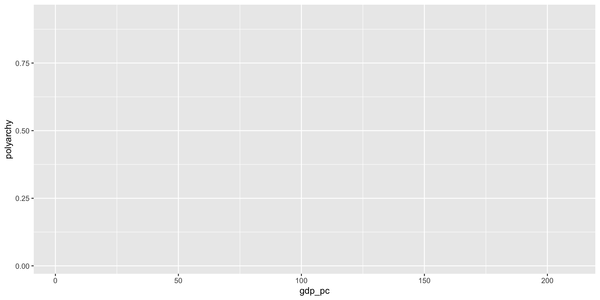

%% Note: fig-width option not working as of Quarto 1.4, try again in 1.5
flowchart LR
Client-->|Request|id1[(API)]
id1[(API)]-->|Response|Client
id1[(API)]-->Server
Server-->id1[(API)]
Working with V-Dem Data
May 17, 2026
Where Does Data Come From?
Thoughts? 😎 💭
- Your boss or a client sends you a file
- Survey data collected by you or someone else
- You can download it from a website
- You can scrape it from a website
- A curated collection (e.g.
unvotes) - You can access it through an API
The Concept of “Tidy Data”
- Each column represents a single variable
- Each row represents a single observation
- Each cell represents a single value
Tidy Data Example

The Concept of “Clean Data”
- Column names are easy to work with and are not duplicated
- Missing values have been dealt with
- There are no repeated observations or columns
- There are no blank observations or columns
- The data are in the proper format
- For example dates should be formatted as dates
Messy Data Example

Which of These is Likely Tidy/Clean?
- Your boss or a client sends you a file
- Survey data collected by you or someone else
- You can download it from a website
- You can scrape it from a website
- A curated collection (e.g.
unvotes) - You can access it through an API
How Do We Get Tidy/Clean Data?
- Wrangle it ourselves
- Use a package where it has been wrangled for us
- Download via an API
APIs
- API stands for “Application Programming Interface”
- Way for two computers to talk to each other
- For IA, we could use APIs to download social science data
APIs for IA
- APIs are accessed through packages in R
- Much easier than reading in data from messy flat file!
- Here are a few examples:
- World Bank data through
wbstatsorWDI countrycodefor country codeseurostatfor data on Europe
- World Bank data through
- But there are many APIs out there (please explore!)
This Lesson
- Access V-Dem data with
vdemdataPackage - This is the only package for V-Dem
- Just imports all the data
- So we have to use
dplyrfunctions likefilter()andselect()
- Run this code and see what happens.
- What is
vdemand what does it do?
# Load packages
library(vdemdata) # to download V-Dem data
library(dplyr)
# Download the data
democracy <- vdem
# View the data
glimpse(democracy)Rows: 28,092
Columns: 4,618
$ country_name <chr> "Mexico", "Mexico", "Mexico", "Mexico"…
$ country_text_id <chr> "MEX", "MEX", "MEX", "MEX", "MEX", "ME…
$ country_id <dbl> 3, 3, 3, 3, 3, 3, 3, 3, 3, 3, 3, 3, 3,…
$ year <dbl> 1789, 1790, 1791, 1792, 1793, 1794, 17…
$ historical_date <date> 1789-12-31, 1790-12-31, 1791-12-31, 1…
$ project <dbl> 1, 1, 1, 1, 1, 1, 1, 1, 1, 1, 1, 1, 1,…
$ historical <dbl> 1, 1, 1, 1, 1, 1, 1, 1, 1, 1, 1, 1, 1,…
$ histname <chr> "Viceroyalty of New Spain", "Viceroyal…
$ codingstart <dbl> 1789, 1789, 1789, 1789, 1789, 1789, 17…
$ codingend <dbl> 2025, 2025, 2025, 2025, 2025, 2025, 20…
$ codingstart_contemp <dbl> 1900, 1900, 1900, 1900, 1900, 1900, 19…
$ codingend_contemp <dbl> 2025, 2025, 2025, 2025, 2025, 2025, 20…
$ codingstart_hist <dbl> 1789, 1789, 1789, 1789, 1789, 1789, 17…
$ codingend_hist <dbl> 1920, 1920, 1920, 1920, 1920, 1920, 19…
$ gapstart1 <dbl> NA, NA, NA, NA, NA, NA, NA, NA, NA, NA…
$ gapstart2 <dbl> NA, NA, NA, NA, NA, NA, NA, NA, NA, NA…
$ gapstart3 <dbl> NA, NA, NA, NA, NA, NA, NA, NA, NA, NA…
$ gapend1 <dbl> NA, NA, NA, NA, NA, NA, NA, NA, NA, NA…
$ gapend2 <dbl> NA, NA, NA, NA, NA, NA, NA, NA, NA, NA…
$ gapend3 <dbl> NA, NA, NA, NA, NA, NA, NA, NA, NA, NA…
$ gap_index <dbl> 1, 1, 1, 1, 1, 1, 1, 1, 1, 1, 1, 1, 1,…
$ COWcode <dbl> 70, 70, 70, 70, 70, 70, 70, 70, 70, 70…
$ v2x_polyarchy <dbl> 0.027, 0.027, 0.027, 0.027, 0.027, 0.0…
$ v2x_polyarchy_codelow <dbl> 0.016, 0.016, 0.016, 0.016, 0.016, 0.0…
$ v2x_polyarchy_codehigh <dbl> 0.036, 0.036, 0.036, 0.036, 0.036, 0.0…
$ v2x_polyarchy_sd <dbl> 0.011, 0.011, 0.011, 0.011, 0.011, 0.0…
$ v2x_libdem <dbl> 0.044, 0.044, 0.044, 0.044, 0.044, 0.0…
$ v2x_libdem_codelow <dbl> 0.030, 0.030, 0.030, 0.030, 0.030, 0.0…
$ v2x_libdem_codehigh <dbl> 0.057, 0.057, 0.057, 0.057, 0.057, 0.0…
$ v2x_libdem_sd <dbl> 0.014, 0.014, 0.014, 0.014, 0.014, 0.0…
$ v2x_partipdem <dbl> 0.006, 0.006, 0.006, 0.006, 0.006, 0.0…
$ v2x_partipdem_codelow <dbl> 0.001, 0.001, 0.001, 0.001, 0.001, 0.0…
$ v2x_partipdem_codehigh <dbl> 0.009, 0.009, 0.009, 0.009, 0.009, 0.0…
$ v2x_partipdem_sd <dbl> 0.006, 0.006, 0.006, 0.006, 0.006, 0.0…
$ v2x_delibdem <dbl> NA, NA, NA, NA, NA, NA, NA, NA, NA, NA…
$ v2x_delibdem_codelow <dbl> NA, NA, NA, NA, NA, NA, NA, NA, NA, NA…
$ v2x_delibdem_codehigh <dbl> NA, NA, NA, NA, NA, NA, NA, NA, NA, NA…
$ v2x_delibdem_sd <dbl> NA, NA, NA, NA, NA, NA, NA, NA, NA, NA…
$ v2x_egaldem <dbl> NA, NA, NA, NA, NA, NA, NA, NA, NA, NA…
$ v2x_egaldem_codelow <dbl> NA, NA, NA, NA, NA, NA, NA, NA, NA, NA…
$ v2x_egaldem_codehigh <dbl> NA, NA, NA, NA, NA, NA, NA, NA, NA, NA…
$ v2x_egaldem_sd <dbl> NA, NA, NA, NA, NA, NA, NA, NA, NA, NA…
$ v2x_api <dbl> 0.055, 0.055, 0.055, 0.055, 0.055, 0.0…
$ v2x_api_codelow <dbl> 0.032, 0.032, 0.032, 0.032, 0.032, 0.0…
$ v2x_api_codehigh <dbl> 0.072, 0.072, 0.072, 0.072, 0.072, 0.0…
$ v2x_api_sd <dbl> 0.021, 0.021, 0.021, 0.021, 0.021, 0.0…
$ v2x_mpi <dbl> 0, 0, 0, 0, 0, 0, 0, 0, 0, 0, 0, 0, 0,…
$ v2x_mpi_codelow <dbl> 0, 0, 0, 0, 0, 0, 0, 0, 0, 0, 0, 0, 0,…
$ v2x_mpi_codehigh <dbl> 0, 0, 0, 0, 0, 0, 0, 0, 0, 0, 0, 0, 0,…
$ v2x_mpi_sd <dbl> 0, 0, 0, 0, 0, 0, 0, 0, 0, 0, 0, 0, 0,…
$ v2x_freexp_altinf <dbl> 0.165, 0.165, 0.165, 0.165, 0.165, 0.1…
$ v2x_freexp_altinf_codelow <dbl> 0.083, 0.083, 0.083, 0.083, 0.083, 0.0…
$ v2x_freexp_altinf_codehigh <dbl> 0.225, 0.225, 0.225, 0.225, 0.225, 0.2…
$ v2x_freexp_altinf_sd <dbl> 0.078, 0.078, 0.078, 0.078, 0.078, 0.0…
$ v2x_frassoc_thick <dbl> 0.043, 0.043, 0.043, 0.043, 0.043, 0.0…
$ v2x_frassoc_thick_codelow <dbl> 0.011, 0.011, 0.011, 0.011, 0.011, 0.0…
$ v2x_frassoc_thick_codehigh <dbl> 0.061, 0.061, 0.061, 0.061, 0.061, 0.0…
$ v2x_frassoc_thick_sd <dbl> 0.034, 0.034, 0.034, 0.034, 0.034, 0.0…
$ v2x_suffr <dbl> 0, 0, 0, 0, 0, 0, 0, 0, 0, 0, 0, 0, 0,…
$ v2xel_frefair <dbl> 0, 0, 0, 0, 0, 0, 0, 0, 0, 0, 0, 0, 0,…
$ v2xel_frefair_codelow <dbl> 0, 0, 0, 0, 0, 0, 0, 0, 0, 0, 0, 0, 0,…
$ v2xel_frefair_codehigh <dbl> 0, 0, 0, 0, 0, 0, 0, 0, 0, 0, 0, 0, 0,…
$ v2xel_frefair_sd <dbl> 0, 0, 0, 0, 0, 0, 0, 0, 0, 0, 0, 0, 0,…
$ v2x_elecoff <dbl> 0, 0, 0, 0, 0, 0, 0, 0, 0, 0, 0, 0, 0,…
$ v2x_liberal <dbl> 0.172, 0.172, 0.172, 0.172, 0.172, 0.1…
$ v2x_liberal_codelow <dbl> 0.101, 0.101, 0.101, 0.101, 0.101, 0.1…
$ v2x_liberal_codehigh <dbl> 0.211, 0.211, 0.211, 0.211, 0.211, 0.2…
$ v2x_liberal_sd <dbl> 0.054, 0.054, 0.054, 0.054, 0.054, 0.0…
$ v2xcl_rol <dbl> 0.200, 0.200, 0.200, 0.200, 0.200, 0.2…
$ v2xcl_rol_codelow <dbl> 0.097, 0.097, 0.097, 0.097, 0.097, 0.0…
$ v2xcl_rol_codehigh <dbl> 0.255, 0.255, 0.255, 0.255, 0.255, 0.2…
$ v2xcl_rol_sd <dbl> 0.082, 0.082, 0.082, 0.082, 0.082, 0.0…
$ v2x_jucon <dbl> 0.303, 0.303, 0.303, 0.303, 0.303, 0.3…
$ v2x_jucon_codelow <dbl> 0.154, 0.154, 0.154, 0.154, 0.154, 0.1…
$ v2x_jucon_codehigh <dbl> 0.442, 0.442, 0.442, 0.442, 0.442, 0.4…
$ v2x_jucon_sd <dbl> 0.142, 0.142, 0.142, 0.142, 0.142, 0.1…
$ v2xlg_legcon <dbl> 0.096, 0.096, 0.096, 0.096, 0.096, 0.0…
$ v2xlg_legcon_codelow <dbl> 0.001, 0.001, 0.001, 0.001, 0.001, 0.0…
$ v2xlg_legcon_codehigh <dbl> 0.150, 0.150, 0.150, 0.150, 0.150, 0.1…
$ v2xlg_legcon_sd <dbl> 0.112, 0.112, 0.112, 0.112, 0.112, 0.1…
$ v2x_partip <dbl> 0.019, 0.019, 0.019, 0.019, 0.019, 0.0…
$ v2x_partip_codelow <dbl> 0, 0, 0, 0, 0, 0, 0, 0, 0, 0, 0, 0, 0,…
$ v2x_partip_codehigh <dbl> 0.03, 0.03, 0.03, 0.03, 0.03, 0.03, 0.…
$ v2x_partip_sd <dbl> 0.023, 0.023, 0.023, 0.023, 0.023, 0.0…
$ v2x_cspart <dbl> 0.031, 0.031, 0.031, 0.031, 0.031, 0.0…
$ v2x_cspart_codelow <dbl> 0, 0, 0, 0, 0, 0, 0, 0, 0, 0, 0, 0, 0,…
$ v2x_cspart_codehigh <dbl> 0.053, 0.053, 0.053, 0.053, 0.053, 0.0…
$ v2x_cspart_sd <dbl> 0.056, 0.056, 0.056, 0.056, 0.056, 0.0…
$ v2xdd_dd <dbl> NA, NA, NA, NA, NA, NA, NA, NA, NA, NA…
$ v2xel_locelec <dbl> 0, 0, 0, 0, 0, 0, 0, 0, 0, 0, 0, 0, 0,…
$ v2xel_locelec_codelow <dbl> 0, 0, 0, 0, 0, 0, 0, 0, 0, 0, 0, 0, 0,…
$ v2xel_locelec_codehigh <dbl> 0, 0, 0, 0, 0, 0, 0, 0, 0, 0, 0, 0, 0,…
$ v2xel_locelec_sd <dbl> 0, 0, 0, 0, 0, 0, 0, 0, 0, 0, 0, 0, 0,…
$ v2xel_regelec <dbl> 0.012, 0.012, 0.012, 0.012, 0.012, 0.0…
$ v2xel_regelec_codelow <dbl> 0, 0, 0, 0, 0, 0, 0, 0, 0, 0, 0, 0, 0,…
$ v2xel_regelec_codehigh <dbl> 0.029, 0.029, 0.029, 0.029, 0.029, 0.0…
$ v2xel_regelec_sd <dbl> 0.044, 0.044, 0.044, 0.044, 0.044, 0.0…
$ v2xdl_delib <dbl> NA, NA, NA, NA, NA, NA, NA, NA, NA, NA…
$ v2xdl_delib_codelow <dbl> NA, NA, NA, NA, NA, NA, NA, NA, NA, NA…
$ v2xdl_delib_codehigh <dbl> NA, NA, NA, NA, NA, NA, NA, NA, NA, NA…
$ v2xdl_delib_sd <dbl> NA, NA, NA, NA, NA, NA, NA, NA, NA, NA…
$ v2x_egal <dbl> NA, NA, NA, NA, NA, NA, NA, NA, NA, NA…
$ v2x_egal_codelow <dbl> NA, NA, NA, NA, NA, NA, NA, NA, NA, NA…
$ v2x_egal_codehigh <dbl> NA, NA, NA, NA, NA, NA, NA, NA, NA, NA…
$ v2x_egal_sd <dbl> NA, NA, NA, NA, NA, NA, NA, NA, NA, NA…
$ v2xeg_eqprotec <dbl> 0.193, 0.193, 0.193, 0.193, 0.193, 0.1…
$ v2xeg_eqprotec_codelow <dbl> 0.003, 0.003, 0.003, 0.003, 0.003, 0.0…
$ v2xeg_eqprotec_codehigh <dbl> 0.292, 0.292, 0.292, 0.292, 0.292, 0.2…
$ v2xeg_eqprotec_sd <dbl> 0.18, 0.18, 0.18, 0.18, 0.18, 0.18, 0.…
$ v2xeg_eqaccess <dbl> 0.106, 0.106, 0.140, 0.140, 0.140, 0.1…
$ v2xeg_eqaccess_codelow <dbl> 0.001, 0.001, 0.007, 0.007, 0.007, 0.0…
$ v2xeg_eqaccess_codehigh <dbl> 0.169, 0.169, 0.218, 0.218, 0.218, 0.1…
$ v2xeg_eqaccess_sd <dbl> 0.126, 0.126, 0.139, 0.139, 0.139, 0.1…
$ v2xeg_eqdr <dbl> NA, NA, NA, NA, NA, NA, NA, NA, NA, NA…
$ v2xeg_eqdr_codelow <dbl> NA, NA, NA, NA, NA, NA, NA, NA, NA, NA…
$ v2xeg_eqdr_codehigh <dbl> NA, NA, NA, NA, NA, NA, NA, NA, NA, NA…
$ v2xeg_eqdr_sd <dbl> NA, NA, NA, NA, NA, NA, NA, NA, NA, NA…
$ v2eltype_0 <dbl> NA, NA, NA, NA, NA, NA, NA, NA, NA, NA…
$ v2eltype_1 <dbl> NA, NA, NA, NA, NA, NA, NA, NA, NA, NA…
$ v2eltype_2 <dbl> NA, NA, NA, NA, NA, NA, NA, NA, NA, NA…
$ v2eltype_3 <dbl> NA, NA, NA, NA, NA, NA, NA, NA, NA, NA…
$ v2eltype_4 <dbl> NA, NA, NA, NA, NA, NA, NA, NA, NA, NA…
$ v2eltype_5 <dbl> NA, NA, NA, NA, NA, NA, NA, NA, NA, NA…
$ v2eltype_6 <dbl> NA, NA, NA, NA, NA, NA, NA, NA, NA, NA…
$ v2eltype_7 <dbl> NA, NA, NA, NA, NA, NA, NA, NA, NA, NA…
$ v2eltype_8 <dbl> NA, NA, NA, NA, NA, NA, NA, NA, NA, NA…
$ v2eltype_9 <dbl> NA, NA, NA, NA, NA, NA, NA, NA, NA, NA…
$ v2elcomvot <dbl> NA, NA, NA, NA, NA, NA, NA, NA, NA, NA…
$ v2elfemrst <dbl> NA, NA, NA, NA, NA, NA, NA, NA, NA, NA…
$ v2elage <dbl> NA, NA, NA, NA, NA, NA, NA, NA, NA, NA…
$ v2elgvsuflvl <dbl> NA, NA, NA, NA, NA, NA, NA, NA, NA, NA…
$ v2elsuffrage <dbl> 0, 0, 0, 0, 0, 0, 0, 0, 0, 0, 0, 0, 0,…
$ v2elwestmon <dbl> NA, NA, NA, NA, NA, NA, NA, NA, NA, NA…
$ v2asuffrage <dbl> NA, NA, NA, NA, NA, NA, NA, NA, NA, NA…
$ v2fsuffrage <dbl> NA, NA, NA, NA, NA, NA, NA, NA, NA, NA…
$ v2msuffrage <dbl> NA, NA, NA, NA, NA, NA, NA, NA, NA, NA…
$ v2eldonate <dbl> -1.52, -1.52, -1.52, -1.52, -1.52, -1.…
$ v2eldonate_codelow <dbl> -2.034, -2.034, -2.034, -2.034, -2.034…
$ v2eldonate_codehigh <dbl> -1.013, -1.013, -1.013, -1.013, -1.013…
$ v2eldonate_sd <dbl> 0.527, 0.527, 0.527, 0.527, 0.527, 0.5…
$ v2eldonate_osp <dbl> 0.277, 0.277, 0.277, 0.277, 0.277, 0.2…
$ v2eldonate_osp_codelow <dbl> 0.046, 0.046, 0.046, 0.046, 0.046, 0.0…
$ v2eldonate_osp_codehigh <dbl> 0.417, 0.417, 0.417, 0.417, 0.417, 0.4…
$ v2eldonate_osp_sd <dbl> 0.207, 0.207, 0.207, 0.207, 0.207, 0.2…
$ v2eldonate_ord <dbl> 0, 0, 0, 0, 0, 0, 0, 0, 0, 0, 0, 0, 0,…
$ v2eldonate_ord_codelow <dbl> 0, 0, 0, 0, 0, 0, 0, 0, 0, 0, 0, 0, 0,…
$ v2eldonate_ord_codehigh <dbl> 0, 0, 0, 0, 0, 0, 0, 0, 0, 0, 0, 0, 0,…
$ v2eldonate_mean <dbl> 0, 0, 0, 0, 0, 0, 0, 0, 0, 0, 0, 0, 0,…
$ v2eldonate_nr <dbl> 2, 2, 2, 2, 2, 2, 2, 2, 2, 2, 2, 2, 2,…
$ v2elpubfin <dbl> -2.222, -2.222, -2.222, -2.222, -2.222…
$ v2elpubfin_codelow <dbl> -2.865, -2.865, -2.865, -2.865, -2.865…
$ v2elpubfin_codehigh <dbl> -1.428, -1.428, -1.428, -1.428, -1.428…
$ v2elpubfin_sd <dbl> 0.728, 0.728, 0.728, 0.728, 0.728, 0.7…
$ v2elpubfin_osp <dbl> 0.104, 0.104, 0.104, 0.104, 0.104, 0.1…
$ v2elpubfin_osp_codelow <dbl> 0, 0, 0, 0, 0, 0, 0, 0, 0, 0, 0, 0, 0,…
$ v2elpubfin_osp_codehigh <dbl> 0.187, 0.187, 0.187, 0.187, 0.187, 0.1…
$ v2elpubfin_osp_sd <dbl> 0.177, 0.177, 0.177, 0.177, 0.177, 0.1…
$ v2elpubfin_ord <dbl> 0, 0, 0, 0, 0, 0, 0, 0, 0, 0, 0, 0, 0,…
$ v2elpubfin_ord_codelow <dbl> 0, 0, 0, 0, 0, 0, 0, 0, 0, 0, 0, 0, 0,…
$ v2elpubfin_ord_codehigh <dbl> 0, 0, 0, 0, 0, 0, 0, 0, 0, 0, 0, 0, 0,…
$ v2elpubfin_mean <dbl> 0, 0, 0, 0, 0, 0, 0, 0, 0, 0, 0, 0, 0,…
$ v2elpubfin_nr <dbl> 1, 2, 2, 2, 2, 2, 2, 2, 2, 2, 2, 2, 2,…
$ v2elembaut <dbl> -1.307, -1.307, -1.307, -1.307, -1.307…
$ v2elembaut_codelow <dbl> -1.749, -1.749, -1.749, -1.749, -1.749…
$ v2elembaut_codehigh <dbl> -0.749, -0.749, -0.749, -0.749, -0.749…
$ v2elembaut_sd <dbl> 0.506, 0.506, 0.506, 0.506, 0.506, 0.5…
$ v2elembaut_osp <dbl> 0.482, 0.482, 0.482, 0.482, 0.482, 0.4…
$ v2elembaut_osp_codelow <dbl> 0.116, 0.116, 0.116, 0.116, 0.116, 0.1…
$ v2elembaut_osp_codehigh <dbl> 0.685, 0.685, 0.685, 0.685, 0.685, 0.6…
$ v2elembaut_osp_sd <dbl> 0.294, 0.294, 0.294, 0.294, 0.294, 0.2…
$ v2elembaut_ord <dbl> 0, 0, 0, 0, 0, 0, 0, 0, 0, 0, 0, 0, 0,…
$ v2elembaut_ord_codelow <dbl> 0, 0, 0, 0, 0, 0, 0, 0, 0, 0, 0, 0, 0,…
$ v2elembaut_ord_codehigh <dbl> 0, 0, 0, 0, 0, 0, 0, 0, 0, 0, 0, 0, 0,…
$ v2elembaut_mean <dbl> 1.5, 1.5, 1.5, 1.5, 1.5, 1.5, 1.5, 1.5…
$ v2elembaut_nr <dbl> 2, 2, 2, 2, 2, 2, 2, 2, 2, 2, 2, 2, 2,…
$ v2elembcap <dbl> -1.448, -1.448, -1.448, -1.448, -1.448…
$ v2elembcap_codelow <dbl> -1.97, -1.97, -1.97, -1.97, -1.97, -1.…
$ v2elembcap_codehigh <dbl> -0.896, -0.896, -0.896, -0.896, -0.896…
$ v2elembcap_sd <dbl> 0.555, 0.555, 0.555, 0.555, 0.555, 0.5…
$ v2elembcap_osp <dbl> 0.733, 0.733, 0.733, 0.733, 0.733, 0.7…
$ v2elembcap_osp_codelow <dbl> 0.255, 0.255, 0.255, 0.255, 0.255, 0.2…
$ v2elembcap_osp_codehigh <dbl> 1.046, 1.046, 1.046, 1.046, 1.046, 1.0…
$ v2elembcap_osp_sd <dbl> 0.398, 0.398, 0.398, 0.398, 0.398, 0.3…
$ v2elembcap_ord <dbl> 0, 0, 0, 0, 0, 0, 0, 0, 0, 0, 0, 0, 0,…
$ v2elembcap_ord_codelow <dbl> 0, 0, 0, 0, 0, 0, 0, 0, 0, 0, 0, 0, 0,…
$ v2elembcap_ord_codehigh <dbl> 1, 1, 1, 1, 1, 1, 1, 1, 1, 1, 1, 1, 1,…
$ v2elembcap_mean <dbl> 2.5, 2.5, 2.5, 2.5, 2.5, 2.5, 2.5, 2.5…
$ v2elembcap_nr <dbl> 2, 2, 2, 2, 2, 2, 2, 2, 2, 2, 2, 2, 2,…
$ v2elmulpar <dbl> NA, NA, NA, NA, NA, NA, NA, NA, NA, NA…
$ v2elmulpar_codelow <dbl> NA, NA, NA, NA, NA, NA, NA, NA, NA, NA…
$ v2elmulpar_codehigh <dbl> NA, NA, NA, NA, NA, NA, NA, NA, NA, NA…
$ v2elmulpar_sd <dbl> NA, NA, NA, NA, NA, NA, NA, NA, NA, NA…
$ v2elmulpar_osp <dbl> NA, NA, NA, NA, NA, NA, NA, NA, NA, NA…
$ v2elmulpar_osp_codelow <dbl> NA, NA, NA, NA, NA, NA, NA, NA, NA, NA…
$ v2elmulpar_osp_codehigh <dbl> NA, NA, NA, NA, NA, NA, NA, NA, NA, NA…
$ v2elmulpar_osp_sd <dbl> NA, NA, NA, NA, NA, NA, NA, NA, NA, NA…
$ v2elmulpar_ord <dbl> NA, NA, NA, NA, NA, NA, NA, NA, NA, NA…
$ v2elmulpar_ord_codelow <dbl> NA, NA, NA, NA, NA, NA, NA, NA, NA, NA…
$ v2elmulpar_ord_codehigh <dbl> NA, NA, NA, NA, NA, NA, NA, NA, NA, NA…
$ v2elmulpar_mean <dbl> NA, NA, NA, NA, NA, NA, NA, NA, NA, NA…
$ v2elmulpar_nr <dbl> NA, NA, NA, NA, NA, NA, NA, NA, NA, NA…
$ v2elrgstry <dbl> NA, NA, NA, NA, NA, NA, NA, NA, NA, NA…
$ v2elrgstry_codelow <dbl> NA, NA, NA, NA, NA, NA, NA, NA, NA, NA…
$ v2elrgstry_codehigh <dbl> NA, NA, NA, NA, NA, NA, NA, NA, NA, NA…
$ v2elrgstry_sd <dbl> NA, NA, NA, NA, NA, NA, NA, NA, NA, NA…
$ v2elrgstry_osp <dbl> NA, NA, NA, NA, NA, NA, NA, NA, NA, NA…
$ v2elrgstry_osp_codelow <dbl> NA, NA, NA, NA, NA, NA, NA, NA, NA, NA…
$ v2elrgstry_osp_codehigh <dbl> NA, NA, NA, NA, NA, NA, NA, NA, NA, NA…
$ v2elrgstry_osp_sd <dbl> NA, NA, NA, NA, NA, NA, NA, NA, NA, NA…
$ v2elrgstry_ord <dbl> NA, NA, NA, NA, NA, NA, NA, NA, NA, NA…
$ v2elrgstry_ord_codelow <dbl> NA, NA, NA, NA, NA, NA, NA, NA, NA, NA…
$ v2elrgstry_ord_codehigh <dbl> NA, NA, NA, NA, NA, NA, NA, NA, NA, NA…
$ v2elrgstry_mean <dbl> NA, NA, NA, NA, NA, NA, NA, NA, NA, NA…
$ v2elrgstry_nr <dbl> NA, NA, NA, NA, NA, NA, NA, NA, NA, NA…
$ v2elvotbuy <dbl> NA, NA, NA, NA, NA, NA, NA, NA, NA, NA…
$ v2elvotbuy_codelow <dbl> NA, NA, NA, NA, NA, NA, NA, NA, NA, NA…
$ v2elvotbuy_codehigh <dbl> NA, NA, NA, NA, NA, NA, NA, NA, NA, NA…
$ v2elvotbuy_sd <dbl> NA, NA, NA, NA, NA, NA, NA, NA, NA, NA…
$ v2elvotbuy_osp <dbl> NA, NA, NA, NA, NA, NA, NA, NA, NA, NA…
$ v2elvotbuy_osp_codelow <dbl> NA, NA, NA, NA, NA, NA, NA, NA, NA, NA…
$ v2elvotbuy_osp_codehigh <dbl> NA, NA, NA, NA, NA, NA, NA, NA, NA, NA…
$ v2elvotbuy_osp_sd <dbl> NA, NA, NA, NA, NA, NA, NA, NA, NA, NA…
$ v2elvotbuy_ord <dbl> NA, NA, NA, NA, NA, NA, NA, NA, NA, NA…
$ v2elvotbuy_ord_codelow <dbl> NA, NA, NA, NA, NA, NA, NA, NA, NA, NA…
$ v2elvotbuy_ord_codehigh <dbl> NA, NA, NA, NA, NA, NA, NA, NA, NA, NA…
$ v2elvotbuy_mean <dbl> NA, NA, NA, NA, NA, NA, NA, NA, NA, NA…
$ v2elvotbuy_nr <dbl> NA, NA, NA, NA, NA, NA, NA, NA, NA, NA…
$ v2elirreg <dbl> NA, NA, NA, NA, NA, NA, NA, NA, NA, NA…
$ v2elirreg_codelow <dbl> NA, NA, NA, NA, NA, NA, NA, NA, NA, NA…
$ v2elirreg_codehigh <dbl> NA, NA, NA, NA, NA, NA, NA, NA, NA, NA…
$ v2elirreg_sd <dbl> NA, NA, NA, NA, NA, NA, NA, NA, NA, NA…
$ v2elirreg_osp <dbl> NA, NA, NA, NA, NA, NA, NA, NA, NA, NA…
$ v2elirreg_osp_codelow <dbl> NA, NA, NA, NA, NA, NA, NA, NA, NA, NA…
$ v2elirreg_osp_codehigh <dbl> NA, NA, NA, NA, NA, NA, NA, NA, NA, NA…
$ v2elirreg_osp_sd <dbl> NA, NA, NA, NA, NA, NA, NA, NA, NA, NA…
$ v2elirreg_ord <dbl> NA, NA, NA, NA, NA, NA, NA, NA, NA, NA…
$ v2elirreg_ord_codelow <dbl> NA, NA, NA, NA, NA, NA, NA, NA, NA, NA…
$ v2elirreg_ord_codehigh <dbl> NA, NA, NA, NA, NA, NA, NA, NA, NA, NA…
$ v2elirreg_mean <dbl> NA, NA, NA, NA, NA, NA, NA, NA, NA, NA…
$ v2elirreg_nr <dbl> NA, NA, NA, NA, NA, NA, NA, NA, NA, NA…
$ v2elintim <dbl> NA, NA, NA, NA, NA, NA, NA, NA, NA, NA…
$ v2elintim_codelow <dbl> NA, NA, NA, NA, NA, NA, NA, NA, NA, NA…
$ v2elintim_codehigh <dbl> NA, NA, NA, NA, NA, NA, NA, NA, NA, NA…
$ v2elintim_sd <dbl> NA, NA, NA, NA, NA, NA, NA, NA, NA, NA…
$ v2elintim_osp <dbl> NA, NA, NA, NA, NA, NA, NA, NA, NA, NA…
$ v2elintim_osp_codelow <dbl> NA, NA, NA, NA, NA, NA, NA, NA, NA, NA…
$ v2elintim_osp_codehigh <dbl> NA, NA, NA, NA, NA, NA, NA, NA, NA, NA…
$ v2elintim_osp_sd <dbl> NA, NA, NA, NA, NA, NA, NA, NA, NA, NA…
$ v2elintim_ord <dbl> NA, NA, NA, NA, NA, NA, NA, NA, NA, NA…
$ v2elintim_ord_codelow <dbl> NA, NA, NA, NA, NA, NA, NA, NA, NA, NA…
$ v2elintim_ord_codehigh <dbl> NA, NA, NA, NA, NA, NA, NA, NA, NA, NA…
$ v2elintim_mean <dbl> NA, NA, NA, NA, NA, NA, NA, NA, NA, NA…
$ v2elintim_nr <dbl> NA, NA, NA, NA, NA, NA, NA, NA, NA, NA…
$ v2elpeace <dbl> NA, NA, NA, NA, NA, NA, NA, NA, NA, NA…
$ v2elpeace_codelow <dbl> NA, NA, NA, NA, NA, NA, NA, NA, NA, NA…
$ v2elpeace_codehigh <dbl> NA, NA, NA, NA, NA, NA, NA, NA, NA, NA…
$ v2elpeace_sd <dbl> NA, NA, NA, NA, NA, NA, NA, NA, NA, NA…
$ v2elpeace_osp <dbl> NA, NA, NA, NA, NA, NA, NA, NA, NA, NA…
$ v2elpeace_osp_codelow <dbl> NA, NA, NA, NA, NA, NA, NA, NA, NA, NA…
$ v2elpeace_osp_codehigh <dbl> NA, NA, NA, NA, NA, NA, NA, NA, NA, NA…
$ v2elpeace_osp_sd <dbl> NA, NA, NA, NA, NA, NA, NA, NA, NA, NA…
$ v2elpeace_ord <dbl> NA, NA, NA, NA, NA, NA, NA, NA, NA, NA…
$ v2elpeace_ord_codelow <dbl> NA, NA, NA, NA, NA, NA, NA, NA, NA, NA…
$ v2elpeace_ord_codehigh <dbl> NA, NA, NA, NA, NA, NA, NA, NA, NA, NA…
$ v2elpeace_mean <dbl> NA, NA, NA, NA, NA, NA, NA, NA, NA, NA…
$ v2elpeace_nr <dbl> NA, NA, NA, NA, NA, NA, NA, NA, NA, NA…
$ v2elboycot <dbl> NA, NA, NA, NA, NA, NA, NA, NA, NA, NA…
$ v2elboycot_codelow <dbl> NA, NA, NA, NA, NA, NA, NA, NA, NA, NA…
$ v2elboycot_codehigh <dbl> NA, NA, NA, NA, NA, NA, NA, NA, NA, NA…
$ v2elboycot_sd <dbl> NA, NA, NA, NA, NA, NA, NA, NA, NA, NA…
$ v2elboycot_osp <dbl> NA, NA, NA, NA, NA, NA, NA, NA, NA, NA…
$ v2elboycot_osp_codelow <dbl> NA, NA, NA, NA, NA, NA, NA, NA, NA, NA…
$ v2elboycot_osp_codehigh <dbl> NA, NA, NA, NA, NA, NA, NA, NA, NA, NA…
$ v2elboycot_osp_sd <dbl> NA, NA, NA, NA, NA, NA, NA, NA, NA, NA…
$ v2elboycot_ord <dbl> NA, NA, NA, NA, NA, NA, NA, NA, NA, NA…
$ v2elboycot_ord_codelow <dbl> NA, NA, NA, NA, NA, NA, NA, NA, NA, NA…
$ v2elboycot_ord_codehigh <dbl> NA, NA, NA, NA, NA, NA, NA, NA, NA, NA…
$ v2elboycot_mean <dbl> NA, NA, NA, NA, NA, NA, NA, NA, NA, NA…
$ v2elboycot_nr <dbl> NA, NA, NA, NA, NA, NA, NA, NA, NA, NA…
$ v2elfrcamp <dbl> NA, NA, NA, NA, NA, NA, NA, NA, NA, NA…
$ v2elfrcamp_codelow <dbl> NA, NA, NA, NA, NA, NA, NA, NA, NA, NA…
$ v2elfrcamp_codehigh <dbl> NA, NA, NA, NA, NA, NA, NA, NA, NA, NA…
$ v2elfrcamp_sd <dbl> NA, NA, NA, NA, NA, NA, NA, NA, NA, NA…
$ v2elfrcamp_osp <dbl> NA, NA, NA, NA, NA, NA, NA, NA, NA, NA…
$ v2elfrcamp_osp_codelow <dbl> NA, NA, NA, NA, NA, NA, NA, NA, NA, NA…
$ v2elfrcamp_osp_codehigh <dbl> NA, NA, NA, NA, NA, NA, NA, NA, NA, NA…
$ v2elfrcamp_osp_sd <dbl> NA, NA, NA, NA, NA, NA, NA, NA, NA, NA…
$ v2elfrcamp_ord <dbl> NA, NA, NA, NA, NA, NA, NA, NA, NA, NA…
$ v2elfrcamp_ord_codelow <dbl> NA, NA, NA, NA, NA, NA, NA, NA, NA, NA…
$ v2elfrcamp_ord_codehigh <dbl> NA, NA, NA, NA, NA, NA, NA, NA, NA, NA…
$ v2elfrcamp_mean <dbl> NA, NA, NA, NA, NA, NA, NA, NA, NA, NA…
$ v2elfrcamp_nr <dbl> NA, NA, NA, NA, NA, NA, NA, NA, NA, NA…
$ v2elpdcamp <dbl> NA, NA, NA, NA, NA, NA, NA, NA, NA, NA…
$ v2elpdcamp_codelow <dbl> NA, NA, NA, NA, NA, NA, NA, NA, NA, NA…
$ v2elpdcamp_codehigh <dbl> NA, NA, NA, NA, NA, NA, NA, NA, NA, NA…
$ v2elpdcamp_sd <dbl> NA, NA, NA, NA, NA, NA, NA, NA, NA, NA…
$ v2elpdcamp_osp <dbl> NA, NA, NA, NA, NA, NA, NA, NA, NA, NA…
$ v2elpdcamp_osp_codelow <dbl> NA, NA, NA, NA, NA, NA, NA, NA, NA, NA…
$ v2elpdcamp_osp_codehigh <dbl> NA, NA, NA, NA, NA, NA, NA, NA, NA, NA…
$ v2elpdcamp_osp_sd <dbl> NA, NA, NA, NA, NA, NA, NA, NA, NA, NA…
$ v2elpdcamp_ord <dbl> NA, NA, NA, NA, NA, NA, NA, NA, NA, NA…
$ v2elpdcamp_ord_codelow <dbl> NA, NA, NA, NA, NA, NA, NA, NA, NA, NA…
$ v2elpdcamp_ord_codehigh <dbl> NA, NA, NA, NA, NA, NA, NA, NA, NA, NA…
$ v2elpdcamp_mean <dbl> NA, NA, NA, NA, NA, NA, NA, NA, NA, NA…
$ v2elpdcamp_nr <dbl> NA, NA, NA, NA, NA, NA, NA, NA, NA, NA…
$ v2elpaidig <dbl> NA, NA, NA, NA, NA, NA, NA, NA, NA, NA…
$ v2elpaidig_codelow <dbl> NA, NA, NA, NA, NA, NA, NA, NA, NA, NA…
$ v2elpaidig_codehigh <dbl> NA, NA, NA, NA, NA, NA, NA, NA, NA, NA…
$ v2elpaidig_sd <dbl> NA, NA, NA, NA, NA, NA, NA, NA, NA, NA…
$ v2elpaidig_osp <dbl> NA, NA, NA, NA, NA, NA, NA, NA, NA, NA…
$ v2elpaidig_osp_codelow <dbl> NA, NA, NA, NA, NA, NA, NA, NA, NA, NA…
$ v2elpaidig_osp_codehigh <dbl> NA, NA, NA, NA, NA, NA, NA, NA, NA, NA…
$ v2elpaidig_osp_sd <dbl> NA, NA, NA, NA, NA, NA, NA, NA, NA, NA…
$ v2elpaidig_ord <dbl> NA, NA, NA, NA, NA, NA, NA, NA, NA, NA…
$ v2elpaidig_ord_codelow <dbl> NA, NA, NA, NA, NA, NA, NA, NA, NA, NA…
$ v2elpaidig_ord_codehigh <dbl> NA, NA, NA, NA, NA, NA, NA, NA, NA, NA…
$ v2elpaidig_mean <dbl> NA, NA, NA, NA, NA, NA, NA, NA, NA, NA…
$ v2elpaidig_nr <dbl> NA, NA, NA, NA, NA, NA, NA, NA, NA, NA…
$ v2elfrfair <dbl> NA, NA, NA, NA, NA, NA, NA, NA, NA, NA…
$ v2elfrfair_codelow <dbl> NA, NA, NA, NA, NA, NA, NA, NA, NA, NA…
$ v2elfrfair_codehigh <dbl> NA, NA, NA, NA, NA, NA, NA, NA, NA, NA…
$ v2elfrfair_sd <dbl> NA, NA, NA, NA, NA, NA, NA, NA, NA, NA…
$ v2elfrfair_osp <dbl> NA, NA, NA, NA, NA, NA, NA, NA, NA, NA…
$ v2elfrfair_osp_codelow <dbl> NA, NA, NA, NA, NA, NA, NA, NA, NA, NA…
$ v2elfrfair_osp_codehigh <dbl> NA, NA, NA, NA, NA, NA, NA, NA, NA, NA…
$ v2elfrfair_osp_sd <dbl> NA, NA, NA, NA, NA, NA, NA, NA, NA, NA…
$ v2elfrfair_ord <dbl> NA, NA, NA, NA, NA, NA, NA, NA, NA, NA…
$ v2elfrfair_ord_codelow <dbl> NA, NA, NA, NA, NA, NA, NA, NA, NA, NA…
$ v2elfrfair_ord_codehigh <dbl> NA, NA, NA, NA, NA, NA, NA, NA, NA, NA…
$ v2elfrfair_mean <dbl> NA, NA, NA, NA, NA, NA, NA, NA, NA, NA…
$ v2elfrfair_nr <dbl> NA, NA, NA, NA, NA, NA, NA, NA, NA, NA…
$ v2elrstrct <dbl> NA, NA, NA, NA, NA, NA, NA, NA, NA, NA…
$ v2eldommon <dbl> NA, NA, NA, NA, NA, NA, NA, NA, NA, NA…
$ v2elintmon <dbl> NA, NA, NA, NA, NA, NA, NA, NA, NA, NA…
$ v2elmonden <dbl> NA, NA, NA, NA, NA, NA, NA, NA, NA, NA…
$ v2elmonref <dbl> NA, NA, NA, NA, NA, NA, NA, NA, NA, NA…
$ v2elaccept <dbl> NA, NA, NA, NA, NA, NA, NA, NA, NA, NA…
$ v2elaccept_codelow <dbl> NA, NA, NA, NA, NA, NA, NA, NA, NA, NA…
$ v2elaccept_codehigh <dbl> NA, NA, NA, NA, NA, NA, NA, NA, NA, NA…
$ v2elaccept_sd <dbl> NA, NA, NA, NA, NA, NA, NA, NA, NA, NA…
$ v2elaccept_osp <dbl> NA, NA, NA, NA, NA, NA, NA, NA, NA, NA…
$ v2elaccept_osp_codelow <dbl> NA, NA, NA, NA, NA, NA, NA, NA, NA, NA…
$ v2elaccept_osp_codehigh <dbl> NA, NA, NA, NA, NA, NA, NA, NA, NA, NA…
$ v2elaccept_osp_sd <dbl> NA, NA, NA, NA, NA, NA, NA, NA, NA, NA…
$ v2elaccept_ord <dbl> NA, NA, NA, NA, NA, NA, NA, NA, NA, NA…
$ v2elaccept_ord_codelow <dbl> NA, NA, NA, NA, NA, NA, NA, NA, NA, NA…
$ v2elaccept_ord_codehigh <dbl> NA, NA, NA, NA, NA, NA, NA, NA, NA, NA…
$ v2elaccept_mean <dbl> NA, NA, NA, NA, NA, NA, NA, NA, NA, NA…
$ v2elaccept_nr <dbl> NA, NA, NA, NA, NA, NA, NA, NA, NA, NA…
$ v2elasmoff <dbl> NA, NA, NA, NA, NA, NA, NA, NA, NA, NA…
$ v2elasmoff_codelow <dbl> NA, NA, NA, NA, NA, NA, NA, NA, NA, NA…
$ v2elasmoff_codehigh <dbl> NA, NA, NA, NA, NA, NA, NA, NA, NA, NA…
$ v2elasmoff_sd <dbl> NA, NA, NA, NA, NA, NA, NA, NA, NA, NA…
$ v2elasmoff_osp <dbl> NA, NA, NA, NA, NA, NA, NA, NA, NA, NA…
$ v2elasmoff_osp_codelow <dbl> NA, NA, NA, NA, NA, NA, NA, NA, NA, NA…
$ v2elasmoff_osp_codehigh <dbl> NA, NA, NA, NA, NA, NA, NA, NA, NA, NA…
$ v2elasmoff_osp_sd <dbl> NA, NA, NA, NA, NA, NA, NA, NA, NA, NA…
$ v2elasmoff_ord <dbl> NA, NA, NA, NA, NA, NA, NA, NA, NA, NA…
$ v2elasmoff_ord_codelow <dbl> NA, NA, NA, NA, NA, NA, NA, NA, NA, NA…
$ v2elasmoff_ord_codehigh <dbl> NA, NA, NA, NA, NA, NA, NA, NA, NA, NA…
$ v2elasmoff_mean <dbl> NA, NA, NA, NA, NA, NA, NA, NA, NA, NA…
$ v2elasmoff_nr <dbl> NA, NA, NA, NA, NA, NA, NA, NA, NA, NA…
$ v2elvaptrn <dbl> NA, NA, NA, NA, NA, NA, NA, NA, NA, NA…
$ v2eltrnout <dbl> NA, NA, NA, NA, NA, NA, NA, NA, NA, NA…
$ v2lpname <chr> NA, NA, NA, NA, NA, NA, NA, NA, NA, NA…
$ v2slpname <chr> NA, NA, NA, NA, NA, NA, NA, NA, NA, NA…
$ v2tlpname <chr> NA, NA, NA, NA, NA, NA, NA, NA, NA, NA…
$ v2eltvrexo <dbl> NA, NA, NA, NA, NA, NA, NA, NA, NA, NA…
$ v2elvotlrg <dbl> NA, NA, NA, NA, NA, NA, NA, NA, NA, NA…
$ v2elvotsml <dbl> NA, NA, NA, NA, NA, NA, NA, NA, NA, NA…
$ v2elturnhog <dbl> NA, NA, NA, NA, NA, NA, NA, NA, NA, NA…
$ v2elturnhos <dbl> NA, NA, NA, NA, NA, NA, NA, NA, NA, NA…
$ v2elrsthos <dbl> NA, NA, NA, NA, NA, NA, NA, NA, NA, NA…
$ v2elrsthog <dbl> NA, NA, NA, NA, NA, NA, NA, NA, NA, NA…
$ v2elprescons <dbl> NA, NA, NA, NA, NA, NA, NA, NA, NA, NA…
$ v2elprescumul <dbl> NA, NA, NA, NA, NA, NA, NA, NA, NA, NA…
$ v2elthresh <dbl> NA, NA, NA, NA, NA, NA, NA, NA, NA, NA…
$ v2eltvrig <dbl> NA, NA, NA, NA, NA, NA, NA, NA, NA, NA…
$ v2ellostsl <dbl> NA, NA, NA, NA, NA, NA, NA, NA, NA, NA…
$ v2ellostss <dbl> NA, NA, NA, NA, NA, NA, NA, NA, NA, NA…
$ v2ellovtlg <dbl> NA, NA, NA, NA, NA, NA, NA, NA, NA, NA…
$ v2ellovtsm <dbl> NA, NA, NA, NA, NA, NA, NA, NA, NA, NA…
$ v2ellostlg <dbl> NA, NA, NA, NA, NA, NA, NA, NA, NA, NA…
$ v2elloseat <dbl> NA, NA, NA, NA, NA, NA, NA, NA, NA, NA…
$ v2ellostsm <dbl> NA, NA, NA, NA, NA, NA, NA, NA, NA, NA…
$ v2elloelsy <dbl> NA, NA, NA, NA, NA, NA, NA, NA, NA, NA…
$ v2ellocons <dbl> NA, NA, NA, NA, NA, NA, NA, NA, NA, NA…
$ v2ellocumul <dbl> NA, NA, NA, NA, NA, NA, NA, NA, NA, NA…
$ v2elparlel <dbl> NA, NA, NA, NA, NA, NA, NA, NA, NA, NA…
$ v2elloeldm <dbl> NA, NA, NA, NA, NA, NA, NA, NA, NA, NA…
$ v2ellovttm <dbl> NA, NA, NA, NA, NA, NA, NA, NA, NA, NA…
$ v2ellosttm <dbl> NA, NA, NA, NA, NA, NA, NA, NA, NA, NA…
$ v2ellostts <dbl> NA, NA, NA, NA, NA, NA, NA, NA, NA, NA…
$ v2ellobaseat <dbl> NA, NA, NA, NA, NA, NA, NA, NA, NA, NA…
$ v2ellobadis <dbl> NA, NA, NA, NA, NA, NA, NA, NA, NA, NA…
$ v2elloupdis <dbl> NA, NA, NA, NA, NA, NA, NA, NA, NA, NA…
$ v2elloreseat <dbl> NA, NA, NA, NA, NA, NA, NA, NA, NA, NA…
$ v2ellodiseff <dbl> NA, NA, NA, NA, NA, NA, NA, NA, NA, NA…
$ v2elreggov <dbl> 1, 1, 1, 1, 1, 1, 1, 1, 1, 1, 1, 1, 1,…
$ v2elregnam <chr> "Provinces of New Spain (Provincias In…
$ v2elsrgel <dbl> 0, 0, 0, 0, 0, 0, 0, 0, 0, 0, 0, 0, 0,…
$ v2elrgpwr <dbl> -1.949, -1.949, -1.949, -1.949, -1.949…
$ v2elrgpwr_codelow <dbl> -2.725, -2.725, -2.725, -2.725, -2.725…
$ v2elrgpwr_codehigh <dbl> -1.082, -1.082, -1.082, -1.082, -1.082…
$ v2elrgpwr_sd <dbl> 0.844, 0.844, 0.844, 0.844, 0.844, 0.8…
$ v2elrgpwr_osp <dbl> 0.228, 0.228, 0.228, 0.228, 0.228, 0.2…
$ v2elrgpwr_osp_codelow <dbl> 0, 0, 0, 0, 0, 0, 0, 0, 0, 0, 0, 0, 0,…
$ v2elrgpwr_osp_codehigh <dbl> 0.418, 0.418, 0.418, 0.418, 0.418, 0.4…
$ v2elrgpwr_osp_sd <dbl> 0.372, 0.372, 0.372, 0.372, 0.372, 0.3…
$ v2elrgpwr_ord <dbl> 0, 0, 0, 0, 0, 0, 0, 0, 0, 0, 0, 0, 0,…
$ v2elrgpwr_ord_codelow <dbl> 0, 0, 0, 0, 0, 0, 0, 0, 0, 0, 0, 0, 0,…
$ v2elrgpwr_ord_codehigh <dbl> 0, 0, 0, 0, 0, 0, 0, 0, 0, 0, 0, 0, 0,…
$ v2elrgpwr_mean <dbl> 0, 0, 0, 0, 0, 0, 0, 0, 0, 0, 0, 0, 0,…
$ v2elrgpwr_nr <dbl> 1, 1, 1, 1, 1, 1, 1, 1, 1, 1, 1, 1, 1,…
$ v2ellocgov <dbl> 0, 0, 0, 0, 0, 0, 0, 0, 0, 0, 0, 0, 0,…
$ v2ellocnam <chr> NA, NA, NA, NA, NA, NA, NA, NA, NA, NA…
$ v2ellocelc <dbl> NA, NA, NA, NA, NA, NA, NA, NA, NA, NA…
$ v2ellocpwr <dbl> NA, NA, NA, NA, NA, NA, NA, NA, NA, NA…
$ v2ellocpwr_codelow <dbl> NA, NA, NA, NA, NA, NA, NA, NA, NA, NA…
$ v2ellocpwr_codehigh <dbl> NA, NA, NA, NA, NA, NA, NA, NA, NA, NA…
$ v2ellocpwr_sd <dbl> NA, NA, NA, NA, NA, NA, NA, NA, NA, NA…
$ v2ellocpwr_osp <dbl> NA, NA, NA, NA, NA, NA, NA, NA, NA, NA…
$ v2ellocpwr_osp_codelow <dbl> NA, NA, NA, NA, NA, NA, NA, NA, NA, NA…
$ v2ellocpwr_osp_codehigh <dbl> NA, NA, NA, NA, NA, NA, NA, NA, NA, NA…
$ v2ellocpwr_osp_sd <dbl> NA, NA, NA, NA, NA, NA, NA, NA, NA, NA…
$ v2ellocpwr_ord <dbl> NA, NA, NA, NA, NA, NA, NA, NA, NA, NA…
$ v2ellocpwr_ord_codelow <dbl> NA, NA, NA, NA, NA, NA, NA, NA, NA, NA…
$ v2ellocpwr_ord_codehigh <dbl> NA, NA, NA, NA, NA, NA, NA, NA, NA, NA…
$ v2ellocpwr_mean <dbl> NA, NA, NA, NA, NA, NA, NA, NA, NA, NA…
$ v2ellocpwr_nr <dbl> NA, NA, NA, NA, NA, NA, NA, NA, NA, NA…
$ v2elffelr <dbl> -0.735, -0.735, -0.735, -0.735, -0.735…
$ v2elffelr_codelow <dbl> -1.659, -1.659, -1.659, -1.659, -1.659…
$ v2elffelr_codehigh <dbl> 0.246, 0.246, 0.246, 0.246, 0.246, 0.2…
$ v2elffelr_sd <dbl> 0.971, 0.971, 0.971, 0.971, 0.971, 0.9…
$ v2elffelr_osp <dbl> 1.546, 1.546, 1.546, 1.546, 1.546, 1.5…
$ v2elffelr_osp_codelow <dbl> 0.536, 0.536, 0.536, 0.536, 0.536, 0.5…
$ v2elffelr_osp_codehigh <dbl> 2.203, 2.203, 2.203, 2.203, 2.203, 2.2…
$ v2elffelr_osp_sd <dbl> 0.794, 0.794, 0.794, 0.794, 0.794, 0.7…
$ v2elffelr_ord <dbl> 2, 2, 2, 2, 2, 2, 2, 2, 2, 2, 2, 2, 2,…
$ v2elffelr_ord_codelow <dbl> 1, 1, 1, 1, 1, 1, 1, 1, 1, 1, 1, 1, 1,…
$ v2elffelr_ord_codehigh <dbl> 2, 2, 2, 2, 2, 2, 2, 2, 2, 2, 2, 2, 2,…
$ v2elffelr_mean <dbl> 3, 3, 3, 3, 3, 3, 3, 3, 3, 3, 3, 3, 3,…
$ v2elffelr_nr <dbl> 1, 1, 1, 1, 1, 1, 1, 1, 1, 1, 1, 1, 1,…
$ v2elffelrbin <dbl> 1.146, 1.146, 1.146, 1.146, 1.146, 1.1…
$ v2elffelrbin_codelow <dbl> 0.227, 0.227, 0.227, 0.227, 0.227, 0.2…
$ v2elffelrbin_codehigh <dbl> 2.102, 2.102, 2.102, 2.102, 2.102, 2.1…
$ v2elffelrbin_sd <dbl> 0.942, 0.942, 0.942, 0.942, 0.942, 0.9…
$ v2elffelrbin_osp <dbl> 0.997, 0.997, 0.997, 0.997, 0.997, 0.9…
$ v2elffelrbin_osp_codelow <dbl> 0.988, 0.988, 0.988, 0.988, 0.988, 0.9…
$ v2elffelrbin_osp_codehigh <dbl> 1, 1, 1, 1, 1, 1, 1, 1, 1, 1, 1, 1, 1,…
$ v2elffelrbin_osp_sd <dbl> 0.044, 0.044, 0.044, 0.044, 0.044, 0.0…
$ v2elffelrbin_ord <dbl> 1, 1, 1, 1, 1, 1, 1, 1, 1, 1, 1, 1, 1,…
$ v2elffelrbin_ord_codelow <dbl> 1, 1, 1, 1, 1, 1, 1, 1, 1, 1, 1, 1, 1,…
$ v2elffelrbin_ord_codehigh <dbl> 1, 1, 1, 1, 1, 1, 1, 1, 1, 1, 1, 1, 1,…
$ v2elffelrbin_mean <dbl> 1, 1, 1, 1, 1, 1, 1, 1, 1, 1, 1, 1, 1,…
$ v2elffelrbin_nr <dbl> 1, 1, 1, 1, 1, 1, 1, 1, 1, 1, 1, 1, 1,…
$ v2elsnlsff <dbl> -0.031, -0.031, -0.031, -0.031, -0.031…
$ v2elsnlsff_codelow <dbl> -0.811, -0.811, -0.811, -0.811, -0.811…
$ v2elsnlsff_codehigh <dbl> 0.721, 0.721, 0.721, 0.721, 0.721, 0.7…
$ v2elsnlsff_sd <dbl> 0.805, 0.805, 0.805, 0.805, 0.805, 0.8…
$ v2elsnlsff_osp <dbl> 1.43, 1.43, 1.43, 1.43, 1.43, 1.43, 1.…
$ v2elsnlsff_osp_codelow <dbl> 1.154, 1.154, 1.154, 1.154, 1.154, 1.1…
$ v2elsnlsff_osp_codehigh <dbl> 1.9, 1.9, 1.9, 1.9, 1.9, 1.9, 1.9, 1.9…
$ v2elsnlsff_osp_sd <dbl> 0.373, 0.373, 0.373, 0.373, 0.373, 0.3…
$ v2elsnlsff_ord <dbl> 1, 1, 1, 1, 1, 1, 1, 1, 1, 1, 1, 1, 1,…
$ v2elsnlsff_ord_codelow <dbl> 1, 1, 1, 1, 1, 1, 1, 1, 1, 1, 1, 1, 1,…
$ v2elsnlsff_ord_codehigh <dbl> 2, 2, 2, 2, 2, 2, 2, 2, 2, 2, 2, 2, 2,…
$ v2elsnlsff_mean <dbl> 1, 1, 1, 1, 1, 1, 1, 1, 1, 1, 1, 1, 1,…
$ v2elsnlsff_nr <dbl> 1, 1, 1, 1, 1, 1, 1, 1, 1, 1, 1, 1, 1,…
$ v2elsnlfc_0 <dbl> NA, NA, NA, NA, NA, NA, NA, NA, NA, NA…
$ v2elsnlfc_1 <dbl> NA, NA, NA, NA, NA, NA, NA, NA, NA, NA…
$ v2elsnlfc_2 <dbl> NA, NA, NA, NA, NA, NA, NA, NA, NA, NA…
$ v2elsnlfc_3 <dbl> NA, NA, NA, NA, NA, NA, NA, NA, NA, NA…
$ v2elsnlfc_4 <dbl> NA, NA, NA, NA, NA, NA, NA, NA, NA, NA…
$ v2elsnlfc_5 <dbl> NA, NA, NA, NA, NA, NA, NA, NA, NA, NA…
$ v2elsnlfc_6 <dbl> NA, NA, NA, NA, NA, NA, NA, NA, NA, NA…
$ v2elsnlfc_7 <dbl> NA, NA, NA, NA, NA, NA, NA, NA, NA, NA…
$ v2elsnlfc_8 <dbl> NA, NA, NA, NA, NA, NA, NA, NA, NA, NA…
$ v2elsnlfc_9 <dbl> NA, NA, NA, NA, NA, NA, NA, NA, NA, NA…
$ v2elsnlfc_10 <dbl> NA, NA, NA, NA, NA, NA, NA, NA, NA, NA…
$ v2elsnlfc_11 <dbl> NA, NA, NA, NA, NA, NA, NA, NA, NA, NA…
$ v2elsnlfc_12 <dbl> NA, NA, NA, NA, NA, NA, NA, NA, NA, NA…
$ v2elsnlfc_13 <dbl> NA, NA, NA, NA, NA, NA, NA, NA, NA, NA…
$ v2elsnlfc_14 <dbl> NA, NA, NA, NA, NA, NA, NA, NA, NA, NA…
$ v2elsnlfc_15 <dbl> NA, NA, NA, NA, NA, NA, NA, NA, NA, NA…
$ v2elsnlfc_16 <dbl> NA, NA, NA, NA, NA, NA, NA, NA, NA, NA…
$ v2elsnlfc_17 <dbl> NA, NA, NA, NA, NA, NA, NA, NA, NA, NA…
$ v2elsnlfc_18 <dbl> NA, NA, NA, NA, NA, NA, NA, NA, NA, NA…
$ v2elsnlfc_19 <dbl> NA, NA, NA, NA, NA, NA, NA, NA, NA, NA…
$ v2elsnlfc_20 <dbl> NA, NA, NA, NA, NA, NA, NA, NA, NA, NA…
$ v2elsnlfc_21 <dbl> NA, NA, NA, NA, NA, NA, NA, NA, NA, NA…
$ v2elsnlfc_nr <dbl> NA, NA, NA, NA, NA, NA, NA, NA, NA, NA…
$ v2elsnmrfc_0 <dbl> NA, NA, NA, NA, NA, NA, NA, NA, NA, NA…
$ v2elsnmrfc_1 <dbl> NA, NA, NA, NA, NA, NA, NA, NA, NA, NA…
$ v2elsnmrfc_2 <dbl> NA, NA, NA, NA, NA, NA, NA, NA, NA, NA…
$ v2elsnmrfc_3 <dbl> NA, NA, NA, NA, NA, NA, NA, NA, NA, NA…
$ v2elsnmrfc_4 <dbl> NA, NA, NA, NA, NA, NA, NA, NA, NA, NA…
$ v2elsnmrfc_5 <dbl> NA, NA, NA, NA, NA, NA, NA, NA, NA, NA…
$ v2elsnmrfc_6 <dbl> NA, NA, NA, NA, NA, NA, NA, NA, NA, NA…
$ v2elsnmrfc_7 <dbl> NA, NA, NA, NA, NA, NA, NA, NA, NA, NA…
$ v2elsnmrfc_8 <dbl> NA, NA, NA, NA, NA, NA, NA, NA, NA, NA…
$ v2elsnmrfc_9 <dbl> NA, NA, NA, NA, NA, NA, NA, NA, NA, NA…
$ v2elsnmrfc_10 <dbl> NA, NA, NA, NA, NA, NA, NA, NA, NA, NA…
$ v2elsnmrfc_11 <dbl> NA, NA, NA, NA, NA, NA, NA, NA, NA, NA…
$ v2elsnmrfc_12 <dbl> NA, NA, NA, NA, NA, NA, NA, NA, NA, NA…
$ v2elsnmrfc_13 <dbl> NA, NA, NA, NA, NA, NA, NA, NA, NA, NA…
$ v2elsnmrfc_14 <dbl> NA, NA, NA, NA, NA, NA, NA, NA, NA, NA…
$ v2elsnmrfc_15 <dbl> NA, NA, NA, NA, NA, NA, NA, NA, NA, NA…
$ v2elsnmrfc_16 <dbl> NA, NA, NA, NA, NA, NA, NA, NA, NA, NA…
$ v2elsnmrfc_17 <dbl> NA, NA, NA, NA, NA, NA, NA, NA, NA, NA…
$ v2elsnmrfc_18 <dbl> NA, NA, NA, NA, NA, NA, NA, NA, NA, NA…
$ v2elsnmrfc_19 <dbl> NA, NA, NA, NA, NA, NA, NA, NA, NA, NA…
$ v2elsnmrfc_20 <dbl> NA, NA, NA, NA, NA, NA, NA, NA, NA, NA…
$ v2elsnmrfc_21 <dbl> NA, NA, NA, NA, NA, NA, NA, NA, NA, NA…
$ v2elsnmrfc_nr <dbl> NA, NA, NA, NA, NA, NA, NA, NA, NA, NA…
$ v2psbars <dbl> -2.571, -2.571, -2.571, -2.571, -2.571…
$ v2psbars_codelow <dbl> -3.471, -3.471, -3.471, -3.471, -3.471…
$ v2psbars_codehigh <dbl> -1.777, -1.777, -1.777, -1.777, -1.777…
$ v2psbars_sd <dbl> 0.860, 0.860, 0.860, 0.860, 0.860, 0.8…
$ v2psbars_osp <dbl> 0.355, 0.355, 0.355, 0.355, 0.355, 0.3…
$ v2psbars_osp_codelow <dbl> 0.000, 0.000, 0.000, 0.000, 0.000, 0.0…
$ v2psbars_osp_codehigh <dbl> 0.578, 0.578, 0.578, 0.578, 0.578, 0.5…
$ v2psbars_osp_sd <dbl> 0.407, 0.407, 0.407, 0.407, 0.407, 0.4…
$ v2psbars_ord <dbl> 0, 0, 0, 0, 0, 0, 0, 0, 0, 0, 0, 0, 0,…
$ v2psbars_ord_codelow <dbl> 0, 0, 0, 0, 0, 0, 0, 0, 0, 0, 0, 0, 0,…
$ v2psbars_ord_codehigh <dbl> 0, 0, 0, 0, 0, 0, 0, 0, 0, 0, 0, 0, 0,…
$ v2psbars_mean <dbl> 0.0, 0.0, 0.0, 0.0, 0.0, 0.0, 0.0, 0.0…
$ v2psbars_nr <dbl> 1, 1, 1, 1, 1, 1, 1, 1, 1, 1, 1, 1, 1,…
$ v2psparban <dbl> -1.109, -1.109, -1.109, -1.109, -1.109…
$ v2psparban_codelow <dbl> -1.81, -1.81, -1.81, -1.81, -1.81, -1.…
$ v2psparban_codehigh <dbl> -0.376, -0.376, -0.376, -0.376, -0.376…
$ v2psparban_sd <dbl> 0.745, 0.745, 0.745, 0.745, 0.745, 0.7…
$ v2psparban_osp <dbl> 1.762, 1.762, 1.762, 1.762, 1.762, 1.7…
$ v2psparban_osp_codelow <dbl> 0.852, 0.852, 0.852, 0.852, 0.852, 0.8…
$ v2psparban_osp_codehigh <dbl> 2.456, 2.456, 2.456, 2.456, 2.456, 2.4…
$ v2psparban_osp_sd <dbl> 0.765, 0.765, 0.765, 0.765, 0.765, 0.7…
$ v2psparban_ord <dbl> 2, 2, 2, 2, 2, 2, 2, 2, 2, 2, 2, 2, 2,…
$ v2psparban_ord_codelow <dbl> 0, 0, 0, 0, 0, 0, 0, 0, 0, 0, 0, 0, 0,…
$ v2psparban_ord_codehigh <dbl> 2, 2, 2, 2, 2, 2, 2, 2, 2, 2, 2, 2, 2,…
$ v2psparban_mean <dbl> 0, 0, 0, 0, 0, 0, 0, 0, 0, 0, 0, 0, 0,…
$ v2psparban_nr <dbl> 1, 1, 1, 1, 1, 1, 1, 1, 1, 1, 1, 1, 1,…
$ v2psoppaut <dbl> NA, NA, NA, NA, NA, NA, NA, NA, NA, NA…
$ v2psoppaut_codelow <dbl> NA, NA, NA, NA, NA, NA, NA, NA, NA, NA…
$ v2psoppaut_codehigh <dbl> NA, NA, NA, NA, NA, NA, NA, NA, NA, NA…
$ v2psoppaut_sd <dbl> NA, NA, NA, NA, NA, NA, NA, NA, NA, NA…
$ v2psoppaut_osp <dbl> NA, NA, NA, NA, NA, NA, NA, NA, NA, NA…
$ v2psoppaut_osp_codelow <dbl> NA, NA, NA, NA, NA, NA, NA, NA, NA, NA…
$ v2psoppaut_osp_codehigh <dbl> NA, NA, NA, NA, NA, NA, NA, NA, NA, NA…
$ v2psoppaut_osp_sd <dbl> NA, NA, NA, NA, NA, NA, NA, NA, NA, NA…
$ v2psoppaut_ord <dbl> NA, NA, NA, NA, NA, NA, NA, NA, NA, NA…
$ v2psoppaut_ord_codelow <dbl> NA, NA, NA, NA, NA, NA, NA, NA, NA, NA…
$ v2psoppaut_ord_codehigh <dbl> NA, NA, NA, NA, NA, NA, NA, NA, NA, NA…
$ v2psoppaut_mean <dbl> NA, NA, NA, NA, NA, NA, NA, NA, NA, NA…
$ v2psoppaut_nr <dbl> NA, NA, NA, NA, NA, NA, NA, NA, NA, NA…
$ v2psorgs <dbl> -0.447, -0.447, -0.447, -0.447, -0.447…
$ v2psorgs_codelow <dbl> -0.752, -0.752, -0.752, -0.752, -0.752…
$ v2psorgs_codehigh <dbl> -0.153, -0.153, -0.153, -0.153, -0.153…
$ v2psorgs_sd <dbl> 0.313, 0.313, 0.313, 0.313, 0.313, 0.3…
$ v2psorgs_osp <dbl> 1.303, 1.303, 1.303, 1.303, 1.303, 1.3…
$ v2psorgs_osp_codelow <dbl> 1.049, 1.049, 1.049, 1.049, 1.049, 1.0…
$ v2psorgs_osp_codehigh <dbl> 1.536, 1.536, 1.536, 1.536, 1.536, 1.5…
$ v2psorgs_osp_sd <dbl> 0.253, 0.253, 0.253, 0.253, 0.253, 0.2…
$ v2psorgs_ord <dbl> 1, 1, 1, 1, 1, 1, 1, 1, 1, 1, 1, 1, 1,…
$ v2psorgs_ord_codelow <dbl> 1, 1, 1, 1, 1, 1, 1, 1, 1, 1, 1, 1, 1,…
$ v2psorgs_ord_codehigh <dbl> 1, 1, 1, 1, 1, 1, 1, 1, 1, 1, 1, 1, 1,…
$ v2psorgs_mean <dbl> 0, 0, 0, 0, 0, 0, 0, 0, 0, 0, 0, 0, 0,…
$ v2psorgs_nr <dbl> 1, 1, 1, 1, 1, 1, 1, 1, 1, 1, 1, 1, 1,…
$ v2psprbrch <dbl> -1.221, -1.221, -1.221, -1.221, -1.221…
$ v2psprbrch_codelow <dbl> -1.897, -1.897, -1.897, -1.897, -1.897…
$ v2psprbrch_codehigh <dbl> -0.5, -0.5, -0.5, -0.5, -0.5, -0.5, -0…
$ v2psprbrch_sd <dbl> 0.717, 0.717, 0.717, 0.717, 0.717, 0.7…
$ v2psprbrch_osp <dbl> 0.667, 0.667, 0.667, 0.667, 0.667, 0.6…
$ v2psprbrch_osp_codelow <dbl> 0.257, 0.257, 0.257, 0.257, 0.257, 0.2…
$ v2psprbrch_osp_codehigh <dbl> 0.985, 0.985, 0.985, 0.985, 0.985, 0.9…
$ v2psprbrch_osp_sd <dbl> 0.372, 0.372, 0.372, 0.372, 0.372, 0.3…
$ v2psprbrch_ord <dbl> 1, 1, 1, 1, 1, 1, 1, 1, 1, 1, 1, 1, 1,…
$ v2psprbrch_ord_codelow <dbl> 0, 0, 0, 0, 0, 0, 0, 0, 0, 0, 0, 0, 0,…
$ v2psprbrch_ord_codehigh <dbl> 1, 1, 1, 1, 1, 1, 1, 1, 1, 1, 1, 1, 1,…
$ v2psprbrch_mean <dbl> 0, 0, 0, 0, 0, 0, 0, 0, 0, 0, 0, 0, 0,…
$ v2psprbrch_nr <dbl> 1, 1, 1, 1, 1, 1, 1, 1, 1, 1, 1, 1, 1,…
$ v2psprlnks <dbl> -1.133, -1.133, -1.133, -1.133, -1.133…
$ v2psprlnks_codelow <dbl> -1.57, -1.57, -1.57, -1.57, -1.57, -1.…
$ v2psprlnks_codehigh <dbl> -0.622, -0.622, -0.622, -0.622, -0.622…
$ v2psprlnks_sd <dbl> 0.486, 0.486, 0.486, 0.486, 0.486, 0.4…
$ v2psprlnks_osp <dbl> 0.831, 0.831, 0.831, 0.831, 0.831, 0.8…
$ v2psprlnks_osp_codelow <dbl> 0.43, 0.43, 0.43, 0.43, 0.43, 0.43, 0.…
$ v2psprlnks_osp_codehigh <dbl> 1.1, 1.1, 1.1, 1.1, 1.1, 1.1, 1.1, 1.1…
$ v2psprlnks_osp_sd <dbl> 0.342, 0.342, 0.342, 0.342, 0.342, 0.3…
$ v2psprlnks_ord <dbl> 1, 1, 1, 1, 1, 1, 1, 1, 1, 1, 1, 1, 1,…
$ v2psprlnks_ord_codelow <dbl> 1, 1, 1, 1, 1, 1, 1, 1, 1, 1, 1, 1, 1,…
$ v2psprlnks_ord_codehigh <dbl> 1, 1, 1, 1, 1, 1, 1, 1, 1, 1, 1, 1, 1,…
$ v2psprlnks_mean <dbl> 0, 0, 0, 0, 0, 0, 0, 0, 0, 0, 0, 0, 0,…
$ v2psprlnks_nr <dbl> 1, 1, 1, 1, 1, 1, 1, 1, 1, 1, 1, 1, 1,…
$ v2psplats <dbl> 0.259, 0.259, 0.259, 0.259, 0.259, 0.2…
$ v2psplats_codelow <dbl> -0.23, -0.23, -0.23, -0.23, -0.23, -0.…
$ v2psplats_codehigh <dbl> 0.806, 0.806, 0.806, 0.806, 0.806, 0.8…
$ v2psplats_sd <dbl> 0.574, 0.574, 0.574, 0.574, 0.574, 0.5…
$ v2psplats_osp <dbl> 1.841, 1.841, 1.841, 1.841, 1.841, 1.8…
$ v2psplats_osp_codelow <dbl> 1.312, 1.312, 1.312, 1.312, 1.312, 1.3…
$ v2psplats_osp_codehigh <dbl> 2.421, 2.421, 2.421, 2.421, 2.421, 2.4…
$ v2psplats_osp_sd <dbl> 0.576, 0.576, 0.576, 0.576, 0.576, 0.5…
$ v2psplats_ord <dbl> 2, 2, 2, 2, 2, 2, 2, 2, 2, 2, 2, 2, 2,…
$ v2psplats_ord_codelow <dbl> 1, 1, 1, 1, 1, 1, 1, 1, 1, 1, 1, 1, 1,…
$ v2psplats_ord_codehigh <dbl> 2, 2, 2, 2, 2, 2, 2, 2, 2, 2, 2, 2, 2,…
$ v2psplats_mean <dbl> 0, 0, 0, 0, 0, 0, 0, 0, 0, 0, 0, 0, 0,…
$ v2psplats_nr <dbl> 1, 1, 1, 1, 1, 1, 1, 1, 1, 1, 1, 1, 1,…
$ v2pscnslnl <dbl> -2.084, -2.084, -2.084, -2.084, -2.084…
$ v2pscnslnl_codelow <dbl> -2.942, -2.942, -2.942, -2.942, -2.942…
$ v2pscnslnl_codehigh <dbl> -1.158, -1.158, -1.158, -1.158, -1.158…
$ v2pscnslnl_sd <dbl> 0.908, 0.908, 0.908, 0.908, 0.908, 0.9…
$ v2pscnslnl_osp <dbl> 0.161, 0.161, 0.161, 0.161, 0.161, 0.1…
$ v2pscnslnl_osp_codelow <dbl> 0, 0, 0, 0, 0, 0, 0, 0, 0, 0, 0, 0, 0,…
$ v2pscnslnl_osp_codehigh <dbl> 0.295, 0.295, 0.295, 0.295, 0.295, 0.2…
$ v2pscnslnl_osp_sd <dbl> 0.285, 0.285, 0.285, 0.285, 0.285, 0.2…
$ v2pscnslnl_ord <dbl> 0, 0, 0, 0, 0, 0, 0, 0, 0, 0, 0, 0, 0,…
$ v2pscnslnl_ord_codelow <dbl> 0, 0, 0, 0, 0, 0, 0, 0, 0, 0, 0, 0, 0,…
$ v2pscnslnl_ord_codehigh <dbl> 0, 0, 0, 0, 0, 0, 0, 0, 0, 0, 0, 0, 0,…
$ v2pscnslnl_mean <dbl> 0, 0, 0, 0, 0, 0, 0, 0, 0, 0, 0, 0, 0,…
$ v2pscnslnl_nr <dbl> 1, 1, 1, 1, 1, 1, 1, 1, 1, 1, 1, 1, 1,…
$ v2pscohesv <dbl> NA, NA, NA, NA, NA, NA, NA, NA, NA, NA…
$ v2pscohesv_codelow <dbl> NA, NA, NA, NA, NA, NA, NA, NA, NA, NA…
$ v2pscohesv_codehigh <dbl> NA, NA, NA, NA, NA, NA, NA, NA, NA, NA…
$ v2pscohesv_sd <dbl> NA, NA, NA, NA, NA, NA, NA, NA, NA, NA…
$ v2pscohesv_osp <dbl> NA, NA, NA, NA, NA, NA, NA, NA, NA, NA…
$ v2pscohesv_osp_codelow <dbl> NA, NA, NA, NA, NA, NA, NA, NA, NA, NA…
$ v2pscohesv_osp_codehigh <dbl> NA, NA, NA, NA, NA, NA, NA, NA, NA, NA…
$ v2pscohesv_osp_sd <dbl> NA, NA, NA, NA, NA, NA, NA, NA, NA, NA…
$ v2pscohesv_ord <dbl> NA, NA, NA, NA, NA, NA, NA, NA, NA, NA…
$ v2pscohesv_ord_codelow <dbl> NA, NA, NA, NA, NA, NA, NA, NA, NA, NA…
$ v2pscohesv_ord_codehigh <dbl> NA, NA, NA, NA, NA, NA, NA, NA, NA, NA…
$ v2pscohesv_mean <dbl> NA, NA, NA, NA, NA, NA, NA, NA, NA, NA…
$ v2pscohesv_nr <dbl> NA, NA, NA, NA, NA, NA, NA, NA, NA, NA…
$ v2pscomprg <dbl> NA, NA, NA, NA, NA, NA, NA, NA, NA, NA…
$ v2pscomprg_codelow <dbl> NA, NA, NA, NA, NA, NA, NA, NA, NA, NA…
$ v2pscomprg_codehigh <dbl> NA, NA, NA, NA, NA, NA, NA, NA, NA, NA…
$ v2pscomprg_sd <dbl> NA, NA, NA, NA, NA, NA, NA, NA, NA, NA…
$ v2pscomprg_osp <dbl> NA, NA, NA, NA, NA, NA, NA, NA, NA, NA…
$ v2pscomprg_osp_codelow <dbl> NA, NA, NA, NA, NA, NA, NA, NA, NA, NA…
$ v2pscomprg_osp_codehigh <dbl> NA, NA, NA, NA, NA, NA, NA, NA, NA, NA…
$ v2pscomprg_osp_sd <dbl> NA, NA, NA, NA, NA, NA, NA, NA, NA, NA…
$ v2pscomprg_ord <dbl> NA, NA, NA, NA, NA, NA, NA, NA, NA, NA…
$ v2pscomprg_ord_codelow <dbl> NA, NA, NA, NA, NA, NA, NA, NA, NA, NA…
$ v2pscomprg_ord_codehigh <dbl> NA, NA, NA, NA, NA, NA, NA, NA, NA, NA…
$ v2pscomprg_mean <dbl> NA, NA, NA, NA, NA, NA, NA, NA, NA, NA…
$ v2pscomprg_nr <dbl> NA, NA, NA, NA, NA, NA, NA, NA, NA, NA…
$ v2psnatpar <dbl> NA, NA, NA, NA, NA, NA, NA, NA, NA, NA…
$ v2psnatpar_codelow <dbl> NA, NA, NA, NA, NA, NA, NA, NA, NA, NA…
$ v2psnatpar_codehigh <dbl> NA, NA, NA, NA, NA, NA, NA, NA, NA, NA…
$ v2psnatpar_sd <dbl> NA, NA, NA, NA, NA, NA, NA, NA, NA, NA…
$ v2psnatpar_osp <dbl> NA, NA, NA, NA, NA, NA, NA, NA, NA, NA…
$ v2psnatpar_osp_codelow <dbl> NA, NA, NA, NA, NA, NA, NA, NA, NA, NA…
$ v2psnatpar_osp_codehigh <dbl> NA, NA, NA, NA, NA, NA, NA, NA, NA, NA…
$ v2psnatpar_osp_sd <dbl> NA, NA, NA, NA, NA, NA, NA, NA, NA, NA…
$ v2psnatpar_ord <dbl> NA, NA, NA, NA, NA, NA, NA, NA, NA, NA…
$ v2psnatpar_ord_codelow <dbl> NA, NA, NA, NA, NA, NA, NA, NA, NA, NA…
$ v2psnatpar_ord_codehigh <dbl> NA, NA, NA, NA, NA, NA, NA, NA, NA, NA…
$ v2psnatpar_mean <dbl> NA, NA, NA, NA, NA, NA, NA, NA, NA, NA…
$ v2psnatpar_nr <dbl> NA, NA, NA, NA, NA, NA, NA, NA, NA, NA…
$ v2pssunpar <dbl> NA, NA, NA, NA, NA, NA, NA, NA, NA, NA…
$ v2pssunpar_codelow <dbl> NA, NA, NA, NA, NA, NA, NA, NA, NA, NA…
$ v2pssunpar_codehigh <dbl> NA, NA, NA, NA, NA, NA, NA, NA, NA, NA…
$ v2pssunpar_sd <dbl> NA, NA, NA, NA, NA, NA, NA, NA, NA, NA…
$ v2pssunpar_osp <dbl> NA, NA, NA, NA, NA, NA, NA, NA, NA, NA…
$ v2pssunpar_osp_codelow <dbl> NA, NA, NA, NA, NA, NA, NA, NA, NA, NA…
$ v2pssunpar_osp_codehigh <dbl> NA, NA, NA, NA, NA, NA, NA, NA, NA, NA…
$ v2pssunpar_osp_sd <dbl> NA, NA, NA, NA, NA, NA, NA, NA, NA, NA…
$ v2pssunpar_ord <dbl> NA, NA, NA, NA, NA, NA, NA, NA, NA, NA…
$ v2pssunpar_ord_codelow <dbl> NA, NA, NA, NA, NA, NA, NA, NA, NA, NA…
$ v2pssunpar_ord_codehigh <dbl> NA, NA, NA, NA, NA, NA, NA, NA, NA, NA…
$ v2pssunpar_mean <dbl> NA, NA, NA, NA, NA, NA, NA, NA, NA, NA…
$ v2pssunpar_nr <dbl> NA, NA, NA, NA, NA, NA, NA, NA, NA, NA…
$ v2psbantar_0 <dbl> NA, NA, NA, NA, NA, NA, NA, NA, NA, NA…
$ v2psbantar_1 <dbl> NA, NA, NA, NA, NA, NA, NA, NA, NA, NA…
$ v2psbantar_2 <dbl> NA, NA, NA, NA, NA, NA, NA, NA, NA, NA…
$ v2psbantar_3 <dbl> NA, NA, NA, NA, NA, NA, NA, NA, NA, NA…
$ v2psbantar_4 <dbl> NA, NA, NA, NA, NA, NA, NA, NA, NA, NA…
$ v2psbantar_5 <dbl> NA, NA, NA, NA, NA, NA, NA, NA, NA, NA…
$ v2psbantar_nr <dbl> NA, NA, NA, NA, NA, NA, NA, NA, NA, NA…
$ v2ddlexci <dbl> NA, NA, NA, NA, NA, NA, NA, NA, NA, NA…
$ v2ddsignci <dbl> NA, NA, NA, NA, NA, NA, NA, NA, NA, NA…
$ v2ddsigpci <dbl> NA, NA, NA, NA, NA, NA, NA, NA, NA, NA…
$ v2ddsigdci <dbl> NA, NA, NA, NA, NA, NA, NA, NA, NA, NA…
$ v2ddsiglci <dbl> NA, NA, NA, NA, NA, NA, NA, NA, NA, NA…
$ v2ddpartci <dbl> NA, NA, NA, NA, NA, NA, NA, NA, NA, NA…
$ v2ddapprci <dbl> NA, NA, NA, NA, NA, NA, NA, NA, NA, NA…
$ v2ddadmci <dbl> NA, NA, NA, NA, NA, NA, NA, NA, NA, NA…
$ v2ddspmci <dbl> NA, NA, NA, NA, NA, NA, NA, NA, NA, NA…
$ v2ddthreci <dbl> NA, NA, NA, NA, NA, NA, NA, NA, NA, NA…
$ v2ddlexrf <dbl> NA, NA, NA, NA, NA, NA, NA, NA, NA, NA…
$ v2ddsignrf <dbl> NA, NA, NA, NA, NA, NA, NA, NA, NA, NA…
$ v2ddsigprf <dbl> NA, NA, NA, NA, NA, NA, NA, NA, NA, NA…
$ v2ddsigdrf <dbl> NA, NA, NA, NA, NA, NA, NA, NA, NA, NA…
$ v2ddsiglrf <dbl> NA, NA, NA, NA, NA, NA, NA, NA, NA, NA…
$ v2ddpartrf <dbl> NA, NA, NA, NA, NA, NA, NA, NA, NA, NA…
$ v2ddapprrf <dbl> NA, NA, NA, NA, NA, NA, NA, NA, NA, NA…
$ v2ddadmrf <dbl> NA, NA, NA, NA, NA, NA, NA, NA, NA, NA…
$ v2ddspmrf <dbl> NA, NA, NA, NA, NA, NA, NA, NA, NA, NA…
$ v2ddthrerf <dbl> NA, NA, NA, NA, NA, NA, NA, NA, NA, NA…
$ v2ddlexor <dbl> NA, NA, NA, NA, NA, NA, NA, NA, NA, NA…
$ v2ddpartor <dbl> NA, NA, NA, NA, NA, NA, NA, NA, NA, NA…
$ v2ddappor <dbl> NA, NA, NA, NA, NA, NA, NA, NA, NA, NA…
$ v2ddadmor <dbl> NA, NA, NA, NA, NA, NA, NA, NA, NA, NA…
$ v2ddspmor <dbl> NA, NA, NA, NA, NA, NA, NA, NA, NA, NA…
$ v2ddthreor <dbl> NA, NA, NA, NA, NA, NA, NA, NA, NA, NA…
$ v2ddlexpl <dbl> NA, NA, NA, NA, NA, NA, NA, NA, NA, NA…
$ v2ddpartpl <dbl> NA, NA, NA, NA, NA, NA, NA, NA, NA, NA…
$ v2ddapprpl <dbl> NA, NA, NA, NA, NA, NA, NA, NA, NA, NA…
$ v2ddadmpl <dbl> NA, NA, NA, NA, NA, NA, NA, NA, NA, NA…
$ v2ddspmpl <dbl> NA, NA, NA, NA, NA, NA, NA, NA, NA, NA…
$ v2ddthrepl <dbl> NA, NA, NA, NA, NA, NA, NA, NA, NA, NA…
$ v2ddyrci <dbl> NA, NA, NA, NA, NA, NA, NA, NA, NA, NA…
$ v2ddyrrf <dbl> NA, NA, NA, NA, NA, NA, NA, NA, NA, NA…
$ v2ddyror <dbl> NA, NA, NA, NA, NA, NA, NA, NA, NA, NA…
$ v2ddyrpl <dbl> NA, NA, NA, NA, NA, NA, NA, NA, NA, NA…
$ v2ddyrall <dbl> NA, NA, NA, NA, NA, NA, NA, NA, NA, NA…
$ v2ddcredal <dbl> NA, NA, NA, NA, NA, NA, NA, NA, NA, NA…
$ v2exnamhos <chr> "Juan Vicente de Guemes-Pacheco de Pad…
$ v2extithos <chr> "Spanish Viceroy", "Spanish Viceroy", …
$ v2exremhsp <dbl> -1.763, -1.763, -1.763, -1.763, -1.763…
$ v2exremhsp_codelow <dbl> -2.626, -2.626, -2.626, -2.626, -2.626…
$ v2exremhsp_codehigh <dbl> -0.926, -0.926, -0.926, -0.926, -0.926…
$ v2exremhsp_sd <dbl> 0.861, 0.861, 0.861, 0.861, 0.861, 0.8…
$ v2exremhsp_osp <dbl> 0.061, 0.061, 0.061, 0.061, 0.061, 0.0…
$ v2exremhsp_osp_codelow <dbl> 0.000, 0.000, 0.000, 0.000, 0.000, 0.0…
$ v2exremhsp_osp_codehigh <dbl> 0.130, 0.130, 0.130, 0.130, 0.130, 0.1…
$ v2exremhsp_osp_sd <dbl> 0.171, 0.171, 0.171, 0.171, 0.171, 0.1…
$ v2exremhsp_ord <dbl> 0, 0, 0, 0, 0, 0, 0, 0, 0, 0, 0, 0, 0,…
$ v2exremhsp_ord_codelow <dbl> 0, 0, 0, 0, 0, 0, 0, 0, 0, 0, 0, 0, 0,…
$ v2exremhsp_ord_codehigh <dbl> 0, 0, 0, 0, 0, 0, 0, 0, 0, 0, 0, 0, 0,…
$ v2exremhsp_mean <dbl> 0.0, 0.0, 0.0, 0.0, 0.0, 0.0, 0.0, 0.0…
$ v2exremhsp_nr <dbl> 2, 2, 2, 2, 2, 2, 2, 2, 2, 2, 2, 2, 2,…
$ v2exdfdshs <dbl> -1.093, -1.093, -1.093, -1.093, -1.093…
$ v2exdfdshs_codelow <dbl> -1.887, -1.887, -1.887, -1.887, -1.887…
$ v2exdfdshs_codehigh <dbl> -0.191, -0.191, -0.191, -0.191, -0.191…
$ v2exdfdshs_sd <dbl> 0.878, 0.878, 0.878, 0.878, 0.878, 0.8…
$ v2exdfdshs_osp <dbl> 0.635, 0.635, 0.635, 0.635, 0.635, 0.6…
$ v2exdfdshs_osp_codelow <dbl> 0.011, 0.011, 0.011, 0.011, 0.011, 0.0…
$ v2exdfdshs_osp_codehigh <dbl> 0.909, 0.909, 0.909, 0.909, 0.909, 0.9…
$ v2exdfdshs_osp_sd <dbl> 0.506, 0.506, 0.506, 0.506, 0.506, 0.5…
$ v2exdfdshs_ord <dbl> 1, 1, 1, 1, 1, 1, 1, 1, 1, 1, 1, 1, 1,…
$ v2exdfdshs_ord_codelow <dbl> 0, 0, 0, 0, 0, 0, 0, 0, 0, 0, 0, 0, 0,…
$ v2exdfdshs_ord_codehigh <dbl> 1, 1, 1, 1, 1, 1, 1, 1, 1, 1, 1, 1, 1,…
$ v2exdfdshs_mean <dbl> 0, 0, 0, 0, 0, 0, 0, 0, 0, 0, 0, 0, 0,…
$ v2exdfdshs_nr <dbl> 1, 1, 1, 1, 1, 1, 1, 1, 1, 1, 1, 1, 1,…
$ v2exdfcbhs <dbl> 1.637, 1.637, 1.637, 1.637, 1.637, 1.6…
$ v2exdfcbhs_codelow <dbl> 0.812, 0.812, 0.812, 0.812, 0.812, 0.8…
$ v2exdfcbhs_codehigh <dbl> 2.544, 2.544, 2.544, 2.544, 2.544, 2.5…
$ v2exdfcbhs_sd <dbl> 0.871, 0.871, 0.871, 0.871, 0.871, 0.8…
$ v2exdfcbhs_osp <dbl> 3.763, 3.763, 3.763, 3.763, 3.763, 3.7…
$ v2exdfcbhs_osp_codelow <dbl> 3.570, 3.570, 3.570, 3.570, 3.570, 3.5…
$ v2exdfcbhs_osp_codehigh <dbl> 4.000, 4.000, 4.000, 4.000, 4.000, 4.0…
$ v2exdfcbhs_osp_sd <dbl> 0.414, 0.414, 0.414, 0.414, 0.414, 0.4…
$ v2exdfcbhs_ord <dbl> 4, 4, 4, 4, 4, 4, 4, 4, 4, 4, 4, 4, 4,…
$ v2exdfcbhs_ord_codelow <dbl> 4, 4, 4, 4, 4, 4, 4, 4, 4, 4, 4, 4, 4,…
$ v2exdfcbhs_ord_codehigh <dbl> 4, 4, 4, 4, 4, 4, 4, 4, 4, 4, 4, 4, 4,…
$ v2exdfcbhs_mean <dbl> 4, 4, 4, 4, 4, 4, 4, 4, 4, 4, 4, 4, 4,…
$ v2exdfcbhs_nr <dbl> 1, 1, 1, 1, 1, 1, 1, 1, 1, 1, 1, 1, 1,…
$ v2exdfvths <dbl> 2.049, 2.049, 2.049, 2.049, 2.049, 2.0…
$ v2exdfvths_codelow <dbl> 1.177, 1.177, 1.177, 1.177, 1.177, 1.1…
$ v2exdfvths_codehigh <dbl> 2.884, 2.884, 2.884, 2.884, 2.884, 2.8…
$ v2exdfvths_sd <dbl> 0.872, 0.872, 0.872, 0.872, 0.872, 0.8…
$ v2exdfvths_osp <dbl> 3.905, 3.905, 3.905, 3.905, 3.905, 3.9…
$ v2exdfvths_osp_codelow <dbl> 3.803, 3.803, 3.803, 3.803, 3.803, 3.8…
$ v2exdfvths_osp_codehigh <dbl> 4, 4, 4, 4, 4, 4, 4, 4, 4, 4, 4, 4, 4,…
$ v2exdfvths_osp_sd <dbl> 0.271, 0.271, 0.271, 0.271, 0.271, 0.2…
$ v2exdfvths_ord <dbl> 4, 4, 4, 4, 4, 4, 4, 4, 4, 4, 4, 4, 4,…
$ v2exdfvths_ord_codelow <dbl> 4, 4, 4, 4, 4, 4, 4, 4, 4, 4, 4, 4, 4,…
$ v2exdfvths_ord_codehigh <dbl> 4, 4, 4, 4, 4, 4, 4, 4, 4, 4, 4, 4, 4,…
$ v2exdfvths_mean <dbl> 4, 4, 4, 4, 4, 4, 4, 4, 4, 4, 4, 4, 4,…
$ v2exdfvths_nr <dbl> 1, 1, 1, 1, 1, 1, 1, 1, 1, 1, 1, 1, 1,…
$ v2exdfdmhs <dbl> 1.398, 1.398, 1.398, 1.398, 1.398, 1.3…
$ v2exdfdmhs_codelow <dbl> 0.540, 0.540, 0.540, 0.540, 0.540, 0.5…
$ v2exdfdmhs_codehigh <dbl> 2.142, 2.142, 2.142, 2.142, 2.142, 2.1…
$ v2exdfdmhs_sd <dbl> 0.812, 0.812, 0.812, 0.812, 0.812, 0.8…
$ v2exdfdmhs_osp <dbl> 2.837, 2.837, 2.837, 2.837, 2.837, 2.8…
$ v2exdfdmhs_osp_codelow <dbl> 2.703, 2.703, 2.703, 2.703, 2.703, 2.7…
$ v2exdfdmhs_osp_codehigh <dbl> 3.000, 3.000, 3.000, 3.000, 3.000, 3.0…
$ v2exdfdmhs_osp_sd <dbl> 0.257, 0.257, 0.257, 0.257, 0.257, 0.2…
$ v2exdfdmhs_ord <dbl> 3, 3, 3, 3, 3, 3, 3, 3, 3, 3, 3, 3, 3,…
$ v2exdfdmhs_ord_codelow <dbl> 3, 3, 3, 3, 3, 3, 3, 3, 3, 3, 3, 3, 3,…
$ v2exdfdmhs_ord_codehigh <dbl> 3, 3, 3, 3, 3, 3, 3, 3, 3, 3, 3, 3, 3,…
$ v2exdfdmhs_mean <dbl> 3, 3, 3, 3, 3, 3, 3, 3, 3, 3, 3, 3, 3,…
$ v2exdfdmhs_nr <dbl> 1, 1, 1, 1, 1, 1, 1, 1, 1, 1, 1, 1, 1,…
$ v2exdfpphs <dbl> -2.052, -2.052, -2.052, -2.052, -2.052…
$ v2exdfpphs_codelow <dbl> -2.821, -2.821, -2.821, -2.821, -2.821…
$ v2exdfpphs_codehigh <dbl> -1.172, -1.172, -1.172, -1.172, -1.172…
$ v2exdfpphs_sd <dbl> 0.845, 0.845, 0.845, 0.845, 0.845, 0.8…
$ v2exdfpphs_osp <dbl> 0.082, 0.082, 0.082, 0.082, 0.082, 0.0…
$ v2exdfpphs_osp_codelow <dbl> 0.000, 0.000, 0.000, 0.000, 0.000, 0.0…
$ v2exdfpphs_osp_codehigh <dbl> 0.162, 0.162, 0.162, 0.162, 0.162, 0.1…
$ v2exdfpphs_osp_sd <dbl> 0.168, 0.168, 0.168, 0.168, 0.168, 0.1…
$ v2exdfpphs_ord <dbl> 0, 0, 0, 0, 0, 0, 0, 0, 0, 0, 0, 0, 0,…
$ v2exdfpphs_ord_codelow <dbl> 0, 0, 0, 0, 0, 0, 0, 0, 0, 0, 0, 0, 0,…
$ v2exdfpphs_ord_codehigh <dbl> 0, 0, 0, 0, 0, 0, 0, 0, 0, 0, 0, 0, 0,…
$ v2exdfpphs_mean <dbl> 0, 0, 0, 0, 0, 0, 0, 0, 0, 0, 0, 0, 0,…
$ v2exdfpphs_nr <dbl> 1, 1, 1, 1, 1, 1, 1, 1, 1, 1, 1, 1, 1,…
$ v2exhoshog <dbl> 1, 1, 1, 1, 1, 1, 1, 1, 1, 1, 1, 1, 1,…
$ v2exagehos <dbl> 1740, 1740, 1740, 1740, 1740, 1755, 17…
$ v2exaphos <dbl> 0, 0, 0, 0, 0, 0, 0, 0, 0, 0, 0, 0, 0,…
$ v2ex_elechos <dbl> 0, 0, 0, 0, 0, 0, 0, 0, 0, 0, 0, 0, 0,…
$ v2exfemhos <dbl> 0, 0, 0, 0, 0, 0, 0, 0, 0, 0, 0, 0, 0,…
$ v2exfxtmhs <dbl> NA, NA, NA, NA, NA, NA, NA, NA, NA, NA…
$ v2expathhs <dbl> 1, 1, 1, 1, 1, 1, 1, 1, 1, 1, 1, 1, 1,…
$ v2exdeathos <dbl> 1799, 1799, 1799, 1799, 1799, 1812, 18…
$ v2exparhos <chr> NA, NA, NA, NA, NA, NA, NA, NA, NA, NA…
$ v2exctlhs_0 <dbl> 1, 1, 1, 1, 1, 1, 1, 1, 1, 1, 1, 1, 1,…
$ v2exctlhs_1 <dbl> 0, 0, 0, 0, 0, 0, 0, 0, 0, 0, 0, 0, 0,…
$ v2exctlhs_2 <dbl> 0, 0, 0, 0, 0, 0, 0, 0, 0, 0, 0, 0, 0,…
$ v2exctlhs_3 <dbl> 0, 0, 0, 0, 0, 0, 0, 0, 0, 0, 0, 0, 0,…
$ v2exctlhs_4 <dbl> 0, 0, 0, 0, 0, 0, 0, 0, 0, 0, 0, 0, 0,…
$ v2exctlhs_5 <dbl> 0, 0, 0, 0, 0, 0, 0, 0, 0, 0, 0, 0, 0,…
$ v2exctlhs_6 <dbl> 0, 0, 0, 0, 0, 0, 0, 0, 0, 0, 0, 0, 0,…
$ v2exctlhs_7 <dbl> 0, 0, 0, 0, 0, 0, 0, 0, 0, 0, 0, 0, 0,…
$ v2exctlhs_nr <dbl> 1, 1, 1, 1, 1, 1, 1, 1, 1, 1, 1, 1, 1,…
$ v2exrmhsol_0 <dbl> 0.0, 0.0, 0.0, 0.0, 0.0, 0.0, 0.0, 0.0…
$ v2exrmhsol_1 <dbl> 1.0, 0.5, 0.5, 0.5, 0.5, 0.5, 0.5, 0.5…
$ v2exrmhsol_2 <dbl> 0, 0, 0, 0, 0, 0, 0, 0, 0, 0, 0, 0, 0,…
$ v2exrmhsol_3 <dbl> 0, 0, 0, 0, 0, 0, 0, 0, 0, 0, 0, 0, 0,…
$ v2exrmhsol_4 <dbl> 0.0, 0.5, 0.5, 0.5, 0.5, 0.5, 0.5, 0.5…
$ v2exrmhsol_5 <dbl> 0, 0, 0, 0, 0, 0, 0, 0, 0, 0, 0, 0, 0,…
$ v2exrmhsol_6 <dbl> 0, 0, 0, 0, 0, 0, 0, 0, 0, 0, 0, 0, 0,…
$ v2exrmhsol_7 <dbl> 0.0, 0.5, 0.5, 0.5, 0.5, 0.5, 0.5, 0.5…
$ v2exrmhsol_nr <dbl> 1, 2, 2, 2, 2, 2, 2, 2, 2, 2, 2, 2, 2,…
$ v2exdfcbhs_rec <dbl> 1.436, 1.436, 1.436, 1.436, 1.436, 1.4…
$ v2exdfcbhs_rec_codelow <dbl> 0.414, 0.414, 0.414, 0.414, 0.414, 0.4…
$ v2exdfcbhs_rec_codehigh <dbl> 2.161, 2.161, 2.161, 2.161, 2.161, 2.1…
$ v2exdfcbhs_rec_sd <dbl> 0.878, 0.878, 0.878, 0.878, 0.878, 0.8…
$ v2exdfcbhs_rec_osp <dbl> 1.894, 1.894, 1.894, 1.894, 1.894, 1.8…
$ v2exdfcbhs_rec_osp_codelow <dbl> 1.796, 1.796, 1.796, 1.796, 1.796, 1.7…
$ v2exdfcbhs_rec_osp_codehigh <dbl> 2.000, 2.000, 2.000, 2.000, 2.000, 2.0…
$ v2exdfcbhs_rec_osp_sd <dbl> 0.192, 0.192, 0.192, 0.192, 0.192, 0.1…
$ v2exdfcbhs_rec_ord <dbl> 2, 2, 2, 2, 2, 2, 2, 2, 2, 2, 2, 2, 2,…
$ v2exdfcbhs_rec_ord_codelow <dbl> 2, 2, 2, 2, 2, 2, 2, 2, 2, 2, 2, 2, 2,…
$ v2exdfcbhs_rec_ord_codehigh <dbl> 2, 2, 2, 2, 2, 2, 2, 2, 2, 2, 2, 2, 2,…
$ v2exdfcbhs_rec_mean <dbl> 2, 2, 2, 2, 2, 2, 2, 2, 2, 2, 2, 2, 2,…
$ v2exdfcbhs_rec_nr <dbl> 1, 1, 1, 1, 1, 1, 1, 1, 1, 1, 1, 1, 1,…
$ v2exnamhog <chr> NA, NA, NA, NA, NA, NA, NA, NA, NA, NA…
$ v2extithog <chr> NA, NA, NA, NA, NA, NA, NA, NA, NA, NA…
$ v2exremhog <dbl> NA, NA, NA, NA, NA, NA, NA, NA, NA, NA…
$ v2exremhog_codelow <dbl> NA, NA, NA, NA, NA, NA, NA, NA, NA, NA…
$ v2exremhog_codehigh <dbl> NA, NA, NA, NA, NA, NA, NA, NA, NA, NA…
$ v2exremhog_sd <dbl> NA, NA, NA, NA, NA, NA, NA, NA, NA, NA…
$ v2exremhog_osp <dbl> NA, NA, NA, NA, NA, NA, NA, NA, NA, NA…
$ v2exremhog_osp_codelow <dbl> NA, NA, NA, NA, NA, NA, NA, NA, NA, NA…
$ v2exremhog_osp_codehigh <dbl> NA, NA, NA, NA, NA, NA, NA, NA, NA, NA…
$ v2exremhog_osp_sd <dbl> NA, NA, NA, NA, NA, NA, NA, NA, NA, NA…
$ v2exremhog_ord <dbl> NA, NA, NA, NA, NA, NA, NA, NA, NA, NA…
$ v2exremhog_ord_codelow <dbl> NA, NA, NA, NA, NA, NA, NA, NA, NA, NA…
$ v2exremhog_ord_codehigh <dbl> NA, NA, NA, NA, NA, NA, NA, NA, NA, NA…
$ v2exremhog_mean <dbl> NA, NA, NA, NA, NA, NA, NA, NA, NA, NA…
$ v2exremhog_nr <dbl> NA, NA, NA, NA, NA, NA, NA, NA, NA, NA…
$ v2exdjdshg <dbl> NA, NA, NA, NA, NA, NA, NA, NA, NA, NA…
$ v2exdjdshg_codelow <dbl> NA, NA, NA, NA, NA, NA, NA, NA, NA, NA…
$ v2exdjdshg_codehigh <dbl> NA, NA, NA, NA, NA, NA, NA, NA, NA, NA…
$ v2exdjdshg_sd <dbl> NA, NA, NA, NA, NA, NA, NA, NA, NA, NA…
$ v2exdjdshg_osp <dbl> NA, NA, NA, NA, NA, NA, NA, NA, NA, NA…
$ v2exdjdshg_osp_codelow <dbl> NA, NA, NA, NA, NA, NA, NA, NA, NA, NA…
$ v2exdjdshg_osp_codehigh <dbl> NA, NA, NA, NA, NA, NA, NA, NA, NA, NA…
$ v2exdjdshg_osp_sd <dbl> NA, NA, NA, NA, NA, NA, NA, NA, NA, NA…
$ v2exdjdshg_ord <dbl> NA, NA, NA, NA, NA, NA, NA, NA, NA, NA…
$ v2exdjdshg_ord_codelow <dbl> NA, NA, NA, NA, NA, NA, NA, NA, NA, NA…
$ v2exdjdshg_ord_codehigh <dbl> NA, NA, NA, NA, NA, NA, NA, NA, NA, NA…
$ v2exdjdshg_mean <dbl> NA, NA, NA, NA, NA, NA, NA, NA, NA, NA…
$ v2exdjdshg_nr <dbl> NA, NA, NA, NA, NA, NA, NA, NA, NA, NA…
$ v2exdjcbhg <dbl> NA, NA, NA, NA, NA, NA, NA, NA, NA, NA…
$ v2exdjcbhg_codelow <dbl> NA, NA, NA, NA, NA, NA, NA, NA, NA, NA…
$ v2exdjcbhg_codehigh <dbl> NA, NA, NA, NA, NA, NA, NA, NA, NA, NA…
$ v2exdjcbhg_sd <dbl> NA, NA, NA, NA, NA, NA, NA, NA, NA, NA…
$ v2exdjcbhg_osp <dbl> NA, NA, NA, NA, NA, NA, NA, NA, NA, NA…
$ v2exdjcbhg_osp_codelow <dbl> NA, NA, NA, NA, NA, NA, NA, NA, NA, NA…
$ v2exdjcbhg_osp_codehigh <dbl> NA, NA, NA, NA, NA, NA, NA, NA, NA, NA…
$ v2exdjcbhg_osp_sd <dbl> NA, NA, NA, NA, NA, NA, NA, NA, NA, NA…
$ v2exdjcbhg_ord <dbl> NA, NA, NA, NA, NA, NA, NA, NA, NA, NA…
$ v2exdjcbhg_ord_codelow <dbl> NA, NA, NA, NA, NA, NA, NA, NA, NA, NA…
$ v2exdjcbhg_ord_codehigh <dbl> NA, NA, NA, NA, NA, NA, NA, NA, NA, NA…
$ v2exdjcbhg_mean <dbl> NA, NA, NA, NA, NA, NA, NA, NA, NA, NA…
$ v2exdjcbhg_nr <dbl> NA, NA, NA, NA, NA, NA, NA, NA, NA, NA…
$ v2exdfdshg <dbl> NA, NA, NA, NA, NA, NA, NA, NA, NA, NA…
$ v2exdfdshg_codelow <dbl> NA, NA, NA, NA, NA, NA, NA, NA, NA, NA…
$ v2exdfdshg_codehigh <dbl> NA, NA, NA, NA, NA, NA, NA, NA, NA, NA…
$ v2exdfdshg_sd <dbl> NA, NA, NA, NA, NA, NA, NA, NA, NA, NA…
$ v2exdfdshg_osp <dbl> NA, NA, NA, NA, NA, NA, NA, NA, NA, NA…
$ v2exdfdshg_osp_codelow <dbl> NA, NA, NA, NA, NA, NA, NA, NA, NA, NA…
$ v2exdfdshg_osp_codehigh <dbl> NA, NA, NA, NA, NA, NA, NA, NA, NA, NA…
$ v2exdfdshg_osp_sd <dbl> NA, NA, NA, NA, NA, NA, NA, NA, NA, NA…
$ v2exdfdshg_ord <dbl> NA, NA, NA, NA, NA, NA, NA, NA, NA, NA…
$ v2exdfdshg_ord_codelow <dbl> NA, NA, NA, NA, NA, NA, NA, NA, NA, NA…
$ v2exdfdshg_ord_codehigh <dbl> NA, NA, NA, NA, NA, NA, NA, NA, NA, NA…
$ v2exdfdshg_mean <dbl> NA, NA, NA, NA, NA, NA, NA, NA, NA, NA…
$ v2exdfdshg_nr <dbl> NA, NA, NA, NA, NA, NA, NA, NA, NA, NA…
$ v2exdfvthg <dbl> NA, NA, NA, NA, NA, NA, NA, NA, NA, NA…
$ v2exdfvthg_codelow <dbl> NA, NA, NA, NA, NA, NA, NA, NA, NA, NA…
$ v2exdfvthg_codehigh <dbl> NA, NA, NA, NA, NA, NA, NA, NA, NA, NA…
$ v2exdfvthg_sd <dbl> NA, NA, NA, NA, NA, NA, NA, NA, NA, NA…
$ v2exdfvthg_osp <dbl> NA, NA, NA, NA, NA, NA, NA, NA, NA, NA…
$ v2exdfvthg_osp_codelow <dbl> NA, NA, NA, NA, NA, NA, NA, NA, NA, NA…
$ v2exdfvthg_osp_codehigh <dbl> NA, NA, NA, NA, NA, NA, NA, NA, NA, NA…
$ v2exdfvthg_osp_sd <dbl> NA, NA, NA, NA, NA, NA, NA, NA, NA, NA…
$ v2exdfvthg_ord <dbl> NA, NA, NA, NA, NA, NA, NA, NA, NA, NA…
$ v2exdfvthg_ord_codelow <dbl> NA, NA, NA, NA, NA, NA, NA, NA, NA, NA…
$ v2exdfvthg_ord_codehigh <dbl> NA, NA, NA, NA, NA, NA, NA, NA, NA, NA…
$ v2exdfvthg_mean <dbl> NA, NA, NA, NA, NA, NA, NA, NA, NA, NA…
$ v2exdfvthg_nr <dbl> NA, NA, NA, NA, NA, NA, NA, NA, NA, NA…
$ v2exdfpphg <dbl> NA, NA, NA, NA, NA, NA, NA, NA, NA, NA…
$ v2exdfpphg_codelow <dbl> NA, NA, NA, NA, NA, NA, NA, NA, NA, NA…
$ v2exdfpphg_codehigh <dbl> NA, NA, NA, NA, NA, NA, NA, NA, NA, NA…
$ v2exdfpphg_sd <dbl> NA, NA, NA, NA, NA, NA, NA, NA, NA, NA…
$ v2exdfpphg_osp <dbl> NA, NA, NA, NA, NA, NA, NA, NA, NA, NA…
$ v2exdfpphg_osp_codelow <dbl> NA, NA, NA, NA, NA, NA, NA, NA, NA, NA…
$ v2exdfpphg_osp_codehigh <dbl> NA, NA, NA, NA, NA, NA, NA, NA, NA, NA…
$ v2exdfpphg_osp_sd <dbl> NA, NA, NA, NA, NA, NA, NA, NA, NA, NA…
$ v2exdfpphg_ord <dbl> NA, NA, NA, NA, NA, NA, NA, NA, NA, NA…
$ v2exdfpphg_ord_codelow <dbl> NA, NA, NA, NA, NA, NA, NA, NA, NA, NA…
$ v2exdfpphg_ord_codehigh <dbl> NA, NA, NA, NA, NA, NA, NA, NA, NA, NA…
$ v2exdfpphg_mean <dbl> NA, NA, NA, NA, NA, NA, NA, NA, NA, NA…
$ v2exdfpphg_nr <dbl> NA, NA, NA, NA, NA, NA, NA, NA, NA, NA…
$ v2exagehog <dbl> NA, NA, NA, NA, NA, NA, NA, NA, NA, NA…
$ v2exaphogp <dbl> NA, NA, NA, NA, NA, NA, NA, NA, NA, NA…
$ v2ex_elechog <dbl> NA, NA, NA, NA, NA, NA, NA, NA, NA, NA…
$ v2exfemhog <dbl> NA, NA, NA, NA, NA, NA, NA, NA, NA, NA…
$ v2exfxtmhg <dbl> NA, NA, NA, NA, NA, NA, NA, NA, NA, NA…
$ v2ex_hogw <dbl> 0, 0, 0, 0, 0, 0, 0, 0, 0, 0, 0, 0, 0,…
$ v2ex_hosconhog <dbl> NA, NA, NA, NA, NA, NA, NA, NA, NA, NA…
$ v2expathhg <dbl> NA, NA, NA, NA, NA, NA, NA, NA, NA, NA…
$ v2expothog <chr> NA, NA, NA, NA, NA, NA, NA, NA, NA, NA…
$ v2exdeathog <dbl> NA, NA, NA, NA, NA, NA, NA, NA, NA, NA…
$ v2exctlhg_0 <dbl> NA, NA, NA, NA, NA, NA, NA, NA, NA, NA…
$ v2exctlhg_1 <dbl> NA, NA, NA, NA, NA, NA, NA, NA, NA, NA…
$ v2exctlhg_2 <dbl> NA, NA, NA, NA, NA, NA, NA, NA, NA, NA…
$ v2exctlhg_3 <dbl> NA, NA, NA, NA, NA, NA, NA, NA, NA, NA…
$ v2exctlhg_4 <dbl> NA, NA, NA, NA, NA, NA, NA, NA, NA, NA…
$ v2exctlhg_5 <dbl> NA, NA, NA, NA, NA, NA, NA, NA, NA, NA…
$ v2exctlhg_6 <dbl> NA, NA, NA, NA, NA, NA, NA, NA, NA, NA…
$ v2exctlhg_7 <dbl> NA, NA, NA, NA, NA, NA, NA, NA, NA, NA…
$ v2exctlhg_8 <dbl> NA, NA, NA, NA, NA, NA, NA, NA, NA, NA…
$ v2exctlhg_nr <dbl> NA, NA, NA, NA, NA, NA, NA, NA, NA, NA…
$ v2exrmhgnp_0 <dbl> NA, NA, NA, NA, NA, NA, NA, NA, NA, NA…
$ v2exrmhgnp_1 <dbl> NA, NA, NA, NA, NA, NA, NA, NA, NA, NA…
$ v2exrmhgnp_2 <dbl> NA, NA, NA, NA, NA, NA, NA, NA, NA, NA…
$ v2exrmhgnp_3 <dbl> NA, NA, NA, NA, NA, NA, NA, NA, NA, NA…
$ v2exrmhgnp_4 <dbl> NA, NA, NA, NA, NA, NA, NA, NA, NA, NA…
$ v2exrmhgnp_5 <dbl> NA, NA, NA, NA, NA, NA, NA, NA, NA, NA…
$ v2exrmhgnp_6 <dbl> NA, NA, NA, NA, NA, NA, NA, NA, NA, NA…
$ v2exrmhgnp_7 <dbl> NA, NA, NA, NA, NA, NA, NA, NA, NA, NA…
$ v2exrmhgnp_8 <dbl> NA, NA, NA, NA, NA, NA, NA, NA, NA, NA…
$ v2exrmhgnp_nr <dbl> NA, NA, NA, NA, NA, NA, NA, NA, NA, NA…
$ v2exrescon <dbl> -0.748, -0.748, -0.748, -0.748, -0.748…
$ v2exrescon_codelow <dbl> -1.448, -1.448, -1.448, -1.448, -1.448…
$ v2exrescon_codehigh <dbl> -0.103, -0.103, -0.103, -0.103, -0.103…
$ v2exrescon_sd <dbl> 0.689, 0.689, 0.689, 0.689, 0.689, 0.6…
$ v2exrescon_osp <dbl> 1.301, 1.301, 1.301, 1.301, 1.301, 1.3…
$ v2exrescon_osp_codelow <dbl> 0.738, 0.738, 0.738, 0.738, 0.738, 0.7…
$ v2exrescon_osp_codehigh <dbl> 1.829, 1.829, 1.829, 1.829, 1.829, 1.8…
$ v2exrescon_osp_sd <dbl> 0.530, 0.530, 0.530, 0.530, 0.530, 0.5…
$ v2exrescon_ord <dbl> 1, 1, 1, 1, 1, 1, 1, 1, 1, 1, 1, 1, 1,…
$ v2exrescon_ord_codelow <dbl> 1, 1, 1, 1, 1, 1, 1, 1, 1, 1, 1, 1, 1,…
$ v2exrescon_ord_codehigh <dbl> 2, 2, 2, 2, 2, 2, 2, 2, 2, 2, 2, 2, 2,…
$ v2exrescon_mean <dbl> 1, 1, 1, 1, 1, 1, 1, 1, 1, 1, 1, 1, 1,…
$ v2exrescon_nr <dbl> 1, 1, 1, 1, 1, 1, 1, 1, 1, 1, 1, 1, 1,…
$ v2exbribe <dbl> 0.39, 0.39, 0.39, 0.39, 0.39, 0.39, 0.…
$ v2exbribe_codelow <dbl> -0.239, -0.239, -0.239, -0.239, -0.239…
$ v2exbribe_codehigh <dbl> 0.88, 0.88, 0.88, 0.88, 0.88, 0.88, 0.…
$ v2exbribe_sd <dbl> 0.574, 0.574, 0.574, 0.574, 0.574, 0.5…
$ v2exbribe_osp <dbl> 2.395, 2.395, 2.395, 2.395, 2.395, 2.3…
$ v2exbribe_osp_codelow <dbl> 1.977, 1.977, 1.977, 1.977, 1.977, 1.9…
$ v2exbribe_osp_codehigh <dbl> 2.83, 2.83, 2.83, 2.83, 2.83, 2.83, 2.…
$ v2exbribe_osp_sd <dbl> 0.435, 0.435, 0.435, 0.435, 0.435, 0.4…
$ v2exbribe_ord <dbl> 3, 3, 3, 3, 3, 3, 3, 3, 3, 3, 3, 3, 3,…
$ v2exbribe_ord_codelow <dbl> 2, 2, 2, 2, 2, 2, 2, 2, 2, 2, 2, 2, 2,…
$ v2exbribe_ord_codehigh <dbl> 3, 3, 3, 3, 3, 3, 3, 3, 3, 3, 3, 3, 3,…
$ v2exbribe_mean <dbl> 2, 2, 2, 2, 2, 2, 2, 2, 2, 2, 2, 2, 2,…
$ v2exbribe_nr <dbl> 1, 1, 1, 1, 1, 1, 1, 1, 1, 1, 1, 1, 1,…
$ v2exembez <dbl> -2.455, -2.455, -2.455, -2.455, -2.455…
$ v2exembez_codelow <dbl> -3.349, -3.349, -3.349, -3.349, -3.349…
$ v2exembez_codehigh <dbl> -1.681, -1.681, -1.681, -1.681, -1.681…
$ v2exembez_sd <dbl> 0.836, 0.836, 0.836, 0.836, 0.836, 0.8…
$ v2exembez_osp <dbl> 0.325, 0.325, 0.325, 0.325, 0.325, 0.3…
$ v2exembez_osp_codelow <dbl> 0, 0, 0, 0, 0, 0, 0, 0, 0, 0, 0, 0, 0,…
$ v2exembez_osp_codehigh <dbl> 0.531, 0.531, 0.531, 0.531, 0.531, 0.5…
$ v2exembez_osp_sd <dbl> 0.389, 0.389, 0.389, 0.389, 0.389, 0.3…
$ v2exembez_ord <dbl> 0, 0, 0, 0, 0, 0, 0, 0, 0, 0, 0, 0, 0,…
$ v2exembez_ord_codelow <dbl> 0, 0, 0, 0, 0, 0, 0, 0, 0, 0, 0, 0, 0,…
$ v2exembez_ord_codehigh <dbl> 0, 0, 0, 0, 0, 0, 0, 0, 0, 0, 0, 0, 0,…
$ v2exembez_mean <dbl> 0, 0, 0, 0, 0, 0, 0, 0, 0, 0, 0, 0, 0,…
$ v2exembez_nr <dbl> 1, 1, 1, 1, 1, 1, 1, 1, 1, 1, 1, 1, 1,…
$ v2excrptps <dbl> -0.086, -0.086, -0.086, -0.086, -0.086…
$ v2excrptps_codelow <dbl> -0.801, -0.801, -0.801, -0.801, -0.801…
$ v2excrptps_codehigh <dbl> 0.458, 0.458, 0.458, 0.458, 0.458, 0.4…
$ v2excrptps_sd <dbl> 0.647, 0.647, 0.647, 0.647, 0.647, 0.6…
$ v2excrptps_osp <dbl> 1.919, 1.919, 1.919, 1.919, 1.919, 1.9…
$ v2excrptps_osp_codelow <dbl> 1.365, 1.365, 1.365, 1.365, 1.365, 1.3…
$ v2excrptps_osp_codehigh <dbl> 2.332, 2.332, 2.332, 2.332, 2.332, 2.3…
$ v2excrptps_osp_sd <dbl> 0.477, 0.477, 0.477, 0.477, 0.477, 0.4…
$ v2excrptps_ord <dbl> 2, 2, 2, 2, 2, 2, 2, 2, 2, 2, 2, 2, 2,…
$ v2excrptps_ord_codelow <dbl> 1, 1, 1, 1, 1, 1, 1, 1, 1, 1, 1, 1, 1,…
$ v2excrptps_ord_codehigh <dbl> 2, 2, 2, 2, 2, 2, 2, 2, 2, 2, 2, 2, 2,…
$ v2excrptps_mean <dbl> 2, 2, 2, 2, 2, 2, 2, 2, 2, 2, 2, 2, 2,…
$ v2excrptps_nr <dbl> 2, 2, 2, 2, 2, 2, 2, 2, 2, 2, 2, 2, 2,…
$ v2exthftps <dbl> -1.022, -1.022, -1.022, -1.022, -1.022…
$ v2exthftps_codelow <dbl> -1.978, -1.978, -1.978, -1.978, -1.978…
$ v2exthftps_codehigh <dbl> -0.058, -0.058, -0.058, -0.058, -0.058…
$ v2exthftps_sd <dbl> 0.976, 0.976, 0.976, 0.976, 0.976, 0.9…
$ v2exthftps_osp <dbl> 1.485, 1.485, 1.485, 1.485, 1.485, 1.4…
$ v2exthftps_osp_codelow <dbl> 0.733, 0.733, 0.733, 0.733, 0.733, 0.7…
$ v2exthftps_osp_codehigh <dbl> 2.255, 2.255, 2.255, 2.255, 2.255, 2.2…
$ v2exthftps_osp_sd <dbl> 0.723, 0.723, 0.723, 0.723, 0.723, 0.7…
$ v2exthftps_ord <dbl> 1, 1, 1, 1, 1, 1, 1, 1, 1, 1, 1, 1, 1,…
$ v2exthftps_ord_codelow <dbl> 1, 1, 1, 1, 1, 1, 1, 1, 1, 1, 1, 1, 1,…
$ v2exthftps_ord_codehigh <dbl> 2, 2, 2, 2, 2, 2, 2, 2, 2, 2, 2, 2, 2,…
$ v2exthftps_mean <dbl> 2.5, 2.5, 2.5, 2.5, 2.5, 2.5, 2.5, 2.5…
$ v2exthftps_nr <dbl> 2, 2, 2, 2, 2, 2, 2, 2, 2, 2, 2, 2, 2,…
$ v2exapup <dbl> NA, NA, NA, NA, NA, NA, NA, NA, NA, NA…
$ v2exapupap <dbl> NA, NA, NA, NA, NA, NA, NA, NA, NA, NA…
$ v2reginfo <chr> "General Commandancy of the Internal P…
$ v2regendtype <dbl> 1, 1, 1, 1, 1, 1, 1, 1, 1, 1, 1, 1, 1,…
$ v2regint <dbl> 1, 1, 1, 1, 1, 1, 1, 1, 1, 1, 1, 1, 1,…
$ v2regidnr <dbl> 301, 301, 301, 301, 301, 301, 301, 301…
$ v2regdur <dbl> 1826, 2191, 2556, 2921, 3287, 3652, 40…
$ v2regimpgroup <dbl> 0, 0, 0, 0, 0, 0, 0, 0, 0, 0, 0, 0, 0,…
$ v2regimpgroup_nr <dbl> 1, 1, 1, 1, 1, 1, 1, 1, 1, 1, 1, 1, 1,…
$ v2regsupgroupssize <dbl> -2.903, -2.903, -2.903, -2.903, -2.903…
$ v2regsupgroupssize_codelow <dbl> -3.874, -3.874, -3.874, -3.874, -3.874…
$ v2regsupgroupssize_codehigh <dbl> -1.963, -1.963, -1.963, -1.963, -1.963…
$ v2regsupgroupssize_sd <dbl> 0.97, 0.97, 0.97, 0.97, 0.97, 0.97, 0.…
$ v2regsupgroupssize_osp <dbl> 0.221, 0.221, 0.221, 0.221, 0.221, 0.2…
$ v2regsupgroupssize_osp_codelow <dbl> 0, 0, 0, 0, 0, 0, 0, 0, 0, 0, 0, 0, 0,…
$ v2regsupgroupssize_osp_codehigh <dbl> 0.425, 0.425, 0.425, 0.425, 0.425, 0.4…
$ v2regsupgroupssize_osp_sd <dbl> 0.423, 0.423, 0.423, 0.423, 0.423, 0.4…
$ v2regsupgroupssize_ord <dbl> 0, 0, 0, 0, 0, 0, 0, 0, 0, 0, 0, 0, 0,…
$ v2regsupgroupssize_ord_codelow <dbl> 0, 0, 0, 0, 0, 0, 0, 0, 0, 0, 0, 0, 0,…
$ v2regsupgroupssize_ord_codehigh <dbl> 0, 0, 0, 0, 0, 0, 0, 0, 0, 0, 0, 0, 0,…
$ v2regsupgroupssize_mean <dbl> 2, 2, 2, 2, 2, 2, 2, 2, 2, 2, 2, 2, 2,…
$ v2regsupgroupssize_nr <dbl> 1, 1, 1, 1, 1, 1, 1, 1, 1, 1, 1, 1, 1,…
$ v2regsuploc <dbl> 1, 1, 1, 1, 1, 1, 1, 1, 1, 1, 1, 1, 1,…
$ v2regsuploc_nr <dbl> 1, 1, 1, 1, 1, 1, 1, 1, 1, 1, 1, 1, 1,…
$ v2regimpoppgroup <dbl> NA, NA, NA, NA, NA, NA, NA, NA, NA, NA…
$ v2regimpoppgroup_nr <dbl> NA, NA, NA, NA, NA, NA, NA, NA, NA, NA…
$ v2regoppgroupssize <dbl> NA, NA, NA, NA, NA, NA, NA, NA, NA, NA…
$ v2regoppgroupssize_codelow <dbl> NA, NA, NA, NA, NA, NA, NA, NA, NA, NA…
$ v2regoppgroupssize_codehigh <dbl> NA, NA, NA, NA, NA, NA, NA, NA, NA, NA…
$ v2regoppgroupssize_sd <dbl> NA, NA, NA, NA, NA, NA, NA, NA, NA, NA…
$ v2regoppgroupssize_osp <dbl> NA, NA, NA, NA, NA, NA, NA, NA, NA, NA…
$ v2regoppgroupssize_osp_codelow <dbl> NA, NA, NA, NA, NA, NA, NA, NA, NA, NA…
$ v2regoppgroupssize_osp_codehigh <dbl> NA, NA, NA, NA, NA, NA, NA, NA, NA, NA…
$ v2regoppgroupssize_osp_sd <dbl> NA, NA, NA, NA, NA, NA, NA, NA, NA, NA…
$ v2regoppgroupssize_ord <dbl> NA, NA, NA, NA, NA, NA, NA, NA, NA, NA…
$ v2regoppgroupssize_ord_codelow <dbl> NA, NA, NA, NA, NA, NA, NA, NA, NA, NA…
$ v2regoppgroupssize_ord_codehigh <dbl> NA, NA, NA, NA, NA, NA, NA, NA, NA, NA…
$ v2regoppgroupssize_mean <dbl> NA, NA, NA, NA, NA, NA, NA, NA, NA, NA…
$ v2regoppgroupssize_nr <dbl> NA, NA, NA, NA, NA, NA, NA, NA, NA, NA…
$ v2regopploc <dbl> NA, NA, NA, NA, NA, NA, NA, NA, NA, NA…
$ v2regopploc_nr <dbl> NA, NA, NA, NA, NA, NA, NA, NA, NA, NA…
$ v2regproreg <dbl> NA, NA, NA, NA, NA, NA, NA, NA, NA, NA…
$ v2regproreg_nr <dbl> NA, NA, NA, NA, NA, NA, NA, NA, NA, NA…
$ v2regantireg <dbl> NA, NA, NA, NA, NA, NA, NA, NA, NA, NA…
$ v2regantireg_nr <dbl> NA, NA, NA, NA, NA, NA, NA, NA, NA, NA…
$ v2regpower <dbl> NA, NA, NA, NA, NA, NA, NA, NA, NA, NA…
$ v2regpower_nr <dbl> NA, NA, NA, NA, NA, NA, NA, NA, NA, NA…
$ v2regendtypems_0 <dbl> 0, 0, 0, 0, 0, 0, 0, 0, 0, 0, 0, 0, 0,…
$ v2regendtypems_1 <dbl> 1, 1, 1, 1, 1, 1, 1, 1, 1, 1, 1, 1, 1,…
$ v2regendtypems_2 <dbl> 0, 0, 0, 0, 0, 0, 0, 0, 0, 0, 0, 0, 0,…
$ v2regendtypems_3 <dbl> 0, 0, 0, 0, 0, 0, 0, 0, 0, 0, 0, 0, 0,…
$ v2regendtypems_4 <dbl> 0, 0, 0, 0, 0, 0, 0, 0, 0, 0, 0, 0, 0,…
$ v2regendtypems_5 <dbl> 0, 0, 0, 0, 0, 0, 0, 0, 0, 0, 0, 0, 0,…
$ v2regendtypems_6 <dbl> 0, 0, 0, 0, 0, 0, 0, 0, 0, 0, 0, 0, 0,…
$ v2regendtypems_7 <dbl> 0, 0, 0, 0, 0, 0, 0, 0, 0, 0, 0, 0, 0,…
$ v2regendtypems_8 <dbl> 0, 0, 0, 0, 0, 0, 0, 0, 0, 0, 0, 0, 0,…
$ v2regendtypems_9 <dbl> 0, 0, 0, 0, 0, 0, 0, 0, 0, 0, 0, 0, 0,…
$ v2regendtypems_10 <dbl> 0, 0, 0, 0, 0, 0, 0, 0, 0, 0, 0, 0, 0,…
$ v2regendtypems_11 <dbl> 0, 0, 0, 0, 0, 0, 0, 0, 0, 0, 0, 0, 0,…
$ v2regendtypems_12 <dbl> 0, 0, 0, 0, 0, 0, 0, 0, 0, 0, 0, 0, 0,…
$ v2regsupgroups_0 <dbl> 1, 1, 1, 1, 1, 1, 1, 1, 1, 1, 1, 1, 1,…
$ v2regsupgroups_1 <dbl> 1, 1, 1, 1, 1, 1, 1, 1, 1, 1, 1, 1, 1,…
$ v2regsupgroups_2 <dbl> 0, 0, 0, 0, 0, 0, 0, 0, 0, 0, 0, 0, 0,…
$ v2regsupgroups_3 <dbl> 1, 1, 1, 1, 1, 1, 1, 1, 1, 1, 1, 1, 1,…
$ v2regsupgroups_4 <dbl> 1, 1, 1, 1, 1, 1, 1, 1, 1, 1, 1, 1, 1,…
$ v2regsupgroups_5 <dbl> 1, 1, 1, 1, 1, 1, 1, 1, 1, 1, 1, 1, 1,…
$ v2regsupgroups_6 <dbl> 1, 1, 1, 1, 1, 1, 1, 1, 1, 1, 1, 1, 1,…
$ v2regsupgroups_7 <dbl> 0, 0, 0, 0, 0, 0, 0, 0, 0, 0, 0, 0, 0,…
$ v2regsupgroups_8 <dbl> 1, 1, 1, 1, 1, 1, 1, 1, 1, 1, 1, 1, 1,…
$ v2regsupgroups_9 <dbl> 0, 0, 0, 0, 0, 0, 0, 0, 0, 0, 0, 0, 0,…
$ v2regsupgroups_10 <dbl> 0, 0, 0, 0, 0, 0, 0, 0, 0, 0, 0, 0, 0,…
$ v2regsupgroups_11 <dbl> 0, 0, 0, 0, 0, 0, 0, 0, 0, 0, 0, 0, 0,…
$ v2regsupgroups_12 <dbl> 0, 0, 0, 0, 0, 0, 0, 0, 0, 0, 0, 0, 0,…
$ v2regsupgroups_13 <dbl> 0, 0, 0, 0, 0, 0, 0, 0, 0, 0, 0, 0, 0,…
$ v2regsupgroups_nr <dbl> 1, 1, 1, 1, 1, 1, 1, 1, 1, 1, 1, 1, 1,…
$ v2regendtypems_13 <dbl> 0, 0, 0, 0, 0, 0, 0, 0, 0, 0, 0, 0, 0,…
$ v2regoppgroupsact_0 <dbl> NA, NA, NA, NA, NA, NA, NA, NA, NA, NA…
$ v2regoppgroupsact_1 <dbl> NA, NA, NA, NA, NA, NA, NA, NA, NA, NA…
$ v2regoppgroupsact_2 <dbl> NA, NA, NA, NA, NA, NA, NA, NA, NA, NA…
$ v2regoppgroupsact_3 <dbl> NA, NA, NA, NA, NA, NA, NA, NA, NA, NA…
$ v2regoppgroupsact_4 <dbl> NA, NA, NA, NA, NA, NA, NA, NA, NA, NA…
$ v2regoppgroupsact_5 <dbl> NA, NA, NA, NA, NA, NA, NA, NA, NA, NA…
$ v2regoppgroupsact_6 <dbl> NA, NA, NA, NA, NA, NA, NA, NA, NA, NA…
$ v2regoppgroupsact_7 <dbl> NA, NA, NA, NA, NA, NA, NA, NA, NA, NA…
$ v2regoppgroupsact_8 <dbl> NA, NA, NA, NA, NA, NA, NA, NA, NA, NA…
$ v2regoppgroupsact_9 <dbl> NA, NA, NA, NA, NA, NA, NA, NA, NA, NA…
$ v2regoppgroupsact_10 <dbl> NA, NA, NA, NA, NA, NA, NA, NA, NA, NA…
$ v2regoppgroupsact_11 <dbl> NA, NA, NA, NA, NA, NA, NA, NA, NA, NA…
$ v2regoppgroupsact_12 <dbl> NA, NA, NA, NA, NA, NA, NA, NA, NA, NA…
$ v2regoppgroupsact_13 <dbl> NA, NA, NA, NA, NA, NA, NA, NA, NA, NA…
$ v2regoppgroupsact_nr <dbl> NA, NA, NA, NA, NA, NA, NA, NA, NA, NA…
$ v2regoppgroups_0 <dbl> NA, NA, NA, NA, NA, NA, NA, NA, NA, NA…
$ v2regoppgroups_1 <dbl> NA, NA, NA, NA, NA, NA, NA, NA, NA, NA…
$ v2regoppgroups_2 <dbl> NA, NA, NA, NA, NA, NA, NA, NA, NA, NA…
$ v2regoppgroups_3 <dbl> NA, NA, NA, NA, NA, NA, NA, NA, NA, NA…
$ v2regoppgroups_4 <dbl> NA, NA, NA, NA, NA, NA, NA, NA, NA, NA…
$ v2regoppgroups_5 <dbl> NA, NA, NA, NA, NA, NA, NA, NA, NA, NA…
$ v2regoppgroups_6 <dbl> NA, NA, NA, NA, NA, NA, NA, NA, NA, NA…
$ v2regoppgroups_7 <dbl> NA, NA, NA, NA, NA, NA, NA, NA, NA, NA…
$ v2regoppgroups_8 <dbl> NA, NA, NA, NA, NA, NA, NA, NA, NA, NA…
$ v2regoppgroups_9 <dbl> NA, NA, NA, NA, NA, NA, NA, NA, NA, NA…
$ v2regoppgroups_10 <dbl> NA, NA, NA, NA, NA, NA, NA, NA, NA, NA…
$ v2regoppgroups_11 <dbl> NA, NA, NA, NA, NA, NA, NA, NA, NA, NA…
$ v2regoppgroups_12 <dbl> NA, NA, NA, NA, NA, NA, NA, NA, NA, NA…
$ v2regoppgroups_13 <dbl> NA, NA, NA, NA, NA, NA, NA, NA, NA, NA…
$ v2regoppgroups_nr <dbl> NA, NA, NA, NA, NA, NA, NA, NA, NA, NA…
$ v2lgbicam <dbl> 0, 0, 0, 0, 0, 0, 0, 0, 0, 0, 0, 0, 0,…
$ v2lgdomchm <dbl> NA, NA, NA, NA, NA, NA, NA, NA, NA, NA…
$ v2lgdomchm_codelow <dbl> NA, NA, NA, NA, NA, NA, NA, NA, NA, NA…
$ v2lgdomchm_codehigh <dbl> NA, NA, NA, NA, NA, NA, NA, NA, NA, NA…
$ v2lgdomchm_sd <dbl> NA, NA, NA, NA, NA, NA, NA, NA, NA, NA…
$ v2lgdomchm_osp <dbl> NA, NA, NA, NA, NA, NA, NA, NA, NA, NA…
$ v2lgdomchm_osp_codelow <dbl> NA, NA, NA, NA, NA, NA, NA, NA, NA, NA…
$ v2lgdomchm_osp_codehigh <dbl> NA, NA, NA, NA, NA, NA, NA, NA, NA, NA…
$ v2lgdomchm_osp_sd <dbl> NA, NA, NA, NA, NA, NA, NA, NA, NA, NA…
$ v2lgdomchm_ord <dbl> NA, NA, NA, NA, NA, NA, NA, NA, NA, NA…
$ v2lgdomchm_ord_codelow <dbl> NA, NA, NA, NA, NA, NA, NA, NA, NA, NA…
$ v2lgdomchm_ord_codehigh <dbl> NA, NA, NA, NA, NA, NA, NA, NA, NA, NA…
$ v2lgdomchm_mean <dbl> NA, NA, NA, NA, NA, NA, NA, NA, NA, NA…
$ v2lgdomchm_nr <dbl> NA, NA, NA, NA, NA, NA, NA, NA, NA, NA…
$ v2lgqstexp <dbl> NA, NA, NA, NA, NA, NA, NA, NA, NA, NA…
$ v2lgqstexp_codelow <dbl> NA, NA, NA, NA, NA, NA, NA, NA, NA, NA…
$ v2lgqstexp_codehigh <dbl> NA, NA, NA, NA, NA, NA, NA, NA, NA, NA…
$ v2lgqstexp_sd <dbl> NA, NA, NA, NA, NA, NA, NA, NA, NA, NA…
$ v2lgqstexp_osp <dbl> NA, NA, NA, NA, NA, NA, NA, NA, NA, NA…
$ v2lgqstexp_osp_codelow <dbl> NA, NA, NA, NA, NA, NA, NA, NA, NA, NA…
$ v2lgqstexp_osp_codehigh <dbl> NA, NA, NA, NA, NA, NA, NA, NA, NA, NA…
$ v2lgqstexp_osp_sd <dbl> NA, NA, NA, NA, NA, NA, NA, NA, NA, NA…
$ v2lgqstexp_ord <dbl> NA, NA, NA, NA, NA, NA, NA, NA, NA, NA…
$ v2lgqstexp_ord_codelow <dbl> NA, NA, NA, NA, NA, NA, NA, NA, NA, NA…
$ v2lgqstexp_ord_codehigh <dbl> NA, NA, NA, NA, NA, NA, NA, NA, NA, NA…
$ v2lgqstexp_mean <dbl> NA, NA, NA, NA, NA, NA, NA, NA, NA, NA…
$ v2lgqstexp_nr <dbl> NA, NA, NA, NA, NA, NA, NA, NA, NA, NA…
$ v2lginvstp <dbl> -1.661, -1.661, -1.661, -1.661, -1.661…
$ v2lginvstp_codelow <dbl> -2.365, -2.365, -2.365, -2.365, -2.365…
$ v2lginvstp_codehigh <dbl> -0.799, -0.799, -0.799, -0.799, -0.799…
$ v2lginvstp_sd <dbl> 0.792, 0.792, 0.792, 0.792, 0.792, 0.7…
$ v2lginvstp_osp <dbl> 0.369, 0.369, 0.369, 0.369, 0.369, 0.3…
$ v2lginvstp_osp_codelow <dbl> 0.000, 0.000, 0.000, 0.000, 0.000, 0.0…
$ v2lginvstp_osp_codehigh <dbl> 0.564, 0.564, 0.564, 0.564, 0.564, 0.5…
$ v2lginvstp_osp_sd <dbl> 0.372, 0.372, 0.372, 0.372, 0.372, 0.3…
$ v2lginvstp_ord <dbl> 0, 0, 0, 0, 0, 0, 0, 0, 0, 0, 0, 0, 0,…
$ v2lginvstp_ord_codelow <dbl> 0, 0, 0, 0, 0, 0, 0, 0, 0, 0, 0, 0, 0,…
$ v2lginvstp_ord_codehigh <dbl> 0, 0, 0, 0, 0, 0, 0, 0, 0, 0, 0, 0, 0,…
$ v2lginvstp_mean <dbl> 0.0, 0.0, 0.0, 0.0, 0.0, 0.0, 0.0, 0.0…
$ v2lginvstp_nr <dbl> 1, 1, 1, 1, 1, 1, 1, 1, 1, 1, 1, 1, 1,…
$ v2lgotovst <dbl> -1.777, -1.777, -1.777, -1.777, -1.777…
$ v2lgotovst_codelow <dbl> -2.567, -2.567, -2.567, -2.567, -2.567…
$ v2lgotovst_codehigh <dbl> -0.930, -0.930, -0.930, -0.930, -0.930…
$ v2lgotovst_sd <dbl> 0.826, 0.826, 0.826, 0.826, 0.826, 0.8…
$ v2lgotovst_osp <dbl> 0.267, 0.267, 0.267, 0.267, 0.267, 0.2…
$ v2lgotovst_osp_codelow <dbl> 0.000, 0.000, 0.000, 0.000, 0.000, 0.0…
$ v2lgotovst_osp_codehigh <dbl> 0.458, 0.458, 0.458, 0.458, 0.458, 0.4…
$ v2lgotovst_osp_sd <dbl> 0.338, 0.338, 0.338, 0.338, 0.338, 0.3…
$ v2lgotovst_ord <dbl> 0, 0, 0, 0, 0, 0, 0, 0, 0, 0, 0, 0, 0,…
$ v2lgotovst_ord_codelow <dbl> 0, 0, 0, 0, 0, 0, 0, 0, 0, 0, 0, 0, 0,…
$ v2lgotovst_ord_codehigh <dbl> 0, 0, 0, 0, 0, 0, 0, 0, 0, 0, 0, 0, 0,…
$ v2lgotovst_mean <dbl> 0.0, 0.0, 0.0, 0.0, 0.0, 0.0, 0.0, 0.0…
$ v2lgotovst_nr <dbl> 1, 1, 1, 1, 1, 1, 1, 1, 1, 1, 1, 1, 1,…
$ v2lgcrrpt <dbl> NA, NA, NA, NA, NA, NA, NA, NA, NA, NA…
$ v2lgcrrpt_codelow <dbl> NA, NA, NA, NA, NA, NA, NA, NA, NA, NA…
$ v2lgcrrpt_codehigh <dbl> NA, NA, NA, NA, NA, NA, NA, NA, NA, NA…
$ v2lgcrrpt_sd <dbl> NA, NA, NA, NA, NA, NA, NA, NA, NA, NA…
$ v2lgcrrpt_osp <dbl> NA, NA, NA, NA, NA, NA, NA, NA, NA, NA…
$ v2lgcrrpt_osp_codelow <dbl> NA, NA, NA, NA, NA, NA, NA, NA, NA, NA…
$ v2lgcrrpt_osp_codehigh <dbl> NA, NA, NA, NA, NA, NA, NA, NA, NA, NA…
$ v2lgcrrpt_osp_sd <dbl> NA, NA, NA, NA, NA, NA, NA, NA, NA, NA…
$ v2lgcrrpt_ord <dbl> NA, NA, NA, NA, NA, NA, NA, NA, NA, NA…
$ v2lgcrrpt_ord_codelow <dbl> NA, NA, NA, NA, NA, NA, NA, NA, NA, NA…
$ v2lgcrrpt_ord_codehigh <dbl> NA, NA, NA, NA, NA, NA, NA, NA, NA, NA…
$ v2lgcrrpt_mean <dbl> NA, NA, NA, NA, NA, NA, NA, NA, NA, NA…
$ v2lgcrrpt_nr <dbl> NA, NA, NA, NA, NA, NA, NA, NA, NA, NA…
$ v2lgoppart <dbl> NA, NA, NA, NA, NA, NA, NA, NA, NA, NA…
$ v2lgoppart_codelow <dbl> NA, NA, NA, NA, NA, NA, NA, NA, NA, NA…
$ v2lgoppart_codehigh <dbl> NA, NA, NA, NA, NA, NA, NA, NA, NA, NA…
$ v2lgoppart_sd <dbl> NA, NA, NA, NA, NA, NA, NA, NA, NA, NA…
$ v2lgoppart_osp <dbl> NA, NA, NA, NA, NA, NA, NA, NA, NA, NA…
$ v2lgoppart_osp_codelow <dbl> NA, NA, NA, NA, NA, NA, NA, NA, NA, NA…
$ v2lgoppart_osp_codehigh <dbl> NA, NA, NA, NA, NA, NA, NA, NA, NA, NA…
$ v2lgoppart_osp_sd <dbl> NA, NA, NA, NA, NA, NA, NA, NA, NA, NA…
$ v2lgoppart_ord <dbl> NA, NA, NA, NA, NA, NA, NA, NA, NA, NA…
$ v2lgoppart_ord_codelow <dbl> NA, NA, NA, NA, NA, NA, NA, NA, NA, NA…
$ v2lgoppart_ord_codehigh <dbl> NA, NA, NA, NA, NA, NA, NA, NA, NA, NA…
$ v2lgoppart_mean <dbl> NA, NA, NA, NA, NA, NA, NA, NA, NA, NA…
$ v2lgoppart_nr <dbl> NA, NA, NA, NA, NA, NA, NA, NA, NA, NA…
$ v2lgfunds <dbl> NA, NA, NA, NA, NA, NA, NA, NA, NA, NA…
$ v2lgfunds_codelow <dbl> NA, NA, NA, NA, NA, NA, NA, NA, NA, NA…
$ v2lgfunds_codehigh <dbl> NA, NA, NA, NA, NA, NA, NA, NA, NA, NA…
$ v2lgfunds_sd <dbl> NA, NA, NA, NA, NA, NA, NA, NA, NA, NA…
$ v2lgfunds_osp <dbl> NA, NA, NA, NA, NA, NA, NA, NA, NA, NA…
$ v2lgfunds_osp_codelow <dbl> NA, NA, NA, NA, NA, NA, NA, NA, NA, NA…
$ v2lgfunds_osp_codehigh <dbl> NA, NA, NA, NA, NA, NA, NA, NA, NA, NA…
$ v2lgfunds_osp_sd <dbl> NA, NA, NA, NA, NA, NA, NA, NA, NA, NA…
$ v2lgfunds_ord <dbl> NA, NA, NA, NA, NA, NA, NA, NA, NA, NA…
$ v2lgfunds_ord_codelow <dbl> NA, NA, NA, NA, NA, NA, NA, NA, NA, NA…
$ v2lgfunds_ord_codehigh <dbl> NA, NA, NA, NA, NA, NA, NA, NA, NA, NA…
$ v2lgfunds_mean <dbl> NA, NA, NA, NA, NA, NA, NA, NA, NA, NA…
$ v2lgfunds_nr <dbl> NA, NA, NA, NA, NA, NA, NA, NA, NA, NA…
$ v2lgdsadlo <dbl> NA, NA, NA, NA, NA, NA, NA, NA, NA, NA…
$ v2lgdsadlo_codelow <dbl> NA, NA, NA, NA, NA, NA, NA, NA, NA, NA…
$ v2lgdsadlo_codehigh <dbl> NA, NA, NA, NA, NA, NA, NA, NA, NA, NA…
$ v2lgdsadlo_sd <dbl> NA, NA, NA, NA, NA, NA, NA, NA, NA, NA…
$ v2lgdsadlo_osp <dbl> NA, NA, NA, NA, NA, NA, NA, NA, NA, NA…
$ v2lgdsadlo_osp_codelow <dbl> NA, NA, NA, NA, NA, NA, NA, NA, NA, NA…
$ v2lgdsadlo_osp_codehigh <dbl> NA, NA, NA, NA, NA, NA, NA, NA, NA, NA…
$ v2lgdsadlo_osp_sd <dbl> NA, NA, NA, NA, NA, NA, NA, NA, NA, NA…
$ v2lgdsadlo_ord <dbl> NA, NA, NA, NA, NA, NA, NA, NA, NA, NA…
$ v2lgdsadlo_ord_codelow <dbl> NA, NA, NA, NA, NA, NA, NA, NA, NA, NA…
$ v2lgdsadlo_ord_codehigh <dbl> NA, NA, NA, NA, NA, NA, NA, NA, NA, NA…
$ v2lgdsadlo_mean <dbl> NA, NA, NA, NA, NA, NA, NA, NA, NA, NA…
$ v2lgdsadlo_nr <dbl> NA, NA, NA, NA, NA, NA, NA, NA, NA, NA…
$ v2lgdsadlobin <dbl> NA, NA, NA, NA, NA, NA, NA, NA, NA, NA…
$ v2lgdsadlobin_codelow <dbl> NA, NA, NA, NA, NA, NA, NA, NA, NA, NA…
$ v2lgdsadlobin_codehigh <dbl> NA, NA, NA, NA, NA, NA, NA, NA, NA, NA…
$ v2lgdsadlobin_sd <dbl> NA, NA, NA, NA, NA, NA, NA, NA, NA, NA…
$ v2lgdsadlobin_osp <dbl> NA, NA, NA, NA, NA, NA, NA, NA, NA, NA…
$ v2lgdsadlobin_osp_codelow <dbl> NA, NA, NA, NA, NA, NA, NA, NA, NA, NA…
$ v2lgdsadlobin_osp_codehigh <dbl> NA, NA, NA, NA, NA, NA, NA, NA, NA, NA…
$ v2lgdsadlobin_osp_sd <dbl> NA, NA, NA, NA, NA, NA, NA, NA, NA, NA…
$ v2lgdsadlobin_ord <dbl> NA, NA, NA, NA, NA, NA, NA, NA, NA, NA…
$ v2lgdsadlobin_ord_codelow <dbl> NA, NA, NA, NA, NA, NA, NA, NA, NA, NA…
$ v2lgdsadlobin_ord_codehigh <dbl> NA, NA, NA, NA, NA, NA, NA, NA, NA, NA…
$ v2lgdsadlobin_mean <dbl> NA, NA, NA, NA, NA, NA, NA, NA, NA, NA…
$ v2lgdsadlobin_nr <dbl> NA, NA, NA, NA, NA, NA, NA, NA, NA, NA…
$ v2lgtreaty <dbl> NA, NA, NA, NA, NA, NA, NA, NA, NA, NA…
$ v2lgwarlaw <dbl> NA, NA, NA, NA, NA, NA, NA, NA, NA, NA…
$ v2ex_legconhog <dbl> 0, 0, 0, 0, 0, 0, 0, 0, 0, 0, 0, 0, 0,…
$ v2ex_legconhos <dbl> 0, 0, 0, 0, 0, 0, 0, 0, 0, 0, 0, 0, 0,…
$ v2ex_hosw <dbl> 1, 1, 1, 1, 1, 1, 1, 1, 1, 1, 1, 1, 1,…
$ v2lgnameup <chr> NA, NA, NA, NA, NA, NA, NA, NA, NA, NA…
$ v2lglegpup <dbl> NA, NA, NA, NA, NA, NA, NA, NA, NA, NA…
$ v2lglegpup_codelow <dbl> NA, NA, NA, NA, NA, NA, NA, NA, NA, NA…
$ v2lglegpup_codehigh <dbl> NA, NA, NA, NA, NA, NA, NA, NA, NA, NA…
$ v2lglegpup_sd <dbl> NA, NA, NA, NA, NA, NA, NA, NA, NA, NA…
$ v2lglegpup_osp <dbl> NA, NA, NA, NA, NA, NA, NA, NA, NA, NA…
$ v2lglegpup_osp_codelow <dbl> NA, NA, NA, NA, NA, NA, NA, NA, NA, NA…
$ v2lglegpup_osp_codehigh <dbl> NA, NA, NA, NA, NA, NA, NA, NA, NA, NA…
$ v2lglegpup_osp_sd <dbl> NA, NA, NA, NA, NA, NA, NA, NA, NA, NA…
$ v2lglegpup_ord <dbl> NA, NA, NA, NA, NA, NA, NA, NA, NA, NA…
$ v2lglegpup_ord_codelow <dbl> NA, NA, NA, NA, NA, NA, NA, NA, NA, NA…
$ v2lglegpup_ord_codehigh <dbl> NA, NA, NA, NA, NA, NA, NA, NA, NA, NA…
$ v2lglegpup_mean <dbl> NA, NA, NA, NA, NA, NA, NA, NA, NA, NA…
$ v2lglegpup_nr <dbl> NA, NA, NA, NA, NA, NA, NA, NA, NA, NA…
$ v2lgelecup <dbl> NA, NA, NA, NA, NA, NA, NA, NA, NA, NA…
$ v2lgintbup <dbl> NA, NA, NA, NA, NA, NA, NA, NA, NA, NA…
$ v2lginelup <dbl> NA, NA, NA, NA, NA, NA, NA, NA, NA, NA…
$ v2lgnamelo <chr> NA, NA, NA, NA, NA, NA, NA, NA, NA, NA…
$ v2lglegplo <dbl> NA, NA, NA, NA, NA, NA, NA, NA, NA, NA…
$ v2lglegplo_codelow <dbl> NA, NA, NA, NA, NA, NA, NA, NA, NA, NA…
$ v2lglegplo_codehigh <dbl> NA, NA, NA, NA, NA, NA, NA, NA, NA, NA…
$ v2lglegplo_sd <dbl> NA, NA, NA, NA, NA, NA, NA, NA, NA, NA…
$ v2lglegplo_osp <dbl> NA, NA, NA, NA, NA, NA, NA, NA, NA, NA…
$ v2lglegplo_osp_codelow <dbl> NA, NA, NA, NA, NA, NA, NA, NA, NA, NA…
$ v2lglegplo_osp_codehigh <dbl> NA, NA, NA, NA, NA, NA, NA, NA, NA, NA…
$ v2lglegplo_osp_sd <dbl> NA, NA, NA, NA, NA, NA, NA, NA, NA, NA…
$ v2lglegplo_ord <dbl> NA, NA, NA, NA, NA, NA, NA, NA, NA, NA…
$ v2lglegplo_ord_codelow <dbl> NA, NA, NA, NA, NA, NA, NA, NA, NA, NA…
$ v2lglegplo_ord_codehigh <dbl> NA, NA, NA, NA, NA, NA, NA, NA, NA, NA…
$ v2lglegplo_mean <dbl> NA, NA, NA, NA, NA, NA, NA, NA, NA, NA…
$ v2lglegplo_nr <dbl> NA, NA, NA, NA, NA, NA, NA, NA, NA, NA…
$ v2lgcomslo <dbl> NA, NA, NA, NA, NA, NA, NA, NA, NA, NA…
$ v2lgcomslo_codelow <dbl> NA, NA, NA, NA, NA, NA, NA, NA, NA, NA…
$ v2lgcomslo_codehigh <dbl> NA, NA, NA, NA, NA, NA, NA, NA, NA, NA…
$ v2lgcomslo_sd <dbl> NA, NA, NA, NA, NA, NA, NA, NA, NA, NA…
$ v2lgcomslo_osp <dbl> NA, NA, NA, NA, NA, NA, NA, NA, NA, NA…
$ v2lgcomslo_osp_codelow <dbl> NA, NA, NA, NA, NA, NA, NA, NA, NA, NA…
$ v2lgcomslo_osp_codehigh <dbl> NA, NA, NA, NA, NA, NA, NA, NA, NA, NA…
$ v2lgcomslo_osp_sd <dbl> NA, NA, NA, NA, NA, NA, NA, NA, NA, NA…
$ v2lgcomslo_ord <dbl> NA, NA, NA, NA, NA, NA, NA, NA, NA, NA…
$ v2lgcomslo_ord_codelow <dbl> NA, NA, NA, NA, NA, NA, NA, NA, NA, NA…
$ v2lgcomslo_ord_codehigh <dbl> NA, NA, NA, NA, NA, NA, NA, NA, NA, NA…
$ v2lgcomslo_mean <dbl> NA, NA, NA, NA, NA, NA, NA, NA, NA, NA…
$ v2lgcomslo_nr <dbl> NA, NA, NA, NA, NA, NA, NA, NA, NA, NA…
$ v2lgsrvlo <dbl> NA, NA, NA, NA, NA, NA, NA, NA, NA, NA…
$ v2lgsrvlo_codelow <dbl> NA, NA, NA, NA, NA, NA, NA, NA, NA, NA…
$ v2lgsrvlo_codehigh <dbl> NA, NA, NA, NA, NA, NA, NA, NA, NA, NA…
$ v2lgsrvlo_sd <dbl> NA, NA, NA, NA, NA, NA, NA, NA, NA, NA…
$ v2lgsrvlo_osp <dbl> NA, NA, NA, NA, NA, NA, NA, NA, NA, NA…
$ v2lgsrvlo_osp_codelow <dbl> NA, NA, NA, NA, NA, NA, NA, NA, NA, NA…
$ v2lgsrvlo_osp_codehigh <dbl> NA, NA, NA, NA, NA, NA, NA, NA, NA, NA…
$ v2lgsrvlo_osp_sd <dbl> NA, NA, NA, NA, NA, NA, NA, NA, NA, NA…
$ v2lgsrvlo_ord <dbl> NA, NA, NA, NA, NA, NA, NA, NA, NA, NA…
$ v2lgsrvlo_ord_codelow <dbl> NA, NA, NA, NA, NA, NA, NA, NA, NA, NA…
$ v2lgsrvlo_ord_codehigh <dbl> NA, NA, NA, NA, NA, NA, NA, NA, NA, NA…
$ v2lgsrvlo_mean <dbl> NA, NA, NA, NA, NA, NA, NA, NA, NA, NA…
$ v2lgsrvlo_nr <dbl> NA, NA, NA, NA, NA, NA, NA, NA, NA, NA…
$ v2lgstafflo <dbl> NA, NA, NA, NA, NA, NA, NA, NA, NA, NA…
$ v2lgstafflo_codelow <dbl> NA, NA, NA, NA, NA, NA, NA, NA, NA, NA…
$ v2lgstafflo_codehigh <dbl> NA, NA, NA, NA, NA, NA, NA, NA, NA, NA…
$ v2lgstafflo_sd <dbl> NA, NA, NA, NA, NA, NA, NA, NA, NA, NA…
$ v2lgstafflo_osp <dbl> NA, NA, NA, NA, NA, NA, NA, NA, NA, NA…
$ v2lgstafflo_osp_codelow <dbl> NA, NA, NA, NA, NA, NA, NA, NA, NA, NA…
$ v2lgstafflo_osp_codehigh <dbl> NA, NA, NA, NA, NA, NA, NA, NA, NA, NA…
$ v2lgstafflo_osp_sd <dbl> NA, NA, NA, NA, NA, NA, NA, NA, NA, NA…
$ v2lgstafflo_ord <dbl> NA, NA, NA, NA, NA, NA, NA, NA, NA, NA…
$ v2lgstafflo_ord_codelow <dbl> NA, NA, NA, NA, NA, NA, NA, NA, NA, NA…
$ v2lgstafflo_ord_codehigh <dbl> NA, NA, NA, NA, NA, NA, NA, NA, NA, NA…
$ v2lgstafflo_mean <dbl> NA, NA, NA, NA, NA, NA, NA, NA, NA, NA…
$ v2lgstafflo_nr <dbl> NA, NA, NA, NA, NA, NA, NA, NA, NA, NA…
$ v2lgqugen <dbl> NA, NA, NA, NA, NA, NA, NA, NA, NA, NA…
$ v2lgqugens <dbl> NA, NA, NA, NA, NA, NA, NA, NA, NA, NA…
$ v2lgintblo <dbl> NA, NA, NA, NA, NA, NA, NA, NA, NA, NA…
$ v2lgqugent <dbl> NA, NA, NA, NA, NA, NA, NA, NA, NA, NA…
$ v2lgello <dbl> NA, NA, NA, NA, NA, NA, NA, NA, NA, NA…
$ v2lgfemleg <dbl> NA, NA, NA, NA, NA, NA, NA, NA, NA, NA…
$ v2lginello <dbl> NA, NA, NA, NA, NA, NA, NA, NA, NA, NA…
$ v2dlreason <dbl> NA, NA, NA, NA, NA, NA, NA, NA, NA, NA…
$ v2dlreason_codelow <dbl> NA, NA, NA, NA, NA, NA, NA, NA, NA, NA…
$ v2dlreason_codehigh <dbl> NA, NA, NA, NA, NA, NA, NA, NA, NA, NA…
$ v2dlreason_sd <dbl> NA, NA, NA, NA, NA, NA, NA, NA, NA, NA…
$ v2dlreason_osp <dbl> NA, NA, NA, NA, NA, NA, NA, NA, NA, NA…
$ v2dlreason_osp_codelow <dbl> NA, NA, NA, NA, NA, NA, NA, NA, NA, NA…
$ v2dlreason_osp_codehigh <dbl> NA, NA, NA, NA, NA, NA, NA, NA, NA, NA…
$ v2dlreason_osp_sd <dbl> NA, NA, NA, NA, NA, NA, NA, NA, NA, NA…
$ v2dlreason_ord <dbl> NA, NA, NA, NA, NA, NA, NA, NA, NA, NA…
$ v2dlreason_ord_codelow <dbl> NA, NA, NA, NA, NA, NA, NA, NA, NA, NA…
$ v2dlreason_ord_codehigh <dbl> NA, NA, NA, NA, NA, NA, NA, NA, NA, NA…
$ v2dlreason_mean <dbl> NA, NA, NA, NA, NA, NA, NA, NA, NA, NA…
$ v2dlreason_nr <dbl> NA, NA, NA, NA, NA, NA, NA, NA, NA, NA…
$ v2dlcommon <dbl> NA, NA, NA, NA, NA, NA, NA, NA, NA, NA…
$ v2dlcommon_codelow <dbl> NA, NA, NA, NA, NA, NA, NA, NA, NA, NA…
$ v2dlcommon_codehigh <dbl> NA, NA, NA, NA, NA, NA, NA, NA, NA, NA…
$ v2dlcommon_sd <dbl> NA, NA, NA, NA, NA, NA, NA, NA, NA, NA…
$ v2dlcommon_osp <dbl> NA, NA, NA, NA, NA, NA, NA, NA, NA, NA…
$ v2dlcommon_osp_codelow <dbl> NA, NA, NA, NA, NA, NA, NA, NA, NA, NA…
$ v2dlcommon_osp_codehigh <dbl> NA, NA, NA, NA, NA, NA, NA, NA, NA, NA…
$ v2dlcommon_osp_sd <dbl> NA, NA, NA, NA, NA, NA, NA, NA, NA, NA…
$ v2dlcommon_ord <dbl> NA, NA, NA, NA, NA, NA, NA, NA, NA, NA…
$ v2dlcommon_ord_codelow <dbl> NA, NA, NA, NA, NA, NA, NA, NA, NA, NA…
$ v2dlcommon_ord_codehigh <dbl> NA, NA, NA, NA, NA, NA, NA, NA, NA, NA…
$ v2dlcommon_mean <dbl> NA, NA, NA, NA, NA, NA, NA, NA, NA, NA…
$ v2dlcommon_nr <dbl> NA, NA, NA, NA, NA, NA, NA, NA, NA, NA…
$ v2dlcountr <dbl> NA, NA, NA, NA, NA, NA, NA, NA, NA, NA…
$ v2dlcountr_codelow <dbl> NA, NA, NA, NA, NA, NA, NA, NA, NA, NA…
$ v2dlcountr_codehigh <dbl> NA, NA, NA, NA, NA, NA, NA, NA, NA, NA…
$ v2dlcountr_sd <dbl> NA, NA, NA, NA, NA, NA, NA, NA, NA, NA…
$ v2dlcountr_osp <dbl> NA, NA, NA, NA, NA, NA, NA, NA, NA, NA…
$ v2dlcountr_osp_codelow <dbl> NA, NA, NA, NA, NA, NA, NA, NA, NA, NA…
$ v2dlcountr_osp_codehigh <dbl> NA, NA, NA, NA, NA, NA, NA, NA, NA, NA…
$ v2dlcountr_osp_sd <dbl> NA, NA, NA, NA, NA, NA, NA, NA, NA, NA…
$ v2dlcountr_ord <dbl> NA, NA, NA, NA, NA, NA, NA, NA, NA, NA…
$ v2dlcountr_ord_codelow <dbl> NA, NA, NA, NA, NA, NA, NA, NA, NA, NA…
$ v2dlcountr_ord_codehigh <dbl> NA, NA, NA, NA, NA, NA, NA, NA, NA, NA…
$ v2dlcountr_mean <dbl> NA, NA, NA, NA, NA, NA, NA, NA, NA, NA…
$ v2dlcountr_nr <dbl> NA, NA, NA, NA, NA, NA, NA, NA, NA, NA…
$ v2dlconslt <dbl> -2.265, -2.265, -2.265, -2.265, -2.265…
$ v2dlconslt_codelow <dbl> -3.061, -3.061, -3.061, -3.061, -3.061…
$ v2dlconslt_codehigh <dbl> -1.443, -1.443, -1.443, -1.443, -1.443…
$ v2dlconslt_sd <dbl> 0.826, 0.826, 0.826, 0.826, 0.826, 0.8…
$ v2dlconslt_osp <dbl> 0.238, 0.238, 0.238, 0.238, 0.238, 0.2…
$ v2dlconslt_osp_codelow <dbl> 0, 0, 0, 0, 0, 0, 0, 0, 0, 0, 0, 0, 0,…
$ v2dlconslt_osp_codehigh <dbl> 0.378, 0.378, 0.378, 0.378, 0.378, 0.3…
$ v2dlconslt_osp_sd <dbl> 0.29, 0.29, 0.29, 0.29, 0.29, 0.29, 0.…
$ v2dlconslt_ord <dbl> 0, 0, 0, 0, 0, 0, 0, 0, 0, 0, 0, 0, 0,…
$ v2dlconslt_ord_codelow <dbl> 0, 0, 0, 0, 0, 0, 0, 0, 0, 0, 0, 0, 0,…
$ v2dlconslt_ord_codehigh <dbl> 0, 0, 0, 0, 0, 0, 0, 0, 0, 0, 0, 0, 0,…
$ v2dlconslt_mean <dbl> 0, 0, 0, 0, 0, 0, 0, 0, 0, 0, 0, 0, 0,…
$ v2dlconslt_nr <dbl> 1, 1, 1, 1, 1, 1, 1, 1, 1, 1, 1, 1, 1,…
$ v2dlengage <dbl> -2.158, -2.158, -2.158, -2.158, -2.158…
$ v2dlengage_codelow <dbl> -2.946, -2.946, -2.946, -2.946, -2.946…
$ v2dlengage_codehigh <dbl> -1.246, -1.246, -1.246, -1.246, -1.246…
$ v2dlengage_sd <dbl> 0.849, 0.849, 0.849, 0.849, 0.849, 0.8…
$ v2dlengage_osp <dbl> 0.27, 0.27, 0.27, 0.27, 0.27, 0.27, 0.…
$ v2dlengage_osp_codelow <dbl> 0, 0, 0, 0, 0, 0, 0, 0, 0, 0, 0, 0, 0,…
$ v2dlengage_osp_codehigh <dbl> 0.456, 0.456, 0.456, 0.456, 0.456, 0.4…
$ v2dlengage_osp_sd <dbl> 0.344, 0.344, 0.344, 0.344, 0.344, 0.3…
$ v2dlengage_ord <dbl> 0, 0, 0, 0, 0, 0, 0, 0, 0, 0, 0, 0, 0,…
$ v2dlengage_ord_codelow <dbl> 0, 0, 0, 0, 0, 0, 0, 0, 0, 0, 0, 0, 0,…
$ v2dlengage_ord_codehigh <dbl> 0, 0, 0, 0, 0, 0, 0, 0, 0, 0, 0, 0, 0,…
$ v2dlengage_mean <dbl> 0, 0, 0, 0, 0, 0, 0, 0, 0, 0, 0, 0, 0,…
$ v2dlengage_nr <dbl> 1, 1, 1, 1, 1, 1, 1, 1, 1, 1, 1, 1, 1,…
$ v2dlencmps <dbl> -1.619, -1.619, -1.619, -1.619, -1.619…
$ v2dlencmps_codelow <dbl> -2.453, -2.453, -2.453, -2.453, -2.453…
$ v2dlencmps_codehigh <dbl> -0.677, -0.677, -0.677, -0.677, -0.677…
$ v2dlencmps_sd <dbl> 0.906, 0.906, 0.906, 0.906, 0.906, 0.9…
$ v2dlencmps_osp <dbl> 0.544, 0.544, 0.544, 0.544, 0.544, 0.5…
$ v2dlencmps_osp_codelow <dbl> 0.001, 0.001, 0.001, 0.001, 0.001, 0.0…
$ v2dlencmps_osp_codehigh <dbl> 0.831, 0.831, 0.831, 0.831, 0.831, 0.8…
$ v2dlencmps_osp_sd <dbl> 0.546, 0.546, 0.546, 0.546, 0.546, 0.5…
$ v2dlencmps_ord <dbl> 0, 0, 0, 0, 0, 0, 0, 0, 0, 0, 0, 0, 0,…
$ v2dlencmps_ord_codelow <dbl> 0, 0, 0, 0, 0, 0, 0, 0, 0, 0, 0, 0, 0,…
$ v2dlencmps_ord_codehigh <dbl> 1, 1, 1, 1, 1, 1, 1, 1, 1, 1, 1, 1, 1,…
$ v2dlencmps_mean <dbl> 2, 2, 2, 2, 2, 2, 2, 2, 2, 2, 2, 2, 2,…
$ v2dlencmps_nr <dbl> 2, 2, 2, 2, 2, 2, 2, 2, 2, 2, 2, 2, 2,…
$ v2dlunivl <dbl> NA, NA, NA, NA, NA, NA, NA, NA, NA, NA…
$ v2dlunivl_codelow <dbl> NA, NA, NA, NA, NA, NA, NA, NA, NA, NA…
$ v2dlunivl_codehigh <dbl> NA, NA, NA, NA, NA, NA, NA, NA, NA, NA…
$ v2dlunivl_sd <dbl> NA, NA, NA, NA, NA, NA, NA, NA, NA, NA…
$ v2dlunivl_osp <dbl> NA, NA, NA, NA, NA, NA, NA, NA, NA, NA…
$ v2dlunivl_osp_codelow <dbl> NA, NA, NA, NA, NA, NA, NA, NA, NA, NA…
$ v2dlunivl_osp_codehigh <dbl> NA, NA, NA, NA, NA, NA, NA, NA, NA, NA…
$ v2dlunivl_osp_sd <dbl> NA, NA, NA, NA, NA, NA, NA, NA, NA, NA…
$ v2dlunivl_ord <dbl> NA, NA, NA, NA, NA, NA, NA, NA, NA, NA…
$ v2dlunivl_ord_codelow <dbl> NA, NA, NA, NA, NA, NA, NA, NA, NA, NA…
$ v2dlunivl_ord_codehigh <dbl> NA, NA, NA, NA, NA, NA, NA, NA, NA, NA…
$ v2dlunivl_mean <dbl> NA, NA, NA, NA, NA, NA, NA, NA, NA, NA…
$ v2dlunivl_nr <dbl> NA, NA, NA, NA, NA, NA, NA, NA, NA, NA…
$ v2jureform <dbl> NA, NA, NA, NA, NA, NA, NA, NA, NA, NA…
$ v2jureform_codelow <dbl> NA, NA, NA, NA, NA, NA, NA, NA, NA, NA…
$ v2jureform_codehigh <dbl> NA, NA, NA, NA, NA, NA, NA, NA, NA, NA…
$ v2jureform_sd <dbl> NA, NA, NA, NA, NA, NA, NA, NA, NA, NA…
$ v2jureform_osp <dbl> NA, NA, NA, NA, NA, NA, NA, NA, NA, NA…
$ v2jureform_osp_codelow <dbl> NA, NA, NA, NA, NA, NA, NA, NA, NA, NA…
$ v2jureform_osp_codehigh <dbl> NA, NA, NA, NA, NA, NA, NA, NA, NA, NA…
$ v2jureform_osp_sd <dbl> NA, NA, NA, NA, NA, NA, NA, NA, NA, NA…
$ v2jureform_ord <dbl> NA, NA, NA, NA, NA, NA, NA, NA, NA, NA…
$ v2jureform_ord_codelow <dbl> NA, NA, NA, NA, NA, NA, NA, NA, NA, NA…
$ v2jureform_ord_codehigh <dbl> NA, NA, NA, NA, NA, NA, NA, NA, NA, NA…
$ v2jureform_mean <dbl> NA, NA, NA, NA, NA, NA, NA, NA, NA, NA…
$ v2jureform_nr <dbl> NA, NA, NA, NA, NA, NA, NA, NA, NA, NA…
$ v2jupurge <dbl> NA, NA, NA, NA, NA, NA, NA, NA, NA, NA…
$ v2jupurge_codelow <dbl> NA, NA, NA, NA, NA, NA, NA, NA, NA, NA…
$ v2jupurge_codehigh <dbl> NA, NA, NA, NA, NA, NA, NA, NA, NA, NA…
$ v2jupurge_sd <dbl> NA, NA, NA, NA, NA, NA, NA, NA, NA, NA…
$ v2jupurge_osp <dbl> NA, NA, NA, NA, NA, NA, NA, NA, NA, NA…
$ v2jupurge_osp_codelow <dbl> NA, NA, NA, NA, NA, NA, NA, NA, NA, NA…
$ v2jupurge_osp_codehigh <dbl> NA, NA, NA, NA, NA, NA, NA, NA, NA, NA…
$ v2jupurge_osp_sd <dbl> NA, NA, NA, NA, NA, NA, NA, NA, NA, NA…
$ v2jupurge_ord <dbl> NA, NA, NA, NA, NA, NA, NA, NA, NA, NA…
$ v2jupurge_ord_codelow <dbl> NA, NA, NA, NA, NA, NA, NA, NA, NA, NA…
$ v2jupurge_ord_codehigh <dbl> NA, NA, NA, NA, NA, NA, NA, NA, NA, NA…
$ v2jupurge_mean <dbl> NA, NA, NA, NA, NA, NA, NA, NA, NA, NA…
$ v2jupurge_nr <dbl> NA, NA, NA, NA, NA, NA, NA, NA, NA, NA…
$ v2jupoatck <dbl> NA, NA, NA, NA, NA, NA, NA, NA, NA, NA…
$ v2jupoatck_codelow <dbl> NA, NA, NA, NA, NA, NA, NA, NA, NA, NA…
$ v2jupoatck_codehigh <dbl> NA, NA, NA, NA, NA, NA, NA, NA, NA, NA…
$ v2jupoatck_sd <dbl> NA, NA, NA, NA, NA, NA, NA, NA, NA, NA…
$ v2jupoatck_osp <dbl> NA, NA, NA, NA, NA, NA, NA, NA, NA, NA…
$ v2jupoatck_osp_codelow <dbl> NA, NA, NA, NA, NA, NA, NA, NA, NA, NA…
$ v2jupoatck_osp_codehigh <dbl> NA, NA, NA, NA, NA, NA, NA, NA, NA, NA…
$ v2jupoatck_osp_sd <dbl> NA, NA, NA, NA, NA, NA, NA, NA, NA, NA…
$ v2jupoatck_ord <dbl> NA, NA, NA, NA, NA, NA, NA, NA, NA, NA…
$ v2jupoatck_ord_codelow <dbl> NA, NA, NA, NA, NA, NA, NA, NA, NA, NA…
$ v2jupoatck_ord_codehigh <dbl> NA, NA, NA, NA, NA, NA, NA, NA, NA, NA…
$ v2jupoatck_mean <dbl> NA, NA, NA, NA, NA, NA, NA, NA, NA, NA…
$ v2jupoatck_nr <dbl> NA, NA, NA, NA, NA, NA, NA, NA, NA, NA…
$ v2jupack <dbl> NA, NA, NA, NA, NA, NA, NA, NA, NA, NA…
$ v2jupack_codelow <dbl> NA, NA, NA, NA, NA, NA, NA, NA, NA, NA…
$ v2jupack_codehigh <dbl> NA, NA, NA, NA, NA, NA, NA, NA, NA, NA…
$ v2jupack_sd <dbl> NA, NA, NA, NA, NA, NA, NA, NA, NA, NA…
$ v2jupack_osp <dbl> NA, NA, NA, NA, NA, NA, NA, NA, NA, NA…
$ v2jupack_osp_codelow <dbl> NA, NA, NA, NA, NA, NA, NA, NA, NA, NA…
$ v2jupack_osp_codehigh <dbl> NA, NA, NA, NA, NA, NA, NA, NA, NA, NA…
$ v2jupack_osp_sd <dbl> NA, NA, NA, NA, NA, NA, NA, NA, NA, NA…
$ v2jupack_ord <dbl> NA, NA, NA, NA, NA, NA, NA, NA, NA, NA…
$ v2jupack_ord_codelow <dbl> NA, NA, NA, NA, NA, NA, NA, NA, NA, NA…
$ v2jupack_ord_codehigh <dbl> NA, NA, NA, NA, NA, NA, NA, NA, NA, NA…
$ v2jupack_mean <dbl> NA, NA, NA, NA, NA, NA, NA, NA, NA, NA…
$ v2jupack_nr <dbl> NA, NA, NA, NA, NA, NA, NA, NA, NA, NA…
$ v2juaccnt <dbl> 0.416, 0.416, 0.416, 0.416, 0.416, 0.4…
$ v2juaccnt_codelow <dbl> 0.124, 0.124, 0.124, 0.124, 0.124, 0.1…
$ v2juaccnt_codehigh <dbl> 0.707, 0.707, 0.707, 0.707, 0.707, 0.7…
$ v2juaccnt_sd <dbl> 0.304, 0.304, 0.304, 0.304, 0.304, 0.3…
$ v2juaccnt_osp <dbl> 1.866, 1.866, 1.866, 1.866, 1.866, 1.8…
$ v2juaccnt_osp_codelow <dbl> 1.631, 1.631, 1.631, 1.631, 1.631, 1.6…
$ v2juaccnt_osp_codehigh <dbl> 2.123, 2.123, 2.123, 2.123, 2.123, 2.1…
$ v2juaccnt_osp_sd <dbl> 0.251, 0.251, 0.251, 0.251, 0.251, 0.2…
$ v2juaccnt_ord <dbl> 2, 2, 2, 2, 2, 2, 2, 2, 2, 2, 2, 2, 2,…
$ v2juaccnt_ord_codelow <dbl> 1, 1, 1, 1, 1, 1, 1, 1, 1, 1, 1, 1, 1,…
$ v2juaccnt_ord_codehigh <dbl> 2, 2, 2, 2, 2, 2, 2, 2, 2, 2, 2, 2, 2,…
$ v2juaccnt_mean <dbl> 1.5, 1.5, 1.5, 1.5, 1.5, 1.5, 1.5, 1.5…
$ v2juaccnt_nr <dbl> 2, 2, 2, 2, 2, 2, 2, 2, 2, 2, 2, 2, 2,…
$ v2jucorrdc <dbl> -0.774, -0.774, -0.774, -0.774, -0.774…
$ v2jucorrdc_codelow <dbl> -1.556, -1.556, -1.556, -1.556, -1.556…
$ v2jucorrdc_codehigh <dbl> -0.195, -0.195, -0.195, -0.195, -0.195…
$ v2jucorrdc_sd <dbl> 0.705, 0.705, 0.705, 0.705, 0.705, 0.7…
$ v2jucorrdc_osp <dbl> 1.675, 1.675, 1.675, 1.675, 1.675, 1.6…
$ v2jucorrdc_osp_codelow <dbl> 1.149, 1.149, 1.149, 1.149, 1.149, 1.1…
$ v2jucorrdc_osp_codehigh <dbl> 2.102, 2.102, 2.102, 2.102, 2.102, 2.1…
$ v2jucorrdc_osp_sd <dbl> 0.479, 0.479, 0.479, 0.479, 0.479, 0.4…
$ v2jucorrdc_ord <dbl> 2, 2, 2, 2, 2, 2, 2, 2, 2, 2, 2, 2, 2,…
$ v2jucorrdc_ord_codelow <dbl> 1, 1, 1, 1, 1, 1, 1, 1, 1, 1, 1, 1, 1,…
$ v2jucorrdc_ord_codehigh <dbl> 2, 2, 2, 2, 2, 2, 2, 2, 2, 2, 2, 2, 2,…
$ v2jucorrdc_mean <dbl> 1.5, 1.5, 1.5, 1.5, 1.5, 1.5, 1.5, 1.5…
$ v2jucorrdc_nr <dbl> 2, 2, 2, 2, 2, 2, 2, 2, 2, 2, 2, 2, 2,…
$ v2juhcname <chr> "Royal Audiencia of Mexico (Real Audie…
$ v2juhcind <dbl> 1.431, 1.431, 1.431, 1.431, 1.431, 1.4…
$ v2juhcind_codelow <dbl> 0.639, 0.639, 0.639, 0.639, 0.639, 0.6…
$ v2juhcind_codehigh <dbl> 2.141, 2.141, 2.141, 2.141, 2.141, 2.1…
$ v2juhcind_sd <dbl> 0.756, 0.756, 0.756, 0.756, 0.756, 0.7…
$ v2juhcind_osp <dbl> 2.978, 2.978, 2.978, 2.978, 2.978, 2.9…
$ v2juhcind_osp_codelow <dbl> 2.536, 2.536, 2.536, 2.536, 2.536, 2.5…
$ v2juhcind_osp_codehigh <dbl> 3.561, 3.561, 3.561, 3.561, 3.561, 3.5…
$ v2juhcind_osp_sd <dbl> 0.513, 0.513, 0.513, 0.513, 0.513, 0.5…
$ v2juhcind_ord <dbl> 3, 3, 3, 3, 3, 3, 3, 3, 3, 3, 3, 3, 3,…
$ v2juhcind_ord_codelow <dbl> 3, 3, 3, 3, 3, 3, 3, 3, 3, 3, 3, 3, 3,…
$ v2juhcind_ord_codehigh <dbl> 3, 3, 3, 3, 3, 3, 3, 3, 3, 3, 3, 3, 3,…
$ v2juhcind_mean <dbl> 3, 3, 3, 3, 3, 3, 3, 3, 3, 3, 3, 3, 3,…
$ v2juhcind_nr <dbl> 1, 1, 1, 1, 1, 1, 1, 1, 1, 1, 1, 1, 1,…
$ v2juncind <dbl> -1.114, -1.114, -1.114, -1.114, -1.114…
$ v2juncind_codelow <dbl> -1.777, -1.777, -1.777, -1.777, -1.777…
$ v2juncind_codehigh <dbl> -0.531, -0.531, -0.531, -0.531, -0.531…
$ v2juncind_sd <dbl> 0.654, 0.654, 0.654, 0.654, 0.654, 0.6…
$ v2juncind_osp <dbl> 0.864, 0.864, 0.864, 0.864, 0.864, 0.8…
$ v2juncind_osp_codelow <dbl> 0.435, 0.435, 0.435, 0.435, 0.435, 0.4…
$ v2juncind_osp_codehigh <dbl> 1.244, 1.244, 1.244, 1.244, 1.244, 1.2…
$ v2juncind_osp_sd <dbl> 0.412, 0.412, 0.412, 0.412, 0.412, 0.4…
$ v2juncind_ord <dbl> 1, 1, 1, 1, 1, 1, 1, 1, 1, 1, 1, 1, 1,…
$ v2juncind_ord_codelow <dbl> 1, 1, 1, 1, 1, 1, 1, 1, 1, 1, 1, 1, 1,…
$ v2juncind_ord_codehigh <dbl> 1, 1, 1, 1, 1, 1, 1, 1, 1, 1, 1, 1, 1,…
$ v2juncind_mean <dbl> 3, 3, 3, 3, 3, 3, 3, 3, 3, 3, 3, 3, 3,…
$ v2juncind_nr <dbl> 1, 1, 1, 1, 1, 1, 1, 1, 1, 1, 1, 1, 1,…
$ v2juhccomp <dbl> -1.763, -1.763, -1.763, -1.763, -1.763…
$ v2juhccomp_codelow <dbl> -2.532, -2.532, -2.532, -2.532, -2.532…
$ v2juhccomp_codehigh <dbl> -0.947, -0.947, -0.947, -0.947, -0.947…
$ v2juhccomp_sd <dbl> 0.818, 0.818, 0.818, 0.818, 0.818, 0.8…
$ v2juhccomp_osp <dbl> 0.699, 0.699, 0.699, 0.699, 0.699, 0.6…
$ v2juhccomp_osp_codelow <dbl> 0.111, 0.111, 0.111, 0.111, 0.111, 0.1…
$ v2juhccomp_osp_codehigh <dbl> 1.046, 1.046, 1.046, 1.046, 1.046, 1.0…
$ v2juhccomp_osp_sd <dbl> 0.512, 0.512, 0.512, 0.512, 0.512, 0.5…
$ v2juhccomp_ord <dbl> 1, 1, 1, 1, 1, 1, 1, 1, 1, 1, 1, 1, 1,…
$ v2juhccomp_ord_codelow <dbl> 0, 0, 0, 0, 0, 0, 0, 0, 0, 0, 0, 0, 0,…
$ v2juhccomp_ord_codehigh <dbl> 1, 1, 1, 1, 1, 1, 1, 1, 1, 1, 1, 1, 1,…
$ v2juhccomp_mean <dbl> 0, 0, 0, 0, 0, 0, 0, 0, 0, 0, 0, 0, 0,…
$ v2juhccomp_nr <dbl> 1, 1, 1, 1, 1, 1, 1, 1, 1, 1, 1, 1, 1,…
$ v2jucomp <dbl> -0.389, -0.389, -0.389, -0.389, -0.389…
$ v2jucomp_codelow <dbl> -1.272, -1.272, -1.272, -1.272, -1.272…
$ v2jucomp_codehigh <dbl> 0.452, 0.452, 0.452, 0.452, 0.452, 0.4…
$ v2jucomp_sd <dbl> 0.892, 0.892, 0.892, 0.892, 0.892, 0.8…
$ v2jucomp_osp <dbl> 1.882, 1.882, 1.882, 1.882, 1.882, 1.8…
$ v2jucomp_osp_codelow <dbl> 1.166, 1.166, 1.166, 1.166, 1.166, 1.1…
$ v2jucomp_osp_codehigh <dbl> 2.566, 2.566, 2.566, 2.566, 2.566, 2.5…
$ v2jucomp_osp_sd <dbl> 0.674, 0.674, 0.674, 0.674, 0.674, 0.6…
$ v2jucomp_ord <dbl> 2, 2, 2, 2, 2, 2, 2, 2, 2, 2, 2, 2, 2,…
$ v2jucomp_ord_codelow <dbl> 0, 0, 0, 0, 0, 0, 0, 0, 0, 0, 0, 0, 0,…
$ v2jucomp_ord_codehigh <dbl> 2, 2, 2, 2, 2, 2, 2, 2, 2, 2, 2, 2, 2,…
$ v2jucomp_mean <dbl> 2, 2, 2, 2, 2, 2, 2, 2, 2, 2, 2, 2, 2,…
$ v2jucomp_nr <dbl> 1, 1, 1, 1, 1, 1, 1, 1, 1, 1, 1, 1, 1,…
$ v2jureview <dbl> -0.05, -0.05, -0.05, -0.05, -0.05, -0.…
$ v2jureview_codelow <dbl> -0.76, -0.76, -0.76, -0.76, -0.76, -0.…
$ v2jureview_codehigh <dbl> 0.601, 0.601, 0.601, 0.601, 0.601, 0.6…
$ v2jureview_sd <dbl> 0.74, 0.74, 0.74, 0.74, 0.74, 0.74, 0.…
$ v2jureview_osp <dbl> 0.683, 0.683, 0.683, 0.683, 0.683, 0.6…
$ v2jureview_osp_codelow <dbl> 0.529, 0.529, 0.529, 0.529, 0.529, 0.5…
$ v2jureview_osp_codehigh <dbl> 0.959, 0.959, 0.959, 0.959, 0.959, 0.9…
$ v2jureview_osp_sd <dbl> 0.211, 0.211, 0.211, 0.211, 0.211, 0.2…
$ v2jureview_ord <dbl> 1, 1, 1, 1, 1, 1, 1, 1, 1, 1, 1, 1, 1,…
$ v2jureview_ord_codelow <dbl> 1, 1, 1, 1, 1, 1, 1, 1, 1, 1, 1, 1, 1,…
$ v2jureview_ord_codehigh <dbl> 1, 1, 1, 1, 1, 1, 1, 1, 1, 1, 1, 1, 1,…
$ v2jureview_mean <dbl> 0.5, 0.5, 0.5, 0.5, 0.5, 0.5, 0.5, 0.5…
$ v2jureview_nr <dbl> 2, 2, 2, 2, 2, 2, 2, 2, 2, 2, 2, 2, 2,…
$ v2jucodable <dbl> NA, NA, NA, NA, NA, NA, NA, NA, NA, NA…
$ v2juflow <dbl> NA, NA, NA, NA, NA, NA, NA, NA, NA, NA…
$ v2julanguage <dbl> NA, NA, NA, NA, NA, NA, NA, NA, NA, NA…
$ v2juteamtr <dbl> NA, NA, NA, NA, NA, NA, NA, NA, NA, NA…
$ v2cltort <dbl> -1.673, -1.673, -1.673, -1.673, -1.673…
$ v2cltort_codelow <dbl> -2.411, -2.411, -2.411, -2.411, -2.411…
$ v2cltort_codehigh <dbl> -0.769, -0.769, -0.769, -0.769, -0.769…
$ v2cltort_sd <dbl> 0.839, 0.839, 0.839, 0.839, 0.839, 0.8…
$ v2cltort_osp <dbl> 0.559, 0.559, 0.559, 0.559, 0.559, 0.5…
$ v2cltort_osp_codelow <dbl> 0.017, 0.017, 0.017, 0.017, 0.017, 0.0…
$ v2cltort_osp_codehigh <dbl> 0.820, 0.820, 0.820, 0.820, 0.820, 0.8…
$ v2cltort_osp_sd <dbl> 0.500, 0.500, 0.500, 0.500, 0.500, 0.5…
$ v2cltort_ord <dbl> 0, 0, 0, 0, 0, 0, 0, 0, 0, 0, 0, 0, 0,…
$ v2cltort_ord_codelow <dbl> 0, 0, 0, 0, 0, 0, 0, 0, 0, 0, 0, 0, 0,…
$ v2cltort_ord_codehigh <dbl> 1, 1, 1, 1, 1, 1, 1, 1, 1, 1, 1, 1, 1,…
$ v2cltort_mean <dbl> 1.5, 1.5, 1.5, 1.5, 1.5, 1.5, 1.5, 1.5…
$ v2cltort_nr <dbl> 2, 2, 2, 2, 2, 2, 2, 2, 2, 2, 2, 2, 2,…
$ v2clkill <dbl> 0.294, 0.294, 0.294, 0.294, 0.294, 0.2…
$ v2clkill_codelow <dbl> -0.21, -0.21, -0.21, -0.21, -0.21, -0.…
$ v2clkill_codehigh <dbl> 0.937, 0.937, 0.937, 0.937, 0.937, 0.9…
$ v2clkill_sd <dbl> 0.598, 0.598, 0.598, 0.598, 0.598, 0.5…
$ v2clkill_osp <dbl> 2.363, 2.363, 2.363, 2.363, 2.363, 2.3…
$ v2clkill_osp_codelow <dbl> 1.86, 1.86, 1.86, 1.86, 1.86, 1.86, 1.…
$ v2clkill_osp_codehigh <dbl> 2.908, 2.908, 2.908, 2.908, 2.908, 2.9…
$ v2clkill_osp_sd <dbl> 0.533, 0.533, 0.533, 0.533, 0.533, 0.5…
$ v2clkill_ord <dbl> 3, 3, 3, 3, 3, 3, 3, 3, 3, 3, 3, 3, 3,…
$ v2clkill_ord_codelow <dbl> 2, 2, 2, 2, 2, 2, 2, 2, 2, 2, 2, 2, 2,…
$ v2clkill_ord_codehigh <dbl> 3, 3, 3, 3, 3, 3, 3, 3, 3, 3, 3, 3, 3,…
$ v2clkill_mean <dbl> 3, 3, 3, 3, 3, 3, 3, 3, 3, 3, 3, 3, 3,…
$ v2clkill_nr <dbl> 2, 2, 2, 2, 2, 2, 2, 2, 2, 2, 2, 2, 2,…
$ v2clslavem <dbl> -1.598, -1.598, -1.598, -1.598, -1.598…
$ v2clslavem_codelow <dbl> -2.3, -2.3, -2.3, -2.3, -2.3, -2.3, -2…
$ v2clslavem_codehigh <dbl> -0.894, -0.894, -0.894, -0.894, -0.894…
$ v2clslavem_sd <dbl> 0.725, 0.725, 0.725, 0.725, 0.725, 0.7…
$ v2clslavem_osp <dbl> 1.008, 1.008, 1.008, 1.008, 1.008, 1.0…
$ v2clslavem_osp_codelow <dbl> 0.384, 0.384, 0.384, 0.384, 0.384, 0.3…
$ v2clslavem_osp_codehigh <dbl> 1.473, 1.473, 1.473, 1.473, 1.473, 1.4…
$ v2clslavem_osp_sd <dbl> 0.543, 0.543, 0.543, 0.543, 0.543, 0.5…
$ v2clslavem_ord <dbl> 1, 1, 1, 1, 1, 1, 1, 1, 1, 1, 1, 1, 1,…
$ v2clslavem_ord_codelow <dbl> 0, 0, 0, 0, 0, 0, 0, 0, 0, 0, 0, 0, 0,…
$ v2clslavem_ord_codehigh <dbl> 1, 1, 1, 1, 1, 1, 1, 1, 1, 1, 1, 1, 1,…
$ v2clslavem_mean <dbl> 1.5, 1.5, 1.5, 1.5, 1.5, 1.5, 1.5, 1.5…
$ v2clslavem_nr <dbl> 2, 2, 2, 2, 2, 2, 2, 2, 2, 2, 2, 2, 2,…
$ v2clslavef <dbl> -2.132, -2.132, -2.132, -2.132, -2.132…
$ v2clslavef_codelow <dbl> -2.81, -2.81, -2.81, -2.81, -2.81, -2.…
$ v2clslavef_codehigh <dbl> -1.207, -1.207, -1.207, -1.207, -1.207…
$ v2clslavef_sd <dbl> 0.816, 0.816, 0.816, 0.816, 0.816, 0.8…
$ v2clslavef_osp <dbl> 0.598, 0.598, 0.598, 0.598, 0.598, 0.5…
$ v2clslavef_osp_codelow <dbl> 0.01, 0.01, 0.01, 0.01, 0.01, 0.01, 0.…
$ v2clslavef_osp_codehigh <dbl> 0.856, 0.856, 0.856, 0.856, 0.856, 0.8…
$ v2clslavef_osp_sd <dbl> 0.482, 0.482, 0.482, 0.482, 0.482, 0.4…
$ v2clslavef_ord <dbl> 0, 0, 0, 0, 0, 0, 0, 0, 0, 0, 0, 0, 0,…
$ v2clslavef_ord_codelow <dbl> 0, 0, 0, 0, 0, 0, 0, 0, 0, 0, 0, 0, 0,…
$ v2clslavef_ord_codehigh <dbl> 1, 1, 1, 1, 1, 1, 1, 1, 1, 1, 1, 1, 1,…
$ v2clslavef_mean <dbl> 1, 1, 1, 1, 1, 1, 1, 1, 1, 1, 1, 1, 1,…
$ v2clslavef_nr <dbl> 2, 2, 2, 2, 2, 2, 2, 2, 2, 2, 2, 2, 2,…
$ v2cltrnslw <dbl> -1.013, -1.013, -1.013, -1.013, -1.013…
$ v2cltrnslw_codelow <dbl> -1.314, -1.314, -1.314, -1.314, -1.314…
$ v2cltrnslw_codehigh <dbl> -0.693, -0.693, -0.693, -0.693, -0.693…
$ v2cltrnslw_sd <dbl> 0.331, 0.331, 0.331, 0.331, 0.331, 0.3…
$ v2cltrnslw_osp <dbl> 1.215, 1.215, 1.215, 1.215, 1.215, 1.2…
$ v2cltrnslw_osp_codelow <dbl> 0.994, 0.994, 0.994, 0.994, 0.994, 0.9…
$ v2cltrnslw_osp_codehigh <dbl> 1.458, 1.458, 1.458, 1.458, 1.458, 1.4…
$ v2cltrnslw_osp_sd <dbl> 0.242, 0.242, 0.242, 0.242, 0.242, 0.2…
$ v2cltrnslw_ord <dbl> 1, 1, 1, 1, 1, 1, 1, 1, 1, 1, 1, 1, 1,…
$ v2cltrnslw_ord_codelow <dbl> 1, 1, 1, 1, 1, 1, 1, 1, 1, 1, 1, 1, 1,…
$ v2cltrnslw_ord_codehigh <dbl> 1, 1, 1, 1, 1, 1, 1, 1, 1, 1, 1, 1, 1,…
$ v2cltrnslw_mean <dbl> 2, 2, 2, 2, 2, 2, 2, 2, 2, 2, 2, 2, 2,…
$ v2cltrnslw_nr <dbl> 2, 2, 2, 2, 2, 2, 2, 2, 2, 2, 2, 2, 2,…
$ v2clrspct <dbl> 0.232, 0.232, 0.232, 0.232, 0.232, 0.2…
$ v2clrspct_codelow <dbl> -0.596, -0.596, -0.596, -0.596, -0.596…
$ v2clrspct_codehigh <dbl> 0.962, 0.962, 0.962, 0.962, 0.962, 0.9…
$ v2clrspct_sd <dbl> 0.796, 0.796, 0.796, 0.796, 0.796, 0.7…
$ v2clrspct_osp <dbl> 2.135, 2.135, 2.135, 2.135, 2.135, 2.1…
$ v2clrspct_osp_codelow <dbl> 1.504, 1.504, 1.504, 1.504, 1.504, 1.5…
$ v2clrspct_osp_codehigh <dbl> 2.676, 2.676, 2.676, 2.676, 2.676, 2.6…
$ v2clrspct_osp_sd <dbl> 0.582, 0.582, 0.582, 0.582, 0.582, 0.5…
$ v2clrspct_ord <dbl> 2, 2, 2, 2, 2, 2, 2, 2, 2, 2, 2, 2, 2,…
$ v2clrspct_ord_codelow <dbl> 1, 1, 1, 1, 1, 1, 1, 1, 1, 1, 1, 1, 1,…
$ v2clrspct_ord_codehigh <dbl> 2, 2, 2, 2, 2, 2, 2, 2, 2, 2, 2, 2, 2,…
$ v2clrspct_mean <dbl> 2.5, 2.5, 2.5, 2.5, 2.5, 2.5, 2.5, 2.5…
$ v2clrspct_nr <dbl> 2, 2, 2, 2, 2, 2, 2, 2, 2, 2, 2, 2, 2,…
$ v2clacjstm <dbl> -1.105, -1.105, -1.105, -1.105, -1.105…
$ v2clacjstm_codelow <dbl> -1.828, -1.828, -1.828, -1.828, -1.828…
$ v2clacjstm_codehigh <dbl> -0.381, -0.381, -0.381, -0.381, -0.381…
$ v2clacjstm_sd <dbl> 0.728, 0.728, 0.728, 0.728, 0.728, 0.7…
$ v2clacjstm_osp <dbl> 1.285, 1.285, 1.285, 1.285, 1.285, 1.2…
$ v2clacjstm_osp_codelow <dbl> 0.816, 0.816, 0.816, 0.816, 0.816, 0.8…
$ v2clacjstm_osp_codehigh <dbl> 1.798, 1.798, 1.798, 1.798, 1.798, 1.7…
$ v2clacjstm_osp_sd <dbl> 0.483, 0.483, 0.483, 0.483, 0.483, 0.4…
$ v2clacjstm_ord <dbl> 1, 1, 1, 1, 1, 1, 1, 1, 1, 1, 1, 1, 1,…
$ v2clacjstm_ord_codelow <dbl> 1, 1, 1, 1, 1, 1, 1, 1, 1, 1, 1, 1, 1,…
$ v2clacjstm_ord_codehigh <dbl> 2, 2, 2, 2, 2, 2, 2, 2, 2, 2, 2, 2, 2,…
$ v2clacjstm_mean <dbl> 2, 2, 2, 2, 2, 2, 2, 2, 2, 2, 2, 2, 2,…
$ v2clacjstm_nr <dbl> 2, 2, 2, 2, 2, 2, 2, 2, 2, 2, 2, 2, 2,…
$ v2clacjstw <dbl> -0.913, -0.913, -0.913, -0.913, -0.913…
$ v2clacjstw_codelow <dbl> -1.68, -1.68, -1.68, -1.68, -1.68, -1.…
$ v2clacjstw_codehigh <dbl> -0.067, -0.067, -0.067, -0.067, -0.067…
$ v2clacjstw_sd <dbl> 0.815, 0.815, 0.815, 0.815, 0.815, 0.8…
$ v2clacjstw_osp <dbl> 1.246, 1.246, 1.246, 1.246, 1.246, 1.2…
$ v2clacjstw_osp_codelow <dbl> 0.662, 0.662, 0.662, 0.662, 0.662, 0.6…
$ v2clacjstw_osp_codehigh <dbl> 1.747, 1.747, 1.747, 1.747, 1.747, 1.7…
$ v2clacjstw_osp_sd <dbl> 0.538, 0.538, 0.538, 0.538, 0.538, 0.5…
$ v2clacjstw_ord <dbl> 1, 1, 1, 1, 1, 1, 1, 1, 1, 1, 1, 1, 1,…
$ v2clacjstw_ord_codelow <dbl> 0, 0, 0, 0, 0, 0, 0, 0, 0, 0, 0, 0, 0,…
$ v2clacjstw_ord_codehigh <dbl> 1, 1, 1, 1, 1, 1, 1, 1, 1, 1, 1, 1, 1,…
$ v2clacjstw_mean <dbl> 2, 2, 2, 2, 2, 2, 2, 2, 2, 2, 2, 2, 2,…
$ v2clacjstw_nr <dbl> 2, 2, 2, 2, 2, 2, 2, 2, 2, 2, 2, 2, 2,…
$ v2clacjust <dbl> -0.682, -0.682, -0.682, -0.682, -0.682…
$ v2clacjust_codelow <dbl> -1.69, -1.69, -1.69, -1.69, -1.69, -1.…
$ v2clacjust_codehigh <dbl> 0.121, 0.121, 0.121, 0.121, 0.121, 0.1…
$ v2clacjust_sd <dbl> 0.927, 0.927, 0.927, 0.927, 0.927, 0.9…
$ v2clacjust_osp <dbl> 0.858, 0.858, 0.858, 0.858, 0.858, 0.8…
$ v2clacjust_osp_codelow <dbl> 0.08, 0.08, 0.08, 0.08, 0.08, 0.08, 0.…
$ v2clacjust_osp_codehigh <dbl> 1.294, 1.294, 1.294, 1.294, 1.294, 1.2…
$ v2clacjust_osp_sd <dbl> 0.674, 0.674, 0.674, 0.674, 0.674, 0.6…
$ v2clacjust_ord <dbl> 1, 1, 1, 1, 1, 1, 1, 1, 1, 1, 1, 1, 1,…
$ v2clacjust_ord_codelow <dbl> 0, 0, 0, 0, 0, 0, 0, 0, 0, 0, 0, 0, 0,…
$ v2clacjust_ord_codehigh <dbl> 1, 1, 1, 1, 1, 1, 1, 1, 1, 1, 1, 1, 1,…
$ v2clacjust_mean <dbl> 1.5, 1.5, 1.5, 1.5, 1.5, 1.5, 1.5, 1.5…
$ v2clacjust_nr <dbl> 2, 2, 2, 2, 2, 2, 2, 2, 2, 2, 2, 2, 2,…
$ v2clsocgrp <dbl> -1.056, -1.056, -1.056, -1.056, -1.056…
$ v2clsocgrp_codelow <dbl> -1.834, -1.834, -1.834, -1.834, -1.834…
$ v2clsocgrp_codehigh <dbl> -0.228, -0.228, -0.228, -0.228, -0.228…
$ v2clsocgrp_sd <dbl> 0.822, 0.822, 0.822, 0.822, 0.822, 0.8…
$ v2clsocgrp_osp <dbl> 0.831, 0.831, 0.831, 0.831, 0.831, 0.8…
$ v2clsocgrp_osp_codelow <dbl> 0.104, 0.104, 0.104, 0.104, 0.104, 0.1…
$ v2clsocgrp_osp_codehigh <dbl> 1.233, 1.233, 1.233, 1.233, 1.233, 1.2…
$ v2clsocgrp_osp_sd <dbl> 0.613, 0.613, 0.613, 0.613, 0.613, 0.6…
$ v2clsocgrp_ord <dbl> 1, 1, 1, 1, 1, 1, 1, 1, 1, 1, 1, 1, 1,…
$ v2clsocgrp_ord_codelow <dbl> 0, 0, 0, 0, 0, 0, 0, 0, 0, 0, 0, 0, 0,…
$ v2clsocgrp_ord_codehigh <dbl> 1, 1, 1, 1, 1, 1, 1, 1, 1, 1, 1, 1, 1,…
$ v2clsocgrp_mean <dbl> 2, 2, 2, 2, 2, 2, 2, 2, 2, 2, 2, 2, 2,…
$ v2clsocgrp_nr <dbl> 2, 2, 2, 2, 2, 2, 2, 2, 2, 2, 2, 2, 2,…
$ v2clrgunev <dbl> -0.187, -0.187, -0.187, -0.187, -0.187…
$ v2clrgunev_codelow <dbl> -1.125, -1.125, -1.125, -1.125, -1.125…
$ v2clrgunev_codehigh <dbl> 0.593, 0.593, 0.593, 0.593, 0.593, 0.5…
$ v2clrgunev_sd <dbl> 0.895, 0.895, 0.895, 0.895, 0.895, 0.8…
$ v2clrgunev_osp <dbl> 0.944, 0.944, 0.944, 0.944, 0.944, 0.9…
$ v2clrgunev_osp_codelow <dbl> 0.442, 0.442, 0.442, 0.442, 0.442, 0.4…
$ v2clrgunev_osp_codehigh <dbl> 1.364, 1.364, 1.364, 1.364, 1.364, 1.3…
$ v2clrgunev_osp_sd <dbl> 0.436, 0.436, 0.436, 0.436, 0.436, 0.4…
$ v2clrgunev_ord <dbl> 1, 1, 1, 1, 1, 1, 1, 1, 1, 1, 1, 1, 1,…
$ v2clrgunev_ord_codelow <dbl> 0, 0, 0, 0, 0, 0, 0, 0, 0, 0, 0, 0, 0,…
$ v2clrgunev_ord_codehigh <dbl> 1, 1, 1, 1, 1, 1, 1, 1, 1, 1, 1, 1, 1,…
$ v2clrgunev_mean <dbl> 1, 1, 1, 1, 1, 1, 1, 1, 1, 1, 1, 1, 1,…
$ v2clrgunev_nr <dbl> 2, 2, 2, 2, 2, 2, 2, 2, 2, 2, 2, 2, 2,…
$ v2clsnlpct <dbl> NA, NA, NA, NA, NA, NA, NA, NA, NA, NA…
$ v2clsnlpct_codelow <dbl> NA, NA, NA, NA, NA, NA, NA, NA, NA, NA…
$ v2clsnlpct_codehigh <dbl> NA, NA, NA, NA, NA, NA, NA, NA, NA, NA…
$ v2clsnlpct_sd <dbl> NA, NA, NA, NA, NA, NA, NA, NA, NA, NA…
$ v2clsnlpct_mean <dbl> NA, NA, NA, NA, NA, NA, NA, NA, NA, NA…
$ v2clsnlpct_nr <dbl> NA, NA, NA, NA, NA, NA, NA, NA, NA, NA…
$ v2clrgstch_0 <dbl> NA, NA, NA, NA, NA, NA, NA, NA, NA, NA…
$ v2clrgstch_1 <dbl> NA, NA, NA, NA, NA, NA, NA, NA, NA, NA…
$ v2clrgstch_2 <dbl> NA, NA, NA, NA, NA, NA, NA, NA, NA, NA…
$ v2clrgstch_3 <dbl> NA, NA, NA, NA, NA, NA, NA, NA, NA, NA…
$ v2clrgstch_4 <dbl> NA, NA, NA, NA, NA, NA, NA, NA, NA, NA…
$ v2clrgstch_5 <dbl> NA, NA, NA, NA, NA, NA, NA, NA, NA, NA…
$ v2clrgstch_6 <dbl> NA, NA, NA, NA, NA, NA, NA, NA, NA, NA…
$ v2clrgstch_7 <dbl> NA, NA, NA, NA, NA, NA, NA, NA, NA, NA…
$ v2clrgstch_8 <dbl> NA, NA, NA, NA, NA, NA, NA, NA, NA, NA…
$ v2clrgstch_9 <dbl> NA, NA, NA, NA, NA, NA, NA, NA, NA, NA…
$ v2clrgstch_10 <dbl> NA, NA, NA, NA, NA, NA, NA, NA, NA, NA…
$ v2clrgstch_11 <dbl> NA, NA, NA, NA, NA, NA, NA, NA, NA, NA…
$ v2clrgstch_12 <dbl> NA, NA, NA, NA, NA, NA, NA, NA, NA, NA…
$ v2clrgstch_13 <dbl> NA, NA, NA, NA, NA, NA, NA, NA, NA, NA…
$ v2clrgstch_14 <dbl> NA, NA, NA, NA, NA, NA, NA, NA, NA, NA…
$ v2clrgstch_15 <dbl> NA, NA, NA, NA, NA, NA, NA, NA, NA, NA…
$ v2clrgstch_16 <dbl> NA, NA, NA, NA, NA, NA, NA, NA, NA, NA…
$ v2clrgstch_17 <dbl> NA, NA, NA, NA, NA, NA, NA, NA, NA, NA…
$ v2clrgstch_18 <dbl> NA, NA, NA, NA, NA, NA, NA, NA, NA, NA…
$ v2clrgstch_19 <dbl> NA, NA, NA, NA, NA, NA, NA, NA, NA, NA…
$ v2clrgstch_20 <dbl> NA, NA, NA, NA, NA, NA, NA, NA, NA, NA…
$ v2clrgstch_21 <dbl> NA, NA, NA, NA, NA, NA, NA, NA, NA, NA…
$ v2clrgstch_nr <dbl> NA, NA, NA, NA, NA, NA, NA, NA, NA, NA…
$ v2clrgwkch_0 <dbl> NA, NA, NA, NA, NA, NA, NA, NA, NA, NA…
$ v2clrgwkch_1 <dbl> NA, NA, NA, NA, NA, NA, NA, NA, NA, NA…
$ v2clrgwkch_2 <dbl> NA, NA, NA, NA, NA, NA, NA, NA, NA, NA…
$ v2clrgwkch_3 <dbl> NA, NA, NA, NA, NA, NA, NA, NA, NA, NA…
$ v2clrgwkch_4 <dbl> NA, NA, NA, NA, NA, NA, NA, NA, NA, NA…
$ v2clrgwkch_5 <dbl> NA, NA, NA, NA, NA, NA, NA, NA, NA, NA…
$ v2clrgwkch_6 <dbl> NA, NA, NA, NA, NA, NA, NA, NA, NA, NA…
$ v2clrgwkch_7 <dbl> NA, NA, NA, NA, NA, NA, NA, NA, NA, NA…
$ v2clrgwkch_8 <dbl> NA, NA, NA, NA, NA, NA, NA, NA, NA, NA…
$ v2clrgwkch_9 <dbl> NA, NA, NA, NA, NA, NA, NA, NA, NA, NA…
$ v2clrgwkch_10 <dbl> NA, NA, NA, NA, NA, NA, NA, NA, NA, NA…
$ v2clrgwkch_11 <dbl> NA, NA, NA, NA, NA, NA, NA, NA, NA, NA…
$ v2clrgwkch_12 <dbl> NA, NA, NA, NA, NA, NA, NA, NA, NA, NA…
$ v2clrgwkch_13 <dbl> NA, NA, NA, NA, NA, NA, NA, NA, NA, NA…
$ v2clrgwkch_14 <dbl> NA, NA, NA, NA, NA, NA, NA, NA, NA, NA…
$ v2clrgwkch_15 <dbl> NA, NA, NA, NA, NA, NA, NA, NA, NA, NA…
$ v2clrgwkch_16 <dbl> NA, NA, NA, NA, NA, NA, NA, NA, NA, NA…
$ v2clrgwkch_17 <dbl> NA, NA, NA, NA, NA, NA, NA, NA, NA, NA…
$ v2clrgwkch_18 <dbl> NA, NA, NA, NA, NA, NA, NA, NA, NA, NA…
$ v2clrgwkch_19 <dbl> NA, NA, NA, NA, NA, NA, NA, NA, NA, NA…
$ v2clrgwkch_20 <dbl> NA, NA, NA, NA, NA, NA, NA, NA, NA, NA…
$ v2clrgwkch_21 <dbl> NA, NA, NA, NA, NA, NA, NA, NA, NA, NA…
$ v2clrgwkch_nr <dbl> NA, NA, NA, NA, NA, NA, NA, NA, NA, NA…
$ v2cldiscm <dbl> -1.660, -1.660, -1.660, -1.660, -1.660…
$ v2cldiscm_codelow <dbl> -2.202, -2.202, -2.202, -2.202, -2.202…
$ v2cldiscm_codehigh <dbl> -0.909, -0.909, -0.909, -0.909, -0.909…
$ v2cldiscm_sd <dbl> 0.683, 0.683, 0.683, 0.683, 0.683, 0.6…
$ v2cldiscm_osp <dbl> 0.796, 0.796, 0.796, 0.796, 0.796, 0.7…
$ v2cldiscm_osp_codelow <dbl> 0.315, 0.315, 0.315, 0.315, 0.315, 0.3…
$ v2cldiscm_osp_codehigh <dbl> 1.197, 1.197, 1.197, 1.197, 1.197, 1.1…
$ v2cldiscm_osp_sd <dbl> 0.440, 0.440, 0.440, 0.440, 0.440, 0.4…
$ v2cldiscm_ord <dbl> 1, 1, 1, 1, 1, 1, 1, 1, 1, 1, 1, 1, 1,…
$ v2cldiscm_ord_codelow <dbl> 0, 0, 0, 0, 0, 0, 0, 0, 0, 0, 0, 0, 0,…
$ v2cldiscm_ord_codehigh <dbl> 1, 1, 1, 1, 1, 1, 1, 1, 1, 1, 1, 1, 1,…
$ v2cldiscm_mean <dbl> 1.5, 1.5, 1.5, 1.5, 1.5, 1.5, 1.5, 1.5…
$ v2cldiscm_nr <dbl> 2, 2, 2, 2, 2, 2, 2, 2, 2, 2, 2, 2, 2,…
$ v2cldiscw <dbl> -1.747, -1.747, -1.747, -1.747, -1.747…
$ v2cldiscw_codelow <dbl> -2.336, -2.336, -2.336, -2.336, -2.336…
$ v2cldiscw_codehigh <dbl> -0.958, -0.958, -0.958, -0.958, -0.958…
$ v2cldiscw_sd <dbl> 0.709, 0.709, 0.709, 0.709, 0.709, 0.7…
$ v2cldiscw_osp <dbl> 0.753, 0.753, 0.753, 0.753, 0.753, 0.7…
$ v2cldiscw_osp_codelow <dbl> 0.197, 0.197, 0.197, 0.197, 0.197, 0.1…
$ v2cldiscw_osp_codehigh <dbl> 1.104, 1.104, 1.104, 1.104, 1.104, 1.1…
$ v2cldiscw_osp_sd <dbl> 0.459, 0.459, 0.459, 0.459, 0.459, 0.4…
$ v2cldiscw_ord <dbl> 1, 1, 1, 1, 1, 1, 1, 1, 1, 1, 1, 1, 1,…
$ v2cldiscw_ord_codelow <dbl> 0, 0, 0, 0, 0, 0, 0, 0, 0, 0, 0, 0, 0,…
$ v2cldiscw_ord_codehigh <dbl> 1, 1, 1, 1, 1, 1, 1, 1, 1, 1, 1, 1, 1,…
$ v2cldiscw_mean <dbl> 1.5, 1.5, 1.5, 1.5, 1.5, 1.5, 1.5, 1.5…
$ v2cldiscw_nr <dbl> 2, 2, 2, 2, 2, 2, 2, 2, 2, 2, 2, 2, 2,…
$ v2clacfree <dbl> -1.416, -1.416, -1.416, -1.416, -1.416…
$ v2clacfree_codelow <dbl> -2.083, -2.083, -2.083, -2.083, -2.083…
$ v2clacfree_codehigh <dbl> -0.623, -0.623, -0.623, -0.623, -0.623…
$ v2clacfree_sd <dbl> 0.749, 0.749, 0.749, 0.749, 0.749, 0.7…
$ v2clacfree_osp <dbl> 0.746, 0.746, 0.746, 0.746, 0.746, 0.7…
$ v2clacfree_osp_codelow <dbl> 0.180, 0.180, 0.180, 0.180, 0.180, 0.1…
$ v2clacfree_osp_codehigh <dbl> 1.131, 1.131, 1.131, 1.131, 1.131, 1.1…
$ v2clacfree_osp_sd <dbl> 0.493, 0.493, 0.493, 0.493, 0.493, 0.4…
$ v2clacfree_ord <dbl> 1, 1, 1, 1, 1, 1, 1, 1, 1, 1, 1, 1, 1,…
$ v2clacfree_ord_codelow <dbl> 0, 0, 0, 0, 0, 0, 0, 0, 0, 0, 0, 0, 0,…
$ v2clacfree_ord_codehigh <dbl> 1, 1, 1, 1, 1, 1, 1, 1, 1, 1, 1, 1, 1,…
$ v2clacfree_mean <dbl> 1.5, 1.5, 1.5, 1.5, 1.5, 1.5, 1.5, 1.5…
$ v2clacfree_nr <dbl> 2, 2, 2, 2, 2, 2, 2, 2, 2, 2, 2, 2, 2,…
$ v2clrelig <dbl> -3.292, -3.292, -3.292, -3.292, -3.292…
$ v2clrelig_codelow <dbl> -4.191, -4.191, -4.191, -4.191, -4.191…
$ v2clrelig_codehigh <dbl> -2.484, -2.484, -2.484, -2.484, -2.484…
$ v2clrelig_sd <dbl> 0.861, 0.861, 0.861, 0.861, 0.861, 0.8…
$ v2clrelig_osp <dbl> 0.184, 0.184, 0.184, 0.184, 0.184, 0.1…
$ v2clrelig_osp_codelow <dbl> 0, 0, 0, 0, 0, 0, 0, 0, 0, 0, 0, 0, 0,…
$ v2clrelig_osp_codehigh <dbl> 0.329, 0.329, 0.329, 0.329, 0.329, 0.3…
$ v2clrelig_osp_sd <dbl> 0.301, 0.301, 0.301, 0.301, 0.301, 0.3…
$ v2clrelig_ord <dbl> 0, 0, 0, 0, 0, 0, 0, 0, 0, 0, 0, 0, 0,…
$ v2clrelig_ord_codelow <dbl> 0, 0, 0, 0, 0, 0, 0, 0, 0, 0, 0, 0, 0,…
$ v2clrelig_ord_codehigh <dbl> 0, 0, 0, 0, 0, 0, 0, 0, 0, 0, 0, 0, 0,…
$ v2clrelig_mean <dbl> 0, 0, 0, 0, 0, 0, 0, 0, 0, 0, 0, 0, 0,…
$ v2clrelig_nr <dbl> 2, 2, 2, 2, 2, 2, 2, 2, 2, 2, 2, 2, 2,…
$ v2clfmove <dbl> 0.490, 0.490, 0.490, 0.490, 0.490, 0.4…
$ v2clfmove_codelow <dbl> -0.466, -0.466, -0.466, -0.466, -0.466…
$ v2clfmove_codehigh <dbl> 1.317, 1.317, 1.317, 1.317, 1.317, 1.3…
$ v2clfmove_sd <dbl> 0.916, 0.916, 0.916, 0.916, 0.916, 0.9…
$ v2clfmove_osp <dbl> 2.956, 2.956, 2.956, 2.956, 2.956, 2.9…
$ v2clfmove_osp_codelow <dbl> 2.516, 2.516, 2.516, 2.516, 2.516, 2.5…
$ v2clfmove_osp_codehigh <dbl> 3.917, 3.917, 3.917, 3.917, 3.917, 3.9…
$ v2clfmove_osp_sd <dbl> 0.677, 0.677, 0.677, 0.677, 0.677, 0.6…
$ v2clfmove_ord <dbl> 3, 3, 3, 3, 3, 3, 3, 3, 3, 3, 3, 3, 3,…
$ v2clfmove_ord_codelow <dbl> 3, 3, 3, 3, 3, 3, 3, 3, 3, 3, 3, 3, 3,…
$ v2clfmove_ord_codehigh <dbl> 4, 4, 4, 4, 4, 4, 4, 4, 4, 4, 4, 4, 4,…
$ v2clfmove_mean <dbl> 2.5, 2.5, 2.5, 2.5, 2.5, 2.5, 2.5, 2.5…
$ v2clfmove_nr <dbl> 2, 2, 2, 2, 2, 2, 2, 2, 2, 2, 2, 2, 2,…
$ v2cldmovem <dbl> -0.268, -0.268, -0.268, -0.268, -0.268…
$ v2cldmovem_codelow <dbl> -0.943, -0.943, -0.943, -0.943, -0.943…
$ v2cldmovem_codehigh <dbl> 0.546, 0.546, 0.546, 0.546, 0.546, 0.5…
$ v2cldmovem_sd <dbl> 0.766, 0.766, 0.766, 0.766, 0.766, 0.7…
$ v2cldmovem_osp <dbl> 2.753, 2.753, 2.753, 2.753, 2.753, 2.7…
$ v2cldmovem_osp_codelow <dbl> 2.194, 2.194, 2.194, 2.194, 2.194, 2.1…
$ v2cldmovem_osp_codehigh <dbl> 3.404, 3.404, 3.404, 3.404, 3.404, 3.4…
$ v2cldmovem_osp_sd <dbl> 0.593, 0.593, 0.593, 0.593, 0.593, 0.5…
$ v2cldmovem_ord <dbl> 3, 3, 3, 3, 3, 3, 3, 3, 3, 3, 3, 3, 3,…
$ v2cldmovem_ord_codelow <dbl> 2, 2, 2, 2, 2, 2, 2, 2, 2, 2, 2, 2, 2,…
$ v2cldmovem_ord_codehigh <dbl> 3, 3, 3, 3, 3, 3, 3, 3, 3, 3, 3, 3, 3,…
$ v2cldmovem_mean <dbl> 2.5, 2.5, 2.5, 2.5, 2.5, 2.5, 2.5, 2.5…
$ v2cldmovem_nr <dbl> 2, 2, 2, 2, 2, 2, 2, 2, 2, 2, 2, 2, 2,…
$ v2cldmovew <dbl> 0.189, 0.189, 0.189, 0.189, 0.189, 0.1…
$ v2cldmovew_codelow <dbl> -0.463, -0.463, -0.463, -0.463, -0.463…
$ v2cldmovew_codehigh <dbl> 0.916, 0.916, 0.916, 0.916, 0.916, 0.9…
$ v2cldmovew_sd <dbl> 0.739, 0.739, 0.739, 0.739, 0.739, 0.7…
$ v2cldmovew_osp <dbl> 2.878, 2.878, 2.878, 2.878, 2.878, 2.8…
$ v2cldmovew_osp_codelow <dbl> 2.378, 2.378, 2.378, 2.378, 2.378, 2.3…
$ v2cldmovew_osp_codehigh <dbl> 3.455, 3.455, 3.455, 3.455, 3.455, 3.4…
$ v2cldmovew_osp_sd <dbl> 0.527, 0.527, 0.527, 0.527, 0.527, 0.5…
$ v2cldmovew_ord <dbl> 3, 3, 3, 3, 3, 3, 3, 3, 3, 3, 3, 3, 3,…
$ v2cldmovew_ord_codelow <dbl> 2, 2, 2, 2, 2, 2, 2, 2, 2, 2, 2, 2, 2,…
$ v2cldmovew_ord_codehigh <dbl> 3, 3, 3, 3, 3, 3, 3, 3, 3, 3, 3, 3, 3,…
$ v2cldmovew_mean <dbl> 2.5, 2.5, 2.5, 2.5, 2.5, 2.5, 2.5, 2.5…
$ v2cldmovew_nr <dbl> 2, 2, 2, 2, 2, 2, 2, 2, 2, 2, 2, 2, 2,…
$ v2clstown <dbl> -0.2, -0.2, -0.2, -0.2, -0.2, -0.2, -0…
$ v2clstown_codelow <dbl> -0.755, -0.755, -0.755, -0.755, -0.755…
$ v2clstown_codehigh <dbl> 0.361, 0.361, 0.361, 0.361, 0.361, 0.3…
$ v2clstown_sd <dbl> 0.575, 0.575, 0.575, 0.575, 0.575, 0.5…
$ v2clstown_osp <dbl> 2.148, 2.148, 2.148, 2.148, 2.148, 2.1…
$ v2clstown_osp_codelow <dbl> 1.778, 1.778, 1.778, 1.778, 1.778, 1.7…
$ v2clstown_osp_codehigh <dbl> 2.554, 2.554, 2.554, 2.554, 2.554, 2.5…
$ v2clstown_osp_sd <dbl> 0.394, 0.394, 0.394, 0.394, 0.394, 0.3…
$ v2clstown_ord <dbl> 2, 2, 2, 2, 2, 2, 2, 2, 2, 2, 2, 2, 2,…
$ v2clstown_ord_codelow <dbl> 2, 2, 2, 2, 2, 2, 2, 2, 2, 2, 2, 2, 2,…
$ v2clstown_ord_codehigh <dbl> 2, 2, 2, 2, 2, 2, 2, 2, 2, 2, 2, 2, 2,…
$ v2clstown_mean <dbl> 2.5, 2.5, 2.5, 2.5, 2.5, 2.5, 2.5, 2.5…
$ v2clstown_nr <dbl> 2, 2, 2, 2, 2, 2, 2, 2, 2, 2, 2, 2, 2,…
$ v2clprptym <dbl> -0.12, -0.12, -0.12, -0.12, -0.12, -0.…
$ v2clprptym_codelow <dbl> -0.807, -0.807, -0.807, -0.807, -0.807…
$ v2clprptym_codehigh <dbl> 0.415, 0.415, 0.415, 0.415, 0.415, 0.4…
$ v2clprptym_sd <dbl> 0.663, 0.663, 0.663, 0.663, 0.663, 0.6…
$ v2clprptym_osp <dbl> 3.331, 3.331, 3.331, 3.331, 3.331, 3.3…
$ v2clprptym_osp_codelow <dbl> 2.643, 2.643, 2.643, 2.643, 2.643, 2.6…
$ v2clprptym_osp_codehigh <dbl> 4.076, 4.076, 4.076, 4.076, 4.076, 4.0…
$ v2clprptym_osp_sd <dbl> 0.712, 0.712, 0.712, 0.712, 0.712, 0.7…
$ v2clprptym_ord <dbl> 4, 4, 4, 4, 4, 4, 4, 4, 4, 4, 4, 4, 4,…
$ v2clprptym_ord_codelow <dbl> 3, 3, 3, 3, 3, 3, 3, 3, 3, 3, 3, 3, 3,…
$ v2clprptym_ord_codehigh <dbl> 4, 4, 4, 4, 4, 4, 4, 4, 4, 4, 4, 4, 4,…
$ v2clprptym_mean <dbl> 3.5, 3.5, 3.5, 3.5, 3.5, 3.5, 3.5, 3.5…
$ v2clprptym_nr <dbl> 2, 2, 2, 2, 2, 2, 2, 2, 2, 2, 2, 2, 2,…
$ v2clprptyw <dbl> -1.06, -1.06, -1.06, -1.06, -1.06, -1.…
$ v2clprptyw_codelow <dbl> -1.577, -1.577, -1.577, -1.577, -1.577…
$ v2clprptyw_codehigh <dbl> -0.49, -0.49, -0.49, -0.49, -0.49, -0.…
$ v2clprptyw_sd <dbl> 0.57, 0.57, 0.57, 0.57, 0.57, 0.57, 0.…
$ v2clprptyw_osp <dbl> 1.394, 1.394, 1.394, 1.394, 1.394, 1.3…
$ v2clprptyw_osp_codelow <dbl> 0.851, 0.851, 0.851, 0.851, 0.851, 0.8…
$ v2clprptyw_osp_codehigh <dbl> 1.888, 1.888, 1.888, 1.888, 1.888, 1.8…
$ v2clprptyw_osp_sd <dbl> 0.52, 0.52, 0.52, 0.52, 0.52, 0.52, 0.…
$ v2clprptyw_ord <dbl> 1, 1, 1, 1, 1, 1, 1, 1, 1, 1, 1, 1, 1,…
$ v2clprptyw_ord_codelow <dbl> 1, 1, 1, 1, 1, 1, 1, 1, 1, 1, 1, 1, 1,…
$ v2clprptyw_ord_codehigh <dbl> 1, 1, 1, 1, 1, 1, 1, 1, 1, 1, 1, 1, 1,…
$ v2clprptyw_mean <dbl> 2, 2, 2, 2, 2, 2, 2, 2, 2, 2, 2, 2, 2,…
$ v2clprptyw_nr <dbl> 2, 2, 2, 2, 2, 2, 2, 2, 2, 2, 2, 2, 2,…
$ v2svdomaut <dbl> 0.403, 0.403, 0.403, 0.403, 0.403, 0.4…
$ v2svdomaut_codelow <dbl> -0.300, -0.300, -0.300, -0.300, -0.300…
$ v2svdomaut_codehigh <dbl> 0.921, 0.921, 0.921, 0.921, 0.921, 0.9…
$ v2svdomaut_sd <dbl> 0.640, 0.640, 0.640, 0.640, 0.640, 0.6…
$ v2svdomaut_osp <dbl> 1.625, 1.625, 1.625, 1.625, 1.625, 1.6…
$ v2svdomaut_osp_codelow <dbl> 1.446, 1.446, 1.446, 1.446, 1.446, 1.4…
$ v2svdomaut_osp_codehigh <dbl> 1.921, 1.921, 1.921, 1.921, 1.921, 1.9…
$ v2svdomaut_osp_sd <dbl> 0.249, 0.249, 0.249, 0.249, 0.249, 0.2…
$ v2svdomaut_ord <dbl> 2, 2, 2, 2, 2, 2, 2, 2, 2, 2, 2, 2, 2,…
$ v2svdomaut_ord_codelow <dbl> 2, 2, 2, 2, 2, 2, 2, 2, 2, 2, 2, 2, 2,…
$ v2svdomaut_ord_codehigh <dbl> 2, 2, 2, 2, 2, 2, 2, 2, 2, 2, 2, 2, 2,…
$ v2svdomaut_mean <dbl> 1.5, 1.5, 1.5, 1.5, 1.5, 1.5, 1.5, 1.5…
$ v2svdomaut_nr <dbl> 2, 2, 2, 2, 2, 2, 2, 2, 2, 2, 2, 2, 2,…
$ v2svinlaut <dbl> 0.243, 0.243, 0.243, 0.243, 0.243, 0.2…
$ v2svinlaut_codelow <dbl> -0.364, -0.364, -0.364, -0.364, -0.364…
$ v2svinlaut_codehigh <dbl> 0.808, 0.808, 0.808, 0.808, 0.808, 0.8…
$ v2svinlaut_sd <dbl> 0.631, 0.631, 0.631, 0.631, 0.631, 0.6…
$ v2svinlaut_osp <dbl> 1.461, 1.461, 1.461, 1.461, 1.461, 1.4…
$ v2svinlaut_osp_codelow <dbl> 1.253, 1.253, 1.253, 1.253, 1.253, 1.2…
$ v2svinlaut_osp_codehigh <dbl> 1.814, 1.814, 1.814, 1.814, 1.814, 1.8…
$ v2svinlaut_osp_sd <dbl> 0.289, 0.289, 0.289, 0.289, 0.289, 0.2…
$ v2svinlaut_ord <dbl> 2, 2, 2, 2, 2, 2, 2, 2, 2, 2, 2, 2, 2,…
$ v2svinlaut_ord_codelow <dbl> 1, 1, 1, 1, 1, 1, 1, 1, 1, 1, 1, 1, 1,…
$ v2svinlaut_ord_codehigh <dbl> 2, 2, 2, 2, 2, 2, 2, 2, 2, 2, 2, 2, 2,…
$ v2svinlaut_mean <dbl> 1.5, 1.5, 1.5, 1.5, 1.5, 1.5, 1.5, 1.5…
$ v2svinlaut_nr <dbl> 2, 2, 2, 2, 2, 2, 2, 2, 2, 2, 2, 2, 2,…
$ v2svstterr <dbl> NA, NA, NA, NA, NA, NA, NA, NA, NA, NA…
$ v2svstterr_codelow <dbl> NA, NA, NA, NA, NA, NA, NA, NA, NA, NA…
$ v2svstterr_codehigh <dbl> NA, NA, NA, NA, NA, NA, NA, NA, NA, NA…
$ v2svstterr_sd <dbl> NA, NA, NA, NA, NA, NA, NA, NA, NA, NA…
$ v2svstterr_mean <dbl> 92.5, 92.5, 92.5, 92.5, 92.5, 92.5, 92…
$ v2svstterr_nr <dbl> 2, 2, 2, 2, 2, 2, 2, 2, 2, 2, 2, 2, 2,…
$ v2stfisccap <dbl> -0.534, -0.534, -0.534, -0.534, -0.534…
$ v2stfisccap_codelow <dbl> -1.229, -1.229, -1.229, -1.229, -1.229…
$ v2stfisccap_codehigh <dbl> 0.211, 0.211, 0.211, 0.211, 0.211, 0.2…
$ v2stfisccap_sd <dbl> 0.755, 0.755, 0.755, 0.755, 0.755, 0.7…
$ v2stfisccap_osp <dbl> 1.708, 1.708, 1.708, 1.708, 1.708, 1.7…
$ v2stfisccap_osp_codelow <dbl> 1.085, 1.085, 1.085, 1.085, 1.085, 1.0…
$ v2stfisccap_osp_codehigh <dbl> 2.221, 2.221, 2.221, 2.221, 2.221, 2.2…
$ v2stfisccap_osp_sd <dbl> 0.589, 0.589, 0.589, 0.589, 0.589, 0.5…
$ v2stfisccap_ord <dbl> 2, 2, 2, 2, 2, 2, 2, 2, 2, 2, 2, 2, 2,…
$ v2stfisccap_ord_codelow <dbl> 1, 1, 1, 1, 1, 1, 1, 1, 1, 1, 1, 1, 1,…
$ v2stfisccap_ord_codehigh <dbl> 2, 2, 2, 2, 2, 2, 2, 2, 2, 2, 2, 2, 2,…
$ v2stfisccap_mean <dbl> 2, 2, 2, 2, 2, 2, 2, 2, 2, 2, 2, 2, 2,…
$ v2stfisccap_nr <dbl> 2, 2, 2, 2, 2, 2, 2, 2, 2, 2, 2, 2, 2,…
$ v2strenadm <dbl> 0.411, 0.411, 0.411, 0.411, 0.411, 0.4…
$ v2strenadm_codelow <dbl> -0.321, -0.321, -0.321, -0.321, -0.321…
$ v2strenadm_codehigh <dbl> 0.951, 0.951, 0.951, 0.951, 0.951, 0.9…
$ v2strenadm_sd <dbl> 0.669, 0.669, 0.669, 0.669, 0.669, 0.6…
$ v2strenadm_osp <dbl> 3.326, 3.326, 3.326, 3.326, 3.326, 3.3…
$ v2strenadm_osp_codelow <dbl> 2.949, 2.949, 2.949, 2.949, 2.949, 2.9…
$ v2strenadm_osp_codehigh <dbl> 3.771, 3.771, 3.771, 3.771, 3.771, 3.7…
$ v2strenadm_osp_sd <dbl> 0.429, 0.429, 0.429, 0.429, 0.429, 0.4…
$ v2strenadm_ord <dbl> 3, 3, 3, 3, 3, 3, 3, 3, 3, 3, 3, 3, 3,…
$ v2strenadm_ord_codelow <dbl> 3, 3, 3, 3, 3, 3, 3, 3, 3, 3, 3, 3, 3,…
$ v2strenadm_ord_codehigh <dbl> 4, 4, 4, 4, 4, 4, 4, 4, 4, 4, 4, 4, 4,…
$ v2strenadm_mean <dbl> 3.5, 3.5, 3.5, 3.5, 3.5, 3.5, 3.5, 3.5…
$ v2strenadm_nr <dbl> 2, 2, 2, 2, 2, 2, 2, 2, 2, 2, 2, 2, 2,…
$ v2stcritrecadm <dbl> -1.341, -1.341, -1.341, -1.341, -1.341…
$ v2stcritrecadm_codelow <dbl> -1.97, -1.97, -1.97, -1.97, -1.97, -1.…
$ v2stcritrecadm_codehigh <dbl> -0.675, -0.675, -0.675, -0.675, -0.675…
$ v2stcritrecadm_sd <dbl> 0.666, 0.666, 0.666, 0.666, 0.666, 0.6…
$ v2stcritrecadm_osp <dbl> 0.84, 0.84, 0.84, 0.84, 0.84, 0.84, 0.…
$ v2stcritrecadm_osp_codelow <dbl> 0.469, 0.469, 0.469, 0.469, 0.469, 0.4…
$ v2stcritrecadm_osp_codehigh <dbl> 1.181, 1.181, 1.181, 1.181, 1.181, 1.1…
$ v2stcritrecadm_osp_sd <dbl> 0.355, 0.355, 0.355, 0.355, 0.355, 0.3…
$ v2stcritrecadm_ord <dbl> 1, 1, 1, 1, 1, 1, 1, 1, 1, 1, 1, 1, 1,…
$ v2stcritrecadm_ord_codelow <dbl> 1, 1, 1, 1, 1, 1, 1, 1, 1, 1, 1, 1, 1,…
$ v2stcritrecadm_ord_codehigh <dbl> 1, 1, 1, 1, 1, 1, 1, 1, 1, 1, 1, 1, 1,…
$ v2stcritrecadm_mean <dbl> 1.5, 1.5, 1.5, 1.5, 1.5, 1.5, 1.5, 1.5…
$ v2stcritrecadm_nr <dbl> 2, 2, 2, 2, 2, 2, 2, 2, 2, 2, 2, 2, 2,…
$ v2svindep <dbl> 0, 0, 0, 0, 0, 0, 0, 0, 0, 0, 0, 0, 0,…
$ v2strenarm <dbl> -0.13, -0.13, -0.13, -0.13, -0.13, -0.…
$ v2strenarm_codelow <dbl> -0.732, -0.732, -0.732, -0.732, -0.732…
$ v2strenarm_codehigh <dbl> 0.454, 0.454, 0.454, 0.454, 0.454, 0.4…
$ v2strenarm_sd <dbl> 0.613, 0.613, 0.613, 0.613, 0.613, 0.6…
$ v2strenarm_osp <dbl> 3.499, 3.499, 3.499, 3.499, 3.499, 3.4…
$ v2strenarm_osp_codelow <dbl> 3.296, 3.296, 3.296, 3.296, 3.296, 3.2…
$ v2strenarm_osp_codehigh <dbl> 3.948, 3.948, 3.948, 3.948, 3.948, 3.9…
$ v2strenarm_osp_sd <dbl> 0.356, 0.356, 0.356, 0.356, 0.356, 0.3…
$ v2strenarm_ord <dbl> 4, 4, 4, 4, 4, 4, 4, 4, 4, 4, 4, 4, 4,…
$ v2strenarm_ord_codelow <dbl> 4, 4, 4, 4, 4, 4, 4, 4, 4, 4, 4, 4, 4,…
$ v2strenarm_ord_codehigh <dbl> 4, 4, 4, 4, 4, 4, 4, 4, 4, 4, 4, 4, 4,…
$ v2strenarm_mean <dbl> 3, 3, 3, 3, 3, 3, 3, 3, 3, 3, 3, 3, 3,…
$ v2strenarm_nr <dbl> 2, 2, 2, 2, 2, 2, 2, 2, 2, 2, 2, 2, 2,…
$ v2stcritapparm <dbl> -0.296, -0.296, -0.296, -0.296, -0.296…
$ v2stcritapparm_codelow <dbl> -1, -1, -1, -1, -1, -1, -1, -1, -1, -1…
$ v2stcritapparm_codehigh <dbl> 0.408, 0.408, 0.408, 0.408, 0.408, 0.4…
$ v2stcritapparm_sd <dbl> 0.731, 0.731, 0.731, 0.731, 0.731, 0.7…
$ v2stcritapparm_osp <dbl> 1.952, 1.952, 1.952, 1.952, 1.952, 1.9…
$ v2stcritapparm_osp_codelow <dbl> 1.434, 1.434, 1.434, 1.434, 1.434, 1.4…
$ v2stcritapparm_osp_codehigh <dbl> 2.486, 2.486, 2.486, 2.486, 2.486, 2.4…
$ v2stcritapparm_osp_sd <dbl> 0.518, 0.518, 0.518, 0.518, 0.518, 0.5…
$ v2stcritapparm_ord <dbl> 2, 2, 2, 2, 2, 2, 2, 2, 2, 2, 2, 2, 2,…
$ v2stcritapparm_ord_codelow <dbl> 1, 1, 1, 1, 1, 1, 1, 1, 1, 1, 1, 1, 1,…
$ v2stcritapparm_ord_codehigh <dbl> 2, 2, 2, 2, 2, 2, 2, 2, 2, 2, 2, 2, 2,…
$ v2stcritapparm_mean <dbl> 2.5, 2.5, 2.5, 2.5, 2.5, 2.5, 2.5, 2.5…
$ v2stcritapparm_nr <dbl> 2, 2, 2, 2, 2, 2, 2, 2, 2, 2, 2, 2, 2,…
$ v2cseeorgs <dbl> -2.297, -2.297, -2.297, -2.297, -2.297…
$ v2cseeorgs_codelow <dbl> -3.159, -3.159, -3.159, -3.159, -3.159…
$ v2cseeorgs_codehigh <dbl> -1.445, -1.445, -1.445, -1.445, -1.445…
$ v2cseeorgs_sd <dbl> 0.875, 0.875, 0.875, 0.875, 0.875, 0.8…
$ v2cseeorgs_osp <dbl> 0.206, 0.206, 0.206, 0.206, 0.206, 0.2…
$ v2cseeorgs_osp_codelow <dbl> 0, 0, 0, 0, 0, 0, 0, 0, 0, 0, 0, 0, 0,…
$ v2cseeorgs_osp_codehigh <dbl> 0.368, 0.368, 0.368, 0.368, 0.368, 0.3…
$ v2cseeorgs_osp_sd <dbl> 0.314, 0.314, 0.314, 0.314, 0.314, 0.3…
$ v2cseeorgs_ord <dbl> 0, 0, 0, 0, 0, 0, 0, 0, 0, 0, 0, 0, 0,…
$ v2cseeorgs_ord_codelow <dbl> 0, 0, 0, 0, 0, 0, 0, 0, 0, 0, 0, 0, 0,…
$ v2cseeorgs_ord_codehigh <dbl> 0, 0, 0, 0, 0, 0, 0, 0, 0, 0, 0, 0, 0,…
$ v2cseeorgs_mean <dbl> 0, 0, 0, 0, 0, 0, 0, 0, 0, 0, 0, 0, 0,…
$ v2cseeorgs_nr <dbl> 1, 1, 1, 1, 1, 1, 1, 1, 1, 1, 1, 1, 1,…
$ v2csreprss <dbl> -1.5, -1.5, -1.5, -1.5, -1.5, -1.5, -1…
$ v2csreprss_codelow <dbl> -2.255, -2.255, -2.255, -2.255, -2.255…
$ v2csreprss_codehigh <dbl> -0.743, -0.743, -0.743, -0.743, -0.743…
$ v2csreprss_sd <dbl> 0.771, 0.771, 0.771, 0.771, 0.771, 0.7…
$ v2csreprss_osp <dbl> 0.92, 0.92, 0.92, 0.92, 0.92, 0.92, 0.…
$ v2csreprss_osp_codelow <dbl> 0.287, 0.287, 0.287, 0.287, 0.287, 0.2…
$ v2csreprss_osp_codehigh <dbl> 1.322, 1.322, 1.322, 1.322, 1.322, 1.3…
$ v2csreprss_osp_sd <dbl> 0.527, 0.527, 0.527, 0.527, 0.527, 0.5…
$ v2csreprss_ord <dbl> 1, 1, 1, 1, 1, 1, 1, 1, 1, 1, 1, 1, 1,…
$ v2csreprss_ord_codelow <dbl> 0, 0, 0, 0, 0, 0, 0, 0, 0, 0, 0, 0, 0,…
$ v2csreprss_ord_codehigh <dbl> 1, 1, 1, 1, 1, 1, 1, 1, 1, 1, 1, 1, 1,…
$ v2csreprss_mean <dbl> 1, 1, 1, 1, 1, 1, 1, 1, 1, 1, 1, 1, 1,…
$ v2csreprss_nr <dbl> 1, 1, 1, 1, 1, 1, 1, 1, 1, 1, 1, 1, 1,…
$ v2cscnsult <dbl> -1.601, -1.601, -1.601, -1.601, -1.601…
$ v2cscnsult_codelow <dbl> -2.429, -2.429, -2.429, -2.429, -2.429…
$ v2cscnsult_codehigh <dbl> -0.666, -0.666, -0.666, -0.666, -0.666…
$ v2cscnsult_sd <dbl> 0.88, 0.88, 0.88, 0.88, 0.88, 0.88, 0.…
$ v2cscnsult_osp <dbl> 0.078, 0.078, 0.078, 0.078, 0.078, 0.0…
$ v2cscnsult_osp_codelow <dbl> 0, 0, 0, 0, 0, 0, 0, 0, 0, 0, 0, 0, 0,…
$ v2cscnsult_osp_codehigh <dbl> 0.163, 0.163, 0.163, 0.163, 0.163, 0.1…
$ v2cscnsult_osp_sd <dbl> 0.159, 0.159, 0.159, 0.159, 0.159, 0.1…
$ v2cscnsult_ord <dbl> 0, 0, 0, 0, 0, 0, 0, 0, 0, 0, 0, 0, 0,…
$ v2cscnsult_ord_codelow <dbl> 0, 0, 0, 0, 0, 0, 0, 0, 0, 0, 0, 0, 0,…
$ v2cscnsult_ord_codehigh <dbl> 0, 0, 0, 0, 0, 0, 0, 0, 0, 0, 0, 0, 0,…
$ v2cscnsult_mean <dbl> 0, 0, 0, 0, 0, 0, 0, 0, 0, 0, 0, 0, 0,…
$ v2cscnsult_nr <dbl> 1, 1, 1, 1, 1, 1, 1, 1, 1, 1, 1, 1, 1,…
$ v2csprtcpt <dbl> -2.413, -2.413, -2.413, -2.413, -2.413…
$ v2csprtcpt_codelow <dbl> -3.282, -3.282, -3.282, -3.282, -3.282…
$ v2csprtcpt_codehigh <dbl> -1.515, -1.515, -1.515, -1.515, -1.515…
$ v2csprtcpt_sd <dbl> 0.883, 0.883, 0.883, 0.883, 0.883, 0.8…
$ v2csprtcpt_osp <dbl> 0.135, 0.135, 0.135, 0.135, 0.135, 0.1…
$ v2csprtcpt_osp_codelow <dbl> 0, 0, 0, 0, 0, 0, 0, 0, 0, 0, 0, 0, 0,…
$ v2csprtcpt_osp_codehigh <dbl> 0.263, 0.263, 0.263, 0.263, 0.263, 0.2…
$ v2csprtcpt_osp_sd <dbl> 0.258, 0.258, 0.258, 0.258, 0.258, 0.2…
$ v2csprtcpt_ord <dbl> 0, 0, 0, 0, 0, 0, 0, 0, 0, 0, 0, 0, 0,…
$ v2csprtcpt_ord_codelow <dbl> 0, 0, 0, 0, 0, 0, 0, 0, 0, 0, 0, 0, 0,…
$ v2csprtcpt_ord_codehigh <dbl> 0, 0, 0, 0, 0, 0, 0, 0, 0, 0, 0, 0, 0,…
$ v2csprtcpt_mean <dbl> 0, 0, 0, 0, 0, 0, 0, 0, 0, 0, 0, 0, 0,…
$ v2csprtcpt_nr <dbl> 1, 1, 1, 1, 1, 1, 1, 1, 1, 1, 1, 1, 1,…
$ v2csgender <dbl> -2.898, -2.898, -2.898, -2.898, -2.898…
$ v2csgender_codelow <dbl> -3.668, -3.668, -3.668, -3.668, -3.668…
$ v2csgender_codehigh <dbl> -1.929, -1.929, -1.929, -1.929, -1.929…
$ v2csgender_sd <dbl> 0.888, 0.888, 0.888, 0.888, 0.888, 0.8…
$ v2csgender_osp <dbl> 0.191, 0.191, 0.191, 0.191, 0.191, 0.1…
$ v2csgender_osp_codelow <dbl> 0, 0, 0, 0, 0, 0, 0, 0, 0, 0, 0, 0, 0,…
$ v2csgender_osp_codehigh <dbl> 0.363, 0.363, 0.363, 0.363, 0.363, 0.3…
$ v2csgender_osp_sd <dbl> 0.352, 0.352, 0.352, 0.352, 0.352, 0.3…
$ v2csgender_ord <dbl> 0, 0, 0, 0, 0, 0, 0, 0, 0, 0, 0, 0, 0,…
$ v2csgender_ord_codelow <dbl> 0, 0, 0, 0, 0, 0, 0, 0, 0, 0, 0, 0, 0,…
$ v2csgender_ord_codehigh <dbl> 0, 0, 0, 0, 0, 0, 0, 0, 0, 0, 0, 0, 0,…
$ v2csgender_mean <dbl> 0, 0, 0, 0, 0, 0, 0, 0, 0, 0, 0, 0, 0,…
$ v2csgender_nr <dbl> 1, 1, 1, 1, 1, 1, 1, 1, 1, 1, 1, 1, 1,…
$ v2csantimv <dbl> -2.177, -2.177, -2.177, -2.177, -2.177…
$ v2csantimv_codelow <dbl> -3.124, -3.124, -3.124, -3.124, -3.124…
$ v2csantimv_codehigh <dbl> -1.435, -1.435, -1.435, -1.435, -1.435…
$ v2csantimv_sd <dbl> 0.836, 0.836, 0.836, 0.836, 0.836, 0.8…
$ v2csantimv_osp <dbl> 0.210, 0.210, 0.210, 0.210, 0.210, 0.2…
$ v2csantimv_osp_codelow <dbl> 0.000, 0.000, 0.000, 0.000, 0.000, 0.0…
$ v2csantimv_osp_codehigh <dbl> 0.367, 0.367, 0.367, 0.367, 0.367, 0.3…
$ v2csantimv_osp_sd <dbl> 0.312, 0.312, 0.312, 0.312, 0.312, 0.3…
$ v2csantimv_ord <dbl> 0, 0, 0, 0, 0, 0, 0, 0, 0, 0, 0, 0, 0,…
$ v2csantimv_ord_codelow <dbl> 0, 0, 0, 0, 0, 0, 0, 0, 0, 0, 0, 0, 0,…
$ v2csantimv_ord_codehigh <dbl> 0, 0, 0, 0, 0, 0, 0, 0, 0, 0, 0, 0, 0,…
$ v2csantimv_mean <dbl> 0, 0, 0, 0, 0, 0, 0, 0, 0, 0, 0, 0, 0,…
$ v2csantimv_nr <dbl> 1, 1, 1, 1, 1, 1, 1, 1, 1, 1, 1, 1, 1,…
$ v2csrlgrep <dbl> -0.104, -0.104, -0.104, -0.104, -0.104…
$ v2csrlgrep_codelow <dbl> -0.856, -0.856, -0.856, -0.856, -0.856…
$ v2csrlgrep_codehigh <dbl> 0.617, 0.617, 0.617, 0.617, 0.617, 0.6…
$ v2csrlgrep_sd <dbl> 0.759, 0.759, 0.759, 0.759, 0.759, 0.7…
$ v2csrlgrep_osp <dbl> 2.557, 2.557, 2.557, 2.557, 2.557, 2.5…
$ v2csrlgrep_osp_codelow <dbl> 2.013, 2.013, 2.013, 2.013, 2.013, 2.0…
$ v2csrlgrep_osp_codehigh <dbl> 3.317, 3.317, 3.317, 3.317, 3.317, 3.3…
$ v2csrlgrep_osp_sd <dbl> 0.652, 0.652, 0.652, 0.652, 0.652, 0.6…
$ v2csrlgrep_ord <dbl> 3, 3, 3, 3, 3, 3, 3, 3, 3, 3, 3, 3, 3,…
$ v2csrlgrep_ord_codelow <dbl> 2, 2, 2, 2, 2, 2, 2, 2, 2, 2, 2, 2, 2,…
$ v2csrlgrep_ord_codehigh <dbl> 3, 3, 3, 3, 3, 3, 3, 3, 3, 3, 3, 3, 3,…
$ v2csrlgrep_mean <dbl> 3, 3, 3, 3, 3, 3, 3, 3, 3, 3, 3, 3, 3,…
$ v2csrlgrep_nr <dbl> 1, 1, 1, 1, 1, 1, 1, 1, 1, 1, 1, 1, 1,…
$ v2csrlgcon <dbl> 2.444, 2.444, 2.444, 2.444, 2.444, 2.4…
$ v2csrlgcon_codelow <dbl> 1.506, 1.506, 1.506, 1.506, 1.506, 1.5…
$ v2csrlgcon_codehigh <dbl> 3.274, 3.274, 3.274, 3.274, 3.274, 3.2…
$ v2csrlgcon_sd <dbl> 0.888, 0.888, 0.888, 0.888, 0.888, 0.8…
$ v2csrlgcon_osp <dbl> 1.91, 1.91, 1.91, 1.91, 1.91, 1.91, 1.…
$ v2csrlgcon_osp_codelow <dbl> 1.816, 1.816, 1.816, 1.816, 1.816, 1.8…
$ v2csrlgcon_osp_codehigh <dbl> 2, 2, 2, 2, 2, 2, 2, 2, 2, 2, 2, 2, 2,…
$ v2csrlgcon_osp_sd <dbl> 0.196, 0.196, 0.196, 0.196, 0.196, 0.1…
$ v2csrlgcon_ord <dbl> 2, 2, 2, 2, 2, 2, 2, 2, 2, 2, 2, 2, 2,…
$ v2csrlgcon_ord_codelow <dbl> 2, 2, 2, 2, 2, 2, 2, 2, 2, 2, 2, 2, 2,…
$ v2csrlgcon_ord_codehigh <dbl> 2, 2, 2, 2, 2, 2, 2, 2, 2, 2, 2, 2, 2,…
$ v2csrlgcon_mean <dbl> 2, 2, 2, 2, 2, 2, 2, 2, 2, 2, 2, 2, 2,…
$ v2csrlgcon_nr <dbl> 1, 1, 1, 1, 1, 1, 1, 1, 1, 1, 1, 1, 1,…
$ v2csanmvch_0 <dbl> 1, 1, 1, 1, 1, 1, 1, 1, 1, 1, 1, 1, 1,…
$ v2csanmvch_1 <dbl> 0, 0, 0, 0, 0, 0, 0, 0, 0, 0, 0, 0, 0,…
$ v2csanmvch_2 <dbl> 0, 0, 0, 0, 0, 0, 0, 0, 0, 0, 0, 0, 0,…
$ v2csanmvch_3 <dbl> 0, 0, 0, 0, 0, 0, 0, 0, 0, 0, 0, 0, 0,…
$ v2csanmvch_4 <dbl> 0, 0, 0, 0, 0, 0, 0, 0, 0, 0, 0, 0, 0,…
$ v2csanmvch_5 <dbl> 0, 0, 0, 0, 0, 0, 0, 0, 0, 0, 0, 0, 0,…
$ v2csanmvch_6 <dbl> 0, 0, 0, 0, 0, 0, 0, 0, 0, 0, 0, 0, 0,…
$ v2csanmvch_7 <dbl> 0, 0, 0, 0, 0, 0, 0, 0, 0, 0, 0, 0, 0,…
$ v2csanmvch_8 <dbl> 0, 0, 0, 0, 0, 0, 0, 0, 0, 0, 0, 0, 0,…
$ v2csanmvch_9 <dbl> 0, 0, 0, 0, 0, 0, 0, 0, 0, 0, 0, 0, 0,…
$ v2csanmvch_10 <dbl> 0, 0, 0, 0, 0, 0, 0, 0, 0, 0, 0, 0, 0,…
$ v2csanmvch_11 <dbl> 0, 0, 0, 0, 0, 0, 0, 0, 0, 0, 0, 0, 0,…
$ v2csanmvch_12 <dbl> 0, 0, 0, 0, 0, 0, 0, 0, 0, 0, 0, 0, 0,…
$ v2csanmvch_nr <dbl> 1, 1, 1, 1, 1, 1, 1, 1, 1, 1, 1, 1, 1,…
$ v2csstruc_0 <dbl> 1, 1, 1, 1, 1, 1, 1, 1, 1, 1, 1, 1, 1,…
$ v2csstruc_1 <dbl> 0, 0, 0, 0, 0, 0, 0, 0, 0, 0, 0, 0, 0,…
$ v2csstruc_2 <dbl> 0, 0, 0, 0, 0, 0, 0, 0, 0, 0, 0, 0, 0,…
$ v2csstruc_3 <dbl> 0, 0, 0, 0, 0, 0, 0, 0, 0, 0, 0, 0, 0,…
$ v2csstruc_nr <dbl> 1, 1, 1, 1, 1, 1, 1, 1, 1, 1, 1, 1, 1,…
$ v2mecenefm <dbl> NA, NA, NA, NA, NA, NA, NA, NA, NA, NA…
$ v2mecenefm_codelow <dbl> NA, NA, NA, NA, NA, NA, NA, NA, NA, NA…
$ v2mecenefm_codehigh <dbl> NA, NA, NA, NA, NA, NA, NA, NA, NA, NA…
$ v2mecenefm_sd <dbl> NA, NA, NA, NA, NA, NA, NA, NA, NA, NA…
$ v2mecenefm_osp <dbl> NA, NA, NA, NA, NA, NA, NA, NA, NA, NA…
$ v2mecenefm_osp_codelow <dbl> NA, NA, NA, NA, NA, NA, NA, NA, NA, NA…
$ v2mecenefm_osp_codehigh <dbl> NA, NA, NA, NA, NA, NA, NA, NA, NA, NA…
$ v2mecenefm_osp_sd <dbl> NA, NA, NA, NA, NA, NA, NA, NA, NA, NA…
$ v2mecenefm_ord <dbl> NA, NA, NA, NA, NA, NA, NA, NA, NA, NA…
$ v2mecenefm_ord_codelow <dbl> NA, NA, NA, NA, NA, NA, NA, NA, NA, NA…
$ v2mecenefm_ord_codehigh <dbl> NA, NA, NA, NA, NA, NA, NA, NA, NA, NA…
$ v2mecenefm_mean <dbl> NA, NA, NA, NA, NA, NA, NA, NA, NA, NA…
$ v2mecenefm_nr <dbl> NA, NA, NA, NA, NA, NA, NA, NA, NA, NA…
$ v2mecenefi <dbl> NA, NA, NA, NA, NA, NA, NA, NA, NA, NA…
$ v2mecenefi_codelow <dbl> NA, NA, NA, NA, NA, NA, NA, NA, NA, NA…
$ v2mecenefi_codehigh <dbl> NA, NA, NA, NA, NA, NA, NA, NA, NA, NA…
$ v2mecenefi_sd <dbl> NA, NA, NA, NA, NA, NA, NA, NA, NA, NA…
$ v2mecenefi_osp <dbl> NA, NA, NA, NA, NA, NA, NA, NA, NA, NA…
$ v2mecenefi_osp_codelow <dbl> NA, NA, NA, NA, NA, NA, NA, NA, NA, NA…
$ v2mecenefi_osp_codehigh <dbl> NA, NA, NA, NA, NA, NA, NA, NA, NA, NA…
$ v2mecenefi_osp_sd <dbl> NA, NA, NA, NA, NA, NA, NA, NA, NA, NA…
$ v2mecenefi_ord <dbl> NA, NA, NA, NA, NA, NA, NA, NA, NA, NA…
$ v2mecenefi_ord_codelow <dbl> NA, NA, NA, NA, NA, NA, NA, NA, NA, NA…
$ v2mecenefi_ord_codehigh <dbl> NA, NA, NA, NA, NA, NA, NA, NA, NA, NA…
$ v2mecenefi_mean <dbl> NA, NA, NA, NA, NA, NA, NA, NA, NA, NA…
$ v2mecenefi_nr <dbl> NA, NA, NA, NA, NA, NA, NA, NA, NA, NA…
$ v2mecenefibin <dbl> NA, NA, NA, NA, NA, NA, NA, NA, NA, NA…
$ v2mecenefibin_codelow <dbl> NA, NA, NA, NA, NA, NA, NA, NA, NA, NA…
$ v2mecenefibin_codehigh <dbl> NA, NA, NA, NA, NA, NA, NA, NA, NA, NA…
$ v2mecenefibin_sd <dbl> NA, NA, NA, NA, NA, NA, NA, NA, NA, NA…
$ v2mecenefibin_osp <dbl> NA, NA, NA, NA, NA, NA, NA, NA, NA, NA…
$ v2mecenefibin_osp_codelow <dbl> NA, NA, NA, NA, NA, NA, NA, NA, NA, NA…
$ v2mecenefibin_osp_codehigh <dbl> NA, NA, NA, NA, NA, NA, NA, NA, NA, NA…
$ v2mecenefibin_osp_sd <dbl> NA, NA, NA, NA, NA, NA, NA, NA, NA, NA…
$ v2mecenefibin_ord <dbl> NA, NA, NA, NA, NA, NA, NA, NA, NA, NA…
$ v2mecenefibin_ord_codelow <dbl> NA, NA, NA, NA, NA, NA, NA, NA, NA, NA…
$ v2mecenefibin_ord_codehigh <dbl> NA, NA, NA, NA, NA, NA, NA, NA, NA, NA…
$ v2mecenefibin_mean <dbl> NA, NA, NA, NA, NA, NA, NA, NA, NA, NA…
$ v2mecenefibin_nr <dbl> NA, NA, NA, NA, NA, NA, NA, NA, NA, NA…
$ v2mecrit <dbl> -0.927, -0.927, -0.927, -0.927, -0.927…
$ v2mecrit_codelow <dbl> -1.527, -1.527, -1.527, -1.527, -1.527…
$ v2mecrit_codehigh <dbl> -0.369, -0.369, -0.369, -0.369, -0.369…
$ v2mecrit_sd <dbl> 0.606, 0.606, 0.606, 0.606, 0.606, 0.6…
$ v2mecrit_osp <dbl> 1.058, 1.058, 1.058, 1.058, 1.058, 1.0…
$ v2mecrit_osp_codelow <dbl> 0.66, 0.66, 0.66, 0.66, 0.66, 0.66, 0.…
$ v2mecrit_osp_codehigh <dbl> 1.377, 1.377, 1.377, 1.377, 1.377, 1.3…
$ v2mecrit_osp_sd <dbl> 0.358, 0.358, 0.358, 0.358, 0.358, 0.3…
$ v2mecrit_ord <dbl> 1, 1, 1, 1, 1, 1, 1, 1, 1, 1, 1, 1, 1,…
$ v2mecrit_ord_codelow <dbl> 1, 1, 1, 1, 1, 1, 1, 1, 1, 1, 1, 1, 1,…
$ v2mecrit_ord_codehigh <dbl> 1, 1, 1, 1, 1, 1, 1, 1, 1, 1, 1, 1, 1,…
$ v2mecrit_mean <dbl> 1.5, 1.5, 1.5, 1.5, 1.5, 1.5, 1.5, 1.5…
$ v2mecrit_nr <dbl> 2, 2, 2, 2, 2, 2, 2, 2, 2, 2, 2, 2, 2,…
$ v2merange <dbl> -1.343, -1.343, -1.343, -1.343, -1.343…
$ v2merange_codelow <dbl> -2.099, -2.099, -2.099, -2.099, -2.099…
$ v2merange_codehigh <dbl> -0.499, -0.499, -0.499, -0.499, -0.499…
$ v2merange_sd <dbl> 0.824, 0.824, 0.824, 0.824, 0.824, 0.8…
$ v2merange_osp <dbl> 0.602, 0.602, 0.602, 0.602, 0.602, 0.6…
$ v2merange_osp_codelow <dbl> 0.033, 0.033, 0.033, 0.033, 0.033, 0.0…
$ v2merange_osp_codehigh <dbl> 0.906, 0.906, 0.906, 0.906, 0.906, 0.9…
$ v2merange_osp_sd <dbl> 0.481, 0.481, 0.481, 0.481, 0.481, 0.4…
$ v2merange_ord <dbl> 0, 0, 0, 0, 0, 0, 0, 0, 0, 0, 0, 0, 0,…
$ v2merange_ord_codelow <dbl> 0, 0, 0, 0, 0, 0, 0, 0, 0, 0, 0, 0, 0,…
$ v2merange_ord_codehigh <dbl> 1, 1, 1, 1, 1, 1, 1, 1, 1, 1, 1, 1, 1,…
$ v2merange_mean <dbl> 1.5, 1.5, 1.5, 1.5, 1.5, 1.5, 1.5, 1.5…
$ v2merange_nr <dbl> 2, 2, 2, 2, 2, 2, 2, 2, 2, 2, 2, 2, 2,…
$ v2mefemjrn <dbl> NA, NA, NA, NA, NA, NA, NA, NA, NA, NA…
$ v2mefemjrn_codelow <dbl> NA, NA, NA, NA, NA, NA, NA, NA, NA, NA…
$ v2mefemjrn_codehigh <dbl> NA, NA, NA, NA, NA, NA, NA, NA, NA, NA…
$ v2mefemjrn_sd <dbl> NA, NA, NA, NA, NA, NA, NA, NA, NA, NA…
$ v2mefemjrn_mean <dbl> NA, NA, NA, NA, NA, NA, NA, NA, NA, NA…
$ v2mefemjrn_nr <dbl> NA, NA, NA, NA, NA, NA, NA, NA, NA, NA…
$ v2meharjrn <dbl> -0.36, -0.36, -0.36, -0.36, -0.36, -0.…
$ v2meharjrn_codelow <dbl> -1.209, -1.209, -1.209, -1.209, -1.209…
$ v2meharjrn_codehigh <dbl> 0.392, 0.392, 0.392, 0.392, 0.392, 0.3…
$ v2meharjrn_sd <dbl> 0.835, 0.835, 0.835, 0.835, 0.835, 0.8…
$ v2meharjrn_osp <dbl> 1.462, 1.462, 1.462, 1.462, 1.462, 1.4…
$ v2meharjrn_osp_codelow <dbl> 0.905, 0.905, 0.905, 0.905, 0.905, 0.9…
$ v2meharjrn_osp_codehigh <dbl> 1.951, 1.951, 1.951, 1.951, 1.951, 1.9…
$ v2meharjrn_osp_sd <dbl> 0.536, 0.536, 0.536, 0.536, 0.536, 0.5…
$ v2meharjrn_ord <dbl> 1, 1, 1, 1, 1, 1, 1, 1, 1, 1, 1, 1, 1,…
$ v2meharjrn_ord_codelow <dbl> 1, 1, 1, 1, 1, 1, 1, 1, 1, 1, 1, 1, 1,…
$ v2meharjrn_ord_codehigh <dbl> 2, 2, 2, 2, 2, 2, 2, 2, 2, 2, 2, 2, 2,…
$ v2meharjrn_mean <dbl> 1.5, 1.5, 1.5, 1.5, 1.5, 1.5, 1.5, 1.5…
$ v2meharjrn_nr <dbl> 2, 2, 2, 2, 2, 2, 2, 2, 2, 2, 2, 2, 2,…
$ v2meslfcen <dbl> -0.522, -0.522, -0.522, -0.522, -0.522…
$ v2meslfcen_codelow <dbl> -1.164, -1.164, -1.164, -1.164, -1.164…
$ v2meslfcen_codehigh <dbl> 0.235, 0.235, 0.235, 0.235, 0.235, 0.2…
$ v2meslfcen_sd <dbl> 0.73, 0.73, 0.73, 0.73, 0.73, 0.73, 0.…
$ v2meslfcen_osp <dbl> 1.115, 1.115, 1.115, 1.115, 1.115, 1.1…
$ v2meslfcen_osp_codelow <dbl> 0.657, 0.657, 0.657, 0.657, 0.657, 0.6…
$ v2meslfcen_osp_codehigh <dbl> 1.563, 1.563, 1.563, 1.563, 1.563, 1.5…
$ v2meslfcen_osp_sd <dbl> 0.449, 0.449, 0.449, 0.449, 0.449, 0.4…
$ v2meslfcen_ord <dbl> 1, 1, 1, 1, 1, 1, 1, 1, 1, 1, 1, 1, 1,…
$ v2meslfcen_ord_codelow <dbl> 0, 0, 0, 0, 0, 0, 0, 0, 0, 0, 0, 0, 0,…
$ v2meslfcen_ord_codehigh <dbl> 1, 1, 1, 1, 1, 1, 1, 1, 1, 1, 1, 1, 1,…
$ v2meslfcen_mean <dbl> 1.5, 1.5, 1.5, 1.5, 1.5, 1.5, 1.5, 1.5…
$ v2meslfcen_nr <dbl> 2, 2, 2, 2, 2, 2, 2, 2, 2, 2, 2, 2, 2,…
$ v2mebias <dbl> -1.792, -1.792, -1.792, -1.792, -1.792…
$ v2mebias_codelow <dbl> -2.636, -2.636, -2.636, -2.636, -2.636…
$ v2mebias_codehigh <dbl> -0.929, -0.929, -0.929, -0.929, -0.929…
$ v2mebias_sd <dbl> 0.871, 0.871, 0.871, 0.871, 0.871, 0.8…
$ v2mebias_osp <dbl> 0.517, 0.517, 0.517, 0.517, 0.517, 0.5…
$ v2mebias_osp_codelow <dbl> 0.001, 0.001, 0.001, 0.001, 0.001, 0.0…
$ v2mebias_osp_codehigh <dbl> 0.792, 0.792, 0.792, 0.792, 0.792, 0.7…
$ v2mebias_osp_sd <dbl> 0.542, 0.542, 0.542, 0.542, 0.542, 0.5…
$ v2mebias_ord <dbl> 0, 0, 0, 0, 0, 0, 0, 0, 0, 0, 0, 0, 0,…
$ v2mebias_ord_codelow <dbl> 0, 0, 0, 0, 0, 0, 0, 0, 0, 0, 0, 0, 0,…
$ v2mebias_ord_codehigh <dbl> 1, 1, 1, 1, 1, 1, 1, 1, 1, 1, 1, 1, 1,…
$ v2mebias_mean <dbl> 2, 2, 2, 2, 2, 2, 2, 2, 2, 2, 2, 2, 2,…
$ v2mebias_nr <dbl> 2, 2, 2, 2, 2, 2, 2, 2, 2, 2, 2, 2, 2,…
$ v2mecorrpt <dbl> NA, NA, NA, NA, NA, NA, NA, NA, NA, NA…
$ v2mecorrpt_codelow <dbl> NA, NA, NA, NA, NA, NA, NA, NA, NA, NA…
$ v2mecorrpt_codehigh <dbl> NA, NA, NA, NA, NA, NA, NA, NA, NA, NA…
$ v2mecorrpt_sd <dbl> NA, NA, NA, NA, NA, NA, NA, NA, NA, NA…
$ v2mecorrpt_osp <dbl> NA, NA, NA, NA, NA, NA, NA, NA, NA, NA…
$ v2mecorrpt_osp_codelow <dbl> NA, NA, NA, NA, NA, NA, NA, NA, NA, NA…
$ v2mecorrpt_osp_codehigh <dbl> NA, NA, NA, NA, NA, NA, NA, NA, NA, NA…
$ v2mecorrpt_osp_sd <dbl> NA, NA, NA, NA, NA, NA, NA, NA, NA, NA…
$ v2mecorrpt_ord <dbl> NA, NA, NA, NA, NA, NA, NA, NA, NA, NA…
$ v2mecorrpt_ord_codelow <dbl> NA, NA, NA, NA, NA, NA, NA, NA, NA, NA…
$ v2mecorrpt_ord_codehigh <dbl> NA, NA, NA, NA, NA, NA, NA, NA, NA, NA…
$ v2mecorrpt_mean <dbl> NA, NA, NA, NA, NA, NA, NA, NA, NA, NA…
$ v2mecorrpt_nr <dbl> NA, NA, NA, NA, NA, NA, NA, NA, NA, NA…
$ v2pepwrses <dbl> -1.147, -1.147, -1.147, -1.147, -1.147…
$ v2pepwrses_codelow <dbl> -2.098, -2.098, -2.098, -2.098, -2.098…
$ v2pepwrses_codehigh <dbl> -0.291, -0.291, -0.291, -0.291, -0.291…
$ v2pepwrses_sd <dbl> 0.934, 0.934, 0.934, 0.934, 0.934, 0.9…
$ v2pepwrses_osp <dbl> 0.822, 0.822, 0.822, 0.822, 0.822, 0.8…
$ v2pepwrses_osp_codelow <dbl> 0.102, 0.102, 0.102, 0.102, 0.102, 0.1…
$ v2pepwrses_osp_codehigh <dbl> 1.230, 1.230, 1.230, 1.230, 1.230, 1.2…
$ v2pepwrses_osp_sd <dbl> 0.601, 0.601, 0.601, 0.601, 0.601, 0.6…
$ v2pepwrses_ord <dbl> 1, 1, 1, 1, 1, 1, 1, 1, 1, 1, 1, 1, 1,…
$ v2pepwrses_ord_codelow <dbl> 0, 0, 0, 0, 0, 0, 0, 0, 0, 0, 0, 0, 0,…
$ v2pepwrses_ord_codehigh <dbl> 1, 1, 1, 1, 1, 1, 1, 1, 1, 1, 1, 1, 1,…
$ v2pepwrses_mean <dbl> 1.5, 1.5, 1.5, 1.5, 1.5, 1.5, 1.5, 1.5…
$ v2pepwrses_nr <dbl> 2, 2, 2, 2, 2, 2, 2, 2, 2, 2, 2, 2, 2,…
$ v2pepwrsoc <dbl> -1.574, -1.574, -0.877, -0.877, -0.877…
$ v2pepwrsoc_codelow <dbl> -2.348, -2.348, -1.666, -1.666, -1.666…
$ v2pepwrsoc_codehigh <dbl> -0.719, -0.719, -0.100, -0.100, -0.100…
$ v2pepwrsoc_sd <dbl> 0.843, 0.843, 0.828, 0.828, 0.828, 0.8…
$ v2pepwrsoc_osp <dbl> 0.344, 0.344, 0.759, 0.759, 0.759, 0.3…
$ v2pepwrsoc_osp_codelow <dbl> 0.000, 0.000, 0.116, 0.116, 0.116, 0.0…
$ v2pepwrsoc_osp_codehigh <dbl> 0.547, 0.547, 1.124, 1.124, 1.124, 0.5…
$ v2pepwrsoc_osp_sd <dbl> 0.397, 0.397, 0.557, 0.557, 0.557, 0.4…
$ v2pepwrsoc_ord <dbl> 0, 0, 1, 1, 1, 0, 0, 0, 0, 0, 0, 0, 0,…
$ v2pepwrsoc_ord_codelow <dbl> 0, 0, 0, 0, 0, 0, 0, 0, 0, 0, 0, 0, 0,…
$ v2pepwrsoc_ord_codehigh <dbl> 0, 0, 1, 1, 1, 0, 0, 0, 0, 0, 0, 0, 0,…
$ v2pepwrsoc_mean <dbl> 1.0, 1.0, 1.5, 1.5, 1.5, 1.0, 1.0, 1.0…
$ v2pepwrsoc_nr <dbl> 2, 2, 2, 2, 2, 2, 2, 2, 2, 2, 2, 2, 2,…
$ v2pepwrgen <dbl> -1.305, -1.305, -1.305, -1.305, -1.305…
$ v2pepwrgen_codelow <dbl> -1.913, -1.913, -1.913, -1.913, -1.913…
$ v2pepwrgen_codehigh <dbl> -0.575, -0.575, -0.575, -0.575, -0.575…
$ v2pepwrgen_sd <dbl> 0.718, 0.718, 0.718, 0.718, 0.718, 0.7…
$ v2pepwrgen_osp <dbl> 0.434, 0.434, 0.434, 0.434, 0.434, 0.4…
$ v2pepwrgen_osp_codelow <dbl> 0.039, 0.039, 0.039, 0.039, 0.039, 0.0…
$ v2pepwrgen_osp_codehigh <dbl> 0.634, 0.634, 0.634, 0.634, 0.634, 0.6…
$ v2pepwrgen_osp_sd <dbl> 0.306, 0.306, 0.306, 0.306, 0.306, 0.3…
$ v2pepwrgen_ord <dbl> 0, 0, 0, 0, 0, 0, 0, 0, 0, 0, 0, 0, 0,…
$ v2pepwrgen_ord_codelow <dbl> 0, 0, 0, 0, 0, 0, 0, 0, 0, 0, 0, 0, 0,…
$ v2pepwrgen_ord_codehigh <dbl> 1, 1, 1, 1, 1, 1, 1, 1, 1, 1, 1, 1, 1,…
$ v2pepwrgen_mean <dbl> 1.5, 1.5, 1.5, 1.5, 1.5, 1.5, 1.5, 1.5…
$ v2pepwrgen_nr <dbl> 2, 2, 2, 2, 2, 2, 2, 2, 2, 2, 2, 2, 2,…
$ v2pepwrort <dbl> NA, NA, NA, NA, NA, NA, NA, NA, NA, NA…
$ v2pepwrort_codelow <dbl> NA, NA, NA, NA, NA, NA, NA, NA, NA, NA…
$ v2pepwrort_codehigh <dbl> NA, NA, NA, NA, NA, NA, NA, NA, NA, NA…
$ v2pepwrort_sd <dbl> NA, NA, NA, NA, NA, NA, NA, NA, NA, NA…
$ v2pepwrort_osp <dbl> NA, NA, NA, NA, NA, NA, NA, NA, NA, NA…
$ v2pepwrort_osp_codelow <dbl> NA, NA, NA, NA, NA, NA, NA, NA, NA, NA…
$ v2pepwrort_osp_codehigh <dbl> NA, NA, NA, NA, NA, NA, NA, NA, NA, NA…
$ v2pepwrort_osp_sd <dbl> NA, NA, NA, NA, NA, NA, NA, NA, NA, NA…
$ v2pepwrort_ord <dbl> NA, NA, NA, NA, NA, NA, NA, NA, NA, NA…
$ v2pepwrort_ord_codelow <dbl> NA, NA, NA, NA, NA, NA, NA, NA, NA, NA…
$ v2pepwrort_ord_codehigh <dbl> NA, NA, NA, NA, NA, NA, NA, NA, NA, NA…
$ v2pepwrort_mean <dbl> NA, NA, NA, NA, NA, NA, NA, NA, NA, NA…
$ v2pepwrort_nr <dbl> NA, NA, NA, NA, NA, NA, NA, NA, NA, NA…
$ v2peedueq <dbl> NA, NA, NA, NA, NA, NA, NA, NA, NA, NA…
$ v2peedueq_codelow <dbl> NA, NA, NA, NA, NA, NA, NA, NA, NA, NA…
$ v2peedueq_codehigh <dbl> NA, NA, NA, NA, NA, NA, NA, NA, NA, NA…
$ v2peedueq_sd <dbl> NA, NA, NA, NA, NA, NA, NA, NA, NA, NA…
$ v2peedueq_osp <dbl> NA, NA, NA, NA, NA, NA, NA, NA, NA, NA…
$ v2peedueq_osp_codelow <dbl> NA, NA, NA, NA, NA, NA, NA, NA, NA, NA…
$ v2peedueq_osp_codehigh <dbl> NA, NA, NA, NA, NA, NA, NA, NA, NA, NA…
$ v2peedueq_osp_sd <dbl> NA, NA, NA, NA, NA, NA, NA, NA, NA, NA…
$ v2peedueq_ord <dbl> NA, NA, NA, NA, NA, NA, NA, NA, NA, NA…
$ v2peedueq_ord_codelow <dbl> NA, NA, NA, NA, NA, NA, NA, NA, NA, NA…
$ v2peedueq_ord_codehigh <dbl> NA, NA, NA, NA, NA, NA, NA, NA, NA, NA…
$ v2peedueq_mean <dbl> NA, NA, NA, NA, NA, NA, NA, NA, NA, NA…
$ v2peedueq_nr <dbl> NA, NA, NA, NA, NA, NA, NA, NA, NA, NA…
$ v2pehealth <dbl> NA, NA, NA, NA, NA, NA, NA, NA, NA, NA…
$ v2pehealth_codelow <dbl> NA, NA, NA, NA, NA, NA, NA, NA, NA, NA…
$ v2pehealth_codehigh <dbl> NA, NA, NA, NA, NA, NA, NA, NA, NA, NA…
$ v2pehealth_sd <dbl> NA, NA, NA, NA, NA, NA, NA, NA, NA, NA…
$ v2pehealth_osp <dbl> NA, NA, NA, NA, NA, NA, NA, NA, NA, NA…
$ v2pehealth_osp_codelow <dbl> NA, NA, NA, NA, NA, NA, NA, NA, NA, NA…
$ v2pehealth_osp_codehigh <dbl> NA, NA, NA, NA, NA, NA, NA, NA, NA, NA…
$ v2pehealth_osp_sd <dbl> NA, NA, NA, NA, NA, NA, NA, NA, NA, NA…
$ v2pehealth_ord <dbl> NA, NA, NA, NA, NA, NA, NA, NA, NA, NA…
$ v2pehealth_ord_codelow <dbl> NA, NA, NA, NA, NA, NA, NA, NA, NA, NA…
$ v2pehealth_ord_codehigh <dbl> NA, NA, NA, NA, NA, NA, NA, NA, NA, NA…
$ v2pehealth_mean <dbl> NA, NA, NA, NA, NA, NA, NA, NA, NA, NA…
$ v2pehealth_nr <dbl> NA, NA, NA, NA, NA, NA, NA, NA, NA, NA…
$ v2peprisch <dbl> NA, NA, NA, NA, NA, NA, NA, NA, NA, NA…
$ v2pesecsch <dbl> NA, NA, NA, NA, NA, NA, NA, NA, NA, NA…
$ v2petersch <dbl> NA, NA, NA, NA, NA, NA, NA, NA, NA, NA…
$ v2peapsecon <dbl> NA, NA, NA, NA, NA, NA, NA, NA, NA, NA…
$ v2peapsecon_codelow <dbl> NA, NA, NA, NA, NA, NA, NA, NA, NA, NA…
$ v2peapsecon_codehigh <dbl> NA, NA, NA, NA, NA, NA, NA, NA, NA, NA…
$ v2peapsecon_sd <dbl> NA, NA, NA, NA, NA, NA, NA, NA, NA, NA…
$ v2peapsecon_osp <dbl> NA, NA, NA, NA, NA, NA, NA, NA, NA, NA…
$ v2peapsecon_osp_codelow <dbl> NA, NA, NA, NA, NA, NA, NA, NA, NA, NA…
$ v2peapsecon_osp_codehigh <dbl> NA, NA, NA, NA, NA, NA, NA, NA, NA, NA…
$ v2peapsecon_osp_sd <dbl> NA, NA, NA, NA, NA, NA, NA, NA, NA, NA…
$ v2peapsecon_ord <dbl> NA, NA, NA, NA, NA, NA, NA, NA, NA, NA…
$ v2peapsecon_ord_codelow <dbl> NA, NA, NA, NA, NA, NA, NA, NA, NA, NA…
$ v2peapsecon_ord_codehigh <dbl> NA, NA, NA, NA, NA, NA, NA, NA, NA, NA…
$ v2peapsecon_mean <dbl> NA, NA, NA, NA, NA, NA, NA, NA, NA, NA…
$ v2peapsecon_nr <dbl> NA, NA, NA, NA, NA, NA, NA, NA, NA, NA…
$ v2peasjsoecon <dbl> NA, NA, NA, NA, NA, NA, NA, NA, NA, NA…
$ v2peasjsoecon_codelow <dbl> NA, NA, NA, NA, NA, NA, NA, NA, NA, NA…
$ v2peasjsoecon_codehigh <dbl> NA, NA, NA, NA, NA, NA, NA, NA, NA, NA…
$ v2peasjsoecon_sd <dbl> NA, NA, NA, NA, NA, NA, NA, NA, NA, NA…
$ v2peasjsoecon_osp <dbl> NA, NA, NA, NA, NA, NA, NA, NA, NA, NA…
$ v2peasjsoecon_osp_codelow <dbl> NA, NA, NA, NA, NA, NA, NA, NA, NA, NA…
$ v2peasjsoecon_osp_codehigh <dbl> NA, NA, NA, NA, NA, NA, NA, NA, NA, NA…
$ v2peasjsoecon_osp_sd <dbl> NA, NA, NA, NA, NA, NA, NA, NA, NA, NA…
$ v2peasjsoecon_ord <dbl> NA, NA, NA, NA, NA, NA, NA, NA, NA, NA…
$ v2peasjsoecon_ord_codelow <dbl> NA, NA, NA, NA, NA, NA, NA, NA, NA, NA…
$ v2peasjsoecon_ord_codehigh <dbl> NA, NA, NA, NA, NA, NA, NA, NA, NA, NA…
$ v2peasjsoecon_mean <dbl> NA, NA, NA, NA, NA, NA, NA, NA, NA, NA…
$ v2peasjsoecon_nr <dbl> NA, NA, NA, NA, NA, NA, NA, NA, NA, NA…
$ v2peasbecon <dbl> NA, NA, NA, NA, NA, NA, NA, NA, NA, NA…
$ v2peasbecon_codelow <dbl> NA, NA, NA, NA, NA, NA, NA, NA, NA, NA…
$ v2peasbecon_codehigh <dbl> NA, NA, NA, NA, NA, NA, NA, NA, NA, NA…
$ v2peasbecon_sd <dbl> NA, NA, NA, NA, NA, NA, NA, NA, NA, NA…
$ v2peasbecon_osp <dbl> NA, NA, NA, NA, NA, NA, NA, NA, NA, NA…
$ v2peasbecon_osp_codelow <dbl> NA, NA, NA, NA, NA, NA, NA, NA, NA, NA…
$ v2peasbecon_osp_codehigh <dbl> NA, NA, NA, NA, NA, NA, NA, NA, NA, NA…
$ v2peasbecon_osp_sd <dbl> NA, NA, NA, NA, NA, NA, NA, NA, NA, NA…
$ v2peasbecon_ord <dbl> NA, NA, NA, NA, NA, NA, NA, NA, NA, NA…
$ v2peasbecon_ord_codelow <dbl> NA, NA, NA, NA, NA, NA, NA, NA, NA, NA…
$ v2peasbecon_ord_codehigh <dbl> NA, NA, NA, NA, NA, NA, NA, NA, NA, NA…
$ v2peasbecon_mean <dbl> NA, NA, NA, NA, NA, NA, NA, NA, NA, NA…
$ v2peasbecon_nr <dbl> NA, NA, NA, NA, NA, NA, NA, NA, NA, NA…
$ v2clgencl <dbl> NA, NA, NA, NA, NA, NA, NA, NA, NA, NA…
$ v2clgencl_codelow <dbl> NA, NA, NA, NA, NA, NA, NA, NA, NA, NA…
$ v2clgencl_codehigh <dbl> NA, NA, NA, NA, NA, NA, NA, NA, NA, NA…
$ v2clgencl_sd <dbl> NA, NA, NA, NA, NA, NA, NA, NA, NA, NA…
$ v2clgencl_osp <dbl> NA, NA, NA, NA, NA, NA, NA, NA, NA, NA…
$ v2clgencl_osp_codelow <dbl> NA, NA, NA, NA, NA, NA, NA, NA, NA, NA…
$ v2clgencl_osp_codehigh <dbl> NA, NA, NA, NA, NA, NA, NA, NA, NA, NA…
$ v2clgencl_osp_sd <dbl> NA, NA, NA, NA, NA, NA, NA, NA, NA, NA…
$ v2clgencl_ord <dbl> NA, NA, NA, NA, NA, NA, NA, NA, NA, NA…
$ v2clgencl_ord_codelow <dbl> NA, NA, NA, NA, NA, NA, NA, NA, NA, NA…
$ v2clgencl_ord_codehigh <dbl> NA, NA, NA, NA, NA, NA, NA, NA, NA, NA…
$ v2clgencl_mean <dbl> NA, NA, NA, NA, NA, NA, NA, NA, NA, NA…
$ v2clgencl_nr <dbl> NA, NA, NA, NA, NA, NA, NA, NA, NA, NA…
$ v2peapsgen <dbl> NA, NA, NA, NA, NA, NA, NA, NA, NA, NA…
$ v2peapsgen_codelow <dbl> NA, NA, NA, NA, NA, NA, NA, NA, NA, NA…
$ v2peapsgen_codehigh <dbl> NA, NA, NA, NA, NA, NA, NA, NA, NA, NA…
$ v2peapsgen_sd <dbl> NA, NA, NA, NA, NA, NA, NA, NA, NA, NA…
$ v2peapsgen_osp <dbl> NA, NA, NA, NA, NA, NA, NA, NA, NA, NA…
$ v2peapsgen_osp_codelow <dbl> NA, NA, NA, NA, NA, NA, NA, NA, NA, NA…
$ v2peapsgen_osp_codehigh <dbl> NA, NA, NA, NA, NA, NA, NA, NA, NA, NA…
$ v2peapsgen_osp_sd <dbl> NA, NA, NA, NA, NA, NA, NA, NA, NA, NA…
$ v2peapsgen_ord <dbl> NA, NA, NA, NA, NA, NA, NA, NA, NA, NA…
$ v2peapsgen_ord_codelow <dbl> NA, NA, NA, NA, NA, NA, NA, NA, NA, NA…
$ v2peapsgen_ord_codehigh <dbl> NA, NA, NA, NA, NA, NA, NA, NA, NA, NA…
$ v2peapsgen_mean <dbl> NA, NA, NA, NA, NA, NA, NA, NA, NA, NA…
$ v2peapsgen_nr <dbl> NA, NA, NA, NA, NA, NA, NA, NA, NA, NA…
$ v2peasjgen <dbl> NA, NA, NA, NA, NA, NA, NA, NA, NA, NA…
$ v2peasjgen_codelow <dbl> NA, NA, NA, NA, NA, NA, NA, NA, NA, NA…
$ v2peasjgen_codehigh <dbl> NA, NA, NA, NA, NA, NA, NA, NA, NA, NA…
$ v2peasjgen_sd <dbl> NA, NA, NA, NA, NA, NA, NA, NA, NA, NA…
$ v2peasjgen_osp <dbl> NA, NA, NA, NA, NA, NA, NA, NA, NA, NA…
$ v2peasjgen_osp_codelow <dbl> NA, NA, NA, NA, NA, NA, NA, NA, NA, NA…
$ v2peasjgen_osp_codehigh <dbl> NA, NA, NA, NA, NA, NA, NA, NA, NA, NA…
$ v2peasjgen_osp_sd <dbl> NA, NA, NA, NA, NA, NA, NA, NA, NA, NA…
$ v2peasjgen_ord <dbl> NA, NA, NA, NA, NA, NA, NA, NA, NA, NA…
$ v2peasjgen_ord_codelow <dbl> NA, NA, NA, NA, NA, NA, NA, NA, NA, NA…
$ v2peasjgen_ord_codehigh <dbl> NA, NA, NA, NA, NA, NA, NA, NA, NA, NA…
$ v2peasjgen_mean <dbl> NA, NA, NA, NA, NA, NA, NA, NA, NA, NA…
$ v2peasjgen_nr <dbl> NA, NA, NA, NA, NA, NA, NA, NA, NA, NA…
$ v2peasbgen <dbl> NA, NA, NA, NA, NA, NA, NA, NA, NA, NA…
$ v2peasbgen_codelow <dbl> NA, NA, NA, NA, NA, NA, NA, NA, NA, NA…
$ v2peasbgen_codehigh <dbl> NA, NA, NA, NA, NA, NA, NA, NA, NA, NA…
$ v2peasbgen_sd <dbl> NA, NA, NA, NA, NA, NA, NA, NA, NA, NA…
$ v2peasbgen_osp <dbl> NA, NA, NA, NA, NA, NA, NA, NA, NA, NA…
$ v2peasbgen_osp_codelow <dbl> NA, NA, NA, NA, NA, NA, NA, NA, NA, NA…
$ v2peasbgen_osp_codehigh <dbl> NA, NA, NA, NA, NA, NA, NA, NA, NA, NA…
$ v2peasbgen_osp_sd <dbl> NA, NA, NA, NA, NA, NA, NA, NA, NA, NA…
$ v2peasbgen_ord <dbl> NA, NA, NA, NA, NA, NA, NA, NA, NA, NA…
$ v2peasbgen_ord_codelow <dbl> NA, NA, NA, NA, NA, NA, NA, NA, NA, NA…
$ v2peasbgen_ord_codehigh <dbl> NA, NA, NA, NA, NA, NA, NA, NA, NA, NA…
$ v2peasbgen_mean <dbl> NA, NA, NA, NA, NA, NA, NA, NA, NA, NA…
$ v2peasbgen_nr <dbl> NA, NA, NA, NA, NA, NA, NA, NA, NA, NA…
$ v2pepwrgeo <dbl> NA, NA, NA, NA, NA, NA, NA, NA, NA, NA…
$ v2pepwrgeo_codelow <dbl> NA, NA, NA, NA, NA, NA, NA, NA, NA, NA…
$ v2pepwrgeo_codehigh <dbl> NA, NA, NA, NA, NA, NA, NA, NA, NA, NA…
$ v2pepwrgeo_sd <dbl> NA, NA, NA, NA, NA, NA, NA, NA, NA, NA…
$ v2pepwrgeo_osp <dbl> NA, NA, NA, NA, NA, NA, NA, NA, NA, NA…
$ v2pepwrgeo_osp_codelow <dbl> NA, NA, NA, NA, NA, NA, NA, NA, NA, NA…
$ v2pepwrgeo_osp_codehigh <dbl> NA, NA, NA, NA, NA, NA, NA, NA, NA, NA…
$ v2pepwrgeo_osp_sd <dbl> NA, NA, NA, NA, NA, NA, NA, NA, NA, NA…
$ v2pepwrgeo_ord <dbl> NA, NA, NA, NA, NA, NA, NA, NA, NA, NA…
$ v2pepwrgeo_ord_codelow <dbl> NA, NA, NA, NA, NA, NA, NA, NA, NA, NA…
$ v2pepwrgeo_ord_codehigh <dbl> NA, NA, NA, NA, NA, NA, NA, NA, NA, NA…
$ v2pepwrgeo_mean <dbl> NA, NA, NA, NA, NA, NA, NA, NA, NA, NA…
$ v2pepwrgeo_nr <dbl> NA, NA, NA, NA, NA, NA, NA, NA, NA, NA…
$ v2clgeocl <dbl> NA, NA, NA, NA, NA, NA, NA, NA, NA, NA…
$ v2clgeocl_codelow <dbl> NA, NA, NA, NA, NA, NA, NA, NA, NA, NA…
$ v2clgeocl_codehigh <dbl> NA, NA, NA, NA, NA, NA, NA, NA, NA, NA…
$ v2clgeocl_sd <dbl> NA, NA, NA, NA, NA, NA, NA, NA, NA, NA…
$ v2clgeocl_osp <dbl> NA, NA, NA, NA, NA, NA, NA, NA, NA, NA…
$ v2clgeocl_osp_codelow <dbl> NA, NA, NA, NA, NA, NA, NA, NA, NA, NA…
$ v2clgeocl_osp_codehigh <dbl> NA, NA, NA, NA, NA, NA, NA, NA, NA, NA…
$ v2clgeocl_osp_sd <dbl> NA, NA, NA, NA, NA, NA, NA, NA, NA, NA…
$ v2clgeocl_ord <dbl> NA, NA, NA, NA, NA, NA, NA, NA, NA, NA…
$ v2clgeocl_ord_codelow <dbl> NA, NA, NA, NA, NA, NA, NA, NA, NA, NA…
$ v2clgeocl_ord_codehigh <dbl> NA, NA, NA, NA, NA, NA, NA, NA, NA, NA…
$ v2clgeocl_mean <dbl> NA, NA, NA, NA, NA, NA, NA, NA, NA, NA…
$ v2clgeocl_nr <dbl> NA, NA, NA, NA, NA, NA, NA, NA, NA, NA…
$ v2peapsgeo <dbl> NA, NA, NA, NA, NA, NA, NA, NA, NA, NA…
$ v2peapsgeo_codelow <dbl> NA, NA, NA, NA, NA, NA, NA, NA, NA, NA…
$ v2peapsgeo_codehigh <dbl> NA, NA, NA, NA, NA, NA, NA, NA, NA, NA…
$ v2peapsgeo_sd <dbl> NA, NA, NA, NA, NA, NA, NA, NA, NA, NA…
$ v2peapsgeo_osp <dbl> NA, NA, NA, NA, NA, NA, NA, NA, NA, NA…
$ v2peapsgeo_osp_codelow <dbl> NA, NA, NA, NA, NA, NA, NA, NA, NA, NA…
$ v2peapsgeo_osp_codehigh <dbl> NA, NA, NA, NA, NA, NA, NA, NA, NA, NA…
$ v2peapsgeo_osp_sd <dbl> NA, NA, NA, NA, NA, NA, NA, NA, NA, NA…
$ v2peapsgeo_ord <dbl> NA, NA, NA, NA, NA, NA, NA, NA, NA, NA…
$ v2peapsgeo_ord_codelow <dbl> NA, NA, NA, NA, NA, NA, NA, NA, NA, NA…
$ v2peapsgeo_ord_codehigh <dbl> NA, NA, NA, NA, NA, NA, NA, NA, NA, NA…
$ v2peapsgeo_mean <dbl> NA, NA, NA, NA, NA, NA, NA, NA, NA, NA…
$ v2peapsgeo_nr <dbl> NA, NA, NA, NA, NA, NA, NA, NA, NA, NA…
$ v2peasjgeo <dbl> NA, NA, NA, NA, NA, NA, NA, NA, NA, NA…
$ v2peasjgeo_codelow <dbl> NA, NA, NA, NA, NA, NA, NA, NA, NA, NA…
$ v2peasjgeo_codehigh <dbl> NA, NA, NA, NA, NA, NA, NA, NA, NA, NA…
$ v2peasjgeo_sd <dbl> NA, NA, NA, NA, NA, NA, NA, NA, NA, NA…
$ v2peasjgeo_osp <dbl> NA, NA, NA, NA, NA, NA, NA, NA, NA, NA…
$ v2peasjgeo_osp_codelow <dbl> NA, NA, NA, NA, NA, NA, NA, NA, NA, NA…
$ v2peasjgeo_osp_codehigh <dbl> NA, NA, NA, NA, NA, NA, NA, NA, NA, NA…
$ v2peasjgeo_osp_sd <dbl> NA, NA, NA, NA, NA, NA, NA, NA, NA, NA…
$ v2peasjgeo_ord <dbl> NA, NA, NA, NA, NA, NA, NA, NA, NA, NA…
$ v2peasjgeo_ord_codelow <dbl> NA, NA, NA, NA, NA, NA, NA, NA, NA, NA…
$ v2peasjgeo_ord_codehigh <dbl> NA, NA, NA, NA, NA, NA, NA, NA, NA, NA…
$ v2peasjgeo_mean <dbl> NA, NA, NA, NA, NA, NA, NA, NA, NA, NA…
$ v2peasjgeo_nr <dbl> NA, NA, NA, NA, NA, NA, NA, NA, NA, NA…
$ v2peasbegeo <dbl> NA, NA, NA, NA, NA, NA, NA, NA, NA, NA…
$ v2peasbegeo_codelow <dbl> NA, NA, NA, NA, NA, NA, NA, NA, NA, NA…
$ v2peasbegeo_codehigh <dbl> NA, NA, NA, NA, NA, NA, NA, NA, NA, NA…
$ v2peasbegeo_sd <dbl> NA, NA, NA, NA, NA, NA, NA, NA, NA, NA…
$ v2peasbegeo_osp <dbl> NA, NA, NA, NA, NA, NA, NA, NA, NA, NA…
$ v2peasbegeo_osp_codelow <dbl> NA, NA, NA, NA, NA, NA, NA, NA, NA, NA…
$ v2peasbegeo_osp_codehigh <dbl> NA, NA, NA, NA, NA, NA, NA, NA, NA, NA…
$ v2peasbegeo_osp_sd <dbl> NA, NA, NA, NA, NA, NA, NA, NA, NA, NA…
$ v2peasbegeo_ord <dbl> NA, NA, NA, NA, NA, NA, NA, NA, NA, NA…
$ v2peasbegeo_ord_codelow <dbl> NA, NA, NA, NA, NA, NA, NA, NA, NA, NA…
$ v2peasbegeo_ord_codehigh <dbl> NA, NA, NA, NA, NA, NA, NA, NA, NA, NA…
$ v2peasbegeo_mean <dbl> NA, NA, NA, NA, NA, NA, NA, NA, NA, NA…
$ v2peasbegeo_nr <dbl> NA, NA, NA, NA, NA, NA, NA, NA, NA, NA…
$ v2clpolcl <dbl> NA, NA, NA, NA, NA, NA, NA, NA, NA, NA…
$ v2clpolcl_codelow <dbl> NA, NA, NA, NA, NA, NA, NA, NA, NA, NA…
$ v2clpolcl_codehigh <dbl> NA, NA, NA, NA, NA, NA, NA, NA, NA, NA…
$ v2clpolcl_sd <dbl> NA, NA, NA, NA, NA, NA, NA, NA, NA, NA…
$ v2clpolcl_osp <dbl> NA, NA, NA, NA, NA, NA, NA, NA, NA, NA…
$ v2clpolcl_osp_codelow <dbl> NA, NA, NA, NA, NA, NA, NA, NA, NA, NA…
$ v2clpolcl_osp_codehigh <dbl> NA, NA, NA, NA, NA, NA, NA, NA, NA, NA…
$ v2clpolcl_osp_sd <dbl> NA, NA, NA, NA, NA, NA, NA, NA, NA, NA…
$ v2clpolcl_ord <dbl> NA, NA, NA, NA, NA, NA, NA, NA, NA, NA…
$ v2clpolcl_ord_codelow <dbl> NA, NA, NA, NA, NA, NA, NA, NA, NA, NA…
$ v2clpolcl_ord_codehigh <dbl> NA, NA, NA, NA, NA, NA, NA, NA, NA, NA…
$ v2clpolcl_mean <dbl> NA, NA, NA, NA, NA, NA, NA, NA, NA, NA…
$ v2clpolcl_nr <dbl> NA, NA, NA, NA, NA, NA, NA, NA, NA, NA…
$ v2peapspol <dbl> NA, NA, NA, NA, NA, NA, NA, NA, NA, NA…
$ v2peapspol_codelow <dbl> NA, NA, NA, NA, NA, NA, NA, NA, NA, NA…
$ v2peapspol_codehigh <dbl> NA, NA, NA, NA, NA, NA, NA, NA, NA, NA…
$ v2peapspol_sd <dbl> NA, NA, NA, NA, NA, NA, NA, NA, NA, NA…
$ v2peapspol_osp <dbl> NA, NA, NA, NA, NA, NA, NA, NA, NA, NA…
$ v2peapspol_osp_codelow <dbl> NA, NA, NA, NA, NA, NA, NA, NA, NA, NA…
$ v2peapspol_osp_codehigh <dbl> NA, NA, NA, NA, NA, NA, NA, NA, NA, NA…
$ v2peapspol_osp_sd <dbl> NA, NA, NA, NA, NA, NA, NA, NA, NA, NA…
$ v2peapspol_ord <dbl> NA, NA, NA, NA, NA, NA, NA, NA, NA, NA…
$ v2peapspol_ord_codelow <dbl> NA, NA, NA, NA, NA, NA, NA, NA, NA, NA…
$ v2peapspol_ord_codehigh <dbl> NA, NA, NA, NA, NA, NA, NA, NA, NA, NA…
$ v2peapspol_mean <dbl> NA, NA, NA, NA, NA, NA, NA, NA, NA, NA…
$ v2peapspol_nr <dbl> NA, NA, NA, NA, NA, NA, NA, NA, NA, NA…
$ v2peasjpol <dbl> NA, NA, NA, NA, NA, NA, NA, NA, NA, NA…
$ v2peasjpol_codelow <dbl> NA, NA, NA, NA, NA, NA, NA, NA, NA, NA…
$ v2peasjpol_codehigh <dbl> NA, NA, NA, NA, NA, NA, NA, NA, NA, NA…
$ v2peasjpol_sd <dbl> NA, NA, NA, NA, NA, NA, NA, NA, NA, NA…
$ v2peasjpol_osp <dbl> NA, NA, NA, NA, NA, NA, NA, NA, NA, NA…
$ v2peasjpol_osp_codelow <dbl> NA, NA, NA, NA, NA, NA, NA, NA, NA, NA…
$ v2peasjpol_osp_codehigh <dbl> NA, NA, NA, NA, NA, NA, NA, NA, NA, NA…
$ v2peasjpol_osp_sd <dbl> NA, NA, NA, NA, NA, NA, NA, NA, NA, NA…
$ v2peasjpol_ord <dbl> NA, NA, NA, NA, NA, NA, NA, NA, NA, NA…
$ v2peasjpol_ord_codelow <dbl> NA, NA, NA, NA, NA, NA, NA, NA, NA, NA…
$ v2peasjpol_ord_codehigh <dbl> NA, NA, NA, NA, NA, NA, NA, NA, NA, NA…
$ v2peasjpol_mean <dbl> NA, NA, NA, NA, NA, NA, NA, NA, NA, NA…
$ v2peasjpol_nr <dbl> NA, NA, NA, NA, NA, NA, NA, NA, NA, NA…
$ v2peasbepol <dbl> NA, NA, NA, NA, NA, NA, NA, NA, NA, NA…
$ v2peasbepol_codelow <dbl> NA, NA, NA, NA, NA, NA, NA, NA, NA, NA…
$ v2peasbepol_codehigh <dbl> NA, NA, NA, NA, NA, NA, NA, NA, NA, NA…
$ v2peasbepol_sd <dbl> NA, NA, NA, NA, NA, NA, NA, NA, NA, NA…
$ v2peasbepol_osp <dbl> NA, NA, NA, NA, NA, NA, NA, NA, NA, NA…
$ v2peasbepol_osp_codelow <dbl> NA, NA, NA, NA, NA, NA, NA, NA, NA, NA…
$ v2peasbepol_osp_codehigh <dbl> NA, NA, NA, NA, NA, NA, NA, NA, NA, NA…
$ v2peasbepol_osp_sd <dbl> NA, NA, NA, NA, NA, NA, NA, NA, NA, NA…
$ v2peasbepol_ord <dbl> NA, NA, NA, NA, NA, NA, NA, NA, NA, NA…
$ v2peasbepol_ord_codelow <dbl> NA, NA, NA, NA, NA, NA, NA, NA, NA, NA…
$ v2peasbepol_ord_codehigh <dbl> NA, NA, NA, NA, NA, NA, NA, NA, NA, NA…
$ v2peasbepol_mean <dbl> NA, NA, NA, NA, NA, NA, NA, NA, NA, NA…
$ v2peasbepol_nr <dbl> NA, NA, NA, NA, NA, NA, NA, NA, NA, NA…
$ v2peapssoc <dbl> NA, NA, NA, NA, NA, NA, NA, NA, NA, NA…
$ v2peapssoc_codelow <dbl> NA, NA, NA, NA, NA, NA, NA, NA, NA, NA…
$ v2peapssoc_codehigh <dbl> NA, NA, NA, NA, NA, NA, NA, NA, NA, NA…
$ v2peapssoc_sd <dbl> NA, NA, NA, NA, NA, NA, NA, NA, NA, NA…
$ v2peapssoc_osp <dbl> NA, NA, NA, NA, NA, NA, NA, NA, NA, NA…
$ v2peapssoc_osp_codelow <dbl> NA, NA, NA, NA, NA, NA, NA, NA, NA, NA…
$ v2peapssoc_osp_codehigh <dbl> NA, NA, NA, NA, NA, NA, NA, NA, NA, NA…
$ v2peapssoc_osp_sd <dbl> NA, NA, NA, NA, NA, NA, NA, NA, NA, NA…
$ v2peapssoc_ord <dbl> NA, NA, NA, NA, NA, NA, NA, NA, NA, NA…
$ v2peapssoc_ord_codelow <dbl> NA, NA, NA, NA, NA, NA, NA, NA, NA, NA…
$ v2peapssoc_ord_codehigh <dbl> NA, NA, NA, NA, NA, NA, NA, NA, NA, NA…
$ v2peapssoc_mean <dbl> NA, NA, NA, NA, NA, NA, NA, NA, NA, NA…
$ v2peapssoc_nr <dbl> NA, NA, NA, NA, NA, NA, NA, NA, NA, NA…
$ v2peasjsoc <dbl> NA, NA, NA, NA, NA, NA, NA, NA, NA, NA…
$ v2peasjsoc_codelow <dbl> NA, NA, NA, NA, NA, NA, NA, NA, NA, NA…
$ v2peasjsoc_codehigh <dbl> NA, NA, NA, NA, NA, NA, NA, NA, NA, NA…
$ v2peasjsoc_sd <dbl> NA, NA, NA, NA, NA, NA, NA, NA, NA, NA…
$ v2peasjsoc_osp <dbl> NA, NA, NA, NA, NA, NA, NA, NA, NA, NA…
$ v2peasjsoc_osp_codelow <dbl> NA, NA, NA, NA, NA, NA, NA, NA, NA, NA…
$ v2peasjsoc_osp_codehigh <dbl> NA, NA, NA, NA, NA, NA, NA, NA, NA, NA…
$ v2peasjsoc_osp_sd <dbl> NA, NA, NA, NA, NA, NA, NA, NA, NA, NA…
$ v2peasjsoc_ord <dbl> NA, NA, NA, NA, NA, NA, NA, NA, NA, NA…
$ v2peasjsoc_ord_codelow <dbl> NA, NA, NA, NA, NA, NA, NA, NA, NA, NA…
$ v2peasjsoc_ord_codehigh <dbl> NA, NA, NA, NA, NA, NA, NA, NA, NA, NA…
$ v2peasjsoc_mean <dbl> NA, NA, NA, NA, NA, NA, NA, NA, NA, NA…
$ v2peasjsoc_nr <dbl> NA, NA, NA, NA, NA, NA, NA, NA, NA, NA…
$ v2peasbsoc <dbl> NA, NA, NA, NA, NA, NA, NA, NA, NA, NA…
$ v2peasbsoc_codelow <dbl> NA, NA, NA, NA, NA, NA, NA, NA, NA, NA…
$ v2peasbsoc_codehigh <dbl> NA, NA, NA, NA, NA, NA, NA, NA, NA, NA…
$ v2peasbsoc_sd <dbl> NA, NA, NA, NA, NA, NA, NA, NA, NA, NA…
$ v2peasbsoc_osp <dbl> NA, NA, NA, NA, NA, NA, NA, NA, NA, NA…
$ v2peasbsoc_osp_codelow <dbl> NA, NA, NA, NA, NA, NA, NA, NA, NA, NA…
$ v2peasbsoc_osp_codehigh <dbl> NA, NA, NA, NA, NA, NA, NA, NA, NA, NA…
$ v2peasbsoc_osp_sd <dbl> NA, NA, NA, NA, NA, NA, NA, NA, NA, NA…
$ v2peasbsoc_ord <dbl> NA, NA, NA, NA, NA, NA, NA, NA, NA, NA…
$ v2peasbsoc_ord_codelow <dbl> NA, NA, NA, NA, NA, NA, NA, NA, NA, NA…
$ v2peasbsoc_ord_codehigh <dbl> NA, NA, NA, NA, NA, NA, NA, NA, NA, NA…
$ v2peasbsoc_mean <dbl> NA, NA, NA, NA, NA, NA, NA, NA, NA, NA…
$ v2peasbsoc_nr <dbl> NA, NA, NA, NA, NA, NA, NA, NA, NA, NA…
$ v2exl_legitideol <dbl> NA, NA, NA, NA, NA, NA, NA, NA, NA, NA…
$ v2exl_legitideol_codelow <dbl> NA, NA, NA, NA, NA, NA, NA, NA, NA, NA…
$ v2exl_legitideol_codehigh <dbl> NA, NA, NA, NA, NA, NA, NA, NA, NA, NA…
$ v2exl_legitideol_sd <dbl> NA, NA, NA, NA, NA, NA, NA, NA, NA, NA…
$ v2exl_legitideol_osp <dbl> NA, NA, NA, NA, NA, NA, NA, NA, NA, NA…
$ v2exl_legitideol_osp_codelow <dbl> NA, NA, NA, NA, NA, NA, NA, NA, NA, NA…
$ v2exl_legitideol_osp_codehigh <dbl> NA, NA, NA, NA, NA, NA, NA, NA, NA, NA…
$ v2exl_legitideol_osp_sd <dbl> NA, NA, NA, NA, NA, NA, NA, NA, NA, NA…
$ v2exl_legitideol_ord <dbl> NA, NA, NA, NA, NA, NA, NA, NA, NA, NA…
$ v2exl_legitideol_ord_codelow <dbl> NA, NA, NA, NA, NA, NA, NA, NA, NA, NA…
$ v2exl_legitideol_ord_codehigh <dbl> NA, NA, NA, NA, NA, NA, NA, NA, NA, NA…
$ v2exl_legitideol_mean <dbl> NA, NA, NA, NA, NA, NA, NA, NA, NA, NA…
$ v2exl_legitideol_nr <dbl> NA, NA, NA, NA, NA, NA, NA, NA, NA, NA…
$ v2exl_legitlead <dbl> NA, NA, NA, NA, NA, NA, NA, NA, NA, NA…
$ v2exl_legitlead_codelow <dbl> NA, NA, NA, NA, NA, NA, NA, NA, NA, NA…
$ v2exl_legitlead_codehigh <dbl> NA, NA, NA, NA, NA, NA, NA, NA, NA, NA…
$ v2exl_legitlead_sd <dbl> NA, NA, NA, NA, NA, NA, NA, NA, NA, NA…
$ v2exl_legitlead_osp <dbl> NA, NA, NA, NA, NA, NA, NA, NA, NA, NA…
$ v2exl_legitlead_osp_codelow <dbl> NA, NA, NA, NA, NA, NA, NA, NA, NA, NA…
$ v2exl_legitlead_osp_codehigh <dbl> NA, NA, NA, NA, NA, NA, NA, NA, NA, NA…
$ v2exl_legitlead_osp_sd <dbl> NA, NA, NA, NA, NA, NA, NA, NA, NA, NA…
$ v2exl_legitlead_ord <dbl> NA, NA, NA, NA, NA, NA, NA, NA, NA, NA…
$ v2exl_legitlead_ord_codelow <dbl> NA, NA, NA, NA, NA, NA, NA, NA, NA, NA…
$ v2exl_legitlead_ord_codehigh <dbl> NA, NA, NA, NA, NA, NA, NA, NA, NA, NA…
$ v2exl_legitlead_mean <dbl> NA, NA, NA, NA, NA, NA, NA, NA, NA, NA…
$ v2exl_legitlead_nr <dbl> NA, NA, NA, NA, NA, NA, NA, NA, NA, NA…
$ v2exl_legitperf <dbl> NA, NA, NA, NA, NA, NA, NA, NA, NA, NA…
$ v2exl_legitperf_codelow <dbl> NA, NA, NA, NA, NA, NA, NA, NA, NA, NA…
$ v2exl_legitperf_codehigh <dbl> NA, NA, NA, NA, NA, NA, NA, NA, NA, NA…
$ v2exl_legitperf_sd <dbl> NA, NA, NA, NA, NA, NA, NA, NA, NA, NA…
$ v2exl_legitperf_osp <dbl> NA, NA, NA, NA, NA, NA, NA, NA, NA, NA…
$ v2exl_legitperf_osp_codelow <dbl> NA, NA, NA, NA, NA, NA, NA, NA, NA, NA…
$ v2exl_legitperf_osp_codehigh <dbl> NA, NA, NA, NA, NA, NA, NA, NA, NA, NA…
$ v2exl_legitperf_osp_sd <dbl> NA, NA, NA, NA, NA, NA, NA, NA, NA, NA…
$ v2exl_legitperf_ord <dbl> NA, NA, NA, NA, NA, NA, NA, NA, NA, NA…
$ v2exl_legitperf_ord_codelow <dbl> NA, NA, NA, NA, NA, NA, NA, NA, NA, NA…
$ v2exl_legitperf_ord_codehigh <dbl> NA, NA, NA, NA, NA, NA, NA, NA, NA, NA…
$ v2exl_legitperf_mean <dbl> NA, NA, NA, NA, NA, NA, NA, NA, NA, NA…
$ v2exl_legitperf_nr <dbl> NA, NA, NA, NA, NA, NA, NA, NA, NA, NA…
$ v2exl_legitratio <dbl> NA, NA, NA, NA, NA, NA, NA, NA, NA, NA…
$ v2exl_legitratio_codelow <dbl> NA, NA, NA, NA, NA, NA, NA, NA, NA, NA…
$ v2exl_legitratio_codehigh <dbl> NA, NA, NA, NA, NA, NA, NA, NA, NA, NA…
$ v2exl_legitratio_sd <dbl> NA, NA, NA, NA, NA, NA, NA, NA, NA, NA…
$ v2exl_legitratio_osp <dbl> NA, NA, NA, NA, NA, NA, NA, NA, NA, NA…
$ v2exl_legitratio_osp_codelow <dbl> NA, NA, NA, NA, NA, NA, NA, NA, NA, NA…
$ v2exl_legitratio_osp_codehigh <dbl> NA, NA, NA, NA, NA, NA, NA, NA, NA, NA…
$ v2exl_legitratio_osp_sd <dbl> NA, NA, NA, NA, NA, NA, NA, NA, NA, NA…
$ v2exl_legitratio_ord <dbl> NA, NA, NA, NA, NA, NA, NA, NA, NA, NA…
$ v2exl_legitratio_ord_codelow <dbl> NA, NA, NA, NA, NA, NA, NA, NA, NA, NA…
$ v2exl_legitratio_ord_codehigh <dbl> NA, NA, NA, NA, NA, NA, NA, NA, NA, NA…
$ v2exl_legitratio_mean <dbl> NA, NA, NA, NA, NA, NA, NA, NA, NA, NA…
$ v2exl_legitratio_nr <dbl> NA, NA, NA, NA, NA, NA, NA, NA, NA, NA…
$ v2exl_legitideolcr_0 <dbl> NA, NA, NA, NA, NA, NA, NA, NA, NA, NA…
$ v2exl_legitideolcr_1 <dbl> NA, NA, NA, NA, NA, NA, NA, NA, NA, NA…
$ v2exl_legitideolcr_2 <dbl> NA, NA, NA, NA, NA, NA, NA, NA, NA, NA…
$ v2exl_legitideolcr_3 <dbl> NA, NA, NA, NA, NA, NA, NA, NA, NA, NA…
$ v2exl_legitideolcr_4 <dbl> NA, NA, NA, NA, NA, NA, NA, NA, NA, NA…
$ v2exl_legitideolcr_nr <dbl> NA, NA, NA, NA, NA, NA, NA, NA, NA, NA…
$ v2cacamps <dbl> NA, NA, NA, NA, NA, NA, NA, NA, NA, NA…
$ v2cacamps_codelow <dbl> NA, NA, NA, NA, NA, NA, NA, NA, NA, NA…
$ v2cacamps_codehigh <dbl> NA, NA, NA, NA, NA, NA, NA, NA, NA, NA…
$ v2cacamps_sd <dbl> NA, NA, NA, NA, NA, NA, NA, NA, NA, NA…
$ v2cacamps_osp <dbl> NA, NA, NA, NA, NA, NA, NA, NA, NA, NA…
$ v2cacamps_osp_codelow <dbl> NA, NA, NA, NA, NA, NA, NA, NA, NA, NA…
$ v2cacamps_osp_codehigh <dbl> NA, NA, NA, NA, NA, NA, NA, NA, NA, NA…
$ v2cacamps_osp_sd <dbl> NA, NA, NA, NA, NA, NA, NA, NA, NA, NA…
$ v2cacamps_ord <dbl> NA, NA, NA, NA, NA, NA, NA, NA, NA, NA…
$ v2cacamps_ord_codelow <dbl> NA, NA, NA, NA, NA, NA, NA, NA, NA, NA…
$ v2cacamps_ord_codehigh <dbl> NA, NA, NA, NA, NA, NA, NA, NA, NA, NA…
$ v2cacamps_mean <dbl> NA, NA, NA, NA, NA, NA, NA, NA, NA, NA…
$ v2cacamps_nr <dbl> NA, NA, NA, NA, NA, NA, NA, NA, NA, NA…
$ v2caviol <dbl> NA, NA, NA, NA, NA, NA, NA, NA, NA, NA…
$ v2caviol_codelow <dbl> NA, NA, NA, NA, NA, NA, NA, NA, NA, NA…
$ v2caviol_codehigh <dbl> NA, NA, NA, NA, NA, NA, NA, NA, NA, NA…
$ v2caviol_sd <dbl> NA, NA, NA, NA, NA, NA, NA, NA, NA, NA…
$ v2caviol_osp <dbl> NA, NA, NA, NA, NA, NA, NA, NA, NA, NA…
$ v2caviol_osp_codelow <dbl> NA, NA, NA, NA, NA, NA, NA, NA, NA, NA…
$ v2caviol_osp_codehigh <dbl> NA, NA, NA, NA, NA, NA, NA, NA, NA, NA…
$ v2caviol_osp_sd <dbl> NA, NA, NA, NA, NA, NA, NA, NA, NA, NA…
$ v2caviol_ord <dbl> NA, NA, NA, NA, NA, NA, NA, NA, NA, NA…
$ v2caviol_ord_codelow <dbl> NA, NA, NA, NA, NA, NA, NA, NA, NA, NA…
$ v2caviol_ord_codehigh <dbl> NA, NA, NA, NA, NA, NA, NA, NA, NA, NA…
$ v2caviol_mean <dbl> NA, NA, NA, NA, NA, NA, NA, NA, NA, NA…
$ v2caviol_nr <dbl> NA, NA, NA, NA, NA, NA, NA, NA, NA, NA…
$ v2caassemb <dbl> NA, NA, NA, NA, NA, NA, NA, NA, NA, NA…
$ v2caassemb_codelow <dbl> NA, NA, NA, NA, NA, NA, NA, NA, NA, NA…
$ v2caassemb_codehigh <dbl> NA, NA, NA, NA, NA, NA, NA, NA, NA, NA…
$ v2caassemb_sd <dbl> NA, NA, NA, NA, NA, NA, NA, NA, NA, NA…
$ v2caassemb_osp <dbl> NA, NA, NA, NA, NA, NA, NA, NA, NA, NA…
$ v2caassemb_osp_codelow <dbl> NA, NA, NA, NA, NA, NA, NA, NA, NA, NA…
$ v2caassemb_osp_codehigh <dbl> NA, NA, NA, NA, NA, NA, NA, NA, NA, NA…
$ v2caassemb_osp_sd <dbl> NA, NA, NA, NA, NA, NA, NA, NA, NA, NA…
$ v2caassemb_ord <dbl> NA, NA, NA, NA, NA, NA, NA, NA, NA, NA…
$ v2caassemb_ord_codelow <dbl> NA, NA, NA, NA, NA, NA, NA, NA, NA, NA…
$ v2caassemb_ord_codehigh <dbl> NA, NA, NA, NA, NA, NA, NA, NA, NA, NA…
$ v2caassemb_mean <dbl> NA, NA, NA, NA, NA, NA, NA, NA, NA, NA…
$ v2caassemb_nr <dbl> NA, NA, NA, NA, NA, NA, NA, NA, NA, NA…
$ v2casoe_0 <dbl> NA, NA, NA, NA, NA, NA, NA, NA, NA, NA…
$ v2casoe_1 <dbl> NA, NA, NA, NA, NA, NA, NA, NA, NA, NA…
$ v2casoe_2 <dbl> NA, NA, NA, NA, NA, NA, NA, NA, NA, NA…
$ v2casoe_3 <dbl> NA, NA, NA, NA, NA, NA, NA, NA, NA, NA…
$ v2casoe_4 <dbl> NA, NA, NA, NA, NA, NA, NA, NA, NA, NA…
$ v2casoe_5 <dbl> NA, NA, NA, NA, NA, NA, NA, NA, NA, NA…
$ v2casoe_6 <dbl> NA, NA, NA, NA, NA, NA, NA, NA, NA, NA…
$ v2casoe_nr <dbl> NA, NA, NA, NA, NA, NA, NA, NA, NA, NA…
$ v2cagenmob <dbl> NA, NA, NA, NA, NA, NA, NA, NA, NA, NA…
$ v2cagenmob_codelow <dbl> NA, NA, NA, NA, NA, NA, NA, NA, NA, NA…
$ v2cagenmob_codehigh <dbl> NA, NA, NA, NA, NA, NA, NA, NA, NA, NA…
$ v2cagenmob_sd <dbl> NA, NA, NA, NA, NA, NA, NA, NA, NA, NA…
$ v2cagenmob_osp <dbl> NA, NA, NA, NA, NA, NA, NA, NA, NA, NA…
$ v2cagenmob_osp_codelow <dbl> NA, NA, NA, NA, NA, NA, NA, NA, NA, NA…
$ v2cagenmob_osp_codehigh <dbl> NA, NA, NA, NA, NA, NA, NA, NA, NA, NA…
$ v2cagenmob_osp_sd <dbl> NA, NA, NA, NA, NA, NA, NA, NA, NA, NA…
$ v2cagenmob_ord <dbl> NA, NA, NA, NA, NA, NA, NA, NA, NA, NA…
$ v2cagenmob_ord_codelow <dbl> NA, NA, NA, NA, NA, NA, NA, NA, NA, NA…
$ v2cagenmob_ord_codehigh <dbl> NA, NA, NA, NA, NA, NA, NA, NA, NA, NA…
$ v2cagenmob_mean <dbl> NA, NA, NA, NA, NA, NA, NA, NA, NA, NA…
$ v2cagenmob_nr <dbl> NA, NA, NA, NA, NA, NA, NA, NA, NA, NA…
$ v2caconmob <dbl> NA, NA, NA, NA, NA, NA, NA, NA, NA, NA…
$ v2caconmob_codelow <dbl> NA, NA, NA, NA, NA, NA, NA, NA, NA, NA…
$ v2caconmob_codehigh <dbl> NA, NA, NA, NA, NA, NA, NA, NA, NA, NA…
$ v2caconmob_sd <dbl> NA, NA, NA, NA, NA, NA, NA, NA, NA, NA…
$ v2caconmob_osp <dbl> NA, NA, NA, NA, NA, NA, NA, NA, NA, NA…
$ v2caconmob_osp_codelow <dbl> NA, NA, NA, NA, NA, NA, NA, NA, NA, NA…
$ v2caconmob_osp_codehigh <dbl> NA, NA, NA, NA, NA, NA, NA, NA, NA, NA…
$ v2caconmob_osp_sd <dbl> NA, NA, NA, NA, NA, NA, NA, NA, NA, NA…
$ v2caconmob_ord <dbl> NA, NA, NA, NA, NA, NA, NA, NA, NA, NA…
$ v2caconmob_ord_codelow <dbl> NA, NA, NA, NA, NA, NA, NA, NA, NA, NA…
$ v2caconmob_ord_codehigh <dbl> NA, NA, NA, NA, NA, NA, NA, NA, NA, NA…
$ v2caconmob_mean <dbl> NA, NA, NA, NA, NA, NA, NA, NA, NA, NA…
$ v2caconmob_nr <dbl> NA, NA, NA, NA, NA, NA, NA, NA, NA, NA…
$ v2cademmob <dbl> NA, NA, NA, NA, NA, NA, NA, NA, NA, NA…
$ v2cademmob_codelow <dbl> NA, NA, NA, NA, NA, NA, NA, NA, NA, NA…
$ v2cademmob_codehigh <dbl> NA, NA, NA, NA, NA, NA, NA, NA, NA, NA…
$ v2cademmob_sd <dbl> NA, NA, NA, NA, NA, NA, NA, NA, NA, NA…
$ v2cademmob_osp <dbl> NA, NA, NA, NA, NA, NA, NA, NA, NA, NA…
$ v2cademmob_osp_codelow <dbl> NA, NA, NA, NA, NA, NA, NA, NA, NA, NA…
$ v2cademmob_osp_codehigh <dbl> NA, NA, NA, NA, NA, NA, NA, NA, NA, NA…
$ v2cademmob_osp_sd <dbl> NA, NA, NA, NA, NA, NA, NA, NA, NA, NA…
$ v2cademmob_ord <dbl> NA, NA, NA, NA, NA, NA, NA, NA, NA, NA…
$ v2cademmob_ord_codelow <dbl> NA, NA, NA, NA, NA, NA, NA, NA, NA, NA…
$ v2cademmob_ord_codehigh <dbl> NA, NA, NA, NA, NA, NA, NA, NA, NA, NA…
$ v2cademmob_mean <dbl> NA, NA, NA, NA, NA, NA, NA, NA, NA, NA…
$ v2cademmob_nr <dbl> NA, NA, NA, NA, NA, NA, NA, NA, NA, NA…
$ v2caautmob <dbl> NA, NA, NA, NA, NA, NA, NA, NA, NA, NA…
$ v2caautmob_codelow <dbl> NA, NA, NA, NA, NA, NA, NA, NA, NA, NA…
$ v2caautmob_codehigh <dbl> NA, NA, NA, NA, NA, NA, NA, NA, NA, NA…
$ v2caautmob_sd <dbl> NA, NA, NA, NA, NA, NA, NA, NA, NA, NA…
$ v2caautmob_osp <dbl> NA, NA, NA, NA, NA, NA, NA, NA, NA, NA…
$ v2caautmob_osp_codelow <dbl> NA, NA, NA, NA, NA, NA, NA, NA, NA, NA…
$ v2caautmob_osp_codehigh <dbl> NA, NA, NA, NA, NA, NA, NA, NA, NA, NA…
$ v2caautmob_osp_sd <dbl> NA, NA, NA, NA, NA, NA, NA, NA, NA, NA…
$ v2caautmob_ord <dbl> NA, NA, NA, NA, NA, NA, NA, NA, NA, NA…
$ v2caautmob_ord_codelow <dbl> NA, NA, NA, NA, NA, NA, NA, NA, NA, NA…
$ v2caautmob_ord_codehigh <dbl> NA, NA, NA, NA, NA, NA, NA, NA, NA, NA…
$ v2caautmob_mean <dbl> NA, NA, NA, NA, NA, NA, NA, NA, NA, NA…
$ v2caautmob_nr <dbl> NA, NA, NA, NA, NA, NA, NA, NA, NA, NA…
$ v2castate <dbl> NA, NA, NA, NA, NA, NA, NA, NA, NA, NA…
$ v2castate_codelow <dbl> NA, NA, NA, NA, NA, NA, NA, NA, NA, NA…
$ v2castate_codehigh <dbl> NA, NA, NA, NA, NA, NA, NA, NA, NA, NA…
$ v2castate_sd <dbl> NA, NA, NA, NA, NA, NA, NA, NA, NA, NA…
$ v2castate_osp <dbl> NA, NA, NA, NA, NA, NA, NA, NA, NA, NA…
$ v2castate_osp_codelow <dbl> NA, NA, NA, NA, NA, NA, NA, NA, NA, NA…
$ v2castate_osp_codehigh <dbl> NA, NA, NA, NA, NA, NA, NA, NA, NA, NA…
$ v2castate_osp_sd <dbl> NA, NA, NA, NA, NA, NA, NA, NA, NA, NA…
$ v2castate_ord <dbl> NA, NA, NA, NA, NA, NA, NA, NA, NA, NA…
$ v2castate_ord_codelow <dbl> NA, NA, NA, NA, NA, NA, NA, NA, NA, NA…
$ v2castate_ord_codehigh <dbl> NA, NA, NA, NA, NA, NA, NA, NA, NA, NA…
$ v2castate_mean <dbl> NA, NA, NA, NA, NA, NA, NA, NA, NA, NA…
$ v2castate_nr <dbl> NA, NA, NA, NA, NA, NA, NA, NA, NA, NA…
$ v2catrauni <dbl> NA, NA, NA, NA, NA, NA, NA, NA, NA, NA…
$ v2catrauni_codelow <dbl> NA, NA, NA, NA, NA, NA, NA, NA, NA, NA…
$ v2catrauni_codehigh <dbl> NA, NA, NA, NA, NA, NA, NA, NA, NA, NA…
$ v2catrauni_sd <dbl> NA, NA, NA, NA, NA, NA, NA, NA, NA, NA…
$ v2catrauni_osp <dbl> NA, NA, NA, NA, NA, NA, NA, NA, NA, NA…
$ v2catrauni_osp_codelow <dbl> NA, NA, NA, NA, NA, NA, NA, NA, NA, NA…
$ v2catrauni_osp_codehigh <dbl> NA, NA, NA, NA, NA, NA, NA, NA, NA, NA…
$ v2catrauni_osp_sd <dbl> NA, NA, NA, NA, NA, NA, NA, NA, NA, NA…
$ v2catrauni_ord <dbl> NA, NA, NA, NA, NA, NA, NA, NA, NA, NA…
$ v2catrauni_ord_codelow <dbl> NA, NA, NA, NA, NA, NA, NA, NA, NA, NA…
$ v2catrauni_ord_codehigh <dbl> NA, NA, NA, NA, NA, NA, NA, NA, NA, NA…
$ v2catrauni_mean <dbl> NA, NA, NA, NA, NA, NA, NA, NA, NA, NA…
$ v2catrauni_nr <dbl> NA, NA, NA, NA, NA, NA, NA, NA, NA, NA…
$ v2capolit <dbl> NA, NA, NA, NA, NA, NA, NA, NA, NA, NA…
$ v2capolit_codelow <dbl> NA, NA, NA, NA, NA, NA, NA, NA, NA, NA…
$ v2capolit_codehigh <dbl> NA, NA, NA, NA, NA, NA, NA, NA, NA, NA…
$ v2capolit_sd <dbl> NA, NA, NA, NA, NA, NA, NA, NA, NA, NA…
$ v2capolit_osp <dbl> NA, NA, NA, NA, NA, NA, NA, NA, NA, NA…
$ v2capolit_osp_codelow <dbl> NA, NA, NA, NA, NA, NA, NA, NA, NA, NA…
$ v2capolit_osp_codehigh <dbl> NA, NA, NA, NA, NA, NA, NA, NA, NA, NA…
$ v2capolit_osp_sd <dbl> NA, NA, NA, NA, NA, NA, NA, NA, NA, NA…
$ v2capolit_ord <dbl> NA, NA, NA, NA, NA, NA, NA, NA, NA, NA…
$ v2capolit_ord_codelow <dbl> NA, NA, NA, NA, NA, NA, NA, NA, NA, NA…
$ v2capolit_ord_codehigh <dbl> NA, NA, NA, NA, NA, NA, NA, NA, NA, NA…
$ v2capolit_mean <dbl> NA, NA, NA, NA, NA, NA, NA, NA, NA, NA…
$ v2capolit_nr <dbl> NA, NA, NA, NA, NA, NA, NA, NA, NA, NA…
$ v2canonpol <dbl> NA, NA, NA, NA, NA, NA, NA, NA, NA, NA…
$ v2canonpol_codelow <dbl> NA, NA, NA, NA, NA, NA, NA, NA, NA, NA…
$ v2canonpol_codehigh <dbl> NA, NA, NA, NA, NA, NA, NA, NA, NA, NA…
$ v2canonpol_sd <dbl> NA, NA, NA, NA, NA, NA, NA, NA, NA, NA…
$ v2canonpol_osp <dbl> NA, NA, NA, NA, NA, NA, NA, NA, NA, NA…
$ v2canonpol_osp_codelow <dbl> NA, NA, NA, NA, NA, NA, NA, NA, NA, NA…
$ v2canonpol_osp_codehigh <dbl> NA, NA, NA, NA, NA, NA, NA, NA, NA, NA…
$ v2canonpol_osp_sd <dbl> NA, NA, NA, NA, NA, NA, NA, NA, NA, NA…
$ v2canonpol_ord <dbl> NA, NA, NA, NA, NA, NA, NA, NA, NA, NA…
$ v2canonpol_ord_codelow <dbl> NA, NA, NA, NA, NA, NA, NA, NA, NA, NA…
$ v2canonpol_ord_codehigh <dbl> NA, NA, NA, NA, NA, NA, NA, NA, NA, NA…
$ v2canonpol_mean <dbl> NA, NA, NA, NA, NA, NA, NA, NA, NA, NA…
$ v2canonpol_nr <dbl> NA, NA, NA, NA, NA, NA, NA, NA, NA, NA…
$ v2cauni <dbl> NA, NA, NA, NA, NA, NA, NA, NA, NA, NA…
$ v2canuni <dbl> 3, 3, 3, 4, 4, 4, 4, 4, 4, 4, 4, 4, 4,…
$ v2caprotac <dbl> NA, NA, NA, NA, NA, NA, NA, NA, NA, NA…
$ v2cafres <dbl> NA, NA, NA, NA, NA, NA, NA, NA, NA, NA…
$ v2cafres_codelow <dbl> NA, NA, NA, NA, NA, NA, NA, NA, NA, NA…
$ v2cafres_codehigh <dbl> NA, NA, NA, NA, NA, NA, NA, NA, NA, NA…
$ v2cafres_sd <dbl> NA, NA, NA, NA, NA, NA, NA, NA, NA, NA…
$ v2cafres_osp <dbl> NA, NA, NA, NA, NA, NA, NA, NA, NA, NA…
$ v2cafres_osp_codelow <dbl> NA, NA, NA, NA, NA, NA, NA, NA, NA, NA…
$ v2cafres_osp_codehigh <dbl> NA, NA, NA, NA, NA, NA, NA, NA, NA, NA…
$ v2cafres_osp_sd <dbl> NA, NA, NA, NA, NA, NA, NA, NA, NA, NA…
$ v2cafres_ord <dbl> NA, NA, NA, NA, NA, NA, NA, NA, NA, NA…
$ v2cafres_ord_codelow <dbl> NA, NA, NA, NA, NA, NA, NA, NA, NA, NA…
$ v2cafres_ord_codehigh <dbl> NA, NA, NA, NA, NA, NA, NA, NA, NA, NA…
$ v2cafres_mean <dbl> NA, NA, NA, NA, NA, NA, NA, NA, NA, NA…
$ v2cafres_nr <dbl> NA, NA, NA, NA, NA, NA, NA, NA, NA, NA…
$ v2cafexch <dbl> NA, NA, NA, NA, NA, NA, NA, NA, NA, NA…
$ v2cafexch_codelow <dbl> NA, NA, NA, NA, NA, NA, NA, NA, NA, NA…
$ v2cafexch_codehigh <dbl> NA, NA, NA, NA, NA, NA, NA, NA, NA, NA…
$ v2cafexch_sd <dbl> NA, NA, NA, NA, NA, NA, NA, NA, NA, NA…
$ v2cafexch_osp <dbl> NA, NA, NA, NA, NA, NA, NA, NA, NA, NA…
$ v2cafexch_osp_codelow <dbl> NA, NA, NA, NA, NA, NA, NA, NA, NA, NA…
$ v2cafexch_osp_codehigh <dbl> NA, NA, NA, NA, NA, NA, NA, NA, NA, NA…
$ v2cafexch_osp_sd <dbl> NA, NA, NA, NA, NA, NA, NA, NA, NA, NA…
$ v2cafexch_ord <dbl> NA, NA, NA, NA, NA, NA, NA, NA, NA, NA…
$ v2cafexch_ord_codelow <dbl> NA, NA, NA, NA, NA, NA, NA, NA, NA, NA…
$ v2cafexch_ord_codehigh <dbl> NA, NA, NA, NA, NA, NA, NA, NA, NA, NA…
$ v2cafexch_mean <dbl> NA, NA, NA, NA, NA, NA, NA, NA, NA, NA…
$ v2cafexch_nr <dbl> NA, NA, NA, NA, NA, NA, NA, NA, NA, NA…
$ v2cainsaut <dbl> NA, NA, NA, NA, NA, NA, NA, NA, NA, NA…
$ v2cainsaut_codelow <dbl> NA, NA, NA, NA, NA, NA, NA, NA, NA, NA…
$ v2cainsaut_codehigh <dbl> NA, NA, NA, NA, NA, NA, NA, NA, NA, NA…
$ v2cainsaut_sd <dbl> NA, NA, NA, NA, NA, NA, NA, NA, NA, NA…
$ v2cainsaut_osp <dbl> NA, NA, NA, NA, NA, NA, NA, NA, NA, NA…
$ v2cainsaut_osp_codelow <dbl> NA, NA, NA, NA, NA, NA, NA, NA, NA, NA…
$ v2cainsaut_osp_codehigh <dbl> NA, NA, NA, NA, NA, NA, NA, NA, NA, NA…
$ v2cainsaut_osp_sd <dbl> NA, NA, NA, NA, NA, NA, NA, NA, NA, NA…
$ v2cainsaut_ord <dbl> NA, NA, NA, NA, NA, NA, NA, NA, NA, NA…
$ v2cainsaut_ord_codelow <dbl> NA, NA, NA, NA, NA, NA, NA, NA, NA, NA…
$ v2cainsaut_ord_codehigh <dbl> NA, NA, NA, NA, NA, NA, NA, NA, NA, NA…
$ v2cainsaut_mean <dbl> NA, NA, NA, NA, NA, NA, NA, NA, NA, NA…
$ v2cainsaut_nr <dbl> NA, NA, NA, NA, NA, NA, NA, NA, NA, NA…
$ v2casurv <dbl> NA, NA, NA, NA, NA, NA, NA, NA, NA, NA…
$ v2casurv_codelow <dbl> NA, NA, NA, NA, NA, NA, NA, NA, NA, NA…
$ v2casurv_codehigh <dbl> NA, NA, NA, NA, NA, NA, NA, NA, NA, NA…
$ v2casurv_sd <dbl> NA, NA, NA, NA, NA, NA, NA, NA, NA, NA…
$ v2casurv_osp <dbl> NA, NA, NA, NA, NA, NA, NA, NA, NA, NA…
$ v2casurv_osp_codelow <dbl> NA, NA, NA, NA, NA, NA, NA, NA, NA, NA…
$ v2casurv_osp_codehigh <dbl> NA, NA, NA, NA, NA, NA, NA, NA, NA, NA…
$ v2casurv_osp_sd <dbl> NA, NA, NA, NA, NA, NA, NA, NA, NA, NA…
$ v2casurv_ord <dbl> NA, NA, NA, NA, NA, NA, NA, NA, NA, NA…
$ v2casurv_ord_codelow <dbl> NA, NA, NA, NA, NA, NA, NA, NA, NA, NA…
$ v2casurv_ord_codehigh <dbl> NA, NA, NA, NA, NA, NA, NA, NA, NA, NA…
$ v2casurv_mean <dbl> NA, NA, NA, NA, NA, NA, NA, NA, NA, NA…
$ v2casurv_nr <dbl> NA, NA, NA, NA, NA, NA, NA, NA, NA, NA…
$ v2cacritic <dbl> NA, NA, NA, NA, NA, NA, NA, NA, NA, NA…
$ v2cacritic_codelow <dbl> NA, NA, NA, NA, NA, NA, NA, NA, NA, NA…
$ v2cacritic_codehigh <dbl> NA, NA, NA, NA, NA, NA, NA, NA, NA, NA…
$ v2cacritic_sd <dbl> NA, NA, NA, NA, NA, NA, NA, NA, NA, NA…
$ v2cacritic_osp <dbl> NA, NA, NA, NA, NA, NA, NA, NA, NA, NA…
$ v2cacritic_osp_codelow <dbl> NA, NA, NA, NA, NA, NA, NA, NA, NA, NA…
$ v2cacritic_osp_codehigh <dbl> NA, NA, NA, NA, NA, NA, NA, NA, NA, NA…
$ v2cacritic_osp_sd <dbl> NA, NA, NA, NA, NA, NA, NA, NA, NA, NA…
$ v2cacritic_ord <dbl> NA, NA, NA, NA, NA, NA, NA, NA, NA, NA…
$ v2cacritic_ord_codelow <dbl> NA, NA, NA, NA, NA, NA, NA, NA, NA, NA…
$ v2cacritic_ord_codehigh <dbl> NA, NA, NA, NA, NA, NA, NA, NA, NA, NA…
$ v2cacritic_mean <dbl> NA, NA, NA, NA, NA, NA, NA, NA, NA, NA…
$ v2cacritic_nr <dbl> NA, NA, NA, NA, NA, NA, NA, NA, NA, NA…
$ v2caacadfree <dbl> NA, NA, NA, NA, NA, NA, NA, NA, NA, NA…
$ v3elreapplc <dbl> -0.936, -0.936, -0.936, -0.936, -0.936…
$ v3elreapplc_codelow <dbl> -1.708, -1.708, -1.708, -1.708, -1.708…
$ v3elreapplc_codehigh <dbl> 0.007, 0.007, 0.007, 0.007, 0.007, 0.0…
$ v3elreapplc_sd <dbl> 0.867, 0.867, 0.867, 0.867, 0.867, 0.8…
$ v3elreapplc_osp <dbl> 0.056, 0.056, 0.056, 0.056, 0.056, 0.0…
$ v3elreapplc_osp_codelow <dbl> 0.000, 0.000, 0.000, 0.000, 0.000, 0.0…
$ v3elreapplc_osp_codehigh <dbl> 0.116, 0.116, 0.116, 0.116, 0.116, 0.1…
$ v3elreapplc_osp_sd <dbl> 0.144, 0.144, 0.144, 0.144, 0.144, 0.1…
$ v3elreapplc_ord <dbl> 0, 0, 0, 0, 0, 0, 0, 0, 0, 0, 0, 0, 0,…
$ v3elreapplc_ord_codelow <dbl> 0, 0, 0, 0, 0, 0, 0, 0, 0, 0, 0, 0, 0,…
$ v3elreapplc_ord_codehigh <dbl> 0, 0, 0, 0, 0, 0, 0, 0, 0, 0, 0, 0, 0,…
$ v3elreapplc_mean <dbl> 0.000, 0.000, 0.000, 0.000, 0.000, 0.0…
$ v3elreapplc_nr <dbl> 2, 2, 2, 2, 2, 2, 2, 2, 2, 2, 2, 2, 2,…
$ v3elreappuc <dbl> 1.398, 1.398, 1.398, 1.398, 1.398, 1.3…
$ v3elreappuc_codelow <dbl> 0.842, 0.842, 0.842, 0.842, 0.842, 0.8…
$ v3elreappuc_codehigh <dbl> 1.872, 1.872, 1.872, 1.872, 1.872, 1.8…
$ v3elreappuc_sd <dbl> 0.552, 0.552, 0.552, 0.552, 0.552, 0.5…
$ v3elreappuc_osp <dbl> 0.36, 0.36, 0.36, 0.36, 0.36, 0.36, 0.…
$ v3elreappuc_osp_codelow <dbl> 0.078, 0.078, 0.078, 0.078, 0.078, 0.0…
$ v3elreappuc_osp_codehigh <dbl> 0.518, 0.518, 0.518, 0.518, 0.518, 0.5…
$ v3elreappuc_osp_sd <dbl> 0.285, 0.285, 0.285, 0.285, 0.285, 0.2…
$ v3elreappuc_ord <dbl> 0, 0, 0, 0, 0, 0, 0, 0, 0, 0, 0, 0, 0,…
$ v3elreappuc_ord_codelow <dbl> 0, 0, 0, 0, 0, 0, 0, 0, 0, 0, 0, 0, 0,…
$ v3elreappuc_ord_codehigh <dbl> 0, 0, 0, 0, 0, 0, 0, 0, 0, 0, 0, 0, 0,…
$ v3elreappuc_mean <dbl> 1, 1, 1, 1, 1, 1, 1, 1, 1, 1, 1, 1, 1,…
$ v3elreappuc_nr <dbl> 2, 2, 2, 2, 2, 2, 2, 2, 2, 2, 2, 2, 2,…
$ v3elmalalc <dbl> -1.202, -1.202, -1.202, -1.202, -1.202…
$ v3elmalalc_codelow <dbl> -1.78, -1.78, -1.78, -1.78, -1.78, -1.…
$ v3elmalalc_codehigh <dbl> -0.593, -0.593, -0.593, -0.593, -0.593…
$ v3elmalalc_sd <dbl> 0.619, 0.619, 0.619, 0.619, 0.619, 0.6…
$ v3elmalalc_osp <dbl> 1.307, 1.307, 1.307, 1.307, 1.307, 1.3…
$ v3elmalalc_osp_codelow <dbl> 0.876, 0.876, 0.876, 0.876, 0.876, 0.8…
$ v3elmalalc_osp_codehigh <dbl> 1.713, 1.713, 1.713, 1.713, 1.713, 1.7…
$ v3elmalalc_osp_sd <dbl> 0.418, 0.418, 0.418, 0.418, 0.418, 0.4…
$ v3elmalalc_ord <dbl> 1, 1, 1, 1, 1, 1, 1, 1, 1, 1, 1, 1, 1,…
$ v3elmalalc_ord_codelow <dbl> 0, 0, 0, 0, 0, 0, 0, 0, 0, 0, 0, 0, 0,…
$ v3elmalalc_ord_codehigh <dbl> 1, 1, 1, 1, 1, 1, 1, 1, 1, 1, 1, 1, 1,…
$ v3elmalalc_mean <dbl> 2.5, 2.5, 2.5, 2.5, 2.5, 2.5, 2.5, 2.5…
$ v3elmalalc_nr <dbl> 2, 2, 2, 2, 2, 2, 2, 2, 2, 2, 2, 2, 2,…
$ v3elmalauc <dbl> 0.158, 0.158, 0.158, 0.158, 0.158, 0.1…
$ v3elmalauc_codelow <dbl> -0.445, -0.445, -0.445, -0.445, -0.445…
$ v3elmalauc_codehigh <dbl> 0.762, 0.762, 0.762, 0.762, 0.762, 0.7…
$ v3elmalauc_sd <dbl> 0.636, 0.636, 0.636, 0.636, 0.636, 0.6…
$ v3elmalauc_osp <dbl> 1.627, 1.627, 1.627, 1.627, 1.627, 1.6…
$ v3elmalauc_osp_codelow <dbl> 1.175, 1.175, 1.175, 1.175, 1.175, 1.1…
$ v3elmalauc_osp_codehigh <dbl> 2.087, 2.087, 2.087, 2.087, 2.087, 2.0…
$ v3elmalauc_osp_sd <dbl> 0.463, 0.463, 0.463, 0.463, 0.463, 0.4…
$ v3elmalauc_ord <dbl> 2, 2, 2, 2, 2, 2, 2, 2, 2, 2, 2, 2, 2,…
$ v3elmalauc_ord_codelow <dbl> 1, 1, 1, 1, 1, 1, 1, 1, 1, 1, 1, 1, 1,…
$ v3elmalauc_ord_codehigh <dbl> 2, 2, 2, 2, 2, 2, 2, 2, 2, 2, 2, 2, 2,…
$ v3elmalauc_mean <dbl> 2.5, 2.5, 2.5, 2.5, 2.5, 2.5, 2.5, 2.5…
$ v3elmalauc_nr <dbl> 2, 2, 2, 2, 2, 2, 2, 2, 2, 2, 2, 2, 2,…
$ v3elbalpap <dbl> NA, NA, NA, NA, NA, NA, NA, NA, NA, NA…
$ v3elbalpap_codelow <dbl> NA, NA, NA, NA, NA, NA, NA, NA, NA, NA…
$ v3elbalpap_codehigh <dbl> NA, NA, NA, NA, NA, NA, NA, NA, NA, NA…
$ v3elbalpap_sd <dbl> NA, NA, NA, NA, NA, NA, NA, NA, NA, NA…
$ v3elbalpap_osp <dbl> NA, NA, NA, NA, NA, NA, NA, NA, NA, NA…
$ v3elbalpap_osp_codelow <dbl> NA, NA, NA, NA, NA, NA, NA, NA, NA, NA…
$ v3elbalpap_osp_codehigh <dbl> NA, NA, NA, NA, NA, NA, NA, NA, NA, NA…
$ v3elbalpap_osp_sd <dbl> NA, NA, NA, NA, NA, NA, NA, NA, NA, NA…
$ v3elbalpap_ord <dbl> NA, NA, NA, NA, NA, NA, NA, NA, NA, NA…
$ v3elbalpap_ord_codelow <dbl> NA, NA, NA, NA, NA, NA, NA, NA, NA, NA…
$ v3elbalpap_ord_codehigh <dbl> NA, NA, NA, NA, NA, NA, NA, NA, NA, NA…
$ v3elbalpap_mean <dbl> NA, NA, NA, NA, NA, NA, NA, NA, NA, NA…
$ v3elbalpap_nr <dbl> NA, NA, NA, NA, NA, NA, NA, NA, NA, NA…
$ v3elbalstat <dbl> NA, NA, NA, NA, NA, NA, NA, NA, NA, NA…
$ v3elbalstat_codelow <dbl> NA, NA, NA, NA, NA, NA, NA, NA, NA, NA…
$ v3elbalstat_codehigh <dbl> NA, NA, NA, NA, NA, NA, NA, NA, NA, NA…
$ v3elbalstat_sd <dbl> NA, NA, NA, NA, NA, NA, NA, NA, NA, NA…
$ v3elbalstat_osp <dbl> NA, NA, NA, NA, NA, NA, NA, NA, NA, NA…
$ v3elbalstat_osp_codelow <dbl> NA, NA, NA, NA, NA, NA, NA, NA, NA, NA…
$ v3elbalstat_osp_codehigh <dbl> NA, NA, NA, NA, NA, NA, NA, NA, NA, NA…
$ v3elbalstat_osp_sd <dbl> NA, NA, NA, NA, NA, NA, NA, NA, NA, NA…
$ v3elbalstat_ord <dbl> NA, NA, NA, NA, NA, NA, NA, NA, NA, NA…
$ v3elbalstat_ord_codelow <dbl> NA, NA, NA, NA, NA, NA, NA, NA, NA, NA…
$ v3elbalstat_ord_codehigh <dbl> NA, NA, NA, NA, NA, NA, NA, NA, NA, NA…
$ v3elbalstat_mean <dbl> NA, NA, NA, NA, NA, NA, NA, NA, NA, NA…
$ v3elbalstat_nr <dbl> NA, NA, NA, NA, NA, NA, NA, NA, NA, NA…
$ v3elecsedf <dbl> NA, NA, NA, NA, NA, NA, NA, NA, NA, NA…
$ v3elecsedf_codelow <dbl> NA, NA, NA, NA, NA, NA, NA, NA, NA, NA…
$ v3elecsedf_codehigh <dbl> NA, NA, NA, NA, NA, NA, NA, NA, NA, NA…
$ v3elecsedf_sd <dbl> NA, NA, NA, NA, NA, NA, NA, NA, NA, NA…
$ v3elecsedf_osp <dbl> NA, NA, NA, NA, NA, NA, NA, NA, NA, NA…
$ v3elecsedf_osp_codelow <dbl> NA, NA, NA, NA, NA, NA, NA, NA, NA, NA…
$ v3elecsedf_osp_codehigh <dbl> NA, NA, NA, NA, NA, NA, NA, NA, NA, NA…
$ v3elecsedf_osp_sd <dbl> NA, NA, NA, NA, NA, NA, NA, NA, NA, NA…
$ v3elecsedf_ord <dbl> NA, NA, NA, NA, NA, NA, NA, NA, NA, NA…
$ v3elecsedf_ord_codelow <dbl> NA, NA, NA, NA, NA, NA, NA, NA, NA, NA…
$ v3elecsedf_ord_codehigh <dbl> NA, NA, NA, NA, NA, NA, NA, NA, NA, NA…
$ v3elecsedf_mean <dbl> NA, NA, NA, NA, NA, NA, NA, NA, NA, NA…
$ v3elecsedf_nr <dbl> NA, NA, NA, NA, NA, NA, NA, NA, NA, NA…
$ v3elcomvot <dbl> NA, NA, NA, NA, NA, NA, NA, NA, NA, NA…
$ v3elcomvot_codelow <dbl> NA, NA, NA, NA, NA, NA, NA, NA, NA, NA…
$ v3elcomvot_codehigh <dbl> NA, NA, NA, NA, NA, NA, NA, NA, NA, NA…
$ v3elcomvot_sd <dbl> NA, NA, NA, NA, NA, NA, NA, NA, NA, NA…
$ v3elcomvot_osp <dbl> NA, NA, NA, NA, NA, NA, NA, NA, NA, NA…
$ v3elcomvot_osp_codelow <dbl> NA, NA, NA, NA, NA, NA, NA, NA, NA, NA…
$ v3elcomvot_osp_codehigh <dbl> NA, NA, NA, NA, NA, NA, NA, NA, NA, NA…
$ v3elcomvot_osp_sd <dbl> NA, NA, NA, NA, NA, NA, NA, NA, NA, NA…
$ v3elcomvot_ord <dbl> NA, NA, NA, NA, NA, NA, NA, NA, NA, NA…
$ v3elcomvot_ord_codelow <dbl> NA, NA, NA, NA, NA, NA, NA, NA, NA, NA…
$ v3elcomvot_ord_codehigh <dbl> NA, NA, NA, NA, NA, NA, NA, NA, NA, NA…
$ v3elcomvot_mean <dbl> NA, NA, NA, NA, NA, NA, NA, NA, NA, NA…
$ v3elcomvot_nr <dbl> NA, NA, NA, NA, NA, NA, NA, NA, NA, NA…
$ v3elsec <dbl> 0, 0, 0, 0, 0, 0, 0, 0, 0, 0, 0, 0, 0,…
$ v3canagelc <dbl> NA, NA, NA, NA, NA, NA, NA, NA, NA, NA…
$ v3canageuc <dbl> NA, NA, NA, NA, NA, NA, NA, NA, NA, NA…
$ v3elageuc <dbl> NA, NA, NA, NA, NA, NA, NA, NA, NA, NA…
$ v3eldirelc <dbl> NA, NA, NA, NA, NA, NA, NA, NA, NA, NA…
$ v3eldireuc <dbl> NA, NA, NA, NA, NA, NA, NA, NA, NA, NA…
$ v3eldirepr <dbl> NA, NA, NA, NA, NA, NA, NA, NA, NA, NA…
$ v3elncbmaj <dbl> NA, NA, NA, NA, NA, NA, NA, NA, NA, NA…
$ v3elupvtlg <dbl> NA, NA, NA, NA, NA, NA, NA, NA, NA, NA…
$ v3elupvtsm <dbl> NA, NA, NA, NA, NA, NA, NA, NA, NA, NA…
$ v3elupstsl <dbl> NA, NA, NA, NA, NA, NA, NA, NA, NA, NA…
$ v3elupseat <dbl> NA, NA, NA, NA, NA, NA, NA, NA, NA, NA…
$ v3elupstsm <dbl> NA, NA, NA, NA, NA, NA, NA, NA, NA, NA…
$ v3eltvriguc <dbl> NA, NA, NA, NA, NA, NA, NA, NA, NA, NA…
$ v3ttlvote <dbl> NA, NA, NA, NA, NA, NA, NA, NA, NA, NA…
$ v3elwomcab <dbl> NA, NA, NA, NA, NA, NA, NA, NA, NA, NA…
$ v3elagepr <dbl> NA, NA, NA, NA, NA, NA, NA, NA, NA, NA…
$ v3elrstrlc_0 <dbl> NA, NA, NA, NA, NA, NA, NA, NA, NA, NA…
$ v3elrstrlc_1 <dbl> NA, NA, NA, NA, NA, NA, NA, NA, NA, NA…
$ v3elrstrlc_2 <dbl> NA, NA, NA, NA, NA, NA, NA, NA, NA, NA…
$ v3elrstrlc_3 <dbl> NA, NA, NA, NA, NA, NA, NA, NA, NA, NA…
$ v3elrstrlc_4 <dbl> NA, NA, NA, NA, NA, NA, NA, NA, NA, NA…
$ v3elrstrlc_5 <dbl> NA, NA, NA, NA, NA, NA, NA, NA, NA, NA…
$ v3elrstrlc_6 <dbl> NA, NA, NA, NA, NA, NA, NA, NA, NA, NA…
$ v3elrstrlc_7 <dbl> NA, NA, NA, NA, NA, NA, NA, NA, NA, NA…
$ v3elrstrlc_8 <dbl> NA, NA, NA, NA, NA, NA, NA, NA, NA, NA…
$ v3elrstrlc_9 <dbl> NA, NA, NA, NA, NA, NA, NA, NA, NA, NA…
$ v3elrstrlc_10 <dbl> NA, NA, NA, NA, NA, NA, NA, NA, NA, NA…
$ v3elrstrlc_11 <dbl> NA, NA, NA, NA, NA, NA, NA, NA, NA, NA…
$ v3elrstrlc_12 <dbl> NA, NA, NA, NA, NA, NA, NA, NA, NA, NA…
$ v3elrstrpr_0 <dbl> NA, NA, NA, NA, NA, NA, NA, NA, NA, NA…
$ v3elrstrpr_1 <dbl> NA, NA, NA, NA, NA, NA, NA, NA, NA, NA…
$ v3elrstrpr_2 <dbl> NA, NA, NA, NA, NA, NA, NA, NA, NA, NA…
$ v3elrstrpr_3 <dbl> NA, NA, NA, NA, NA, NA, NA, NA, NA, NA…
$ v3elrstrpr_4 <dbl> NA, NA, NA, NA, NA, NA, NA, NA, NA, NA…
$ v3elrstrpr_5 <dbl> NA, NA, NA, NA, NA, NA, NA, NA, NA, NA…
$ v3elrstrpr_6 <dbl> NA, NA, NA, NA, NA, NA, NA, NA, NA, NA…
$ v3elrstrpr_7 <dbl> NA, NA, NA, NA, NA, NA, NA, NA, NA, NA…
$ v3elrstrpr_8 <dbl> NA, NA, NA, NA, NA, NA, NA, NA, NA, NA…
$ v3elrstrpr_9 <dbl> NA, NA, NA, NA, NA, NA, NA, NA, NA, NA…
$ v3elrstrpr_10 <dbl> NA, NA, NA, NA, NA, NA, NA, NA, NA, NA…
$ v3elrstrpr_11 <dbl> NA, NA, NA, NA, NA, NA, NA, NA, NA, NA…
$ v3elrstrpr_12 <dbl> NA, NA, NA, NA, NA, NA, NA, NA, NA, NA…
$ v3elrstrup_0 <dbl> NA, NA, NA, NA, NA, NA, NA, NA, NA, NA…
$ v3elrstrup_1 <dbl> NA, NA, NA, NA, NA, NA, NA, NA, NA, NA…
$ v3elrstrup_2 <dbl> NA, NA, NA, NA, NA, NA, NA, NA, NA, NA…
$ v3elrstrup_3 <dbl> NA, NA, NA, NA, NA, NA, NA, NA, NA, NA…
$ v3elrstrup_4 <dbl> NA, NA, NA, NA, NA, NA, NA, NA, NA, NA…
$ v3elrstrup_5 <dbl> NA, NA, NA, NA, NA, NA, NA, NA, NA, NA…
$ v3elrstrup_6 <dbl> NA, NA, NA, NA, NA, NA, NA, NA, NA, NA…
$ v3elrstrup_7 <dbl> NA, NA, NA, NA, NA, NA, NA, NA, NA, NA…
$ v3elrstrup_8 <dbl> NA, NA, NA, NA, NA, NA, NA, NA, NA, NA…
$ v3elrstrup_9 <dbl> NA, NA, NA, NA, NA, NA, NA, NA, NA, NA…
$ v3elrstrup_10 <dbl> NA, NA, NA, NA, NA, NA, NA, NA, NA, NA…
$ v3elrstrup_11 <dbl> NA, NA, NA, NA, NA, NA, NA, NA, NA, NA…
$ v3elrstrup_12 <dbl> NA, NA, NA, NA, NA, NA, NA, NA, NA, NA…
$ v3elvstrlc_0 <dbl> NA, NA, NA, NA, NA, NA, NA, NA, NA, NA…
$ v3elvstrlc_1 <dbl> NA, NA, NA, NA, NA, NA, NA, NA, NA, NA…
$ v3elvstrlc_2 <dbl> NA, NA, NA, NA, NA, NA, NA, NA, NA, NA…
$ v3elvstrlc_3 <dbl> NA, NA, NA, NA, NA, NA, NA, NA, NA, NA…
$ v3elvstrlc_4 <dbl> NA, NA, NA, NA, NA, NA, NA, NA, NA, NA…
$ v3elvstrlc_5 <dbl> NA, NA, NA, NA, NA, NA, NA, NA, NA, NA…
$ v3elvstrlc_6 <dbl> NA, NA, NA, NA, NA, NA, NA, NA, NA, NA…
$ v3elvstrlc_7 <dbl> NA, NA, NA, NA, NA, NA, NA, NA, NA, NA…
$ v3elvstrlc_8 <dbl> NA, NA, NA, NA, NA, NA, NA, NA, NA, NA…
$ v3elvstrlc_9 <dbl> NA, NA, NA, NA, NA, NA, NA, NA, NA, NA…
$ v3elvstrlc_10 <dbl> NA, NA, NA, NA, NA, NA, NA, NA, NA, NA…
$ v3elvstrlc_11 <dbl> NA, NA, NA, NA, NA, NA, NA, NA, NA, NA…
$ v3elvstrlc_12 <dbl> NA, NA, NA, NA, NA, NA, NA, NA, NA, NA…
$ v3elvstrpr_0 <dbl> NA, NA, NA, NA, NA, NA, NA, NA, NA, NA…
$ v3elvstrpr_1 <dbl> NA, NA, NA, NA, NA, NA, NA, NA, NA, NA…
$ v3elvstrpr_2 <dbl> NA, NA, NA, NA, NA, NA, NA, NA, NA, NA…
$ v3elvstrpr_3 <dbl> NA, NA, NA, NA, NA, NA, NA, NA, NA, NA…
$ v3elvstrpr_4 <dbl> NA, NA, NA, NA, NA, NA, NA, NA, NA, NA…
$ v3elvstrpr_5 <dbl> NA, NA, NA, NA, NA, NA, NA, NA, NA, NA…
$ v3elvstrpr_6 <dbl> NA, NA, NA, NA, NA, NA, NA, NA, NA, NA…
$ v3elvstrpr_7 <dbl> NA, NA, NA, NA, NA, NA, NA, NA, NA, NA…
$ v3elvstrpr_8 <dbl> NA, NA, NA, NA, NA, NA, NA, NA, NA, NA…
$ v3elvstrpr_9 <dbl> NA, NA, NA, NA, NA, NA, NA, NA, NA, NA…
$ v3elvstrpr_10 <dbl> NA, NA, NA, NA, NA, NA, NA, NA, NA, NA…
$ v3elvstrpr_11 <dbl> NA, NA, NA, NA, NA, NA, NA, NA, NA, NA…
$ v3elvstrpr_12 <dbl> NA, NA, NA, NA, NA, NA, NA, NA, NA, NA…
$ v3elvstruc_0 <dbl> NA, NA, NA, NA, NA, NA, NA, NA, NA, NA…
$ v3elvstruc_1 <dbl> NA, NA, NA, NA, NA, NA, NA, NA, NA, NA…
$ v3elvstruc_2 <dbl> NA, NA, NA, NA, NA, NA, NA, NA, NA, NA…
$ v3elvstruc_3 <dbl> NA, NA, NA, NA, NA, NA, NA, NA, NA, NA…
$ v3elvstruc_4 <dbl> NA, NA, NA, NA, NA, NA, NA, NA, NA, NA…
$ v3elvstruc_5 <dbl> NA, NA, NA, NA, NA, NA, NA, NA, NA, NA…
$ v3elvstruc_6 <dbl> NA, NA, NA, NA, NA, NA, NA, NA, NA, NA…
$ v3elvstruc_7 <dbl> NA, NA, NA, NA, NA, NA, NA, NA, NA, NA…
$ v3elvstruc_8 <dbl> NA, NA, NA, NA, NA, NA, NA, NA, NA, NA…
$ v3elvstruc_9 <dbl> NA, NA, NA, NA, NA, NA, NA, NA, NA, NA…
$ v3elvstruc_10 <dbl> NA, NA, NA, NA, NA, NA, NA, NA, NA, NA…
$ v3elvstruc_11 <dbl> NA, NA, NA, NA, NA, NA, NA, NA, NA, NA…
$ v3elvstruc_12 <dbl> NA, NA, NA, NA, NA, NA, NA, NA, NA, NA…
$ v3elrstrpr_13 <dbl> NA, NA, NA, NA, NA, NA, NA, NA, NA, NA…
$ v3elvstruc_13 <dbl> NA, NA, NA, NA, NA, NA, NA, NA, NA, NA…
$ v3elvstrpr_13 <dbl> NA, NA, NA, NA, NA, NA, NA, NA, NA, NA…
$ v3elrstrlc_13 <dbl> NA, NA, NA, NA, NA, NA, NA, NA, NA, NA…
$ v3elrstrup_13 <dbl> NA, NA, NA, NA, NA, NA, NA, NA, NA, NA…
$ v3elvstrlc_13 <dbl> NA, NA, NA, NA, NA, NA, NA, NA, NA, NA…
$ v3partyid <dbl> NA, NA, NA, NA, NA, NA, NA, NA, NA, NA…
$ v3partyid_nr <dbl> NA, NA, NA, NA, NA, NA, NA, NA, NA, NA…
$ v3psagefirst <dbl> NA, NA, NA, NA, NA, NA, NA, NA, NA, NA…
$ v3psagesecond <dbl> NA, NA, NA, NA, NA, NA, NA, NA, NA, NA…
$ v3psagethird <dbl> NA, NA, NA, NA, NA, NA, NA, NA, NA, NA…
$ v3psagepm <dbl> NA, NA, NA, NA, NA, NA, NA, NA, NA, NA…
$ v3lgbudglo <dbl> -1.692, -1.692, -1.692, -1.692, -1.692…
$ v3lgbudglo_codelow <dbl> -2.423, -2.423, -2.423, -2.423, -2.423…
$ v3lgbudglo_codehigh <dbl> -0.763, -0.763, -0.763, -0.763, -0.763…
$ v3lgbudglo_sd <dbl> 0.836, 0.836, 0.836, 0.836, 0.836, 0.8…
$ v3lgbudglo_osp <dbl> 0.182, 0.182, 0.182, 0.182, 0.182, 0.1…
$ v3lgbudglo_osp_codelow <dbl> 0.000, 0.000, 0.000, 0.000, 0.000, 0.0…
$ v3lgbudglo_osp_codehigh <dbl> 0.314, 0.314, 0.314, 0.314, 0.314, 0.3…
$ v3lgbudglo_osp_sd <dbl> 0.206, 0.206, 0.206, 0.206, 0.206, 0.2…
$ v3lgbudglo_ord <dbl> 0, 0, 0, 0, 0, 0, 0, 0, 0, 0, 0, 0, 0,…
$ v3lgbudglo_ord_codelow <dbl> 0, 0, 0, 0, 0, 0, 0, 0, 0, 0, 0, 0, 0,…
$ v3lgbudglo_ord_codehigh <dbl> 0, 0, 0, 0, 0, 0, 0, 0, 0, 0, 0, 0, 0,…
$ v3lgbudglo_mean <dbl> 0, 0, 0, 0, 0, 0, 0, 0, 0, 0, 0, 0, 0,…
$ v3lgbudglo_nr <dbl> 1, 1, 1, 1, 1, 1, 1, 1, 1, 1, 1, 1, 1,…
$ v3lginses <dbl> -2.133, -2.133, -2.133, -2.133, -2.133…
$ v3lginses_codelow <dbl> -2.811, -2.811, -2.811, -2.811, -2.811…
$ v3lginses_codehigh <dbl> -1.119, -1.119, -1.119, -1.119, -1.119…
$ v3lginses_sd <dbl> 0.854, 0.854, 0.854, 0.854, 0.854, 0.8…
$ v3lginses_osp <dbl> 0.625, 0.625, 0.625, 0.625, 0.625, 0.6…
$ v3lginses_osp_codelow <dbl> 0.004, 0.004, 0.004, 0.004, 0.004, 0.0…
$ v3lginses_osp_codehigh <dbl> 0.923, 0.923, 0.923, 0.923, 0.923, 0.9…
$ v3lginses_osp_sd <dbl> 0.531, 0.531, 0.531, 0.531, 0.531, 0.5…
$ v3lginses_ord <dbl> 0, 0, 0, 0, 0, 0, 0, 0, 0, 0, 0, 0, 0,…
$ v3lginses_ord_codelow <dbl> 0, 0, 0, 0, 0, 0, 0, 0, 0, 0, 0, 0, 0,…
$ v3lginses_ord_codehigh <dbl> 1, 1, 1, 1, 1, 1, 1, 1, 1, 1, 1, 1, 1,…
$ v3lginses_mean <dbl> 0.0, 0.0, 0.0, 0.0, 0.0, 0.0, 0.0, 0.0…
$ v3lginses_nr <dbl> 1, 1, 1, 1, 1, 1, 1, 1, 1, 1, 1, 1, 1,…
$ v3lgbudgup <dbl> -1.678, -1.678, -1.678, -1.678, -1.678…
$ v3lgbudgup_codelow <dbl> -2.448, -2.448, -2.448, -2.448, -2.448…
$ v3lgbudgup_codehigh <dbl> -0.798, -0.798, -0.798, -0.798, -0.798…
$ v3lgbudgup_sd <dbl> 0.848, 0.848, 0.848, 0.848, 0.848, 0.8…
$ v3lgbudgup_osp <dbl> 0.093, 0.093, 0.093, 0.093, 0.093, 0.0…
$ v3lgbudgup_osp_codelow <dbl> 0.000, 0.000, 0.000, 0.000, 0.000, 0.0…
$ v3lgbudgup_osp_codehigh <dbl> 0.177, 0.177, 0.177, 0.177, 0.177, 0.1…
$ v3lgbudgup_osp_sd <dbl> 0.159, 0.159, 0.159, 0.159, 0.159, 0.1…
$ v3lgbudgup_ord <dbl> 0, 0, 0, 0, 0, 0, 0, 0, 0, 0, 0, 0, 0,…
$ v3lgbudgup_ord_codelow <dbl> 0, 0, 0, 0, 0, 0, 0, 0, 0, 0, 0, 0, 0,…
$ v3lgbudgup_ord_codehigh <dbl> 0, 0, 0, 0, 0, 0, 0, 0, 0, 0, 0, 0, 0,…
$ v3lgbudgup_mean <dbl> 0.0, 0.0, 0.0, 0.0, 0.0, 0.0, 0.0, 0.0…
$ v3lgbudgup_nr <dbl> 2, 2, 2, 2, 2, 2, 2, 2, 2, 2, 2, 2, 2,…
$ v3lginsesup <dbl> -2.295, -2.295, -2.295, -2.295, -2.295…
$ v3lginsesup_codelow <dbl> -3.142, -3.142, -3.142, -3.142, -3.142…
$ v3lginsesup_codehigh <dbl> -1.584, -1.584, -1.584, -1.584, -1.584…
$ v3lginsesup_sd <dbl> 0.781, 0.781, 0.781, 0.781, 0.781, 0.7…
$ v3lginsesup_osp <dbl> 0.428, 0.428, 0.428, 0.428, 0.428, 0.4…
$ v3lginsesup_osp_codelow <dbl> 0.004, 0.004, 0.004, 0.004, 0.004, 0.0…
$ v3lginsesup_osp_codehigh <dbl> 0.659, 0.659, 0.659, 0.659, 0.659, 0.6…
$ v3lginsesup_osp_sd <dbl> 0.410, 0.410, 0.410, 0.410, 0.410, 0.4…
$ v3lginsesup_ord <dbl> 0, 0, 0, 0, 0, 0, 0, 0, 0, 0, 0, 0, 0,…
$ v3lginsesup_ord_codelow <dbl> 0, 0, 0, 0, 0, 0, 0, 0, 0, 0, 0, 0, 0,…
$ v3lginsesup_ord_codehigh <dbl> 0, 0, 0, 0, 0, 0, 0, 0, 0, 0, 0, 0, 0,…
$ v3lginsesup_mean <dbl> 0, 0, 0, 0, 0, 0, 0, 0, 0, 0, 0, 0, 0,…
$ v3lginsesup_nr <dbl> 2, 2, 2, 2, 2, 2, 2, 2, 2, 2, 2, 2, 2,…
$ v3lgcamoth <chr> NA, NA, NA, NA, NA, NA, NA, NA, NA, NA…
$ v3lgqumin <dbl> NA, NA, NA, NA, NA, NA, NA, NA, NA, NA…
$ v3juhcourt <dbl> 1, 1, 1, 1, 1, 1, 1, 1, 1, 1, 1, 1, 1,…
$ v3cllabrig <dbl> 0.24, 0.24, 0.24, 0.24, 0.24, 0.24, 0.…
$ v3cllabrig_codelow <dbl> -0.333, -0.333, -0.333, -0.333, -0.333…
$ v3cllabrig_codehigh <dbl> 0.778, 0.778, 0.778, 0.778, 0.778, 0.7…
$ v3cllabrig_sd <dbl> 0.602, 0.602, 0.602, 0.602, 0.602, 0.6…
$ v3cllabrig_osp <dbl> 1.06, 1.06, 1.06, 1.06, 1.06, 1.06, 1.…
$ v3cllabrig_osp_codelow <dbl> 0.702, 0.702, 0.702, 0.702, 0.702, 0.7…
$ v3cllabrig_osp_codehigh <dbl> 1.403, 1.403, 1.403, 1.403, 1.403, 1.4…
$ v3cllabrig_osp_sd <dbl> 0.369, 0.369, 0.369, 0.369, 0.369, 0.3…
$ v3cllabrig_ord <dbl> 1, 1, 1, 1, 1, 1, 1, 1, 1, 1, 1, 1, 1,…
$ v3cllabrig_ord_codelow <dbl> 1, 1, 1, 1, 1, 1, 1, 1, 1, 1, 1, 1, 1,…
$ v3cllabrig_ord_codehigh <dbl> 1, 1, 1, 1, 1, 1, 1, 1, 1, 1, 1, 1, 1,…
$ v3cllabrig_mean <dbl> 1, 1, 1, 1, 1, 1, 1, 1, 1, 1, 1, 1, 1,…
$ v3cllabrig_nr <dbl> 2, 2, 2, 2, 2, 2, 2, 2, 2, 2, 2, 2, 2,…
$ v3serfdeju <dbl> NA, NA, NA, NA, NA, NA, NA, NA, NA, NA…
$ v3clslavery <dbl> 0, 0, 0, 0, 0, 0, 0, 0, 0, 0, 0, 0, 0,…
$ v3struinvadm <dbl> -0.78, -0.78, -0.78, -0.78, -0.78, -0.…
$ v3struinvadm_codelow <dbl> -1.533, -1.533, -1.533, -1.533, -1.533…
$ v3struinvadm_codehigh <dbl> 0.049, 0.049, 0.049, 0.049, 0.049, 0.0…
$ v3struinvadm_sd <dbl> 0.813, 0.813, 0.813, 0.813, 0.813, 0.8…
$ v3struinvadm_osp <dbl> 1.139, 1.139, 1.139, 1.139, 1.139, 1.1…
$ v3struinvadm_osp_codelow <dbl> 0.49, 0.49, 0.49, 0.49, 0.49, 0.49, 0.…
$ v3struinvadm_osp_codehigh <dbl> 1.615, 1.615, 1.615, 1.615, 1.615, 1.6…
$ v3struinvadm_osp_sd <dbl> 0.561, 0.561, 0.561, 0.561, 0.561, 0.5…
$ v3struinvadm_ord <dbl> 1, 1, 1, 1, 1, 1, 1, 1, 1, 1, 1, 1, 1,…
$ v3struinvadm_ord_codelow <dbl> 0, 0, 0, 0, 0, 0, 0, 0, 0, 0, 0, 0, 0,…
$ v3struinvadm_ord_codehigh <dbl> 1, 1, 1, 1, 1, 1, 1, 1, 1, 1, 1, 1, 1,…
$ v3struinvadm_mean <dbl> 1, 1, 1, 1, 1, 1, 1, 1, 1, 1, 1, 1, 1,…
$ v3struinvadm_nr <dbl> 2, 2, 2, 2, 2, 2, 2, 2, 2, 2, 2, 2, 2,…
$ v3ststeecap <dbl> 0.469, 0.469, 0.469, 0.469, 0.469, 0.4…
$ v3ststeecap_codelow <dbl> -0.363, -0.363, -0.363, -0.363, -0.363…
$ v3ststeecap_codehigh <dbl> 1.285, 1.285, 1.285, 1.285, 1.285, 1.2…
$ v3ststeecap_sd <dbl> 0.85, 0.85, 0.85, 0.85, 0.85, 0.85, 0.…
$ v3ststeecap_osp <dbl> 2.461, 2.461, 2.461, 2.461, 2.461, 2.4…
$ v3ststeecap_osp_codelow <dbl> 1.665, 1.665, 1.665, 1.665, 1.665, 1.6…
$ v3ststeecap_osp_codehigh <dbl> 3.146, 3.146, 3.146, 3.146, 3.146, 3.1…
$ v3ststeecap_osp_sd <dbl> 0.711, 0.711, 0.711, 0.711, 0.711, 0.7…
$ v3ststeecap_ord <dbl> 3, 3, 3, 3, 3, 3, 3, 3, 3, 3, 3, 3, 3,…
$ v3ststeecap_ord_codelow <dbl> 2, 2, 2, 2, 2, 2, 2, 2, 2, 2, 2, 2, 2,…
$ v3ststeecap_ord_codehigh <dbl> 3, 3, 3, 3, 3, 3, 3, 3, 3, 3, 3, 3, 3,…
$ v3ststeecap_mean <dbl> 2.5, 2.5, 2.5, 2.5, 2.5, 2.5, 2.5, 2.5…
$ v3ststeecap_nr <dbl> 2, 2, 2, 2, 2, 2, 2, 2, 2, 2, 2, 2, 2,…
$ v3stnatant <dbl> 0, 0, 0, 0, 0, 0, 0, 0, 0, 0, 0, 0, 0,…
$ v3stnatbank <dbl> 0, 0, 0, 0, 0, 0, 0, 0, 0, 0, 0, 0, 0,…
$ v3stcitlaw <dbl> 0, 0, 0, 0, 0, 0, 0, 0, 0, 0, 0, 0, 0,…
$ v3stflag <dbl> 0, 0, 0, 0, 0, 0, 0, 0, 0, 0, 0, 0, 0,…
$ v3ststatag <dbl> 0, 0, 0, 0, 0, 0, 0, 0, 0, 0, 0, 0, 0,…
$ v3ststybpub <dbl> 0, 0, 0, 0, 0, 0, 0, 0, 0, 0, 0, 0, 0,…
$ v3ststybcov <dbl> 0, 0, 0, 0, 0, 0, 0, 0, 0, 0, 0, 0, 0,…
$ v3stcensus <dbl> 0, 0, 0, 0, 0, 0, 0, 0, 0, 0, 0, 0, 0,…
$ v3peminwage <dbl> 0, 0, 0, 0, 0, 0, 0, 0, 0, 0, 0, 0, 0,…
$ v3pechilabl <dbl> 0, 0, 0, 0, 0, 0, 0, 0, 0, 0, 0, 0, 0,…
$ v3equavolc_0 <dbl> 1, 1, 1, 1, 1, 1, 1, 1, 1, 1, 1, 1, 1,…
$ v3equavolc_1 <dbl> 0, 0, 0, 0, 0, 0, 0, 0, 0, 0, 0, 0, 0,…
$ v3equavolc_2 <dbl> 0, 0, 0, 0, 0, 0, 0, 0, 0, 0, 0, 0, 0,…
$ v3equavolc_3 <dbl> 0, 0, 0, 0, 0, 0, 0, 0, 0, 0, 0, 0, 0,…
$ v3equavolc_nr <dbl> 2, 2, 2, 2, 2, 2, 2, 2, 2, 2, 2, 2, 2,…
$ v3equavouc_0 <dbl> 1, 1, 1, 1, 1, 1, 1, 1, 1, 1, 1, 1, 1,…
$ v3equavouc_1 <dbl> 0, 0, 0, 0, 0, 0, 0, 0, 0, 0, 0, 0, 0,…
$ v3equavouc_2 <dbl> 0, 0, 0, 0, 0, 0, 0, 0, 0, 0, 0, 0, 0,…
$ v3equavouc_3 <dbl> 0, 0, 0, 0, 0, 0, 0, 0, 0, 0, 0, 0, 0,…
$ v3equavouc_nr <dbl> 2, 2, 2, 2, 2, 2, 2, 2, 2, 2, 2, 2, 2,…
$ v3peminwagerestr_0 <dbl> NA, NA, NA, NA, NA, NA, NA, NA, NA, NA…
$ v3peminwagerestr_1 <dbl> NA, NA, NA, NA, NA, NA, NA, NA, NA, NA…
$ v3peminwagerestr_2 <dbl> NA, NA, NA, NA, NA, NA, NA, NA, NA, NA…
$ v3peminwagerestr_3 <dbl> NA, NA, NA, NA, NA, NA, NA, NA, NA, NA…
$ v3peminwagerestr_4 <dbl> NA, NA, NA, NA, NA, NA, NA, NA, NA, NA…
$ v3peminwagerestr_5 <dbl> NA, NA, NA, NA, NA, NA, NA, NA, NA, NA…
$ v3peminwagerestr_6 <dbl> NA, NA, NA, NA, NA, NA, NA, NA, NA, NA…
$ v3peminwagerestr_7 <dbl> NA, NA, NA, NA, NA, NA, NA, NA, NA, NA…
$ v3peminwagerestr_8 <dbl> NA, NA, NA, NA, NA, NA, NA, NA, NA, NA…
$ v3lgbicam <dbl> 9, 9, 9, 9, 9, 9, 9, 9, 9, 9, 9, 9, 9,…
$ v3lgnamelo <chr> "Council of the Indies", "Council of t…
$ v3lgnameup <chr> NA, NA, NA, NA, NA, NA, NA, NA, NA, NA…
$ v3lgdomchm <dbl> NA, NA, NA, NA, NA, NA, NA, NA, NA, NA…
$ v3lgdomchm_codelow <dbl> NA, NA, NA, NA, NA, NA, NA, NA, NA, NA…
$ v3lgdomchm_codehigh <dbl> NA, NA, NA, NA, NA, NA, NA, NA, NA, NA…
$ v3lgdomchm_sd <dbl> NA, NA, NA, NA, NA, NA, NA, NA, NA, NA…
$ v3lgdomchm_osp <dbl> NA, NA, NA, NA, NA, NA, NA, NA, NA, NA…
$ v3lgdomchm_osp_codelow <dbl> NA, NA, NA, NA, NA, NA, NA, NA, NA, NA…
$ v3lgdomchm_osp_codehigh <dbl> NA, NA, NA, NA, NA, NA, NA, NA, NA, NA…
$ v3lgdomchm_osp_sd <dbl> NA, NA, NA, NA, NA, NA, NA, NA, NA, NA…
$ v3lgdomchm_ord <dbl> NA, NA, NA, NA, NA, NA, NA, NA, NA, NA…
$ v3lgdomchm_ord_codelow <dbl> NA, NA, NA, NA, NA, NA, NA, NA, NA, NA…
$ v3lgdomchm_ord_codehigh <dbl> NA, NA, NA, NA, NA, NA, NA, NA, NA, NA…
$ v3lgdomchm_mean <dbl> NA, NA, NA, NA, NA, NA, NA, NA, NA, NA…
$ v3lgdomchm_nr <dbl> NA, NA, NA, NA, NA, NA, NA, NA, NA, NA…
$ v3lgqstexp <dbl> -1.197, -1.197, -1.197, -1.197, -1.197…
$ v3lgqstexp_codelow <dbl> -2.011, -2.011, -2.011, -2.011, -2.011…
$ v3lgqstexp_codehigh <dbl> -0.330, -0.330, -0.330, -0.330, -0.330…
$ v3lgqstexp_sd <dbl> 0.855, 0.855, 0.855, 0.855, 0.855, 0.8…
$ v3lgqstexp_osp <dbl> 0.066, 0.066, 0.066, 0.066, 0.066, 0.0…
$ v3lgqstexp_osp_codelow <dbl> 0.000, 0.000, 0.000, 0.000, 0.000, 0.0…
$ v3lgqstexp_osp_codehigh <dbl> 0.132, 0.132, 0.132, 0.132, 0.132, 0.1…
$ v3lgqstexp_osp_sd <dbl> 0.145, 0.145, 0.145, 0.145, 0.145, 0.1…
$ v3lgqstexp_ord <dbl> 0, 0, 0, 0, 0, 0, 0, 0, 0, 0, 0, 0, 0,…
$ v3lgqstexp_ord_codelow <dbl> 0, 0, 0, 0, 0, 0, 0, 0, 0, 0, 0, 0, 0,…
$ v3lgqstexp_ord_codehigh <dbl> 0, 0, 0, 0, 0, 0, 0, 0, 0, 0, 0, 0, 0,…
$ v3lgqstexp_mean <dbl> 0, 0, 0, 0, 0, 0, 0, 0, 0, 0, 0, 0, 0,…
$ v3lgqstexp_nr <dbl> 1, 1, 1, 1, 1, 1, 1, 1, 1, 1, 1, 1, 1,…
$ v3lginvstp <dbl> -1.496, -1.496, -1.496, -1.496, -1.496…
$ v3lginvstp_codelow <dbl> -2.290, -2.290, -2.290, -2.290, -2.290…
$ v3lginvstp_codehigh <dbl> -0.626, -0.626, -0.626, -0.626, -0.626…
$ v3lginvstp_sd <dbl> 0.849, 0.849, 0.849, 0.849, 0.849, 0.8…
$ v3lginvstp_osp <dbl> 0.213, 0.213, 0.213, 0.213, 0.213, 0.2…
$ v3lginvstp_osp_codelow <dbl> 0.000, 0.000, 0.000, 0.000, 0.000, 0.0…
$ v3lginvstp_osp_codehigh <dbl> 0.362, 0.362, 0.362, 0.362, 0.362, 0.3…
$ v3lginvstp_osp_sd <dbl> 0.293, 0.293, 0.293, 0.293, 0.293, 0.2…
$ v3lginvstp_ord <dbl> 0, 0, 0, 0, 0, 0, 0, 0, 0, 0, 0, 0, 0,…
$ v3lginvstp_ord_codelow <dbl> 0, 0, 0, 0, 0, 0, 0, 0, 0, 0, 0, 0, 0,…
$ v3lginvstp_ord_codehigh <dbl> 0, 0, 0, 0, 0, 0, 0, 0, 0, 0, 0, 0, 0,…
$ v3lginvstp_mean <dbl> 0.0, 0.0, 0.0, 0.0, 0.0, 0.0, 0.0, 0.0…
$ v3lginvstp_nr <dbl> 1, 1, 1, 1, 1, 1, 1, 1, 1, 1, 1, 1, 1,…
$ v3lgotovst <dbl> -1.252, -1.252, -1.252, -1.252, -1.252…
$ v3lgotovst_codelow <dbl> -1.996, -1.996, -1.996, -1.996, -1.996…
$ v3lgotovst_codehigh <dbl> -0.419, -0.419, -0.419, -0.419, -0.419…
$ v3lgotovst_sd <dbl> 0.817, 0.817, 0.817, 0.817, 0.817, 0.8…
$ v3lgotovst_osp <dbl> 0.149, 0.149, 0.149, 0.149, 0.149, 0.1…
$ v3lgotovst_osp_codelow <dbl> 0.000, 0.000, 0.000, 0.000, 0.000, 0.0…
$ v3lgotovst_osp_codehigh <dbl> 0.264, 0.264, 0.264, 0.264, 0.264, 0.2…
$ v3lgotovst_osp_sd <dbl> 0.234, 0.234, 0.234, 0.234, 0.234, 0.2…
$ v3lgotovst_ord <dbl> 0, 0, 0, 0, 0, 0, 0, 0, 0, 0, 0, 0, 0,…
$ v3lgotovst_ord_codelow <dbl> 0, 0, 0, 0, 0, 0, 0, 0, 0, 0, 0, 0, 0,…
$ v3lgotovst_ord_codehigh <dbl> 0, 0, 0, 0, 0, 0, 0, 0, 0, 0, 0, 0, 0,…
$ v3lgotovst_mean <dbl> 0.0, 0.0, 0.0, 0.0, 0.0, 0.0, 0.0, 0.0…
$ v3lgotovst_nr <dbl> 1, 1, 1, 1, 1, 1, 1, 1, 1, 1, 1, 1, 1,…
$ v3lgcrrpt <dbl> -0.01, -0.01, -0.01, -0.01, -0.01, -0.…
$ v3lgcrrpt_codelow <dbl> -0.791, -0.791, -0.791, -0.791, -0.791…
$ v3lgcrrpt_codehigh <dbl> 0.874, 0.874, 0.874, 0.874, 0.874, 0.8…
$ v3lgcrrpt_sd <dbl> 0.857, 0.857, 0.857, 0.857, 0.857, 0.8…
$ v3lgcrrpt_osp <dbl> 2.064, 2.064, 2.064, 2.064, 2.064, 2.0…
$ v3lgcrrpt_osp_codelow <dbl> 1.473, 1.473, 1.473, 1.473, 1.473, 1.4…
$ v3lgcrrpt_osp_codehigh <dbl> 2.717, 2.717, 2.717, 2.717, 2.717, 2.7…
$ v3lgcrrpt_osp_sd <dbl> 0.629, 0.629, 0.629, 0.629, 0.629, 0.6…
$ v3lgcrrpt_ord <dbl> 2, 2, 2, 2, 2, 2, 2, 2, 2, 2, 2, 2, 2,…
$ v3lgcrrpt_ord_codelow <dbl> 1, 1, 1, 1, 1, 1, 1, 1, 1, 1, 1, 1, 1,…
$ v3lgcrrpt_ord_codehigh <dbl> 2, 2, 2, 2, 2, 2, 2, 2, 2, 2, 2, 2, 2,…
$ v3lgcrrpt_mean <dbl> 4.0, 4.0, 4.0, 4.0, 4.0, 4.0, 4.0, 4.0…
$ v3lgcrrpt_nr <dbl> 1, 1, 1, 1, 1, 1, 1, 1, 1, 1, 1, 1, 1,…
$ v3lgoppart <dbl> -1.343, -1.343, -1.343, -1.343, -1.343…
$ v3lgoppart_codelow <dbl> -2.166, -2.166, -2.166, -2.166, -2.166…
$ v3lgoppart_codehigh <dbl> -0.459, -0.459, -0.459, -0.459, -0.459…
$ v3lgoppart_sd <dbl> 0.870, 0.870, 0.870, 0.870, 0.870, 0.8…
$ v3lgoppart_osp <dbl> 0.142, 0.142, 0.142, 0.142, 0.142, 0.1…
$ v3lgoppart_osp_codelow <dbl> 0.000, 0.000, 0.000, 0.000, 0.000, 0.0…
$ v3lgoppart_osp_codehigh <dbl> 0.255, 0.255, 0.255, 0.255, 0.255, 0.2…
$ v3lgoppart_osp_sd <dbl> 0.212, 0.212, 0.212, 0.212, 0.212, 0.2…
$ v3lgoppart_ord <dbl> 0, 0, 0, 0, 0, 0, 0, 0, 0, 0, 0, 0, 0,…
$ v3lgoppart_ord_codelow <dbl> 0, 0, 0, 0, 0, 0, 0, 0, 0, 0, 0, 0, 0,…
$ v3lgoppart_ord_codehigh <dbl> 0, 0, 0, 0, 0, 0, 0, 0, 0, 0, 0, 0, 0,…
$ v3lgoppart_mean <dbl> 0, 0, 0, 0, 0, 0, 0, 0, 0, 0, 0, 0, 0,…
$ v3lgoppart_nr <dbl> 1, 1, 1, 1, 1, 1, 1, 1, 1, 1, 1, 1, 1,…
$ v3lgfunds <dbl> -1.176, -1.176, -1.176, -1.176, -1.176…
$ v3lgfunds_codelow <dbl> -2.047, -2.047, -2.047, -2.047, -2.047…
$ v3lgfunds_codehigh <dbl> -0.338, -0.338, -0.338, -0.338, -0.338…
$ v3lgfunds_sd <dbl> 0.860, 0.860, 0.860, 0.860, 0.860, 0.8…
$ v3lgfunds_osp <dbl> 0.058, 0.058, 0.058, 0.058, 0.058, 0.0…
$ v3lgfunds_osp_codelow <dbl> 0.000, 0.000, 0.000, 0.000, 0.000, 0.0…
$ v3lgfunds_osp_codehigh <dbl> 0.125, 0.125, 0.125, 0.125, 0.125, 0.1…
$ v3lgfunds_osp_sd <dbl> 0.137, 0.137, 0.137, 0.137, 0.137, 0.1…
$ v3lgfunds_ord <dbl> 0, 0, 0, 0, 0, 0, 0, 0, 0, 0, 0, 0, 0,…
$ v3lgfunds_ord_codelow <dbl> 0, 0, 0, 0, 0, 0, 0, 0, 0, 0, 0, 0, 0,…
$ v3lgfunds_ord_codehigh <dbl> 0, 0, 0, 0, 0, 0, 0, 0, 0, 0, 0, 0, 0,…
$ v3lgfunds_mean <dbl> 0, 0, 0, 0, 0, 0, 0, 0, 0, 0, 0, 0, 0,…
$ v3lgfunds_nr <dbl> 1, 1, 1, 1, 1, 1, 1, 1, 1, 1, 1, 1, 1,…
$ v3lglegplo <dbl> -1.363, -1.363, -1.363, -1.363, -1.363…
$ v3lglegplo_codelow <dbl> -2.037, -2.037, -2.037, -2.037, -2.037…
$ v3lglegplo_codehigh <dbl> -0.687, -0.687, -0.687, -0.687, -0.687…
$ v3lglegplo_sd <dbl> 0.697, 0.697, 0.697, 0.697, 0.697, 0.6…
$ v3lglegplo_osp <dbl> 0.596, 0.596, 0.596, 0.596, 0.596, 0.5…
$ v3lglegplo_osp_codelow <dbl> 0.310, 0.310, 0.310, 0.310, 0.310, 0.3…
$ v3lglegplo_osp_codehigh <dbl> 0.902, 0.902, 0.902, 0.902, 0.902, 0.9…
$ v3lglegplo_osp_sd <dbl> 0.280, 0.280, 0.280, 0.280, 0.280, 0.2…
$ v3lglegplo_ord <dbl> 1, 1, 1, 1, 1, 1, 1, 1, 1, 1, 1, 1, 1,…
$ v3lglegplo_ord_codelow <dbl> 0, 0, 0, 0, 0, 0, 0, 0, 0, 0, 0, 0, 0,…
$ v3lglegplo_ord_codehigh <dbl> 1, 1, 1, 1, 1, 1, 1, 1, 1, 1, 1, 1, 1,…
$ v3lglegplo_mean <dbl> 0.5, 0.5, 0.5, 0.5, 0.5, 0.5, 0.5, 0.5…
$ v3lglegplo_nr <dbl> 2, 2, 2, 2, 2, 2, 2, 2, 2, 2, 2, 2, 2,…
$ v3lgcomslo <dbl> -1.705, -1.705, -1.705, -1.705, -1.705…
$ v3lgcomslo_codelow <dbl> -2.610, -2.610, -2.610, -2.610, -2.610…
$ v3lgcomslo_codehigh <dbl> -0.713, -0.713, -0.713, -0.713, -0.713…
$ v3lgcomslo_sd <dbl> 0.966, 0.966, 0.966, 0.966, 0.966, 0.9…
$ v3lgcomslo_osp <dbl> 0.436, 0.436, 0.436, 0.436, 0.436, 0.4…
$ v3lgcomslo_osp_codelow <dbl> 0.001, 0.001, 0.001, 0.001, 0.001, 0.0…
$ v3lgcomslo_osp_codehigh <dbl> 0.662, 0.662, 0.662, 0.662, 0.662, 0.6…
$ v3lgcomslo_osp_sd <dbl> 0.431, 0.431, 0.431, 0.431, 0.431, 0.4…
$ v3lgcomslo_ord <dbl> 0, 0, 0, 0, 0, 0, 0, 0, 0, 0, 0, 0, 0,…
$ v3lgcomslo_ord_codelow <dbl> 0, 0, 0, 0, 0, 0, 0, 0, 0, 0, 0, 0, 0,…
$ v3lgcomslo_ord_codehigh <dbl> 1, 1, 1, 1, 1, 1, 1, 1, 1, 1, 1, 1, 1,…
$ v3lgcomslo_mean <dbl> 0, 0, 0, 0, 0, 0, 0, 0, 0, 0, 0, 0, 0,…
$ v3lgcomslo_nr <dbl> 1, 1, 1, 1, 1, 1, 1, 1, 1, 1, 1, 1, 1,…
$ v3lglegpup <dbl> -2.494, -2.494, -2.494, -2.494, -2.494…
$ v3lglegpup_codelow <dbl> -3.218, -3.218, -3.218, -3.218, -3.218…
$ v3lglegpup_codehigh <dbl> -1.671, -1.671, -1.671, -1.671, -1.671…
$ v3lglegpup_sd <dbl> 0.788, 0.788, 0.788, 0.788, 0.788, 0.7…
$ v3lglegpup_osp <dbl> 0.229, 0.229, 0.229, 0.229, 0.229, 0.2…
$ v3lglegpup_osp_codelow <dbl> 0, 0, 0, 0, 0, 0, 0, 0, 0, 0, 0, 0, 0,…
$ v3lglegpup_osp_codehigh <dbl> 0.360, 0.360, 0.360, 0.360, 0.360, 0.3…
$ v3lglegpup_osp_sd <dbl> 0.248, 0.248, 0.248, 0.248, 0.248, 0.2…
$ v3lglegpup_ord <dbl> 0, 0, 0, 0, 0, 0, 0, 0, 0, 0, 0, 0, 0,…
$ v3lglegpup_ord_codelow <dbl> 0, 0, 0, 0, 0, 0, 0, 0, 0, 0, 0, 0, 0,…
$ v3lglegpup_ord_codehigh <dbl> 0, 0, 0, 0, 0, 0, 0, 0, 0, 0, 0, 0, 0,…
$ v3lglegpup_mean <dbl> 0, 0, 0, 0, 0, 0, 0, 0, 0, 0, 0, 0, 0,…
$ v3lglegpup_nr <dbl> 2, 2, 2, 2, 2, 2, 2, 2, 2, 2, 2, 2, 2,…
$ v3lgsrvlo <dbl> -1.268, -1.268, -1.268, -1.268, -1.268…
$ v3lgsrvlo_codelow <dbl> -2.067, -2.067, -2.067, -2.067, -2.067…
$ v3lgsrvlo_codehigh <dbl> -0.486, -0.486, -0.486, -0.486, -0.486…
$ v3lgsrvlo_sd <dbl> 0.803, 0.803, 0.803, 0.803, 0.803, 0.8…
$ v3lgsrvlo_osp <dbl> 0.089, 0.089, 0.089, 0.089, 0.089, 0.0…
$ v3lgsrvlo_osp_codelow <dbl> 0, 0, 0, 0, 0, 0, 0, 0, 0, 0, 0, 0, 0,…
$ v3lgsrvlo_osp_codehigh <dbl> 0.165, 0.165, 0.165, 0.165, 0.165, 0.1…
$ v3lgsrvlo_osp_sd <dbl> 0.145, 0.145, 0.145, 0.145, 0.145, 0.1…
$ v3lgsrvlo_ord <dbl> 0, 0, 0, 0, 0, 0, 0, 0, 0, 0, 0, 0, 0,…
$ v3lgsrvlo_ord_codelow <dbl> 0, 0, 0, 0, 0, 0, 0, 0, 0, 0, 0, 0, 0,…
$ v3lgsrvlo_ord_codehigh <dbl> 0, 0, 0, 0, 0, 0, 0, 0, 0, 0, 0, 0, 0,…
$ v3lgsrvlo_mean <dbl> 0, 0, 0, 0, 0, 0, 0, 0, 0, 0, 0, 0, 0,…
$ v3lgsrvlo_nr <dbl> 1, 1, 1, 1, 1, 1, 1, 1, 1, 1, 1, 1, 1,…
$ v3elncbpr <dbl> NA, NA, NA, NA, NA, NA, NA, NA, NA, NA…
$ v3elvotsml <dbl> NA, NA, NA, NA, NA, NA, NA, NA, NA, NA…
$ v3ellovtlg <dbl> NA, NA, NA, NA, NA, NA, NA, NA, NA, NA…
$ v3elloelsy <dbl> NA, NA, NA, NA, NA, NA, NA, NA, NA, NA…
$ v3elparlel <dbl> NA, NA, NA, NA, NA, NA, NA, NA, NA, NA…
$ v3eltrnout <dbl> NA, NA, NA, NA, NA, NA, NA, NA, NA, NA…
$ v3elloseat <dbl> NA, NA, NA, NA, NA, NA, NA, NA, NA, NA…
$ v3ellostlg <dbl> NA, NA, NA, NA, NA, NA, NA, NA, NA, NA…
$ v3elvotlrg <dbl> NA, NA, NA, NA, NA, NA, NA, NA, NA, NA…
$ v3ellovtsm <dbl> NA, NA, NA, NA, NA, NA, NA, NA, NA, NA…
$ v3ellostsl <dbl> NA, NA, NA, NA, NA, NA, NA, NA, NA, NA…
$ v3ellostsm <dbl> NA, NA, NA, NA, NA, NA, NA, NA, NA, NA…
$ v3ellostss <dbl> NA, NA, NA, NA, NA, NA, NA, NA, NA, NA…
$ v3eltvrig <dbl> NA, NA, NA, NA, NA, NA, NA, NA, NA, NA…
$ v3lgelecup <dbl> NA, NA, NA, NA, NA, NA, NA, NA, NA, NA…
$ v3lginelup <dbl> NA, NA, NA, NA, NA, NA, NA, NA, NA, NA…
$ v3lgello <dbl> 0, 0, 0, 0, 0, 0, 0, 0, 0, 0, 0, 0, 0,…
$ v3lginello <dbl> 0, 0, 0, 0, 0, 0, 0, 0, 0, 0, 0, 0, 0,…
$ v3eltype_0 <dbl> NA, NA, NA, NA, NA, NA, NA, NA, NA, NA…
$ v3eltype_1 <dbl> NA, NA, NA, NA, NA, NA, NA, NA, NA, NA…
$ v3eltype_2 <dbl> NA, NA, NA, NA, NA, NA, NA, NA, NA, NA…
$ v3eltype_3 <dbl> NA, NA, NA, NA, NA, NA, NA, NA, NA, NA…
$ v3eltype_4 <dbl> NA, NA, NA, NA, NA, NA, NA, NA, NA, NA…
$ v3eltype_5 <dbl> NA, NA, NA, NA, NA, NA, NA, NA, NA, NA…
$ v3eltype_6 <dbl> NA, NA, NA, NA, NA, NA, NA, NA, NA, NA…
$ v3eltype_7 <dbl> NA, NA, NA, NA, NA, NA, NA, NA, NA, NA…
$ v3eltype_8 <dbl> NA, NA, NA, NA, NA, NA, NA, NA, NA, NA…
$ v3eltype_9 <dbl> NA, NA, NA, NA, NA, NA, NA, NA, NA, NA…
$ v3exnamhos <chr> "Juan Vicente de Guemes-Pacheco de Pad…
$ v3exnamhog <chr> NA, NA, NA, NA, NA, NA, NA, NA, NA, NA…
$ v3exhoshog <dbl> 1, 1, 1, 1, 1, 1, 1, 1, 1, 1, 1, 1, 1,…
$ v3extithos <chr> "Spanish Viceroy", "Spanish Viceroy", …
$ v3extithog <chr> NA, NA, NA, NA, NA, NA, NA, NA, NA, NA…
$ v3elreggov <dbl> 1, 1, 1, 1, 1, 1, 1, 1, 1, 1, 1, 1, 1,…
$ v3elregnam <chr> "Provinces of New Spain (Provincias In…
$ v3elsrgel <dbl> 0, 0, 0, 0, 0, 0, 0, 0, 0, 0, 0, 0, 0,…
$ v3ellocgov <dbl> 0, 0, 0, 0, 0, 0, 0, 0, 0, 0, 0, 0, 0,…
$ v3ellocnam <chr> NA, NA, NA, NA, NA, NA, NA, NA, NA, NA…
$ v3ellocelc <dbl> NA, NA, NA, NA, NA, NA, NA, NA, NA, NA…
$ v3juhcname <chr> "Royal Audiencia of Mexico (Real Audie…
$ v3exagehos <dbl> 1740, 1740, 1740, 1740, 1740, 1755, 17…
$ v3expathhs <dbl> 1, 1, 1, 1, 1, 1, 1, 1, 1, 1, 1, 1, 1,…
$ v3lgleglup <dbl> NA, NA, NA, NA, NA, NA, NA, NA, NA, NA…
$ v3lglegllo <dbl> NA, NA, NA, NA, NA, NA, NA, NA, NA, NA…
$ v3lgintblo <dbl> NA, NA, NA, NA, NA, NA, NA, NA, NA, NA…
$ v3lgamend <dbl> NA, NA, NA, NA, NA, NA, NA, NA, NA, NA…
$ v3lgamnsty <dbl> NA, NA, NA, NA, NA, NA, NA, NA, NA, NA…
$ v2x_regime <dbl> NA, NA, NA, NA, NA, NA, NA, NA, NA, NA…
$ v2x_regime_amb <dbl> NA, NA, NA, NA, NA, NA, NA, NA, NA, NA…
$ v2x_accountability <dbl> NA, NA, NA, NA, NA, NA, NA, NA, NA, NA…
$ v2x_accountability_codelow <dbl> NA, NA, NA, NA, NA, NA, NA, NA, NA, NA…
$ v2x_accountability_codehigh <dbl> NA, NA, NA, NA, NA, NA, NA, NA, NA, NA…
$ v2x_accountability_osp <dbl> NA, NA, NA, NA, NA, NA, NA, NA, NA, NA…
$ v2x_accountability_osp_codelow <dbl> NA, NA, NA, NA, NA, NA, NA, NA, NA, NA…
$ v2x_accountability_osp_codehigh <dbl> NA, NA, NA, NA, NA, NA, NA, NA, NA, NA…
$ v2x_veracc <dbl> NA, NA, NA, NA, NA, NA, NA, NA, NA, NA…
$ v2x_veracc_codelow <dbl> NA, NA, NA, NA, NA, NA, NA, NA, NA, NA…
$ v2x_veracc_codehigh <dbl> NA, NA, NA, NA, NA, NA, NA, NA, NA, NA…
$ v2x_veracc_osp <dbl> NA, NA, NA, NA, NA, NA, NA, NA, NA, NA…
$ v2x_veracc_osp_codelow <dbl> NA, NA, NA, NA, NA, NA, NA, NA, NA, NA…
$ v2x_veracc_osp_codehigh <dbl> NA, NA, NA, NA, NA, NA, NA, NA, NA, NA…
$ v2x_diagacc <dbl> NA, NA, NA, NA, NA, NA, NA, NA, NA, NA…
$ v2x_diagacc_codelow <dbl> NA, NA, NA, NA, NA, NA, NA, NA, NA, NA…
$ v2x_diagacc_codehigh <dbl> NA, NA, NA, NA, NA, NA, NA, NA, NA, NA…
$ v2x_diagacc_osp <dbl> NA, NA, NA, NA, NA, NA, NA, NA, NA, NA…
$ v2x_diagacc_osp_codelow <dbl> NA, NA, NA, NA, NA, NA, NA, NA, NA, NA…
$ v2x_diagacc_osp_codehigh <dbl> NA, NA, NA, NA, NA, NA, NA, NA, NA, NA…
$ v2x_horacc <dbl> NA, NA, NA, NA, NA, NA, NA, NA, NA, NA…
$ v2x_horacc_codelow <dbl> NA, NA, NA, NA, NA, NA, NA, NA, NA, NA…
$ v2x_horacc_codehigh <dbl> NA, NA, NA, NA, NA, NA, NA, NA, NA, NA…
$ v2x_horacc_osp <dbl> NA, NA, NA, NA, NA, NA, NA, NA, NA, NA…
$ v2x_horacc_osp_codelow <dbl> NA, NA, NA, NA, NA, NA, NA, NA, NA, NA…
$ v2x_horacc_osp_codehigh <dbl> NA, NA, NA, NA, NA, NA, NA, NA, NA, NA…
$ v2x_ex_hereditary <dbl> 0, 0, 0, 0, 0, 0, 0, 0, 0, 0, 0, 0, 0,…
$ v2x_ex_military <dbl> 0.00, 0.25, 0.25, 0.25, 0.25, 0.25, 0.…
$ v2x_ex_party <dbl> 0, 0, 0, 0, 0, 0, 0, 0, 0, 0, 0, 0, 0,…
$ v2x_ex_direlect <dbl> 0, 0, 0, 0, 0, 0, 0, 0, 0, 0, 0, 0, 0,…
$ v2x_ex_confidence <dbl> 0, 0, 0, 0, 0, 0, 0, 0, 0, 0, 0, 0, 0,…
$ v2xnp_regcorr <dbl> 0.718, 0.718, 0.718, 0.718, 0.718, 0.7…
$ v2xnp_regcorr_codelow <dbl> 0.598, 0.598, 0.598, 0.598, 0.598, 0.5…
$ v2xnp_regcorr_codehigh <dbl> 0.891, 0.891, 0.891, 0.891, 0.891, 0.8…
$ v2xnp_regcorr_sd <dbl> 0.85, 0.85, 0.85, 0.85, 0.85, 0.85, 0.…
$ v2x_neopat <dbl> 0.831, 0.831, 0.831, 0.831, 0.831, 0.8…
$ v2x_neopat_codelow <dbl> 0.773, 0.773, 0.773, 0.773, 0.773, 0.7…
$ v2x_neopat_codehigh <dbl> 0.913, 0.913, 0.913, 0.913, 0.913, 0.9…
$ v2x_neopat_sd <dbl> 0.925, 0.925, 0.925, 0.925, 0.925, 0.9…
$ v2xnp_pres <dbl> 0.817, 0.817, 0.817, 0.817, 0.817, 0.8…
$ v2xnp_pres_codelow <dbl> 0.744, 0.744, 0.744, 0.744, 0.744, 0.7…
$ v2xnp_pres_codehigh <dbl> 0.922, 0.922, 0.922, 0.922, 0.922, 0.9…
$ v2xnp_pres_sd <dbl> 0.903, 0.903, 0.903, 0.903, 0.903, 0.9…
$ v2xnp_client <dbl> 0.829, 0.829, 0.829, 0.829, 0.829, 0.8…
$ v2xnp_client_codelow <dbl> 0.738, 0.738, 0.738, 0.738, 0.738, 0.7…
$ v2xnp_client_codehigh <dbl> 0.997, 0.997, 0.997, 0.997, 0.997, 0.9…
$ v2xnp_client_sd <dbl> 0.836, 0.836, 0.836, 0.836, 0.836, 0.8…
$ v2x_civlib <dbl> 0.216, 0.216, 0.216, 0.216, 0.216, 0.2…
$ v2x_civlib_codelow <dbl> 0.153, 0.153, 0.153, 0.153, 0.153, 0.1…
$ v2x_civlib_codehigh <dbl> 0.265, 0.265, 0.265, 0.265, 0.265, 0.2…
$ v2x_civlib_sd <dbl> 0.057, 0.057, 0.057, 0.057, 0.057, 0.0…
$ v2x_clpriv <dbl> 0.196, 0.196, 0.196, 0.196, 0.196, 0.1…
$ v2x_clpriv_codelow <dbl> 0.074, 0.074, 0.074, 0.074, 0.074, 0.0…
$ v2x_clpriv_codehigh <dbl> 0.276, 0.276, 0.276, 0.276, 0.276, 0.2…
$ v2x_clpriv_sd <dbl> 0.109, 0.109, 0.109, 0.109, 0.109, 0.1…
$ v2x_clpol <dbl> 0.119, 0.119, 0.119, 0.119, 0.119, 0.1…
$ v2x_clpol_codelow <dbl> 0.057, 0.057, 0.057, 0.057, 0.057, 0.0…
$ v2x_clpol_codehigh <dbl> 0.164, 0.164, 0.164, 0.164, 0.164, 0.1…
$ v2x_clpol_sd <dbl> 0.059, 0.059, 0.059, 0.059, 0.059, 0.0…
$ v2x_clphy <dbl> 0.314, 0.314, 0.314, 0.314, 0.314, 0.3…
$ v2x_clphy_codelow <dbl> 0.201, 0.201, 0.201, 0.201, 0.201, 0.2…
$ v2x_clphy_codehigh <dbl> 0.429, 0.429, 0.429, 0.429, 0.429, 0.4…
$ v2x_clphy_sd <dbl> 0.118, 0.118, 0.118, 0.118, 0.118, 0.1…
$ v2xpe_exlsocgr <dbl> NA, NA, NA, NA, NA, NA, NA, NA, NA, NA…
$ v2xpe_exlsocgr_codelow <dbl> NA, NA, NA, NA, NA, NA, NA, NA, NA, NA…
$ v2xpe_exlsocgr_codehigh <dbl> NA, NA, NA, NA, NA, NA, NA, NA, NA, NA…
$ v2xpe_exlsocgr_sd <dbl> NA, NA, NA, NA, NA, NA, NA, NA, NA, NA…
$ v2xpe_exlgender <dbl> NA, NA, NA, NA, NA, NA, NA, NA, NA, NA…
$ v2xpe_exlgender_codelow <dbl> NA, NA, NA, NA, NA, NA, NA, NA, NA, NA…
$ v2xpe_exlgender_codehigh <dbl> NA, NA, NA, NA, NA, NA, NA, NA, NA, NA…
$ v2xpe_exlgender_sd <dbl> NA, NA, NA, NA, NA, NA, NA, NA, NA, NA…
$ v2xpe_exlecon <dbl> NA, NA, NA, NA, NA, NA, NA, NA, NA, NA…
$ v2xpe_exlecon_codelow <dbl> NA, NA, NA, NA, NA, NA, NA, NA, NA, NA…
$ v2xpe_exlecon_codehigh <dbl> NA, NA, NA, NA, NA, NA, NA, NA, NA, NA…
$ v2xpe_exlecon_sd <dbl> NA, NA, NA, NA, NA, NA, NA, NA, NA, NA…
$ v2xpe_exlpol <dbl> NA, NA, NA, NA, NA, NA, NA, NA, NA, NA…
$ v2xpe_exlpol_codelow <dbl> NA, NA, NA, NA, NA, NA, NA, NA, NA, NA…
$ v2xpe_exlpol_codehigh <dbl> NA, NA, NA, NA, NA, NA, NA, NA, NA, NA…
$ v2xpe_exlpol_sd <dbl> NA, NA, NA, NA, NA, NA, NA, NA, NA, NA…
$ v2xpe_exlgeo <dbl> NA, NA, NA, NA, NA, NA, NA, NA, NA, NA…
$ v2xpe_exlgeo_codelow <dbl> NA, NA, NA, NA, NA, NA, NA, NA, NA, NA…
$ v2xpe_exlgeo_codehigh <dbl> NA, NA, NA, NA, NA, NA, NA, NA, NA, NA…
$ v2xpe_exlgeo_sd <dbl> NA, NA, NA, NA, NA, NA, NA, NA, NA, NA…
$ v2x_corr <dbl> 0.68, 0.68, 0.68, 0.68, 0.68, 0.68, 0.…
$ v2x_corr_codelow <dbl> 0.59, 0.59, 0.59, 0.59, 0.59, 0.59, 0.…
$ v2x_corr_codehigh <dbl> 0.773, 0.773, 0.773, 0.773, 0.773, 0.7…
$ v2x_corr_sd <dbl> 0.092, 0.092, 0.092, 0.092, 0.092, 0.0…
$ v2x_pubcorr <dbl> 0.583, 0.583, 0.583, 0.583, 0.583, 0.5…
$ v2x_pubcorr_codelow <dbl> 0.416, 0.416, 0.416, 0.416, 0.416, 0.4…
$ v2x_pubcorr_codehigh <dbl> 0.739, 0.739, 0.739, 0.739, 0.739, 0.7…
$ v2x_pubcorr_sd <dbl> 0.843, 0.843, 0.843, 0.843, 0.843, 0.8…
$ v2x_execorr <dbl> 0.719, 0.719, 0.719, 0.719, 0.719, 0.7…
$ v2x_execorr_codelow <dbl> 0.617, 0.617, 0.617, 0.617, 0.617, 0.6…
$ v2x_execorr_codehigh <dbl> 0.847, 0.847, 0.847, 0.847, 0.847, 0.8…
$ v2x_execorr_sd <dbl> 0.883, 0.883, 0.883, 0.883, 0.883, 0.8…
$ v2x_gender <dbl> 0.121, 0.121, 0.121, 0.121, 0.121, 0.1…
$ v2x_gender_codelow <dbl> 0.067, 0.067, 0.067, 0.067, 0.067, 0.0…
$ v2x_gender_codehigh <dbl> 0.161, 0.161, 0.161, 0.161, 0.161, 0.1…
$ v2x_gender_sd <dbl> 0.05, 0.05, 0.05, 0.05, 0.05, 0.05, 0.…
$ v2x_gencl <dbl> 0.137, 0.137, 0.137, 0.137, 0.137, 0.1…
$ v2x_gencl_codelow <dbl> 0.027, 0.027, 0.027, 0.027, 0.027, 0.0…
$ v2x_gencl_codehigh <dbl> 0.204, 0.204, 0.204, 0.204, 0.204, 0.2…
$ v2x_gencl_sd <dbl> 0.11, 0.11, 0.11, 0.11, 0.11, 0.11, 0.…
$ v2x_gencs <dbl> 0.015, 0.015, 0.015, 0.015, 0.015, 0.0…
$ v2x_gencs_codelow <dbl> 0, 0, 0, 0, 0, 0, 0, 0, 0, 0, 0, 0, 0,…
$ v2x_gencs_codehigh <dbl> 0.032, 0.032, 0.032, 0.032, 0.032, 0.0…
$ v2x_gencs_sd <dbl> 0.045, 0.045, 0.045, 0.045, 0.045, 0.0…
$ v2x_genpp <dbl> 0.172, 0.172, 0.172, 0.172, 0.172, 0.1…
$ v2x_genpp_codelow <dbl> 0.08, 0.08, 0.08, 0.08, 0.08, 0.08, 0.…
$ v2x_genpp_codehigh <dbl> 0.248, 0.248, 0.248, 0.248, 0.248, 0.2…
$ v2x_genpp_sd <dbl> 0.085, 0.085, 0.085, 0.085, 0.085, 0.0…
$ v2x_rule <dbl> 0.272, 0.272, 0.272, 0.272, 0.272, 0.2…
$ v2x_rule_codelow <dbl> 0.175, 0.175, 0.175, 0.175, 0.175, 0.1…
$ v2x_rule_codehigh <dbl> 0.354, 0.354, 0.354, 0.354, 0.354, 0.3…
$ v2x_rule_sd <dbl> 0.091, 0.091, 0.091, 0.091, 0.091, 0.0…
$ v2xcl_acjst <dbl> 0.214, 0.214, 0.214, 0.214, 0.214, 0.2…
$ v2xcl_acjst_codelow <dbl> 0.081, 0.081, 0.081, 0.081, 0.081, 0.0…
$ v2xcl_acjst_codehigh <dbl> 0.294, 0.294, 0.294, 0.294, 0.294, 0.2…
$ v2xcl_acjst_sd <dbl> 0.115, 0.115, 0.115, 0.115, 0.115, 0.1…
$ v2xcl_prpty <dbl> 0.241, 0.241, 0.241, 0.241, 0.241, 0.2…
$ v2xcl_prpty_codelow <dbl> 0.144, 0.144, 0.144, 0.144, 0.144, 0.1…
$ v2xcl_prpty_codehigh <dbl> 0.323, 0.323, 0.323, 0.323, 0.323, 0.3…
$ v2xcl_prpty_sd <dbl> 0.096, 0.096, 0.096, 0.096, 0.096, 0.0…
$ v2xdd_i_ci <dbl> NA, NA, NA, NA, NA, NA, NA, NA, NA, NA…
$ v2xdd_i_rf <dbl> NA, NA, NA, NA, NA, NA, NA, NA, NA, NA…
$ v2xdd_i_or <dbl> NA, NA, NA, NA, NA, NA, NA, NA, NA, NA…
$ v2xdd_i_pl <dbl> NA, NA, NA, NA, NA, NA, NA, NA, NA, NA…
$ v2xdd_cic <dbl> NA, NA, NA, NA, NA, NA, NA, NA, NA, NA…
$ v2xdd_toc <dbl> NA, NA, NA, NA, NA, NA, NA, NA, NA, NA…
$ v2xcs_ccsi <dbl> 0.054, 0.054, 0.054, 0.054, 0.054, 0.0…
$ v2xcs_ccsi_codelow <dbl> 0.001, 0.001, 0.001, 0.001, 0.001, 0.0…
$ v2xcs_ccsi_codehigh <dbl> 0.086, 0.086, 0.086, 0.086, 0.086, 0.0…
$ v2xcs_ccsi_sd <dbl> 0.069, 0.069, 0.069, 0.069, 0.069, 0.0…
$ v2x_elecreg <dbl> 0, 0, 0, 0, 0, 0, 0, 0, 0, 0, 0, 0, 0,…
$ v2xex_elecreg <dbl> 0, 0, 0, 0, 0, 0, 0, 0, 0, 0, 0, 0, 0,…
$ v2xlg_elecreg <dbl> 0, 0, 0, 0, 0, 0, 0, 0, 0, 0, 0, 0, 0,…
$ v2x_EDcomp_thick <dbl> 0.005, 0.005, 0.005, 0.005, 0.005, 0.0…
$ v2x_EDcomp_thick_codelow <dbl> 0.002, 0.002, 0.002, 0.002, 0.002, 0.0…
$ v2x_EDcomp_thick_codehigh <dbl> 0.008, 0.008, 0.008, 0.008, 0.008, 0.0…
$ v2x_EDcomp_thick_sd <dbl> 0.004, 0.004, 0.004, 0.004, 0.004, 0.0…
$ v2x_freexp <dbl> 0.188, 0.188, 0.188, 0.188, 0.188, 0.1…
$ v2x_freexp_codelow <dbl> 0.078, 0.078, 0.078, 0.078, 0.078, 0.0…
$ v2x_freexp_codehigh <dbl> 0.268, 0.268, 0.268, 0.268, 0.268, 0.2…
$ v2x_freexp_sd <dbl> 0.10, 0.10, 0.10, 0.10, 0.10, 0.10, 0.…
$ v2xme_altinf <dbl> 0.139, 0.139, 0.139, 0.139, 0.139, 0.1…
$ v2xme_altinf_codelow <dbl> 0.033, 0.033, 0.033, 0.033, 0.033, 0.0…
$ v2xme_altinf_codehigh <dbl> 0.203, 0.203, 0.203, 0.203, 0.203, 0.2…
$ v2xme_altinf_sd <dbl> 0.099, 0.099, 0.099, 0.099, 0.099, 0.0…
$ v2xcl_dmove <dbl> 0.421, 0.421, 0.421, 0.421, 0.421, 0.4…
$ v2xcl_dmove_codelow <dbl> 0.297, 0.297, 0.297, 0.297, 0.297, 0.2…
$ v2xcl_dmove_codehigh <dbl> 0.576, 0.576, 0.576, 0.576, 0.576, 0.5…
$ v2xcl_dmove_sd <dbl> 0.141, 0.141, 0.141, 0.141, 0.141, 0.1…
$ v2xcl_slave <dbl> 0.066, 0.066, 0.066, 0.066, 0.066, 0.0…
$ v2xcl_slave_codelow <dbl> 0.012, 0.012, 0.012, 0.012, 0.012, 0.0…
$ v2xcl_slave_codehigh <dbl> 0.096, 0.096, 0.096, 0.096, 0.096, 0.0…
$ v2xcl_slave_sd <dbl> 0.054, 0.054, 0.054, 0.054, 0.054, 0.0…
$ v2xcl_disc <dbl> 0.115, 0.115, 0.115, 0.115, 0.115, 0.1…
$ v2xcl_disc_codelow <dbl> 0.048, 0.048, 0.048, 0.048, 0.048, 0.0…
$ v2xcl_disc_codehigh <dbl> 0.163, 0.163, 0.163, 0.163, 0.163, 0.1…
$ v2xcl_disc_sd <dbl> 0.067, 0.067, 0.067, 0.067, 0.067, 0.0…
$ v2xel_elecparl <dbl> 0, 0, 0, 0, 0, 0, 0, 0, 0, 0, 0, 0, 0,…
$ v2xlg_leginter <dbl> 0, 0, 0, 0, 0, 0, 0, 0, 0, 0, 0, 0, 0,…
$ v2xel_elecpres <dbl> 0, 0, 0, 0, 0, 0, 0, 0, 0, 0, 0, 0, 0,…
$ v2x_hosinter <dbl> 0, 0, 0, 0, 0, 0, 0, 0, 0, 0, 0, 0, 0,…
$ v2x_hosabort <dbl> NA, NA, NA, NA, NA, NA, NA, NA, NA, NA…
$ v2x_legabort <dbl> NA, NA, NA, NA, NA, NA, NA, NA, NA, NA…
$ v2xex_elecleg <dbl> 0, 0, 0, 0, 0, 0, 0, 0, 0, 0, 0, 0, 0,…
$ v2xps_party <dbl> NA, NA, NA, NA, NA, NA, NA, NA, NA, NA…
$ v2xps_party_codelow <dbl> NA, NA, NA, NA, NA, NA, NA, NA, NA, NA…
$ v2xps_party_codehigh <dbl> NA, NA, NA, NA, NA, NA, NA, NA, NA, NA…
$ v2x_divparctrl <dbl> NA, NA, NA, NA, NA, NA, NA, NA, NA, NA…
$ v2x_feduni <dbl> 0, 0, 0, 0, 0, 0, 0, 0, 0, 0, 0, 0, 0,…
$ v2xca_academ <dbl> NA, NA, NA, NA, NA, NA, NA, NA, NA, NA…
$ v2xca_academ_codelow <dbl> NA, NA, NA, NA, NA, NA, NA, NA, NA, NA…
$ v2xca_academ_codehigh <dbl> NA, NA, NA, NA, NA, NA, NA, NA, NA, NA…
$ v2xca_academ_sd <dbl> NA, NA, NA, NA, NA, NA, NA, NA, NA, NA…
$ v2x_electoral_integrity <dbl> NA, NA, NA, NA, NA, NA, NA, NA, NA, NA…
$ v2x_polyarchy_stock <dbl> NA, 0.000, 0.001, 0.001, 0.001, 0.001,…
$ v2x_libdem_stock <dbl> NA, 0.000, 0.001, 0.001, 0.002, 0.002,…
$ v2x_partipdem_stock <dbl> NA, 0.000, 0.000, 0.000, 0.000, 0.000,…
$ v2x_delibdem_stock <dbl> NA, NA, NA, NA, NA, NA, NA, NA, NA, NA…
$ v2x_egaldem_stock <dbl> NA, NA, NA, NA, NA, NA, NA, NA, NA, NA…
$ v2xpas_democracy <dbl> NA, NA, NA, NA, NA, NA, NA, NA, NA, NA…
$ v2xpas_democracy_government <dbl> NA, NA, NA, NA, NA, NA, NA, NA, NA, NA…
$ v2xpas_democracy_opposition <dbl> NA, NA, NA, NA, NA, NA, NA, NA, NA, NA…
$ v2xpas_religion <dbl> NA, NA, NA, NA, NA, NA, NA, NA, NA, NA…
$ v2xpas_religion_government <dbl> NA, NA, NA, NA, NA, NA, NA, NA, NA, NA…
$ v2xpas_religion_opposition <dbl> NA, NA, NA, NA, NA, NA, NA, NA, NA, NA…
$ v2xpas_exclusion <dbl> NA, NA, NA, NA, NA, NA, NA, NA, NA, NA…
$ v2xpas_exclusion_government <dbl> NA, NA, NA, NA, NA, NA, NA, NA, NA, NA…
$ v2xpas_exclusion_opposition <dbl> NA, NA, NA, NA, NA, NA, NA, NA, NA, NA…
$ v2xpas_economic <dbl> NA, NA, NA, NA, NA, NA, NA, NA, NA, NA…
$ v2xpas_economic_government <dbl> NA, NA, NA, NA, NA, NA, NA, NA, NA, NA…
$ v2xpas_economic_opposition <dbl> NA, NA, NA, NA, NA, NA, NA, NA, NA, NA…
$ v2smgovdom <dbl> NA, NA, NA, NA, NA, NA, NA, NA, NA, NA…
$ v2smgovdom_codelow <dbl> NA, NA, NA, NA, NA, NA, NA, NA, NA, NA…
$ v2smgovdom_codehigh <dbl> NA, NA, NA, NA, NA, NA, NA, NA, NA, NA…
$ v2smgovdom_sd <dbl> NA, NA, NA, NA, NA, NA, NA, NA, NA, NA…
$ v2smgovdom_osp <dbl> NA, NA, NA, NA, NA, NA, NA, NA, NA, NA…
$ v2smgovdom_osp_codelow <dbl> NA, NA, NA, NA, NA, NA, NA, NA, NA, NA…
$ v2smgovdom_osp_codehigh <dbl> NA, NA, NA, NA, NA, NA, NA, NA, NA, NA…
$ v2smgovdom_osp_sd <dbl> NA, NA, NA, NA, NA, NA, NA, NA, NA, NA…
$ v2smgovdom_ord <dbl> NA, NA, NA, NA, NA, NA, NA, NA, NA, NA…
$ v2smgovdom_ord_codelow <dbl> NA, NA, NA, NA, NA, NA, NA, NA, NA, NA…
$ v2smgovdom_ord_codehigh <dbl> NA, NA, NA, NA, NA, NA, NA, NA, NA, NA…
$ v2smgovdom_mean <dbl> NA, NA, NA, NA, NA, NA, NA, NA, NA, NA…
$ v2smgovdom_nr <dbl> NA, NA, NA, NA, NA, NA, NA, NA, NA, NA…
$ v2smgovab <dbl> NA, NA, NA, NA, NA, NA, NA, NA, NA, NA…
$ v2smgovab_codelow <dbl> NA, NA, NA, NA, NA, NA, NA, NA, NA, NA…
$ v2smgovab_codehigh <dbl> NA, NA, NA, NA, NA, NA, NA, NA, NA, NA…
$ v2smgovab_sd <dbl> NA, NA, NA, NA, NA, NA, NA, NA, NA, NA…
$ v2smgovab_osp <dbl> NA, NA, NA, NA, NA, NA, NA, NA, NA, NA…
$ v2smgovab_osp_codelow <dbl> NA, NA, NA, NA, NA, NA, NA, NA, NA, NA…
$ v2smgovab_osp_codehigh <dbl> NA, NA, NA, NA, NA, NA, NA, NA, NA, NA…
$ v2smgovab_osp_sd <dbl> NA, NA, NA, NA, NA, NA, NA, NA, NA, NA…
$ v2smgovab_ord <dbl> NA, NA, NA, NA, NA, NA, NA, NA, NA, NA…
$ v2smgovab_ord_codelow <dbl> NA, NA, NA, NA, NA, NA, NA, NA, NA, NA…
$ v2smgovab_ord_codehigh <dbl> NA, NA, NA, NA, NA, NA, NA, NA, NA, NA…
$ v2smgovab_mean <dbl> NA, NA, NA, NA, NA, NA, NA, NA, NA, NA…
$ v2smgovab_nr <dbl> NA, NA, NA, NA, NA, NA, NA, NA, NA, NA…
$ v2smpardom <dbl> NA, NA, NA, NA, NA, NA, NA, NA, NA, NA…
$ v2smpardom_codelow <dbl> NA, NA, NA, NA, NA, NA, NA, NA, NA, NA…
$ v2smpardom_codehigh <dbl> NA, NA, NA, NA, NA, NA, NA, NA, NA, NA…
$ v2smpardom_sd <dbl> NA, NA, NA, NA, NA, NA, NA, NA, NA, NA…
$ v2smpardom_osp <dbl> NA, NA, NA, NA, NA, NA, NA, NA, NA, NA…
$ v2smpardom_osp_codelow <dbl> NA, NA, NA, NA, NA, NA, NA, NA, NA, NA…
$ v2smpardom_osp_codehigh <dbl> NA, NA, NA, NA, NA, NA, NA, NA, NA, NA…
$ v2smpardom_osp_sd <dbl> NA, NA, NA, NA, NA, NA, NA, NA, NA, NA…
$ v2smpardom_ord <dbl> NA, NA, NA, NA, NA, NA, NA, NA, NA, NA…
$ v2smpardom_ord_codelow <dbl> NA, NA, NA, NA, NA, NA, NA, NA, NA, NA…
$ v2smpardom_ord_codehigh <dbl> NA, NA, NA, NA, NA, NA, NA, NA, NA, NA…
$ v2smpardom_mean <dbl> NA, NA, NA, NA, NA, NA, NA, NA, NA, NA…
$ v2smpardom_nr <dbl> NA, NA, NA, NA, NA, NA, NA, NA, NA, NA…
$ v2smparab <dbl> NA, NA, NA, NA, NA, NA, NA, NA, NA, NA…
$ v2smparab_codelow <dbl> NA, NA, NA, NA, NA, NA, NA, NA, NA, NA…
$ v2smparab_codehigh <dbl> NA, NA, NA, NA, NA, NA, NA, NA, NA, NA…
$ v2smparab_sd <dbl> NA, NA, NA, NA, NA, NA, NA, NA, NA, NA…
$ v2smparab_osp <dbl> NA, NA, NA, NA, NA, NA, NA, NA, NA, NA…
$ v2smparab_osp_codelow <dbl> NA, NA, NA, NA, NA, NA, NA, NA, NA, NA…
$ v2smparab_osp_codehigh <dbl> NA, NA, NA, NA, NA, NA, NA, NA, NA, NA…
$ v2smparab_osp_sd <dbl> NA, NA, NA, NA, NA, NA, NA, NA, NA, NA…
$ v2smparab_ord <dbl> NA, NA, NA, NA, NA, NA, NA, NA, NA, NA…
$ v2smparab_ord_codelow <dbl> NA, NA, NA, NA, NA, NA, NA, NA, NA, NA…
$ v2smparab_ord_codehigh <dbl> NA, NA, NA, NA, NA, NA, NA, NA, NA, NA…
$ v2smparab_mean <dbl> NA, NA, NA, NA, NA, NA, NA, NA, NA, NA…
$ v2smparab_nr <dbl> NA, NA, NA, NA, NA, NA, NA, NA, NA, NA…
$ v2smfordom <dbl> NA, NA, NA, NA, NA, NA, NA, NA, NA, NA…
$ v2smfordom_codelow <dbl> NA, NA, NA, NA, NA, NA, NA, NA, NA, NA…
$ v2smfordom_codehigh <dbl> NA, NA, NA, NA, NA, NA, NA, NA, NA, NA…
$ v2smfordom_sd <dbl> NA, NA, NA, NA, NA, NA, NA, NA, NA, NA…
$ v2smfordom_osp <dbl> NA, NA, NA, NA, NA, NA, NA, NA, NA, NA…
$ v2smfordom_osp_codelow <dbl> NA, NA, NA, NA, NA, NA, NA, NA, NA, NA…
$ v2smfordom_osp_codehigh <dbl> NA, NA, NA, NA, NA, NA, NA, NA, NA, NA…
$ v2smfordom_osp_sd <dbl> NA, NA, NA, NA, NA, NA, NA, NA, NA, NA…
$ v2smfordom_ord <dbl> NA, NA, NA, NA, NA, NA, NA, NA, NA, NA…
$ v2smfordom_ord_codelow <dbl> NA, NA, NA, NA, NA, NA, NA, NA, NA, NA…
$ v2smfordom_ord_codehigh <dbl> NA, NA, NA, NA, NA, NA, NA, NA, NA, NA…
$ v2smfordom_mean <dbl> NA, NA, NA, NA, NA, NA, NA, NA, NA, NA…
$ v2smfordom_nr <dbl> NA, NA, NA, NA, NA, NA, NA, NA, NA, NA…
$ v2smforads <dbl> NA, NA, NA, NA, NA, NA, NA, NA, NA, NA…
$ v2smforads_codelow <dbl> NA, NA, NA, NA, NA, NA, NA, NA, NA, NA…
$ v2smforads_codehigh <dbl> NA, NA, NA, NA, NA, NA, NA, NA, NA, NA…
$ v2smforads_sd <dbl> NA, NA, NA, NA, NA, NA, NA, NA, NA, NA…
$ v2smforads_osp <dbl> NA, NA, NA, NA, NA, NA, NA, NA, NA, NA…
$ v2smforads_osp_codelow <dbl> NA, NA, NA, NA, NA, NA, NA, NA, NA, NA…
$ v2smforads_osp_codehigh <dbl> NA, NA, NA, NA, NA, NA, NA, NA, NA, NA…
$ v2smforads_osp_sd <dbl> NA, NA, NA, NA, NA, NA, NA, NA, NA, NA…
$ v2smforads_ord <dbl> NA, NA, NA, NA, NA, NA, NA, NA, NA, NA…
$ v2smforads_ord_codelow <dbl> NA, NA, NA, NA, NA, NA, NA, NA, NA, NA…
$ v2smforads_ord_codehigh <dbl> NA, NA, NA, NA, NA, NA, NA, NA, NA, NA…
$ v2smforads_mean <dbl> NA, NA, NA, NA, NA, NA, NA, NA, NA, NA…
$ v2smforads_nr <dbl> NA, NA, NA, NA, NA, NA, NA, NA, NA, NA…
$ v2smgovfilcap <dbl> NA, NA, NA, NA, NA, NA, NA, NA, NA, NA…
$ v2smgovfilcap_codelow <dbl> NA, NA, NA, NA, NA, NA, NA, NA, NA, NA…
$ v2smgovfilcap_codehigh <dbl> NA, NA, NA, NA, NA, NA, NA, NA, NA, NA…
$ v2smgovfilcap_sd <dbl> NA, NA, NA, NA, NA, NA, NA, NA, NA, NA…
$ v2smgovfilcap_osp <dbl> NA, NA, NA, NA, NA, NA, NA, NA, NA, NA…
$ v2smgovfilcap_osp_codelow <dbl> NA, NA, NA, NA, NA, NA, NA, NA, NA, NA…
$ v2smgovfilcap_osp_codehigh <dbl> NA, NA, NA, NA, NA, NA, NA, NA, NA, NA…
$ v2smgovfilcap_osp_sd <dbl> NA, NA, NA, NA, NA, NA, NA, NA, NA, NA…
$ v2smgovfilcap_ord <dbl> NA, NA, NA, NA, NA, NA, NA, NA, NA, NA…
$ v2smgovfilcap_ord_codelow <dbl> NA, NA, NA, NA, NA, NA, NA, NA, NA, NA…
$ v2smgovfilcap_ord_codehigh <dbl> NA, NA, NA, NA, NA, NA, NA, NA, NA, NA…
$ v2smgovfilcap_mean <dbl> NA, NA, NA, NA, NA, NA, NA, NA, NA, NA…
$ v2smgovfilcap_nr <dbl> NA, NA, NA, NA, NA, NA, NA, NA, NA, NA…
$ v2smgovfilprc <dbl> NA, NA, NA, NA, NA, NA, NA, NA, NA, NA…
$ v2smgovfilprc_codelow <dbl> NA, NA, NA, NA, NA, NA, NA, NA, NA, NA…
$ v2smgovfilprc_codehigh <dbl> NA, NA, NA, NA, NA, NA, NA, NA, NA, NA…
$ v2smgovfilprc_sd <dbl> NA, NA, NA, NA, NA, NA, NA, NA, NA, NA…
$ v2smgovfilprc_osp <dbl> NA, NA, NA, NA, NA, NA, NA, NA, NA, NA…
$ v2smgovfilprc_osp_codelow <dbl> NA, NA, NA, NA, NA, NA, NA, NA, NA, NA…
$ v2smgovfilprc_osp_codehigh <dbl> NA, NA, NA, NA, NA, NA, NA, NA, NA, NA…
$ v2smgovfilprc_osp_sd <dbl> NA, NA, NA, NA, NA, NA, NA, NA, NA, NA…
$ v2smgovfilprc_ord <dbl> NA, NA, NA, NA, NA, NA, NA, NA, NA, NA…
$ v2smgovfilprc_ord_codelow <dbl> NA, NA, NA, NA, NA, NA, NA, NA, NA, NA…
$ v2smgovfilprc_ord_codehigh <dbl> NA, NA, NA, NA, NA, NA, NA, NA, NA, NA…
$ v2smgovfilprc_mean <dbl> NA, NA, NA, NA, NA, NA, NA, NA, NA, NA…
$ v2smgovfilprc_nr <dbl> NA, NA, NA, NA, NA, NA, NA, NA, NA, NA…
$ v2smgovshutcap <dbl> NA, NA, NA, NA, NA, NA, NA, NA, NA, NA…
$ v2smgovshutcap_codelow <dbl> NA, NA, NA, NA, NA, NA, NA, NA, NA, NA…
$ v2smgovshutcap_codehigh <dbl> NA, NA, NA, NA, NA, NA, NA, NA, NA, NA…
$ v2smgovshutcap_sd <dbl> NA, NA, NA, NA, NA, NA, NA, NA, NA, NA…
$ v2smgovshutcap_osp <dbl> NA, NA, NA, NA, NA, NA, NA, NA, NA, NA…
$ v2smgovshutcap_osp_codelow <dbl> NA, NA, NA, NA, NA, NA, NA, NA, NA, NA…
$ v2smgovshutcap_osp_codehigh <dbl> NA, NA, NA, NA, NA, NA, NA, NA, NA, NA…
$ v2smgovshutcap_osp_sd <dbl> NA, NA, NA, NA, NA, NA, NA, NA, NA, NA…
$ v2smgovshutcap_ord <dbl> NA, NA, NA, NA, NA, NA, NA, NA, NA, NA…
$ v2smgovshutcap_ord_codelow <dbl> NA, NA, NA, NA, NA, NA, NA, NA, NA, NA…
$ v2smgovshutcap_ord_codehigh <dbl> NA, NA, NA, NA, NA, NA, NA, NA, NA, NA…
$ v2smgovshutcap_mean <dbl> NA, NA, NA, NA, NA, NA, NA, NA, NA, NA…
$ v2smgovshutcap_nr <dbl> NA, NA, NA, NA, NA, NA, NA, NA, NA, NA…
$ v2smgovshut <dbl> NA, NA, NA, NA, NA, NA, NA, NA, NA, NA…
$ v2smgovshut_codelow <dbl> NA, NA, NA, NA, NA, NA, NA, NA, NA, NA…
$ v2smgovshut_codehigh <dbl> NA, NA, NA, NA, NA, NA, NA, NA, NA, NA…
$ v2smgovshut_sd <dbl> NA, NA, NA, NA, NA, NA, NA, NA, NA, NA…
$ v2smgovshut_osp <dbl> NA, NA, NA, NA, NA, NA, NA, NA, NA, NA…
$ v2smgovshut_osp_codelow <dbl> NA, NA, NA, NA, NA, NA, NA, NA, NA, NA…
$ v2smgovshut_osp_codehigh <dbl> NA, NA, NA, NA, NA, NA, NA, NA, NA, NA…
$ v2smgovshut_osp_sd <dbl> NA, NA, NA, NA, NA, NA, NA, NA, NA, NA…
$ v2smgovshut_ord <dbl> NA, NA, NA, NA, NA, NA, NA, NA, NA, NA…
$ v2smgovshut_ord_codelow <dbl> NA, NA, NA, NA, NA, NA, NA, NA, NA, NA…
$ v2smgovshut_ord_codehigh <dbl> NA, NA, NA, NA, NA, NA, NA, NA, NA, NA…
$ v2smgovshut_mean <dbl> NA, NA, NA, NA, NA, NA, NA, NA, NA, NA…
$ v2smgovshut_nr <dbl> NA, NA, NA, NA, NA, NA, NA, NA, NA, NA…
$ v2smgovsm <dbl> NA, NA, NA, NA, NA, NA, NA, NA, NA, NA…
$ v2smgovsm_codelow <dbl> NA, NA, NA, NA, NA, NA, NA, NA, NA, NA…
$ v2smgovsm_codehigh <dbl> NA, NA, NA, NA, NA, NA, NA, NA, NA, NA…
$ v2smgovsm_sd <dbl> NA, NA, NA, NA, NA, NA, NA, NA, NA, NA…
$ v2smgovsm_osp <dbl> NA, NA, NA, NA, NA, NA, NA, NA, NA, NA…
$ v2smgovsm_osp_codelow <dbl> NA, NA, NA, NA, NA, NA, NA, NA, NA, NA…
$ v2smgovsm_osp_codehigh <dbl> NA, NA, NA, NA, NA, NA, NA, NA, NA, NA…
$ v2smgovsm_osp_sd <dbl> NA, NA, NA, NA, NA, NA, NA, NA, NA, NA…
$ v2smgovsm_ord <dbl> NA, NA, NA, NA, NA, NA, NA, NA, NA, NA…
$ v2smgovsm_ord_codelow <dbl> NA, NA, NA, NA, NA, NA, NA, NA, NA, NA…
$ v2smgovsm_ord_codehigh <dbl> NA, NA, NA, NA, NA, NA, NA, NA, NA, NA…
$ v2smgovsm_mean <dbl> NA, NA, NA, NA, NA, NA, NA, NA, NA, NA…
$ v2smgovsm_nr <dbl> NA, NA, NA, NA, NA, NA, NA, NA, NA, NA…
$ v2smgovsmalt <dbl> NA, NA, NA, NA, NA, NA, NA, NA, NA, NA…
$ v2smgovsmalt_codelow <dbl> NA, NA, NA, NA, NA, NA, NA, NA, NA, NA…
$ v2smgovsmalt_codehigh <dbl> NA, NA, NA, NA, NA, NA, NA, NA, NA, NA…
$ v2smgovsmalt_sd <dbl> NA, NA, NA, NA, NA, NA, NA, NA, NA, NA…
$ v2smgovsmalt_osp <dbl> NA, NA, NA, NA, NA, NA, NA, NA, NA, NA…
$ v2smgovsmalt_osp_codelow <dbl> NA, NA, NA, NA, NA, NA, NA, NA, NA, NA…
$ v2smgovsmalt_osp_codehigh <dbl> NA, NA, NA, NA, NA, NA, NA, NA, NA, NA…
$ v2smgovsmalt_osp_sd <dbl> NA, NA, NA, NA, NA, NA, NA, NA, NA, NA…
$ v2smgovsmalt_ord <dbl> NA, NA, NA, NA, NA, NA, NA, NA, NA, NA…
$ v2smgovsmalt_ord_codelow <dbl> NA, NA, NA, NA, NA, NA, NA, NA, NA, NA…
$ v2smgovsmalt_ord_codehigh <dbl> NA, NA, NA, NA, NA, NA, NA, NA, NA, NA…
$ v2smgovsmalt_mean <dbl> NA, NA, NA, NA, NA, NA, NA, NA, NA, NA…
$ v2smgovsmalt_nr <dbl> NA, NA, NA, NA, NA, NA, NA, NA, NA, NA…
$ v2smgovsmmon <dbl> NA, NA, NA, NA, NA, NA, NA, NA, NA, NA…
$ v2smgovsmmon_codelow <dbl> NA, NA, NA, NA, NA, NA, NA, NA, NA, NA…
$ v2smgovsmmon_codehigh <dbl> NA, NA, NA, NA, NA, NA, NA, NA, NA, NA…
$ v2smgovsmmon_sd <dbl> NA, NA, NA, NA, NA, NA, NA, NA, NA, NA…
$ v2smgovsmmon_osp <dbl> NA, NA, NA, NA, NA, NA, NA, NA, NA, NA…
$ v2smgovsmmon_osp_codelow <dbl> NA, NA, NA, NA, NA, NA, NA, NA, NA, NA…
$ v2smgovsmmon_osp_codehigh <dbl> NA, NA, NA, NA, NA, NA, NA, NA, NA, NA…
$ v2smgovsmmon_osp_sd <dbl> NA, NA, NA, NA, NA, NA, NA, NA, NA, NA…
$ v2smgovsmmon_ord <dbl> NA, NA, NA, NA, NA, NA, NA, NA, NA, NA…
$ v2smgovsmmon_ord_codelow <dbl> NA, NA, NA, NA, NA, NA, NA, NA, NA, NA…
$ v2smgovsmmon_ord_codehigh <dbl> NA, NA, NA, NA, NA, NA, NA, NA, NA, NA…
$ v2smgovsmmon_mean <dbl> NA, NA, NA, NA, NA, NA, NA, NA, NA, NA…
$ v2smgovsmmon_nr <dbl> NA, NA, NA, NA, NA, NA, NA, NA, NA, NA…
$ v2smgovsmcenprc <dbl> NA, NA, NA, NA, NA, NA, NA, NA, NA, NA…
$ v2smgovsmcenprc_codelow <dbl> NA, NA, NA, NA, NA, NA, NA, NA, NA, NA…
$ v2smgovsmcenprc_codehigh <dbl> NA, NA, NA, NA, NA, NA, NA, NA, NA, NA…
$ v2smgovsmcenprc_sd <dbl> NA, NA, NA, NA, NA, NA, NA, NA, NA, NA…
$ v2smgovsmcenprc_osp <dbl> NA, NA, NA, NA, NA, NA, NA, NA, NA, NA…
$ v2smgovsmcenprc_osp_codelow <dbl> NA, NA, NA, NA, NA, NA, NA, NA, NA, NA…
$ v2smgovsmcenprc_osp_codehigh <dbl> NA, NA, NA, NA, NA, NA, NA, NA, NA, NA…
$ v2smgovsmcenprc_osp_sd <dbl> NA, NA, NA, NA, NA, NA, NA, NA, NA, NA…
$ v2smgovsmcenprc_ord <dbl> NA, NA, NA, NA, NA, NA, NA, NA, NA, NA…
$ v2smgovsmcenprc_ord_codelow <dbl> NA, NA, NA, NA, NA, NA, NA, NA, NA, NA…
$ v2smgovsmcenprc_ord_codehigh <dbl> NA, NA, NA, NA, NA, NA, NA, NA, NA, NA…
$ v2smgovsmcenprc_mean <dbl> NA, NA, NA, NA, NA, NA, NA, NA, NA, NA…
$ v2smgovsmcenprc_nr <dbl> NA, NA, NA, NA, NA, NA, NA, NA, NA, NA…
$ v2smgovcapsec <dbl> NA, NA, NA, NA, NA, NA, NA, NA, NA, NA…
$ v2smgovcapsec_codelow <dbl> NA, NA, NA, NA, NA, NA, NA, NA, NA, NA…
$ v2smgovcapsec_codehigh <dbl> NA, NA, NA, NA, NA, NA, NA, NA, NA, NA…
$ v2smgovcapsec_sd <dbl> NA, NA, NA, NA, NA, NA, NA, NA, NA, NA…
$ v2smgovcapsec_osp <dbl> NA, NA, NA, NA, NA, NA, NA, NA, NA, NA…
$ v2smgovcapsec_osp_codelow <dbl> NA, NA, NA, NA, NA, NA, NA, NA, NA, NA…
$ v2smgovcapsec_osp_codehigh <dbl> NA, NA, NA, NA, NA, NA, NA, NA, NA, NA…
$ v2smgovcapsec_osp_sd <dbl> NA, NA, NA, NA, NA, NA, NA, NA, NA, NA…
$ v2smgovcapsec_ord <dbl> NA, NA, NA, NA, NA, NA, NA, NA, NA, NA…
$ v2smgovcapsec_ord_codelow <dbl> NA, NA, NA, NA, NA, NA, NA, NA, NA, NA…
$ v2smgovcapsec_ord_codehigh <dbl> NA, NA, NA, NA, NA, NA, NA, NA, NA, NA…
$ v2smgovcapsec_mean <dbl> NA, NA, NA, NA, NA, NA, NA, NA, NA, NA…
$ v2smgovcapsec_nr <dbl> NA, NA, NA, NA, NA, NA, NA, NA, NA, NA…
$ v2smpolcap <dbl> NA, NA, NA, NA, NA, NA, NA, NA, NA, NA…
$ v2smpolcap_codelow <dbl> NA, NA, NA, NA, NA, NA, NA, NA, NA, NA…
$ v2smpolcap_codehigh <dbl> NA, NA, NA, NA, NA, NA, NA, NA, NA, NA…
$ v2smpolcap_sd <dbl> NA, NA, NA, NA, NA, NA, NA, NA, NA, NA…
$ v2smpolcap_osp <dbl> NA, NA, NA, NA, NA, NA, NA, NA, NA, NA…
$ v2smpolcap_osp_codelow <dbl> NA, NA, NA, NA, NA, NA, NA, NA, NA, NA…
$ v2smpolcap_osp_codehigh <dbl> NA, NA, NA, NA, NA, NA, NA, NA, NA, NA…
$ v2smpolcap_osp_sd <dbl> NA, NA, NA, NA, NA, NA, NA, NA, NA, NA…
$ v2smpolcap_ord <dbl> NA, NA, NA, NA, NA, NA, NA, NA, NA, NA…
$ v2smpolcap_ord_codelow <dbl> NA, NA, NA, NA, NA, NA, NA, NA, NA, NA…
$ v2smpolcap_ord_codehigh <dbl> NA, NA, NA, NA, NA, NA, NA, NA, NA, NA…
$ v2smpolcap_mean <dbl> NA, NA, NA, NA, NA, NA, NA, NA, NA, NA…
$ v2smpolcap_nr <dbl> NA, NA, NA, NA, NA, NA, NA, NA, NA, NA…
$ v2smregcon <dbl> NA, NA, NA, NA, NA, NA, NA, NA, NA, NA…
$ v2smregcon_codelow <dbl> NA, NA, NA, NA, NA, NA, NA, NA, NA, NA…
$ v2smregcon_codehigh <dbl> NA, NA, NA, NA, NA, NA, NA, NA, NA, NA…
$ v2smregcon_sd <dbl> NA, NA, NA, NA, NA, NA, NA, NA, NA, NA…
$ v2smregcon_osp <dbl> NA, NA, NA, NA, NA, NA, NA, NA, NA, NA…
$ v2smregcon_osp_codelow <dbl> NA, NA, NA, NA, NA, NA, NA, NA, NA, NA…
$ v2smregcon_osp_codehigh <dbl> NA, NA, NA, NA, NA, NA, NA, NA, NA, NA…
$ v2smregcon_osp_sd <dbl> NA, NA, NA, NA, NA, NA, NA, NA, NA, NA…
$ v2smregcon_ord <dbl> NA, NA, NA, NA, NA, NA, NA, NA, NA, NA…
$ v2smregcon_ord_codelow <dbl> NA, NA, NA, NA, NA, NA, NA, NA, NA, NA…
$ v2smregcon_ord_codehigh <dbl> NA, NA, NA, NA, NA, NA, NA, NA, NA, NA…
$ v2smregcon_mean <dbl> NA, NA, NA, NA, NA, NA, NA, NA, NA, NA…
$ v2smregcon_nr <dbl> NA, NA, NA, NA, NA, NA, NA, NA, NA, NA…
$ v2smprivex <dbl> NA, NA, NA, NA, NA, NA, NA, NA, NA, NA…
$ v2smprivex_codelow <dbl> NA, NA, NA, NA, NA, NA, NA, NA, NA, NA…
$ v2smprivex_codehigh <dbl> NA, NA, NA, NA, NA, NA, NA, NA, NA, NA…
$ v2smprivex_sd <dbl> NA, NA, NA, NA, NA, NA, NA, NA, NA, NA…
$ v2smprivex_osp <dbl> NA, NA, NA, NA, NA, NA, NA, NA, NA, NA…
$ v2smprivex_osp_codelow <dbl> NA, NA, NA, NA, NA, NA, NA, NA, NA, NA…
$ v2smprivex_osp_codehigh <dbl> NA, NA, NA, NA, NA, NA, NA, NA, NA, NA…
$ v2smprivex_osp_sd <dbl> NA, NA, NA, NA, NA, NA, NA, NA, NA, NA…
$ v2smprivex_ord <dbl> NA, NA, NA, NA, NA, NA, NA, NA, NA, NA…
$ v2smprivex_ord_codelow <dbl> NA, NA, NA, NA, NA, NA, NA, NA, NA, NA…
$ v2smprivex_ord_codehigh <dbl> NA, NA, NA, NA, NA, NA, NA, NA, NA, NA…
$ v2smprivex_mean <dbl> NA, NA, NA, NA, NA, NA, NA, NA, NA, NA…
$ v2smprivex_nr <dbl> NA, NA, NA, NA, NA, NA, NA, NA, NA, NA…
$ v2smprivcon <dbl> NA, NA, NA, NA, NA, NA, NA, NA, NA, NA…
$ v2smprivcon_codelow <dbl> NA, NA, NA, NA, NA, NA, NA, NA, NA, NA…
$ v2smprivcon_codehigh <dbl> NA, NA, NA, NA, NA, NA, NA, NA, NA, NA…
$ v2smprivcon_sd <dbl> NA, NA, NA, NA, NA, NA, NA, NA, NA, NA…
$ v2smprivcon_osp <dbl> NA, NA, NA, NA, NA, NA, NA, NA, NA, NA…
$ v2smprivcon_osp_codelow <dbl> NA, NA, NA, NA, NA, NA, NA, NA, NA, NA…
$ v2smprivcon_osp_codehigh <dbl> NA, NA, NA, NA, NA, NA, NA, NA, NA, NA…
$ v2smprivcon_osp_sd <dbl> NA, NA, NA, NA, NA, NA, NA, NA, NA, NA…
$ v2smprivcon_ord <dbl> NA, NA, NA, NA, NA, NA, NA, NA, NA, NA…
$ v2smprivcon_ord_codelow <dbl> NA, NA, NA, NA, NA, NA, NA, NA, NA, NA…
$ v2smprivcon_ord_codehigh <dbl> NA, NA, NA, NA, NA, NA, NA, NA, NA, NA…
$ v2smprivcon_mean <dbl> NA, NA, NA, NA, NA, NA, NA, NA, NA, NA…
$ v2smprivcon_nr <dbl> NA, NA, NA, NA, NA, NA, NA, NA, NA, NA…
$ v2smregcap <dbl> NA, NA, NA, NA, NA, NA, NA, NA, NA, NA…
$ v2smregcap_codelow <dbl> NA, NA, NA, NA, NA, NA, NA, NA, NA, NA…
$ v2smregcap_codehigh <dbl> NA, NA, NA, NA, NA, NA, NA, NA, NA, NA…
$ v2smregcap_sd <dbl> NA, NA, NA, NA, NA, NA, NA, NA, NA, NA…
$ v2smregcap_osp <dbl> NA, NA, NA, NA, NA, NA, NA, NA, NA, NA…
$ v2smregcap_osp_codelow <dbl> NA, NA, NA, NA, NA, NA, NA, NA, NA, NA…
$ v2smregcap_osp_codehigh <dbl> NA, NA, NA, NA, NA, NA, NA, NA, NA, NA…
$ v2smregcap_osp_sd <dbl> NA, NA, NA, NA, NA, NA, NA, NA, NA, NA…
$ v2smregcap_ord <dbl> NA, NA, NA, NA, NA, NA, NA, NA, NA, NA…
$ v2smregcap_ord_codelow <dbl> NA, NA, NA, NA, NA, NA, NA, NA, NA, NA…
$ v2smregcap_ord_codehigh <dbl> NA, NA, NA, NA, NA, NA, NA, NA, NA, NA…
$ v2smregcap_mean <dbl> NA, NA, NA, NA, NA, NA, NA, NA, NA, NA…
$ v2smregcap_nr <dbl> NA, NA, NA, NA, NA, NA, NA, NA, NA, NA…
$ v2smregapp <dbl> NA, NA, NA, NA, NA, NA, NA, NA, NA, NA…
$ v2smregapp_codelow <dbl> NA, NA, NA, NA, NA, NA, NA, NA, NA, NA…
$ v2smregapp_codehigh <dbl> NA, NA, NA, NA, NA, NA, NA, NA, NA, NA…
$ v2smregapp_sd <dbl> NA, NA, NA, NA, NA, NA, NA, NA, NA, NA…
$ v2smregapp_osp <dbl> NA, NA, NA, NA, NA, NA, NA, NA, NA, NA…
$ v2smregapp_osp_codelow <dbl> NA, NA, NA, NA, NA, NA, NA, NA, NA, NA…
$ v2smregapp_osp_codehigh <dbl> NA, NA, NA, NA, NA, NA, NA, NA, NA, NA…
$ v2smregapp_osp_sd <dbl> NA, NA, NA, NA, NA, NA, NA, NA, NA, NA…
$ v2smregapp_ord <dbl> NA, NA, NA, NA, NA, NA, NA, NA, NA, NA…
$ v2smregapp_ord_codelow <dbl> NA, NA, NA, NA, NA, NA, NA, NA, NA, NA…
$ v2smregapp_ord_codehigh <dbl> NA, NA, NA, NA, NA, NA, NA, NA, NA, NA…
$ v2smregapp_mean <dbl> NA, NA, NA, NA, NA, NA, NA, NA, NA, NA…
$ v2smregapp_nr <dbl> NA, NA, NA, NA, NA, NA, NA, NA, NA, NA…
$ v2smlawpr <dbl> NA, NA, NA, NA, NA, NA, NA, NA, NA, NA…
$ v2smlawpr_codelow <dbl> NA, NA, NA, NA, NA, NA, NA, NA, NA, NA…
$ v2smlawpr_codehigh <dbl> NA, NA, NA, NA, NA, NA, NA, NA, NA, NA…
$ v2smlawpr_sd <dbl> NA, NA, NA, NA, NA, NA, NA, NA, NA, NA…
$ v2smlawpr_osp <dbl> NA, NA, NA, NA, NA, NA, NA, NA, NA, NA…
$ v2smlawpr_osp_codelow <dbl> NA, NA, NA, NA, NA, NA, NA, NA, NA, NA…
$ v2smlawpr_osp_codehigh <dbl> NA, NA, NA, NA, NA, NA, NA, NA, NA, NA…
$ v2smlawpr_osp_sd <dbl> NA, NA, NA, NA, NA, NA, NA, NA, NA, NA…
$ v2smlawpr_ord <dbl> NA, NA, NA, NA, NA, NA, NA, NA, NA, NA…
$ v2smlawpr_ord_codelow <dbl> NA, NA, NA, NA, NA, NA, NA, NA, NA, NA…
$ v2smlawpr_ord_codehigh <dbl> NA, NA, NA, NA, NA, NA, NA, NA, NA, NA…
$ v2smlawpr_mean <dbl> NA, NA, NA, NA, NA, NA, NA, NA, NA, NA…
$ v2smlawpr_nr <dbl> NA, NA, NA, NA, NA, NA, NA, NA, NA, NA…
$ v2smdefabu <dbl> NA, NA, NA, NA, NA, NA, NA, NA, NA, NA…
$ v2smdefabu_codelow <dbl> NA, NA, NA, NA, NA, NA, NA, NA, NA, NA…
$ v2smdefabu_codehigh <dbl> NA, NA, NA, NA, NA, NA, NA, NA, NA, NA…
$ v2smdefabu_sd <dbl> NA, NA, NA, NA, NA, NA, NA, NA, NA, NA…
$ v2smdefabu_osp <dbl> NA, NA, NA, NA, NA, NA, NA, NA, NA, NA…
$ v2smdefabu_osp_codelow <dbl> NA, NA, NA, NA, NA, NA, NA, NA, NA, NA…
$ v2smdefabu_osp_codehigh <dbl> NA, NA, NA, NA, NA, NA, NA, NA, NA, NA…
$ v2smdefabu_osp_sd <dbl> NA, NA, NA, NA, NA, NA, NA, NA, NA, NA…
$ v2smdefabu_ord <dbl> NA, NA, NA, NA, NA, NA, NA, NA, NA, NA…
$ v2smdefabu_ord_codelow <dbl> NA, NA, NA, NA, NA, NA, NA, NA, NA, NA…
$ v2smdefabu_ord_codehigh <dbl> NA, NA, NA, NA, NA, NA, NA, NA, NA, NA…
$ v2smdefabu_mean <dbl> NA, NA, NA, NA, NA, NA, NA, NA, NA, NA…
$ v2smdefabu_nr <dbl> NA, NA, NA, NA, NA, NA, NA, NA, NA, NA…
$ v2smonex <dbl> NA, NA, NA, NA, NA, NA, NA, NA, NA, NA…
$ v2smonex_codelow <dbl> NA, NA, NA, NA, NA, NA, NA, NA, NA, NA…
$ v2smonex_codehigh <dbl> NA, NA, NA, NA, NA, NA, NA, NA, NA, NA…
$ v2smonex_sd <dbl> NA, NA, NA, NA, NA, NA, NA, NA, NA, NA…
$ v2smonex_osp <dbl> NA, NA, NA, NA, NA, NA, NA, NA, NA, NA…
$ v2smonex_osp_codelow <dbl> NA, NA, NA, NA, NA, NA, NA, NA, NA, NA…
$ v2smonex_osp_codehigh <dbl> NA, NA, NA, NA, NA, NA, NA, NA, NA, NA…
$ v2smonex_osp_sd <dbl> NA, NA, NA, NA, NA, NA, NA, NA, NA, NA…
$ v2smonex_ord <dbl> NA, NA, NA, NA, NA, NA, NA, NA, NA, NA…
$ v2smonex_ord_codelow <dbl> NA, NA, NA, NA, NA, NA, NA, NA, NA, NA…
$ v2smonex_ord_codehigh <dbl> NA, NA, NA, NA, NA, NA, NA, NA, NA, NA…
$ v2smonex_mean <dbl> NA, NA, NA, NA, NA, NA, NA, NA, NA, NA…
$ v2smonex_nr <dbl> NA, NA, NA, NA, NA, NA, NA, NA, NA, NA…
$ v2smonper <dbl> NA, NA, NA, NA, NA, NA, NA, NA, NA, NA…
$ v2smonper_codelow <dbl> NA, NA, NA, NA, NA, NA, NA, NA, NA, NA…
$ v2smonper_codehigh <dbl> NA, NA, NA, NA, NA, NA, NA, NA, NA, NA…
$ v2smonper_sd <dbl> NA, NA, NA, NA, NA, NA, NA, NA, NA, NA…
$ v2smonper_osp <dbl> NA, NA, NA, NA, NA, NA, NA, NA, NA, NA…
$ v2smonper_osp_codelow <dbl> NA, NA, NA, NA, NA, NA, NA, NA, NA, NA…
$ v2smonper_osp_codehigh <dbl> NA, NA, NA, NA, NA, NA, NA, NA, NA, NA…
$ v2smonper_osp_sd <dbl> NA, NA, NA, NA, NA, NA, NA, NA, NA, NA…
$ v2smonper_ord <dbl> NA, NA, NA, NA, NA, NA, NA, NA, NA, NA…
$ v2smonper_ord_codelow <dbl> NA, NA, NA, NA, NA, NA, NA, NA, NA, NA…
$ v2smonper_ord_codehigh <dbl> NA, NA, NA, NA, NA, NA, NA, NA, NA, NA…
$ v2smonper_mean <dbl> NA, NA, NA, NA, NA, NA, NA, NA, NA, NA…
$ v2smonper_nr <dbl> NA, NA, NA, NA, NA, NA, NA, NA, NA, NA…
$ v2smmefra <dbl> NA, NA, NA, NA, NA, NA, NA, NA, NA, NA…
$ v2smmefra_codelow <dbl> NA, NA, NA, NA, NA, NA, NA, NA, NA, NA…
$ v2smmefra_codehigh <dbl> NA, NA, NA, NA, NA, NA, NA, NA, NA, NA…
$ v2smmefra_sd <dbl> NA, NA, NA, NA, NA, NA, NA, NA, NA, NA…
$ v2smmefra_osp <dbl> NA, NA, NA, NA, NA, NA, NA, NA, NA, NA…
$ v2smmefra_osp_codelow <dbl> NA, NA, NA, NA, NA, NA, NA, NA, NA, NA…
$ v2smmefra_osp_codehigh <dbl> NA, NA, NA, NA, NA, NA, NA, NA, NA, NA…
$ v2smmefra_osp_sd <dbl> NA, NA, NA, NA, NA, NA, NA, NA, NA, NA…
$ v2smmefra_ord <dbl> NA, NA, NA, NA, NA, NA, NA, NA, NA, NA…
$ v2smmefra_ord_codelow <dbl> NA, NA, NA, NA, NA, NA, NA, NA, NA, NA…
$ v2smmefra_ord_codehigh <dbl> NA, NA, NA, NA, NA, NA, NA, NA, NA, NA…
$ v2smmefra_mean <dbl> NA, NA, NA, NA, NA, NA, NA, NA, NA, NA…
$ v2smmefra_nr <dbl> NA, NA, NA, NA, NA, NA, NA, NA, NA, NA…
$ v2smorgviol <dbl> NA, NA, NA, NA, NA, NA, NA, NA, NA, NA…
$ v2smorgviol_codelow <dbl> NA, NA, NA, NA, NA, NA, NA, NA, NA, NA…
$ v2smorgviol_codehigh <dbl> NA, NA, NA, NA, NA, NA, NA, NA, NA, NA…
$ v2smorgviol_sd <dbl> NA, NA, NA, NA, NA, NA, NA, NA, NA, NA…
$ v2smorgviol_osp <dbl> NA, NA, NA, NA, NA, NA, NA, NA, NA, NA…
$ v2smorgviol_osp_codelow <dbl> NA, NA, NA, NA, NA, NA, NA, NA, NA, NA…
$ v2smorgviol_osp_codehigh <dbl> NA, NA, NA, NA, NA, NA, NA, NA, NA, NA…
$ v2smorgviol_osp_sd <dbl> NA, NA, NA, NA, NA, NA, NA, NA, NA, NA…
$ v2smorgviol_ord <dbl> NA, NA, NA, NA, NA, NA, NA, NA, NA, NA…
$ v2smorgviol_ord_codelow <dbl> NA, NA, NA, NA, NA, NA, NA, NA, NA, NA…
$ v2smorgviol_ord_codehigh <dbl> NA, NA, NA, NA, NA, NA, NA, NA, NA, NA…
$ v2smorgviol_mean <dbl> NA, NA, NA, NA, NA, NA, NA, NA, NA, NA…
$ v2smorgviol_nr <dbl> NA, NA, NA, NA, NA, NA, NA, NA, NA, NA…
$ v2smorgavgact <dbl> NA, NA, NA, NA, NA, NA, NA, NA, NA, NA…
$ v2smorgavgact_codelow <dbl> NA, NA, NA, NA, NA, NA, NA, NA, NA, NA…
$ v2smorgavgact_codehigh <dbl> NA, NA, NA, NA, NA, NA, NA, NA, NA, NA…
$ v2smorgavgact_sd <dbl> NA, NA, NA, NA, NA, NA, NA, NA, NA, NA…
$ v2smorgavgact_osp <dbl> NA, NA, NA, NA, NA, NA, NA, NA, NA, NA…
$ v2smorgavgact_osp_codelow <dbl> NA, NA, NA, NA, NA, NA, NA, NA, NA, NA…
$ v2smorgavgact_osp_codehigh <dbl> NA, NA, NA, NA, NA, NA, NA, NA, NA, NA…
$ v2smorgavgact_osp_sd <dbl> NA, NA, NA, NA, NA, NA, NA, NA, NA, NA…
$ v2smorgavgact_ord <dbl> NA, NA, NA, NA, NA, NA, NA, NA, NA, NA…
$ v2smorgavgact_ord_codelow <dbl> NA, NA, NA, NA, NA, NA, NA, NA, NA, NA…
$ v2smorgavgact_ord_codehigh <dbl> NA, NA, NA, NA, NA, NA, NA, NA, NA, NA…
$ v2smorgavgact_mean <dbl> NA, NA, NA, NA, NA, NA, NA, NA, NA, NA…
$ v2smorgavgact_nr <dbl> NA, NA, NA, NA, NA, NA, NA, NA, NA, NA…
$ v2smorgelitact <dbl> NA, NA, NA, NA, NA, NA, NA, NA, NA, NA…
$ v2smorgelitact_codelow <dbl> NA, NA, NA, NA, NA, NA, NA, NA, NA, NA…
$ v2smorgelitact_codehigh <dbl> NA, NA, NA, NA, NA, NA, NA, NA, NA, NA…
$ v2smorgelitact_sd <dbl> NA, NA, NA, NA, NA, NA, NA, NA, NA, NA…
$ v2smorgelitact_osp <dbl> NA, NA, NA, NA, NA, NA, NA, NA, NA, NA…
$ v2smorgelitact_osp_codelow <dbl> NA, NA, NA, NA, NA, NA, NA, NA, NA, NA…
$ v2smorgelitact_osp_codehigh <dbl> NA, NA, NA, NA, NA, NA, NA, NA, NA, NA…
$ v2smorgelitact_osp_sd <dbl> NA, NA, NA, NA, NA, NA, NA, NA, NA, NA…
$ v2smorgelitact_ord <dbl> NA, NA, NA, NA, NA, NA, NA, NA, NA, NA…
$ v2smorgelitact_ord_codelow <dbl> NA, NA, NA, NA, NA, NA, NA, NA, NA, NA…
$ v2smorgelitact_ord_codehigh <dbl> NA, NA, NA, NA, NA, NA, NA, NA, NA, NA…
$ v2smorgelitact_mean <dbl> NA, NA, NA, NA, NA, NA, NA, NA, NA, NA…
$ v2smorgelitact_nr <dbl> NA, NA, NA, NA, NA, NA, NA, NA, NA, NA…
$ v2smcamp <dbl> NA, NA, NA, NA, NA, NA, NA, NA, NA, NA…
$ v2smcamp_codelow <dbl> NA, NA, NA, NA, NA, NA, NA, NA, NA, NA…
$ v2smcamp_codehigh <dbl> NA, NA, NA, NA, NA, NA, NA, NA, NA, NA…
$ v2smcamp_sd <dbl> NA, NA, NA, NA, NA, NA, NA, NA, NA, NA…
$ v2smcamp_osp <dbl> NA, NA, NA, NA, NA, NA, NA, NA, NA, NA…
$ v2smcamp_osp_codelow <dbl> NA, NA, NA, NA, NA, NA, NA, NA, NA, NA…
$ v2smcamp_osp_codehigh <dbl> NA, NA, NA, NA, NA, NA, NA, NA, NA, NA…
$ v2smcamp_osp_sd <dbl> NA, NA, NA, NA, NA, NA, NA, NA, NA, NA…
$ v2smcamp_ord <dbl> NA, NA, NA, NA, NA, NA, NA, NA, NA, NA…
$ v2smcamp_ord_codelow <dbl> NA, NA, NA, NA, NA, NA, NA, NA, NA, NA…
$ v2smcamp_ord_codehigh <dbl> NA, NA, NA, NA, NA, NA, NA, NA, NA, NA…
$ v2smcamp_mean <dbl> NA, NA, NA, NA, NA, NA, NA, NA, NA, NA…
$ v2smcamp_nr <dbl> NA, NA, NA, NA, NA, NA, NA, NA, NA, NA…
$ v2smarrest <dbl> NA, NA, NA, NA, NA, NA, NA, NA, NA, NA…
$ v2smarrest_codelow <dbl> NA, NA, NA, NA, NA, NA, NA, NA, NA, NA…
$ v2smarrest_codehigh <dbl> NA, NA, NA, NA, NA, NA, NA, NA, NA, NA…
$ v2smarrest_sd <dbl> NA, NA, NA, NA, NA, NA, NA, NA, NA, NA…
$ v2smarrest_osp <dbl> NA, NA, NA, NA, NA, NA, NA, NA, NA, NA…
$ v2smarrest_osp_codelow <dbl> NA, NA, NA, NA, NA, NA, NA, NA, NA, NA…
$ v2smarrest_osp_codehigh <dbl> NA, NA, NA, NA, NA, NA, NA, NA, NA, NA…
$ v2smarrest_osp_sd <dbl> NA, NA, NA, NA, NA, NA, NA, NA, NA, NA…
$ v2smarrest_ord <dbl> NA, NA, NA, NA, NA, NA, NA, NA, NA, NA…
$ v2smarrest_ord_codelow <dbl> NA, NA, NA, NA, NA, NA, NA, NA, NA, NA…
$ v2smarrest_ord_codehigh <dbl> NA, NA, NA, NA, NA, NA, NA, NA, NA, NA…
$ v2smarrest_mean <dbl> NA, NA, NA, NA, NA, NA, NA, NA, NA, NA…
$ v2smarrest_nr <dbl> NA, NA, NA, NA, NA, NA, NA, NA, NA, NA…
$ v2smpolsoc <dbl> NA, NA, NA, NA, NA, NA, NA, NA, NA, NA…
$ v2smpolsoc_codelow <dbl> NA, NA, NA, NA, NA, NA, NA, NA, NA, NA…
$ v2smpolsoc_codehigh <dbl> NA, NA, NA, NA, NA, NA, NA, NA, NA, NA…
$ v2smpolsoc_sd <dbl> NA, NA, NA, NA, NA, NA, NA, NA, NA, NA…
$ v2smpolsoc_osp <dbl> NA, NA, NA, NA, NA, NA, NA, NA, NA, NA…
$ v2smpolsoc_osp_codelow <dbl> NA, NA, NA, NA, NA, NA, NA, NA, NA, NA…
$ v2smpolsoc_osp_codehigh <dbl> NA, NA, NA, NA, NA, NA, NA, NA, NA, NA…
$ v2smpolsoc_osp_sd <dbl> NA, NA, NA, NA, NA, NA, NA, NA, NA, NA…
$ v2smpolsoc_ord <dbl> NA, NA, NA, NA, NA, NA, NA, NA, NA, NA…
$ v2smpolsoc_ord_codelow <dbl> NA, NA, NA, NA, NA, NA, NA, NA, NA, NA…
$ v2smpolsoc_ord_codehigh <dbl> NA, NA, NA, NA, NA, NA, NA, NA, NA, NA…
$ v2smpolsoc_mean <dbl> NA, NA, NA, NA, NA, NA, NA, NA, NA, NA…
$ v2smpolsoc_nr <dbl> NA, NA, NA, NA, NA, NA, NA, NA, NA, NA…
$ v2smpolhate <dbl> NA, NA, NA, NA, NA, NA, NA, NA, NA, NA…
$ v2smpolhate_codelow <dbl> NA, NA, NA, NA, NA, NA, NA, NA, NA, NA…
$ v2smpolhate_codehigh <dbl> NA, NA, NA, NA, NA, NA, NA, NA, NA, NA…
$ v2smpolhate_sd <dbl> NA, NA, NA, NA, NA, NA, NA, NA, NA, NA…
$ v2smpolhate_osp <dbl> NA, NA, NA, NA, NA, NA, NA, NA, NA, NA…
$ v2smpolhate_osp_codelow <dbl> NA, NA, NA, NA, NA, NA, NA, NA, NA, NA…
$ v2smpolhate_osp_codehigh <dbl> NA, NA, NA, NA, NA, NA, NA, NA, NA, NA…
$ v2smpolhate_osp_sd <dbl> NA, NA, NA, NA, NA, NA, NA, NA, NA, NA…
$ v2smpolhate_ord <dbl> NA, NA, NA, NA, NA, NA, NA, NA, NA, NA…
$ v2smpolhate_ord_codelow <dbl> NA, NA, NA, NA, NA, NA, NA, NA, NA, NA…
$ v2smpolhate_ord_codehigh <dbl> NA, NA, NA, NA, NA, NA, NA, NA, NA, NA…
$ v2smpolhate_mean <dbl> NA, NA, NA, NA, NA, NA, NA, NA, NA, NA…
$ v2smpolhate_nr <dbl> NA, NA, NA, NA, NA, NA, NA, NA, NA, NA…
$ v2smhargr_0 <dbl> NA, NA, NA, NA, NA, NA, NA, NA, NA, NA…
$ v2smhargr_1 <dbl> NA, NA, NA, NA, NA, NA, NA, NA, NA, NA…
$ v2smhargr_2 <dbl> NA, NA, NA, NA, NA, NA, NA, NA, NA, NA…
$ v2smhargr_3 <dbl> NA, NA, NA, NA, NA, NA, NA, NA, NA, NA…
$ v2smhargr_4 <dbl> NA, NA, NA, NA, NA, NA, NA, NA, NA, NA…
$ v2smhargr_5 <dbl> NA, NA, NA, NA, NA, NA, NA, NA, NA, NA…
$ v2smhargr_6 <dbl> NA, NA, NA, NA, NA, NA, NA, NA, NA, NA…
$ v2smhargr_7 <dbl> NA, NA, NA, NA, NA, NA, NA, NA, NA, NA…
$ v2smhargr_8 <dbl> NA, NA, NA, NA, NA, NA, NA, NA, NA, NA…
$ v2smhargr_9 <dbl> NA, NA, NA, NA, NA, NA, NA, NA, NA, NA…
$ v2smhargr_10 <dbl> NA, NA, NA, NA, NA, NA, NA, NA, NA, NA…
$ v2smhargr_nr <dbl> NA, NA, NA, NA, NA, NA, NA, NA, NA, NA…
$ v2smorgtypes_0 <dbl> NA, NA, NA, NA, NA, NA, NA, NA, NA, NA…
$ v2smorgtypes_1 <dbl> NA, NA, NA, NA, NA, NA, NA, NA, NA, NA…
$ v2smorgtypes_2 <dbl> NA, NA, NA, NA, NA, NA, NA, NA, NA, NA…
$ v2smorgtypes_3 <dbl> NA, NA, NA, NA, NA, NA, NA, NA, NA, NA…
$ v2smorgtypes_4 <dbl> NA, NA, NA, NA, NA, NA, NA, NA, NA, NA…
$ v2smorgtypes_5 <dbl> NA, NA, NA, NA, NA, NA, NA, NA, NA, NA…
$ v2smorgtypes_6 <dbl> NA, NA, NA, NA, NA, NA, NA, NA, NA, NA…
$ v2smorgtypes_7 <dbl> NA, NA, NA, NA, NA, NA, NA, NA, NA, NA…
$ v2smorgtypes_8 <dbl> NA, NA, NA, NA, NA, NA, NA, NA, NA, NA…
$ v2smorgtypes_9 <dbl> NA, NA, NA, NA, NA, NA, NA, NA, NA, NA…
$ v2smorgtypes_nr <dbl> NA, NA, NA, NA, NA, NA, NA, NA, NA, NA…
$ v2xed_ed_inpt <dbl> NA, NA, NA, NA, NA, NA, NA, NA, NA, NA…
$ v2xed_ed_inpt_codelow <dbl> NA, NA, NA, NA, NA, NA, NA, NA, NA, NA…
$ v2xed_ed_inpt_codehigh <dbl> NA, NA, NA, NA, NA, NA, NA, NA, NA, NA…
$ v2xed_ed_inpt_sd <dbl> NA, NA, NA, NA, NA, NA, NA, NA, NA, NA…
$ v2xed_ed_poed <dbl> NA, NA, NA, NA, NA, NA, NA, NA, NA, NA…
$ v2xed_ed_poed_codelow <dbl> NA, NA, NA, NA, NA, NA, NA, NA, NA, NA…
$ v2xed_ed_poed_codehigh <dbl> NA, NA, NA, NA, NA, NA, NA, NA, NA, NA…
$ v2xed_ed_poed_sd <dbl> NA, NA, NA, NA, NA, NA, NA, NA, NA, NA…
$ v2xed_ed_inco <dbl> NA, NA, NA, NA, NA, NA, NA, NA, NA, NA…
$ v2xed_ed_inco_codelow <dbl> NA, NA, NA, NA, NA, NA, NA, NA, NA, NA…
$ v2xed_ed_inco_codehigh <dbl> NA, NA, NA, NA, NA, NA, NA, NA, NA, NA…
$ v2xed_ed_inco_sd <dbl> NA, NA, NA, NA, NA, NA, NA, NA, NA, NA…
$ v2xed_ed_cent <dbl> NA, NA, NA, NA, NA, NA, NA, NA, NA, NA…
$ v2xed_ed_cent_codelow <dbl> NA, NA, NA, NA, NA, NA, NA, NA, NA, NA…
$ v2xed_ed_cent_codehigh <dbl> NA, NA, NA, NA, NA, NA, NA, NA, NA, NA…
$ v2xed_ed_cent_sd <dbl> NA, NA, NA, NA, NA, NA, NA, NA, NA, NA…
$ v2xed_ed_ctag <dbl> NA, NA, NA, NA, NA, NA, NA, NA, NA, NA…
$ v2xed_ed_ctag_codelow <dbl> NA, NA, NA, NA, NA, NA, NA, NA, NA, NA…
$ v2xed_ed_ctag_codehigh <dbl> NA, NA, NA, NA, NA, NA, NA, NA, NA, NA…
$ v2xed_ed_ctag_sd <dbl> NA, NA, NA, NA, NA, NA, NA, NA, NA, NA…
$ v2xed_ed_con <dbl> NA, NA, NA, NA, NA, NA, NA, NA, NA, NA…
$ v2xed_ed_con_codelow <dbl> NA, NA, NA, NA, NA, NA, NA, NA, NA, NA…
$ v2xed_ed_con_codehigh <dbl> NA, NA, NA, NA, NA, NA, NA, NA, NA, NA…
$ v2xed_ed_con_sd <dbl> NA, NA, NA, NA, NA, NA, NA, NA, NA, NA…
$ v2xed_ed_dmcon <dbl> NA, NA, NA, NA, NA, NA, NA, NA, NA, NA…
$ v2xed_ed_dmcon_codelow <dbl> NA, NA, NA, NA, NA, NA, NA, NA, NA, NA…
$ v2xed_ed_dmcon_codehigh <dbl> NA, NA, NA, NA, NA, NA, NA, NA, NA, NA…
$ v2xed_ed_dmcon_sd <dbl> NA, NA, NA, NA, NA, NA, NA, NA, NA, NA…
$ v2xed_ed_ptcon <dbl> NA, NA, NA, NA, NA, NA, NA, NA, NA, NA…
$ v2xed_ed_ptcon_codelow <dbl> NA, NA, NA, NA, NA, NA, NA, NA, NA, NA…
$ v2xed_ed_ptcon_codehigh <dbl> NA, NA, NA, NA, NA, NA, NA, NA, NA, NA…
$ v2xed_ed_ptcon_sd <dbl> NA, NA, NA, NA, NA, NA, NA, NA, NA, NA…
$ v2xed_ptcon <dbl> NA, NA, NA, NA, NA, NA, NA, NA, NA, NA…
$ v2xed_ptcon_codelow <dbl> NA, NA, NA, NA, NA, NA, NA, NA, NA, NA…
$ v2xed_ptcon_codehigh <dbl> NA, NA, NA, NA, NA, NA, NA, NA, NA, NA…
$ v2xed_ptcon_sd <dbl> NA, NA, NA, NA, NA, NA, NA, NA, NA, NA…
$ v2xedvd_inpt <dbl> NA, NA, NA, NA, NA, NA, NA, NA, NA, NA…
$ v2xedvd_inpt_codelow <dbl> NA, NA, NA, NA, NA, NA, NA, NA, NA, NA…
$ v2xedvd_inpt_codehigh <dbl> NA, NA, NA, NA, NA, NA, NA, NA, NA, NA…
$ v2xedvd_inpt_sd <dbl> NA, NA, NA, NA, NA, NA, NA, NA, NA, NA…
$ v2xedvd_me_inco <dbl> NA, NA, NA, NA, NA, NA, NA, NA, NA, NA…
$ v2xedvd_me_inco_codelow <dbl> NA, NA, NA, NA, NA, NA, NA, NA, NA, NA…
$ v2xedvd_me_inco_codehigh <dbl> NA, NA, NA, NA, NA, NA, NA, NA, NA, NA…
$ v2xedvd_me_inco_sd <dbl> NA, NA, NA, NA, NA, NA, NA, NA, NA, NA…
$ v2xedvd_me_cent <dbl> NA, NA, NA, NA, NA, NA, NA, NA, NA, NA…
$ v2xedvd_me_cent_codelow <dbl> NA, NA, NA, NA, NA, NA, NA, NA, NA, NA…
$ v2xedvd_me_cent_codehigh <dbl> NA, NA, NA, NA, NA, NA, NA, NA, NA, NA…
$ v2xedvd_me_cent_sd <dbl> NA, NA, NA, NA, NA, NA, NA, NA, NA, NA…
$ v2xedvd_me_ctag <dbl> NA, NA, NA, NA, NA, NA, NA, NA, NA, NA…
$ v2xedvd_me_ctag_codelow <dbl> NA, NA, NA, NA, NA, NA, NA, NA, NA, NA…
$ v2xedvd_me_ctag_codehigh <dbl> NA, NA, NA, NA, NA, NA, NA, NA, NA, NA…
$ v2xedvd_me_ctag_sd <dbl> NA, NA, NA, NA, NA, NA, NA, NA, NA, NA…
$ v2edcentcurrlm <dbl> NA, NA, NA, NA, NA, NA, NA, NA, NA, NA…
$ v2edcentcurrlm_codelow <dbl> NA, NA, NA, NA, NA, NA, NA, NA, NA, NA…
$ v2edcentcurrlm_codehigh <dbl> NA, NA, NA, NA, NA, NA, NA, NA, NA, NA…
$ v2edcentcurrlm_sd <dbl> NA, NA, NA, NA, NA, NA, NA, NA, NA, NA…
$ v2edcentcurrlm_osp <dbl> NA, NA, NA, NA, NA, NA, NA, NA, NA, NA…
$ v2edcentcurrlm_osp_codelow <dbl> NA, NA, NA, NA, NA, NA, NA, NA, NA, NA…
$ v2edcentcurrlm_osp_codehigh <dbl> NA, NA, NA, NA, NA, NA, NA, NA, NA, NA…
$ v2edcentcurrlm_osp_sd <dbl> NA, NA, NA, NA, NA, NA, NA, NA, NA, NA…
$ v2edcentcurrlm_ord <dbl> NA, NA, NA, NA, NA, NA, NA, NA, NA, NA…
$ v2edcentcurrlm_ord_codelow <dbl> NA, NA, NA, NA, NA, NA, NA, NA, NA, NA…
$ v2edcentcurrlm_ord_codehigh <dbl> NA, NA, NA, NA, NA, NA, NA, NA, NA, NA…
$ v2edcentcurrlm_mean <dbl> NA, NA, NA, NA, NA, NA, NA, NA, NA, NA…
$ v2edcentcurrlm_nr <dbl> NA, NA, NA, NA, NA, NA, NA, NA, NA, NA…
$ v2edcenttxbooks <dbl> NA, NA, NA, NA, NA, NA, NA, NA, NA, NA…
$ v2edcenttxbooks_codelow <dbl> NA, NA, NA, NA, NA, NA, NA, NA, NA, NA…
$ v2edcenttxbooks_codehigh <dbl> NA, NA, NA, NA, NA, NA, NA, NA, NA, NA…
$ v2edcenttxbooks_sd <dbl> NA, NA, NA, NA, NA, NA, NA, NA, NA, NA…
$ v2edcenttxbooks_osp <dbl> NA, NA, NA, NA, NA, NA, NA, NA, NA, NA…
$ v2edcenttxbooks_osp_codelow <dbl> NA, NA, NA, NA, NA, NA, NA, NA, NA, NA…
$ v2edcenttxbooks_osp_codehigh <dbl> NA, NA, NA, NA, NA, NA, NA, NA, NA, NA…
$ v2edcenttxbooks_osp_sd <dbl> NA, NA, NA, NA, NA, NA, NA, NA, NA, NA…
$ v2edcenttxbooks_ord <dbl> NA, NA, NA, NA, NA, NA, NA, NA, NA, NA…
$ v2edcenttxbooks_ord_codelow <dbl> NA, NA, NA, NA, NA, NA, NA, NA, NA, NA…
$ v2edcenttxbooks_ord_codehigh <dbl> NA, NA, NA, NA, NA, NA, NA, NA, NA, NA…
$ v2edcenttxbooks_mean <dbl> NA, NA, NA, NA, NA, NA, NA, NA, NA, NA…
$ v2edcenttxbooks_nr <dbl> NA, NA, NA, NA, NA, NA, NA, NA, NA, NA…
$ v2edpoledprim <dbl> NA, NA, NA, NA, NA, NA, NA, NA, NA, NA…
$ v2edpoledprim_codelow <dbl> NA, NA, NA, NA, NA, NA, NA, NA, NA, NA…
$ v2edpoledprim_codehigh <dbl> NA, NA, NA, NA, NA, NA, NA, NA, NA, NA…
$ v2edpoledprim_sd <dbl> NA, NA, NA, NA, NA, NA, NA, NA, NA, NA…
$ v2edpoledprim_osp <dbl> NA, NA, NA, NA, NA, NA, NA, NA, NA, NA…
$ v2edpoledprim_osp_codelow <dbl> NA, NA, NA, NA, NA, NA, NA, NA, NA, NA…
$ v2edpoledprim_osp_codehigh <dbl> NA, NA, NA, NA, NA, NA, NA, NA, NA, NA…
$ v2edpoledprim_osp_sd <dbl> NA, NA, NA, NA, NA, NA, NA, NA, NA, NA…
$ v2edpoledprim_ord <dbl> NA, NA, NA, NA, NA, NA, NA, NA, NA, NA…
$ v2edpoledprim_ord_codelow <dbl> NA, NA, NA, NA, NA, NA, NA, NA, NA, NA…
$ v2edpoledprim_ord_codehigh <dbl> NA, NA, NA, NA, NA, NA, NA, NA, NA, NA…
$ v2edpoledprim_mean <dbl> NA, NA, NA, NA, NA, NA, NA, NA, NA, NA…
$ v2edpoledprim_nr <dbl> NA, NA, NA, NA, NA, NA, NA, NA, NA, NA…
$ v2edpoledsec <dbl> NA, NA, NA, NA, NA, NA, NA, NA, NA, NA…
$ v2edpoledsec_codelow <dbl> NA, NA, NA, NA, NA, NA, NA, NA, NA, NA…
$ v2edpoledsec_codehigh <dbl> NA, NA, NA, NA, NA, NA, NA, NA, NA, NA…
$ v2edpoledsec_sd <dbl> NA, NA, NA, NA, NA, NA, NA, NA, NA, NA…
$ v2edpoledsec_osp <dbl> NA, NA, NA, NA, NA, NA, NA, NA, NA, NA…
$ v2edpoledsec_osp_codelow <dbl> NA, NA, NA, NA, NA, NA, NA, NA, NA, NA…
$ v2edpoledsec_osp_codehigh <dbl> NA, NA, NA, NA, NA, NA, NA, NA, NA, NA…
$ v2edpoledsec_osp_sd <dbl> NA, NA, NA, NA, NA, NA, NA, NA, NA, NA…
$ v2edpoledsec_ord <dbl> NA, NA, NA, NA, NA, NA, NA, NA, NA, NA…
$ v2edpoledsec_ord_codelow <dbl> NA, NA, NA, NA, NA, NA, NA, NA, NA, NA…
$ v2edpoledsec_ord_codehigh <dbl> NA, NA, NA, NA, NA, NA, NA, NA, NA, NA…
$ v2edpoledsec_mean <dbl> NA, NA, NA, NA, NA, NA, NA, NA, NA, NA…
$ v2edpoledsec_nr <dbl> NA, NA, NA, NA, NA, NA, NA, NA, NA, NA…
$ v2edpoledrights <dbl> NA, NA, NA, NA, NA, NA, NA, NA, NA, NA…
$ v2edpoledrights_codelow <dbl> NA, NA, NA, NA, NA, NA, NA, NA, NA, NA…
$ v2edpoledrights_codehigh <dbl> NA, NA, NA, NA, NA, NA, NA, NA, NA, NA…
$ v2edpoledrights_sd <dbl> NA, NA, NA, NA, NA, NA, NA, NA, NA, NA…
$ v2edpoledrights_osp <dbl> NA, NA, NA, NA, NA, NA, NA, NA, NA, NA…
$ v2edpoledrights_osp_codelow <dbl> NA, NA, NA, NA, NA, NA, NA, NA, NA, NA…
$ v2edpoledrights_osp_codehigh <dbl> NA, NA, NA, NA, NA, NA, NA, NA, NA, NA…
$ v2edpoledrights_osp_sd <dbl> NA, NA, NA, NA, NA, NA, NA, NA, NA, NA…
$ v2edpoledrights_ord <dbl> NA, NA, NA, NA, NA, NA, NA, NA, NA, NA…
$ v2edpoledrights_ord_codelow <dbl> NA, NA, NA, NA, NA, NA, NA, NA, NA, NA…
$ v2edpoledrights_ord_codehigh <dbl> NA, NA, NA, NA, NA, NA, NA, NA, NA, NA…
$ v2edpoledrights_mean <dbl> NA, NA, NA, NA, NA, NA, NA, NA, NA, NA…
$ v2edpoledrights_nr <dbl> NA, NA, NA, NA, NA, NA, NA, NA, NA, NA…
$ v2edpatriot <dbl> NA, NA, NA, NA, NA, NA, NA, NA, NA, NA…
$ v2edpatriot_codelow <dbl> NA, NA, NA, NA, NA, NA, NA, NA, NA, NA…
$ v2edpatriot_codehigh <dbl> NA, NA, NA, NA, NA, NA, NA, NA, NA, NA…
$ v2edpatriot_sd <dbl> NA, NA, NA, NA, NA, NA, NA, NA, NA, NA…
$ v2edpatriot_osp <dbl> NA, NA, NA, NA, NA, NA, NA, NA, NA, NA…
$ v2edpatriot_osp_codelow <dbl> NA, NA, NA, NA, NA, NA, NA, NA, NA, NA…
$ v2edpatriot_osp_codehigh <dbl> NA, NA, NA, NA, NA, NA, NA, NA, NA, NA…
$ v2edpatriot_osp_sd <dbl> NA, NA, NA, NA, NA, NA, NA, NA, NA, NA…
$ v2edpatriot_ord <dbl> NA, NA, NA, NA, NA, NA, NA, NA, NA, NA…
$ v2edpatriot_ord_codelow <dbl> NA, NA, NA, NA, NA, NA, NA, NA, NA, NA…
$ v2edpatriot_ord_codehigh <dbl> NA, NA, NA, NA, NA, NA, NA, NA, NA, NA…
$ v2edpatriot_mean <dbl> NA, NA, NA, NA, NA, NA, NA, NA, NA, NA…
$ v2edpatriot_nr <dbl> NA, NA, NA, NA, NA, NA, NA, NA, NA, NA…
$ v2edideol <dbl> NA, NA, NA, NA, NA, NA, NA, NA, NA, NA…
$ v2edideol_codelow <dbl> NA, NA, NA, NA, NA, NA, NA, NA, NA, NA…
$ v2edideol_codehigh <dbl> NA, NA, NA, NA, NA, NA, NA, NA, NA, NA…
$ v2edideol_sd <dbl> NA, NA, NA, NA, NA, NA, NA, NA, NA, NA…
$ v2edideol_osp <dbl> NA, NA, NA, NA, NA, NA, NA, NA, NA, NA…
$ v2edideol_osp_codelow <dbl> NA, NA, NA, NA, NA, NA, NA, NA, NA, NA…
$ v2edideol_osp_codehigh <dbl> NA, NA, NA, NA, NA, NA, NA, NA, NA, NA…
$ v2edideol_osp_sd <dbl> NA, NA, NA, NA, NA, NA, NA, NA, NA, NA…
$ v2edideol_ord <dbl> NA, NA, NA, NA, NA, NA, NA, NA, NA, NA…
$ v2edideol_ord_codelow <dbl> NA, NA, NA, NA, NA, NA, NA, NA, NA, NA…
$ v2edideol_ord_codehigh <dbl> NA, NA, NA, NA, NA, NA, NA, NA, NA, NA…
$ v2edideol_mean <dbl> NA, NA, NA, NA, NA, NA, NA, NA, NA, NA…
$ v2edideol_nr <dbl> NA, NA, NA, NA, NA, NA, NA, NA, NA, NA…
$ v2edideolch_rec <dbl> NA, NA, NA, NA, NA, NA, NA, NA, NA, NA…
$ v2edideolch_rec_codelow <dbl> NA, NA, NA, NA, NA, NA, NA, NA, NA, NA…
$ v2edideolch_rec_codehigh <dbl> NA, NA, NA, NA, NA, NA, NA, NA, NA, NA…
$ v2edideolch_rec_sd <dbl> NA, NA, NA, NA, NA, NA, NA, NA, NA, NA…
$ v2edideolch_rec_osp <dbl> NA, NA, NA, NA, NA, NA, NA, NA, NA, NA…
$ v2edideolch_rec_osp_codelow <dbl> NA, NA, NA, NA, NA, NA, NA, NA, NA, NA…
$ v2edideolch_rec_osp_codehigh <dbl> NA, NA, NA, NA, NA, NA, NA, NA, NA, NA…
$ v2edideolch_rec_osp_sd <dbl> NA, NA, NA, NA, NA, NA, NA, NA, NA, NA…
$ v2edideolch_rec_ord <dbl> NA, NA, NA, NA, NA, NA, NA, NA, NA, NA…
$ v2edideolch_rec_ord_codelow <dbl> NA, NA, NA, NA, NA, NA, NA, NA, NA, NA…
$ v2edideolch_rec_ord_codehigh <dbl> NA, NA, NA, NA, NA, NA, NA, NA, NA, NA…
$ v2edideolch_rec_mean <dbl> NA, NA, NA, NA, NA, NA, NA, NA, NA, NA…
$ v2edideolch_rec_nr <dbl> NA, NA, NA, NA, NA, NA, NA, NA, NA, NA…
$ v2edplural <dbl> NA, NA, NA, NA, NA, NA, NA, NA, NA, NA…
$ v2edplural_codelow <dbl> NA, NA, NA, NA, NA, NA, NA, NA, NA, NA…
$ v2edplural_codehigh <dbl> NA, NA, NA, NA, NA, NA, NA, NA, NA, NA…
$ v2edplural_sd <dbl> NA, NA, NA, NA, NA, NA, NA, NA, NA, NA…
$ v2edplural_osp <dbl> NA, NA, NA, NA, NA, NA, NA, NA, NA, NA…
$ v2edplural_osp_codelow <dbl> NA, NA, NA, NA, NA, NA, NA, NA, NA, NA…
$ v2edplural_osp_codehigh <dbl> NA, NA, NA, NA, NA, NA, NA, NA, NA, NA…
$ v2edplural_osp_sd <dbl> NA, NA, NA, NA, NA, NA, NA, NA, NA, NA…
$ v2edplural_ord <dbl> NA, NA, NA, NA, NA, NA, NA, NA, NA, NA…
$ v2edplural_ord_codelow <dbl> NA, NA, NA, NA, NA, NA, NA, NA, NA, NA…
$ v2edplural_ord_codehigh <dbl> NA, NA, NA, NA, NA, NA, NA, NA, NA, NA…
$ v2edplural_mean <dbl> NA, NA, NA, NA, NA, NA, NA, NA, NA, NA…
$ v2edplural_nr <dbl> NA, NA, NA, NA, NA, NA, NA, NA, NA, NA…
$ v2edcritical <dbl> NA, NA, NA, NA, NA, NA, NA, NA, NA, NA…
$ v2edcritical_codelow <dbl> NA, NA, NA, NA, NA, NA, NA, NA, NA, NA…
$ v2edcritical_codehigh <dbl> NA, NA, NA, NA, NA, NA, NA, NA, NA, NA…
$ v2edcritical_sd <dbl> NA, NA, NA, NA, NA, NA, NA, NA, NA, NA…
$ v2edcritical_osp <dbl> NA, NA, NA, NA, NA, NA, NA, NA, NA, NA…
$ v2edcritical_osp_codelow <dbl> NA, NA, NA, NA, NA, NA, NA, NA, NA, NA…
$ v2edcritical_osp_codehigh <dbl> NA, NA, NA, NA, NA, NA, NA, NA, NA, NA…
$ v2edcritical_osp_sd <dbl> NA, NA, NA, NA, NA, NA, NA, NA, NA, NA…
$ v2edcritical_ord <dbl> NA, NA, NA, NA, NA, NA, NA, NA, NA, NA…
$ v2edcritical_ord_codelow <dbl> NA, NA, NA, NA, NA, NA, NA, NA, NA, NA…
$ v2edcritical_ord_codehigh <dbl> NA, NA, NA, NA, NA, NA, NA, NA, NA, NA…
$ v2edcritical_mean <dbl> NA, NA, NA, NA, NA, NA, NA, NA, NA, NA…
$ v2edcritical_nr <dbl> NA, NA, NA, NA, NA, NA, NA, NA, NA, NA…
$ v2edteautonomy <dbl> NA, NA, NA, NA, NA, NA, NA, NA, NA, NA…
$ v2edteautonomy_codelow <dbl> NA, NA, NA, NA, NA, NA, NA, NA, NA, NA…
$ v2edteautonomy_codehigh <dbl> NA, NA, NA, NA, NA, NA, NA, NA, NA, NA…
$ v2edteautonomy_sd <dbl> NA, NA, NA, NA, NA, NA, NA, NA, NA, NA…
$ v2edteautonomy_osp <dbl> NA, NA, NA, NA, NA, NA, NA, NA, NA, NA…
$ v2edteautonomy_osp_codelow <dbl> NA, NA, NA, NA, NA, NA, NA, NA, NA, NA…
$ v2edteautonomy_osp_codehigh <dbl> NA, NA, NA, NA, NA, NA, NA, NA, NA, NA…
$ v2edteautonomy_osp_sd <dbl> NA, NA, NA, NA, NA, NA, NA, NA, NA, NA…
$ v2edteautonomy_ord <dbl> NA, NA, NA, NA, NA, NA, NA, NA, NA, NA…
$ v2edteautonomy_ord_codelow <dbl> NA, NA, NA, NA, NA, NA, NA, NA, NA, NA…
$ v2edteautonomy_ord_codehigh <dbl> NA, NA, NA, NA, NA, NA, NA, NA, NA, NA…
$ v2edteautonomy_mean <dbl> NA, NA, NA, NA, NA, NA, NA, NA, NA, NA…
$ v2edteautonomy_nr <dbl> NA, NA, NA, NA, NA, NA, NA, NA, NA, NA…
$ v2edmath <dbl> NA, NA, NA, NA, NA, NA, NA, NA, NA, NA…
$ v2edmath_codelow <dbl> NA, NA, NA, NA, NA, NA, NA, NA, NA, NA…
$ v2edmath_codehigh <dbl> NA, NA, NA, NA, NA, NA, NA, NA, NA, NA…
$ v2edmath_sd <dbl> NA, NA, NA, NA, NA, NA, NA, NA, NA, NA…
$ v2edmath_osp <dbl> NA, NA, NA, NA, NA, NA, NA, NA, NA, NA…
$ v2edmath_osp_codelow <dbl> NA, NA, NA, NA, NA, NA, NA, NA, NA, NA…
$ v2edmath_osp_codehigh <dbl> NA, NA, NA, NA, NA, NA, NA, NA, NA, NA…
$ v2edmath_osp_sd <dbl> NA, NA, NA, NA, NA, NA, NA, NA, NA, NA…
$ v2edmath_ord <dbl> NA, NA, NA, NA, NA, NA, NA, NA, NA, NA…
$ v2edmath_ord_codelow <dbl> NA, NA, NA, NA, NA, NA, NA, NA, NA, NA…
$ v2edmath_ord_codehigh <dbl> NA, NA, NA, NA, NA, NA, NA, NA, NA, NA…
$ v2edmath_mean <dbl> NA, NA, NA, NA, NA, NA, NA, NA, NA, NA…
$ v2edmath_mode <dbl> NA, NA, NA, NA, NA, NA, NA, NA, NA, NA…
$ v2edmath_nr <dbl> NA, NA, NA, NA, NA, NA, NA, NA, NA, NA…
$ v2edideolch_1 <dbl> NA, NA, NA, NA, NA, NA, NA, NA, NA, NA…
$ v2edideolch_2 <dbl> NA, NA, NA, NA, NA, NA, NA, NA, NA, NA…
$ v2edideolch_3 <dbl> NA, NA, NA, NA, NA, NA, NA, NA, NA, NA…
$ v2edideolch_4 <dbl> NA, NA, NA, NA, NA, NA, NA, NA, NA, NA…
$ v2edideolch_5 <dbl> NA, NA, NA, NA, NA, NA, NA, NA, NA, NA…
$ v2edideolch_6 <dbl> NA, NA, NA, NA, NA, NA, NA, NA, NA, NA…
$ v2edideolch_7 <dbl> NA, NA, NA, NA, NA, NA, NA, NA, NA, NA…
$ v2edideolch_8 <dbl> NA, NA, NA, NA, NA, NA, NA, NA, NA, NA…
$ v2edideolch_9 <dbl> NA, NA, NA, NA, NA, NA, NA, NA, NA, NA…
$ v2edideolch_10 <dbl> NA, NA, NA, NA, NA, NA, NA, NA, NA, NA…
$ v2edideolch_nr <dbl> NA, NA, NA, NA, NA, NA, NA, NA, NA, NA…
$ v2medstateprint <dbl> NA, NA, NA, NA, NA, NA, NA, NA, NA, NA…
$ v2medstateprint_codelow <dbl> NA, NA, NA, NA, NA, NA, NA, NA, NA, NA…
$ v2medstateprint_codehigh <dbl> NA, NA, NA, NA, NA, NA, NA, NA, NA, NA…
$ v2medstateprint_sd <dbl> NA, NA, NA, NA, NA, NA, NA, NA, NA, NA…
$ v2medstateprint_osp <dbl> NA, NA, NA, NA, NA, NA, NA, NA, NA, NA…
$ v2medstateprint_osp_codelow <dbl> NA, NA, NA, NA, NA, NA, NA, NA, NA, NA…
$ v2medstateprint_osp_codehigh <dbl> NA, NA, NA, NA, NA, NA, NA, NA, NA, NA…
$ v2medstateprint_osp_sd <dbl> NA, NA, NA, NA, NA, NA, NA, NA, NA, NA…
$ v2medstateprint_ord <dbl> NA, NA, NA, NA, NA, NA, NA, NA, NA, NA…
$ v2medstateprint_ord_codelow <dbl> NA, NA, NA, NA, NA, NA, NA, NA, NA, NA…
$ v2medstateprint_ord_codehigh <dbl> NA, NA, NA, NA, NA, NA, NA, NA, NA, NA…
$ v2medstateprint_mean <dbl> NA, NA, NA, NA, NA, NA, NA, NA, NA, NA…
$ v2medstateprint_nr <dbl> NA, NA, NA, NA, NA, NA, NA, NA, NA, NA…
$ v2medstatebroad <dbl> NA, NA, NA, NA, NA, NA, NA, NA, NA, NA…
$ v2medstatebroad_codelow <dbl> NA, NA, NA, NA, NA, NA, NA, NA, NA, NA…
$ v2medstatebroad_codehigh <dbl> NA, NA, NA, NA, NA, NA, NA, NA, NA, NA…
$ v2medstatebroad_sd <dbl> NA, NA, NA, NA, NA, NA, NA, NA, NA, NA…
$ v2medstatebroad_osp <dbl> NA, NA, NA, NA, NA, NA, NA, NA, NA, NA…
$ v2medstatebroad_osp_codelow <dbl> NA, NA, NA, NA, NA, NA, NA, NA, NA, NA…
$ v2medstatebroad_osp_codehigh <dbl> NA, NA, NA, NA, NA, NA, NA, NA, NA, NA…
$ v2medstatebroad_osp_sd <dbl> NA, NA, NA, NA, NA, NA, NA, NA, NA, NA…
$ v2medstatebroad_ord <dbl> NA, NA, NA, NA, NA, NA, NA, NA, NA, NA…
$ v2medstatebroad_ord_codelow <dbl> NA, NA, NA, NA, NA, NA, NA, NA, NA, NA…
$ v2medstatebroad_ord_codehigh <dbl> NA, NA, NA, NA, NA, NA, NA, NA, NA, NA…
$ v2medstatebroad_mean <dbl> NA, NA, NA, NA, NA, NA, NA, NA, NA, NA…
$ v2medstatebroad_nr <dbl> NA, NA, NA, NA, NA, NA, NA, NA, NA, NA…
$ v2medpolstate <dbl> NA, NA, NA, NA, NA, NA, NA, NA, NA, NA…
$ v2medpolstate_codelow <dbl> NA, NA, NA, NA, NA, NA, NA, NA, NA, NA…
$ v2medpolstate_codehigh <dbl> NA, NA, NA, NA, NA, NA, NA, NA, NA, NA…
$ v2medpolstate_sd <dbl> NA, NA, NA, NA, NA, NA, NA, NA, NA, NA…
$ v2medpolstate_osp <dbl> NA, NA, NA, NA, NA, NA, NA, NA, NA, NA…
$ v2medpolstate_osp_codelow <dbl> NA, NA, NA, NA, NA, NA, NA, NA, NA, NA…
$ v2medpolstate_osp_codehigh <dbl> NA, NA, NA, NA, NA, NA, NA, NA, NA, NA…
$ v2medpolstate_osp_sd <dbl> NA, NA, NA, NA, NA, NA, NA, NA, NA, NA…
$ v2medpolstate_ord <dbl> NA, NA, NA, NA, NA, NA, NA, NA, NA, NA…
$ v2medpolstate_ord_codelow <dbl> NA, NA, NA, NA, NA, NA, NA, NA, NA, NA…
$ v2medpolstate_ord_codehigh <dbl> NA, NA, NA, NA, NA, NA, NA, NA, NA, NA…
$ v2medpolstate_mean <dbl> NA, NA, NA, NA, NA, NA, NA, NA, NA, NA…
$ v2medpolstate_nr <dbl> NA, NA, NA, NA, NA, NA, NA, NA, NA, NA…
$ v2medpolnonstate <dbl> NA, NA, NA, NA, NA, NA, NA, NA, NA, NA…
$ v2medpolnonstate_codelow <dbl> NA, NA, NA, NA, NA, NA, NA, NA, NA, NA…
$ v2medpolnonstate_codehigh <dbl> NA, NA, NA, NA, NA, NA, NA, NA, NA, NA…
$ v2medpolnonstate_sd <dbl> NA, NA, NA, NA, NA, NA, NA, NA, NA, NA…
$ v2medpolnonstate_osp <dbl> NA, NA, NA, NA, NA, NA, NA, NA, NA, NA…
$ v2medpolnonstate_osp_codelow <dbl> NA, NA, NA, NA, NA, NA, NA, NA, NA, NA…
$ v2medpolnonstate_osp_codehigh <dbl> NA, NA, NA, NA, NA, NA, NA, NA, NA, NA…
$ v2medpolnonstate_osp_sd <dbl> NA, NA, NA, NA, NA, NA, NA, NA, NA, NA…
$ v2medpolnonstate_ord <dbl> NA, NA, NA, NA, NA, NA, NA, NA, NA, NA…
$ v2medpolnonstate_ord_codelow <dbl> NA, NA, NA, NA, NA, NA, NA, NA, NA, NA…
$ v2medpolnonstate_ord_codehigh <dbl> NA, NA, NA, NA, NA, NA, NA, NA, NA, NA…
$ v2medpolnonstate_mean <dbl> NA, NA, NA, NA, NA, NA, NA, NA, NA, NA…
$ v2medpolnonstate_nr <dbl> NA, NA, NA, NA, NA, NA, NA, NA, NA, NA…
$ v2medpatriot <dbl> NA, NA, NA, NA, NA, NA, NA, NA, NA, NA…
$ v2medpatriot_codelow <dbl> NA, NA, NA, NA, NA, NA, NA, NA, NA, NA…
$ v2medpatriot_codehigh <dbl> NA, NA, NA, NA, NA, NA, NA, NA, NA, NA…
$ v2medpatriot_sd <dbl> NA, NA, NA, NA, NA, NA, NA, NA, NA, NA…
$ v2medpatriot_osp <dbl> NA, NA, NA, NA, NA, NA, NA, NA, NA, NA…
$ v2medpatriot_osp_codelow <dbl> NA, NA, NA, NA, NA, NA, NA, NA, NA, NA…
$ v2medpatriot_osp_codehigh <dbl> NA, NA, NA, NA, NA, NA, NA, NA, NA, NA…
$ v2medpatriot_osp_sd <dbl> NA, NA, NA, NA, NA, NA, NA, NA, NA, NA…
$ v2medpatriot_ord <dbl> NA, NA, NA, NA, NA, NA, NA, NA, NA, NA…
$ v2medpatriot_ord_codelow <dbl> NA, NA, NA, NA, NA, NA, NA, NA, NA, NA…
$ v2medpatriot_ord_codehigh <dbl> NA, NA, NA, NA, NA, NA, NA, NA, NA, NA…
$ v2medpatriot_mean <dbl> NA, NA, NA, NA, NA, NA, NA, NA, NA, NA…
$ v2medpatriot_nr <dbl> NA, NA, NA, NA, NA, NA, NA, NA, NA, NA…
$ v2medentrain <dbl> NA, NA, NA, NA, NA, NA, NA, NA, NA, NA…
$ v2medentrain_codelow <dbl> NA, NA, NA, NA, NA, NA, NA, NA, NA, NA…
$ v2medentrain_codehigh <dbl> NA, NA, NA, NA, NA, NA, NA, NA, NA, NA…
$ v2medentrain_sd <dbl> NA, NA, NA, NA, NA, NA, NA, NA, NA, NA…
$ v2medentrain_osp <dbl> NA, NA, NA, NA, NA, NA, NA, NA, NA, NA…
$ v2medentrain_osp_codelow <dbl> NA, NA, NA, NA, NA, NA, NA, NA, NA, NA…
$ v2medentrain_osp_codehigh <dbl> NA, NA, NA, NA, NA, NA, NA, NA, NA, NA…
$ v2medentrain_osp_sd <dbl> NA, NA, NA, NA, NA, NA, NA, NA, NA, NA…
$ v2medentrain_ord <dbl> NA, NA, NA, NA, NA, NA, NA, NA, NA, NA…
$ v2medentrain_ord_codelow <dbl> NA, NA, NA, NA, NA, NA, NA, NA, NA, NA…
$ v2medentrain_ord_codehigh <dbl> NA, NA, NA, NA, NA, NA, NA, NA, NA, NA…
$ v2medentrain_mean <dbl> NA, NA, NA, NA, NA, NA, NA, NA, NA, NA…
$ v2medentrain_nr <dbl> NA, NA, NA, NA, NA, NA, NA, NA, NA, NA…
$ v2edscpatriot <dbl> NA, NA, NA, NA, NA, NA, NA, NA, NA, NA…
$ v2edscpatriot_codelow <dbl> NA, NA, NA, NA, NA, NA, NA, NA, NA, NA…
$ v2edscpatriot_codehigh <dbl> NA, NA, NA, NA, NA, NA, NA, NA, NA, NA…
$ v2edscpatriot_sd <dbl> NA, NA, NA, NA, NA, NA, NA, NA, NA, NA…
$ v2edscpatriot_osp <dbl> NA, NA, NA, NA, NA, NA, NA, NA, NA, NA…
$ v2edscpatriot_osp_codelow <dbl> NA, NA, NA, NA, NA, NA, NA, NA, NA, NA…
$ v2edscpatriot_osp_codehigh <dbl> NA, NA, NA, NA, NA, NA, NA, NA, NA, NA…
$ v2edscpatriot_osp_sd <dbl> NA, NA, NA, NA, NA, NA, NA, NA, NA, NA…
$ v2edscpatriot_ord <dbl> NA, NA, NA, NA, NA, NA, NA, NA, NA, NA…
$ v2edscpatriot_ord_codelow <dbl> NA, NA, NA, NA, NA, NA, NA, NA, NA, NA…
$ v2edscpatriot_ord_codehigh <dbl> NA, NA, NA, NA, NA, NA, NA, NA, NA, NA…
$ v2edscpatriot_mean <dbl> NA, NA, NA, NA, NA, NA, NA, NA, NA, NA…
$ v2edscpatriot_mode <dbl> NA, NA, NA, NA, NA, NA, NA, NA, NA, NA…
$ v2edscpatriot_nr <dbl> NA, NA, NA, NA, NA, NA, NA, NA, NA, NA…
$ v2edscpatriotcb <dbl> NA, NA, NA, NA, NA, NA, NA, NA, NA, NA…
$ v2edscpatriotcb_codelow <dbl> NA, NA, NA, NA, NA, NA, NA, NA, NA, NA…
$ v2edscpatriotcb_codehigh <dbl> NA, NA, NA, NA, NA, NA, NA, NA, NA, NA…
$ v2edscpatriotcb_sd <dbl> NA, NA, NA, NA, NA, NA, NA, NA, NA, NA…
$ v2edscpatriotcb_osp <dbl> NA, NA, NA, NA, NA, NA, NA, NA, NA, NA…
$ v2edscpatriotcb_osp_codelow <dbl> NA, NA, NA, NA, NA, NA, NA, NA, NA, NA…
$ v2edscpatriotcb_osp_codehigh <dbl> NA, NA, NA, NA, NA, NA, NA, NA, NA, NA…
$ v2edscpatriotcb_osp_sd <dbl> NA, NA, NA, NA, NA, NA, NA, NA, NA, NA…
$ v2edscpatriotcb_ord <dbl> NA, NA, NA, NA, NA, NA, NA, NA, NA, NA…
$ v2edscpatriotcb_ord_codelow <dbl> NA, NA, NA, NA, NA, NA, NA, NA, NA, NA…
$ v2edscpatriotcb_ord_codehigh <dbl> NA, NA, NA, NA, NA, NA, NA, NA, NA, NA…
$ v2edscpatriotcb_mean <dbl> NA, NA, NA, NA, NA, NA, NA, NA, NA, NA…
$ v2edscpatriotcb_nr <dbl> NA, NA, NA, NA, NA, NA, NA, NA, NA, NA…
$ v2edscextracurr <dbl> NA, NA, NA, NA, NA, NA, NA, NA, NA, NA…
$ v2edscextracurr_codelow <dbl> NA, NA, NA, NA, NA, NA, NA, NA, NA, NA…
$ v2edscextracurr_codehigh <dbl> NA, NA, NA, NA, NA, NA, NA, NA, NA, NA…
$ v2edscextracurr_sd <dbl> NA, NA, NA, NA, NA, NA, NA, NA, NA, NA…
$ v2edscextracurr_osp <dbl> NA, NA, NA, NA, NA, NA, NA, NA, NA, NA…
$ v2edscextracurr_osp_codelow <dbl> NA, NA, NA, NA, NA, NA, NA, NA, NA, NA…
$ v2edscextracurr_osp_codehigh <dbl> NA, NA, NA, NA, NA, NA, NA, NA, NA, NA…
$ v2edscextracurr_osp_sd <dbl> NA, NA, NA, NA, NA, NA, NA, NA, NA, NA…
$ v2edscextracurr_ord <dbl> NA, NA, NA, NA, NA, NA, NA, NA, NA, NA…
$ v2edscextracurr_ord_codelow <dbl> NA, NA, NA, NA, NA, NA, NA, NA, NA, NA…
$ v2edscextracurr_ord_codehigh <dbl> NA, NA, NA, NA, NA, NA, NA, NA, NA, NA…
$ v2edscextracurr_mean <dbl> NA, NA, NA, NA, NA, NA, NA, NA, NA, NA…
$ v2edscextracurr_nr <dbl> NA, NA, NA, NA, NA, NA, NA, NA, NA, NA…
$ v2edtequal <dbl> NA, NA, NA, NA, NA, NA, NA, NA, NA, NA…
$ v2edtequal_codelow <dbl> NA, NA, NA, NA, NA, NA, NA, NA, NA, NA…
$ v2edtequal_codehigh <dbl> NA, NA, NA, NA, NA, NA, NA, NA, NA, NA…
$ v2edtequal_sd <dbl> NA, NA, NA, NA, NA, NA, NA, NA, NA, NA…
$ v2edtequal_osp <dbl> NA, NA, NA, NA, NA, NA, NA, NA, NA, NA…
$ v2edtequal_osp_codelow <dbl> NA, NA, NA, NA, NA, NA, NA, NA, NA, NA…
$ v2edtequal_osp_codehigh <dbl> NA, NA, NA, NA, NA, NA, NA, NA, NA, NA…
$ v2edtequal_osp_sd <dbl> NA, NA, NA, NA, NA, NA, NA, NA, NA, NA…
$ v2edtequal_ord <dbl> NA, NA, NA, NA, NA, NA, NA, NA, NA, NA…
$ v2edtequal_ord_codelow <dbl> NA, NA, NA, NA, NA, NA, NA, NA, NA, NA…
$ v2edtequal_ord_codehigh <dbl> NA, NA, NA, NA, NA, NA, NA, NA, NA, NA…
$ v2edtequal_mean <dbl> NA, NA, NA, NA, NA, NA, NA, NA, NA, NA…
$ v2edtequal_nr <dbl> NA, NA, NA, NA, NA, NA, NA, NA, NA, NA…
$ v2temonitor <dbl> NA, NA, NA, NA, NA, NA, NA, NA, NA, NA…
$ v2temonitor_codelow <dbl> NA, NA, NA, NA, NA, NA, NA, NA, NA, NA…
$ v2temonitor_codehigh <dbl> NA, NA, NA, NA, NA, NA, NA, NA, NA, NA…
$ v2temonitor_sd <dbl> NA, NA, NA, NA, NA, NA, NA, NA, NA, NA…
$ v2temonitor_osp <dbl> NA, NA, NA, NA, NA, NA, NA, NA, NA, NA…
$ v2temonitor_osp_codelow <dbl> NA, NA, NA, NA, NA, NA, NA, NA, NA, NA…
$ v2temonitor_osp_codehigh <dbl> NA, NA, NA, NA, NA, NA, NA, NA, NA, NA…
$ v2temonitor_osp_sd <dbl> NA, NA, NA, NA, NA, NA, NA, NA, NA, NA…
$ v2temonitor_ord <dbl> NA, NA, NA, NA, NA, NA, NA, NA, NA, NA…
$ v2temonitor_ord_codelow <dbl> NA, NA, NA, NA, NA, NA, NA, NA, NA, NA…
$ v2temonitor_ord_codehigh <dbl> NA, NA, NA, NA, NA, NA, NA, NA, NA, NA…
$ v2temonitor_mean <dbl> NA, NA, NA, NA, NA, NA, NA, NA, NA, NA…
$ v2temonitor_nr <dbl> NA, NA, NA, NA, NA, NA, NA, NA, NA, NA…
$ v2edteunion <dbl> NA, NA, NA, NA, NA, NA, NA, NA, NA, NA…
$ v2edteunion_codelow <dbl> NA, NA, NA, NA, NA, NA, NA, NA, NA, NA…
$ v2edteunion_codehigh <dbl> NA, NA, NA, NA, NA, NA, NA, NA, NA, NA…
$ v2edteunion_sd <dbl> NA, NA, NA, NA, NA, NA, NA, NA, NA, NA…
$ v2edteunion_osp <dbl> NA, NA, NA, NA, NA, NA, NA, NA, NA, NA…
$ v2edteunion_osp_codelow <dbl> NA, NA, NA, NA, NA, NA, NA, NA, NA, NA…
$ v2edteunion_osp_codehigh <dbl> NA, NA, NA, NA, NA, NA, NA, NA, NA, NA…
$ v2edteunion_osp_sd <dbl> NA, NA, NA, NA, NA, NA, NA, NA, NA, NA…
$ v2edteunion_ord <dbl> NA, NA, NA, NA, NA, NA, NA, NA, NA, NA…
$ v2edteunion_ord_codelow <dbl> NA, NA, NA, NA, NA, NA, NA, NA, NA, NA…
$ v2edteunion_ord_codehigh <dbl> NA, NA, NA, NA, NA, NA, NA, NA, NA, NA…
$ v2edteunion_mean <dbl> NA, NA, NA, NA, NA, NA, NA, NA, NA, NA…
$ v2edteunion_mode <dbl> NA, NA, NA, NA, NA, NA, NA, NA, NA, NA…
$ v2edteunion_nr <dbl> NA, NA, NA, NA, NA, NA, NA, NA, NA, NA…
$ v2edteunionindp <dbl> NA, NA, NA, NA, NA, NA, NA, NA, NA, NA…
$ v2edteunionindp_codelow <dbl> NA, NA, NA, NA, NA, NA, NA, NA, NA, NA…
$ v2edteunionindp_codehigh <dbl> NA, NA, NA, NA, NA, NA, NA, NA, NA, NA…
$ v2edteunionindp_sd <dbl> NA, NA, NA, NA, NA, NA, NA, NA, NA, NA…
$ v2edteunionindp_osp <dbl> NA, NA, NA, NA, NA, NA, NA, NA, NA, NA…
$ v2edteunionindp_osp_codelow <dbl> NA, NA, NA, NA, NA, NA, NA, NA, NA, NA…
$ v2edteunionindp_osp_codehigh <dbl> NA, NA, NA, NA, NA, NA, NA, NA, NA, NA…
$ v2edteunionindp_osp_sd <dbl> NA, NA, NA, NA, NA, NA, NA, NA, NA, NA…
$ v2edteunionindp_ord <dbl> NA, NA, NA, NA, NA, NA, NA, NA, NA, NA…
$ v2edteunionindp_ord_codelow <dbl> NA, NA, NA, NA, NA, NA, NA, NA, NA, NA…
$ v2edteunionindp_ord_codehigh <dbl> NA, NA, NA, NA, NA, NA, NA, NA, NA, NA…
$ v2edteunionindp_mean <dbl> NA, NA, NA, NA, NA, NA, NA, NA, NA, NA…
$ v2edteunionindp_nr <dbl> NA, NA, NA, NA, NA, NA, NA, NA, NA, NA…
$ v2edtehire <dbl> NA, NA, NA, NA, NA, NA, NA, NA, NA, NA…
$ v2edtehire_codelow <dbl> NA, NA, NA, NA, NA, NA, NA, NA, NA, NA…
$ v2edtehire_codehigh <dbl> NA, NA, NA, NA, NA, NA, NA, NA, NA, NA…
$ v2edtehire_sd <dbl> NA, NA, NA, NA, NA, NA, NA, NA, NA, NA…
$ v2edtehire_osp <dbl> NA, NA, NA, NA, NA, NA, NA, NA, NA, NA…
$ v2edtehire_osp_codelow <dbl> NA, NA, NA, NA, NA, NA, NA, NA, NA, NA…
$ v2edtehire_osp_codehigh <dbl> NA, NA, NA, NA, NA, NA, NA, NA, NA, NA…
$ v2edtehire_osp_sd <dbl> NA, NA, NA, NA, NA, NA, NA, NA, NA, NA…
$ v2edtehire_ord <dbl> NA, NA, NA, NA, NA, NA, NA, NA, NA, NA…
$ v2edtehire_ord_codelow <dbl> NA, NA, NA, NA, NA, NA, NA, NA, NA, NA…
$ v2edtehire_ord_codehigh <dbl> NA, NA, NA, NA, NA, NA, NA, NA, NA, NA…
$ v2edtehire_mean <dbl> NA, NA, NA, NA, NA, NA, NA, NA, NA, NA…
$ v2edtehire_nr <dbl> NA, NA, NA, NA, NA, NA, NA, NA, NA, NA…
$ v2edtefire <dbl> NA, NA, NA, NA, NA, NA, NA, NA, NA, NA…
$ v2edtefire_codelow <dbl> NA, NA, NA, NA, NA, NA, NA, NA, NA, NA…
$ v2edtefire_codehigh <dbl> NA, NA, NA, NA, NA, NA, NA, NA, NA, NA…
$ v2edtefire_sd <dbl> NA, NA, NA, NA, NA, NA, NA, NA, NA, NA…
$ v2edtefire_osp <dbl> NA, NA, NA, NA, NA, NA, NA, NA, NA, NA…
$ v2edtefire_osp_codelow <dbl> NA, NA, NA, NA, NA, NA, NA, NA, NA, NA…
$ v2edtefire_osp_codehigh <dbl> NA, NA, NA, NA, NA, NA, NA, NA, NA, NA…
$ v2edtefire_osp_sd <dbl> NA, NA, NA, NA, NA, NA, NA, NA, NA, NA…
$ v2edtefire_ord <dbl> NA, NA, NA, NA, NA, NA, NA, NA, NA, NA…
$ v2edtefire_ord_codelow <dbl> NA, NA, NA, NA, NA, NA, NA, NA, NA, NA…
$ v2edtefire_ord_codehigh <dbl> NA, NA, NA, NA, NA, NA, NA, NA, NA, NA…
$ v2edtefire_mean <dbl> NA, NA, NA, NA, NA, NA, NA, NA, NA, NA…
$ v2edtefire_nr <dbl> NA, NA, NA, NA, NA, NA, NA, NA, NA, NA…
$ e_v2x_clpriv_3C <dbl> 0, 0, 0, 0, 0, 0, 0, 0, 0, 0, 0, 0, 0,…
$ e_v2x_clpriv_4C <dbl> 0, 0, 0, 0, 0, 0, 0, 0, 0, 0, 0, 0, 0,…
$ e_v2x_clpriv_5C <dbl> 0.00, 0.00, 0.00, 0.00, 0.00, 0.00, 0.…
$ e_v2xdl_delib_3C <dbl> NA, NA, NA, NA, NA, NA, NA, NA, NA, NA…
$ e_v2xdl_delib_4C <dbl> NA, NA, NA, NA, NA, NA, NA, NA, NA, NA…
$ e_v2xdl_delib_5C <dbl> NA, NA, NA, NA, NA, NA, NA, NA, NA, NA…
$ e_v2x_egaldem_3C <dbl> NA, NA, NA, NA, NA, NA, NA, NA, NA, NA…
$ e_v2x_egaldem_4C <dbl> NA, NA, NA, NA, NA, NA, NA, NA, NA, NA…
$ e_v2x_egaldem_5C <dbl> NA, NA, NA, NA, NA, NA, NA, NA, NA, NA…
$ e_v2x_pubcorr_3C <dbl> 1, 1, 1, 1, 1, 1, 1, 1, 1, 1, 1, 1, 1,…
$ e_v2x_pubcorr_4C <dbl> 0.667, 0.667, 0.667, 0.667, 0.667, 0.6…
$ e_v2x_pubcorr_5C <dbl> 0.5, 0.5, 0.5, 0.5, 0.5, 0.5, 0.5, 0.5…
$ e_v2x_execorr_3C <dbl> 1, 1, 1, 1, 1, 1, 1, 1, 1, 1, 1, 1, 1,…
$ e_v2x_execorr_4C <dbl> 0.667, 0.667, 0.667, 0.667, 0.667, 0.6…
$ e_v2x_execorr_5C <dbl> 0.75, 0.75, 0.75, 0.75, 0.75, 0.75, 0.…
$ e_v2x_egal_3C <dbl> NA, NA, NA, NA, NA, NA, NA, NA, NA, NA…
$ e_v2x_egal_4C <dbl> NA, NA, NA, NA, NA, NA, NA, NA, NA, NA…
$ e_v2x_egal_5C <dbl> NA, NA, NA, NA, NA, NA, NA, NA, NA, NA…
$ e_v2x_clphy_3C <dbl> 0.5, 0.5, 0.5, 0.5, 0.5, 0.5, 0.5, 0.5…
$ e_v2x_clphy_4C <dbl> 0.333, 0.333, 0.333, 0.333, 0.333, 0.3…
$ e_v2x_clphy_5C <dbl> 0.25, 0.25, 0.25, 0.25, 0.25, 0.25, 0.…
$ e_v2xdd_dd_3C <dbl> NA, NA, NA, NA, NA, NA, NA, NA, NA, NA…
$ e_v2xdd_dd_4C <dbl> NA, NA, NA, NA, NA, NA, NA, NA, NA, NA…
$ e_v2xdd_dd_5C <dbl> NA, NA, NA, NA, NA, NA, NA, NA, NA, NA…
$ e_v2xel_locelec_3C <dbl> 0, 0, 0, 0, 0, 0, 0, 0, 0, 0, 0, 0, 0,…
$ e_v2xel_locelec_4C <dbl> 0, 0, 0, 0, 0, 0, 0, 0, 0, 0, 0, 0, 0,…
$ e_v2xel_locelec_5C <dbl> 0, 0, 0, 0, 0, 0, 0, 0, 0, 0, 0, 0, 0,…
$ e_v2x_suffr_3C <dbl> 0, 0, 0, 0, 0, 0, 0, 0, 0, 0, 0, 0, 0,…
$ e_v2x_suffr_4C <dbl> 0, 0, 0, 0, 0, 0, 0, 0, 0, 0, 0, 0, 0,…
$ e_v2x_suffr_5C <dbl> 0, 0, 0, 0, 0, 0, 0, 0, 0, 0, 0, 0, 0,…
$ e_v2x_freexp_altinf_3C <dbl> 0, 0, 0, 0, 0, 0, 0, 0, 0, 0, 0, 0, 0,…
$ e_v2x_freexp_altinf_4C <dbl> 0, 0, 0, 0, 0, 0, 0, 0, 0, 0, 0, 0, 0,…
$ e_v2x_freexp_altinf_5C <dbl> 0.00, 0.00, 0.00, 0.00, 0.00, 0.00, 0.…
$ e_v2x_gencl_3C <dbl> 0, 0, 0, 0, 0, 0, 0, 0, 0, 0, 0, 0, 0,…
$ e_v2x_gencl_4C <dbl> 0, 0, 0, 0, 0, 0, 0, 0, 0, 0, 0, 0, 0,…
$ e_v2x_gencl_5C <dbl> 0, 0, 0, 0, 0, 0, 0, 0, 0, 0, 0, 0, 0,…
$ e_v2x_frassoc_thick_3C <dbl> 0, 0, 0, 0, 0, 0, 0, 0, 0, 0, 0, 0, 0,…
$ e_v2x_frassoc_thick_4C <dbl> 0, 0, 0, 0, 0, 0, 0, 0, 0, 0, 0, 0, 0,…
$ e_v2x_frassoc_thick_5C <dbl> 0, 0, 0, 0, 0, 0, 0, 0, 0, 0, 0, 0, 0,…
$ e_v2xme_altinf_3C <dbl> 0, 0, 0, 0, 0, 0, 0, 0, 0, 0, 0, 0, 0,…
$ e_v2xme_altinf_4C <dbl> 0, 0, 0, 0, 0, 0, 0, 0, 0, 0, 0, 0, 0,…
$ e_v2xme_altinf_5C <dbl> 0, 0, 0, 0, 0, 0, 0, 0, 0, 0, 0, 0, 0,…
$ e_v2x_libdem_3C <dbl> 0, 0, 0, 0, 0, 0, 0, 0, 0, 0, 0, 0, 0,…
$ e_v2x_libdem_4C <dbl> 0, 0, 0, 0, 0, 0, 0, 0, 0, 0, 0, 0, 0,…
$ e_v2x_libdem_5C <dbl> 0, 0, 0, 0, 0, 0, 0, 0, 0, 0, 0, 0, 0,…
$ e_v2x_mpi_3C <dbl> 0, 0, 0, 0, 0, 0, 0, 0, 0, 0, 0, 0, 0,…
$ e_v2x_mpi_4C <dbl> 0, 0, 0, 0, 0, 0, 0, 0, 0, 0, 0, 0, 0,…
$ e_v2x_mpi_5C <dbl> 0, 0, 0, 0, 0, 0, 0, 0, 0, 0, 0, 0, 0,…
$ e_v2xlg_legcon_3C <dbl> 0, 0, 0, 0, 0, 0, 0, 0, 0, 0, 0, 0, 0,…
$ e_v2xlg_legcon_4C <dbl> 0.000, 0.000, 0.000, 0.000, 0.000, 0.0…
$ e_v2xlg_legcon_5C <dbl> 0.00, 0.00, 0.00, 0.00, 0.00, 0.00, 0.…
$ e_v2x_elecoff_3C <dbl> 0, 0, 0, 0, 0, 0, 0, 0, 0, 0, 0, 0, 0,…
$ e_v2x_elecoff_4C <dbl> 0, 0, 0, 0, 0, 0, 0, 0, 0, 0, 0, 0, 0,…
$ e_v2x_elecoff_5C <dbl> 0, 0, 0, 0, 0, 0, 0, 0, 0, 0, 0, 0, 0,…
$ e_v2x_delibdem_3C <dbl> NA, NA, NA, NA, NA, NA, NA, NA, NA, NA…
$ e_v2x_delibdem_4C <dbl> NA, NA, NA, NA, NA, NA, NA, NA, NA, NA…
$ e_v2x_delibdem_5C <dbl> NA, NA, NA, NA, NA, NA, NA, NA, NA, NA…
$ e_v2x_partipdem_3C <dbl> 0, 0, 0, 0, 0, 0, 0, 0, 0, 0, 0, 0, 0,…
$ e_v2x_partipdem_4C <dbl> 0, 0, 0, 0, 0, 0, 0, 0, 0, 0, 0, 0, 0,…
$ e_v2x_partipdem_5C <dbl> 0, 0, 0, 0, 0, 0, 0, 0, 0, 0, 0, 0, 0,…
$ e_v2xps_party_3C <dbl> NA, NA, NA, NA, NA, NA, NA, NA, NA, NA…
$ e_v2xps_party_4C <dbl> NA, NA, NA, NA, NA, NA, NA, NA, NA, NA…
$ e_v2xps_party_5C <dbl> NA, NA, NA, NA, NA, NA, NA, NA, NA, NA…
$ e_v2x_gender_3C <dbl> 0, 0, 0, 0, 0, 0, 0, 0, 0, 0, 0, 0, 0,…
$ e_v2x_gender_4C <dbl> 0, 0, 0, 0, 0, 0, 0, 0, 0, 0, 0, 0, 0,…
$ e_v2x_gender_5C <dbl> 0, 0, 0, 0, 0, 0, 0, 0, 0, 0, 0, 0, 0,…
$ e_v2x_gencs_3C <dbl> 0, 0, 0, 0, 0, 0, 0, 0, 0, 0, 0, 0, 0,…
$ e_v2x_gencs_4C <dbl> 0, 0, 0, 0, 0, 0, 0, 0, 0, 0, 0, 0, 0,…
$ e_v2x_gencs_5C <dbl> 0, 0, 0, 0, 0, 0, 0, 0, 0, 0, 0, 0, 0,…
$ e_v2x_feduni_3C <dbl> 0, 0, 0, 0, 0, 0, 0, 0, 0, 0, 0, 0, 0,…
$ e_v2x_feduni_4C <dbl> 0, 0, 0, 0, 0, 0, 0, 0, 0, 0, 0, 0, 0,…
$ e_v2x_feduni_5C <dbl> 0, 0, 0, 0, 0, 0, 0, 0, 0, 0, 0, 0, 0,…
$ e_v2x_civlib_3C <dbl> 0.0, 0.0, 0.0, 0.0, 0.0, 0.0, 0.0, 0.0…
$ e_v2x_civlib_4C <dbl> 0.000, 0.000, 0.000, 0.000, 0.000, 0.0…
$ e_v2x_civlib_5C <dbl> 0.25, 0.25, 0.25, 0.25, 0.25, 0.25, 0.…
$ e_v2xcl_rol_3C <dbl> 0.0, 0.0, 0.0, 0.0, 0.0, 0.0, 0.0, 0.0…
$ e_v2xcl_rol_4C <dbl> 0.000, 0.000, 0.000, 0.000, 0.000, 0.0…
$ e_v2xcl_rol_5C <dbl> 0.25, 0.25, 0.25, 0.25, 0.25, 0.25, 0.…
$ e_v2xeg_eqdr_3C <dbl> NA, NA, NA, NA, NA, NA, NA, NA, NA, NA…
$ e_v2xeg_eqdr_4C <dbl> NA, NA, NA, NA, NA, NA, NA, NA, NA, NA…
$ e_v2xeg_eqdr_5C <dbl> NA, NA, NA, NA, NA, NA, NA, NA, NA, NA…
$ e_v2x_clpol_3C <dbl> 0, 0, 0, 0, 0, 0, 0, 0, 0, 0, 0, 0, 0,…
$ e_v2x_clpol_4C <dbl> 0, 0, 0, 0, 0, 0, 0, 0, 0, 0, 0, 0, 0,…
$ e_v2x_clpol_5C <dbl> 0.00, 0.00, 0.00, 0.00, 0.00, 0.00, 0.…
$ e_v2x_EDcomp_thick_3C <dbl> 0, 0, 0, 0, 0, 0, 0, 0, 0, 0, 0, 0, 0,…
$ e_v2x_EDcomp_thick_4C <dbl> 0, 0, 0, 0, 0, 0, 0, 0, 0, 0, 0, 0, 0,…
$ e_v2x_EDcomp_thick_5C <dbl> 0, 0, 0, 0, 0, 0, 0, 0, 0, 0, 0, 0, 0,…
$ e_v2x_partip_3C <dbl> 0, 0, 0, 0, 0, 0, 0, 0, 0, 0, 0, 0, 0,…
$ e_v2x_partip_4C <dbl> 0, 0, 0, 0, 0, 0, 0, 0, 0, 0, 0, 0, 0,…
$ e_v2x_partip_5C <dbl> 0, 0, 0, 0, 0, 0, 0, 0, 0, 0, 0, 0, 0,…
$ e_v2x_liberal_3C <dbl> 0, 0, 0, 0, 0, 0, 0, 0, 0, 0, 0, 0, 0,…
$ e_v2x_liberal_4C <dbl> 0, 0, 0, 0, 0, 0, 0, 0, 0, 0, 0, 0, 0,…
$ e_v2x_liberal_5C <dbl> 0, 0, 0, 0, 0, 0, 0, 0, 0, 0, 0, 0, 0,…
$ e_v2xeg_eqprotec_3C <dbl> 0, 0, 0, 0, 0, 0, 0, 0, 0, 0, 0, 0, 0,…
$ e_v2xeg_eqprotec_4C <dbl> 0, 0, 0, 0, 0, 0, 0, 0, 0, 0, 0, 0, 0,…
$ e_v2xeg_eqprotec_5C <dbl> 0, 0, 0, 0, 0, 0, 0, 0, 0, 0, 0, 0, 0,…
$ e_v2x_corr_3C <dbl> 1, 1, 1, 1, 1, 1, 1, 1, 1, 1, 1, 1, 1,…
$ e_v2x_corr_4C <dbl> 0.667, 0.667, 0.667, 0.667, 0.667, 0.6…
$ e_v2x_corr_5C <dbl> 0.75, 0.75, 0.75, 0.75, 0.75, 0.75, 0.…
$ e_v2x_genpp_3C <dbl> 0, 0, 0, 0, 0, 0, 0, 0, 0, 0, 0, 0, 0,…
$ e_v2x_genpp_4C <dbl> 0, 0, 0, 0, 0, 0, 0, 0, 0, 0, 0, 0, 0,…
$ e_v2x_genpp_5C <dbl> 0, 0, 0, 0, 0, 0, 0, 0, 0, 0, 0, 0, 0,…
$ e_v2x_jucon_3C <dbl> 0.5, 0.5, 0.5, 0.5, 0.5, 0.5, 0.5, 0.5…
$ e_v2x_jucon_4C <dbl> 0.333, 0.333, 0.333, 0.333, 0.333, 0.3…
$ e_v2x_jucon_5C <dbl> 0.25, 0.25, 0.25, 0.25, 0.25, 0.25, 0.…
$ e_v2x_api_3C <dbl> 0, 0, 0, 0, 0, 0, 0, 0, 0, 0, 0, 0, 0,…
$ e_v2x_api_4C <dbl> 0, 0, 0, 0, 0, 0, 0, 0, 0, 0, 0, 0, 0,…
$ e_v2x_api_5C <dbl> 0, 0, 0, 0, 0, 0, 0, 0, 0, 0, 0, 0, 0,…
$ e_v2xcs_ccsi_3C <dbl> 0, 0, 0, 0, 0, 0, 0, 0, 0, 0, 0, 0, 0,…
$ e_v2xcs_ccsi_4C <dbl> 0, 0, 0, 0, 0, 0, 0, 0, 0, 0, 0, 0, 0,…
$ e_v2xcs_ccsi_5C <dbl> 0, 0, 0, 0, 0, 0, 0, 0, 0, 0, 0, 0, 0,…
$ e_v2x_polyarchy_3C <dbl> 0, 0, 0, 0, 0, 0, 0, 0, 0, 0, 0, 0, 0,…
$ e_v2x_polyarchy_4C <dbl> 0, 0, 0, 0, 0, 0, 0, 0, 0, 0, 0, 0, 0,…
$ e_v2x_polyarchy_5C <dbl> 0, 0, 0, 0, 0, 0, 0, 0, 0, 0, 0, 0, 0,…
$ e_v2xel_frefair_3C <dbl> 0, 0, 0, 0, 0, 0, 0, 0, 0, 0, 0, 0, 0,…
$ e_v2xel_frefair_4C <dbl> 0, 0, 0, 0, 0, 0, 0, 0, 0, 0, 0, 0, 0,…
$ e_v2xel_frefair_5C <dbl> 0, 0, 0, 0, 0, 0, 0, 0, 0, 0, 0, 0, 0,…
$ e_v2x_cspart_3C <dbl> 0, 0, 0, 0, 0, 0, 0, 0, 0, 0, 0, 0, 0,…
$ e_v2x_cspart_4C <dbl> 0, 0, 0, 0, 0, 0, 0, 0, 0, 0, 0, 0, 0,…
$ e_v2x_cspart_5C <dbl> 0, 0, 0, 0, 0, 0, 0, 0, 0, 0, 0, 0, 0,…
$ e_v2x_freexp_3C <dbl> 0.0, 0.0, 0.0, 0.0, 0.0, 0.0, 0.0, 0.0…
$ e_v2x_freexp_4C <dbl> 0.000, 0.000, 0.000, 0.000, 0.000, 0.0…
$ e_v2x_freexp_5C <dbl> 0.00, 0.00, 0.00, 0.00, 0.00, 0.00, 0.…
$ e_v2xel_regelec_3C <dbl> 0, 0, 0, 0, 0, 0, 0, 0, 0, 0, 0, 0, 0,…
$ e_v2xel_regelec_4C <dbl> 0, 0, 0, 0, 0, 0, 0, 0, 0, 0, 0, 0, 0,…
$ e_v2xel_regelec_5C <dbl> 0, 0, 0, 0, 0, 0, 0, 0, 0, 0, 0, 0, 0,…
$ e_democracy_trans <dbl> NA, NA, NA, NA, NA, NA, NA, NA, NA, NA…
$ e_boix_regime <dbl> NA, NA, NA, NA, NA, NA, NA, NA, NA, NA…
$ e_democracy_breakdowns <dbl> NA, NA, NA, NA, NA, NA, NA, NA, NA, NA…
$ e_democracy_omitteddata <dbl> NA, NA, NA, NA, NA, NA, NA, NA, NA, NA…
$ e_fh_rol <dbl> NA, NA, NA, NA, NA, NA, NA, NA, NA, NA…
$ e_fh_cl <dbl> NA, NA, NA, NA, NA, NA, NA, NA, NA, NA…
$ e_fh_pr <dbl> NA, NA, NA, NA, NA, NA, NA, NA, NA, NA…
$ e_fh_status <dbl> NA, NA, NA, NA, NA, NA, NA, NA, NA, NA…
$ e_wbgi_cce <dbl> NA, NA, NA, NA, NA, NA, NA, NA, NA, NA…
$ e_wbgi_pve <dbl> NA, NA, NA, NA, NA, NA, NA, NA, NA, NA…
$ e_wbgi_rle <dbl> NA, NA, NA, NA, NA, NA, NA, NA, NA, NA…
$ e_wbgi_vae <dbl> NA, NA, NA, NA, NA, NA, NA, NA, NA, NA…
$ e_wbgi_rqe <dbl> NA, NA, NA, NA, NA, NA, NA, NA, NA, NA…
$ e_wbgi_gee <dbl> NA, NA, NA, NA, NA, NA, NA, NA, NA, NA…
$ e_lexical_index <dbl> 0, 0, 0, 0, 0, 0, 0, 0, 0, 0, 0, 0, 0,…
$ e_uds_median <dbl> NA, NA, NA, NA, NA, NA, NA, NA, NA, NA…
$ e_uds_mean <dbl> NA, NA, NA, NA, NA, NA, NA, NA, NA, NA…
$ e_uds_pct025 <dbl> NA, NA, NA, NA, NA, NA, NA, NA, NA, NA…
$ e_uds_pct975 <dbl> NA, NA, NA, NA, NA, NA, NA, NA, NA, NA…
$ e_legparty <dbl> NA, NA, NA, NA, NA, NA, NA, NA, NA, NA…
$ e_coups <dbl> NA, NA, NA, NA, NA, NA, NA, NA, NA, NA…
$ e_p_polity <dbl> NA, NA, NA, NA, NA, NA, NA, NA, NA, NA…
$ e_democ <dbl> NA, NA, NA, NA, NA, NA, NA, NA, NA, NA…
$ e_autoc <dbl> NA, NA, NA, NA, NA, NA, NA, NA, NA, NA…
$ e_polity2 <dbl> NA, NA, NA, NA, NA, NA, NA, NA, NA, NA…
$ e_polcomp <dbl> NA, NA, NA, NA, NA, NA, NA, NA, NA, NA…
$ e_ti_cpi <dbl> NA, NA, NA, NA, NA, NA, NA, NA, NA, NA…
$ e_chga_demo <dbl> NA, NA, NA, NA, NA, NA, NA, NA, NA, NA…
$ e_bnr_dem <dbl> NA, NA, NA, NA, NA, NA, NA, NA, NA, NA…
$ e_vanhanen <dbl> NA, NA, NA, NA, NA, NA, NA, NA, NA, NA…
$ e_ovctd <dbl> NA, NA, NA, NA, NA, NA, NA, NA, NA, NA…
$ e_peaveduc <dbl> NA, NA, NA, NA, NA, NA, NA, NA, NA, NA…
$ e_peedgini <dbl> NA, NA, NA, NA, NA, NA, NA, NA, NA, NA…
$ e_area <dbl> NA, NA, NA, NA, NA, NA, NA, NA, NA, NA…
$ e_regiongeo <dbl> 17, 17, 17, 17, 17, 17, 17, 17, 17, 17…
$ e_regionpol <dbl> 2, 2, 2, 2, 2, 2, 2, 2, 2, 2, 2, 2, 2,…
$ e_regionpol_6C <dbl> 2, 2, 2, 2, 2, 2, 2, 2, 2, 2, 2, 2, 2,…
$ e_regionpol_7C <dbl> 2, 2, 2, 2, 2, 2, 2, 2, 2, 2, 2, 2, 2,…
$ e_miinflat <dbl> -16.915, -8.431, -19.798, 0.649, 0.645…
$ e_cow_imports <dbl> NA, NA, NA, NA, NA, NA, NA, NA, NA, NA…
$ e_cow_exports <dbl> NA, NA, NA, NA, NA, NA, NA, NA, NA, NA…
$ e_gdp <dbl> 1914.148, 1923.035, 1957.039, 1989.183…
$ e_gdp_sd <dbl> 391.717, 384.099, 387.894, 388.055, 38…
$ e_gdppc <dbl> 2.959, 2.972, 3.012, 3.053, 3.088, 3.1…
$ e_gdppc_sd <dbl> 0.178, 0.178, 0.181, 0.187, 0.183, 0.1…
$ e_pop <dbl> 646.615, 647.137, 649.814, 651.844, 65…
$ e_pop_sd <dbl> 124.692, 123.659, 122.378, 121.782, 12…
$ e_total_resources_income_pc <dbl> NA, NA, NA, NA, NA, NA, NA, NA, NA, NA…
$ e_total_oil_income_pc <dbl> NA, NA, NA, NA, NA, NA, NA, NA, NA, NA…
$ e_total_fuel_income_pc <dbl> NA, NA, NA, NA, NA, NA, NA, NA, NA, NA…
$ e_radio_n <dbl> NA, NA, NA, NA, NA, NA, NA, NA, NA, NA…
$ e_pelifeex <dbl> NA, NA, NA, NA, NA, NA, NA, NA, NA, NA…
$ e_miferrat <dbl> NA, NA, NA, NA, NA, NA, NA, NA, NA, NA…
$ e_pematmor <dbl> NA, NA, NA, NA, NA, NA, NA, NA, NA, NA…
$ e_miurbpop <dbl> NA, NA, NA, NA, NA, NA, NA, NA, NA, NA…
$ e_mipopula <dbl> NA, NA, NA, NA, NA, NA, NA, NA, NA, NA…
$ e_miurbani <dbl> NA, NA, NA, NA, NA, NA, NA, NA, NA, NA…
$ e_pefeliex <dbl> NA, NA, NA, NA, NA, NA, NA, NA, NA, NA…
$ e_wb_pop <dbl> NA, NA, NA, NA, NA, NA, NA, NA, NA, NA…
$ e_pechmor <dbl> NA, NA, NA, NA, NA, NA, NA, NA, NA, NA…
$ e_miinteco <dbl> 0, 0, 0, 0, 0, 0, 0, 0, 0, 0, 0, 0, 0,…
$ e_civil_war <dbl> NA, NA, NA, NA, NA, NA, NA, NA, NA, NA…
$ e_miinterc <dbl> 0, 0, 0, 0, 0, 0, 0, 0, 0, 0, 0, 0, 0,…
$ e_pt_coup <dbl> NA, NA, NA, NA, NA, NA, NA, NA, NA, NA…
$ e_pt_coup_attempts <dbl> NA, NA, NA, NA, NA, NA, NA, NA, NA, NA…
$ e_ovexist_0 <dbl> NA, NA, NA, NA, NA, NA, NA, NA, NA, NA…
$ e_ovexist_1 <dbl> NA, NA, NA, NA, NA, NA, NA, NA, NA, NA…
$ e_ovexist_2 <dbl> NA, NA, NA, NA, NA, NA, NA, NA, NA, NA…
$ e_ovexist_3 <dbl> NA, NA, NA, NA, NA, NA, NA, NA, NA, NA…filter(), select(), mutate()
filter()is used to select observations based on their valuesselect()is used to select variablesmutate()is used to create new variables or modifying existing ones
filter()
- Run this code. What do you see?
- Try changing the year
- For one year, use
==instead of>= - Or try
<=and see what happens
democracy <- vdem |> # download the V-Dem dataset
filter(year >= 1990) # filter out years less than 1990
glimpse(democracy) Rows: 6,383
Columns: 4,618
$ country_name <chr> "Mexico", "Mexico", "Mexico", "Mexico"…
$ country_text_id <chr> "MEX", "MEX", "MEX", "MEX", "MEX", "ME…
$ country_id <dbl> 3, 3, 3, 3, 3, 3, 3, 3, 3, 3, 3, 3, 3,…
$ year <dbl> 1990, 1991, 1992, 1993, 1994, 1995, 19…
$ historical_date <date> 1990-12-31, 1991-12-31, 1992-12-31, 1…
$ project <dbl> 0, 0, 0, 0, 0, 0, 0, 0, 0, 0, 0, 0, 0,…
$ historical <dbl> 1, 1, 1, 1, 1, 1, 1, 1, 1, 1, 1, 1, 1,…
$ histname <chr> "United Mexican States", "United Mexic…
$ codingstart <dbl> 1789, 1789, 1789, 1789, 1789, 1789, 17…
$ codingend <dbl> 2025, 2025, 2025, 2025, 2025, 2025, 20…
$ codingstart_contemp <dbl> 1900, 1900, 1900, 1900, 1900, 1900, 19…
$ codingend_contemp <dbl> 2025, 2025, 2025, 2025, 2025, 2025, 20…
$ codingstart_hist <dbl> 1789, 1789, 1789, 1789, 1789, 1789, 17…
$ codingend_hist <dbl> 1920, 1920, 1920, 1920, 1920, 1920, 19…
$ gapstart1 <dbl> NA, NA, NA, NA, NA, NA, NA, NA, NA, NA…
$ gapstart2 <dbl> NA, NA, NA, NA, NA, NA, NA, NA, NA, NA…
$ gapstart3 <dbl> NA, NA, NA, NA, NA, NA, NA, NA, NA, NA…
$ gapend1 <dbl> NA, NA, NA, NA, NA, NA, NA, NA, NA, NA…
$ gapend2 <dbl> NA, NA, NA, NA, NA, NA, NA, NA, NA, NA…
$ gapend3 <dbl> NA, NA, NA, NA, NA, NA, NA, NA, NA, NA…
$ gap_index <dbl> 1, 1, 1, 1, 1, 1, 1, 1, 1, 1, 1, 1, 1,…
$ COWcode <dbl> 70, 70, 70, 70, 70, 70, 70, 70, 70, 70…
$ v2x_polyarchy <dbl> 0.388, 0.410, 0.438, 0.455, 0.467, 0.4…
$ v2x_polyarchy_codelow <dbl> 0.337, 0.354, 0.382, 0.390, 0.408, 0.4…
$ v2x_polyarchy_codehigh <dbl> 0.435, 0.454, 0.490, 0.499, 0.524, 0.5…
$ v2x_polyarchy_sd <dbl> 0.049, 0.051, 0.055, 0.056, 0.059, 0.0…
$ v2x_libdem <dbl> 0.186, 0.196, 0.208, 0.215, 0.260, 0.2…
$ v2x_libdem_codelow <dbl> 0.155, 0.162, 0.170, 0.182, 0.219, 0.2…
$ v2x_libdem_codehigh <dbl> 0.214, 0.225, 0.236, 0.249, 0.299, 0.3…
$ v2x_libdem_sd <dbl> 0.030, 0.032, 0.034, 0.035, 0.041, 0.0…
$ v2x_partipdem <dbl> 0.219, 0.228, 0.240, 0.246, 0.264, 0.2…
$ v2x_partipdem_codelow <dbl> 0.187, 0.198, 0.207, 0.209, 0.226, 0.2…
$ v2x_partipdem_codehigh <dbl> 0.244, 0.259, 0.273, 0.278, 0.299, 0.3…
$ v2x_partipdem_sd <dbl> 0.030, 0.031, 0.034, 0.035, 0.038, 0.0…
$ v2x_delibdem <dbl> 0.267, 0.278, 0.291, 0.299, 0.304, 0.3…
$ v2x_delibdem_codelow <dbl> 0.215, 0.223, 0.231, 0.237, 0.247, 0.2…
$ v2x_delibdem_codehigh <dbl> 0.321, 0.333, 0.346, 0.355, 0.360, 0.4…
$ v2x_delibdem_sd <dbl> 0.052, 0.055, 0.058, 0.059, 0.059, 0.0…
$ v2x_egaldem <dbl> 0.189, 0.198, 0.209, 0.214, 0.227, 0.2…
$ v2x_egaldem_codelow <dbl> 0.150, 0.155, 0.164, 0.165, 0.181, 0.1…
$ v2x_egaldem_codehigh <dbl> 0.224, 0.232, 0.245, 0.248, 0.269, 0.2…
$ v2x_egaldem_sd <dbl> 0.038, 0.039, 0.041, 0.043, 0.045, 0.0…
$ v2x_api <dbl> 0.650, 0.666, 0.687, 0.701, 0.711, 0.7…
$ v2x_api_codelow <dbl> 0.606, 0.627, 0.644, 0.653, 0.671, 0.6…
$ v2x_api_codehigh <dbl> 0.697, 0.716, 0.732, 0.743, 0.760, 0.7…
$ v2x_api_sd <dbl> 0.045, 0.045, 0.045, 0.046, 0.046, 0.0…
$ v2x_mpi <dbl> 0.129, 0.154, 0.189, 0.207, 0.223, 0.2…
$ v2x_mpi_codelow <dbl> 0.071, 0.091, 0.114, 0.135, 0.144, 0.1…
$ v2x_mpi_codehigh <dbl> 0.175, 0.204, 0.239, 0.263, 0.285, 0.3…
$ v2x_mpi_sd <dbl> 0.054, 0.059, 0.065, 0.067, 0.072, 0.0…
$ v2x_freexp_altinf <dbl> 0.586, 0.605, 0.605, 0.635, 0.671, 0.6…
$ v2x_freexp_altinf_codelow <dbl> 0.494, 0.524, 0.524, 0.548, 0.607, 0.5…
$ v2x_freexp_altinf_codehigh <dbl> 0.685, 0.696, 0.696, 0.733, 0.776, 0.7…
$ v2x_freexp_altinf_sd <dbl> 0.094, 0.087, 0.087, 0.091, 0.085, 0.0…
$ v2x_frassoc_thick <dbl> 0.670, 0.660, 0.643, 0.643, 0.658, 0.6…
$ v2x_frassoc_thick_codelow <dbl> 0.583, 0.564, 0.530, 0.530, 0.564, 0.5…
$ v2x_frassoc_thick_codehigh <dbl> 0.789, 0.772, 0.743, 0.743, 0.777, 0.7…
$ v2x_frassoc_thick_sd <dbl> 0.103, 0.104, 0.107, 0.107, 0.105, 0.1…
$ v2x_suffr <dbl> 1, 1, 1, 1, 1, 1, 1, 1, 1, 1, 1, 1, 1,…
$ v2xel_frefair <dbl> 0.344, 0.402, 0.501, 0.516, 0.530, 0.5…
$ v2xel_frefair_codelow <dbl> 0.231, 0.282, 0.369, 0.394, 0.405, 0.4…
$ v2xel_frefair_codehigh <dbl> 0.458, 0.517, 0.617, 0.639, 0.654, 0.6…
$ v2xel_frefair_sd <dbl> 0.114, 0.117, 0.122, 0.120, 0.121, 0.1…
$ v2x_elecoff <dbl> 1, 1, 1, 1, 1, 1, 1, 1, 1, 1, 1, 1, 1,…
$ v2x_liberal <dbl> 0.355, 0.360, 0.366, 0.366, 0.464, 0.4…
$ v2x_liberal_codelow <dbl> 0.294, 0.290, 0.303, 0.303, 0.381, 0.4…
$ v2x_liberal_codehigh <dbl> 0.422, 0.414, 0.429, 0.429, 0.530, 0.5…
$ v2x_liberal_sd <dbl> 0.065, 0.065, 0.065, 0.065, 0.073, 0.0…
$ v2xcl_rol <dbl> 0.529, 0.534, 0.551, 0.551, 0.572, 0.5…
$ v2xcl_rol_codelow <dbl> 0.423, 0.427, 0.450, 0.450, 0.479, 0.4…
$ v2xcl_rol_codehigh <dbl> 0.622, 0.630, 0.647, 0.647, 0.680, 0.6…
$ v2xcl_rol_sd <dbl> 0.099, 0.100, 0.098, 0.098, 0.099, 0.0…
$ v2x_jucon <dbl> 0.380, 0.380, 0.380, 0.380, 0.521, 0.5…
$ v2x_jucon_codelow <dbl> 0.240, 0.240, 0.240, 0.240, 0.351, 0.4…
$ v2x_jucon_codehigh <dbl> 0.511, 0.511, 0.511, 0.511, 0.652, 0.7…
$ v2x_jucon_sd <dbl> 0.133, 0.133, 0.133, 0.133, 0.142, 0.1…
$ v2xlg_legcon <dbl> 0.165, 0.165, 0.165, 0.165, 0.295, 0.2…
$ v2xlg_legcon_codelow <dbl> 0.051, 0.051, 0.051, 0.051, 0.158, 0.1…
$ v2xlg_legcon_codehigh <dbl> 0.241, 0.241, 0.241, 0.241, 0.408, 0.4…
$ v2xlg_legcon_sd <dbl> 0.103, 0.103, 0.103, 0.103, 0.130, 0.1…
$ v2x_partip <dbl> 0.445, 0.445, 0.445, 0.445, 0.471, 0.4…
$ v2x_partip_codelow <dbl> 0.384, 0.384, 0.384, 0.384, 0.398, 0.4…
$ v2x_partip_codehigh <dbl> 0.496, 0.496, 0.496, 0.496, 0.522, 0.5…
$ v2x_partip_sd <dbl> 0.055, 0.055, 0.055, 0.055, 0.059, 0.0…
$ v2x_cspart <dbl> 0.346, 0.346, 0.346, 0.346, 0.422, 0.5…
$ v2x_cspart_codelow <dbl> 0.163, 0.163, 0.163, 0.163, 0.217, 0.3…
$ v2x_cspart_codehigh <dbl> 0.501, 0.501, 0.501, 0.501, 0.584, 0.7…
$ v2x_cspart_sd <dbl> 0.168, 0.168, 0.168, 0.168, 0.174, 0.1…
$ v2xdd_dd <dbl> 0.000, 0.000, 0.000, 0.000, 0.000, 0.0…
$ v2xel_locelec <dbl> 0.991, 0.991, 0.991, 0.991, 0.991, 0.9…
$ v2xel_locelec_codelow <dbl> 0.985, 0.985, 0.985, 0.985, 0.985, 0.9…
$ v2xel_locelec_codehigh <dbl> 0.999, 0.999, 0.999, 0.999, 0.999, 0.9…
$ v2xel_locelec_sd <dbl> 0.015, 0.015, 0.015, 0.015, 0.015, 0.0…
$ v2xel_regelec <dbl> 0.987, 0.987, 0.987, 0.987, 0.987, 0.9…
$ v2xel_regelec_codelow <dbl> 0.977, 0.977, 0.977, 0.977, 0.977, 0.9…
$ v2xel_regelec_codehigh <dbl> 0.999, 0.999, 0.999, 0.999, 0.999, 0.9…
$ v2xel_regelec_sd <dbl> 0.023, 0.023, 0.023, 0.023, 0.023, 0.0…
$ v2xdl_delib <dbl> 0.585, 0.585, 0.585, 0.585, 0.581, 0.6…
$ v2xdl_delib_codelow <dbl> 0.465, 0.465, 0.465, 0.465, 0.474, 0.5…
$ v2xdl_delib_codehigh <dbl> 0.717, 0.717, 0.717, 0.717, 0.716, 0.7…
$ v2xdl_delib_sd <dbl> 0.126, 0.126, 0.126, 0.126, 0.119, 0.1…
$ v2x_egal <dbl> 0.369, 0.369, 0.369, 0.369, 0.383, 0.3…
$ v2x_egal_codelow <dbl> 0.271, 0.271, 0.271, 0.271, 0.282, 0.2…
$ v2x_egal_codehigh <dbl> 0.448, 0.448, 0.448, 0.448, 0.463, 0.4…
$ v2x_egal_sd <dbl> 0.089, 0.089, 0.089, 0.089, 0.090, 0.0…
$ v2xeg_eqprotec <dbl> 0.367, 0.367, 0.367, 0.367, 0.384, 0.3…
$ v2xeg_eqprotec_codelow <dbl> 0.188, 0.188, 0.188, 0.188, 0.219, 0.2…
$ v2xeg_eqprotec_codehigh <dbl> 0.518, 0.518, 0.518, 0.518, 0.550, 0.5…
$ v2xeg_eqprotec_sd <dbl> 0.162, 0.162, 0.162, 0.162, 0.159, 0.1…
$ v2xeg_eqaccess <dbl> 0.426, 0.426, 0.426, 0.426, 0.461, 0.5…
$ v2xeg_eqaccess_codelow <dbl> 0.187, 0.187, 0.187, 0.187, 0.240, 0.3…
$ v2xeg_eqaccess_codehigh <dbl> 0.587, 0.587, 0.587, 0.587, 0.646, 0.7…
$ v2xeg_eqaccess_sd <dbl> 0.189, 0.189, 0.189, 0.189, 0.189, 0.1…
$ v2xeg_eqdr <dbl> 0.276, 0.276, 0.276, 0.276, 0.276, 0.2…
$ v2xeg_eqdr_codelow <dbl> 0.151, 0.151, 0.151, 0.151, 0.151, 0.1…
$ v2xeg_eqdr_codehigh <dbl> 0.370, 0.370, 0.370, 0.370, 0.370, 0.3…
$ v2xeg_eqdr_sd <dbl> 0.109, 0.109, 0.109, 0.109, 0.109, 0.1…
$ v2eltype_0 <dbl> NA, 1, NA, NA, 1, NA, NA, 1, NA, NA, 1…
$ v2eltype_1 <dbl> NA, 0, NA, NA, 0, NA, NA, 0, NA, NA, 0…
$ v2eltype_2 <dbl> NA, 0, NA, NA, 0, NA, NA, 0, NA, NA, 0…
$ v2eltype_3 <dbl> NA, 0, NA, NA, 0, NA, NA, 0, NA, NA, 0…
$ v2eltype_4 <dbl> NA, 0, NA, NA, 0, NA, NA, 0, NA, NA, 0…
$ v2eltype_5 <dbl> NA, 0, NA, NA, 0, NA, NA, 0, NA, NA, 0…
$ v2eltype_6 <dbl> NA, 0, NA, NA, 1, NA, NA, 0, NA, NA, 1…
$ v2eltype_7 <dbl> NA, 0, NA, NA, 0, NA, NA, 0, NA, NA, 0…
$ v2eltype_8 <dbl> NA, 0, NA, NA, 0, NA, NA, 0, NA, NA, 0…
$ v2eltype_9 <dbl> NA, 0, NA, NA, 0, NA, NA, 0, NA, NA, 0…
$ v2elcomvot <dbl> 1, 1, 1, 1, 1, 1, 1, 1, 1, 1, 1, 1, 1,…
$ v2elfemrst <dbl> NA, 2, NA, NA, 2, NA, NA, 2, NA, NA, 2…
$ v2elage <dbl> NA, 18, NA, NA, 18, NA, NA, 18, NA, NA…
$ v2elgvsuflvl <dbl> NA, 8, NA, NA, 8, NA, NA, 8, NA, NA, 8…
$ v2elsuffrage <dbl> 100, 100, 100, 100, 100, 100, 100, 100…
$ v2elwestmon <dbl> NA, NA, NA, NA, 1, NA, NA, 0, NA, NA, …
$ v2asuffrage <dbl> 100, 100, 100, 100, 100, 100, 100, 100…
$ v2fsuffrage <dbl> 100, 100, 100, 100, 100, 100, 100, 100…
$ v2msuffrage <dbl> 100, 100, 100, 100, 100, 100, 100, 100…
$ v2eldonate <dbl> 0.445, 0.552, 0.552, 0.994, 0.994, 0.9…
$ v2eldonate_codelow <dbl> -0.043, 0.047, 0.047, 0.502, 0.502, 0.…
$ v2eldonate_codehigh <dbl> 0.869, 0.981, 0.981, 1.428, 1.428, 1.4…
$ v2eldonate_sd <dbl> 0.469, 0.483, 0.483, 0.482, 0.482, 0.4…
$ v2eldonate_osp <dbl> 1.700, 1.792, 1.792, 2.159, 2.159, 2.1…
$ v2eldonate_osp_codelow <dbl> 1.303, 1.391, 1.391, 1.789, 1.789, 1.7…
$ v2eldonate_osp_codehigh <dbl> 2.075, 2.178, 2.178, 2.548, 2.548, 2.5…
$ v2eldonate_osp_sd <dbl> 0.391, 0.402, 0.402, 0.388, 0.388, 0.3…
$ v2eldonate_ord <dbl> 2, 2, 2, 2, 2, 2, 2, 2, 3, 3, 3, 3, 3,…
$ v2eldonate_ord_codelow <dbl> 2, 2, 2, 2, 2, 2, 2, 2, 2, 2, 2, 2, 2,…
$ v2eldonate_ord_codehigh <dbl> 2, 2, 2, 2, 2, 2, 2, 2, 3, 3, 3, 3, 3,…
$ v2eldonate_mean <dbl> 1.866, 2.000, 2.000, 2.250, 2.250, 2.2…
$ v2eldonate_nr <dbl> 4, 4, 4, 4, 4, 4, 4, 4, 4, 4, 4, 4, 4,…
$ v2elpubfin <dbl> 1.886, 1.886, 1.886, 1.886, 1.886, 1.8…
$ v2elpubfin_codelow <dbl> 1.281, 1.281, 1.281, 1.281, 1.281, 1.2…
$ v2elpubfin_codehigh <dbl> 2.405, 2.405, 2.405, 2.405, 2.405, 2.4…
$ v2elpubfin_sd <dbl> 0.591, 0.591, 0.591, 0.591, 0.591, 0.5…
$ v2elpubfin_osp <dbl> 3.271, 3.271, 3.271, 3.271, 3.271, 3.2…
$ v2elpubfin_osp_codelow <dbl> 2.918, 2.918, 2.918, 2.918, 2.918, 2.9…
$ v2elpubfin_osp_codehigh <dbl> 3.697, 3.697, 3.697, 3.697, 3.697, 3.6…
$ v2elpubfin_osp_sd <dbl> 0.387, 0.387, 0.387, 0.387, 0.387, 0.3…
$ v2elpubfin_ord <dbl> 3, 3, 3, 3, 3, 3, 4, 4, 4, 4, 4, 4, 4,…
$ v2elpubfin_ord_codelow <dbl> 3, 3, 3, 3, 3, 3, 4, 4, 4, 4, 4, 4, 4,…
$ v2elpubfin_ord_codehigh <dbl> 4, 4, 4, 4, 4, 4, 4, 4, 4, 4, 4, 4, 4,…
$ v2elpubfin_mean <dbl> 3.500, 3.500, 3.500, 3.500, 3.500, 3.5…
$ v2elpubfin_nr <dbl> 4, 4, 4, 4, 4, 4, 4, 4, 4, 4, 4, 4, 4,…
$ v2elembaut <dbl> -0.502, -0.502, -0.502, -0.136, -0.136…
$ v2elembaut_codelow <dbl> -0.955, -0.955, -0.955, -0.591, -0.591…
$ v2elembaut_codehigh <dbl> -0.096, -0.096, -0.096, 0.183, 0.183, …
$ v2elembaut_sd <dbl> 0.435, 0.435, 0.435, 0.390, 0.390, 0.3…
$ v2elembaut_osp <dbl> 1.111, 1.111, 1.111, 1.463, 1.463, 1.4…
$ v2elembaut_osp_codelow <dbl> 0.711, 0.711, 0.711, 1.027, 1.027, 1.0…
$ v2elembaut_osp_codehigh <dbl> 1.490, 1.490, 1.490, 1.783, 1.783, 1.7…
$ v2elembaut_osp_sd <dbl> 0.387, 0.387, 0.387, 0.376, 0.376, 0.3…
$ v2elembaut_ord <dbl> 1, 1, 1, 1, 1, 1, 3, 4, 4, 4, 4, 3, 3,…
$ v2elembaut_ord_codelow <dbl> 0, 0, 0, 1, 1, 1, 3, 3, 3, 3, 3, 3, 3,…
$ v2elembaut_ord_codehigh <dbl> 1, 1, 1, 2, 2, 2, 3, 4, 4, 4, 4, 3, 3,…
$ v2elembaut_mean <dbl> 1.500, 1.500, 1.500, 1.750, 1.750, 1.7…
$ v2elembaut_nr <dbl> 4, 4, 4, 4, 4, 4, 4, 4, 4, 4, 4, 4, 4,…
$ v2elembcap <dbl> 2.565, 2.565, 2.565, 2.565, 2.565, 2.5…
$ v2elembcap_codelow <dbl> 2.090, 2.090, 2.090, 2.090, 2.090, 2.0…
$ v2elembcap_codehigh <dbl> 3.064, 3.064, 3.064, 3.064, 3.064, 3.0…
$ v2elembcap_sd <dbl> 0.501, 0.501, 0.501, 0.501, 0.501, 0.5…
$ v2elembcap_osp <dbl> 3.847, 3.847, 3.847, 3.847, 3.847, 3.8…
$ v2elembcap_osp_codelow <dbl> 3.778, 3.778, 3.778, 3.778, 3.778, 3.7…
$ v2elembcap_osp_codehigh <dbl> 3.992, 3.992, 3.992, 3.992, 3.992, 3.9…
$ v2elembcap_osp_sd <dbl> 0.128, 0.128, 0.128, 0.128, 0.128, 0.1…
$ v2elembcap_ord <dbl> 4, 4, 4, 4, 4, 4, 4, 4, 4, 4, 4, 4, 4,…
$ v2elembcap_ord_codelow <dbl> 4, 4, 4, 4, 4, 4, 4, 4, 4, 4, 4, 4, 4,…
$ v2elembcap_ord_codehigh <dbl> 4, 4, 4, 4, 4, 4, 4, 4, 4, 4, 4, 4, 4,…
$ v2elembcap_mean <dbl> 3.250, 3.250, 3.250, 3.250, 3.250, 3.2…
$ v2elembcap_nr <dbl> 4, 4, 4, 4, 4, 4, 4, 4, 4, 4, 4, 4, 4,…
$ v2elmulpar <dbl> 0.270, -0.338, -0.338, -0.338, 0.390, …
$ v2elmulpar_codelow <dbl> -0.342, -0.773, -0.773, -0.773, -0.034…
$ v2elmulpar_codehigh <dbl> 0.693, 0.171, 0.171, 0.171, 0.942, 0.9…
$ v2elmulpar_sd <dbl> 0.524, 0.483, 0.483, 0.483, 0.495, 0.4…
$ v2elmulpar_osp <dbl> 3.561, 3.104, 3.104, 3.104, 3.630, 3.6…
$ v2elmulpar_osp_codelow <dbl> 3.348, 2.732, 2.732, 2.732, 3.468, 3.4…
$ v2elmulpar_osp_codehigh <dbl> 3.899, 3.545, 3.545, 3.545, 3.927, 3.9…
$ v2elmulpar_osp_sd <dbl> 0.321, 0.424, 0.424, 0.424, 0.276, 0.2…
$ v2elmulpar_ord <dbl> 4, 3, 3, 3, 4, 4, 4, 4, 4, 4, 4, 4, 4,…
$ v2elmulpar_ord_codelow <dbl> 4, 3, 3, 3, 4, 4, 4, 4, 4, 4, 4, 4, 4,…
$ v2elmulpar_ord_codehigh <dbl> 4, 4, 4, 4, 4, 4, 4, 4, 4, 4, 4, 4, 4,…
$ v2elmulpar_mean <dbl> NA, 2.750, NA, NA, 3.500, NA, NA, 4.00…
$ v2elmulpar_nr <dbl> NA, 4, NA, NA, 4, NA, NA, 4, NA, NA, 4…
$ v2elrgstry <dbl> -0.722, 0.136, 0.136, 0.136, 0.534, 0.…
$ v2elrgstry_codelow <dbl> -1.000, -0.183, -0.183, -0.183, 0.199,…
$ v2elrgstry_codehigh <dbl> -0.360, 0.473, 0.473, 0.473, 0.875, 0.…
$ v2elrgstry_sd <dbl> 0.325, 0.330, 0.330, 0.330, 0.347, 0.3…
$ v2elrgstry_osp <dbl> 2.138, 2.852, 2.852, 2.852, 3.158, 3.1…
$ v2elrgstry_osp_codelow <dbl> 1.899, 2.608, 2.608, 2.608, 2.918, 2.9…
$ v2elrgstry_osp_codehigh <dbl> 2.435, 3.133, 3.133, 3.133, 3.402, 3.4…
$ v2elrgstry_osp_sd <dbl> 0.272, 0.261, 0.261, 0.261, 0.246, 0.2…
$ v2elrgstry_ord <dbl> 2, 3, 3, 3, 3, 3, 3, 4, 4, 4, 4, 4, 4,…
$ v2elrgstry_ord_codelow <dbl> 2, 3, 3, 3, 3, 3, 3, 3, 3, 3, 4, 4, 4,…
$ v2elrgstry_ord_codehigh <dbl> 2, 3, 3, 3, 3, 3, 3, 4, 4, 4, 4, 4, 4,…
$ v2elrgstry_mean <dbl> NA, 2.750, NA, NA, 3.250, NA, NA, 3.50…
$ v2elrgstry_nr <dbl> NA, 4, NA, NA, 4, NA, NA, 4, NA, NA, 4…
$ v2elvotbuy <dbl> -1.353, -0.891, -0.891, -0.891, -0.865…
$ v2elvotbuy_codelow <dbl> -1.903, -1.410, -1.410, -1.410, -1.322…
$ v2elvotbuy_codehigh <dbl> -0.879, -0.488, -0.488, -0.488, -0.399…
$ v2elvotbuy_sd <dbl> 0.524, 0.476, 0.476, 0.476, 0.472, 0.4…
$ v2elvotbuy_osp <dbl> 0.998, 1.348, 1.348, 1.348, 1.369, 1.3…
$ v2elvotbuy_osp_codelow <dbl> 0.627, 0.959, 0.959, 0.959, 0.993, 0.9…
$ v2elvotbuy_osp_codehigh <dbl> 1.345, 1.693, 1.693, 1.693, 1.747, 1.7…
$ v2elvotbuy_osp_sd <dbl> 0.363, 0.384, 0.384, 0.384, 0.381, 0.3…
$ v2elvotbuy_ord <dbl> 1, 1, 1, 1, 1, 1, 1, 2, 2, 2, 2, 2, 2,…
$ v2elvotbuy_ord_codelow <dbl> 1, 1, 1, 1, 1, 1, 1, 1, 1, 1, 2, 2, 2,…
$ v2elvotbuy_ord_codehigh <dbl> 1, 1, 1, 1, 1, 1, 1, 2, 2, 2, 3, 3, 3,…
$ v2elvotbuy_mean <dbl> NA, 1.250, NA, NA, 1.250, NA, NA, 2.00…
$ v2elvotbuy_nr <dbl> NA, 4, NA, NA, 4, NA, NA, 4, NA, NA, 4…
$ v2elirreg <dbl> -1.088, -0.377, -0.377, -0.377, -0.180…
$ v2elirreg_codelow <dbl> -1.585, -0.850, -0.850, -0.850, -0.724…
$ v2elirreg_codehigh <dbl> -0.571, 0.129, 0.129, 0.129, 0.256, 0.…
$ v2elirreg_sd <dbl> 0.522, 0.496, 0.496, 0.496, 0.500, 0.5…
$ v2elirreg_osp <dbl> 1.072, 1.726, 1.726, 1.726, 1.920, 1.9…
$ v2elirreg_osp_codelow <dbl> 0.656, 1.158, 1.158, 1.158, 1.381, 1.3…
$ v2elirreg_osp_codehigh <dbl> 1.496, 2.097, 2.097, 2.097, 2.333, 2.3…
$ v2elirreg_osp_sd <dbl> 0.428, 0.468, 0.468, 0.468, 0.476, 0.4…
$ v2elirreg_ord <dbl> 1, 2, 2, 2, 2, 2, 2, 3, 3, 3, 3, 3, 3,…
$ v2elirreg_ord_codelow <dbl> 1, 1, 1, 1, 1, 1, 1, 2, 2, 2, 2, 2, 2,…
$ v2elirreg_ord_codehigh <dbl> 1, 2, 2, 2, 2, 2, 2, 3, 3, 3, 3, 3, 3,…
$ v2elirreg_mean <dbl> NA, 1.750, NA, NA, 2.000, NA, NA, 2.75…
$ v2elirreg_nr <dbl> NA, 4, NA, NA, 4, NA, NA, 4, NA, NA, 4…
$ v2elintim <dbl> -0.719, -0.165, -0.165, -0.165, -0.155…
$ v2elintim_codelow <dbl> -1.131, -0.563, -0.563, -0.563, -0.578…
$ v2elintim_codehigh <dbl> -0.325, 0.212, 0.212, 0.212, 0.174, 0.…
$ v2elintim_sd <dbl> 0.411, 0.395, 0.395, 0.395, 0.382, 0.3…
$ v2elintim_osp <dbl> 2.357, 2.852, 2.852, 2.852, 2.865, 2.8…
$ v2elintim_osp_codelow <dbl> 2.009, 2.526, 2.526, 2.526, 2.558, 2.5…
$ v2elintim_osp_codehigh <dbl> 2.747, 3.182, 3.182, 3.182, 3.193, 3.1…
$ v2elintim_osp_sd <dbl> 0.370, 0.331, 0.331, 0.331, 0.319, 0.3…
$ v2elintim_ord <dbl> 2, 3, 3, 3, 3, 3, 3, 4, 4, 4, 4, 4, 4,…
$ v2elintim_ord_codelow <dbl> 2, 3, 3, 3, 3, 3, 3, 4, 4, 4, 4, 4, 4,…
$ v2elintim_ord_codehigh <dbl> 3, 3, 3, 3, 3, 3, 3, 4, 4, 4, 4, 4, 4,…
$ v2elintim_mean <dbl> NA, 2.750, NA, NA, 2.750, NA, NA, 3.50…
$ v2elintim_nr <dbl> NA, 4, NA, NA, 4, NA, NA, 4, NA, NA, 4…
$ v2elpeace <dbl> -1.036, 0.432, 0.432, 0.432, 0.421, 0.…
$ v2elpeace_codelow <dbl> -1.594, -0.111, -0.111, -0.111, -0.126…
$ v2elpeace_codehigh <dbl> -0.514, 1.015, 1.015, 1.015, 0.995, 0.…
$ v2elpeace_sd <dbl> 0.555, 0.572, 0.572, 0.572, 0.573, 0.5…
$ v2elpeace_osp <dbl> 2.092, 3.347, 3.347, 3.347, 3.338, 3.3…
$ v2elpeace_osp_codelow <dbl> 1.573, 3.089, 3.089, 3.089, 3.045, 3.0…
$ v2elpeace_osp_codehigh <dbl> 2.585, 3.793, 3.793, 3.793, 3.762, 3.7…
$ v2elpeace_osp_sd <dbl> 0.505, 0.380, 0.380, 0.380, 0.376, 0.3…
$ v2elpeace_ord <dbl> 2, 4, 4, 4, 4, 4, 4, 4, 4, 4, 4, 4, 4,…
$ v2elpeace_ord_codelow <dbl> 1, 3, 3, 3, 3, 3, 3, 3, 3, 3, 4, 4, 4,…
$ v2elpeace_ord_codehigh <dbl> 2, 4, 4, 4, 4, 4, 4, 4, 4, 4, 4, 4, 4,…
$ v2elpeace_mean <dbl> NA, 3.250, NA, NA, 3.250, NA, NA, 3.25…
$ v2elpeace_nr <dbl> NA, 4, NA, NA, 4, NA, NA, 4, NA, NA, 4…
$ v2elboycot <dbl> 0.834, 0.829, 0.829, 0.829, 0.782, 0.7…
$ v2elboycot_codelow <dbl> 0.139, 0.097, 0.097, 0.097, -0.022, -0…
$ v2elboycot_codehigh <dbl> 1.628, 1.614, 1.614, 1.614, 1.459, 1.4…
$ v2elboycot_sd <dbl> 0.758, 0.771, 0.771, 0.771, 0.762, 0.7…
$ v2elboycot_osp <dbl> 3.894, 3.893, 3.893, 3.893, 3.884, 3.8…
$ v2elboycot_osp_codelow <dbl> 3.807, 3.802, 3.802, 3.802, 3.792, 3.7…
$ v2elboycot_osp_codehigh <dbl> 4.000, 4.000, 4.000, 4.000, 4.000, 4.0…
$ v2elboycot_osp_sd <dbl> 0.202, 0.210, 0.210, 0.210, 0.207, 0.2…
$ v2elboycot_ord <dbl> 4, 4, 4, 4, 4, 4, 4, 4, 4, 4, 4, 4, 4,…
$ v2elboycot_ord_codelow <dbl> 4, 4, 4, 4, 4, 4, 4, 4, 4, 4, 4, 4, 4,…
$ v2elboycot_ord_codehigh <dbl> 4, 4, 4, 4, 4, 4, 4, 4, 4, 4, 4, 4, 4,…
$ v2elboycot_mean <dbl> NA, 3.750, NA, NA, 3.750, NA, NA, 3.75…
$ v2elboycot_nr <dbl> NA, 4, NA, NA, 4, NA, NA, 4, NA, NA, 4…
$ v2elfrcamp <dbl> 0.695, 1.058, 1.058, 1.058, 1.078, 1.0…
$ v2elfrcamp_codelow <dbl> 0.291, 0.481, 0.481, 0.481, 0.566, 0.5…
$ v2elfrcamp_codehigh <dbl> 1.104, 1.488, 1.488, 1.488, 1.533, 1.5…
$ v2elfrcamp_sd <dbl> 0.428, 0.525, 0.525, 0.525, 0.501, 0.5…
$ v2elfrcamp_osp <dbl> 1.243, 1.458, 1.458, 1.458, 1.470, 1.4…
$ v2elfrcamp_osp_codelow <dbl> 0.987, 1.229, 1.229, 1.229, 1.221, 1.2…
$ v2elfrcamp_osp_codehigh <dbl> 1.497, 1.771, 1.771, 1.771, 1.741, 1.7…
$ v2elfrcamp_osp_sd <dbl> 0.252, 0.259, 0.259, 0.259, 0.252, 0.2…
$ v2elfrcamp_ord <dbl> 1, 2, 2, 2, 2, 2, 2, 2, 2, 2, 2, 2, 2,…
$ v2elfrcamp_ord_codelow <dbl> 1, 1, 1, 1, 1, 1, 1, 2, 2, 2, 2, 2, 2,…
$ v2elfrcamp_ord_codehigh <dbl> 1, 2, 2, 2, 2, 2, 2, 2, 2, 2, 2, 2, 2,…
$ v2elfrcamp_mean <dbl> NA, 1.500, NA, NA, 1.500, NA, NA, 1.75…
$ v2elfrcamp_nr <dbl> NA, 4, NA, NA, 4, NA, NA, 4, NA, NA, 4…
$ v2elpdcamp <dbl> 1.253, 1.475, 1.475, 1.475, 1.463, 1.4…
$ v2elpdcamp_codelow <dbl> 0.627, 0.839, 0.839, 0.839, 0.825, 0.8…
$ v2elpdcamp_codehigh <dbl> 1.781, 2.068, 2.068, 2.068, 2.010, 2.0…
$ v2elpdcamp_sd <dbl> 0.595, 0.617, 0.617, 0.617, 0.613, 0.6…
$ v2elpdcamp_osp <dbl> 2.294, 2.436, 2.436, 2.436, 2.430, 2.4…
$ v2elpdcamp_osp_codelow <dbl> 1.986, 2.160, 2.160, 2.160, 2.153, 2.1…
$ v2elpdcamp_osp_codehigh <dbl> 2.732, 2.850, 2.850, 2.850, 2.825, 2.8…
$ v2elpdcamp_osp_sd <dbl> 0.373, 0.354, 0.354, 0.354, 0.355, 0.3…
$ v2elpdcamp_ord <dbl> 2, 3, 3, 3, 3, 3, 3, 3, 3, 3, 3, 3, 3,…
$ v2elpdcamp_ord_codelow <dbl> 2, 2, 2, 2, 2, 2, 2, 3, 3, 3, 3, 3, 3,…
$ v2elpdcamp_ord_codehigh <dbl> 3, 3, 3, 3, 3, 3, 3, 3, 3, 3, 3, 3, 3,…
$ v2elpdcamp_mean <dbl> NA, 2.000, NA, NA, 2.000, NA, NA, 2.75…
$ v2elpdcamp_nr <dbl> NA, 4, NA, NA, 4, NA, NA, 4, NA, NA, 4…
$ v2elpaidig <dbl> -0.052, 0.850, 0.850, 0.850, 0.850, 0.…
$ v2elpaidig_codelow <dbl> -0.585, 0.286, 0.286, 0.286, 0.277, 0.…
$ v2elpaidig_codehigh <dbl> 0.459, 1.445, 1.445, 1.445, 1.415, 1.4…
$ v2elpaidig_sd <dbl> 0.530, 0.586, 0.586, 0.586, 0.583, 0.5…
$ v2elpaidig_osp <dbl> 0.920, 1.655, 1.655, 1.655, 1.652, 1.6…
$ v2elpaidig_osp_codelow <dbl> 0.497, 1.278, 1.278, 1.278, 1.200, 1.2…
$ v2elpaidig_osp_codehigh <dbl> 1.253, 2.211, 2.211, 2.211, 2.122, 2.1…
$ v2elpaidig_osp_sd <dbl> 0.380, 0.454, 0.454, 0.454, 0.451, 0.4…
$ v2elpaidig_ord <dbl> 1, 2, 2, 2, 2, 2, 2, 2, 2, 2, 2, 2, 2,…
$ v2elpaidig_ord_codelow <dbl> 1, 1, 1, 1, 1, 1, 1, 1, 1, 1, 2, 2, 2,…
$ v2elpaidig_ord_codehigh <dbl> 1, 2, 2, 2, 2, 2, 2, 2, 2, 2, 3, 3, 3,…
$ v2elpaidig_mean <dbl> NA, 1.500, NA, NA, 1.500, NA, NA, 2.00…
$ v2elpaidig_nr <dbl> NA, 4, NA, NA, 4, NA, NA, 4, NA, NA, 4…
$ v2elfrfair <dbl> -0.457, -0.193, -0.193, -0.193, 0.088,…
$ v2elfrfair_codelow <dbl> -0.871, -0.616, -0.616, -0.616, -0.348…
$ v2elfrfair_codehigh <dbl> -0.079, 0.155, 0.155, 0.155, 0.457, 0.…
$ v2elfrfair_sd <dbl> 0.405, 0.399, 0.399, 0.399, 0.405, 0.4…
$ v2elfrfair_osp <dbl> 2.211, 2.461, 2.461, 2.461, 2.721, 2.7…
$ v2elfrfair_osp_codelow <dbl> 1.851, 2.099, 2.099, 2.099, 2.371, 2.3…
$ v2elfrfair_osp_codehigh <dbl> 2.611, 2.822, 2.822, 2.822, 3.089, 3.0…
$ v2elfrfair_osp_sd <dbl> 0.384, 0.367, 0.367, 0.367, 0.354, 0.3…
$ v2elfrfair_ord <dbl> 2, 3, 3, 3, 3, 3, 3, 4, 4, 4, 4, 4, 4,…
$ v2elfrfair_ord_codelow <dbl> 1, 2, 2, 2, 3, 3, 3, 3, 3, 3, 4, 4, 4,…
$ v2elfrfair_ord_codehigh <dbl> 2, 3, 3, 3, 3, 3, 3, 4, 4, 4, 4, 4, 4,…
$ v2elfrfair_mean <dbl> NA, 2.500, NA, NA, 2.750, NA, NA, 3.50…
$ v2elfrfair_nr <dbl> NA, 4, NA, NA, 4, NA, NA, 4, NA, NA, 4…
$ v2elrstrct <dbl> 1, 1, 1, 1, 1, 1, 1, 1, 1, 1, 1, 1, 1,…
$ v2eldommon <dbl> NA, 0, NA, NA, 1, NA, NA, 1, NA, NA, 1…
$ v2elintmon <dbl> NA, 0, NA, NA, 1, NA, NA, 1, NA, NA, 1…
$ v2elmonden <dbl> NA, 0, NA, NA, 0, NA, NA, 0, NA, NA, 0…
$ v2elmonref <dbl> NA, 0, NA, NA, 0, NA, NA, 0, NA, NA, 0…
$ v2elaccept <dbl> -1.581, 0.101, 0.101, 0.101, 0.099, 0.…
$ v2elaccept_codelow <dbl> -2.042, -0.276, -0.276, -0.276, -0.328…
$ v2elaccept_codehigh <dbl> -1.087, 0.489, 0.489, 0.489, 0.449, 0.…
$ v2elaccept_sd <dbl> 0.492, 0.396, 0.396, 0.396, 0.403, 0.4…
$ v2elaccept_osp <dbl> 1.629, 3.264, 3.264, 3.264, 3.266, 3.2…
$ v2elaccept_osp_codelow <dbl> 1.185, 3.005, 3.005, 3.005, 3.004, 3.0…
$ v2elaccept_osp_codehigh <dbl> 2.151, 3.569, 3.569, 3.569, 3.575, 3.5…
$ v2elaccept_osp_sd <dbl> 0.477, 0.292, 0.292, 0.292, 0.302, 0.3…
$ v2elaccept_ord <dbl> 1, 3, 3, 3, 3, 3, 3, 4, 4, 4, 4, 4, 4,…
$ v2elaccept_ord_codelow <dbl> 1, 3, 3, 3, 3, 3, 3, 4, 4, 4, 4, 4, 4,…
$ v2elaccept_ord_codehigh <dbl> 2, 4, 4, 4, 4, 4, 4, 4, 4, 4, 4, 4, 4,…
$ v2elaccept_mean <dbl> NA, 3.250, NA, NA, 3.250, NA, NA, 3.75…
$ v2elaccept_nr <dbl> NA, 4, NA, NA, 4, NA, NA, 4, NA, NA, 4…
$ v2elasmoff <dbl> 0.520, 0.524, 0.524, 0.524, 0.532, 0.5…
$ v2elasmoff_codelow <dbl> -0.474, -0.456, -0.456, -0.456, -0.392…
$ v2elasmoff_codehigh <dbl> 1.317, 1.416, 1.416, 1.416, 1.401, 1.4…
$ v2elasmoff_sd <dbl> 0.901, 0.926, 0.926, 0.926, 0.903, 0.9…
$ v2elasmoff_osp <dbl> 1.998, 1.998, 1.998, 1.998, 1.998, 1.9…
$ v2elasmoff_osp_codelow <dbl> 1.994, 1.994, 1.994, 1.994, 1.994, 1.9…
$ v2elasmoff_osp_codehigh <dbl> 2, 2, 2, 2, 2, 2, 2, 2, 2, 2, 2, 2, 2,…
$ v2elasmoff_osp_sd <dbl> 0.032, 0.032, 0.032, 0.032, 0.033, 0.0…
$ v2elasmoff_ord <dbl> 2, 2, 2, 2, 2, 2, 2, 2, 2, 2, 2, 2, 2,…
$ v2elasmoff_ord_codelow <dbl> 2, 2, 2, 2, 2, 2, 2, 2, 2, 2, 2, 2, 2,…
$ v2elasmoff_ord_codehigh <dbl> 2, 2, 2, 2, 2, 2, 2, 2, 2, 2, 2, 2, 2,…
$ v2elasmoff_mean <dbl> NA, 2, NA, NA, 2, NA, NA, 2, NA, NA, 2…
$ v2elasmoff_nr <dbl> NA, 4, NA, NA, 4, NA, NA, 4, NA, NA, 4…
$ v2elvaptrn <dbl> NA, 49.99, NA, NA, 65.89, NA, NA, 54.3…
$ v2eltrnout <dbl> NA, 61.11, NA, NA, 78.50, NA, NA, 57.6…
$ v2lpname <chr> NA, "Institutional Revolutionary Party…
$ v2slpname <chr> NA, "National Action Party", NA, NA, "…
$ v2tlpname <chr> NA, "Party of the Democratic Revolutio…
$ v2eltvrexo <dbl> NA, NA, NA, NA, 1, NA, NA, NA, NA, NA,…
$ v2elvotlrg <dbl> NA, NA, NA, NA, 48.69, NA, NA, NA, NA,…
$ v2elvotsml <dbl> NA, NA, NA, NA, 25.92, NA, NA, NA, NA,…
$ v2elturnhog <dbl> NA, 0, NA, NA, 1, NA, NA, 0, NA, NA, 2…
$ v2elturnhos <dbl> NA, 0, NA, NA, 1, NA, NA, 0, NA, NA, 2…
$ v2elrsthos <dbl> 1, 1, 1, 1, 1, 1, 1, 1, 1, 1, 1, 1, 1,…
$ v2elrsthog <dbl> NA, NA, NA, NA, NA, NA, NA, NA, NA, NA…
$ v2elprescons <dbl> 11, 11, 11, 11, 12, 12, 12, 12, 12, 12…
$ v2elprescumul <dbl> 15, 15, 15, 15, 16, 16, 16, 16, 16, 16…
$ v2elthresh <dbl> NA, 2, NA, NA, 2, NA, NA, 2, NA, NA, 2…
$ v2eltvrig <dbl> NA, 0, NA, NA, 0, NA, NA, 1, NA, NA, 1…
$ v2ellostsl <dbl> NA, 64.0, NA, NA, 60.0, NA, NA, 47.8, …
$ v2ellostss <dbl> NA, 17.8, NA, NA, 23.8, NA, NA, 25.0, …
$ v2ellovtlg <dbl> NA, 61.40, NA, NA, 50.30, NA, NA, 39.1…
$ v2ellovtsm <dbl> NA, 17.70, NA, NA, 25.80, NA, NA, 26.6…
$ v2ellostlg <dbl> NA, 320, NA, NA, 300, NA, NA, 239, NA,…
$ v2elloseat <dbl> NA, 500, NA, NA, 500, NA, NA, 500, NA,…
$ v2ellostsm <dbl> NA, 89, NA, NA, 119, NA, NA, 125, NA, …
$ v2elloelsy <dbl> NA, 6, NA, NA, 6, NA, NA, 6, NA, NA, 6…
$ v2ellocons <dbl> 18, 19, 19, 19, 20, 20, 20, 21, 21, 21…
$ v2ellocumul <dbl> 18, 19, 19, 19, 20, 20, 20, 21, 21, 21…
$ v2elparlel <dbl> NA, 2, NA, NA, 2, NA, NA, 2, NA, NA, 2…
$ v2elloeldm <dbl> NA, NA, NA, NA, NA, NA, NA, NA, NA, NA…
$ v2ellovttm <dbl> NA, 8.3, NA, NA, 16.7, NA, NA, 25.7, N…
$ v2ellosttm <dbl> NA, 41, NA, NA, 71, NA, NA, 121, NA, N…
$ v2ellostts <dbl> NA, 8.2, NA, NA, 14.2, NA, NA, 24.2, N…
$ v2ellobaseat <dbl> NA, NA, NA, NA, NA, NA, NA, NA, NA, NA…
$ v2ellobadis <dbl> NA, NA, NA, NA, NA, NA, NA, NA, NA, NA…
$ v2elloupdis <dbl> NA, NA, NA, NA, NA, NA, NA, NA, NA, NA…
$ v2elloreseat <dbl> NA, NA, NA, NA, NA, NA, NA, NA, NA, NA…
$ v2ellodiseff <dbl> NA, NA, NA, NA, NA, NA, NA, NA, NA, NA…
$ v2elreggov <dbl> 1, 1, 1, 1, 1, 1, 1, 1, 1, 1, 1, 1, 1,…
$ v2elregnam <chr> "States (Estados)", "States (Estados)"…
$ v2elsrgel <dbl> 5, 5, 5, 5, 5, 5, 5, 5, 5, 5, 5, 5, 5,…
$ v2elrgpwr <dbl> 2.261, 2.261, 2.261, 2.261, 2.261, 2.2…
$ v2elrgpwr_codelow <dbl> 1.699, 1.699, 1.699, 1.699, 1.699, 1.6…
$ v2elrgpwr_codehigh <dbl> 2.788, 2.788, 2.788, 2.788, 2.788, 2.7…
$ v2elrgpwr_sd <dbl> 0.559, 0.559, 0.559, 0.559, 0.559, 0.5…
$ v2elrgpwr_osp <dbl> 3.791, 3.791, 3.791, 3.791, 3.791, 3.7…
$ v2elrgpwr_osp_codelow <dbl> 3.686, 3.686, 3.686, 3.686, 3.686, 3.6…
$ v2elrgpwr_osp_codehigh <dbl> 3.993, 3.993, 3.993, 3.993, 3.993, 3.9…
$ v2elrgpwr_osp_sd <dbl> 0.186, 0.186, 0.186, 0.186, 0.186, 0.1…
$ v2elrgpwr_ord <dbl> 4, 4, 4, 4, 4, 4, 4, 4, 4, 4, 4, 4, 4,…
$ v2elrgpwr_ord_codelow <dbl> 4, 4, 4, 4, 4, 4, 4, 4, 4, 4, 4, 4, 4,…
$ v2elrgpwr_ord_codehigh <dbl> 4, 4, 4, 4, 4, 4, 4, 4, 4, 4, 4, 4, 4,…
$ v2elrgpwr_mean <dbl> 3.500, 3.500, 3.500, 3.500, 3.500, 3.5…
$ v2elrgpwr_nr <dbl> 4, 4, 4, 4, 4, 4, 4, 4, 4, 4, 4, 4, 4,…
$ v2ellocgov <dbl> 1, 1, 1, 1, 1, 1, 1, 1, 1, 1, 1, 1, 1,…
$ v2ellocnam <chr> "Municipalities (Municipios)", "Munici…
$ v2ellocelc <dbl> 5, 5, 5, 5, 5, 5, 5, 5, 5, 5, 5, 5, 5,…
$ v2ellocpwr <dbl> 2.442, 2.442, 2.442, 2.442, 2.442, 2.4…
$ v2ellocpwr_codelow <dbl> 1.907, 1.907, 1.907, 1.907, 1.907, 1.9…
$ v2ellocpwr_codehigh <dbl> 2.895, 2.895, 2.895, 2.895, 2.895, 2.8…
$ v2ellocpwr_sd <dbl> 0.514, 0.514, 0.514, 0.514, 0.514, 0.5…
$ v2ellocpwr_osp <dbl> 3.752, 3.752, 3.752, 3.752, 3.752, 3.7…
$ v2ellocpwr_osp_codelow <dbl> 3.623, 3.623, 3.623, 3.623, 3.623, 3.6…
$ v2ellocpwr_osp_codehigh <dbl> 3.958, 3.958, 3.958, 3.958, 3.958, 3.9…
$ v2ellocpwr_osp_sd <dbl> 0.190, 0.190, 0.190, 0.190, 0.190, 0.1…
$ v2ellocpwr_ord <dbl> 4, 4, 4, 4, 4, 4, 4, 4, 4, 4, 4, 4, 4,…
$ v2ellocpwr_ord_codelow <dbl> 4, 4, 4, 4, 4, 4, 4, 4, 4, 4, 4, 4, 4,…
$ v2ellocpwr_ord_codehigh <dbl> 4, 4, 4, 4, 4, 4, 4, 4, 4, 4, 4, 4, 4,…
$ v2ellocpwr_mean <dbl> 3.500, 3.500, 3.500, 3.500, 3.500, 3.5…
$ v2ellocpwr_nr <dbl> 4, 4, 4, 4, 4, 4, 4, 4, 4, 4, 4, 4, 4,…
$ v2elffelr <dbl> 0.453, 0.776, 0.776, 0.776, 0.776, 0.7…
$ v2elffelr_codelow <dbl> 0.037, 0.319, 0.319, 0.319, 0.319, 0.3…
$ v2elffelr_codehigh <dbl> 0.827, 1.166, 1.166, 1.166, 1.166, 1.1…
$ v2elffelr_sd <dbl> 0.418, 0.435, 0.435, 0.435, 0.435, 0.4…
$ v2elffelr_osp <dbl> 2.650, 2.929, 2.929, 2.929, 2.929, 2.9…
$ v2elffelr_osp_codelow <dbl> 2.282, 2.613, 2.613, 2.613, 2.613, 2.6…
$ v2elffelr_osp_codehigh <dbl> 2.983, 3.304, 3.304, 3.304, 3.304, 3.3…
$ v2elffelr_osp_sd <dbl> 0.362, 0.347, 0.347, 0.347, 0.347, 0.3…
$ v2elffelr_ord <dbl> 3, 3, 3, 3, 3, 3, 3, 3, 3, 3, 3, 3, 3,…
$ v2elffelr_ord_codelow <dbl> 2, 3, 3, 3, 3, 3, 3, 3, 3, 3, 3, 3, 3,…
$ v2elffelr_ord_codehigh <dbl> 3, 3, 3, 3, 3, 3, 3, 3, 3, 3, 3, 4, 4,…
$ v2elffelr_mean <dbl> 2.000, 2.500, 2.500, 2.500, 2.500, 2.5…
$ v2elffelr_nr <dbl> 4, 4, 4, 4, 4, 4, 4, 4, 4, 4, 4, 4, 4,…
$ v2elffelrbin <dbl> 1.353, 1.353, 1.353, 1.353, 1.353, 1.3…
$ v2elffelrbin_codelow <dbl> 0.554, 0.554, 0.554, 0.554, 0.554, 0.5…
$ v2elffelrbin_codehigh <dbl> 2.154, 2.154, 2.154, 2.154, 2.154, 2.1…
$ v2elffelrbin_sd <dbl> 0.814, 0.814, 0.814, 0.814, 0.814, 0.8…
$ v2elffelrbin_osp <dbl> 0.998, 0.998, 0.998, 0.998, 0.998, 0.9…
$ v2elffelrbin_osp_codelow <dbl> 0.994, 0.994, 0.994, 0.994, 0.994, 0.9…
$ v2elffelrbin_osp_codehigh <dbl> 1, 1, 1, 1, 1, 1, 1, 1, 1, 1, 1, 1, 1,…
$ v2elffelrbin_osp_sd <dbl> 0.016, 0.016, 0.016, 0.016, 0.016, 0.0…
$ v2elffelrbin_ord <dbl> 1, 1, 1, 1, 1, 1, 1, 1, 1, 1, 1, 1, 1,…
$ v2elffelrbin_ord_codelow <dbl> 1, 1, 1, 1, 1, 1, 1, 1, 1, 1, 1, 1, 1,…
$ v2elffelrbin_ord_codehigh <dbl> 1, 1, 1, 1, 1, 1, 1, 1, 1, 1, 1, 1, 1,…
$ v2elffelrbin_mean <dbl> 1, 1, 1, 1, 1, 1, 1, 1, 1, 1, 1, 1, 1,…
$ v2elffelrbin_nr <dbl> 4, 4, 4, 4, 4, 4, 4, 4, 4, 4, 4, 4, 4,…
$ v2elsnlsff <dbl> -1.447, -1.447, -1.447, -1.447, -1.447…
$ v2elsnlsff_codelow <dbl> -2.011, -2.011, -2.011, -2.011, -2.011…
$ v2elsnlsff_codehigh <dbl> -0.870, -0.870, -0.870, -0.870, -0.870…
$ v2elsnlsff_sd <dbl> 0.611, 0.611, 0.611, 0.611, 0.611, 0.6…
$ v2elsnlsff_osp <dbl> 0.611, 0.611, 0.611, 0.611, 0.611, 0.6…
$ v2elsnlsff_osp_codelow <dbl> 0.328, 0.328, 0.328, 0.328, 0.328, 0.3…
$ v2elsnlsff_osp_codehigh <dbl> 0.935, 0.935, 0.935, 0.935, 0.935, 0.9…
$ v2elsnlsff_osp_sd <dbl> 0.288, 0.288, 0.288, 0.288, 0.288, 0.2…
$ v2elsnlsff_ord <dbl> 1, 1, 1, 1, 1, 1, 1, 1, 1, 1, 1, 1, 1,…
$ v2elsnlsff_ord_codelow <dbl> 0, 0, 0, 0, 0, 0, 0, 1, 1, 1, 1, 1, 1,…
$ v2elsnlsff_ord_codehigh <dbl> 1, 1, 1, 1, 1, 1, 1, 1, 1, 1, 1, 1, 1,…
$ v2elsnlsff_mean <dbl> 0.750, 0.750, 0.750, 0.750, 0.750, 0.7…
$ v2elsnlsff_nr <dbl> 4, 4, 4, 4, 4, 4, 4, 4, 4, 4, 4, 4, 4,…
$ v2elsnlfc_0 <dbl> 0.667, 0.667, 0.667, 0.667, 0.667, 0.6…
$ v2elsnlfc_1 <dbl> 0.000, 0.000, 0.000, 0.000, 0.000, 0.0…
$ v2elsnlfc_2 <dbl> 0.667, 0.667, 0.667, 0.667, 0.667, 0.6…
$ v2elsnlfc_3 <dbl> 0, 0, 0, 0, 0, 0, 0, 0, 0, 0, 0, 0, 0,…
$ v2elsnlfc_4 <dbl> 0.000, 0.000, 0.000, 0.000, 0.000, 0.0…
$ v2elsnlfc_5 <dbl> 1.000, 1.000, 1.000, 1.000, 1.000, 1.0…
$ v2elsnlfc_6 <dbl> 0.000, 0.000, 0.000, 0.000, 0.000, 0.0…
$ v2elsnlfc_7 <dbl> 0.333, 0.333, 0.333, 0.333, 0.333, 0.3…
$ v2elsnlfc_8 <dbl> 0.000, 0.000, 0.000, 0.000, 0.000, 0.0…
$ v2elsnlfc_9 <dbl> 0.333, 0.333, 0.333, 0.333, 0.333, 0.3…
$ v2elsnlfc_10 <dbl> 0.333, 0.333, 0.333, 0.333, 0.333, 0.3…
$ v2elsnlfc_11 <dbl> 0.333, 0.333, 0.333, 0.333, 0.333, 0.3…
$ v2elsnlfc_12 <dbl> 0.000, 0.000, 0.000, 0.000, 0.000, 0.0…
$ v2elsnlfc_13 <dbl> 0.667, 0.667, 0.667, 0.667, 0.667, 0.6…
$ v2elsnlfc_14 <dbl> 0.667, 0.667, 0.667, 0.667, 0.667, 0.6…
$ v2elsnlfc_15 <dbl> 0.333, 0.333, 0.333, 0.333, 0.333, 0.3…
$ v2elsnlfc_16 <dbl> 0.000, 0.000, 0.000, 0.000, 0.000, 0.0…
$ v2elsnlfc_17 <dbl> 0, 0, 0, 0, 0, 0, 0, 0, 0, 0, 0, 0, 0,…
$ v2elsnlfc_18 <dbl> 0, 0, 0, 0, 0, 0, 0, 0, 0, 0, 0, 0, 0,…
$ v2elsnlfc_19 <dbl> 0, 0, 0, 0, 0, 0, 0, 0, 0, 0, 0, 0, 0,…
$ v2elsnlfc_20 <dbl> 0, 0, 0, 0, 0, 0, 0, 0, 0, 0, 0, 0, 0,…
$ v2elsnlfc_21 <dbl> 0.000, 0.000, 0.000, 0.000, 0.000, 0.0…
$ v2elsnlfc_nr <dbl> 3, 3, 3, 3, 3, 3, 3, 3, 3, 3, 3, 3, 3,…
$ v2elsnmrfc_0 <dbl> 0, 0, 0, 0, 0, 0, 0, 0, 0, 0, 0, 0, 0,…
$ v2elsnmrfc_1 <dbl> 1.000, 1.000, 1.000, 1.000, 1.000, 1.0…
$ v2elsnmrfc_2 <dbl> 0.000, 0.000, 0.000, 0.000, 0.000, 0.0…
$ v2elsnmrfc_3 <dbl> 1.000, 1.000, 1.000, 1.000, 1.000, 1.0…
$ v2elsnmrfc_4 <dbl> 0.667, 0.667, 0.667, 0.667, 0.667, 0.6…
$ v2elsnmrfc_5 <dbl> 0.000, 0.000, 0.000, 0.000, 0.000, 0.0…
$ v2elsnmrfc_6 <dbl> 0.333, 0.333, 0.333, 0.333, 0.333, 0.3…
$ v2elsnmrfc_7 <dbl> 0.000, 0.000, 0.000, 0.000, 0.000, 0.0…
$ v2elsnmrfc_8 <dbl> 0.000, 0.000, 0.000, 0.000, 0.000, 0.0…
$ v2elsnmrfc_9 <dbl> 0.000, 0.000, 0.000, 0.000, 0.000, 0.0…
$ v2elsnmrfc_10 <dbl> 0, 0, 0, 0, 0, 0, 0, 0, 0, 0, 0, 0, 0,…
$ v2elsnmrfc_11 <dbl> 0, 0, 0, 0, 0, 0, 0, 0, 0, 0, 0, 0, 0,…
$ v2elsnmrfc_12 <dbl> 0, 0, 0, 0, 0, 0, 0, 0, 0, 0, 0, 0, 0,…
$ v2elsnmrfc_13 <dbl> 0, 0, 0, 0, 0, 0, 0, 0, 0, 0, 0, 0, 0,…
$ v2elsnmrfc_14 <dbl> 0, 0, 0, 0, 0, 0, 0, 0, 0, 0, 0, 0, 0,…
$ v2elsnmrfc_15 <dbl> 0.000, 0.000, 0.000, 0.000, 0.000, 0.0…
$ v2elsnmrfc_16 <dbl> 0.667, 0.667, 0.667, 0.667, 0.667, 0.6…
$ v2elsnmrfc_17 <dbl> 0, 0, 0, 0, 0, 0, 0, 0, 0, 0, 0, 0, 0,…
$ v2elsnmrfc_18 <dbl> 0, 0, 0, 0, 0, 0, 0, 0, 0, 0, 0, 0, 0,…
$ v2elsnmrfc_19 <dbl> 0, 0, 0, 0, 0, 0, 0, 0, 0, 0, 0, 0, 0,…
$ v2elsnmrfc_20 <dbl> 0, 0, 0, 0, 0, 0, 0, 0, 0, 0, 0, 0, 0,…
$ v2elsnmrfc_21 <dbl> 0.000, 0.000, 0.000, 0.000, 0.000, 0.0…
$ v2elsnmrfc_nr <dbl> 3, 3, 3, 3, 3, 3, 3, 3, 3, 3, 3, 3, 3,…
$ v2psbars <dbl> 1.111, 1.111, 1.111, 1.111, 1.111, 1.1…
$ v2psbars_codelow <dbl> 0.826, 0.826, 0.826, 0.826, 0.826, 0.8…
$ v2psbars_codehigh <dbl> 1.420, 1.420, 1.420, 1.420, 1.420, 1.4…
$ v2psbars_sd <dbl> 0.301, 0.301, 0.301, 0.301, 0.301, 0.3…
$ v2psbars_osp <dbl> 3.412, 3.412, 3.412, 3.412, 3.412, 3.4…
$ v2psbars_osp_codelow <dbl> 3.253, 3.253, 3.253, 3.253, 3.253, 3.2…
$ v2psbars_osp_codehigh <dbl> 3.630, 3.630, 3.630, 3.630, 3.630, 3.6…
$ v2psbars_osp_sd <dbl> 0.188, 0.188, 0.188, 0.188, 0.188, 0.1…
$ v2psbars_ord <dbl> 4, 4, 4, 4, 4, 4, 4, 4, 4, 4, 4, 4, 4,…
$ v2psbars_ord_codelow <dbl> 4, 4, 4, 4, 4, 4, 4, 4, 4, 4, 4, 4, 4,…
$ v2psbars_ord_codehigh <dbl> 4, 4, 4, 4, 4, 4, 4, 4, 4, 4, 4, 4, 4,…
$ v2psbars_mean <dbl> 3.375, 3.375, 3.375, 3.375, 3.375, 3.3…
$ v2psbars_nr <dbl> 8, 8, 8, 8, 8, 8, 8, 8, 8, 8, 8, 8, 8,…
$ v2psparban <dbl> 1.927, 1.927, 1.927, 1.927, 1.927, 1.9…
$ v2psparban_codelow <dbl> 1.278, 1.278, 1.278, 1.278, 1.278, 1.2…
$ v2psparban_codehigh <dbl> 2.45, 2.45, 2.45, 2.45, 2.45, 2.45, 2.…
$ v2psparban_sd <dbl> 0.609, 0.609, 0.609, 0.609, 0.609, 0.6…
$ v2psparban_osp <dbl> 3.927, 3.927, 3.927, 3.927, 3.927, 3.9…
$ v2psparban_osp_codelow <dbl> 3.877, 3.877, 3.877, 3.877, 3.877, 3.8…
$ v2psparban_osp_codehigh <dbl> 4, 4, 4, 4, 4, 4, 4, 4, 4, 4, 4, 4, 4,…
$ v2psparban_osp_sd <dbl> 0.096, 0.096, 0.096, 0.096, 0.096, 0.0…
$ v2psparban_ord <dbl> 4, 4, 4, 4, 4, 4, 4, 4, 4, 4, 4, 4, 4,…
$ v2psparban_ord_codelow <dbl> 4, 4, 4, 4, 4, 4, 4, 4, 4, 4, 4, 4, 4,…
$ v2psparban_ord_codehigh <dbl> 4, 4, 4, 4, 4, 4, 4, 4, 4, 4, 4, 4, 4,…
$ v2psparban_mean <dbl> 4.000, 4.000, 4.000, 4.000, 4.000, 4.0…
$ v2psparban_nr <dbl> 7, 7, 7, 7, 7, 7, 7, 7, 7, 7, 7, 7, 7,…
$ v2psoppaut <dbl> 1.505, 1.505, 1.505, 1.505, 1.505, 1.5…
$ v2psoppaut_codelow <dbl> 0.991, 0.991, 0.991, 0.991, 0.991, 0.9…
$ v2psoppaut_codehigh <dbl> 1.894, 1.894, 1.894, 1.894, 1.894, 1.8…
$ v2psoppaut_sd <dbl> 0.470, 0.470, 0.470, 0.470, 0.470, 0.4…
$ v2psoppaut_osp <dbl> 3.415, 3.415, 3.415, 3.415, 3.415, 3.4…
$ v2psoppaut_osp_codelow <dbl> 3.180, 3.180, 3.180, 3.180, 3.180, 3.1…
$ v2psoppaut_osp_codehigh <dbl> 3.706, 3.706, 3.706, 3.706, 3.706, 3.7…
$ v2psoppaut_osp_sd <dbl> 0.253, 0.253, 0.253, 0.253, 0.253, 0.2…
$ v2psoppaut_ord <dbl> 4, 4, 4, 4, 4, 4, 4, 4, 4, 4, 4, 4, 4,…
$ v2psoppaut_ord_codelow <dbl> 3, 3, 3, 3, 3, 3, 3, 3, 3, 3, 4, 4, 4,…
$ v2psoppaut_ord_codehigh <dbl> 4, 4, 4, 4, 4, 4, 4, 4, 4, 4, 4, 4, 4,…
$ v2psoppaut_mean <dbl> 3.500, 3.500, 3.500, 3.500, 3.500, 3.5…
$ v2psoppaut_nr <dbl> 8, 8, 8, 8, 8, 8, 8, 8, 8, 8, 8, 8, 8,…
$ v2psorgs <dbl> 2.379, 2.379, 2.379, 2.379, 2.379, 2.3…
$ v2psorgs_codelow <dbl> 1.891, 1.891, 1.891, 1.891, 1.891, 1.8…
$ v2psorgs_codehigh <dbl> 2.717, 2.717, 2.717, 2.717, 2.717, 2.7…
$ v2psorgs_sd <dbl> 0.422, 0.422, 0.422, 0.422, 0.422, 0.4…
$ v2psorgs_osp <dbl> 3.623, 3.623, 3.623, 3.623, 3.623, 3.6…
$ v2psorgs_osp_codelow <dbl> 3.446, 3.446, 3.446, 3.446, 3.446, 3.4…
$ v2psorgs_osp_codehigh <dbl> 3.827, 3.827, 3.827, 3.827, 3.827, 3.8…
$ v2psorgs_osp_sd <dbl> 0.192, 0.192, 0.192, 0.192, 0.192, 0.1…
$ v2psorgs_ord <dbl> 4, 4, 4, 4, 4, 4, 4, 4, 4, 4, 4, 4, 4,…
$ v2psorgs_ord_codelow <dbl> 4, 4, 4, 4, 4, 4, 4, 4, 4, 4, 4, 4, 4,…
$ v2psorgs_ord_codehigh <dbl> 4, 4, 4, 4, 4, 4, 4, 4, 4, 4, 4, 4, 4,…
$ v2psorgs_mean <dbl> 3.750, 3.750, 3.750, 3.750, 3.750, 3.7…
$ v2psorgs_nr <dbl> 8, 8, 8, 8, 8, 8, 8, 8, 8, 8, 8, 8, 8,…
$ v2psprbrch <dbl> 1.936, 1.936, 1.936, 1.936, 1.936, 1.9…
$ v2psprbrch_codelow <dbl> 1.501, 1.501, 1.501, 1.501, 1.501, 1.5…
$ v2psprbrch_codehigh <dbl> 2.423, 2.423, 2.423, 2.423, 2.423, 2.4…
$ v2psprbrch_sd <dbl> 0.462, 0.462, 0.462, 0.462, 0.462, 0.4…
$ v2psprbrch_osp <dbl> 3.089, 3.089, 3.089, 3.089, 3.089, 3.0…
$ v2psprbrch_osp_codelow <dbl> 2.803, 2.803, 2.803, 2.803, 2.803, 2.8…
$ v2psprbrch_osp_codehigh <dbl> 3.440, 3.440, 3.440, 3.440, 3.440, 3.4…
$ v2psprbrch_osp_sd <dbl> 0.315, 0.315, 0.315, 0.315, 0.315, 0.3…
$ v2psprbrch_ord <dbl> 3, 3, 3, 3, 3, 3, 3, 3, 3, 3, 3, 3, 3,…
$ v2psprbrch_ord_codelow <dbl> 3, 3, 3, 3, 3, 3, 3, 3, 3, 3, 3, 3, 3,…
$ v2psprbrch_ord_codehigh <dbl> 3, 3, 3, 3, 3, 3, 3, 3, 3, 3, 3, 3, 3,…
$ v2psprbrch_mean <dbl> 3.125, 3.125, 3.125, 3.125, 3.125, 3.1…
$ v2psprbrch_nr <dbl> 8, 8, 8, 8, 8, 8, 8, 8, 8, 8, 8, 8, 8,…
$ v2psprlnks <dbl> 0.112, 0.112, 0.112, 0.112, 0.112, 0.1…
$ v2psprlnks_codelow <dbl> -0.276, -0.276, -0.276, -0.276, -0.276…
$ v2psprlnks_codehigh <dbl> 0.600, 0.600, 0.600, 0.600, 0.600, 0.6…
$ v2psprlnks_sd <dbl> 0.449, 0.449, 0.449, 0.449, 0.449, 0.4…
$ v2psprlnks_osp <dbl> 1.942, 1.942, 1.942, 1.942, 1.942, 1.9…
$ v2psprlnks_osp_codelow <dbl> 1.545, 1.545, 1.545, 1.545, 1.545, 1.5…
$ v2psprlnks_osp_codehigh <dbl> 2.408, 2.408, 2.408, 2.408, 2.408, 2.4…
$ v2psprlnks_osp_sd <dbl> 0.428, 0.428, 0.428, 0.428, 0.428, 0.4…
$ v2psprlnks_ord <dbl> 2, 2, 2, 2, 2, 2, 2, 2, 2, 2, 3, 3, 3,…
$ v2psprlnks_ord_codelow <dbl> 1, 1, 1, 1, 1, 1, 2, 2, 2, 2, 3, 3, 3,…
$ v2psprlnks_ord_codehigh <dbl> 2, 2, 2, 2, 2, 2, 3, 3, 3, 3, 3, 3, 3,…
$ v2psprlnks_mean <dbl> 1.875, 1.875, 1.875, 1.875, 1.875, 1.8…
$ v2psprlnks_nr <dbl> 8, 8, 8, 8, 8, 8, 8, 8, 8, 8, 8, 8, 8,…
$ v2psplats <dbl> 2.600, 2.600, 2.600, 2.600, 2.600, 2.6…
$ v2psplats_codelow <dbl> 1.942, 1.942, 1.942, 1.942, 1.942, 1.9…
$ v2psplats_codehigh <dbl> 3.196, 3.196, 3.196, 3.196, 3.196, 3.1…
$ v2psplats_sd <dbl> 0.644, 0.644, 0.644, 0.644, 0.644, 0.6…
$ v2psplats_osp <dbl> 3.808, 3.808, 3.808, 3.808, 3.808, 3.8…
$ v2psplats_osp_codelow <dbl> 3.688, 3.688, 3.688, 3.688, 3.688, 3.6…
$ v2psplats_osp_codehigh <dbl> 4, 4, 4, 4, 4, 4, 4, 4, 4, 4, 4, 4, 4,…
$ v2psplats_osp_sd <dbl> 0.237, 0.237, 0.237, 0.237, 0.237, 0.2…
$ v2psplats_ord <dbl> 4, 4, 4, 4, 4, 4, 4, 4, 4, 4, 4, 4, 4,…
$ v2psplats_ord_codelow <dbl> 4, 4, 4, 4, 4, 4, 4, 4, 4, 4, 4, 4, 4,…
$ v2psplats_ord_codehigh <dbl> 4, 4, 4, 4, 4, 4, 4, 4, 4, 4, 4, 4, 4,…
$ v2psplats_mean <dbl> 3.500, 3.500, 3.500, 3.500, 3.500, 3.5…
$ v2psplats_nr <dbl> 8, 8, 8, 8, 8, 8, 8, 8, 8, 8, 8, 8, 8,…
$ v2pscnslnl <dbl> -0.434, -0.434, -0.434, -0.434, -0.434…
$ v2pscnslnl_codelow <dbl> -0.821, -0.821, -0.821, -0.821, -0.821…
$ v2pscnslnl_codehigh <dbl> -0.097, -0.097, -0.097, -0.097, -0.097…
$ v2pscnslnl_sd <dbl> 0.376, 0.376, 0.376, 0.376, 0.376, 0.3…
$ v2pscnslnl_osp <dbl> 0.970, 0.970, 0.970, 0.970, 0.970, 1.1…
$ v2pscnslnl_osp_codelow <dbl> 0.699, 0.699, 0.699, 0.699, 0.699, 0.9…
$ v2pscnslnl_osp_codehigh <dbl> 1.201, 1.201, 1.201, 1.201, 1.201, 1.4…
$ v2pscnslnl_osp_sd <dbl> 0.261, 0.261, 0.261, 0.261, 0.261, 0.2…
$ v2pscnslnl_ord <dbl> 1, 1, 1, 1, 1, 1, 1, 1, 1, 2, 2, 2, 2,…
$ v2pscnslnl_ord_codelow <dbl> 1, 1, 1, 1, 1, 1, 1, 1, 1, 2, 2, 2, 2,…
$ v2pscnslnl_ord_codehigh <dbl> 1, 1, 1, 1, 1, 1, 1, 1, 1, 2, 2, 2, 2,…
$ v2pscnslnl_mean <dbl> 1.250, 1.250, 1.250, 1.250, 1.250, 1.3…
$ v2pscnslnl_nr <dbl> 8, 8, 8, 8, 8, 8, 8, 8, 8, 8, 8, 8, 8,…
$ v2pscohesv <dbl> 1.776, 1.776, 1.776, 1.776, 1.776, 1.7…
$ v2pscohesv_codelow <dbl> 1.162, 1.162, 1.162, 1.162, 1.162, 1.1…
$ v2pscohesv_codehigh <dbl> 2.262, 2.262, 2.262, 2.262, 2.262, 2.2…
$ v2pscohesv_sd <dbl> 0.563, 0.563, 0.563, 0.563, 0.563, 0.5…
$ v2pscohesv_osp <dbl> 2.802, 2.802, 2.802, 2.802, 2.802, 2.8…
$ v2pscohesv_osp_codelow <dbl> 2.708, 2.708, 2.708, 2.708, 2.708, 2.7…
$ v2pscohesv_osp_codehigh <dbl> 2.984, 2.984, 2.984, 2.984, 2.984, 2.9…
$ v2pscohesv_osp_sd <dbl> 0.152, 0.152, 0.152, 0.152, 0.152, 0.1…
$ v2pscohesv_ord <dbl> 3, 3, 3, 3, 3, 3, 3, 3, 3, 3, 3, 3, 3,…
$ v2pscohesv_ord_codelow <dbl> 3, 3, 3, 3, 3, 3, 3, 3, 3, 3, 3, 3, 3,…
$ v2pscohesv_ord_codehigh <dbl> 3, 3, 3, 3, 3, 3, 3, 3, 3, 3, 3, 3, 3,…
$ v2pscohesv_mean <dbl> 2.750, 2.750, 2.750, 2.750, 2.750, 2.7…
$ v2pscohesv_nr <dbl> 8, 8, 8, 8, 8, 8, 8, 8, 8, 8, 8, 8, 8,…
$ v2pscomprg <dbl> -0.508, -0.508, -0.508, -0.508, -0.508…
$ v2pscomprg_codelow <dbl> -0.799, -0.799, -0.799, -0.799, -0.799…
$ v2pscomprg_codehigh <dbl> -0.155, -0.155, -0.155, -0.155, -0.155…
$ v2pscomprg_sd <dbl> 0.338, 0.338, 0.338, 0.338, 0.338, 0.3…
$ v2pscomprg_osp <dbl> 0.859, 0.859, 0.859, 0.859, 0.859, 0.8…
$ v2pscomprg_osp_codelow <dbl> 0.691, 0.691, 0.691, 0.691, 0.691, 0.6…
$ v2pscomprg_osp_codehigh <dbl> 1.042, 1.042, 1.042, 1.042, 1.042, 1.0…
$ v2pscomprg_osp_sd <dbl> 0.180, 0.180, 0.180, 0.180, 0.180, 0.1…
$ v2pscomprg_ord <dbl> 1, 1, 1, 1, 1, 1, 1, 1, 1, 1, 2, 2, 2,…
$ v2pscomprg_ord_codelow <dbl> 1, 1, 1, 1, 1, 1, 1, 1, 1, 1, 1, 1, 1,…
$ v2pscomprg_ord_codehigh <dbl> 1, 1, 1, 1, 1, 1, 1, 1, 1, 1, 2, 2, 2,…
$ v2pscomprg_mean <dbl> 1.000, 1.000, 1.000, 1.000, 1.000, 1.0…
$ v2pscomprg_nr <dbl> 8, 8, 8, 8, 8, 8, 8, 8, 8, 8, 8, 8, 8,…
$ v2psnatpar <dbl> 1.101, 1.101, 1.101, 1.101, 1.101, 1.1…
$ v2psnatpar_codelow <dbl> 0.618, 0.618, 0.618, 0.618, 0.618, 0.6…
$ v2psnatpar_codehigh <dbl> 1.464, 1.464, 1.464, 1.464, 1.464, 1.4…
$ v2psnatpar_sd <dbl> 0.451, 0.451, 0.451, 0.451, 0.451, 0.4…
$ v2psnatpar_osp <dbl> 1.681, 1.681, 1.681, 1.681, 1.681, 1.6…
$ v2psnatpar_osp_codelow <dbl> 1.537, 1.537, 1.537, 1.537, 1.537, 1.5…
$ v2psnatpar_osp_codehigh <dbl> 1.883, 1.883, 1.883, 1.883, 1.883, 1.8…
$ v2psnatpar_osp_sd <dbl> 0.184, 0.184, 0.184, 0.184, 0.184, 0.1…
$ v2psnatpar_ord <dbl> 2, 2, 2, 2, 2, 2, 2, 1, 2, 2, 2, 2, 2,…
$ v2psnatpar_ord_codelow <dbl> 2, 2, 2, 2, 2, 2, 2, 1, 2, 2, 2, 2, 2,…
$ v2psnatpar_ord_codehigh <dbl> 2, 2, 2, 2, 2, 2, 2, 2, 2, 2, 2, 2, 2,…
$ v2psnatpar_mean <dbl> 1.375, 1.375, 1.375, 1.375, 1.375, 1.3…
$ v2psnatpar_nr <dbl> 8, 8, 8, 8, 8, 8, 8, 8, 8, 8, 8, 8, 8,…
$ v2pssunpar <dbl> 0.294, 0.294, 0.294, 0.294, 0.294, 0.2…
$ v2pssunpar_codelow <dbl> -0.080, -0.080, -0.080, -0.080, -0.080…
$ v2pssunpar_codehigh <dbl> 0.636, 0.636, 0.636, 0.636, 0.636, 0.6…
$ v2pssunpar_sd <dbl> 0.380, 0.380, 0.380, 0.380, 0.380, 0.3…
$ v2pssunpar_osp <dbl> 1.147, 1.147, 1.147, 1.147, 1.147, 1.1…
$ v2pssunpar_osp_codelow <dbl> 0.908, 0.908, 0.908, 0.908, 0.908, 0.9…
$ v2pssunpar_osp_codehigh <dbl> 1.357, 1.357, 1.357, 1.357, 1.357, 1.3…
$ v2pssunpar_osp_sd <dbl> 0.228, 0.228, 0.228, 0.228, 0.228, 0.2…
$ v2pssunpar_ord <dbl> 1, 1, 1, 1, 1, 1, 1, 1, 1, 1, 2, 2, 2,…
$ v2pssunpar_ord_codelow <dbl> 1, 1, 1, 1, 1, 1, 1, 1, 1, 1, 2, 2, 2,…
$ v2pssunpar_ord_codehigh <dbl> 1, 1, 1, 1, 1, 1, 1, 1, 1, 1, 2, 2, 2,…
$ v2pssunpar_mean <dbl> 1.125, 1.125, 1.125, 1.125, 1.125, 1.1…
$ v2pssunpar_nr <dbl> 8, 8, 8, 8, 8, 8, 8, 8, 8, 8, 8, 8, 8,…
$ v2psbantar_0 <dbl> 0, 0, 0, 0, 0, 0, 0, 0, 0, 0, 0, 0, 0,…
$ v2psbantar_1 <dbl> 0.333, 0.333, 0.333, 0.333, 0.333, 0.3…
$ v2psbantar_2 <dbl> 0.000, 0.000, 0.000, 0.000, 0.000, 0.0…
$ v2psbantar_3 <dbl> 0.333, 0.333, 0.333, 0.333, 0.333, 0.3…
$ v2psbantar_4 <dbl> 0.000, 0.000, 0.000, 0.000, 0.000, 0.0…
$ v2psbantar_5 <dbl> 0.333, 0.333, 0.333, 0.333, 0.333, 0.3…
$ v2psbantar_nr <dbl> 3, 3, 3, 3, 3, 3, 3, 3, 3, 3, 3, 3, 3,…
$ v2ddlexci <dbl> 0, 0, 0, 0, 0, 0, 0, 0, 0, 0, 0, 0, 0,…
$ v2ddsignci <dbl> NA, NA, NA, NA, NA, NA, NA, NA, NA, NA…
$ v2ddsigpci <dbl> NA, NA, NA, NA, NA, NA, NA, NA, NA, NA…
$ v2ddsigdci <dbl> NA, NA, NA, NA, NA, NA, NA, NA, NA, NA…
$ v2ddsiglci <dbl> NA, NA, NA, NA, NA, NA, NA, NA, NA, NA…
$ v2ddpartci <dbl> NA, NA, NA, NA, NA, NA, NA, NA, NA, NA…
$ v2ddapprci <dbl> NA, NA, NA, NA, NA, NA, NA, NA, NA, NA…
$ v2ddadmci <dbl> NA, NA, NA, NA, NA, NA, NA, NA, NA, NA…
$ v2ddspmci <dbl> NA, NA, NA, NA, NA, NA, NA, NA, NA, NA…
$ v2ddthreci <dbl> 0.0, 0.0, 0.0, 0.0, 0.0, 0.0, 0.0, 0.0…
$ v2ddlexrf <dbl> 0, 0, 0, 0, 0, 0, 0, 0, 0, 0, 0, 0, 0,…
$ v2ddsignrf <dbl> NA, NA, NA, NA, NA, NA, NA, NA, NA, NA…
$ v2ddsigprf <dbl> NA, NA, NA, NA, NA, NA, NA, NA, NA, NA…
$ v2ddsigdrf <dbl> NA, NA, NA, NA, NA, NA, NA, NA, NA, NA…
$ v2ddsiglrf <dbl> NA, NA, NA, NA, NA, NA, NA, NA, NA, NA…
$ v2ddpartrf <dbl> NA, NA, NA, NA, NA, NA, NA, NA, NA, NA…
$ v2ddapprrf <dbl> NA, NA, NA, NA, NA, NA, NA, NA, NA, NA…
$ v2ddadmrf <dbl> NA, NA, NA, NA, NA, NA, NA, NA, NA, NA…
$ v2ddspmrf <dbl> NA, NA, NA, NA, NA, NA, NA, NA, NA, NA…
$ v2ddthrerf <dbl> 0.0, 0.0, 0.0, 0.0, 0.0, 0.0, 0.0, 0.0…
$ v2ddlexor <dbl> 0, 0, 0, 0, 0, 0, 0, 0, 0, 0, 0, 0, 0,…
$ v2ddpartor <dbl> NA, NA, NA, NA, NA, NA, NA, NA, NA, NA…
$ v2ddappor <dbl> NA, NA, NA, NA, NA, NA, NA, NA, NA, NA…
$ v2ddadmor <dbl> NA, NA, NA, NA, NA, NA, NA, NA, NA, NA…
$ v2ddspmor <dbl> NA, NA, NA, NA, NA, NA, NA, NA, NA, NA…
$ v2ddthreor <dbl> 0, 0, 0, 0, 0, 0, 0, 0, 0, 0, 0, 0, 0,…
$ v2ddlexpl <dbl> 0, 0, 0, 0, 0, 0, 0, 0, 0, 0, 0, 0, 0,…
$ v2ddpartpl <dbl> NA, NA, NA, NA, NA, NA, NA, NA, NA, NA…
$ v2ddapprpl <dbl> NA, NA, NA, NA, NA, NA, NA, NA, NA, NA…
$ v2ddadmpl <dbl> NA, NA, NA, NA, NA, NA, NA, NA, NA, NA…
$ v2ddspmpl <dbl> NA, NA, NA, NA, NA, NA, NA, NA, NA, NA…
$ v2ddthrepl <dbl> 0.0, 0.0, 0.0, 0.0, 0.0, 0.0, 0.0, 0.0…
$ v2ddyrci <dbl> 0, 0, 0, 0, 0, 0, 0, 0, 0, 0, 0, 0, 0,…
$ v2ddyrrf <dbl> 0, 0, 0, 0, 0, 0, 0, 0, 0, 0, 0, 0, 0,…
$ v2ddyror <dbl> 0, 0, 0, 0, 0, 0, 0, 0, 0, 0, 0, 0, 0,…
$ v2ddyrpl <dbl> 0, 0, 0, 0, 0, 0, 0, 0, 0, 0, 0, 0, 0,…
$ v2ddyrall <dbl> 0, 0, 0, 0, 0, 0, 0, 0, 0, 0, 0, 0, 0,…
$ v2ddcredal <dbl> NA, NA, NA, NA, NA, NA, NA, NA, NA, NA…
$ v2exnamhos <chr> "Carlos Salinas de Gortari", "Carlos S…
$ v2extithos <chr> "President", "President", "President",…
$ v2exremhsp <dbl> -1.200, -1.200, -1.200, -1.200, -0.864…
$ v2exremhsp_codelow <dbl> -1.774, -1.774, -1.774, -1.774, -1.515…
$ v2exremhsp_codehigh <dbl> -0.455, -0.455, -0.455, -0.455, -0.186…
$ v2exremhsp_sd <dbl> 0.697, 0.697, 0.697, 0.697, 0.680, 0.6…
$ v2exremhsp_osp <dbl> 0.175, 0.175, 0.175, 0.175, 0.292, 0.3…
$ v2exremhsp_osp_codelow <dbl> 0.000, 0.000, 0.000, 0.000, 0.001, 0.0…
$ v2exremhsp_osp_codehigh <dbl> 0.280, 0.280, 0.280, 0.280, 0.429, 0.5…
$ v2exremhsp_osp_sd <dbl> 0.219, 0.219, 0.219, 0.219, 0.287, 0.3…
$ v2exremhsp_ord <dbl> 0, 0, 0, 0, 0, 0, 0, 0, 0, 0, 0, 0, 0,…
$ v2exremhsp_ord_codelow <dbl> 0, 0, 0, 0, 0, 0, 0, 0, 0, 0, 0, 0, 0,…
$ v2exremhsp_ord_codehigh <dbl> 0, 0, 0, 0, 0, 0, 0, 0, 0, 0, 0, 0, 0,…
$ v2exremhsp_mean <dbl> 0.571, 0.571, 0.571, 0.571, 0.714, 0.8…
$ v2exremhsp_nr <dbl> 7, 7, 7, 7, 7, 7, 7, 7, 7, 7, 7, 7, 7,…
$ v2exdfdshs <dbl> -1.293, -1.293, -1.293, -1.293, -1.293…
$ v2exdfdshs_codelow <dbl> -1.816, -1.816, -1.816, -1.816, -1.816…
$ v2exdfdshs_codehigh <dbl> -0.639, -0.639, -0.639, -0.639, -0.639…
$ v2exdfdshs_sd <dbl> 0.616, 0.616, 0.616, 0.616, 0.616, 0.6…
$ v2exdfdshs_osp <dbl> 0.520, 0.520, 0.520, 0.520, 0.520, 0.5…
$ v2exdfdshs_osp_codelow <dbl> 0.166, 0.166, 0.166, 0.166, 0.166, 0.1…
$ v2exdfdshs_osp_codehigh <dbl> 0.789, 0.789, 0.789, 0.789, 0.789, 0.7…
$ v2exdfdshs_osp_sd <dbl> 0.303, 0.303, 0.303, 0.303, 0.303, 0.3…
$ v2exdfdshs_ord <dbl> 0, 0, 0, 0, 0, 0, 0, 0, 0, 0, 0, 0, 0,…
$ v2exdfdshs_ord_codelow <dbl> 0, 0, 0, 0, 0, 0, 0, 0, 0, 0, 0, 0, 0,…
$ v2exdfdshs_ord_codehigh <dbl> 1, 1, 1, 1, 1, 1, 1, 0, 0, 0, 0, 0, 0,…
$ v2exdfdshs_mean <dbl> 0.571, 0.571, 0.571, 0.571, 0.571, 0.5…
$ v2exdfdshs_nr <dbl> 7, 7, 7, 7, 7, 7, 7, 7, 7, 7, 7, 7, 7,…
$ v2exdfcbhs <dbl> 2.131, 2.131, 2.131, 2.131, 1.537, 1.5…
$ v2exdfcbhs_codelow <dbl> 1.279, 1.279, 1.279, 1.279, 0.988, 0.9…
$ v2exdfcbhs_codehigh <dbl> 2.763, 2.763, 2.763, 2.763, 1.994, 1.9…
$ v2exdfcbhs_sd <dbl> 0.753, 0.753, 0.753, 0.753, 0.533, 0.5…
$ v2exdfcbhs_osp <dbl> 3.904, 3.904, 3.904, 3.904, 3.720, 3.7…
$ v2exdfcbhs_osp_codelow <dbl> 3.813, 3.813, 3.813, 3.813, 3.599, 3.5…
$ v2exdfcbhs_osp_codehigh <dbl> 4.000, 4.000, 4.000, 4.000, 3.992, 3.9…
$ v2exdfcbhs_osp_sd <dbl> 0.192, 0.192, 0.192, 0.192, 0.210, 0.2…
$ v2exdfcbhs_ord <dbl> 4, 4, 4, 4, 4, 4, 4, 4, 4, 4, 4, 4, 4,…
$ v2exdfcbhs_ord_codelow <dbl> 4, 4, 4, 4, 4, 4, 4, 4, 4, 4, 4, 4, 4,…
$ v2exdfcbhs_ord_codehigh <dbl> 4, 4, 4, 4, 4, 4, 4, 4, 4, 4, 4, 4, 4,…
$ v2exdfcbhs_mean <dbl> 4.000, 4.000, 4.000, 4.000, 3.714, 3.7…
$ v2exdfcbhs_nr <dbl> 7, 7, 7, 7, 7, 7, 7, 7, 7, 7, 7, 7, 7,…
$ v2exdfvths <dbl> 1.665, 1.665, 1.665, 1.665, 1.097, 1.0…
$ v2exdfvths_codelow <dbl> 1.118, 1.118, 1.118, 1.118, 0.611, 0.6…
$ v2exdfvths_codehigh <dbl> 2.243, 2.243, 2.243, 2.243, 1.581, 1.5…
$ v2exdfvths_sd <dbl> 0.580, 0.580, 0.580, 0.580, 0.502, 0.5…
$ v2exdfvths_osp <dbl> 3.809, 3.809, 3.809, 3.809, 3.555, 3.5…
$ v2exdfvths_osp_codelow <dbl> 3.706, 3.706, 3.706, 3.706, 3.345, 3.3…
$ v2exdfvths_osp_codehigh <dbl> 3.994, 3.994, 3.994, 3.994, 3.870, 3.8…
$ v2exdfvths_osp_sd <dbl> 0.201, 0.201, 0.201, 0.201, 0.290, 0.2…
$ v2exdfvths_ord <dbl> 4, 4, 4, 4, 4, 4, 4, 4, 4, 4, 4, 4, 4,…
$ v2exdfvths_ord_codelow <dbl> 4, 4, 4, 4, 4, 4, 4, 3, 3, 3, 3, 3, 3,…
$ v2exdfvths_ord_codehigh <dbl> 4, 4, 4, 4, 4, 4, 4, 4, 4, 4, 4, 4, 4,…
$ v2exdfvths_mean <dbl> 3.286, 3.286, 3.286, 3.286, 3.143, 3.1…
$ v2exdfvths_nr <dbl> 7, 7, 7, 7, 7, 7, 7, 7, 7, 7, 7, 7, 7,…
$ v2exdfdmhs <dbl> 1.998, 1.998, 1.998, 1.998, 1.998, 1.9…
$ v2exdfdmhs_codelow <dbl> 1.220, 1.220, 1.220, 1.220, 1.220, 1.2…
$ v2exdfdmhs_codehigh <dbl> 2.597, 2.597, 2.597, 2.597, 2.597, 2.5…
$ v2exdfdmhs_sd <dbl> 0.709, 0.709, 0.709, 0.709, 0.709, 0.7…
$ v2exdfdmhs_osp <dbl> 2.952, 2.952, 2.952, 2.952, 2.952, 2.9…
$ v2exdfdmhs_osp_codelow <dbl> 2.904, 2.904, 2.904, 2.904, 2.904, 2.9…
$ v2exdfdmhs_osp_codehigh <dbl> 3, 3, 3, 3, 3, 3, 3, 3, 3, 3, 3, 3, 3,…
$ v2exdfdmhs_osp_sd <dbl> 0.107, 0.107, 0.107, 0.107, 0.107, 0.1…
$ v2exdfdmhs_ord <dbl> 3, 3, 3, 3, 3, 3, 3, 3, 3, 3, 3, 3, 3,…
$ v2exdfdmhs_ord_codelow <dbl> 3, 3, 3, 3, 3, 3, 3, 3, 3, 3, 3, 3, 3,…
$ v2exdfdmhs_ord_codehigh <dbl> 3, 3, 3, 3, 3, 3, 3, 3, 3, 3, 3, 3, 3,…
$ v2exdfdmhs_mean <dbl> 3.000, 3.000, 3.000, 3.000, 3.000, 3.0…
$ v2exdfdmhs_nr <dbl> 7, 7, 7, 7, 7, 7, 7, 7, 7, 7, 7, 7, 7,…
$ v2exdfpphs <dbl> -1.065, -1.065, -1.065, -1.065, -1.065…
$ v2exdfpphs_codelow <dbl> -1.439, -1.439, -1.439, -1.439, -1.439…
$ v2exdfpphs_codehigh <dbl> -0.633, -0.633, -0.633, -0.633, -0.633…
$ v2exdfpphs_sd <dbl> 0.428, 0.428, 0.428, 0.428, 0.428, 0.4…
$ v2exdfpphs_osp <dbl> 0.359, 0.359, 0.359, 0.359, 0.359, 0.3…
$ v2exdfpphs_osp_codelow <dbl> 0.194, 0.194, 0.194, 0.194, 0.194, 0.1…
$ v2exdfpphs_osp_codehigh <dbl> 0.519, 0.519, 0.519, 0.519, 0.519, 0.5…
$ v2exdfpphs_osp_sd <dbl> 0.160, 0.160, 0.160, 0.160, 0.160, 0.1…
$ v2exdfpphs_ord <dbl> 0, 0, 0, 0, 0, 0, 0, 0, 0, 0, 1, 1, 1,…
$ v2exdfpphs_ord_codelow <dbl> 0, 0, 0, 0, 0, 0, 0, 0, 0, 0, 1, 1, 1,…
$ v2exdfpphs_ord_codehigh <dbl> 0, 0, 0, 0, 0, 0, 0, 0, 0, 0, 1, 1, 1,…
$ v2exdfpphs_mean <dbl> 0.500, 0.500, 0.500, 0.500, 0.500, 0.5…
$ v2exdfpphs_nr <dbl> 8, 8, 8, 8, 8, 8, 8, 8, 8, 8, 8, 8, 8,…
$ v2exhoshog <dbl> 1, 1, 1, 1, 1, 1, 1, 1, 1, 1, 1, 1, 1,…
$ v2exagehos <dbl> 1948, 1948, 1948, 1948, 1951, 1951, 19…
$ v2exaphos <dbl> NA, NA, NA, NA, NA, NA, NA, NA, NA, NA…
$ v2ex_elechos <dbl> 1, 1, 1, 1, 1, 1, 1, 1, 1, 1, 1, 1, 1,…
$ v2exfemhos <dbl> 0, 0, 0, 0, 0, 0, 0, 0, 0, 0, 0, 0, 0,…
$ v2exfxtmhs <dbl> 6, 6, 6, 6, 6, 6, 6, 6, 6, 6, 6, 6, 6,…
$ v2expathhs <dbl> 7, 7, 7, 7, 7, 7, 7, 7, 7, 7, 7, 7, 7,…
$ v2exdeathos <dbl> 99, 99, 99, 99, 99, 99, 99, 99, 99, 99…
$ v2exparhos <chr> "Institutional Revolutionary Party", "…
$ v2exctlhs_0 <dbl> 0.429, 0.429, 0.429, 0.429, 0.571, 0.4…
$ v2exctlhs_1 <dbl> 0.000, 0.000, 0.000, 0.000, 0.000, 0.0…
$ v2exctlhs_2 <dbl> 0.571, 0.571, 0.571, 0.571, 0.429, 0.5…
$ v2exctlhs_3 <dbl> 0, 0, 0, 0, 0, 0, 0, 0, 0, 0, 0, 0, 0,…
$ v2exctlhs_4 <dbl> 0.000, 0.000, 0.000, 0.000, 0.000, 0.0…
$ v2exctlhs_5 <dbl> 0, 0, 0, 0, 0, 0, 0, 0, 0, 0, 0, 0, 0,…
$ v2exctlhs_6 <dbl> 0, 0, 0, 0, 0, 0, 0, 0, 0, 0, 0, 0, 0,…
$ v2exctlhs_7 <dbl> 0.000, 0.000, 0.000, 0.000, 0.000, 0.0…
$ v2exctlhs_nr <dbl> 7, 7, 7, 7, 7, 7, 7, 7, 7, 7, 7, 7, 7,…
$ v2exrmhsol_0 <dbl> 0.714, 0.714, 0.714, 0.714, 0.714, 0.7…
$ v2exrmhsol_1 <dbl> 0.143, 0.143, 0.143, 0.143, 0.143, 0.1…
$ v2exrmhsol_2 <dbl> 0.286, 0.286, 0.286, 0.286, 0.286, 0.2…
$ v2exrmhsol_3 <dbl> 0, 0, 0, 0, 0, 0, 0, 0, 0, 0, 0, 0, 0,…
$ v2exrmhsol_4 <dbl> 0.143, 0.143, 0.143, 0.143, 0.143, 0.1…
$ v2exrmhsol_5 <dbl> 0, 0, 0, 0, 0, 0, 0, 0, 0, 0, 0, 0, 0,…
$ v2exrmhsol_6 <dbl> 0, 0, 0, 0, 0, 0, 0, 0, 0, 0, 0, 0, 0,…
$ v2exrmhsol_7 <dbl> 0.143, 0.143, 0.143, 0.143, 0.143, 0.1…
$ v2exrmhsol_nr <dbl> 7, 7, 7, 7, 7, 7, 7, 7, 7, 7, 7, 7, 7,…
$ v2exdfcbhs_rec <dbl> 1.939, 1.939, 1.939, 1.939, 1.396, 1.3…
$ v2exdfcbhs_rec_codelow <dbl> 1.056, 1.056, 1.056, 1.056, 0.852, 0.8…
$ v2exdfcbhs_rec_codehigh <dbl> 2.601, 2.601, 2.601, 2.601, 1.883, 1.8…
$ v2exdfcbhs_rec_sd <dbl> 0.781, 0.781, 0.781, 0.781, 0.557, 0.5…
$ v2exdfcbhs_rec_osp <dbl> 1.961, 1.961, 1.961, 1.961, 1.887, 1.8…
$ v2exdfcbhs_rec_osp_codelow <dbl> 1.915, 1.915, 1.915, 1.915, 1.830, 1.8…
$ v2exdfcbhs_rec_osp_codehigh <dbl> 2.000, 2.000, 2.000, 2.000, 2.000, 2.0…
$ v2exdfcbhs_rec_osp_sd <dbl> 0.091, 0.091, 0.091, 0.091, 0.097, 0.0…
$ v2exdfcbhs_rec_ord <dbl> 2, 2, 2, 2, 2, 2, 2, 2, 2, 2, 2, 2, 2,…
$ v2exdfcbhs_rec_ord_codelow <dbl> 2, 2, 2, 2, 2, 2, 2, 2, 2, 2, 2, 2, 2,…
$ v2exdfcbhs_rec_ord_codehigh <dbl> 2, 2, 2, 2, 2, 2, 2, 2, 2, 2, 2, 2, 2,…
$ v2exdfcbhs_rec_mean <dbl> 2.000, 2.000, 2.000, 2.000, 1.857, 1.8…
$ v2exdfcbhs_rec_nr <dbl> 7, 7, 7, 7, 7, 7, 7, 7, 7, 7, 7, 7, 7,…
$ v2exnamhog <chr> NA, NA, NA, NA, NA, NA, NA, NA, NA, NA…
$ v2extithog <chr> NA, NA, NA, NA, NA, NA, NA, NA, NA, NA…
$ v2exremhog <dbl> NA, NA, NA, NA, NA, NA, NA, NA, NA, NA…
$ v2exremhog_codelow <dbl> NA, NA, NA, NA, NA, NA, NA, NA, NA, NA…
$ v2exremhog_codehigh <dbl> NA, NA, NA, NA, NA, NA, NA, NA, NA, NA…
$ v2exremhog_sd <dbl> NA, NA, NA, NA, NA, NA, NA, NA, NA, NA…
$ v2exremhog_osp <dbl> NA, NA, NA, NA, NA, NA, NA, NA, NA, NA…
$ v2exremhog_osp_codelow <dbl> NA, NA, NA, NA, NA, NA, NA, NA, NA, NA…
$ v2exremhog_osp_codehigh <dbl> NA, NA, NA, NA, NA, NA, NA, NA, NA, NA…
$ v2exremhog_osp_sd <dbl> NA, NA, NA, NA, NA, NA, NA, NA, NA, NA…
$ v2exremhog_ord <dbl> NA, NA, NA, NA, NA, NA, NA, NA, NA, NA…
$ v2exremhog_ord_codelow <dbl> NA, NA, NA, NA, NA, NA, NA, NA, NA, NA…
$ v2exremhog_ord_codehigh <dbl> NA, NA, NA, NA, NA, NA, NA, NA, NA, NA…
$ v2exremhog_mean <dbl> NA, NA, NA, NA, NA, NA, NA, NA, NA, NA…
$ v2exremhog_nr <dbl> NA, NA, NA, NA, NA, NA, NA, NA, NA, NA…
$ v2exdjdshg <dbl> NA, NA, NA, NA, NA, NA, NA, NA, NA, NA…
$ v2exdjdshg_codelow <dbl> NA, NA, NA, NA, NA, NA, NA, NA, NA, NA…
$ v2exdjdshg_codehigh <dbl> NA, NA, NA, NA, NA, NA, NA, NA, NA, NA…
$ v2exdjdshg_sd <dbl> NA, NA, NA, NA, NA, NA, NA, NA, NA, NA…
$ v2exdjdshg_osp <dbl> NA, NA, NA, NA, NA, NA, NA, NA, NA, NA…
$ v2exdjdshg_osp_codelow <dbl> NA, NA, NA, NA, NA, NA, NA, NA, NA, NA…
$ v2exdjdshg_osp_codehigh <dbl> NA, NA, NA, NA, NA, NA, NA, NA, NA, NA…
$ v2exdjdshg_osp_sd <dbl> NA, NA, NA, NA, NA, NA, NA, NA, NA, NA…
$ v2exdjdshg_ord <dbl> NA, NA, NA, NA, NA, NA, NA, NA, NA, NA…
$ v2exdjdshg_ord_codelow <dbl> NA, NA, NA, NA, NA, NA, NA, NA, NA, NA…
$ v2exdjdshg_ord_codehigh <dbl> NA, NA, NA, NA, NA, NA, NA, NA, NA, NA…
$ v2exdjdshg_mean <dbl> NA, NA, NA, NA, NA, NA, NA, NA, NA, NA…
$ v2exdjdshg_nr <dbl> NA, NA, NA, NA, NA, NA, NA, NA, NA, NA…
$ v2exdjcbhg <dbl> NA, NA, NA, NA, NA, NA, NA, NA, NA, NA…
$ v2exdjcbhg_codelow <dbl> NA, NA, NA, NA, NA, NA, NA, NA, NA, NA…
$ v2exdjcbhg_codehigh <dbl> NA, NA, NA, NA, NA, NA, NA, NA, NA, NA…
$ v2exdjcbhg_sd <dbl> NA, NA, NA, NA, NA, NA, NA, NA, NA, NA…
$ v2exdjcbhg_osp <dbl> NA, NA, NA, NA, NA, NA, NA, NA, NA, NA…
$ v2exdjcbhg_osp_codelow <dbl> NA, NA, NA, NA, NA, NA, NA, NA, NA, NA…
$ v2exdjcbhg_osp_codehigh <dbl> NA, NA, NA, NA, NA, NA, NA, NA, NA, NA…
$ v2exdjcbhg_osp_sd <dbl> NA, NA, NA, NA, NA, NA, NA, NA, NA, NA…
$ v2exdjcbhg_ord <dbl> NA, NA, NA, NA, NA, NA, NA, NA, NA, NA…
$ v2exdjcbhg_ord_codelow <dbl> NA, NA, NA, NA, NA, NA, NA, NA, NA, NA…
$ v2exdjcbhg_ord_codehigh <dbl> NA, NA, NA, NA, NA, NA, NA, NA, NA, NA…
$ v2exdjcbhg_mean <dbl> NA, NA, NA, NA, NA, NA, NA, NA, NA, NA…
$ v2exdjcbhg_nr <dbl> NA, NA, NA, NA, NA, NA, NA, NA, NA, NA…
$ v2exdfdshg <dbl> NA, NA, NA, NA, NA, NA, NA, NA, NA, NA…
$ v2exdfdshg_codelow <dbl> NA, NA, NA, NA, NA, NA, NA, NA, NA, NA…
$ v2exdfdshg_codehigh <dbl> NA, NA, NA, NA, NA, NA, NA, NA, NA, NA…
$ v2exdfdshg_sd <dbl> NA, NA, NA, NA, NA, NA, NA, NA, NA, NA…
$ v2exdfdshg_osp <dbl> NA, NA, NA, NA, NA, NA, NA, NA, NA, NA…
$ v2exdfdshg_osp_codelow <dbl> NA, NA, NA, NA, NA, NA, NA, NA, NA, NA…
$ v2exdfdshg_osp_codehigh <dbl> NA, NA, NA, NA, NA, NA, NA, NA, NA, NA…
$ v2exdfdshg_osp_sd <dbl> NA, NA, NA, NA, NA, NA, NA, NA, NA, NA…
$ v2exdfdshg_ord <dbl> NA, NA, NA, NA, NA, NA, NA, NA, NA, NA…
$ v2exdfdshg_ord_codelow <dbl> NA, NA, NA, NA, NA, NA, NA, NA, NA, NA…
$ v2exdfdshg_ord_codehigh <dbl> NA, NA, NA, NA, NA, NA, NA, NA, NA, NA…
$ v2exdfdshg_mean <dbl> NA, NA, NA, NA, NA, NA, NA, NA, NA, NA…
$ v2exdfdshg_nr <dbl> NA, NA, NA, NA, NA, NA, NA, NA, NA, NA…
$ v2exdfvthg <dbl> NA, NA, NA, NA, NA, NA, NA, NA, NA, NA…
$ v2exdfvthg_codelow <dbl> NA, NA, NA, NA, NA, NA, NA, NA, NA, NA…
$ v2exdfvthg_codehigh <dbl> NA, NA, NA, NA, NA, NA, NA, NA, NA, NA…
$ v2exdfvthg_sd <dbl> NA, NA, NA, NA, NA, NA, NA, NA, NA, NA…
$ v2exdfvthg_osp <dbl> NA, NA, NA, NA, NA, NA, NA, NA, NA, NA…
$ v2exdfvthg_osp_codelow <dbl> NA, NA, NA, NA, NA, NA, NA, NA, NA, NA…
$ v2exdfvthg_osp_codehigh <dbl> NA, NA, NA, NA, NA, NA, NA, NA, NA, NA…
$ v2exdfvthg_osp_sd <dbl> NA, NA, NA, NA, NA, NA, NA, NA, NA, NA…
$ v2exdfvthg_ord <dbl> NA, NA, NA, NA, NA, NA, NA, NA, NA, NA…
$ v2exdfvthg_ord_codelow <dbl> NA, NA, NA, NA, NA, NA, NA, NA, NA, NA…
$ v2exdfvthg_ord_codehigh <dbl> NA, NA, NA, NA, NA, NA, NA, NA, NA, NA…
$ v2exdfvthg_mean <dbl> NA, NA, NA, NA, NA, NA, NA, NA, NA, NA…
$ v2exdfvthg_nr <dbl> NA, NA, NA, NA, NA, NA, NA, NA, NA, NA…
$ v2exdfpphg <dbl> NA, NA, NA, NA, NA, NA, NA, NA, NA, NA…
$ v2exdfpphg_codelow <dbl> NA, NA, NA, NA, NA, NA, NA, NA, NA, NA…
$ v2exdfpphg_codehigh <dbl> NA, NA, NA, NA, NA, NA, NA, NA, NA, NA…
$ v2exdfpphg_sd <dbl> NA, NA, NA, NA, NA, NA, NA, NA, NA, NA…
$ v2exdfpphg_osp <dbl> NA, NA, NA, NA, NA, NA, NA, NA, NA, NA…
$ v2exdfpphg_osp_codelow <dbl> NA, NA, NA, NA, NA, NA, NA, NA, NA, NA…
$ v2exdfpphg_osp_codehigh <dbl> NA, NA, NA, NA, NA, NA, NA, NA, NA, NA…
$ v2exdfpphg_osp_sd <dbl> NA, NA, NA, NA, NA, NA, NA, NA, NA, NA…
$ v2exdfpphg_ord <dbl> NA, NA, NA, NA, NA, NA, NA, NA, NA, NA…
$ v2exdfpphg_ord_codelow <dbl> NA, NA, NA, NA, NA, NA, NA, NA, NA, NA…
$ v2exdfpphg_ord_codehigh <dbl> NA, NA, NA, NA, NA, NA, NA, NA, NA, NA…
$ v2exdfpphg_mean <dbl> NA, NA, NA, NA, NA, NA, NA, NA, NA, NA…
$ v2exdfpphg_nr <dbl> NA, NA, NA, NA, NA, NA, NA, NA, NA, NA…
$ v2exagehog <dbl> NA, NA, NA, NA, NA, NA, NA, NA, NA, NA…
$ v2exaphogp <dbl> NA, NA, NA, NA, NA, NA, NA, NA, NA, NA…
$ v2ex_elechog <dbl> NA, NA, NA, NA, NA, NA, NA, NA, NA, NA…
$ v2exfemhog <dbl> NA, NA, NA, NA, NA, NA, NA, NA, NA, NA…
$ v2exfxtmhg <dbl> 99, 99, 99, 99, 99, 99, 99, 99, 99, 99…
$ v2ex_hogw <dbl> 0, 0, 0, 0, 0, 0, 0, 0, 0, 0, 0, 0, 0,…
$ v2ex_hosconhog <dbl> NA, NA, NA, NA, NA, NA, NA, NA, NA, NA…
$ v2expathhg <dbl> NA, NA, NA, NA, NA, NA, NA, NA, NA, NA…
$ v2expothog <chr> NA, NA, NA, NA, NA, NA, NA, NA, NA, NA…
$ v2exdeathog <dbl> NA, NA, NA, NA, NA, NA, NA, NA, NA, NA…
$ v2exctlhg_0 <dbl> NA, NA, NA, NA, NA, NA, NA, NA, NA, NA…
$ v2exctlhg_1 <dbl> NA, NA, NA, NA, NA, NA, NA, NA, NA, NA…
$ v2exctlhg_2 <dbl> NA, NA, NA, NA, NA, NA, NA, NA, NA, NA…
$ v2exctlhg_3 <dbl> NA, NA, NA, NA, NA, NA, NA, NA, NA, NA…
$ v2exctlhg_4 <dbl> NA, NA, NA, NA, NA, NA, NA, NA, NA, NA…
$ v2exctlhg_5 <dbl> NA, NA, NA, NA, NA, NA, NA, NA, NA, NA…
$ v2exctlhg_6 <dbl> NA, NA, NA, NA, NA, NA, NA, NA, NA, NA…
$ v2exctlhg_7 <dbl> NA, NA, NA, NA, NA, NA, NA, NA, NA, NA…
$ v2exctlhg_8 <dbl> NA, NA, NA, NA, NA, NA, NA, NA, NA, NA…
$ v2exctlhg_nr <dbl> NA, NA, NA, NA, NA, NA, NA, NA, NA, NA…
$ v2exrmhgnp_0 <dbl> NA, NA, NA, NA, NA, NA, NA, NA, NA, NA…
$ v2exrmhgnp_1 <dbl> NA, NA, NA, NA, NA, NA, NA, NA, NA, NA…
$ v2exrmhgnp_2 <dbl> NA, NA, NA, NA, NA, NA, NA, NA, NA, NA…
$ v2exrmhgnp_3 <dbl> NA, NA, NA, NA, NA, NA, NA, NA, NA, NA…
$ v2exrmhgnp_4 <dbl> NA, NA, NA, NA, NA, NA, NA, NA, NA, NA…
$ v2exrmhgnp_5 <dbl> NA, NA, NA, NA, NA, NA, NA, NA, NA, NA…
$ v2exrmhgnp_6 <dbl> NA, NA, NA, NA, NA, NA, NA, NA, NA, NA…
$ v2exrmhgnp_7 <dbl> NA, NA, NA, NA, NA, NA, NA, NA, NA, NA…
$ v2exrmhgnp_8 <dbl> NA, NA, NA, NA, NA, NA, NA, NA, NA, NA…
$ v2exrmhgnp_nr <dbl> NA, NA, NA, NA, NA, NA, NA, NA, NA, NA…
$ v2exrescon <dbl> 0.573, 0.573, 0.573, 0.573, 0.659, 0.9…
$ v2exrescon_codelow <dbl> 0.138, 0.138, 0.138, 0.138, 0.236, 0.5…
$ v2exrescon_codehigh <dbl> 0.978, 0.978, 0.978, 0.978, 1.049, 1.3…
$ v2exrescon_sd <dbl> 0.435, 0.435, 0.435, 0.435, 0.418, 0.3…
$ v2exrescon_osp <dbl> 2.351, 2.351, 2.351, 2.351, 2.414, 2.5…
$ v2exrescon_osp_codelow <dbl> 2.072, 2.072, 2.072, 2.072, 2.114, 2.3…
$ v2exrescon_osp_codehigh <dbl> 2.668, 2.668, 2.668, 2.668, 2.688, 2.8…
$ v2exrescon_osp_sd <dbl> 0.312, 0.312, 0.312, 0.312, 0.295, 0.2…
$ v2exrescon_ord <dbl> 2, 2, 2, 2, 2, 3, 3, 3, 3, 3, 3, 3, 3,…
$ v2exrescon_ord_codelow <dbl> 2, 2, 2, 2, 2, 3, 3, 3, 3, 3, 3, 3, 3,…
$ v2exrescon_ord_codehigh <dbl> 3, 3, 3, 3, 3, 3, 3, 3, 3, 3, 3, 3, 3,…
$ v2exrescon_mean <dbl> 2.143, 2.143, 2.143, 2.143, 2.286, 2.5…
$ v2exrescon_nr <dbl> 7, 7, 7, 7, 7, 7, 7, 7, 7, 7, 7, 7, 7,…
$ v2exbribe <dbl> -1.819, -1.819, -1.819, -1.819, -0.846…
$ v2exbribe_codelow <dbl> -2.267, -2.267, -2.267, -2.267, -1.162…
$ v2exbribe_codehigh <dbl> -1.136, -1.136, -1.136, -1.136, -0.458…
$ v2exbribe_sd <dbl> 0.587, 0.587, 0.587, 0.587, 0.366, 0.3…
$ v2exbribe_osp <dbl> 0.594, 0.594, 0.594, 0.594, 1.349, 1.3…
$ v2exbribe_osp_codelow <dbl> 0.232, 0.232, 0.232, 0.232, 1.068, 1.0…
$ v2exbribe_osp_codehigh <dbl> 0.926, 0.926, 0.926, 0.926, 1.672, 1.6…
$ v2exbribe_osp_sd <dbl> 0.339, 0.339, 0.339, 0.339, 0.305, 0.3…
$ v2exbribe_ord <dbl> 0, 0, 0, 0, 1, 1, 1, 1, 1, 1, 2, 2, 2,…
$ v2exbribe_ord_codelow <dbl> 0, 0, 0, 0, 0, 0, 0, 0, 0, 0, 2, 2, 2,…
$ v2exbribe_ord_codehigh <dbl> 1, 1, 1, 1, 1, 1, 1, 1, 1, 1, 2, 2, 2,…
$ v2exbribe_mean <dbl> 1.000, 1.000, 1.000, 1.000, 1.429, 1.4…
$ v2exbribe_nr <dbl> 7, 7, 7, 7, 7, 7, 7, 7, 7, 7, 7, 7, 7,…
$ v2exembez <dbl> -0.629, -0.629, -0.629, -0.629, 0.167,…
$ v2exembez_codelow <dbl> -1.023, -1.023, -1.023, -1.023, -0.286…
$ v2exembez_codehigh <dbl> -0.185, -0.185, -0.185, -0.185, 0.539,…
$ v2exembez_sd <dbl> 0.429, 0.429, 0.429, 0.429, 0.422, 0.4…
$ v2exembez_osp <dbl> 1.753, 1.753, 1.753, 1.753, 2.482, 2.4…
$ v2exembez_osp_codelow <dbl> 1.383, 1.383, 1.383, 1.383, 2.185, 2.1…
$ v2exembez_osp_codehigh <dbl> 2.179, 2.179, 2.179, 2.179, 2.881, 2.8…
$ v2exembez_osp_sd <dbl> 0.399, 0.399, 0.399, 0.399, 0.353, 0.3…
$ v2exembez_ord <dbl> 2, 2, 2, 2, 3, 3, 3, 3, 3, 3, 3, 3, 3,…
$ v2exembez_ord_codelow <dbl> 1, 1, 1, 1, 3, 3, 3, 3, 3, 3, 3, 3, 3,…
$ v2exembez_ord_codehigh <dbl> 2, 2, 2, 2, 3, 3, 3, 3, 3, 3, 3, 3, 3,…
$ v2exembez_mean <dbl> 1.714, 1.714, 1.714, 1.714, 2.286, 2.2…
$ v2exembez_nr <dbl> 7, 7, 7, 7, 7, 7, 7, 7, 7, 7, 7, 7, 7,…
$ v2excrptps <dbl> -0.584, -0.584, -0.584, -0.584, -0.508…
$ v2excrptps_codelow <dbl> -0.896, -0.896, -0.896, -0.896, -0.794…
$ v2excrptps_codehigh <dbl> -0.288, -0.288, -0.288, -0.288, -0.169…
$ v2excrptps_sd <dbl> 0.315, 0.315, 0.315, 0.315, 0.328, 0.3…
$ v2excrptps_osp <dbl> 1.530, 1.530, 1.530, 1.530, 1.589, 1.7…
$ v2excrptps_osp_codelow <dbl> 1.292, 1.292, 1.292, 1.292, 1.370, 1.4…
$ v2excrptps_osp_codehigh <dbl> 1.763, 1.763, 1.763, 1.763, 1.855, 1.9…
$ v2excrptps_osp_sd <dbl> 0.240, 0.240, 0.240, 0.240, 0.250, 0.2…
$ v2excrptps_ord <dbl> 1, 1, 1, 1, 2, 2, 2, 2, 2, 2, 2, 2, 2,…
$ v2excrptps_ord_codelow <dbl> 1, 1, 1, 1, 1, 1, 1, 2, 2, 2, 2, 2, 2,…
$ v2excrptps_ord_codehigh <dbl> 2, 2, 2, 2, 2, 2, 2, 2, 2, 2, 2, 2, 2,…
$ v2excrptps_mean <dbl> 1.429, 1.429, 1.429, 1.429, 1.571, 1.8…
$ v2excrptps_nr <dbl> 7, 7, 7, 7, 7, 7, 7, 7, 7, 7, 7, 7, 7,…
$ v2exthftps <dbl> -1.034, -1.034, -1.034, -1.034, -0.586…
$ v2exthftps_codelow <dbl> -1.484, -1.484, -1.484, -1.484, -1.082…
$ v2exthftps_codehigh <dbl> -0.503, -0.503, -0.503, -0.503, -0.069…
$ v2exthftps_sd <dbl> 0.497, 0.497, 0.497, 0.497, 0.525, 0.5…
$ v2exthftps_osp <dbl> 1.470, 1.470, 1.470, 1.470, 1.846, 2.1…
$ v2exthftps_osp_codelow <dbl> 1.036, 1.036, 1.036, 1.036, 1.430, 1.7…
$ v2exthftps_osp_codehigh <dbl> 1.846, 1.846, 1.846, 1.846, 2.276, 2.5…
$ v2exthftps_osp_sd <dbl> 0.398, 0.398, 0.398, 0.398, 0.426, 0.4…
$ v2exthftps_ord <dbl> 1, 1, 1, 1, 2, 2, 2, 2, 2, 2, 3, 3, 3,…
$ v2exthftps_ord_codelow <dbl> 1, 1, 1, 1, 1, 2, 2, 2, 2, 2, 3, 3, 3,…
$ v2exthftps_ord_codehigh <dbl> 2, 2, 2, 2, 2, 3, 3, 3, 3, 3, 3, 3, 3,…
$ v2exthftps_mean <dbl> 1.571, 1.571, 1.571, 1.571, 1.857, 2.1…
$ v2exthftps_nr <dbl> 7, 7, 7, 7, 7, 7, 7, 7, 7, 7, 7, 7, 7,…
$ v2exapup <dbl> NA, NA, NA, NA, NA, NA, NA, NA, NA, NA…
$ v2exapupap <dbl> NA, NA, NA, NA, NA, NA, NA, NA, NA, NA…
$ v2reginfo <chr> "PRI Mexico (02/12/1928 - 02/07/2000)"…
$ v2regendtype <dbl> 9, 9, 9, 9, 9, 9, 9, 9, 9, 9, 13, 13, …
$ v2regint <dbl> 1, 1, 1, 1, 1, 1, 1, 1, 1, 1, 1, 1, 1,…
$ v2regidnr <dbl> 342, 342, 342, 342, 342, 342, 342, 342…
$ v2regdur <dbl> 22310, 22675, 23040, 23406, 23771, 241…
$ v2regimpgroup <dbl> 2, 2, 2, 2, 2, 2, 2, 2, 2, 2, 2, 2, 2,…
$ v2regimpgroup_nr <dbl> 9, 9, 9, 9, 9, 9, 9, 9, 9, 9, 9, 9, 9,…
$ v2regsupgroupssize <dbl> 0.720, 0.537, 0.537, 0.537, 0.537, 0.5…
$ v2regsupgroupssize_codelow <dbl> 0.277, 0.128, 0.128, 0.128, 0.128, 0.1…
$ v2regsupgroupssize_codehigh <dbl> 1.130, 0.934, 0.934, 0.934, 0.934, 0.9…
$ v2regsupgroupssize_sd <dbl> 0.436, 0.417, 0.417, 0.417, 0.417, 0.4…
$ v2regsupgroupssize_osp <dbl> 3.242, 3.094, 3.094, 3.094, 3.094, 3.0…
$ v2regsupgroupssize_osp_codelow <dbl> 2.906, 2.820, 2.820, 2.820, 2.820, 2.8…
$ v2regsupgroupssize_osp_codehigh <dbl> 3.558, 3.490, 3.490, 3.490, 3.490, 3.4…
$ v2regsupgroupssize_osp_sd <dbl> 0.327, 0.342, 0.342, 0.342, 0.342, 0.3…
$ v2regsupgroupssize_ord <dbl> 3, 3, 3, 3, 3, 3, 3, 3, 3, 3, 3, 3, 3,…
$ v2regsupgroupssize_ord_codelow <dbl> 2, 2, 2, 2, 2, 2, 2, 2, 3, 3, 3, 3, 3,…
$ v2regsupgroupssize_ord_codehigh <dbl> 3, 3, 3, 3, 3, 3, 3, 3, 4, 3, 3, 3, 3,…
$ v2regsupgroupssize_mean <dbl> 3.000, 2.875, 2.875, 2.875, 2.875, 2.8…
$ v2regsupgroupssize_nr <dbl> 8, 8, 8, 8, 8, 8, 8, 8, 8, 8, 8, 8, 8,…
$ v2regsuploc <dbl> 4, 4, 4, 4, 4, 4, 4, 4, 4, 4, 4, 4, 4,…
$ v2regsuploc_nr <dbl> 7, 7, 7, 7, 7, 7, 7, 7, 7, 7, 7, 7, 7,…
$ v2regimpoppgroup <dbl> 8, 8, 8, 8, 8, 8, 8, 8, 8, 8, 2, 2, 2,…
$ v2regimpoppgroup_nr <dbl> 6, 6, 7, 7, 7, 7, 7, 7, 7, 7, 7, 7, 7,…
$ v2regoppgroupssize <dbl> 0.975, 0.975, 0.975, 0.975, 0.975, 0.3…
$ v2regoppgroupssize_codelow <dbl> 0.367, 0.367, 0.367, 0.367, 0.367, -0.…
$ v2regoppgroupssize_codehigh <dbl> 1.391, 1.391, 1.391, 1.391, 1.391, 0.7…
$ v2regoppgroupssize_sd <dbl> 0.530, 0.530, 0.530, 0.530, 0.530, 0.4…
$ v2regoppgroupssize_osp <dbl> 3.230, 3.230, 3.230, 3.230, 3.230, 2.7…
$ v2regoppgroupssize_osp_codelow <dbl> 2.892, 2.892, 2.892, 2.892, 2.892, 2.3…
$ v2regoppgroupssize_osp_codehigh <dbl> 3.642, 3.642, 3.642, 3.642, 3.642, 3.1…
$ v2regoppgroupssize_osp_sd <dbl> 0.369, 0.369, 0.369, 0.369, 0.369, 0.3…
$ v2regoppgroupssize_ord <dbl> 3, 3, 3, 3, 3, 3, 3, 3, 3, 3, 1, 1, 1,…
$ v2regoppgroupssize_ord_codelow <dbl> 3, 3, 3, 3, 3, 3, 3, 3, 3, 3, 1, 1, 1,…
$ v2regoppgroupssize_ord_codehigh <dbl> 4, 4, 4, 4, 4, 3, 3, 3, 3, 3, 1, 1, 1,…
$ v2regoppgroupssize_mean <dbl> 3.000, 3.000, 3.000, 3.000, 3.000, 2.5…
$ v2regoppgroupssize_nr <dbl> 7, 7, 7, 7, 7, 7, 7, 7, 7, 7, 7, 7, 7,…
$ v2regopploc <dbl> 4, 4, 4, 4, 4, 4, 4, 4, 4, 4, 4, 4, 4,…
$ v2regopploc_nr <dbl> 7, 7, 7, 7, 7, 7, 7, 7, 7, 7, 7, 7, 7,…
$ v2regproreg <dbl> 3, 3, 3, 3, 3, 2, 2, 2, 3, 3, 10, 10, …
$ v2regproreg_nr <dbl> 7, 7, 7, 7, 7, 7, 7, 7, 7, 7, 7, 7, 7,…
$ v2regantireg <dbl> 10, 10, 10, 10, 10, 10, 10, 10, 10, 10…
$ v2regantireg_nr <dbl> 7, 7, 7, 7, 7, 7, 7, 7, 7, 7, 7, 7, 7,…
$ v2regpower <dbl> 2, 2, 2, 2, 2, 2, 2, 2, 2, 2, 2, 2, 2,…
$ v2regpower_nr <dbl> 8, 8, 8, 8, 8, 8, 8, 8, 8, 8, 8, 8, 8,…
$ v2regendtypems_0 <dbl> 0, 0, 0, 0, 0, 0, 0, 0, 0, 0, 0, 0, 0,…
$ v2regendtypems_1 <dbl> 0, 0, 0, 0, 0, 0, 0, 0, 0, 0, 0, 0, 0,…
$ v2regendtypems_2 <dbl> 0, 0, 0, 0, 0, 0, 0, 0, 0, 0, 0, 0, 0,…
$ v2regendtypems_3 <dbl> 0, 0, 0, 0, 0, 0, 0, 0, 0, 0, 0, 0, 0,…
$ v2regendtypems_4 <dbl> 0, 0, 0, 0, 0, 0, 0, 0, 0, 0, 0, 0, 0,…
$ v2regendtypems_5 <dbl> 0, 0, 0, 0, 0, 0, 0, 0, 0, 0, 0, 0, 0,…
$ v2regendtypems_6 <dbl> 0, 0, 0, 0, 0, 0, 0, 0, 0, 0, 0, 0, 0,…
$ v2regendtypems_7 <dbl> 0, 0, 0, 0, 0, 0, 0, 0, 0, 0, 0, 0, 0,…
$ v2regendtypems_8 <dbl> 0, 0, 0, 0, 0, 0, 0, 0, 0, 0, 0, 0, 0,…
$ v2regendtypems_9 <dbl> 1, 1, 1, 1, 1, 1, 1, 1, 1, 1, 0, 0, 0,…
$ v2regendtypems_10 <dbl> 0, 0, 0, 0, 0, 0, 0, 0, 0, 0, 0, 0, 0,…
$ v2regendtypems_11 <dbl> 0, 0, 0, 0, 0, 0, 0, 0, 0, 0, 0, 0, 0,…
$ v2regendtypems_12 <dbl> 0, 0, 0, 0, 0, 0, 0, 0, 0, 0, 0, 0, 0,…
$ v2regsupgroups_0 <dbl> 0.111, 0.111, 0.111, 0.111, 0.111, 0.1…
$ v2regsupgroups_1 <dbl> 0.111, 0.111, 0.111, 0.111, 0.111, 0.1…
$ v2regsupgroups_2 <dbl> 0.889, 0.889, 0.889, 0.889, 0.889, 0.8…
$ v2regsupgroups_3 <dbl> 0.778, 0.778, 0.778, 0.778, 0.778, 0.8…
$ v2regsupgroups_4 <dbl> 0.556, 0.556, 0.556, 0.556, 0.556, 0.5…
$ v2regsupgroups_5 <dbl> 0.444, 0.444, 0.444, 0.444, 0.444, 0.4…
$ v2regsupgroups_6 <dbl> 0, 0, 0, 0, 0, 0, 0, 0, 0, 0, 0, 0, 0,…
$ v2regsupgroups_7 <dbl> 0.111, 0.111, 0.111, 0.111, 0.111, 0.1…
$ v2regsupgroups_8 <dbl> 0.333, 0.333, 0.333, 0.333, 0.333, 0.3…
$ v2regsupgroups_9 <dbl> 0.111, 0.111, 0.111, 0.111, 0.111, 0.1…
$ v2regsupgroups_10 <dbl> 0.444, 0.444, 0.444, 0.444, 0.444, 0.5…
$ v2regsupgroups_11 <dbl> 0.333, 0.333, 0.333, 0.333, 0.333, 0.2…
$ v2regsupgroups_12 <dbl> 0.111, 0.111, 0.111, 0.111, 0.111, 0.2…
$ v2regsupgroups_13 <dbl> 0.111, 0.111, 0.111, 0.111, 0.111, 0.1…
$ v2regsupgroups_nr <dbl> 9, 9, 9, 9, 9, 9, 9, 9, 9, 9, 9, 9, 9,…
$ v2regendtypems_13 <dbl> 0, 0, 0, 0, 0, 0, 0, 0, 0, 0, 1, 1, 1,…
$ v2regoppgroupsact_0 <dbl> 0.0, 0.0, 0.0, 0.0, 0.0, 0.0, 0.0, 0.0…
$ v2regoppgroupsact_1 <dbl> 0, 0, 0, 0, 0, 0, 0, 0, 0, 0, 0, 0, 0,…
$ v2regoppgroupsact_2 <dbl> 0.714, 0.714, 0.714, 0.714, 0.714, 0.7…
$ v2regoppgroupsact_3 <dbl> 0.000, 0.000, 0.000, 0.000, 0.000, 0.1…
$ v2regoppgroupsact_4 <dbl> 0.000, 0.000, 0.000, 0.000, 0.000, 0.0…
$ v2regoppgroupsact_5 <dbl> 0, 0, 0, 0, 0, 0, 0, 0, 0, 0, 0, 0, 0,…
$ v2regoppgroupsact_6 <dbl> 0.000, 0.000, 0.000, 0.000, 0.143, 0.0…
$ v2regoppgroupsact_7 <dbl> 0, 0, 0, 0, 0, 0, 0, 0, 0, 0, 0, 0, 0,…
$ v2regoppgroupsact_8 <dbl> 0.429, 0.429, 0.429, 0.429, 0.429, 0.2…
$ v2regoppgroupsact_9 <dbl> 0.286, 0.286, 0.286, 0.286, 0.286, 0.2…
$ v2regoppgroupsact_10 <dbl> 0.429, 0.429, 0.429, 0.429, 0.429, 0.4…
$ v2regoppgroupsact_11 <dbl> 0.143, 0.143, 0.143, 0.143, 0.143, 0.2…
$ v2regoppgroupsact_12 <dbl> 0.000, 0.000, 0.000, 0.000, 0.000, 0.0…
$ v2regoppgroupsact_13 <dbl> 0, 0, 0, 0, 0, 0, 0, 0, 0, 0, 0, 0, 0,…
$ v2regoppgroupsact_nr <dbl> 7, 7, 7, 7, 7, 7, 7, 7, 7, 7, 8, 7, 6,…
$ v2regoppgroups_0 <dbl> 0, 0, 0, 0, 0, 0, 0, 0, 0, 0, 0, 0, 0,…
$ v2regoppgroups_1 <dbl> 0, 0, 0, 0, 0, 0, 0, 0, 0, 0, 0, 0, 0,…
$ v2regoppgroups_2 <dbl> 0.429, 0.429, 0.429, 0.429, 0.429, 0.4…
$ v2regoppgroups_3 <dbl> 0.429, 0.429, 0.429, 0.429, 0.429, 0.4…
$ v2regoppgroups_4 <dbl> 0.0, 0.0, 0.0, 0.0, 0.0, 0.0, 0.0, 0.0…
$ v2regoppgroups_5 <dbl> 0, 0, 0, 0, 0, 0, 0, 0, 0, 0, 0, 0, 0,…
$ v2regoppgroups_6 <dbl> 0.143, 0.143, 0.143, 0.143, 0.143, 0.1…
$ v2regoppgroups_7 <dbl> 0, 0, 0, 0, 0, 0, 0, 0, 0, 0, 0, 0, 0,…
$ v2regoppgroups_8 <dbl> 0.429, 0.429, 0.429, 0.429, 0.429, 0.4…
$ v2regoppgroups_9 <dbl> 0.286, 0.286, 0.286, 0.286, 0.286, 0.2…
$ v2regoppgroups_10 <dbl> 0.714, 0.714, 0.714, 0.714, 0.714, 0.7…
$ v2regoppgroups_11 <dbl> 0.143, 0.143, 0.143, 0.143, 0.143, 0.1…
$ v2regoppgroups_12 <dbl> 0.143, 0.143, 0.143, 0.143, 0.143, 0.1…
$ v2regoppgroups_13 <dbl> 0, 0, 0, 0, 0, 0, 0, 0, 0, 0, 0, 0, 0,…
$ v2regoppgroups_nr <dbl> 7, 7, 7, 7, 7, 7, 7, 7, 7, 7, 7, 7, 7,…
$ v2lgbicam <dbl> 2, 2, 2, 2, 2, 2, 2, 2, 2, 2, 2, 2, 2,…
$ v2lgdomchm <dbl> 0.86, 0.86, 0.86, 0.86, 0.86, 0.86, 0.…
$ v2lgdomchm_codelow <dbl> 0.623, 0.623, 0.623, 0.623, 0.623, 0.6…
$ v2lgdomchm_codehigh <dbl> 1.067, 1.067, 1.067, 1.067, 1.067, 1.0…
$ v2lgdomchm_sd <dbl> 0.233, 0.233, 0.233, 0.233, 0.233, 0.2…
$ v2lgdomchm_osp <dbl> 2.099, 2.099, 2.099, 2.099, 2.099, 2.0…
$ v2lgdomchm_osp_codelow <dbl> 1.882, 1.882, 1.882, 1.882, 1.882, 1.8…
$ v2lgdomchm_osp_codehigh <dbl> 2.295, 2.295, 2.295, 2.295, 2.295, 2.2…
$ v2lgdomchm_osp_sd <dbl> 0.214, 0.214, 0.214, 0.214, 0.214, 0.2…
$ v2lgdomchm_ord <dbl> 2, 2, 2, 2, 2, 2, 2, 2, 2, 2, 2, 2, 2,…
$ v2lgdomchm_ord_codelow <dbl> 2, 2, 2, 2, 2, 2, 2, 2, 2, 2, 2, 2, 2,…
$ v2lgdomchm_ord_codehigh <dbl> 2, 2, 2, 2, 2, 2, 2, 2, 2, 2, 2, 2, 2,…
$ v2lgdomchm_mean <dbl> 2.143, 2.143, 2.143, 2.143, 2.143, 2.1…
$ v2lgdomchm_nr <dbl> 7, 7, 7, 7, 7, 7, 7, 7, 7, 7, 7, 7, 7,…
$ v2lgqstexp <dbl> -0.373, -0.373, -0.373, -0.373, -0.373…
$ v2lgqstexp_codelow <dbl> -0.664, -0.664, -0.664, -0.664, -0.664…
$ v2lgqstexp_codehigh <dbl> 0.031, 0.031, 0.031, 0.031, 0.031, 0.0…
$ v2lgqstexp_sd <dbl> 0.376, 0.376, 0.376, 0.376, 0.376, 0.3…
$ v2lgqstexp_osp <dbl> 0.293, 0.293, 0.293, 0.293, 0.293, 0.2…
$ v2lgqstexp_osp_codelow <dbl> 0.159, 0.159, 0.159, 0.159, 0.159, 0.1…
$ v2lgqstexp_osp_codehigh <dbl> 0.394, 0.394, 0.394, 0.394, 0.394, 0.3…
$ v2lgqstexp_osp_sd <dbl> 0.117, 0.117, 0.117, 0.117, 0.117, 0.1…
$ v2lgqstexp_ord <dbl> 0, 0, 0, 0, 0, 0, 0, 1, 1, 1, 1, 1, 1,…
$ v2lgqstexp_ord_codelow <dbl> 0, 0, 0, 0, 0, 0, 0, 1, 1, 1, 1, 1, 1,…
$ v2lgqstexp_ord_codehigh <dbl> 0, 0, 0, 0, 0, 0, 0, 1, 1, 1, 1, 1, 1,…
$ v2lgqstexp_mean <dbl> 0.429, 0.429, 0.429, 0.429, 0.429, 0.4…
$ v2lgqstexp_nr <dbl> 7, 7, 7, 7, 7, 7, 7, 7, 7, 7, 7, 7, 7,…
$ v2lginvstp <dbl> -2.111, -2.111, -2.111, -2.111, -0.971…
$ v2lginvstp_codelow <dbl> -2.636, -2.636, -2.636, -2.636, -1.392…
$ v2lginvstp_codehigh <dbl> -1.381, -1.381, -1.381, -1.381, -0.508…
$ v2lginvstp_sd <dbl> 0.654, 0.654, 0.654, 0.654, 0.471, 0.4…
$ v2lginvstp_osp <dbl> 0.192, 0.192, 0.192, 0.192, 0.795, 0.7…
$ v2lginvstp_osp_codelow <dbl> 0.000, 0.000, 0.000, 0.000, 0.446, 0.4…
$ v2lginvstp_osp_codehigh <dbl> 0.301, 0.301, 0.301, 0.301, 1.092, 1.0…
$ v2lginvstp_osp_sd <dbl> 0.207, 0.207, 0.207, 0.207, 0.320, 0.3…
$ v2lginvstp_ord <dbl> 0, 0, 0, 0, 1, 1, 1, 2, 2, 2, 2, 1, 1,…
$ v2lginvstp_ord_codelow <dbl> 0, 0, 0, 0, 0, 0, 0, 1, 1, 1, 1, 1, 1,…
$ v2lginvstp_ord_codehigh <dbl> 0, 0, 0, 0, 1, 1, 1, 2, 2, 2, 2, 1, 1,…
$ v2lginvstp_mean <dbl> 0.714, 0.714, 0.714, 0.714, 1.143, 1.1…
$ v2lginvstp_nr <dbl> 7, 7, 7, 7, 7, 7, 7, 7, 7, 7, 7, 7, 7,…
$ v2lgotovst <dbl> -0.744, -0.744, -0.744, -0.744, -0.420…
$ v2lgotovst_codelow <dbl> -1.206, -1.206, -1.206, -1.206, -0.846…
$ v2lgotovst_codehigh <dbl> -0.281, -0.281, -0.281, -0.281, 0.045,…
$ v2lgotovst_sd <dbl> 0.483, 0.483, 0.483, 0.483, 0.449, 0.4…
$ v2lgotovst_osp <dbl> 0.892, 0.892, 0.892, 0.892, 1.172, 1.1…
$ v2lgotovst_osp_codelow <dbl> 0.502, 0.502, 0.502, 0.502, 0.720, 0.7…
$ v2lgotovst_osp_codehigh <dbl> 1.219, 1.219, 1.219, 1.219, 1.497, 1.4…
$ v2lgotovst_osp_sd <dbl> 0.361, 0.361, 0.361, 0.361, 0.377, 0.3…
$ v2lgotovst_ord <dbl> 1, 1, 1, 1, 1, 1, 1, 1, 1, 1, 2, 3, 3,…
$ v2lgotovst_ord_codelow <dbl> 0, 0, 0, 0, 1, 1, 1, 1, 1, 1, 2, 3, 3,…
$ v2lgotovst_ord_codehigh <dbl> 1, 1, 1, 1, 1, 1, 1, 2, 2, 2, 3, 3, 3,…
$ v2lgotovst_mean <dbl> 0.857, 0.857, 0.857, 0.857, 1.286, 1.2…
$ v2lgotovst_nr <dbl> 7, 7, 7, 7, 7, 7, 7, 7, 7, 7, 7, 7, 7,…
$ v2lgcrrpt <dbl> -2.007, -2.007, -2.007, -2.007, -1.383…
$ v2lgcrrpt_codelow <dbl> -2.545, -2.545, -2.545, -2.545, -1.757…
$ v2lgcrrpt_codehigh <dbl> -1.392, -1.392, -1.392, -1.392, -0.885…
$ v2lgcrrpt_sd <dbl> 0.595, 0.595, 0.595, 0.595, 0.438, 0.4…
$ v2lgcrrpt_osp <dbl> 0.599, 0.599, 0.599, 0.599, 0.984, 0.9…
$ v2lgcrrpt_osp_codelow <dbl> 0.223, 0.223, 0.223, 0.223, 0.693, 0.6…
$ v2lgcrrpt_osp_codehigh <dbl> 0.849, 0.849, 0.849, 0.849, 1.272, 1.2…
$ v2lgcrrpt_osp_sd <dbl> 0.302, 0.302, 0.302, 0.302, 0.280, 0.2…
$ v2lgcrrpt_ord <dbl> 1, 1, 1, 1, 1, 1, 1, 1, 1, 1, 1, 1, 1,…
$ v2lgcrrpt_ord_codelow <dbl> 0, 0, 0, 0, 1, 1, 1, 1, 1, 1, 1, 1, 1,…
$ v2lgcrrpt_ord_codehigh <dbl> 1, 1, 1, 1, 1, 1, 1, 1, 1, 1, 2, 2, 1,…
$ v2lgcrrpt_mean <dbl> 1.143, 1.143, 1.143, 1.143, 1.286, 1.2…
$ v2lgcrrpt_nr <dbl> 7, 7, 7, 7, 7, 7, 7, 7, 6, 7, 7, 7, 7,…
$ v2lgoppart <dbl> -0.163, -0.163, -0.163, -0.163, -0.010…
$ v2lgoppart_codelow <dbl> -0.474, -0.474, -0.474, -0.474, -0.321…
$ v2lgoppart_codehigh <dbl> 0.179, 0.179, 0.179, 0.179, 0.327, 0.3…
$ v2lgoppart_sd <dbl> 0.341, 0.341, 0.341, 0.341, 0.332, 0.3…
$ v2lgoppart_osp <dbl> 0.570, 0.570, 0.570, 0.570, 0.639, 0.6…
$ v2lgoppart_osp_codelow <dbl> 0.418, 0.418, 0.418, 0.418, 0.474, 0.4…
$ v2lgoppart_osp_codehigh <dbl> 0.729, 0.729, 0.729, 0.729, 0.787, 0.7…
$ v2lgoppart_osp_sd <dbl> 0.158, 0.158, 0.158, 0.158, 0.159, 0.1…
$ v2lgoppart_ord <dbl> 1, 1, 1, 1, 1, 1, 1, 1, 1, 1, 2, 2, 2,…
$ v2lgoppart_ord_codelow <dbl> 0, 0, 0, 0, 1, 1, 1, 1, 1, 1, 2, 2, 2,…
$ v2lgoppart_ord_codehigh <dbl> 1, 1, 1, 1, 1, 1, 1, 1, 1, 1, 2, 2, 2,…
$ v2lgoppart_mean <dbl> 0.714, 0.714, 0.714, 0.714, 0.857, 0.8…
$ v2lgoppart_nr <dbl> 7, 7, 7, 7, 7, 7, 7, 7, 7, 7, 7, 7, 7,…
$ v2lgfunds <dbl> 0.874, 0.874, 0.874, 0.874, 0.874, 0.8…
$ v2lgfunds_codelow <dbl> 0.209, 0.209, 0.209, 0.209, 0.209, 0.2…
$ v2lgfunds_codehigh <dbl> 1.314, 1.314, 1.314, 1.314, 1.314, 1.3…
$ v2lgfunds_sd <dbl> 0.599, 0.599, 0.599, 0.599, 0.599, 0.5…
$ v2lgfunds_osp <dbl> 0.808, 0.808, 0.808, 0.808, 0.808, 0.8…
$ v2lgfunds_osp_codelow <dbl> 0.714, 0.714, 0.714, 0.714, 0.714, 0.7…
$ v2lgfunds_osp_codehigh <dbl> 0.987, 0.987, 0.987, 0.987, 0.987, 0.9…
$ v2lgfunds_osp_sd <dbl> 0.137, 0.137, 0.137, 0.137, 0.137, 0.1…
$ v2lgfunds_ord <dbl> 1, 1, 1, 1, 1, 1, 1, 1, 1, 1, 1, 1, 1,…
$ v2lgfunds_ord_codelow <dbl> 1, 1, 1, 1, 1, 1, 1, 1, 1, 1, 1, 1, 1,…
$ v2lgfunds_ord_codehigh <dbl> 1, 1, 1, 1, 1, 1, 1, 1, 1, 1, 1, 1, 1,…
$ v2lgfunds_mean <dbl> 0.714, 0.714, 0.714, 0.714, 0.714, 0.7…
$ v2lgfunds_nr <dbl> 7, 7, 7, 7, 7, 7, 7, 7, 7, 7, 7, 7, 7,…
$ v2lgdsadlo <dbl> -0.173, -0.173, -0.173, -0.421, -0.421…
$ v2lgdsadlo_codelow <dbl> -0.606, -0.606, -0.606, -0.750, -0.750…
$ v2lgdsadlo_codehigh <dbl> 0.254, 0.254, 0.254, -0.057, -0.057, -…
$ v2lgdsadlo_sd <dbl> 0.447, 0.447, 0.447, 0.359, 0.359, 0.3…
$ v2lgdsadlo_osp <dbl> 1.040, 1.040, 1.040, 0.919, 0.919, 0.9…
$ v2lgdsadlo_osp_codelow <dbl> 0.810, 0.810, 0.810, 0.755, 0.755, 0.7…
$ v2lgdsadlo_osp_codehigh <dbl> 1.245, 1.245, 1.245, 1.093, 1.093, 1.0…
$ v2lgdsadlo_osp_sd <dbl> 0.230, 0.230, 0.230, 0.175, 0.175, 0.1…
$ v2lgdsadlo_ord <dbl> 1, 1, 1, 1, 1, 1, 1, 1, 1, 1, 1, 1, 1,…
$ v2lgdsadlo_ord_codelow <dbl> 1, 1, 1, 1, 1, 1, 1, 1, 1, 1, 1, 1, 1,…
$ v2lgdsadlo_ord_codehigh <dbl> 1, 1, 1, 1, 1, 1, 1, 1, 1, 1, 1, 1, 1,…
$ v2lgdsadlo_mean <dbl> 1.286, 1.286, 1.286, 1.429, 1.429, 1.4…
$ v2lgdsadlo_nr <dbl> 7, 7, 7, 7, 7, 7, 7, 7, 7, 7, 7, 7, 7,…
$ v2lgdsadlobin <dbl> 0.648, 0.648, 0.648, 0.648, 0.648, 0.6…
$ v2lgdsadlobin_codelow <dbl> -0.439, -0.439, -0.439, -0.439, -0.439…
$ v2lgdsadlobin_codehigh <dbl> 1.404, 1.404, 1.404, 1.404, 1.404, 1.4…
$ v2lgdsadlobin_sd <dbl> 0.908, 0.908, 0.908, 0.908, 0.908, 0.9…
$ v2lgdsadlobin_osp <dbl> 1, 1, 1, 1, 1, 1, 1, 1, 1, 1, 1, 1, 1,…
$ v2lgdsadlobin_osp_codelow <dbl> 1, 1, 1, 1, 1, 1, 1, 1, 1, 1, 1, 1, 1,…
$ v2lgdsadlobin_osp_codehigh <dbl> 1, 1, 1, 1, 1, 1, 1, 1, 1, 1, 1, 1, 1,…
$ v2lgdsadlobin_osp_sd <dbl> 0.003, 0.003, 0.003, 0.003, 0.003, 0.0…
$ v2lgdsadlobin_ord <dbl> 1, 1, 1, 1, 1, 1, 1, 1, 1, 1, 1, 1, 1,…
$ v2lgdsadlobin_ord_codelow <dbl> 1, 1, 1, 1, 1, 1, 1, 1, 1, 1, 1, 1, 1,…
$ v2lgdsadlobin_ord_codehigh <dbl> 1, 1, 1, 1, 1, 1, 1, 1, 1, 1, 1, 1, 1,…
$ v2lgdsadlobin_mean <dbl> 1, 1, 1, 1, 1, 1, 1, 1, 1, 1, 1, 1, 1,…
$ v2lgdsadlobin_nr <dbl> 7, 7, 7, 7, 7, 7, 7, 7, 7, 7, 7, 7, 7,…
$ v2lgtreaty <dbl> 1, 1, 1, 1, 1, 1, 1, 1, 1, 1, 1, 1, 1,…
$ v2lgwarlaw <dbl> 1, 1, 1, 1, 1, 1, 1, 1, 1, 1, 1, 1, 1,…
$ v2ex_legconhog <dbl> 0, 0, 0, 0, 0, 0, 0, 0, 0, 0, 0, 0, 0,…
$ v2ex_legconhos <dbl> 0, 0, 0, 0, 0, 0, 0, 0, 0, 0, 0, 0, 0,…
$ v2ex_hosw <dbl> 1, 1, 1, 1, 1, 1, 1, 1, 1, 1, 1, 1, 1,…
$ v2lgnameup <chr> "Senate (Cámara de Senadores)", "Senat…
$ v2lglegpup <dbl> 1.576, 1.576, 1.576, 1.576, 1.576, 1.5…
$ v2lglegpup_codelow <dbl> 0.876, 0.876, 0.876, 0.876, 0.876, 0.8…
$ v2lglegpup_codehigh <dbl> 2.100, 2.100, 2.100, 2.100, 2.100, 2.1…
$ v2lglegpup_sd <dbl> 0.645, 0.645, 0.645, 0.645, 0.645, 0.6…
$ v2lglegpup_osp <dbl> 1.898, 1.898, 1.898, 1.898, 1.898, 1.8…
$ v2lglegpup_osp_codelow <dbl> 1.838, 1.838, 1.838, 1.838, 1.838, 1.8…
$ v2lglegpup_osp_codehigh <dbl> 2.000, 2.000, 2.000, 2.000, 2.000, 2.0…
$ v2lglegpup_osp_sd <dbl> 0.113, 0.113, 0.113, 0.113, 0.113, 0.1…
$ v2lglegpup_ord <dbl> 2, 2, 2, 2, 2, 2, 2, 2, 2, 2, 2, 2, 2,…
$ v2lglegpup_ord_codelow <dbl> 2, 2, 2, 2, 2, 2, 2, 2, 2, 2, 2, 2, 2,…
$ v2lglegpup_ord_codehigh <dbl> 2, 2, 2, 2, 2, 2, 2, 2, 2, 2, 2, 2, 2,…
$ v2lglegpup_mean <dbl> 1.857, 1.857, 1.857, 1.857, 1.857, 1.8…
$ v2lglegpup_nr <dbl> 7, 7, 7, 7, 7, 7, 7, 7, 7, 7, 7, 7, 7,…
$ v2lgelecup <dbl> 100, 100, 100, 100, 100, 100, 100, 100…
$ v2lgintbup <dbl> 0, 0, 0, 0, 0, 0, 0, 0, 0, 0, 0, 0, 0,…
$ v2lginelup <dbl> 0, 0, 0, 0, 0, 0, 0, 0, 0, 0, 0, 0, 0,…
$ v2lgnamelo <chr> "Chamber of Deputies (Cámara de Diputa…
$ v2lglegplo <dbl> 1.068, 1.068, 1.068, 1.068, 1.068, 1.0…
$ v2lglegplo_codelow <dbl> 0.559, 0.559, 0.559, 0.559, 0.559, 0.5…
$ v2lglegplo_codehigh <dbl> 1.519, 1.519, 1.519, 1.519, 1.519, 1.5…
$ v2lglegplo_sd <dbl> 0.517, 0.517, 0.517, 0.517, 0.517, 0.5…
$ v2lglegplo_osp <dbl> 1.802, 1.802, 1.802, 1.802, 1.802, 1.8…
$ v2lglegplo_osp_codelow <dbl> 1.700, 1.700, 1.700, 1.700, 1.700, 1.7…
$ v2lglegplo_osp_codehigh <dbl> 1.959, 1.959, 1.959, 1.959, 1.959, 1.9…
$ v2lglegplo_osp_sd <dbl> 0.134, 0.134, 0.134, 0.134, 0.134, 0.1…
$ v2lglegplo_ord <dbl> 2, 2, 2, 2, 2, 2, 2, 2, 2, 2, 2, 2, 2,…
$ v2lglegplo_ord_codelow <dbl> 2, 2, 2, 2, 2, 2, 2, 2, 2, 2, 2, 2, 2,…
$ v2lglegplo_ord_codehigh <dbl> 2, 2, 2, 2, 2, 2, 2, 2, 2, 2, 2, 2, 2,…
$ v2lglegplo_mean <dbl> 1.857, 1.857, 1.857, 1.857, 1.857, 1.8…
$ v2lglegplo_nr <dbl> 7, 7, 7, 7, 7, 7, 7, 7, 7, 7, 7, 7, 7,…
$ v2lgcomslo <dbl> 0.224, 0.224, 0.224, 0.224, 0.224, 0.2…
$ v2lgcomslo_codelow <dbl> -0.111, -0.111, -0.111, -0.111, -0.111…
$ v2lgcomslo_codehigh <dbl> 0.570, 0.570, 0.570, 0.570, 0.570, 0.5…
$ v2lgcomslo_sd <dbl> 0.354, 0.354, 0.354, 0.354, 0.354, 0.3…
$ v2lgcomslo_osp <dbl> 1.997, 1.997, 1.997, 1.997, 1.997, 1.9…
$ v2lgcomslo_osp_codelow <dbl> 1.838, 1.838, 1.838, 1.838, 1.838, 1.8…
$ v2lgcomslo_osp_codehigh <dbl> 2.203, 2.203, 2.203, 2.203, 2.203, 2.2…
$ v2lgcomslo_osp_sd <dbl> 0.190, 0.190, 0.190, 0.190, 0.190, 0.1…
$ v2lgcomslo_ord <dbl> 2, 2, 2, 2, 2, 2, 2, 3, 3, 3, 3, 3, 3,…
$ v2lgcomslo_ord_codelow <dbl> 2, 2, 2, 2, 2, 2, 2, 2, 2, 2, 3, 3, 3,…
$ v2lgcomslo_ord_codehigh <dbl> 2, 2, 2, 2, 2, 2, 2, 3, 3, 3, 3, 3, 3,…
$ v2lgcomslo_mean <dbl> 2.000, 2.000, 2.000, 2.000, 2.000, 2.0…
$ v2lgcomslo_nr <dbl> 5, 5, 5, 6, 6, 6, 6, 7, 7, 7, 7, 7, 7,…
$ v2lgsrvlo <dbl> -1.683, -1.683, -1.683, -1.683, -1.683…
$ v2lgsrvlo_codelow <dbl> -2.262, -2.262, -2.262, -2.262, -2.262…
$ v2lgsrvlo_codehigh <dbl> -0.952, -0.952, -0.952, -0.952, -0.952…
$ v2lgsrvlo_sd <dbl> 0.681, 0.681, 0.681, 0.681, 0.681, 0.6…
$ v2lgsrvlo_osp <dbl> 0.043, 0.043, 0.043, 0.043, 0.043, 0.0…
$ v2lgsrvlo_osp_codelow <dbl> 0, 0, 0, 0, 0, 0, 0, 0, 0, 0, 0, 0, 0,…
$ v2lgsrvlo_osp_codehigh <dbl> 0.078, 0.078, 0.078, 0.078, 0.078, 0.0…
$ v2lgsrvlo_osp_sd <dbl> 0.07, 0.07, 0.07, 0.07, 0.07, 0.07, 0.…
$ v2lgsrvlo_ord <dbl> 0, 0, 0, 0, 0, 0, 0, 0, 0, 0, 0, 0, 0,…
$ v2lgsrvlo_ord_codelow <dbl> 0, 0, 0, 0, 0, 0, 0, 0, 0, 0, 0, 0, 0,…
$ v2lgsrvlo_ord_codehigh <dbl> 0, 0, 0, 0, 0, 0, 0, 0, 0, 0, 0, 0, 0,…
$ v2lgsrvlo_mean <dbl> 0.000, 0.000, 0.000, 0.000, 0.000, 0.0…
$ v2lgsrvlo_nr <dbl> 7, 7, 7, 7, 7, 7, 7, 7, 7, 7, 7, 7, 7,…
$ v2lgstafflo <dbl> 0.573, 0.573, 0.573, 0.573, 0.573, 0.5…
$ v2lgstafflo_codelow <dbl> 0.034, 0.034, 0.034, 0.034, 0.034, 0.0…
$ v2lgstafflo_codehigh <dbl> 1.011, 1.011, 1.011, 1.011, 1.011, 1.0…
$ v2lgstafflo_sd <dbl> 0.522, 0.522, 0.522, 0.522, 0.522, 0.5…
$ v2lgstafflo_osp <dbl> 0.733, 0.733, 0.733, 0.733, 0.733, 0.7…
$ v2lgstafflo_osp_codelow <dbl> 0.594, 0.594, 0.594, 0.594, 0.594, 0.5…
$ v2lgstafflo_osp_codehigh <dbl> 0.899, 0.899, 0.899, 0.899, 0.899, 0.8…
$ v2lgstafflo_osp_sd <dbl> 0.148, 0.148, 0.148, 0.148, 0.148, 0.1…
$ v2lgstafflo_ord <dbl> 1, 1, 1, 1, 1, 1, 1, 1, 1, 1, 1, 1, 1,…
$ v2lgstafflo_ord_codelow <dbl> 1, 1, 1, 1, 1, 1, 1, 1, 1, 1, 1, 1, 1,…
$ v2lgstafflo_ord_codehigh <dbl> 1, 1, 1, 1, 1, 1, 1, 1, 1, 1, 1, 1, 1,…
$ v2lgstafflo_mean <dbl> 0.571, 0.571, 0.571, 0.571, 0.571, 0.5…
$ v2lgstafflo_nr <dbl> 7, 7, 7, 7, 7, 7, 7, 7, 7, 7, 7, 7, 7,…
$ v2lgqugen <dbl> 0, 0, 0, 0, 0, 0, 0, 0, 0, 0, 0, 0, 0,…
$ v2lgqugens <dbl> NA, NA, NA, NA, NA, NA, NA, NA, NA, NA…
$ v2lgintblo <dbl> 1, 1, 1, 1, 1, 1, 1, 1, 1, 1, 1, 1, 1,…
$ v2lgqugent <dbl> NA, NA, NA, NA, NA, NA, NA, NA, NA, NA…
$ v2lgello <dbl> 100, 100, 100, 100, 100, 100, 100, 100…
$ v2lgfemleg <dbl> 12.00, 7.60, 7.60, 7.60, 14.20, 14.20,…
$ v2lginello <dbl> 0, 0, 0, 0, 0, 0, 0, 0, 0, 0, 0, 0, 0,…
$ v2dlreason <dbl> 0.444, 0.444, 0.444, 0.444, 0.444, 0.9…
$ v2dlreason_codelow <dbl> 0.093, 0.093, 0.093, 0.093, 0.093, 0.5…
$ v2dlreason_codehigh <dbl> 0.763, 0.763, 0.763, 0.763, 0.763, 1.2…
$ v2dlreason_sd <dbl> 0.349, 0.349, 0.349, 0.349, 0.349, 0.3…
$ v2dlreason_osp <dbl> 1.574, 1.574, 1.574, 1.574, 1.574, 1.8…
$ v2dlreason_osp_codelow <dbl> 1.359, 1.359, 1.359, 1.359, 1.359, 1.6…
$ v2dlreason_osp_codehigh <dbl> 1.777, 1.777, 1.777, 1.777, 1.777, 2.0…
$ v2dlreason_osp_sd <dbl> 0.217, 0.217, 0.217, 0.217, 0.217, 0.2…
$ v2dlreason_ord <dbl> 2, 2, 2, 2, 2, 2, 2, 2, 2, 2, 2, 2, 2,…
$ v2dlreason_ord_codelow <dbl> 1, 1, 1, 1, 1, 2, 2, 2, 2, 2, 2, 2, 2,…
$ v2dlreason_ord_codehigh <dbl> 2, 2, 2, 2, 2, 2, 2, 2, 2, 2, 2, 2, 2,…
$ v2dlreason_mean <dbl> 1.600, 1.600, 1.600, 1.600, 1.600, 2.0…
$ v2dlreason_nr <dbl> 5, 5, 5, 5, 5, 5, 5, 5, 5, 5, 5, 5, 5,…
$ v2dlcommon <dbl> 0.911, 0.911, 0.911, 0.911, 0.911, 0.9…
$ v2dlcommon_codelow <dbl> 0.419, 0.419, 0.419, 0.419, 0.419, 0.4…
$ v2dlcommon_codehigh <dbl> 1.375, 1.375, 1.375, 1.375, 1.375, 1.3…
$ v2dlcommon_sd <dbl> 0.499, 0.499, 0.499, 0.499, 0.499, 0.4…
$ v2dlcommon_osp <dbl> 3.079, 3.079, 3.079, 3.079, 3.079, 3.0…
$ v2dlcommon_osp_codelow <dbl> 2.738, 2.738, 2.738, 2.738, 2.738, 2.7…
$ v2dlcommon_osp_codehigh <dbl> 3.470, 3.470, 3.470, 3.470, 3.470, 3.4…
$ v2dlcommon_osp_sd <dbl> 0.365, 0.365, 0.365, 0.365, 0.365, 0.3…
$ v2dlcommon_ord <dbl> 3, 3, 3, 3, 3, 3, 3, 3, 3, 3, 3, 4, 4,…
$ v2dlcommon_ord_codelow <dbl> 3, 3, 3, 3, 3, 3, 3, 3, 3, 3, 3, 3, 3,…
$ v2dlcommon_ord_codehigh <dbl> 3, 3, 3, 3, 3, 3, 3, 3, 3, 3, 3, 4, 4,…
$ v2dlcommon_mean <dbl> 2.800, 2.800, 2.800, 2.800, 2.800, 2.8…
$ v2dlcommon_nr <dbl> 5, 5, 5, 5, 5, 5, 5, 5, 5, 5, 5, 5, 5,…
$ v2dlcountr <dbl> 0.434, 0.434, 0.434, 0.434, 0.434, 0.4…
$ v2dlcountr_codelow <dbl> -0.040, -0.040, -0.040, -0.040, -0.040…
$ v2dlcountr_codehigh <dbl> 1.032, 1.032, 1.032, 1.032, 1.032, 1.0…
$ v2dlcountr_sd <dbl> 0.536, 0.536, 0.536, 0.536, 0.536, 0.5…
$ v2dlcountr_osp <dbl> 2.175, 2.175, 2.175, 2.175, 2.175, 2.1…
$ v2dlcountr_osp_codelow <dbl> 1.654, 1.654, 1.654, 1.654, 1.654, 1.6…
$ v2dlcountr_osp_codehigh <dbl> 2.628, 2.628, 2.628, 2.628, 2.628, 2.6…
$ v2dlcountr_osp_sd <dbl> 0.486, 0.486, 0.486, 0.486, 0.486, 0.4…
$ v2dlcountr_ord <dbl> 2, 2, 2, 2, 2, 2, 2, 2, 2, 2, 2, 4, 4,…
$ v2dlcountr_ord_codelow <dbl> 2, 2, 2, 2, 2, 2, 2, 2, 2, 2, 2, 3, 3,…
$ v2dlcountr_ord_codehigh <dbl> 2, 2, 2, 2, 2, 2, 2, 2, 2, 2, 2, 4, 4,…
$ v2dlcountr_mean <dbl> 2.000, 2.000, 2.000, 2.000, 2.000, 2.0…
$ v2dlcountr_nr <dbl> 5, 5, 5, 5, 5, 5, 5, 5, 5, 5, 5, 5, 5,…
$ v2dlconslt <dbl> 0.647, 0.647, 0.647, 0.647, 0.647, 0.6…
$ v2dlconslt_codelow <dbl> 0.214, 0.214, 0.214, 0.214, 0.214, 0.2…
$ v2dlconslt_codehigh <dbl> 1.056, 1.056, 1.056, 1.056, 1.056, 1.0…
$ v2dlconslt_sd <dbl> 0.437, 0.437, 0.437, 0.437, 0.437, 0.4…
$ v2dlconslt_osp <dbl> 2.424, 2.424, 2.424, 2.424, 2.424, 2.4…
$ v2dlconslt_osp_codelow <dbl> 1.974, 1.974, 1.974, 1.974, 1.974, 1.9…
$ v2dlconslt_osp_codehigh <dbl> 2.926, 2.926, 2.926, 2.926, 2.926, 2.9…
$ v2dlconslt_osp_sd <dbl> 0.480, 0.480, 0.480, 0.480, 0.480, 0.4…
$ v2dlconslt_ord <dbl> 2, 2, 2, 2, 2, 2, 2, 2, 2, 2, 3, 4, 4,…
$ v2dlconslt_ord_codelow <dbl> 2, 2, 2, 2, 2, 2, 2, 2, 2, 2, 3, 4, 4,…
$ v2dlconslt_ord_codehigh <dbl> 3, 3, 3, 3, 3, 3, 3, 3, 3, 3, 4, 4, 4,…
$ v2dlconslt_mean <dbl> 2.400, 2.400, 2.400, 2.400, 2.400, 2.4…
$ v2dlconslt_nr <dbl> 5, 5, 5, 5, 5, 5, 5, 5, 5, 5, 5, 5, 5,…
$ v2dlengage <dbl> 0.351, 0.351, 0.351, 0.351, 0.429, 0.6…
$ v2dlengage_codelow <dbl> 0.092, 0.092, 0.092, 0.092, 0.136, 0.3…
$ v2dlengage_codehigh <dbl> 0.613, 0.613, 0.613, 0.613, 0.693, 0.9…
$ v2dlengage_sd <dbl> 0.268, 0.268, 0.268, 0.268, 0.282, 0.2…
$ v2dlengage_osp <dbl> 2.224, 2.224, 2.224, 2.224, 2.304, 2.5…
$ v2dlengage_osp_codelow <dbl> 1.959, 1.959, 1.959, 1.959, 1.992, 2.2…
$ v2dlengage_osp_codehigh <dbl> 2.500, 2.500, 2.500, 2.500, 2.568, 2.8…
$ v2dlengage_osp_sd <dbl> 0.275, 0.275, 0.275, 0.275, 0.291, 0.2…
$ v2dlengage_ord <dbl> 2, 2, 2, 2, 2, 3, 3, 3, 3, 3, 3, 3, 3,…
$ v2dlengage_ord_codelow <dbl> 2, 2, 2, 2, 2, 2, 2, 2, 2, 2, 2, 3, 3,…
$ v2dlengage_ord_codehigh <dbl> 2, 2, 2, 2, 2, 3, 3, 3, 3, 3, 3, 3, 3,…
$ v2dlengage_mean <dbl> 2.600, 2.600, 2.600, 2.600, 2.800, 3.0…
$ v2dlengage_nr <dbl> 5, 5, 5, 5, 5, 5, 5, 5, 5, 5, 5, 5, 5,…
$ v2dlencmps <dbl> -0.125, -0.125, -0.125, -0.125, -0.125…
$ v2dlencmps_codelow <dbl> -0.578, -0.578, -0.578, -0.578, -0.578…
$ v2dlencmps_codehigh <dbl> 0.366, 0.366, 0.366, 0.366, 0.366, 0.5…
$ v2dlencmps_sd <dbl> 0.498, 0.498, 0.498, 0.498, 0.498, 0.4…
$ v2dlencmps_osp <dbl> 1.771, 1.771, 1.771, 1.771, 1.771, 1.9…
$ v2dlencmps_osp_codelow <dbl> 1.342, 1.342, 1.342, 1.342, 1.342, 1.5…
$ v2dlencmps_osp_codehigh <dbl> 2.233, 2.233, 2.233, 2.233, 2.233, 2.3…
$ v2dlencmps_osp_sd <dbl> 0.455, 0.455, 0.455, 0.455, 0.455, 0.4…
$ v2dlencmps_ord <dbl> 2, 2, 2, 2, 2, 2, 2, 2, 2, 2, 3, 3, 3,…
$ v2dlencmps_ord_codelow <dbl> 1, 1, 1, 1, 1, 1, 1, 1, 1, 1, 3, 3, 3,…
$ v2dlencmps_ord_codehigh <dbl> 2, 2, 2, 2, 2, 2, 2, 2, 2, 2, 3, 3, 3,…
$ v2dlencmps_mean <dbl> 1.600, 1.600, 1.600, 1.600, 1.600, 1.8…
$ v2dlencmps_nr <dbl> 5, 5, 5, 5, 5, 5, 5, 5, 5, 5, 5, 5, 5,…
$ v2dlunivl <dbl> -0.263, -0.263, -0.263, -0.263, -0.263…
$ v2dlunivl_codelow <dbl> -0.687, -0.687, -0.687, -0.687, -0.687…
$ v2dlunivl_codehigh <dbl> 0.295, 0.295, 0.295, 0.295, 0.295, 0.5…
$ v2dlunivl_sd <dbl> 0.505, 0.505, 0.505, 0.505, 0.505, 0.5…
$ v2dlunivl_osp <dbl> 1.982, 1.982, 1.982, 1.982, 1.982, 2.3…
$ v2dlunivl_osp_codelow <dbl> 1.358, 1.358, 1.358, 1.358, 1.358, 1.7…
$ v2dlunivl_osp_codehigh <dbl> 2.616, 2.616, 2.616, 2.616, 2.616, 2.9…
$ v2dlunivl_osp_sd <dbl> 0.618, 0.618, 0.618, 0.618, 0.618, 0.6…
$ v2dlunivl_ord <dbl> 2, 2, 2, 2, 2, 2, 2, 2, 2, 2, 2, 2, 2,…
$ v2dlunivl_ord_codelow <dbl> 1, 1, 1, 1, 1, 2, 2, 2, 2, 2, 2, 2, 2,…
$ v2dlunivl_ord_codehigh <dbl> 2, 2, 2, 2, 2, 3, 3, 3, 3, 3, 3, 3, 3,…
$ v2dlunivl_mean <dbl> 2.200, 2.200, 2.200, 2.200, 2.200, 2.4…
$ v2dlunivl_nr <dbl> 5, 5, 5, 5, 5, 5, 5, 5, 5, 5, 5, 5, 5,…
$ v2jureform <dbl> -0.111, -0.111, -0.111, -0.111, 3.377,…
$ v2jureform_codelow <dbl> -0.760, -0.760, -0.760, -0.760, 2.532,…
$ v2jureform_codehigh <dbl> 0.476, 0.476, 0.476, 0.476, 4.169, 1.0…
$ v2jureform_sd <dbl> 0.624, 0.624, 0.624, 0.624, 0.828, 0.4…
$ v2jureform_osp <dbl> 0.971, 0.971, 0.971, 0.971, 1.984, 1.2…
$ v2jureform_osp_codelow <dbl> 0.729, 0.729, 0.729, 0.729, 1.961, 1.1…
$ v2jureform_osp_codehigh <dbl> 1.190, 1.190, 1.190, 1.190, 2.000, 1.4…
$ v2jureform_osp_sd <dbl> 0.238, 0.238, 0.238, 0.238, 0.075, 0.1…
$ v2jureform_ord <dbl> 1, 1, 1, 1, 2, 1, 2, 1, 1, 2, 1, 1, 1,…
$ v2jureform_ord_codelow <dbl> 1, 1, 1, 1, 2, 1, 2, 1, 1, 2, 1, 1, 1,…
$ v2jureform_ord_codehigh <dbl> 1, 1, 1, 1, 2, 1, 2, 1, 1, 2, 1, 1, 1,…
$ v2jureform_mean <dbl> 1.000, 1.000, 1.000, 1.000, 2.000, 1.2…
$ v2jureform_nr <dbl> 4, 4, 4, 4, 4, 5, 5, 5, 5, 5, 5, 5, 5,…
$ v2jupurge <dbl> -0.267, -0.267, -0.267, -0.267, -1.116…
$ v2jupurge_codelow <dbl> -0.826, -0.826, -0.826, -0.826, -1.699…
$ v2jupurge_codehigh <dbl> 0.182, 0.182, 0.182, 0.182, -0.528, 1.…
$ v2jupurge_sd <dbl> 0.526, 0.526, 0.526, 0.526, 0.598, 0.6…
$ v2jupurge_osp <dbl> 2.343, 2.343, 2.343, 2.343, 1.508, 3.3…
$ v2jupurge_osp_codelow <dbl> 1.818, 1.818, 1.818, 1.818, 0.905, 3.0…
$ v2jupurge_osp_codehigh <dbl> 2.782, 2.782, 2.782, 2.782, 1.983, 3.7…
$ v2jupurge_osp_sd <dbl> 0.491, 0.491, 0.491, 0.491, 0.531, 0.3…
$ v2jupurge_ord <dbl> 2, 2, 2, 2, 1, 4, 4, 4, 4, 4, 4, 4, 4,…
$ v2jupurge_ord_codelow <dbl> 2, 2, 2, 2, 1, 3, 3, 3, 3, 3, 3, 3, 3,…
$ v2jupurge_ord_codehigh <dbl> 3, 3, 3, 3, 2, 4, 4, 4, 4, 4, 4, 4, 4,…
$ v2jupurge_mean <dbl> 2.500, 2.500, 2.500, 2.500, 1.750, 3.0…
$ v2jupurge_nr <dbl> 4, 4, 4, 4, 4, 5, 5, 5, 5, 5, 5, 5, 5,…
$ v2jupoatck <dbl> 1.578, 1.578, 1.578, 1.578, 0.993, 1.8…
$ v2jupoatck_codelow <dbl> 0.804, 0.804, 0.804, 0.804, 0.402, 1.3…
$ v2jupoatck_codehigh <dbl> 2.207, 2.207, 2.207, 2.207, 1.558, 2.4…
$ v2jupoatck_sd <dbl> 0.707, 0.707, 0.707, 0.707, 0.592, 0.5…
$ v2jupoatck_osp <dbl> 3.747, 3.747, 3.747, 3.747, 3.477, 3.8…
$ v2jupoatck_osp_codelow <dbl> 3.617, 3.617, 3.617, 3.617, 3.258, 3.7…
$ v2jupoatck_osp_codehigh <dbl> 4.000, 4.000, 4.000, 4.000, 3.856, 4.0…
$ v2jupoatck_osp_sd <dbl> 0.251, 0.251, 0.251, 0.251, 0.308, 0.1…
$ v2jupoatck_ord <dbl> 4, 4, 4, 4, 4, 4, 4, 4, 4, 4, 4, 4, 4,…
$ v2jupoatck_ord_codelow <dbl> 4, 4, 4, 4, 3, 4, 4, 4, 4, 4, 4, 4, 4,…
$ v2jupoatck_ord_codehigh <dbl> 4, 4, 4, 4, 4, 4, 4, 4, 4, 4, 4, 4, 4,…
$ v2jupoatck_mean <dbl> 3.400, 3.400, 3.400, 3.400, 3.200, 3.4…
$ v2jupoatck_nr <dbl> 5, 5, 5, 5, 5, 5, 5, 5, 5, 5, 5, 5, 5,…
$ v2jupack <dbl> 0.305, 0.305, 0.305, 0.305, 0.305, 1.5…
$ v2jupack_codelow <dbl> -0.425, -0.425, -0.425, -0.425, -0.425…
$ v2jupack_codehigh <dbl> 0.848, 0.848, 0.848, 0.848, 0.848, 2.0…
$ v2jupack_sd <dbl> 0.686, 0.686, 0.686, 0.686, 0.686, 0.7…
$ v2jupack_osp <dbl> 2.705, 2.705, 2.705, 2.705, 2.705, 2.9…
$ v2jupack_osp_codelow <dbl> 2.567, 2.567, 2.567, 2.567, 2.567, 2.9…
$ v2jupack_osp_codehigh <dbl> 3, 3, 3, 3, 3, 3, 3, 3, 3, 3, 3, 3, 3,…
$ v2jupack_osp_sd <dbl> 0.285, 0.285, 0.285, 0.285, 0.285, 0.0…
$ v2jupack_ord <dbl> 3, 3, 3, 3, 3, 3, 3, 3, 3, 3, 3, 3, 3,…
$ v2jupack_ord_codelow <dbl> 3, 3, 3, 3, 3, 3, 3, 3, 3, 3, 3, 3, 3,…
$ v2jupack_ord_codehigh <dbl> 3, 3, 3, 3, 3, 3, 3, 3, 3, 3, 3, 3, 3,…
$ v2jupack_mean <dbl> 2.667, 2.667, 2.667, 2.667, 2.667, 2.7…
$ v2jupack_nr <dbl> 3, 3, 3, 3, 3, 4, 4, 4, 4, 4, 4, 4, 4,…
$ v2juaccnt <dbl> 0.858, 0.858, 0.858, 0.858, 0.858, 0.8…
$ v2juaccnt_codelow <dbl> 0.432, 0.432, 0.432, 0.432, 0.432, 0.4…
$ v2juaccnt_codehigh <dbl> 1.205, 1.205, 1.205, 1.205, 1.205, 1.1…
$ v2juaccnt_sd <dbl> 0.412, 0.412, 0.412, 0.412, 0.412, 0.3…
$ v2juaccnt_osp <dbl> 2.240, 2.240, 2.240, 2.240, 2.240, 2.1…
$ v2juaccnt_osp_codelow <dbl> 1.903, 1.903, 1.903, 1.903, 1.903, 1.9…
$ v2juaccnt_osp_codehigh <dbl> 2.548, 2.548, 2.548, 2.548, 2.548, 2.4…
$ v2juaccnt_osp_sd <dbl> 0.327, 0.327, 0.327, 0.327, 0.327, 0.2…
$ v2juaccnt_ord <dbl> 3, 3, 3, 3, 3, 2, 2, 2, 2, 2, 2, 2, 2,…
$ v2juaccnt_ord_codelow <dbl> 2, 2, 2, 2, 2, 2, 2, 2, 2, 2, 2, 2, 2,…
$ v2juaccnt_ord_codehigh <dbl> 3, 3, 3, 3, 3, 3, 3, 3, 3, 3, 3, 3, 3,…
$ v2juaccnt_mean <dbl> 2.000, 2.000, 2.000, 2.000, 2.000, 2.2…
$ v2juaccnt_nr <dbl> 4, 4, 4, 4, 4, 5, 5, 5, 5, 5, 5, 5, 5,…
$ v2jucorrdc <dbl> -0.544, -0.544, -0.544, -0.544, -0.544…
$ v2jucorrdc_codelow <dbl> -0.852, -0.852, -0.852, -0.852, -0.852…
$ v2jucorrdc_codehigh <dbl> -0.221, -0.221, -0.221, -0.221, -0.221…
$ v2jucorrdc_sd <dbl> 0.326, 0.326, 0.326, 0.326, 0.326, 0.3…
$ v2jucorrdc_osp <dbl> 1.848, 1.848, 1.848, 1.848, 1.848, 1.8…
$ v2jucorrdc_osp_codelow <dbl> 1.616, 1.616, 1.616, 1.616, 1.616, 1.6…
$ v2jucorrdc_osp_codehigh <dbl> 2.088, 2.088, 2.088, 2.088, 2.088, 2.0…
$ v2jucorrdc_osp_sd <dbl> 0.240, 0.240, 0.240, 0.240, 0.240, 0.2…
$ v2jucorrdc_ord <dbl> 2, 2, 2, 2, 2, 2, 2, 2, 2, 2, 2, 2, 2,…
$ v2jucorrdc_ord_codelow <dbl> 2, 2, 2, 2, 2, 2, 2, 2, 2, 2, 2, 2, 2,…
$ v2jucorrdc_ord_codehigh <dbl> 2, 2, 2, 2, 2, 2, 2, 2, 2, 2, 2, 2, 2,…
$ v2jucorrdc_mean <dbl> 1.750, 1.750, 1.750, 1.750, 1.750, 1.6…
$ v2jucorrdc_nr <dbl> 4, 4, 4, 4, 4, 5, 5, 5, 5, 5, 5, 5, 5,…
$ v2juhcname <chr> "Supreme Court of Justice of the Natio…
$ v2juhcind <dbl> -0.790, -0.790, -0.790, -0.790, -0.180…
$ v2juhcind_codelow <dbl> -1.272, -1.272, -1.272, -1.272, -0.700…
$ v2juhcind_codehigh <dbl> -0.223, -0.223, -0.223, -0.223, 0.382,…
$ v2juhcind_sd <dbl> 0.542, 0.542, 0.542, 0.542, 0.572, 0.5…
$ v2juhcind_osp <dbl> 1.118, 1.118, 1.118, 1.118, 1.635, 2.1…
$ v2juhcind_osp_codelow <dbl> 0.695, 0.695, 0.695, 0.695, 1.150, 1.6…
$ v2juhcind_osp_codehigh <dbl> 1.510, 1.510, 1.510, 1.510, 2.101, 2.6…
$ v2juhcind_osp_sd <dbl> 0.411, 0.411, 0.411, 0.411, 0.483, 0.4…
$ v2juhcind_ord <dbl> 1, 1, 1, 1, 1, 2, 2, 2, 2, 2, 3, 3, 3,…
$ v2juhcind_ord_codelow <dbl> 1, 1, 1, 1, 1, 2, 2, 2, 2, 2, 3, 3, 3,…
$ v2juhcind_ord_codehigh <dbl> 1, 1, 1, 1, 2, 3, 3, 3, 3, 3, 3, 3, 3,…
$ v2juhcind_mean <dbl> 1.250, 1.250, 1.250, 1.250, 1.750, 2.2…
$ v2juhcind_nr <dbl> 4, 4, 4, 4, 4, 5, 5, 5, 5, 5, 5, 5, 5,…
$ v2juncind <dbl> -0.893, -0.893, -0.893, -0.893, -0.579…
$ v2juncind_codelow <dbl> -1.331, -1.331, -1.331, -1.331, -1.071…
$ v2juncind_codehigh <dbl> -0.282, -0.282, -0.282, -0.282, -0.051…
$ v2juncind_sd <dbl> 0.554, 0.554, 0.554, 0.554, 0.534, 0.4…
$ v2juncind_osp <dbl> 1.010, 1.010, 1.010, 1.010, 1.244, 1.3…
$ v2juncind_osp_codelow <dbl> 0.662, 0.662, 0.662, 0.662, 0.849, 1.0…
$ v2juncind_osp_codehigh <dbl> 1.412, 1.412, 1.412, 1.412, 1.634, 1.7…
$ v2juncind_osp_sd <dbl> 0.378, 0.378, 0.378, 0.378, 0.398, 0.3…
$ v2juncind_ord <dbl> 1, 1, 1, 1, 1, 1, 1, 1, 1, 1, 2, 2, 2,…
$ v2juncind_ord_codelow <dbl> 1, 1, 1, 1, 1, 1, 1, 1, 1, 1, 2, 2, 2,…
$ v2juncind_ord_codehigh <dbl> 1, 1, 1, 1, 1, 1, 1, 1, 1, 1, 2, 2, 2,…
$ v2juncind_mean <dbl> 1.000, 1.000, 1.000, 1.000, 1.250, 1.4…
$ v2juncind_nr <dbl> 4, 4, 4, 4, 4, 5, 5, 5, 5, 5, 5, 5, 5,…
$ v2juhccomp <dbl> 0.721, 0.721, 0.721, 0.721, 1.272, 1.2…
$ v2juhccomp_codelow <dbl> 0.284, 0.284, 0.284, 0.284, 0.726, 0.7…
$ v2juhccomp_codehigh <dbl> 1.113, 1.113, 1.113, 1.113, 1.782, 1.7…
$ v2juhccomp_sd <dbl> 0.435, 0.435, 0.435, 0.435, 0.549, 0.5…
$ v2juhccomp_osp <dbl> 2.736, 2.736, 2.736, 2.736, 3.087, 3.0…
$ v2juhccomp_osp_codelow <dbl> 2.481, 2.481, 2.481, 2.481, 2.785, 2.7…
$ v2juhccomp_osp_codehigh <dbl> 3.048, 3.048, 3.048, 3.048, 3.401, 3.4…
$ v2juhccomp_osp_sd <dbl> 0.295, 0.295, 0.295, 0.295, 0.304, 0.3…
$ v2juhccomp_ord <dbl> 3, 3, 3, 3, 3, 3, 3, 3, 3, 3, 3, 3, 3,…
$ v2juhccomp_ord_codelow <dbl> 3, 3, 3, 3, 3, 3, 3, 3, 3, 3, 3, 3, 3,…
$ v2juhccomp_ord_codehigh <dbl> 3, 3, 3, 3, 3, 3, 3, 3, 3, 3, 3, 3, 3,…
$ v2juhccomp_mean <dbl> 2.500, 2.500, 2.500, 2.500, 3.000, 3.0…
$ v2juhccomp_nr <dbl> 4, 4, 4, 4, 4, 5, 5, 5, 5, 5, 5, 5, 5,…
$ v2jucomp <dbl> -0.576, -0.576, -0.576, -0.576, -0.250…
$ v2jucomp_codelow <dbl> -0.907, -0.907, -0.907, -0.907, -0.580…
$ v2jucomp_codehigh <dbl> -0.165, -0.165, -0.165, -0.165, 0.102,…
$ v2jucomp_sd <dbl> 0.386, 0.386, 0.386, 0.386, 0.356, 0.3…
$ v2jucomp_osp <dbl> 1.719, 1.719, 1.719, 1.719, 1.997, 1.9…
$ v2jucomp_osp_codelow <dbl> 1.445, 1.445, 1.445, 1.445, 1.743, 1.7…
$ v2jucomp_osp_codehigh <dbl> 2.076, 2.076, 2.076, 2.076, 2.308, 2.3…
$ v2jucomp_osp_sd <dbl> 0.321, 0.321, 0.321, 0.321, 0.292, 0.2…
$ v2jucomp_ord <dbl> 2, 2, 2, 2, 2, 2, 2, 2, 2, 2, 3, 3, 3,…
$ v2jucomp_ord_codelow <dbl> 1, 1, 1, 1, 2, 2, 2, 2, 2, 2, 3, 3, 3,…
$ v2jucomp_ord_codehigh <dbl> 2, 2, 2, 2, 2, 2, 2, 2, 2, 2, 3, 3, 3,…
$ v2jucomp_mean <dbl> 1.750, 1.750, 1.750, 1.750, 2.250, 2.2…
$ v2jucomp_nr <dbl> 4, 4, 4, 4, 4, 5, 5, 5, 5, 5, 5, 5, 5,…
$ v2jureview <dbl> 0.736, 0.736, 0.736, 0.736, 0.736, 0.7…
$ v2jureview_codelow <dbl> 0.147, 0.147, 0.147, 0.147, 0.147, 0.1…
$ v2jureview_codehigh <dbl> 1.178, 1.178, 1.178, 1.178, 1.178, 1.1…
$ v2jureview_sd <dbl> 0.564, 0.564, 0.564, 0.564, 0.564, 0.5…
$ v2jureview_osp <dbl> 0.896, 0.896, 0.896, 0.896, 0.896, 0.8…
$ v2jureview_osp_codelow <dbl> 0.847, 0.847, 0.847, 0.847, 0.847, 0.8…
$ v2jureview_osp_codehigh <dbl> 1, 1, 1, 1, 1, 1, 1, 1, 1, 1, 1, 1, 1,…
$ v2jureview_osp_sd <dbl> 0.091, 0.091, 0.091, 0.091, 0.091, 0.0…
$ v2jureview_ord <dbl> 1, 1, 1, 1, 1, 1, 1, 1, 1, 1, 1, 1, 1,…
$ v2jureview_ord_codelow <dbl> 1, 1, 1, 1, 1, 1, 1, 1, 1, 1, 1, 1, 1,…
$ v2jureview_ord_codehigh <dbl> 1, 1, 1, 1, 1, 1, 1, 1, 1, 1, 1, 1, 1,…
$ v2jureview_mean <dbl> 0.750, 0.750, 0.750, 0.750, 0.750, 0.8…
$ v2jureview_nr <dbl> 4, 4, 4, 4, 4, 5, 5, 5, 5, 5, 5, 5, 5,…
$ v2jucodable <dbl> 3, NA, 3, 3, 1, 3, 3, 2, NA, 2, 2, 2, …
$ v2juflow <dbl> 0, NA, 0, 0, 1, 0, 0, 0, NA, 0, 0, 0, …
$ v2julanguage <dbl> 4, NA, 4, 4, 1, 4, 4, 4, NA, 4, 4, 4, …
$ v2juteamtr <dbl> 1, NA, 1, 1, 0, 1, 1, 1, NA, 1, 1, 1, …
$ v2cltort <dbl> -0.527, -0.308, -0.308, -0.308, -0.308…
$ v2cltort_codelow <dbl> -0.960, -0.732, -0.732, -0.732, -0.732…
$ v2cltort_codehigh <dbl> -0.071, 0.126, 0.126, 0.126, 0.126, 0.…
$ v2cltort_sd <dbl> 0.452, 0.442, 0.442, 0.442, 0.442, 0.4…
$ v2cltort_osp <dbl> 1.437, 1.631, 1.631, 1.631, 1.631, 1.6…
$ v2cltort_osp_codelow <dbl> 1.021, 1.241, 1.241, 1.241, 1.241, 1.2…
$ v2cltort_osp_codehigh <dbl> 1.799, 2.005, 2.005, 2.005, 2.005, 2.0…
$ v2cltort_osp_sd <dbl> 0.386, 0.385, 0.385, 0.385, 0.385, 0.3…
$ v2cltort_ord <dbl> 1, 2, 2, 2, 2, 2, 2, 2, 2, 2, 2, 1, 1,…
$ v2cltort_ord_codelow <dbl> 1, 1, 1, 1, 1, 1, 1, 1, 1, 1, 1, 1, 1,…
$ v2cltort_ord_codehigh <dbl> 2, 2, 2, 2, 2, 2, 2, 2, 2, 2, 2, 1, 1,…
$ v2cltort_mean <dbl> 1.333, 1.667, 1.667, 1.667, 1.667, 1.6…
$ v2cltort_nr <dbl> 6, 6, 6, 6, 6, 6, 6, 6, 6, 6, 6, 6, 6,…
$ v2clkill <dbl> 0.340, 0.340, 0.340, 0.340, 0.340, 0.7…
$ v2clkill_codelow <dbl> -0.111, -0.111, -0.111, -0.111, -0.111…
$ v2clkill_codehigh <dbl> 0.816, 0.816, 0.816, 0.816, 0.816, 1.2…
$ v2clkill_sd <dbl> 0.478, 0.478, 0.478, 0.478, 0.478, 0.4…
$ v2clkill_osp <dbl> 2.410, 2.410, 2.410, 2.410, 2.410, 2.7…
$ v2clkill_osp_codelow <dbl> 1.988, 1.988, 1.988, 1.988, 1.988, 2.3…
$ v2clkill_osp_codehigh <dbl> 2.834, 2.834, 2.834, 2.834, 2.834, 3.1…
$ v2clkill_osp_sd <dbl> 0.430, 0.430, 0.430, 0.430, 0.430, 0.4…
$ v2clkill_ord <dbl> 3, 3, 3, 3, 3, 3, 3, 3, 3, 3, 3, 3, 3,…
$ v2clkill_ord_codelow <dbl> 2, 2, 2, 2, 2, 3, 3, 3, 3, 3, 3, 3, 3,…
$ v2clkill_ord_codehigh <dbl> 3, 3, 3, 3, 3, 3, 3, 3, 3, 3, 3, 3, 3,…
$ v2clkill_mean <dbl> 2.333, 2.333, 2.333, 2.333, 2.333, 2.5…
$ v2clkill_nr <dbl> 6, 6, 6, 6, 6, 6, 6, 6, 6, 6, 6, 6, 6,…
$ v2clslavem <dbl> 0.329, 0.329, 0.329, 0.329, 0.739, 0.7…
$ v2clslavem_codelow <dbl> -0.028, -0.028, -0.028, -0.028, 0.420,…
$ v2clslavem_codehigh <dbl> 0.693, 0.693, 0.693, 0.693, 0.979, 0.9…
$ v2clslavem_sd <dbl> 0.374, 0.374, 0.374, 0.374, 0.285, 0.2…
$ v2clslavem_osp <dbl> 2.719, 2.719, 2.719, 2.719, 3.044, 3.0…
$ v2clslavem_osp_codelow <dbl> 2.419, 2.419, 2.419, 2.419, 2.819, 2.8…
$ v2clslavem_osp_codehigh <dbl> 3.012, 3.012, 3.012, 3.012, 3.234, 3.2…
$ v2clslavem_osp_sd <dbl> 0.301, 0.301, 0.301, 0.301, 0.207, 0.2…
$ v2clslavem_ord <dbl> 3, 3, 3, 3, 3, 3, 3, 3, 3, 3, 3, 3, 3,…
$ v2clslavem_ord_codelow <dbl> 3, 3, 3, 3, 3, 3, 3, 3, 3, 3, 3, 3, 3,…
$ v2clslavem_ord_codehigh <dbl> 3, 3, 3, 3, 3, 3, 3, 3, 3, 3, 3, 3, 3,…
$ v2clslavem_mean <dbl> 2.833, 2.833, 2.833, 2.833, 3.000, 3.0…
$ v2clslavem_nr <dbl> 6, 6, 6, 6, 6, 6, 6, 6, 6, 6, 6, 6, 6,…
$ v2clslavef <dbl> -0.041, -0.041, -0.041, -0.041, 0.152,…
$ v2clslavef_codelow <dbl> -0.322, -0.322, -0.322, -0.322, -0.100…
$ v2clslavef_codehigh <dbl> 0.241, 0.241, 0.241, 0.241, 0.361, 0.3…
$ v2clslavef_sd <dbl> 0.296, 0.296, 0.296, 0.296, 0.237, 0.2…
$ v2clslavef_osp <dbl> 2.304, 2.304, 2.304, 2.304, 2.465, 2.4…
$ v2clslavef_osp_codelow <dbl> 2.056, 2.056, 2.056, 2.056, 2.289, 2.2…
$ v2clslavef_osp_codehigh <dbl> 2.532, 2.532, 2.532, 2.532, 2.671, 2.6…
$ v2clslavef_osp_sd <dbl> 0.248, 0.248, 0.248, 0.248, 0.195, 0.1…
$ v2clslavef_ord <dbl> 2, 2, 2, 2, 3, 3, 3, 3, 3, 3, 3, 3, 3,…
$ v2clslavef_ord_codelow <dbl> 2, 2, 2, 2, 2, 2, 2, 2, 2, 2, 2, 2, 2,…
$ v2clslavef_ord_codehigh <dbl> 2, 2, 2, 2, 3, 3, 3, 3, 3, 3, 3, 3, 3,…
$ v2clslavef_mean <dbl> 2.667, 2.667, 2.667, 2.667, 2.833, 2.8…
$ v2clslavef_nr <dbl> 6, 6, 6, 6, 6, 6, 6, 6, 6, 6, 6, 6, 6,…
$ v2cltrnslw <dbl> -0.149, -0.149, -0.149, -0.149, 0.083,…
$ v2cltrnslw_codelow <dbl> -0.408, -0.408, -0.408, -0.408, -0.191…
$ v2cltrnslw_codehigh <dbl> 0.101, 0.101, 0.101, 0.101, 0.340, 0.3…
$ v2cltrnslw_sd <dbl> 0.264, 0.264, 0.264, 0.264, 0.270, 0.2…
$ v2cltrnslw_osp <dbl> 1.861, 1.861, 1.861, 1.861, 2.030, 2.0…
$ v2cltrnslw_osp_codelow <dbl> 1.697, 1.697, 1.697, 1.697, 1.851, 1.8…
$ v2cltrnslw_osp_codehigh <dbl> 2.070, 2.070, 2.070, 2.070, 2.235, 2.2…
$ v2cltrnslw_osp_sd <dbl> 0.194, 0.194, 0.194, 0.194, 0.195, 0.1…
$ v2cltrnslw_ord <dbl> 2, 2, 2, 2, 2, 2, 2, 2, 2, 2, 2, 2, 2,…
$ v2cltrnslw_ord_codelow <dbl> 2, 2, 2, 2, 2, 2, 2, 2, 2, 2, 2, 2, 2,…
$ v2cltrnslw_ord_codehigh <dbl> 2, 2, 2, 2, 2, 2, 2, 2, 2, 2, 2, 2, 2,…
$ v2cltrnslw_mean <dbl> 2.000, 2.000, 2.000, 2.000, 2.167, 2.1…
$ v2cltrnslw_nr <dbl> 6, 6, 6, 6, 6, 6, 6, 6, 6, 6, 6, 6, 6,…
$ v2clrspct <dbl> -0.233, -0.233, -0.233, -0.233, -0.067…
$ v2clrspct_codelow <dbl> -0.561, -0.561, -0.561, -0.561, -0.394…
$ v2clrspct_codehigh <dbl> 0.210, 0.210, 0.210, 0.210, 0.328, 0.3…
$ v2clrspct_sd <dbl> 0.392, 0.392, 0.392, 0.392, 0.377, 0.3…
$ v2clrspct_osp <dbl> 1.773, 1.773, 1.773, 1.773, 1.903, 1.9…
$ v2clrspct_osp_codelow <dbl> 1.499, 1.499, 1.499, 1.499, 1.648, 1.6…
$ v2clrspct_osp_codehigh <dbl> 2.087, 2.087, 2.087, 2.087, 2.199, 2.1…
$ v2clrspct_osp_sd <dbl> 0.297, 0.297, 0.297, 0.297, 0.287, 0.2…
$ v2clrspct_ord <dbl> 2, 2, 2, 2, 2, 2, 2, 2, 2, 2, 2, 2, 2,…
$ v2clrspct_ord_codelow <dbl> 2, 2, 2, 2, 2, 2, 2, 2, 2, 2, 2, 2, 2,…
$ v2clrspct_ord_codehigh <dbl> 2, 2, 2, 2, 2, 2, 2, 2, 2, 2, 2, 2, 2,…
$ v2clrspct_mean <dbl> 1.667, 1.667, 1.667, 1.667, 1.833, 1.8…
$ v2clrspct_nr <dbl> 6, 6, 6, 6, 6, 6, 6, 6, 6, 6, 6, 6, 6,…
$ v2clacjstm <dbl> -0.288, -0.288, -0.288, -0.288, -0.288…
$ v2clacjstm_codelow <dbl> -0.454, -0.454, -0.454, -0.454, -0.454…
$ v2clacjstm_codehigh <dbl> -0.108, -0.108, -0.108, -0.108, -0.108…
$ v2clacjstm_sd <dbl> 0.177, 0.177, 0.177, 0.177, 0.177, 0.1…
$ v2clacjstm_osp <dbl> 1.859, 1.859, 1.859, 1.859, 1.859, 1.8…
$ v2clacjstm_osp_codelow <dbl> 1.737, 1.737, 1.737, 1.737, 1.737, 1.7…
$ v2clacjstm_osp_codehigh <dbl> 1.982, 1.982, 1.982, 1.982, 1.982, 1.9…
$ v2clacjstm_osp_sd <dbl> 0.126, 0.126, 0.126, 0.126, 0.126, 0.1…
$ v2clacjstm_ord <dbl> 2, 2, 2, 2, 2, 2, 2, 2, 2, 2, 2, 2, 2,…
$ v2clacjstm_ord_codelow <dbl> 2, 2, 2, 2, 2, 2, 2, 2, 2, 2, 2, 2, 2,…
$ v2clacjstm_ord_codehigh <dbl> 2, 2, 2, 2, 2, 2, 2, 2, 2, 2, 2, 2, 2,…
$ v2clacjstm_mean <dbl> 1.833, 1.833, 1.833, 1.833, 1.833, 1.8…
$ v2clacjstm_nr <dbl> 6, 6, 6, 6, 6, 6, 6, 6, 6, 6, 6, 6, 6,…
$ v2clacjstw <dbl> -0.318, -0.318, -0.318, -0.318, -0.318…
$ v2clacjstw_codelow <dbl> -0.593, -0.593, -0.593, -0.593, -0.593…
$ v2clacjstw_codehigh <dbl> -0.008, -0.008, -0.008, -0.008, -0.008…
$ v2clacjstw_sd <dbl> 0.302, 0.302, 0.302, 0.302, 0.302, 0.1…
$ v2clacjstw_osp <dbl> 1.660, 1.660, 1.660, 1.660, 1.660, 1.7…
$ v2clacjstw_osp_codelow <dbl> 1.457, 1.457, 1.457, 1.457, 1.457, 1.5…
$ v2clacjstw_osp_codehigh <dbl> 1.880, 1.880, 1.880, 1.880, 1.880, 1.8…
$ v2clacjstw_osp_sd <dbl> 0.217, 0.217, 0.217, 0.217, 0.217, 0.1…
$ v2clacjstw_ord <dbl> 2, 2, 2, 2, 2, 2, 2, 2, 2, 2, 2, 2, 2,…
$ v2clacjstw_ord_codelow <dbl> 2, 2, 2, 2, 2, 2, 2, 2, 2, 2, 2, 2, 2,…
$ v2clacjstw_ord_codehigh <dbl> 2, 2, 2, 2, 2, 2, 2, 2, 2, 2, 2, 2, 2,…
$ v2clacjstw_mean <dbl> 1.667, 1.667, 1.667, 1.667, 1.667, 1.8…
$ v2clacjstw_nr <dbl> 6, 6, 6, 6, 6, 6, 6, 6, 6, 6, 6, 6, 6,…
$ v2clacjust <dbl> 0.211, 0.211, 0.211, 0.211, 0.211, 0.2…
$ v2clacjust_codelow <dbl> -0.272, -0.272, -0.272, -0.272, -0.272…
$ v2clacjust_codehigh <dbl> 0.589, 0.589, 0.589, 0.589, 0.589, 0.5…
$ v2clacjust_sd <dbl> 0.438, 0.438, 0.438, 0.438, 0.438, 0.4…
$ v2clacjust_osp <dbl> 1.640, 1.640, 1.640, 1.640, 1.640, 1.6…
$ v2clacjust_osp_codelow <dbl> 1.250, 1.250, 1.250, 1.250, 1.250, 1.2…
$ v2clacjust_osp_codehigh <dbl> 2.048, 2.048, 2.048, 2.048, 2.048, 2.0…
$ v2clacjust_osp_sd <dbl> 0.399, 0.399, 0.399, 0.399, 0.399, 0.3…
$ v2clacjust_ord <dbl> 2, 2, 2, 2, 2, 2, 2, 2, 2, 2, 2, 1, 1,…
$ v2clacjust_ord_codelow <dbl> 1, 1, 1, 1, 1, 1, 1, 1, 1, 1, 1, 1, 1,…
$ v2clacjust_ord_codehigh <dbl> 2, 2, 2, 2, 2, 2, 2, 2, 2, 2, 2, 1, 1,…
$ v2clacjust_mean <dbl> 2.250, 2.250, 2.250, 2.250, 2.250, 2.2…
$ v2clacjust_nr <dbl> 4, 4, 4, 4, 4, 4, 4, 4, 4, 4, 4, 4, 4,…
$ v2clsocgrp <dbl> -0.946, -0.946, -0.946, -0.946, -0.946…
$ v2clsocgrp_codelow <dbl> -1.270, -1.270, -1.270, -1.270, -1.270…
$ v2clsocgrp_codehigh <dbl> -0.543, -0.543, -0.543, -0.543, -0.543…
$ v2clsocgrp_sd <dbl> 0.380, 0.380, 0.380, 0.380, 0.380, 0.3…
$ v2clsocgrp_osp <dbl> 0.926, 0.926, 0.926, 0.926, 0.926, 0.9…
$ v2clsocgrp_osp_codelow <dbl> 0.638, 0.638, 0.638, 0.638, 0.638, 0.6…
$ v2clsocgrp_osp_codehigh <dbl> 1.242, 1.242, 1.242, 1.242, 1.242, 1.2…
$ v2clsocgrp_osp_sd <dbl> 0.295, 0.295, 0.295, 0.295, 0.295, 0.2…
$ v2clsocgrp_ord <dbl> 1, 1, 1, 1, 1, 1, 1, 1, 1, 1, 1, 1, 1,…
$ v2clsocgrp_ord_codelow <dbl> 1, 1, 1, 1, 1, 1, 1, 1, 1, 1, 1, 1, 1,…
$ v2clsocgrp_ord_codehigh <dbl> 1, 1, 1, 1, 1, 1, 1, 1, 1, 1, 1, 1, 1,…
$ v2clsocgrp_mean <dbl> 1.167, 1.167, 1.167, 1.167, 1.167, 1.1…
$ v2clsocgrp_nr <dbl> 6, 6, 6, 6, 6, 6, 6, 6, 6, 6, 6, 6, 6,…
$ v2clrgunev <dbl> -1.782, -1.782, -1.782, -1.782, -1.782…
$ v2clrgunev_codelow <dbl> -2.486, -2.486, -2.486, -2.486, -2.486…
$ v2clrgunev_codehigh <dbl> -1.180, -1.180, -1.180, -1.180, -1.180…
$ v2clrgunev_sd <dbl> 0.681, 0.681, 0.681, 0.681, 0.681, 0.4…
$ v2clrgunev_osp <dbl> 0.201, 0.201, 0.201, 0.201, 0.201, 0.2…
$ v2clrgunev_osp_codelow <dbl> 0.000, 0.000, 0.000, 0.000, 0.000, 0.0…
$ v2clrgunev_osp_codehigh <dbl> 0.298, 0.298, 0.298, 0.298, 0.298, 0.3…
$ v2clrgunev_osp_sd <dbl> 0.173, 0.173, 0.173, 0.173, 0.173, 0.1…
$ v2clrgunev_ord <dbl> 0, 0, 0, 0, 0, 0, 0, 0, 0, 0, 0, 0, 0,…
$ v2clrgunev_ord_codelow <dbl> 0, 0, 0, 0, 0, 0, 0, 0, 0, 0, 0, 0, 0,…
$ v2clrgunev_ord_codehigh <dbl> 0, 0, 0, 0, 0, 0, 0, 0, 0, 0, 0, 0, 0,…
$ v2clrgunev_mean <dbl> 0.167, 0.167, 0.167, 0.167, 0.167, 0.3…
$ v2clrgunev_nr <dbl> 6, 6, 6, 6, 6, 6, 6, 6, 6, 6, 6, 6, 6,…
$ v2clsnlpct <dbl> 36.500, 36.500, 36.500, 36.500, 34.833…
$ v2clsnlpct_codelow <dbl> 27.889, 27.889, 27.889, 27.889, 27.115…
$ v2clsnlpct_codehigh <dbl> 45.111, 45.111, 45.111, 45.111, 42.551…
$ v2clsnlpct_sd <dbl> 8.611, 8.611, 8.611, 8.611, 7.718, 7.3…
$ v2clsnlpct_mean <dbl> 36.500, 36.500, 36.500, 36.500, 34.833…
$ v2clsnlpct_nr <dbl> 6, 6, 6, 6, 6, 6, 6, 6, 6, 6, 6, 6, 6,…
$ v2clrgstch_0 <dbl> 0.167, 0.167, 0.167, 0.167, 0.167, 0.1…
$ v2clrgstch_1 <dbl> 1.000, 1.000, 1.000, 1.000, 1.000, 1.0…
$ v2clrgstch_2 <dbl> 0.000, 0.000, 0.000, 0.000, 0.000, 0.0…
$ v2clrgstch_3 <dbl> 0.833, 0.833, 0.833, 0.833, 0.833, 0.8…
$ v2clrgstch_4 <dbl> 0.667, 0.667, 0.667, 0.667, 0.667, 0.6…
$ v2clrgstch_5 <dbl> 0.000, 0.000, 0.000, 0.000, 0.000, 0.0…
$ v2clrgstch_6 <dbl> 0.167, 0.167, 0.167, 0.167, 0.167, 0.3…
$ v2clrgstch_7 <dbl> 0, 0, 0, 0, 0, 0, 0, 0, 0, 0, 0, 0, 0,…
$ v2clrgstch_8 <dbl> 0, 0, 0, 0, 0, 0, 0, 0, 0, 0, 0, 0, 0,…
$ v2clrgstch_9 <dbl> 0, 0, 0, 0, 0, 0, 0, 0, 0, 0, 0, 0, 0,…
$ v2clrgstch_10 <dbl> 0, 0, 0, 0, 0, 0, 0, 0, 0, 0, 0, 0, 0,…
$ v2clrgstch_11 <dbl> 0.000, 0.000, 0.000, 0.000, 0.000, 0.0…
$ v2clrgstch_12 <dbl> 0, 0, 0, 0, 0, 0, 0, 0, 0, 0, 0, 0, 0,…
$ v2clrgstch_13 <dbl> 0.000, 0.000, 0.000, 0.000, 0.000, 0.0…
$ v2clrgstch_14 <dbl> 0.000, 0.000, 0.000, 0.000, 0.000, 0.0…
$ v2clrgstch_15 <dbl> 0.333, 0.333, 0.333, 0.333, 0.333, 0.1…
$ v2clrgstch_16 <dbl> 0, 0, 0, 0, 0, 0, 0, 0, 0, 0, 0, 0, 0,…
$ v2clrgstch_17 <dbl> 0, 0, 0, 0, 0, 0, 0, 0, 0, 0, 0, 0, 0,…
$ v2clrgstch_18 <dbl> 0, 0, 0, 0, 0, 0, 0, 0, 0, 0, 0, 0, 0,…
$ v2clrgstch_19 <dbl> 0, 0, 0, 0, 0, 0, 0, 0, 0, 0, 0, 0, 0,…
$ v2clrgstch_20 <dbl> 0, 0, 0, 0, 0, 0, 0, 0, 0, 0, 0, 0, 0,…
$ v2clrgstch_21 <dbl> 0, 0, 0, 0, 0, 0, 0, 0, 0, 0, 0, 0, 0,…
$ v2clrgstch_nr <dbl> 6, 6, 6, 6, 6, 6, 6, 6, 6, 6, 6, 6, 6,…
$ v2clrgwkch_0 <dbl> 0.667, 0.667, 0.667, 0.667, 0.667, 0.6…
$ v2clrgwkch_1 <dbl> 0, 0, 0, 0, 0, 0, 0, 0, 0, 0, 0, 0, 0,…
$ v2clrgwkch_2 <dbl> 1.000, 1.000, 1.000, 1.000, 1.000, 1.0…
$ v2clrgwkch_3 <dbl> 0.000, 0.000, 0.000, 0.000, 0.000, 0.0…
$ v2clrgwkch_4 <dbl> 0, 0, 0, 0, 0, 0, 0, 0, 0, 0, 0, 0, 0,…
$ v2clrgwkch_5 <dbl> 0.500, 0.500, 0.500, 0.500, 0.500, 0.5…
$ v2clrgwkch_6 <dbl> 0.167, 0.167, 0.167, 0.167, 0.167, 0.1…
$ v2clrgwkch_7 <dbl> 0.500, 0.500, 0.500, 0.500, 0.500, 0.3…
$ v2clrgwkch_8 <dbl> 0.167, 0.167, 0.167, 0.167, 0.167, 0.1…
$ v2clrgwkch_9 <dbl> 0.167, 0.167, 0.167, 0.167, 0.167, 0.1…
$ v2clrgwkch_10 <dbl> 0.333, 0.333, 0.333, 0.333, 0.333, 0.1…
$ v2clrgwkch_11 <dbl> 0.333, 0.333, 0.333, 0.333, 0.333, 0.3…
$ v2clrgwkch_12 <dbl> 0.167, 0.167, 0.167, 0.167, 0.167, 0.1…
$ v2clrgwkch_13 <dbl> 0.500, 0.500, 0.500, 0.500, 0.500, 0.5…
$ v2clrgwkch_14 <dbl> 0.500, 0.500, 0.500, 0.500, 0.500, 0.5…
$ v2clrgwkch_15 <dbl> 0.000, 0.000, 0.000, 0.000, 0.000, 0.0…
$ v2clrgwkch_16 <dbl> 0, 0, 0, 0, 0, 0, 0, 0, 0, 0, 0, 0, 0,…
$ v2clrgwkch_17 <dbl> 0, 0, 0, 0, 0, 0, 0, 0, 0, 0, 0, 0, 0,…
$ v2clrgwkch_18 <dbl> 0, 0, 0, 0, 0, 0, 0, 0, 0, 0, 0, 0, 0,…
$ v2clrgwkch_19 <dbl> 0, 0, 0, 0, 0, 0, 0, 0, 0, 0, 0, 0, 0,…
$ v2clrgwkch_20 <dbl> 0, 0, 0, 0, 0, 0, 0, 0, 0, 0, 0, 0, 0,…
$ v2clrgwkch_21 <dbl> 0, 0, 0, 0, 0, 0, 0, 0, 0, 0, 0, 0, 0,…
$ v2clrgwkch_nr <dbl> 6, 6, 6, 6, 6, 6, 6, 6, 6, 6, 6, 6, 6,…
$ v2cldiscm <dbl> 0.483, 0.483, 0.483, 0.483, 1.083, 1.3…
$ v2cldiscm_codelow <dbl> 0.008, 0.008, 0.008, 0.008, 0.635, 0.7…
$ v2cldiscm_codehigh <dbl> 0.839, 0.839, 0.839, 0.839, 1.553, 1.6…
$ v2cldiscm_sd <dbl> 0.421, 0.421, 0.421, 0.421, 0.474, 0.4…
$ v2cldiscm_osp <dbl> 2.618, 2.618, 2.618, 2.618, 3.100, 3.2…
$ v2cldiscm_osp_codelow <dbl> 2.273, 2.273, 2.273, 2.273, 2.806, 2.9…
$ v2cldiscm_osp_codehigh <dbl> 2.969, 2.969, 2.969, 2.969, 3.471, 3.6…
$ v2cldiscm_osp_sd <dbl> 0.349, 0.349, 0.349, 0.349, 0.334, 0.3…
$ v2cldiscm_ord <dbl> 3, 3, 3, 3, 3, 3, 3, 3, 3, 3, 4, 4, 4,…
$ v2cldiscm_ord_codelow <dbl> 2, 2, 2, 2, 3, 3, 3, 3, 3, 3, 4, 4, 4,…
$ v2cldiscm_ord_codehigh <dbl> 3, 3, 3, 3, 3, 4, 4, 4, 4, 4, 4, 4, 4,…
$ v2cldiscm_mean <dbl> 2.667, 2.667, 2.667, 2.667, 3.000, 3.1…
$ v2cldiscm_nr <dbl> 6, 6, 6, 6, 6, 6, 6, 6, 6, 6, 6, 6, 6,…
$ v2cldiscw <dbl> 0.136, 0.136, 0.136, 0.136, 0.371, 0.5…
$ v2cldiscw_codelow <dbl> -0.200, -0.200, -0.200, -0.200, 0.045,…
$ v2cldiscw_codehigh <dbl> 0.454, 0.454, 0.454, 0.454, 0.742, 0.8…
$ v2cldiscw_sd <dbl> 0.340, 0.340, 0.340, 0.340, 0.353, 0.3…
$ v2cldiscw_osp <dbl> 2.352, 2.352, 2.352, 2.352, 2.555, 2.6…
$ v2cldiscw_osp_codelow <dbl> 2.046, 2.046, 2.046, 2.046, 2.249, 2.3…
$ v2cldiscw_osp_codehigh <dbl> 2.625, 2.625, 2.625, 2.625, 2.835, 2.9…
$ v2cldiscw_osp_sd <dbl> 0.294, 0.294, 0.294, 0.294, 0.296, 0.2…
$ v2cldiscw_ord <dbl> 2, 2, 2, 2, 3, 3, 3, 3, 3, 3, 3, 3, 3,…
$ v2cldiscw_ord_codelow <dbl> 2, 2, 2, 2, 2, 3, 3, 3, 3, 3, 3, 3, 3,…
$ v2cldiscw_ord_codehigh <dbl> 3, 3, 3, 3, 3, 3, 3, 3, 3, 3, 3, 3, 3,…
$ v2cldiscw_mean <dbl> 2.667, 2.667, 2.667, 2.667, 2.833, 3.0…
$ v2cldiscw_nr <dbl> 6, 6, 6, 6, 6, 6, 6, 6, 6, 6, 6, 6, 6,…
$ v2clacfree <dbl> 1.785, 1.785, 1.785, 1.785, 1.915, 2.0…
$ v2clacfree_codelow <dbl> 1.153, 1.153, 1.153, 1.153, 1.206, 1.5…
$ v2clacfree_codehigh <dbl> 2.257, 2.257, 2.257, 2.257, 2.351, 2.3…
$ v2clacfree_sd <dbl> 0.573, 0.573, 0.573, 0.573, 0.588, 0.4…
$ v2clacfree_osp <dbl> 3.315, 3.315, 3.315, 3.315, 3.389, 3.4…
$ v2clacfree_osp_codelow <dbl> 2.985, 2.985, 2.985, 2.985, 3.114, 3.2…
$ v2clacfree_osp_codehigh <dbl> 3.649, 3.649, 3.649, 3.649, 3.751, 3.6…
$ v2clacfree_osp_sd <dbl> 0.318, 0.318, 0.318, 0.318, 0.309, 0.2…
$ v2clacfree_ord <dbl> 3, 3, 3, 3, 3, 4, 4, 4, 4, 4, 4, 4, 4,…
$ v2clacfree_ord_codelow <dbl> 3, 3, 3, 3, 3, 3, 3, 3, 3, 3, 3, 3, 3,…
$ v2clacfree_ord_codehigh <dbl> 4, 4, 4, 4, 4, 4, 4, 4, 4, 4, 4, 4, 4,…
$ v2clacfree_mean <dbl> 3.000, 3.000, 3.000, 3.000, 3.167, 3.3…
$ v2clacfree_nr <dbl> 6, 6, 6, 6, 6, 6, 6, 6, 6, 6, 6, 6, 6,…
$ v2clrelig <dbl> 0.091, 0.091, 1.336, 1.336, 1.336, 1.3…
$ v2clrelig_codelow <dbl> -0.386, -0.386, 0.795, 0.795, 0.795, 0…
$ v2clrelig_codehigh <dbl> 0.583, 0.583, 1.712, 1.712, 1.712, 1.7…
$ v2clrelig_sd <dbl> 0.487, 0.487, 0.500, 0.500, 0.500, 0.5…
$ v2clrelig_osp <dbl> 2.640, 2.640, 3.532, 3.532, 3.532, 3.5…
$ v2clrelig_osp_codelow <dbl> 2.289, 2.289, 3.310, 3.310, 3.310, 3.3…
$ v2clrelig_osp_codehigh <dbl> 3.100, 3.100, 3.792, 3.792, 3.792, 3.7…
$ v2clrelig_osp_sd <dbl> 0.400, 0.400, 0.234, 0.234, 0.234, 0.2…
$ v2clrelig_ord <dbl> 3, 3, 4, 4, 4, 4, 4, 4, 4, 4, 4, 4, 4,…
$ v2clrelig_ord_codelow <dbl> 2, 2, 4, 4, 4, 4, 4, 4, 4, 4, 4, 4, 4,…
$ v2clrelig_ord_codehigh <dbl> 3, 3, 4, 4, 4, 4, 4, 4, 4, 4, 4, 4, 4,…
$ v2clrelig_mean <dbl> 3.000, 3.000, 3.833, 3.833, 3.833, 3.8…
$ v2clrelig_nr <dbl> 6, 6, 6, 6, 6, 6, 6, 6, 6, 6, 6, 6, 6,…
$ v2clfmove <dbl> 2.043, 2.043, 2.043, 2.043, 2.043, 2.0…
$ v2clfmove_codelow <dbl> 1.385, 1.385, 1.385, 1.385, 1.385, 1.3…
$ v2clfmove_codehigh <dbl> 2.583, 2.583, 2.583, 2.583, 2.583, 2.5…
$ v2clfmove_sd <dbl> 0.609, 0.609, 0.609, 0.609, 0.609, 0.6…
$ v2clfmove_osp <dbl> 3.852, 3.852, 3.852, 3.852, 3.852, 3.8…
$ v2clfmove_osp_codelow <dbl> 3.764, 3.764, 3.764, 3.764, 3.764, 3.7…
$ v2clfmove_osp_codehigh <dbl> 4, 4, 4, 4, 4, 4, 4, 4, 4, 4, 4, 4, 4,…
$ v2clfmove_osp_sd <dbl> 0.163, 0.163, 0.163, 0.163, 0.163, 0.1…
$ v2clfmove_ord <dbl> 4, 4, 4, 4, 4, 4, 4, 4, 4, 4, 4, 4, 4,…
$ v2clfmove_ord_codelow <dbl> 4, 4, 4, 4, 4, 4, 4, 4, 4, 4, 4, 4, 4,…
$ v2clfmove_ord_codehigh <dbl> 4, 4, 4, 4, 4, 4, 4, 4, 4, 4, 4, 4, 4,…
$ v2clfmove_mean <dbl> 4.000, 4.000, 4.000, 4.000, 4.000, 4.0…
$ v2clfmove_nr <dbl> 6, 6, 6, 6, 6, 6, 6, 6, 6, 6, 6, 6, 6,…
$ v2cldmovem <dbl> 0.963, 0.963, 0.963, 0.963, 0.963, 0.9…
$ v2cldmovem_codelow <dbl> 0.609, 0.609, 0.609, 0.609, 0.609, 0.6…
$ v2cldmovem_codehigh <dbl> 1.304, 1.304, 1.304, 1.304, 1.304, 1.3…
$ v2cldmovem_sd <dbl> 0.368, 0.368, 0.368, 0.368, 0.368, 0.3…
$ v2cldmovem_osp <dbl> 3.618, 3.618, 3.618, 3.618, 3.618, 3.6…
$ v2cldmovem_osp_codelow <dbl> 3.456, 3.456, 3.456, 3.456, 3.456, 3.4…
$ v2cldmovem_osp_codehigh <dbl> 3.794, 3.794, 3.794, 3.794, 3.794, 3.7…
$ v2cldmovem_osp_sd <dbl> 0.168, 0.168, 0.168, 0.168, 0.168, 0.1…
$ v2cldmovem_ord <dbl> 4, 4, 4, 4, 4, 4, 4, 4, 4, 4, 4, 4, 4,…
$ v2cldmovem_ord_codelow <dbl> 4, 4, 4, 4, 4, 4, 4, 4, 4, 4, 4, 4, 4,…
$ v2cldmovem_ord_codehigh <dbl> 4, 4, 4, 4, 4, 4, 4, 4, 4, 4, 4, 4, 4,…
$ v2cldmovem_mean <dbl> 3.833, 3.833, 3.833, 3.833, 3.833, 3.8…
$ v2cldmovem_nr <dbl> 6, 6, 6, 6, 6, 6, 6, 6, 6, 6, 6, 6, 6,…
$ v2cldmovew <dbl> 0.748, 0.748, 0.748, 0.748, 0.748, 0.7…
$ v2cldmovew_codelow <dbl> 0.400, 0.400, 0.400, 0.400, 0.400, 0.4…
$ v2cldmovew_codehigh <dbl> 1.018, 1.018, 1.018, 1.018, 1.018, 1.0…
$ v2cldmovew_sd <dbl> 0.316, 0.316, 0.316, 0.316, 0.316, 0.3…
$ v2cldmovew_osp <dbl> 3.301, 3.301, 3.301, 3.301, 3.301, 3.3…
$ v2cldmovew_osp_codelow <dbl> 3.104, 3.104, 3.104, 3.104, 3.104, 3.1…
$ v2cldmovew_osp_codehigh <dbl> 3.515, 3.515, 3.515, 3.515, 3.515, 3.5…
$ v2cldmovew_osp_sd <dbl> 0.206, 0.206, 0.206, 0.206, 0.206, 0.2…
$ v2cldmovew_ord <dbl> 3, 3, 3, 3, 3, 3, 3, 3, 3, 3, 3, 3, 3,…
$ v2cldmovew_ord_codelow <dbl> 3, 3, 3, 3, 3, 3, 3, 3, 3, 3, 3, 3, 3,…
$ v2cldmovew_ord_codehigh <dbl> 4, 4, 4, 4, 4, 4, 4, 4, 4, 4, 4, 4, 4,…
$ v2cldmovew_mean <dbl> 3.500, 3.500, 3.500, 3.500, 3.500, 3.5…
$ v2cldmovew_nr <dbl> 6, 6, 6, 6, 6, 6, 6, 6, 6, 6, 6, 6, 6,…
$ v2clstown <dbl> 0.717, 0.408, 0.408, 0.408, 0.965, 0.9…
$ v2clstown_codelow <dbl> 0.325, 0.114, 0.114, 0.114, 0.570, 0.5…
$ v2clstown_codehigh <dbl> 1.001, 0.754, 0.754, 0.754, 1.343, 1.3…
$ v2clstown_sd <dbl> 0.362, 0.330, 0.330, 0.330, 0.404, 0.4…
$ v2clstown_osp <dbl> 2.743, 2.554, 2.554, 2.554, 2.890, 2.8…
$ v2clstown_osp_codelow <dbl> 2.518, 2.369, 2.369, 2.369, 2.671, 2.6…
$ v2clstown_osp_codehigh <dbl> 2.923, 2.776, 2.776, 2.776, 3.113, 3.1…
$ v2clstown_osp_sd <dbl> 0.215, 0.209, 0.209, 0.209, 0.228, 0.2…
$ v2clstown_ord <dbl> 3, 3, 3, 3, 3, 3, 3, 3, 3, 3, 3, 3, 3,…
$ v2clstown_ord_codelow <dbl> 3, 3, 3, 3, 3, 3, 3, 3, 3, 3, 3, 3, 3,…
$ v2clstown_ord_codehigh <dbl> 3, 3, 3, 3, 3, 3, 3, 3, 3, 3, 3, 3, 3,…
$ v2clstown_mean <dbl> 2.500, 2.500, 2.500, 2.500, 2.667, 2.6…
$ v2clstown_nr <dbl> 6, 6, 6, 6, 6, 6, 6, 6, 6, 6, 6, 6, 6,…
$ v2clprptym <dbl> 1.208, 1.208, 1.208, 1.208, 1.208, 1.2…
$ v2clprptym_codelow <dbl> 0.796, 0.796, 0.796, 0.796, 0.796, 0.7…
$ v2clprptym_codehigh <dbl> 1.59, 1.59, 1.59, 1.59, 1.59, 1.59, 1.…
$ v2clprptym_sd <dbl> 0.428, 0.428, 0.428, 0.428, 0.428, 0.4…
$ v2clprptym_osp <dbl> 4.577, 4.577, 4.577, 4.577, 4.577, 4.5…
$ v2clprptym_osp_codelow <dbl> 4.401, 4.401, 4.401, 4.401, 4.401, 4.4…
$ v2clprptym_osp_codehigh <dbl> 4.838, 4.838, 4.838, 4.838, 4.838, 4.8…
$ v2clprptym_osp_sd <dbl> 0.224, 0.224, 0.224, 0.224, 0.224, 0.2…
$ v2clprptym_ord <dbl> 5, 5, 5, 5, 5, 5, 5, 5, 5, 5, 5, 5, 5,…
$ v2clprptym_ord_codelow <dbl> 5, 5, 5, 5, 5, 5, 5, 5, 5, 5, 5, 5, 5,…
$ v2clprptym_ord_codehigh <dbl> 5, 5, 5, 5, 5, 5, 5, 5, 5, 5, 5, 5, 5,…
$ v2clprptym_mean <dbl> 4.167, 4.167, 4.167, 4.167, 4.167, 4.1…
$ v2clprptym_nr <dbl> 6, 6, 6, 6, 6, 6, 6, 6, 6, 6, 6, 6, 6,…
$ v2clprptyw <dbl> 1.354, 1.354, 1.354, 1.354, 1.354, 1.3…
$ v2clprptyw_codelow <dbl> 0.99, 0.99, 0.99, 0.99, 0.99, 0.99, 0.…
$ v2clprptyw_codehigh <dbl> 1.65, 1.65, 1.65, 1.65, 1.65, 1.65, 1.…
$ v2clprptyw_sd <dbl> 0.345, 0.345, 0.345, 0.345, 0.345, 0.3…
$ v2clprptyw_osp <dbl> 4.16, 4.16, 4.16, 4.16, 4.16, 4.16, 4.…
$ v2clprptyw_osp_codelow <dbl> 3.861, 3.861, 3.861, 3.861, 3.861, 3.8…
$ v2clprptyw_osp_codehigh <dbl> 4.454, 4.454, 4.454, 4.454, 4.454, 4.4…
$ v2clprptyw_osp_sd <dbl> 0.291, 0.291, 0.291, 0.291, 0.291, 0.2…
$ v2clprptyw_ord <dbl> 4, 4, 4, 4, 4, 4, 4, 4, 4, 4, 4, 4, 4,…
$ v2clprptyw_ord_codelow <dbl> 4, 4, 4, 4, 4, 4, 4, 4, 4, 4, 4, 4, 4,…
$ v2clprptyw_ord_codehigh <dbl> 5, 5, 5, 5, 5, 5, 5, 5, 5, 5, 5, 5, 5,…
$ v2clprptyw_mean <dbl> 4.167, 4.167, 4.167, 4.167, 4.167, 4.1…
$ v2clprptyw_nr <dbl> 6, 6, 6, 6, 6, 6, 6, 6, 6, 6, 6, 6, 6,…
$ v2svdomaut <dbl> 1.872, 1.872, 1.872, 1.872, 1.872, 1.8…
$ v2svdomaut_codelow <dbl> 1.126, 1.126, 1.126, 1.126, 1.126, 1.1…
$ v2svdomaut_codehigh <dbl> 2.476, 2.476, 2.476, 2.476, 2.476, 2.4…
$ v2svdomaut_sd <dbl> 0.696, 0.696, 0.696, 0.696, 0.696, 0.6…
$ v2svdomaut_osp <dbl> 1.967, 1.967, 1.967, 1.967, 1.967, 1.9…
$ v2svdomaut_osp_codelow <dbl> 1.937, 1.937, 1.937, 1.937, 1.937, 1.9…
$ v2svdomaut_osp_codehigh <dbl> 2, 2, 2, 2, 2, 2, 2, 2, 2, 2, 2, 2, 2,…
$ v2svdomaut_osp_sd <dbl> 0.066, 0.066, 0.066, 0.066, 0.066, 0.0…
$ v2svdomaut_ord <dbl> 2, 2, 2, 2, 2, 2, 2, 2, 2, 2, 2, 2, 2,…
$ v2svdomaut_ord_codelow <dbl> 2, 2, 2, 2, 2, 2, 2, 2, 2, 2, 2, 2, 2,…
$ v2svdomaut_ord_codehigh <dbl> 2, 2, 2, 2, 2, 2, 2, 2, 2, 2, 2, 2, 2,…
$ v2svdomaut_mean <dbl> 2, 2, 2, 2, 2, 2, 2, 2, 2, 2, 2, 2, 2,…
$ v2svdomaut_nr <dbl> 5, 5, 5, 5, 5, 5, 5, 5, 5, 5, 5, 5, 5,…
$ v2svinlaut <dbl> 1.288, 1.288, 1.288, 1.288, 1.288, 1.2…
$ v2svinlaut_codelow <dbl> 0.661, 0.661, 0.661, 0.661, 0.661, 0.6…
$ v2svinlaut_codehigh <dbl> 1.764, 1.764, 1.764, 1.764, 1.764, 1.7…
$ v2svinlaut_sd <dbl> 0.591, 0.591, 0.591, 0.591, 0.591, 0.5…
$ v2svinlaut_osp <dbl> 1.853, 1.853, 1.853, 1.853, 1.853, 1.8…
$ v2svinlaut_osp_codelow <dbl> 1.787, 1.787, 1.787, 1.787, 1.787, 1.7…
$ v2svinlaut_osp_codehigh <dbl> 2, 2, 2, 2, 2, 2, 2, 2, 2, 2, 2, 2, 2,…
$ v2svinlaut_osp_sd <dbl> 0.124, 0.124, 0.124, 0.124, 0.124, 0.1…
$ v2svinlaut_ord <dbl> 2, 2, 2, 2, 2, 2, 2, 2, 2, 2, 2, 2, 2,…
$ v2svinlaut_ord_codelow <dbl> 2, 2, 2, 2, 2, 2, 2, 2, 2, 2, 2, 2, 2,…
$ v2svinlaut_ord_codehigh <dbl> 2, 2, 2, 2, 2, 2, 2, 2, 2, 2, 2, 2, 2,…
$ v2svinlaut_mean <dbl> 2.000, 2.000, 2.000, 2.000, 2.000, 2.0…
$ v2svinlaut_nr <dbl> 5, 5, 5, 5, 5, 5, 5, 5, 5, 5, 5, 5, 5,…
$ v2svstterr <dbl> 96.000, 96.000, 96.000, 96.000, 94.800…
$ v2svstterr_codelow <dbl> 92.384, 92.384, 92.384, 92.384, 91.351…
$ v2svstterr_codehigh <dbl> 99.616, 99.616, 99.616, 99.616, 97.849…
$ v2svstterr_sd <dbl> 3.616, 3.616, 3.616, 3.616, 3.249, 3.3…
$ v2svstterr_mean <dbl> 96.000, 96.000, 96.000, 96.000, 94.600…
$ v2svstterr_nr <dbl> 5, 5, 5, 5, 5, 5, 5, 5, 5, 5, 5, 5, 5,…
$ v2stfisccap <dbl> 1.954, 1.954, 1.954, 1.954, 1.954, 1.9…
$ v2stfisccap_codelow <dbl> 1.316, 1.316, 1.316, 1.316, 1.316, 1.3…
$ v2stfisccap_codehigh <dbl> 2.484, 2.484, 2.484, 2.484, 2.484, 2.4…
$ v2stfisccap_sd <dbl> 0.599, 0.599, 0.599, 0.599, 0.599, 0.5…
$ v2stfisccap_osp <dbl> 3.681, 3.681, 3.681, 3.681, 3.681, 3.6…
$ v2stfisccap_osp_codelow <dbl> 3.542, 3.542, 3.542, 3.542, 3.542, 3.5…
$ v2stfisccap_osp_codehigh <dbl> 3.993, 3.993, 3.993, 3.993, 3.993, 3.9…
$ v2stfisccap_osp_sd <dbl> 0.257, 0.257, 0.257, 0.257, 0.257, 0.2…
$ v2stfisccap_ord <dbl> 4, 4, 4, 4, 4, 4, 4, 4, 4, 4, 4, 4, 4,…
$ v2stfisccap_ord_codelow <dbl> 4, 4, 4, 4, 4, 4, 4, 4, 4, 4, 4, 4, 4,…
$ v2stfisccap_ord_codehigh <dbl> 4, 4, 4, 4, 4, 4, 4, 4, 4, 4, 4, 4, 4,…
$ v2stfisccap_mean <dbl> 4.000, 4.000, 4.000, 4.000, 4.000, 4.0…
$ v2stfisccap_nr <dbl> 1, 1, 1, 1, 1, 1, 1, 1, 1, 1, 2, 2, 2,…
$ v2strenadm <dbl> 1.071, 1.071, 1.071, 1.071, 1.071, 1.0…
$ v2strenadm_codelow <dbl> 0.63, 0.63, 0.63, 0.63, 0.63, 0.63, 0.…
$ v2strenadm_codehigh <dbl> 1.446, 1.446, 1.446, 1.446, 1.446, 1.4…
$ v2strenadm_sd <dbl> 0.43, 0.43, 0.43, 0.43, 0.43, 0.43, 0.…
$ v2strenadm_osp <dbl> 3.696, 3.696, 3.696, 3.696, 3.696, 3.6…
$ v2strenadm_osp_codelow <dbl> 3.546, 3.546, 3.546, 3.546, 3.546, 3.5…
$ v2strenadm_osp_codehigh <dbl> 3.882, 3.882, 3.882, 3.882, 3.882, 3.8…
$ v2strenadm_osp_sd <dbl> 0.17, 0.17, 0.17, 0.17, 0.17, 0.17, 0.…
$ v2strenadm_ord <dbl> 4, 4, 4, 4, 4, 4, 4, 4, 4, 4, 4, 4, 4,…
$ v2strenadm_ord_codelow <dbl> 4, 4, 4, 4, 4, 4, 4, 4, 4, 4, 4, 4, 4,…
$ v2strenadm_ord_codehigh <dbl> 4, 4, 4, 4, 4, 4, 4, 4, 4, 4, 4, 4, 4,…
$ v2strenadm_mean <dbl> 4, 4, 4, 4, 4, 4, 4, 4, 4, 4, 4, 4, 4,…
$ v2strenadm_nr <dbl> 2, 2, 2, 2, 2, 2, 2, 2, 2, 2, 2, 2, 2,…
$ v2stcritrecadm <dbl> 0.646, 0.646, 0.646, 0.646, 0.646, 0.6…
$ v2stcritrecadm_codelow <dbl> 0.067, 0.067, 0.067, 0.067, 0.067, 0.0…
$ v2stcritrecadm_codehigh <dbl> 1.175, 1.175, 1.175, 1.175, 1.175, 1.1…
$ v2stcritrecadm_sd <dbl> 0.578, 0.578, 0.578, 0.578, 0.578, 0.5…
$ v2stcritrecadm_osp <dbl> 2.135, 2.135, 2.135, 2.135, 2.135, 2.1…
$ v2stcritrecadm_osp_codelow <dbl> 1.771, 1.771, 1.771, 1.771, 1.771, 1.7…
$ v2stcritrecadm_osp_codehigh <dbl> 2.522, 2.522, 2.522, 2.522, 2.522, 2.5…
$ v2stcritrecadm_osp_sd <dbl> 0.379, 0.379, 0.379, 0.379, 0.379, 0.3…
$ v2stcritrecadm_ord <dbl> 2, 2, 2, 2, 2, 2, 2, 2, 2, 2, 2, 2, 2,…
$ v2stcritrecadm_ord_codelow <dbl> 1, 1, 1, 1, 1, 1, 1, 1, 1, 1, 1, 2, 2,…
$ v2stcritrecadm_ord_codehigh <dbl> 2, 2, 2, 2, 2, 2, 2, 2, 2, 2, 2, 2, 2,…
$ v2stcritrecadm_mean <dbl> 2.0, 2.0, 2.0, 2.0, 2.0, 2.0, 2.0, 2.0…
$ v2stcritrecadm_nr <dbl> 1, 1, 1, 1, 1, 1, 1, 1, 1, 1, 2, 2, 2,…
$ v2svindep <dbl> 1, 1, 1, 1, 1, 1, 1, 1, 1, 1, 1, 1, 1,…
$ v2strenarm <dbl> 1.173, 1.173, 1.173, 1.173, 1.173, 1.1…
$ v2strenarm_codelow <dbl> 0.579, 0.579, 0.579, 0.579, 0.579, 0.5…
$ v2strenarm_codehigh <dbl> 1.648, 1.648, 1.648, 1.648, 1.648, 1.6…
$ v2strenarm_sd <dbl> 0.574, 0.574, 0.574, 0.574, 0.574, 0.5…
$ v2strenarm_osp <dbl> 3.939, 3.939, 3.939, 3.939, 3.939, 3.9…
$ v2strenarm_osp_codelow <dbl> 3.903, 3.903, 3.903, 3.903, 3.903, 3.9…
$ v2strenarm_osp_codehigh <dbl> 4, 4, 4, 4, 4, 4, 4, 4, 4, 4, 4, 4, 4,…
$ v2strenarm_osp_sd <dbl> 0.076, 0.076, 0.076, 0.076, 0.076, 0.0…
$ v2strenarm_ord <dbl> 4, 4, 4, 4, 4, 4, 4, 4, 4, 4, 4, 4, 4,…
$ v2strenarm_ord_codelow <dbl> 4, 4, 4, 4, 4, 4, 4, 4, 4, 4, 4, 4, 4,…
$ v2strenarm_ord_codehigh <dbl> 4, 4, 4, 4, 4, 4, 4, 4, 4, 4, 4, 4, 4,…
$ v2strenarm_mean <dbl> 4, 4, 4, 4, 4, 4, 4, 4, 4, 4, 4, 4, 4,…
$ v2strenarm_nr <dbl> 2, 2, 2, 2, 2, 2, 2, 2, 2, 2, 2, 2, 2,…
$ v2stcritapparm <dbl> 1.178, 1.178, 1.178, 1.178, 1.178, 1.1…
$ v2stcritapparm_codelow <dbl> 0.198, 0.198, 0.198, 0.198, 0.198, 0.1…
$ v2stcritapparm_codehigh <dbl> 2.087, 2.087, 2.087, 2.087, 2.087, 2.0…
$ v2stcritapparm_sd <dbl> 0.966, 0.966, 0.966, 0.966, 0.966, 0.9…
$ v2stcritapparm_osp <dbl> 2.96, 2.96, 2.96, 2.96, 2.96, 2.96, 2.…
$ v2stcritapparm_osp_codelow <dbl> 2.488, 2.488, 2.488, 2.488, 2.488, 2.4…
$ v2stcritapparm_osp_codehigh <dbl> 3.553, 3.553, 3.553, 3.553, 3.553, 3.5…
$ v2stcritapparm_osp_sd <dbl> 0.557, 0.557, 0.557, 0.557, 0.557, 0.5…
$ v2stcritapparm_ord <dbl> 3, 3, 3, 3, 3, 3, 3, 3, 3, 3, 3, 3, 3,…
$ v2stcritapparm_ord_codelow <dbl> 3, 3, 3, 3, 3, 3, 3, 3, 3, 3, 3, 3, 3,…
$ v2stcritapparm_ord_codehigh <dbl> 3, 3, 3, 3, 3, 3, 3, 3, 3, 3, 3, 3, 3,…
$ v2stcritapparm_mean <dbl> 3, 3, 3, 3, 3, 3, 3, 3, 3, 3, 4, 4, 4,…
$ v2stcritapparm_nr <dbl> 1, 1, 1, 1, 1, 1, 1, 1, 1, 1, 1, 1, 1,…
$ v2cseeorgs <dbl> 0.324, 0.324, 0.324, 0.324, 0.324, 0.3…
$ v2cseeorgs_codelow <dbl> -0.016, -0.016, -0.016, -0.016, -0.016…
$ v2cseeorgs_codehigh <dbl> 0.719, 0.719, 0.719, 0.719, 0.719, 0.7…
$ v2cseeorgs_sd <dbl> 0.397, 0.397, 0.397, 0.397, 0.397, 0.3…
$ v2cseeorgs_osp <dbl> 2.044, 2.044, 2.044, 2.044, 2.044, 2.0…
$ v2cseeorgs_osp_codelow <dbl> 1.692, 1.692, 1.692, 1.692, 1.692, 1.6…
$ v2cseeorgs_osp_codehigh <dbl> 2.368, 2.368, 2.368, 2.368, 2.368, 2.3…
$ v2cseeorgs_osp_sd <dbl> 0.360, 0.360, 0.360, 0.360, 0.360, 0.3…
$ v2cseeorgs_ord <dbl> 2, 2, 2, 2, 2, 2, 2, 2, 2, 3, 3, 4, 4,…
$ v2cseeorgs_ord_codelow <dbl> 2, 2, 2, 2, 2, 2, 2, 2, 2, 2, 3, 3, 3,…
$ v2cseeorgs_ord_codehigh <dbl> 2, 2, 2, 2, 2, 2, 2, 2, 2, 3, 3, 4, 4,…
$ v2cseeorgs_mean <dbl> 1.667, 1.667, 1.667, 1.667, 1.667, 1.6…
$ v2cseeorgs_nr <dbl> 6, 6, 6, 6, 6, 6, 6, 6, 6, 6, 6, 6, 6,…
$ v2csreprss <dbl> -0.655, -0.655, -0.655, -0.655, -0.420…
$ v2csreprss_codelow <dbl> -1.105, -1.105, -1.105, -1.105, -0.896…
$ v2csreprss_codehigh <dbl> -0.201, -0.201, -0.201, -0.201, 0.033,…
$ v2csreprss_sd <dbl> 0.468, 0.468, 0.468, 0.468, 0.470, 0.4…
$ v2csreprss_osp <dbl> 1.603, 1.603, 1.603, 1.603, 1.809, 1.8…
$ v2csreprss_osp_codelow <dbl> 1.219, 1.219, 1.219, 1.219, 1.430, 1.4…
$ v2csreprss_osp_codehigh <dbl> 1.996, 1.996, 1.996, 1.996, 2.249, 2.2…
$ v2csreprss_osp_sd <dbl> 0.397, 0.397, 0.397, 0.397, 0.408, 0.4…
$ v2csreprss_ord <dbl> 2, 2, 2, 2, 2, 2, 2, 2, 3, 3, 4, 4, 4,…
$ v2csreprss_ord_codelow <dbl> 1, 1, 1, 1, 1, 1, 1, 1, 3, 3, 4, 4, 4,…
$ v2csreprss_ord_codehigh <dbl> 2, 2, 2, 2, 2, 2, 2, 2, 3, 3, 4, 4, 4,…
$ v2csreprss_mean <dbl> 1.833, 1.833, 1.833, 1.833, 2.000, 2.0…
$ v2csreprss_nr <dbl> 6, 6, 6, 6, 6, 6, 6, 6, 6, 6, 6, 6, 6,…
$ v2cscnsult <dbl> -0.083, -0.083, -0.083, -0.083, -0.083…
$ v2cscnsult_codelow <dbl> -0.606, -0.606, -0.606, -0.606, -0.606…
$ v2cscnsult_codehigh <dbl> 0.423, 0.423, 0.423, 0.423, 0.423, 0.7…
$ v2cscnsult_sd <dbl> 0.538, 0.538, 0.538, 0.538, 0.538, 0.5…
$ v2cscnsult_osp <dbl> 0.582, 0.582, 0.582, 0.582, 0.582, 0.7…
$ v2cscnsult_osp_codelow <dbl> 0.335, 0.335, 0.335, 0.335, 0.335, 0.4…
$ v2cscnsult_osp_codehigh <dbl> 0.820, 0.820, 0.820, 0.820, 0.820, 0.9…
$ v2cscnsult_osp_sd <dbl> 0.246, 0.246, 0.246, 0.246, 0.246, 0.2…
$ v2cscnsult_ord <dbl> 1, 1, 1, 1, 1, 1, 1, 1, 1, 1, 1, 1, 1,…
$ v2cscnsult_ord_codelow <dbl> 0, 0, 0, 0, 0, 1, 1, 1, 1, 1, 1, 1, 1,…
$ v2cscnsult_ord_codehigh <dbl> 1, 1, 1, 1, 1, 1, 1, 1, 1, 1, 1, 1, 1,…
$ v2cscnsult_mean <dbl> 0.600, 0.600, 0.600, 0.600, 0.600, 0.8…
$ v2cscnsult_nr <dbl> 5, 5, 5, 5, 5, 5, 5, 5, 5, 5, 5, 5, 5,…
$ v2csprtcpt <dbl> -0.609, -0.609, -0.609, -0.609, -0.276…
$ v2csprtcpt_codelow <dbl> -1.175, -1.175, -1.175, -1.175, -0.882…
$ v2csprtcpt_codehigh <dbl> -0.012, -0.012, -0.012, -0.012, 0.298,…
$ v2csprtcpt_sd <dbl> 0.614, 0.614, 0.614, 0.614, 0.607, 0.5…
$ v2csprtcpt_osp <dbl> 1.076, 1.076, 1.076, 1.076, 1.325, 1.6…
$ v2csprtcpt_osp_codelow <dbl> 0.658, 0.658, 0.658, 0.658, 0.924, 1.2…
$ v2csprtcpt_osp_codehigh <dbl> 1.498, 1.498, 1.498, 1.498, 1.791, 2.0…
$ v2csprtcpt_osp_sd <dbl> 0.414, 0.414, 0.414, 0.414, 0.427, 0.4…
$ v2csprtcpt_ord <dbl> 1, 1, 1, 1, 1, 2, 2, 2, 2, 2, 2, 2, 2,…
$ v2csprtcpt_ord_codelow <dbl> 0, 0, 0, 0, 1, 1, 1, 1, 1, 1, 2, 2, 2,…
$ v2csprtcpt_ord_codehigh <dbl> 1, 1, 1, 1, 2, 2, 2, 2, 2, 2, 2, 2, 2,…
$ v2csprtcpt_mean <dbl> 1.200, 1.200, 1.200, 1.200, 1.400, 1.6…
$ v2csprtcpt_nr <dbl> 5, 5, 5, 5, 5, 5, 5, 5, 5, 5, 5, 5, 5,…
$ v2csgender <dbl> 0.513, 0.513, 0.513, 0.513, 1.219, 1.2…
$ v2csgender_codelow <dbl> 0.069, 0.069, 0.069, 0.069, 0.860, 0.8…
$ v2csgender_codehigh <dbl> 0.898, 0.898, 0.898, 0.898, 1.549, 1.5…
$ v2csgender_sd <dbl> 0.434, 0.434, 0.434, 0.434, 0.357, 0.3…
$ v2csgender_osp <dbl> 3.086, 3.086, 3.086, 3.086, 3.570, 3.5…
$ v2csgender_osp_codelow <dbl> 2.775, 2.775, 2.775, 2.775, 3.399, 3.3…
$ v2csgender_osp_codehigh <dbl> 3.456, 3.456, 3.456, 3.456, 3.759, 3.7…
$ v2csgender_osp_sd <dbl> 0.338, 0.338, 0.338, 0.338, 0.178, 0.1…
$ v2csgender_ord <dbl> 3, 3, 3, 3, 4, 4, 4, 4, 4, 4, 4, 4, 4,…
$ v2csgender_ord_codelow <dbl> 3, 3, 3, 3, 4, 4, 4, 4, 4, 4, 4, 4, 4,…
$ v2csgender_ord_codehigh <dbl> 3, 3, 3, 3, 4, 4, 4, 4, 4, 4, 4, 4, 4,…
$ v2csgender_mean <dbl> 3.200, 3.200, 3.200, 3.200, 3.400, 3.4…
$ v2csgender_nr <dbl> 5, 5, 5, 5, 5, 5, 5, 5, 5, 5, 5, 5, 5,…
$ v2csantimv <dbl> -0.967, -0.967, -0.967, -0.967, -0.967…
$ v2csantimv_codelow <dbl> -1.465, -1.465, -1.465, -1.465, -1.465…
$ v2csantimv_codehigh <dbl> -0.447, -0.447, -0.447, -0.447, -0.447…
$ v2csantimv_sd <dbl> 0.518, 0.518, 0.518, 0.518, 0.518, 0.5…
$ v2csantimv_osp <dbl> 0.833, 0.833, 0.833, 0.833, 0.833, 0.8…
$ v2csantimv_osp_codelow <dbl> 0.441, 0.441, 0.441, 0.441, 0.441, 0.4…
$ v2csantimv_osp_codehigh <dbl> 1.132, 1.132, 1.132, 1.132, 1.132, 1.1…
$ v2csantimv_osp_sd <dbl> 0.350, 0.350, 0.350, 0.350, 0.350, 0.3…
$ v2csantimv_ord <dbl> 1, 1, 1, 1, 1, 1, 1, 1, 1, 1, 0, 0, 0,…
$ v2csantimv_ord_codelow <dbl> 1, 1, 1, 1, 1, 1, 1, 1, 1, 1, 0, 0, 0,…
$ v2csantimv_ord_codehigh <dbl> 1, 1, 1, 1, 1, 1, 1, 1, 1, 1, 1, 1, 1,…
$ v2csantimv_mean <dbl> 1.000, 1.000, 1.000, 1.000, 1.000, 1.0…
$ v2csantimv_nr <dbl> 5, 5, 5, 5, 5, 5, 5, 5, 5, 5, 5, 5, 5,…
$ v2csrlgrep <dbl> 0.260, 0.487, 0.487, 0.909, 0.909, 0.9…
$ v2csrlgrep_codelow <dbl> -0.236, -0.032, -0.032, 0.346, 0.346, …
$ v2csrlgrep_codehigh <dbl> 0.728, 0.963, 0.963, 1.439, 1.439, 1.4…
$ v2csrlgrep_sd <dbl> 0.515, 0.519, 0.519, 0.563, 0.563, 0.5…
$ v2csrlgrep_osp <dbl> 2.876, 3.063, 3.063, 3.372, 3.372, 3.3…
$ v2csrlgrep_osp_codelow <dbl> 2.496, 2.725, 2.725, 3.106, 3.106, 3.1…
$ v2csrlgrep_osp_codehigh <dbl> 3.307, 3.500, 3.500, 3.791, 3.791, 3.7…
$ v2csrlgrep_osp_sd <dbl> 0.429, 0.398, 0.398, 0.349, 0.349, 0.3…
$ v2csrlgrep_ord <dbl> 3, 3, 3, 4, 4, 4, 4, 4, 4, 4, 4, 4, 4,…
$ v2csrlgrep_ord_codelow <dbl> 3, 3, 3, 3, 3, 3, 3, 3, 3, 3, 4, 4, 4,…
$ v2csrlgrep_ord_codehigh <dbl> 3, 3, 3, 4, 4, 4, 4, 4, 4, 4, 4, 4, 4,…
$ v2csrlgrep_mean <dbl> 2.800, 3.000, 3.000, 3.400, 3.400, 3.4…
$ v2csrlgrep_nr <dbl> 5, 5, 5, 5, 5, 5, 5, 5, 5, 5, 5, 5, 5,…
$ v2csrlgcon <dbl> -0.867, -0.867, -0.136, -0.136, -0.136…
$ v2csrlgcon_codelow <dbl> -1.477, -1.477, -0.678, -0.678, -0.678…
$ v2csrlgcon_codehigh <dbl> -0.189, -0.189, 0.433, 0.433, 0.433, 0…
$ v2csrlgcon_sd <dbl> 0.670, 0.670, 0.583, 0.583, 0.583, 0.5…
$ v2csrlgcon_osp <dbl> 0.432, 0.432, 0.800, 0.800, 0.800, 0.8…
$ v2csrlgcon_osp_codelow <dbl> 0.097, 0.097, 0.513, 0.513, 0.513, 0.5…
$ v2csrlgcon_osp_codehigh <dbl> 0.623, 0.623, 1.103, 1.103, 1.103, 1.1…
$ v2csrlgcon_osp_sd <dbl> 0.266, 0.266, 0.295, 0.295, 0.295, 0.2…
$ v2csrlgcon_ord <dbl> 0, 0, 1, 1, 1, 1, 1, 1, 1, 1, 0, 0, 0,…
$ v2csrlgcon_ord_codelow <dbl> 0, 0, 1, 1, 1, 1, 1, 1, 1, 1, 0, 0, 0,…
$ v2csrlgcon_ord_codehigh <dbl> 1, 1, 1, 1, 1, 1, 1, 1, 1, 1, 0, 0, 0,…
$ v2csrlgcon_mean <dbl> 0.600, 0.600, 0.800, 0.800, 0.800, 0.8…
$ v2csrlgcon_nr <dbl> 5, 5, 5, 5, 5, 5, 5, 5, 5, 5, 5, 5, 5,…
$ v2csanmvch_0 <dbl> 0.200, 0.200, 0.200, 0.200, 0.200, 0.2…
$ v2csanmvch_1 <dbl> 0.400, 0.400, 0.400, 0.400, 0.400, 0.4…
$ v2csanmvch_2 <dbl> 0.000, 0.000, 0.000, 0.000, 0.000, 0.0…
$ v2csanmvch_3 <dbl> 0.400, 0.400, 0.400, 0.600, 0.600, 0.6…
$ v2csanmvch_4 <dbl> 0.200, 0.200, 0.200, 0.200, 0.200, 0.2…
$ v2csanmvch_5 <dbl> 0.200, 0.200, 0.200, 0.200, 0.200, 0.2…
$ v2csanmvch_6 <dbl> 0.800, 0.800, 0.800, 0.800, 0.800, 0.8…
$ v2csanmvch_7 <dbl> 0.200, 0.200, 0.200, 0.200, 0.200, 0.2…
$ v2csanmvch_8 <dbl> 0.200, 0.200, 0.200, 0.400, 0.400, 0.4…
$ v2csanmvch_9 <dbl> 0.000, 0.000, 0.000, 0.000, 0.000, 0.0…
$ v2csanmvch_10 <dbl> 0, 0, 0, 0, 0, 0, 0, 0, 0, 0, 0, 0, 0,…
$ v2csanmvch_11 <dbl> 0.400, 0.400, 0.400, 0.400, 0.400, 0.4…
$ v2csanmvch_12 <dbl> 0.400, 0.400, 0.400, 0.400, 0.400, 0.4…
$ v2csanmvch_nr <dbl> 5, 5, 5, 5, 5, 5, 5, 5, 5, 5, 5, 5, 5,…
$ v2csstruc_0 <dbl> 0, 0, 0, 0, 0, 0, 0, 0, 0, 0, 0, 0, 0,…
$ v2csstruc_1 <dbl> 0.400, 0.400, 0.400, 0.400, 0.400, 0.4…
$ v2csstruc_2 <dbl> 0.600, 0.600, 0.600, 0.600, 0.600, 0.6…
$ v2csstruc_3 <dbl> 0, 0, 0, 0, 0, 0, 0, 0, 0, 0, 0, 0, 0,…
$ v2csstruc_nr <dbl> 5, 5, 5, 5, 5, 5, 5, 5, 5, 5, 5, 5, 5,…
$ v2mecenefm <dbl> 0.257, 0.257, 0.257, 0.257, 0.257, 0.2…
$ v2mecenefm_codelow <dbl> -0.235, -0.235, -0.235, -0.235, -0.235…
$ v2mecenefm_codehigh <dbl> 0.647, 0.647, 0.647, 0.647, 0.647, 0.6…
$ v2mecenefm_sd <dbl> 0.457, 0.457, 0.457, 0.457, 0.457, 0.4…
$ v2mecenefm_osp <dbl> 2.110, 2.110, 2.110, 2.110, 2.110, 2.1…
$ v2mecenefm_osp_codelow <dbl> 1.679, 1.679, 1.679, 1.679, 1.679, 1.6…
$ v2mecenefm_osp_codehigh <dbl> 2.559, 2.559, 2.559, 2.559, 2.559, 2.5…
$ v2mecenefm_osp_sd <dbl> 0.446, 0.446, 0.446, 0.446, 0.446, 0.4…
$ v2mecenefm_ord <dbl> 2, 2, 2, 2, 2, 2, 2, 2, 2, 2, 3, 3, 3,…
$ v2mecenefm_ord_codelow <dbl> 2, 2, 2, 2, 2, 2, 2, 2, 2, 2, 3, 3, 3,…
$ v2mecenefm_ord_codehigh <dbl> 3, 3, 3, 3, 3, 3, 3, 3, 3, 3, 3, 3, 3,…
$ v2mecenefm_mean <dbl> 2.000, 2.000, 2.000, 2.000, 2.000, 2.0…
$ v2mecenefm_nr <dbl> 5, 5, 5, 5, 5, 5, 5, 5, 5, 5, 5, 5, 5,…
$ v2mecenefi <dbl> NA, NA, NA, 0.802, 0.802, 0.802, 0.802…
$ v2mecenefi_codelow <dbl> NA, NA, NA, 0.385, 0.385, 0.385, 0.385…
$ v2mecenefi_codehigh <dbl> NA, NA, NA, 1.115, 1.115, 1.115, 1.115…
$ v2mecenefi_sd <dbl> NA, NA, NA, 0.390, 0.390, 0.390, 0.390…
$ v2mecenefi_osp <dbl> NA, NA, NA, 2.694, 2.694, 2.694, 2.694…
$ v2mecenefi_osp_codelow <dbl> NA, NA, NA, 2.551, 2.551, 2.551, 2.551…
$ v2mecenefi_osp_codehigh <dbl> NA, NA, NA, 2.840, 2.840, 2.840, 2.840…
$ v2mecenefi_osp_sd <dbl> NA, NA, NA, 0.141, 0.141, 0.141, 0.141…
$ v2mecenefi_ord <dbl> NA, NA, NA, 3, 3, 3, 3, 3, 3, 3, 3, 3,…
$ v2mecenefi_ord_codelow <dbl> NA, NA, NA, 3, 3, 3, 3, 3, 3, 3, 3, 3,…
$ v2mecenefi_ord_codehigh <dbl> NA, NA, NA, 3, 3, 3, 3, 3, 3, 3, 3, 3,…
$ v2mecenefi_mean <dbl> NA, NA, NA, 3.000, 3.000, 3.000, 3.000…
$ v2mecenefi_nr <dbl> NA, NA, NA, 2, 3, 3, 3, 4, 4, 4, 5, 5,…
$ v2mecenefibin <dbl> NA, NA, NA, -1.172, -1.172, -1.172, -1…
$ v2mecenefibin_codelow <dbl> NA, NA, NA, -1.674, -1.674, -1.674, -1…
$ v2mecenefibin_codehigh <dbl> NA, NA, NA, -0.681, -0.681, -0.681, -0…
$ v2mecenefibin_sd <dbl> NA, NA, NA, 0.528, 0.528, 0.528, 0.528…
$ v2mecenefibin_osp <dbl> NA, NA, NA, 0.943, 0.943, 0.943, 0.943…
$ v2mecenefibin_osp_codelow <dbl> NA, NA, NA, 0.906, 0.906, 0.906, 0.906…
$ v2mecenefibin_osp_codehigh <dbl> NA, NA, NA, 0.996, 0.996, 0.996, 0.996…
$ v2mecenefibin_osp_sd <dbl> NA, NA, NA, 0.091, 0.091, 0.091, 0.091…
$ v2mecenefibin_ord <dbl> NA, NA, NA, 1, 1, 1, 1, 1, 1, 1, 1, 1,…
$ v2mecenefibin_ord_codelow <dbl> NA, NA, NA, 1, 1, 1, 1, 1, 1, 1, 1, 1,…
$ v2mecenefibin_ord_codehigh <dbl> NA, NA, NA, 1, 1, 1, 1, 1, 1, 1, 1, 1,…
$ v2mecenefibin_mean <dbl> NA, NA, NA, 0.667, 0.750, 0.750, 0.750…
$ v2mecenefibin_nr <dbl> NA, NA, NA, 3, 4, 4, 4, 4, 4, 4, 5, 5,…
$ v2mecrit <dbl> 0.073, 0.073, 0.073, 0.073, 0.485, 0.4…
$ v2mecrit_codelow <dbl> -0.367, -0.367, -0.367, -0.367, -0.010…
$ v2mecrit_codehigh <dbl> 0.500, 0.500, 0.500, 0.500, 0.916, 0.9…
$ v2mecrit_sd <dbl> 0.453, 0.453, 0.453, 0.453, 0.487, 0.4…
$ v2mecrit_osp <dbl> 1.688, 1.688, 1.688, 1.688, 1.927, 1.9…
$ v2mecrit_osp_codelow <dbl> 1.412, 1.412, 1.412, 1.412, 1.669, 1.6…
$ v2mecrit_osp_codehigh <dbl> 1.936, 1.936, 1.936, 1.936, 2.199, 2.1…
$ v2mecrit_osp_sd <dbl> 0.273, 0.273, 0.273, 0.273, 0.277, 0.2…
$ v2mecrit_ord <dbl> 2, 2, 2, 2, 2, 2, 2, 2, 2, 2, 3, 3, 3,…
$ v2mecrit_ord_codelow <dbl> 2, 2, 2, 2, 2, 2, 2, 2, 2, 2, 2, 2, 2,…
$ v2mecrit_ord_codehigh <dbl> 2, 2, 2, 2, 2, 2, 2, 2, 2, 2, 3, 3, 3,…
$ v2mecrit_mean <dbl> 1.800, 1.800, 1.800, 1.800, 2.000, 2.0…
$ v2mecrit_nr <dbl> 5, 5, 5, 5, 5, 5, 5, 5, 5, 5, 5, 5, 5,…
$ v2merange <dbl> -0.914, -0.212, -0.212, -0.212, -0.212…
$ v2merange_codelow <dbl> -1.380, -0.616, -0.616, -0.616, -0.616…
$ v2merange_codehigh <dbl> -0.421, 0.180, 0.180, 0.180, 0.180, 0.…
$ v2merange_sd <dbl> 0.512, 0.414, 0.414, 0.414, 0.414, 0.4…
$ v2merange_osp <dbl> 0.902, 1.453, 1.453, 1.453, 1.453, 1.4…
$ v2merange_osp_codelow <dbl> 0.542, 1.139, 1.139, 1.139, 1.139, 1.1…
$ v2merange_osp_codehigh <dbl> 1.246, 1.757, 1.757, 1.757, 1.757, 1.7…
$ v2merange_osp_sd <dbl> 0.350, 0.317, 0.317, 0.317, 0.317, 0.3…
$ v2merange_ord <dbl> 1, 2, 2, 2, 2, 2, 2, 2, 2, 2, 2, 2, 3,…
$ v2merange_ord_codelow <dbl> 0, 1, 1, 1, 1, 1, 1, 1, 1, 1, 2, 2, 2,…
$ v2merange_ord_codehigh <dbl> 1, 2, 2, 2, 2, 2, 2, 2, 2, 2, 2, 2, 3,…
$ v2merange_mean <dbl> 1.400, 1.800, 1.800, 1.800, 1.800, 1.8…
$ v2merange_nr <dbl> 5, 5, 5, 5, 5, 5, 5, 5, 5, 5, 5, 5, 5,…
$ v2mefemjrn <dbl> 23.400, 23.400, 23.400, 31.400, 34.800…
$ v2mefemjrn_codelow <dbl> 18.949, 18.949, 18.949, 26.161, 30.145…
$ v2mefemjrn_codehigh <dbl> 27.851, 27.851, 27.851, 36.639, 39.455…
$ v2mefemjrn_sd <dbl> 4.451, 4.451, 4.451, 5.239, 4.655, 4.6…
$ v2mefemjrn_mean <dbl> 23.400, 23.400, 23.400, 31.400, 34.800…
$ v2mefemjrn_nr <dbl> 5, 5, 5, 5, 5, 5, 5, 5, 5, 5, 5, 5, 5,…
$ v2meharjrn <dbl> 0.812, 0.812, 0.812, 0.812, 0.812, 0.8…
$ v2meharjrn_codelow <dbl> 0.449, 0.449, 0.449, 0.449, 0.449, 0.4…
$ v2meharjrn_codehigh <dbl> 1.205, 1.205, 1.205, 1.205, 1.205, 1.2…
$ v2meharjrn_sd <dbl> 0.394, 0.394, 0.394, 0.394, 0.394, 0.3…
$ v2meharjrn_osp <dbl> 2.232, 2.232, 2.232, 2.232, 2.232, 2.2…
$ v2meharjrn_osp_codelow <dbl> 1.992, 1.992, 1.992, 1.992, 1.992, 1.9…
$ v2meharjrn_osp_codehigh <dbl> 2.477, 2.477, 2.477, 2.477, 2.477, 2.4…
$ v2meharjrn_osp_sd <dbl> 0.255, 0.255, 0.255, 0.255, 0.255, 0.2…
$ v2meharjrn_ord <dbl> 2, 2, 2, 2, 2, 2, 2, 2, 2, 2, 2, 2, 2,…
$ v2meharjrn_ord_codelow <dbl> 2, 2, 2, 2, 2, 2, 2, 2, 2, 2, 2, 2, 2,…
$ v2meharjrn_ord_codehigh <dbl> 2, 2, 2, 2, 2, 2, 2, 2, 2, 2, 2, 2, 2,…
$ v2meharjrn_mean <dbl> 2.200, 2.200, 2.200, 2.200, 2.200, 2.2…
$ v2meharjrn_nr <dbl> 5, 5, 5, 5, 5, 5, 5, 5, 5, 5, 5, 5, 5,…
$ v2meslfcen <dbl> 0.581, 0.581, 0.581, 1.388, 1.388, 1.3…
$ v2meslfcen_codelow <dbl> 0.195, 0.195, 0.195, 0.926, 0.926, 0.9…
$ v2meslfcen_codehigh <dbl> 0.948, 0.948, 0.948, 1.729, 1.729, 1.7…
$ v2meslfcen_sd <dbl> 0.400, 0.400, 0.400, 0.411, 0.411, 0.4…
$ v2meslfcen_osp <dbl> 1.825, 1.825, 1.825, 2.283, 2.283, 2.2…
$ v2meslfcen_osp_codelow <dbl> 1.589, 1.589, 1.589, 2.074, 2.074, 2.0…
$ v2meslfcen_osp_codehigh <dbl> 2.047, 2.047, 2.047, 2.499, 2.499, 2.4…
$ v2meslfcen_osp_sd <dbl> 0.239, 0.239, 0.239, 0.209, 0.209, 0.2…
$ v2meslfcen_ord <dbl> 2, 2, 2, 2, 2, 2, 2, 2, 2, 2, 2, 2, 2,…
$ v2meslfcen_ord_codelow <dbl> 2, 2, 2, 2, 2, 2, 2, 2, 2, 2, 2, 2, 2,…
$ v2meslfcen_ord_codehigh <dbl> 2, 2, 2, 2, 2, 2, 2, 2, 2, 2, 2, 2, 2,…
$ v2meslfcen_mean <dbl> 1.800, 1.800, 1.800, 2.200, 2.200, 2.2…
$ v2meslfcen_nr <dbl> 5, 5, 5, 5, 5, 5, 5, 5, 5, 5, 5, 5, 5,…
$ v2mebias <dbl> 0.651, 0.651, 0.651, 0.651, 0.651, 0.6…
$ v2mebias_codelow <dbl> 0.293, 0.293, 0.293, 0.293, 0.293, 0.2…
$ v2mebias_codehigh <dbl> 0.943, 0.943, 0.943, 0.943, 0.943, 0.9…
$ v2mebias_sd <dbl> 0.337, 0.337, 0.337, 0.337, 0.337, 0.3…
$ v2mebias_osp <dbl> 2.678, 2.678, 2.678, 2.678, 2.678, 2.6…
$ v2mebias_osp_codelow <dbl> 2.385, 2.385, 2.385, 2.385, 2.385, 2.3…
$ v2mebias_osp_codehigh <dbl> 2.929, 2.929, 2.929, 2.929, 2.929, 2.9…
$ v2mebias_osp_sd <dbl> 0.277, 0.277, 0.277, 0.277, 0.277, 0.2…
$ v2mebias_ord <dbl> 3, 3, 3, 3, 3, 3, 3, 3, 3, 3, 3, 3, 3,…
$ v2mebias_ord_codelow <dbl> 3, 3, 3, 3, 3, 3, 3, 3, 3, 3, 3, 3, 3,…
$ v2mebias_ord_codehigh <dbl> 3, 3, 3, 3, 3, 3, 3, 3, 3, 3, 3, 3, 3,…
$ v2mebias_mean <dbl> 3.000, 3.000, 3.000, 3.000, 3.000, 3.0…
$ v2mebias_nr <dbl> 5, 5, 5, 5, 5, 5, 5, 5, 5, 5, 5, 5, 5,…
$ v2mecorrpt <dbl> -0.460, -0.460, -0.460, -0.460, -0.460…
$ v2mecorrpt_codelow <dbl> -0.812, -0.812, -0.812, -0.812, -0.812…
$ v2mecorrpt_codehigh <dbl> -0.107, -0.107, -0.107, -0.107, -0.107…
$ v2mecorrpt_sd <dbl> 0.361, 0.361, 0.361, 0.361, 0.361, 0.3…
$ v2mecorrpt_osp <dbl> 1.603, 1.603, 1.603, 1.603, 1.603, 1.6…
$ v2mecorrpt_osp_codelow <dbl> 1.229, 1.229, 1.229, 1.229, 1.229, 1.2…
$ v2mecorrpt_osp_codehigh <dbl> 1.934, 1.934, 1.934, 1.934, 1.934, 1.9…
$ v2mecorrpt_osp_sd <dbl> 0.354, 0.354, 0.354, 0.354, 0.354, 0.3…
$ v2mecorrpt_ord <dbl> 2, 2, 2, 2, 2, 2, 2, 2, 2, 2, 2, 2, 2,…
$ v2mecorrpt_ord_codelow <dbl> 1, 1, 1, 1, 1, 1, 1, 2, 2, 2, 2, 2, 2,…
$ v2mecorrpt_ord_codehigh <dbl> 2, 2, 2, 2, 2, 2, 2, 2, 2, 2, 3, 3, 3,…
$ v2mecorrpt_mean <dbl> 1.600, 1.600, 1.600, 1.600, 1.600, 1.6…
$ v2mecorrpt_nr <dbl> 5, 5, 5, 5, 5, 5, 5, 5, 5, 5, 5, 5, 5,…
$ v2pepwrses <dbl> 0.035, 0.035, 0.035, 0.035, 0.035, 0.0…
$ v2pepwrses_codelow <dbl> -0.275, -0.275, -0.275, -0.275, -0.275…
$ v2pepwrses_codehigh <dbl> 0.369, 0.369, 0.369, 0.369, 0.369, 0.3…
$ v2pepwrses_sd <dbl> 0.334, 0.334, 0.334, 0.334, 0.334, 0.3…
$ v2pepwrses_osp <dbl> 1.758, 1.758, 1.758, 1.758, 1.758, 1.7…
$ v2pepwrses_osp_codelow <dbl> 1.530, 1.530, 1.530, 1.530, 1.530, 1.5…
$ v2pepwrses_osp_codehigh <dbl> 2.060, 2.060, 2.060, 2.060, 2.060, 2.0…
$ v2pepwrses_osp_sd <dbl> 0.271, 0.271, 0.271, 0.271, 0.271, 0.2…
$ v2pepwrses_ord <dbl> 2, 2, 2, 2, 2, 2, 2, 2, 2, 2, 2, 2, 2,…
$ v2pepwrses_ord_codelow <dbl> 2, 2, 2, 2, 2, 2, 2, 2, 2, 2, 2, 2, 2,…
$ v2pepwrses_ord_codehigh <dbl> 2, 2, 2, 2, 2, 2, 2, 2, 2, 2, 2, 2, 2,…
$ v2pepwrses_mean <dbl> 1.600, 1.600, 1.600, 1.600, 1.600, 1.6…
$ v2pepwrses_nr <dbl> 5, 5, 5, 5, 5, 5, 5, 5, 5, 5, 5, 5, 5,…
$ v2pepwrsoc <dbl> 0.111, 0.111, 0.111, 0.111, 0.111, 0.6…
$ v2pepwrsoc_codelow <dbl> -0.389, -0.389, -0.389, -0.389, -0.389…
$ v2pepwrsoc_codehigh <dbl> 0.499, 0.499, 0.499, 0.499, 0.499, 1.1…
$ v2pepwrsoc_sd <dbl> 0.458, 0.458, 0.458, 0.458, 0.458, 0.4…
$ v2pepwrsoc_osp <dbl> 1.589, 1.589, 1.589, 1.589, 1.589, 2.0…
$ v2pepwrsoc_osp_codelow <dbl> 1.146, 1.146, 1.146, 1.146, 1.146, 1.6…
$ v2pepwrsoc_osp_codehigh <dbl> 1.940, 1.940, 1.940, 1.940, 1.940, 2.4…
$ v2pepwrsoc_osp_sd <dbl> 0.400, 0.400, 0.400, 0.400, 0.400, 0.4…
$ v2pepwrsoc_ord <dbl> 2, 2, 2, 2, 2, 2, 2, 2, 2, 2, 2, 2, 2,…
$ v2pepwrsoc_ord_codelow <dbl> 1, 1, 1, 1, 1, 2, 2, 2, 2, 2, 2, 2, 2,…
$ v2pepwrsoc_ord_codehigh <dbl> 2, 2, 2, 2, 2, 2, 2, 2, 2, 2, 3, 3, 3,…
$ v2pepwrsoc_mean <dbl> 1.800, 1.800, 1.800, 1.800, 1.800, 2.2…
$ v2pepwrsoc_nr <dbl> 5, 5, 5, 5, 5, 5, 5, 5, 5, 5, 5, 5, 5,…
$ v2pepwrgen <dbl> -0.115, -0.115, -0.115, -0.115, 0.278,…
$ v2pepwrgen_codelow <dbl> -0.464, -0.464, -0.464, -0.464, 0.065,…
$ v2pepwrgen_codehigh <dbl> 0.278, 0.278, 0.278, 0.278, 0.495, 0.4…
$ v2pepwrgen_sd <dbl> 0.389, 0.389, 0.389, 0.389, 0.220, 0.2…
$ v2pepwrgen_osp <dbl> 1.159, 1.159, 1.159, 1.159, 1.437, 1.4…
$ v2pepwrgen_osp_codelow <dbl> 0.924, 0.924, 0.924, 0.924, 1.281, 1.2…
$ v2pepwrgen_osp_codehigh <dbl> 1.434, 1.434, 1.434, 1.434, 1.583, 1.5…
$ v2pepwrgen_osp_sd <dbl> 0.263, 0.263, 0.263, 0.263, 0.153, 0.1…
$ v2pepwrgen_ord <dbl> 1, 1, 1, 1, 1, 1, 1, 1, 1, 1, 1, 1, 1,…
$ v2pepwrgen_ord_codelow <dbl> 1, 1, 1, 1, 1, 1, 1, 1, 1, 1, 1, 1, 1,…
$ v2pepwrgen_ord_codehigh <dbl> 1, 1, 1, 1, 2, 2, 2, 2, 2, 2, 2, 2, 2,…
$ v2pepwrgen_mean <dbl> 1.400, 1.400, 1.400, 1.400, 1.600, 1.6…
$ v2pepwrgen_nr <dbl> 5, 5, 5, 5, 5, 5, 5, 5, 5, 5, 5, 5, 5,…
$ v2pepwrort <dbl> -0.689, -0.689, -0.689, -0.689, -0.689…
$ v2pepwrort_codelow <dbl> -1.058, -1.058, -1.058, -1.058, -1.058…
$ v2pepwrort_codehigh <dbl> -0.262, -0.262, -0.262, -0.262, -0.262…
$ v2pepwrort_sd <dbl> 0.424, 0.424, 0.424, 0.424, 0.424, 0.4…
$ v2pepwrort_osp <dbl> 0.443, 0.443, 0.443, 0.443, 0.443, 0.4…
$ v2pepwrort_osp_codelow <dbl> 0.229, 0.229, 0.229, 0.229, 0.229, 0.2…
$ v2pepwrort_osp_codehigh <dbl> 0.603, 0.603, 0.603, 0.603, 0.603, 0.6…
$ v2pepwrort_osp_sd <dbl> 0.188, 0.188, 0.188, 0.188, 0.188, 0.1…
$ v2pepwrort_ord <dbl> 0, 0, 0, 0, 0, 0, 0, 0, 0, 0, 0, 0, 0,…
$ v2pepwrort_ord_codelow <dbl> 0, 0, 0, 0, 0, 0, 0, 0, 0, 0, 0, 0, 0,…
$ v2pepwrort_ord_codehigh <dbl> 0, 0, 0, 0, 0, 0, 0, 0, 0, 0, 0, 0, 0,…
$ v2pepwrort_mean <dbl> 0.600, 0.600, 0.600, 0.600, 0.600, 0.6…
$ v2pepwrort_nr <dbl> 5, 5, 5, 5, 5, 5, 5, 5, 5, 5, 5, 5, 5,…
$ v2peedueq <dbl> -1.114, -1.114, -1.114, -1.114, -1.114…
$ v2peedueq_codelow <dbl> -1.542, -1.542, -1.542, -1.542, -1.542…
$ v2peedueq_codehigh <dbl> -0.650, -0.650, -0.650, -0.650, -0.650…
$ v2peedueq_sd <dbl> 0.473, 0.473, 0.473, 0.473, 0.473, 0.4…
$ v2peedueq_osp <dbl> 0.882, 0.882, 0.882, 0.882, 0.882, 0.8…
$ v2peedueq_osp_codelow <dbl> 0.589, 0.589, 0.589, 0.589, 0.589, 0.5…
$ v2peedueq_osp_codehigh <dbl> 1.236, 1.236, 1.236, 1.236, 1.236, 1.2…
$ v2peedueq_osp_sd <dbl> 0.315, 0.315, 0.315, 0.315, 0.315, 0.3…
$ v2peedueq_ord <dbl> 1, 1, 1, 1, 1, 1, 1, 1, 1, 1, 1, 1, 1,…
$ v2peedueq_ord_codelow <dbl> 1, 1, 1, 1, 1, 1, 1, 1, 1, 1, 1, 1, 1,…
$ v2peedueq_ord_codehigh <dbl> 1, 1, 1, 1, 1, 1, 1, 1, 1, 1, 1, 1, 1,…
$ v2peedueq_mean <dbl> 1.400, 1.400, 1.400, 1.400, 1.400, 1.4…
$ v2peedueq_nr <dbl> 5, 5, 5, 5, 5, 5, 5, 5, 5, 5, 5, 5, 5,…
$ v2pehealth <dbl> -0.627, -0.627, -0.627, -0.627, -0.627…
$ v2pehealth_codelow <dbl> -0.839, -0.839, -0.839, -0.839, -0.839…
$ v2pehealth_codehigh <dbl> -0.440, -0.440, -0.440, -0.440, -0.440…
$ v2pehealth_sd <dbl> 0.203, 0.203, 0.203, 0.203, 0.203, 0.2…
$ v2pehealth_osp <dbl> 1.291, 1.291, 1.291, 1.291, 1.291, 1.2…
$ v2pehealth_osp_codelow <dbl> 1.122, 1.122, 1.122, 1.122, 1.122, 1.1…
$ v2pehealth_osp_codehigh <dbl> 1.442, 1.442, 1.442, 1.442, 1.442, 1.4…
$ v2pehealth_osp_sd <dbl> 0.162, 0.162, 0.162, 0.162, 0.162, 0.1…
$ v2pehealth_ord <dbl> 1, 1, 1, 1, 1, 1, 1, 1, 1, 1, 1, 1, 1,…
$ v2pehealth_ord_codelow <dbl> 1, 1, 1, 1, 1, 1, 1, 1, 1, 1, 1, 1, 1,…
$ v2pehealth_ord_codehigh <dbl> 1, 1, 1, 1, 1, 1, 1, 1, 1, 1, 1, 1, 1,…
$ v2pehealth_mean <dbl> 1.600, 1.600, 1.600, 1.600, 1.600, 1.6…
$ v2pehealth_nr <dbl> 5, 5, 5, 5, 5, 5, 5, 5, 5, 5, 5, 5, 5,…
$ v2peprisch <dbl> 96.575, 96.575, 96.575, 96.575, 96.575…
$ v2pesecsch <dbl> 45.995, 48.630, 51.265, 53.900, 56.535…
$ v2petersch <dbl> 14.518, 14.678, 14.837, 14.997, 15.157…
$ v2peapsecon <dbl> -0.626, -0.626, -0.626, -0.626, -0.626…
$ v2peapsecon_codelow <dbl> -0.947, -0.947, -0.947, -0.947, -0.947…
$ v2peapsecon_codehigh <dbl> -0.300, -0.300, -0.300, -0.300, -0.300…
$ v2peapsecon_sd <dbl> 0.339, 0.339, 0.339, 0.339, 0.339, 0.3…
$ v2peapsecon_osp <dbl> 1.084, 1.084, 1.084, 1.084, 1.084, 1.0…
$ v2peapsecon_osp_codelow <dbl> 0.827, 0.827, 0.827, 0.827, 0.827, 0.8…
$ v2peapsecon_osp_codehigh <dbl> 1.280, 1.280, 1.280, 1.280, 1.280, 1.2…
$ v2peapsecon_osp_sd <dbl> 0.232, 0.232, 0.232, 0.232, 0.232, 0.2…
$ v2peapsecon_ord <dbl> 1, 1, 1, 1, 1, 1, 1, 1, 1, 1, 1, 1, 1,…
$ v2peapsecon_ord_codelow <dbl> 1, 1, 1, 1, 1, 1, 1, 1, 1, 1, 1, 1, 1,…
$ v2peapsecon_ord_codehigh <dbl> 1, 1, 1, 1, 1, 1, 1, 1, 1, 1, 1, 1, 1,…
$ v2peapsecon_mean <dbl> 1.143, 1.143, 1.143, 1.143, 1.143, 1.1…
$ v2peapsecon_nr <dbl> 7, 7, 7, 7, 7, 7, 7, 7, 7, 7, 8, 8, 8,…
$ v2peasjsoecon <dbl> -0.545, -0.545, -0.545, -0.545, -0.545…
$ v2peasjsoecon_codelow <dbl> -0.861, -0.861, -0.861, -0.861, -0.861…
$ v2peasjsoecon_codehigh <dbl> -0.221, -0.221, -0.221, -0.221, -0.221…
$ v2peasjsoecon_sd <dbl> 0.34, 0.34, 0.34, 0.34, 0.34, 0.34, 0.…
$ v2peasjsoecon_osp <dbl> 1.053, 1.053, 1.053, 1.053, 1.053, 1.0…
$ v2peasjsoecon_osp_codelow <dbl> 0.814, 0.814, 0.814, 0.814, 0.814, 0.8…
$ v2peasjsoecon_osp_codehigh <dbl> 1.308, 1.308, 1.308, 1.308, 1.308, 1.3…
$ v2peasjsoecon_osp_sd <dbl> 0.255, 0.255, 0.255, 0.255, 0.255, 0.2…
$ v2peasjsoecon_ord <dbl> 1, 1, 1, 1, 1, 1, 1, 1, 1, 1, 1, 1, 1,…
$ v2peasjsoecon_ord_codelow <dbl> 1, 1, 1, 1, 1, 1, 1, 1, 1, 1, 1, 1, 1,…
$ v2peasjsoecon_ord_codehigh <dbl> 1, 1, 1, 1, 1, 1, 1, 1, 1, 1, 1, 1, 1,…
$ v2peasjsoecon_mean <dbl> 1.286, 1.286, 1.286, 1.286, 1.286, 1.2…
$ v2peasjsoecon_nr <dbl> 7, 7, 7, 7, 7, 7, 7, 7, 7, 7, 8, 8, 8,…
$ v2peasbecon <dbl> -0.560, -0.560, -0.430, -0.430, -0.430…
$ v2peasbecon_codelow <dbl> -0.944, -0.944, -0.916, -0.916, -0.916…
$ v2peasbecon_codehigh <dbl> -0.059, -0.059, 0.002, 0.002, 0.002, 0…
$ v2peasbecon_sd <dbl> 0.475, 0.475, 0.489, 0.489, 0.489, 0.4…
$ v2peasbecon_osp <dbl> 0.871, 0.871, 0.958, 0.958, 0.958, 0.9…
$ v2peasbecon_osp_codelow <dbl> 0.561, 0.561, 0.583, 0.583, 0.583, 0.5…
$ v2peasbecon_osp_codehigh <dbl> 1.172, 1.172, 1.232, 1.232, 1.232, 1.2…
$ v2peasbecon_osp_sd <dbl> 0.317, 0.317, 0.346, 0.346, 0.346, 0.3…
$ v2peasbecon_ord <dbl> 1, 1, 1, 1, 1, 1, 1, 1, 1, 1, 1, 1, 1,…
$ v2peasbecon_ord_codelow <dbl> 1, 1, 1, 1, 1, 1, 1, 1, 1, 1, 1, 1, 1,…
$ v2peasbecon_ord_codehigh <dbl> 1, 1, 1, 1, 1, 1, 1, 1, 1, 1, 1, 1, 1,…
$ v2peasbecon_mean <dbl> 1.429, 1.429, 1.571, 1.571, 1.571, 1.5…
$ v2peasbecon_nr <dbl> 7, 7, 7, 7, 7, 7, 7, 7, 7, 7, 8, 8, 8,…
$ v2clgencl <dbl> 0.310, 0.310, 0.310, 0.310, 0.310, 0.3…
$ v2clgencl_codelow <dbl> -0.027, -0.027, -0.027, -0.027, -0.027…
$ v2clgencl_codehigh <dbl> 0.599, 0.599, 0.599, 0.599, 0.599, 0.5…
$ v2clgencl_sd <dbl> 0.324, 0.324, 0.324, 0.324, 0.324, 0.3…
$ v2clgencl_osp <dbl> 1.915, 1.915, 1.915, 1.915, 1.915, 1.9…
$ v2clgencl_osp_codelow <dbl> 1.613, 1.613, 1.613, 1.613, 1.613, 1.6…
$ v2clgencl_osp_codehigh <dbl> 2.211, 2.211, 2.211, 2.211, 2.211, 2.2…
$ v2clgencl_osp_sd <dbl> 0.306, 0.306, 0.306, 0.306, 0.306, 0.3…
$ v2clgencl_ord <dbl> 2, 2, 2, 2, 2, 2, 2, 2, 2, 2, 2, 3, 3,…
$ v2clgencl_ord_codelow <dbl> 2, 2, 2, 2, 2, 2, 2, 2, 2, 2, 2, 2, 2,…
$ v2clgencl_ord_codehigh <dbl> 2, 2, 2, 2, 2, 2, 2, 2, 2, 2, 3, 3, 3,…
$ v2clgencl_mean <dbl> 2.000, 2.000, 2.000, 2.000, 2.000, 2.0…
$ v2clgencl_nr <dbl> 7, 7, 7, 7, 7, 7, 7, 7, 7, 7, 8, 8, 8,…
$ v2peapsgen <dbl> -0.548, -0.409, -0.409, -0.409, -0.409…
$ v2peapsgen_codelow <dbl> -0.833, -0.694, -0.694, -0.694, -0.694…
$ v2peapsgen_codehigh <dbl> -0.270, -0.143, -0.143, -0.143, -0.143…
$ v2peapsgen_sd <dbl> 0.293, 0.286, 0.286, 0.286, 0.286, 0.2…
$ v2peapsgen_osp <dbl> 1.694, 1.823, 1.823, 1.823, 1.823, 1.8…
$ v2peapsgen_osp_codelow <dbl> 1.468, 1.561, 1.561, 1.561, 1.561, 1.5…
$ v2peapsgen_osp_codehigh <dbl> 1.981, 2.074, 2.074, 2.074, 2.074, 2.0…
$ v2peapsgen_osp_sd <dbl> 0.265, 0.265, 0.265, 0.265, 0.265, 0.2…
$ v2peapsgen_ord <dbl> 2, 2, 2, 2, 2, 2, 2, 2, 2, 2, 2, 2, 2,…
$ v2peapsgen_ord_codelow <dbl> 1, 2, 2, 2, 2, 2, 2, 2, 2, 2, 2, 2, 2,…
$ v2peapsgen_ord_codehigh <dbl> 2, 2, 2, 2, 2, 2, 2, 2, 2, 2, 3, 3, 3,…
$ v2peapsgen_mean <dbl> 1.857, 2.143, 2.143, 2.143, 2.143, 2.1…
$ v2peapsgen_nr <dbl> 7, 7, 7, 7, 7, 7, 7, 7, 7, 7, 8, 8, 8,…
$ v2peasjgen <dbl> -0.217, -0.217, -0.217, -0.217, -0.217…
$ v2peasjgen_codelow <dbl> -0.521, -0.521, -0.521, -0.521, -0.521…
$ v2peasjgen_codehigh <dbl> 0.115, 0.115, 0.115, 0.115, 0.115, 0.3…
$ v2peasjgen_sd <dbl> 0.328, 0.328, 0.328, 0.328, 0.328, 0.3…
$ v2peasjgen_osp <dbl> 1.336, 1.336, 1.336, 1.336, 1.336, 1.5…
$ v2peasjgen_osp_codelow <dbl> 1.066, 1.066, 1.066, 1.066, 1.066, 1.3…
$ v2peasjgen_osp_codehigh <dbl> 1.607, 1.607, 1.607, 1.607, 1.607, 1.8…
$ v2peasjgen_osp_sd <dbl> 0.277, 0.277, 0.277, 0.277, 0.277, 0.2…
$ v2peasjgen_ord <dbl> 1, 1, 1, 1, 1, 1, 1, 1, 1, 1, 1, 1, 1,…
$ v2peasjgen_ord_codelow <dbl> 1, 1, 1, 1, 1, 1, 1, 1, 1, 1, 1, 1, 1,…
$ v2peasjgen_ord_codehigh <dbl> 1, 1, 1, 1, 1, 2, 2, 2, 2, 2, 2, 2, 2,…
$ v2peasjgen_mean <dbl> 1.714, 1.714, 1.714, 1.714, 1.714, 1.8…
$ v2peasjgen_nr <dbl> 7, 7, 7, 7, 7, 7, 7, 7, 7, 7, 8, 8, 8,…
$ v2peasbgen <dbl> -0.401, -0.106, -0.106, -0.106, -0.106…
$ v2peasbgen_codelow <dbl> -0.987, -0.594, -0.594, -0.594, -0.594…
$ v2peasbgen_codehigh <dbl> 0.035, 0.306, 0.306, 0.306, 0.306, 0.3…
$ v2peasbgen_sd <dbl> 0.525, 0.457, 0.457, 0.457, 0.457, 0.4…
$ v2peasbgen_osp <dbl> 1.181, 1.422, 1.422, 1.422, 1.422, 1.4…
$ v2peasbgen_osp_codelow <dbl> 0.851, 1.106, 1.106, 1.106, 1.106, 1.1…
$ v2peasbgen_osp_codehigh <dbl> 1.483, 1.700, 1.700, 1.700, 1.700, 1.7…
$ v2peasbgen_osp_sd <dbl> 0.331, 0.312, 0.312, 0.312, 0.312, 0.3…
$ v2peasbgen_ord <dbl> 1, 1, 1, 1, 1, 1, 1, 1, 1, 1, 1, 1, 2,…
$ v2peasbgen_ord_codelow <dbl> 1, 1, 1, 1, 1, 1, 1, 1, 1, 1, 1, 1, 2,…
$ v2peasbgen_ord_codehigh <dbl> 1, 1, 1, 1, 1, 1, 1, 1, 1, 1, 2, 2, 2,…
$ v2peasbgen_mean <dbl> 1.571, 1.714, 1.714, 1.714, 1.714, 1.7…
$ v2peasbgen_nr <dbl> 7, 7, 7, 7, 7, 7, 7, 7, 7, 7, 8, 8, 8,…
$ v2pepwrgeo <dbl> -0.758, -0.758, -0.658, -0.658, -0.658…
$ v2pepwrgeo_codelow <dbl> -1.094, -1.094, -0.996, -0.996, -0.996…
$ v2pepwrgeo_codehigh <dbl> -0.351, -0.351, -0.337, -0.337, -0.337…
$ v2pepwrgeo_sd <dbl> 0.382, 0.382, 0.332, 0.332, 0.332, 0.3…
$ v2pepwrgeo_osp <dbl> 1.242, 1.242, 1.329, 1.329, 1.329, 1.3…
$ v2pepwrgeo_osp_codelow <dbl> 0.934, 0.934, 1.034, 1.034, 1.034, 1.0…
$ v2pepwrgeo_osp_codehigh <dbl> 1.586, 1.586, 1.622, 1.622, 1.622, 1.6…
$ v2pepwrgeo_osp_sd <dbl> 0.328, 0.328, 0.291, 0.291, 0.291, 0.2…
$ v2pepwrgeo_ord <dbl> 1, 1, 1, 1, 1, 1, 1, 1, 1, 1, 1, 1, 1,…
$ v2pepwrgeo_ord_codelow <dbl> 1, 1, 1, 1, 1, 1, 1, 1, 1, 1, 1, 1, 1,…
$ v2pepwrgeo_ord_codehigh <dbl> 1, 1, 1, 1, 1, 1, 1, 1, 1, 1, 1, 1, 1,…
$ v2pepwrgeo_mean <dbl> 1.429, 1.429, 1.286, 1.286, 1.286, 1.2…
$ v2pepwrgeo_nr <dbl> 7, 7, 7, 7, 7, 7, 7, 7, 7, 7, 8, 8, 8,…
$ v2clgeocl <dbl> -0.451, -0.451, -0.451, -0.451, -0.451…
$ v2clgeocl_codelow <dbl> -0.725, -0.725, -0.725, -0.725, -0.725…
$ v2clgeocl_codehigh <dbl> -0.150, -0.150, -0.150, -0.150, -0.150…
$ v2clgeocl_sd <dbl> 0.294, 0.294, 0.294, 0.294, 0.294, 0.2…
$ v2clgeocl_osp <dbl> 2.018, 2.018, 2.018, 2.018, 2.018, 2.0…
$ v2clgeocl_osp_codelow <dbl> 1.713, 1.713, 1.713, 1.713, 1.713, 1.7…
$ v2clgeocl_osp_codehigh <dbl> 2.335, 2.335, 2.335, 2.335, 2.335, 2.3…
$ v2clgeocl_osp_sd <dbl> 0.315, 0.315, 0.315, 0.315, 0.315, 0.3…
$ v2clgeocl_ord <dbl> 2, 2, 2, 2, 2, 2, 2, 2, 2, 2, 2, 2, 2,…
$ v2clgeocl_ord_codelow <dbl> 2, 2, 2, 2, 2, 2, 2, 2, 2, 2, 2, 2, 2,…
$ v2clgeocl_ord_codehigh <dbl> 2, 2, 2, 2, 2, 2, 2, 2, 2, 2, 2, 2, 2,…
$ v2clgeocl_mean <dbl> 2.000, 2.000, 2.000, 2.000, 2.000, 2.0…
$ v2clgeocl_nr <dbl> 7, 7, 7, 7, 7, 7, 7, 7, 7, 7, 8, 8, 8,…
$ v2peapsgeo <dbl> -0.232, -0.232, -0.232, -0.232, -0.232…
$ v2peapsgeo_codelow <dbl> -0.491, -0.491, -0.491, -0.491, -0.491…
$ v2peapsgeo_codehigh <dbl> 0.008, 0.008, 0.008, 0.008, 0.008, 0.0…
$ v2peapsgeo_sd <dbl> 0.256, 0.256, 0.256, 0.256, 0.256, 0.2…
$ v2peapsgeo_osp <dbl> 1.406, 1.406, 1.406, 1.406, 1.406, 1.4…
$ v2peapsgeo_osp_codelow <dbl> 1.201, 1.201, 1.201, 1.201, 1.201, 1.2…
$ v2peapsgeo_osp_codehigh <dbl> 1.600, 1.600, 1.600, 1.600, 1.600, 1.6…
$ v2peapsgeo_osp_sd <dbl> 0.206, 0.206, 0.206, 0.206, 0.206, 0.2…
$ v2peapsgeo_ord <dbl> 1, 1, 1, 1, 1, 1, 1, 1, 1, 1, 1, 1, 1,…
$ v2peapsgeo_ord_codelow <dbl> 1, 1, 1, 1, 1, 1, 1, 1, 1, 1, 1, 1, 1,…
$ v2peapsgeo_ord_codehigh <dbl> 1, 1, 1, 1, 1, 1, 1, 1, 1, 1, 1, 1, 1,…
$ v2peapsgeo_mean <dbl> 1.857, 1.857, 1.857, 1.857, 1.857, 1.8…
$ v2peapsgeo_nr <dbl> 7, 7, 7, 7, 7, 7, 7, 7, 7, 7, 8, 8, 8,…
$ v2peasjgeo <dbl> -0.368, -0.320, 0.025, 0.025, 0.025, 0…
$ v2peasjgeo_codelow <dbl> -0.682, -0.632, -0.216, -0.216, -0.216…
$ v2peasjgeo_codehigh <dbl> -0.026, 0.042, 0.302, 0.302, 0.302, 0.…
$ v2peasjgeo_sd <dbl> 0.340, 0.345, 0.270, 0.270, 0.270, 0.2…
$ v2peasjgeo_osp <dbl> 1.265, 1.315, 1.633, 1.633, 1.633, 1.6…
$ v2peasjgeo_osp_codelow <dbl> 1.003, 0.994, 1.344, 1.344, 1.344, 1.3…
$ v2peasjgeo_osp_codehigh <dbl> 1.576, 1.593, 1.842, 1.842, 1.842, 1.8…
$ v2peasjgeo_osp_sd <dbl> 0.292, 0.304, 0.259, 0.259, 0.259, 0.2…
$ v2peasjgeo_ord <dbl> 1, 1, 1, 1, 1, 1, 1, 1, 1, 1, 1, 1, 1,…
$ v2peasjgeo_ord_codelow <dbl> 1, 1, 1, 1, 1, 1, 1, 1, 1, 1, 1, 1, 1,…
$ v2peasjgeo_ord_codehigh <dbl> 1, 1, 2, 2, 2, 2, 2, 2, 2, 2, 2, 2, 2,…
$ v2peasjgeo_mean <dbl> 1.429, 1.571, 1.857, 1.857, 1.857, 1.8…
$ v2peasjgeo_nr <dbl> 7, 7, 7, 7, 7, 7, 7, 7, 7, 7, 8, 8, 8,…
$ v2peasbegeo <dbl> -0.306, -0.159, -0.159, -0.159, -0.014…
$ v2peasbegeo_codelow <dbl> -0.621, -0.480, -0.480, -0.480, -0.337…
$ v2peasbegeo_codehigh <dbl> 0.032, 0.179, 0.179, 0.179, 0.322, 0.3…
$ v2peasbegeo_sd <dbl> 0.335, 0.340, 0.340, 0.340, 0.342, 0.3…
$ v2peasbegeo_osp <dbl> 1.737, 1.872, 1.872, 1.872, 2.012, 2.0…
$ v2peasbegeo_osp_codelow <dbl> 1.441, 1.538, 1.538, 1.538, 1.698, 1.6…
$ v2peasbegeo_osp_codehigh <dbl> 2.042, 2.168, 2.168, 2.168, 2.334, 2.3…
$ v2peasbegeo_osp_sd <dbl> 0.309, 0.322, 0.322, 0.322, 0.328, 0.3…
$ v2peasbegeo_ord <dbl> 2, 2, 2, 2, 2, 2, 2, 2, 2, 2, 2, 2, 2,…
$ v2peasbegeo_ord_codelow <dbl> 1, 1, 1, 1, 2, 2, 2, 2, 2, 2, 2, 2, 2,…
$ v2peasbegeo_ord_codehigh <dbl> 2, 2, 2, 2, 2, 2, 2, 2, 2, 2, 2, 2, 2,…
$ v2peasbegeo_mean <dbl> 1.714, 1.857, 1.857, 1.857, 2.000, 2.0…
$ v2peasbegeo_nr <dbl> 7, 7, 7, 7, 7, 7, 7, 7, 7, 7, 8, 8, 8,…
$ v2clpolcl <dbl> 0.006, 0.006, 0.006, 0.006, 0.006, 0.4…
$ v2clpolcl_codelow <dbl> -0.327, -0.327, -0.327, -0.327, -0.327…
$ v2clpolcl_codehigh <dbl> 0.353, 0.353, 0.353, 0.353, 0.353, 0.6…
$ v2clpolcl_sd <dbl> 0.351, 0.351, 0.351, 0.351, 0.351, 0.2…
$ v2clpolcl_osp <dbl> 1.665, 1.665, 1.665, 1.665, 1.665, 2.1…
$ v2clpolcl_osp_codelow <dbl> 1.239, 1.239, 1.239, 1.239, 1.239, 1.8…
$ v2clpolcl_osp_codehigh <dbl> 1.974, 1.974, 1.974, 1.974, 1.974, 2.4…
$ v2clpolcl_osp_sd <dbl> 0.373, 0.373, 0.373, 0.373, 0.373, 0.3…
$ v2clpolcl_ord <dbl> 2, 2, 2, 2, 2, 2, 2, 2, 3, 3, 3, 3, 3,…
$ v2clpolcl_ord_codelow <dbl> 1, 1, 1, 1, 1, 2, 2, 2, 2, 2, 3, 3, 3,…
$ v2clpolcl_ord_codehigh <dbl> 2, 2, 2, 2, 2, 2, 2, 2, 3, 3, 4, 4, 4,…
$ v2clpolcl_mean <dbl> 1.429, 1.429, 1.429, 1.429, 1.429, 1.5…
$ v2clpolcl_nr <dbl> 7, 7, 7, 7, 7, 7, 7, 8, 8, 8, 8, 8, 8,…
$ v2peapspol <dbl> 0.085, 0.085, 0.085, 0.085, 0.085, 0.3…
$ v2peapspol_codelow <dbl> -0.420, -0.420, -0.420, -0.420, -0.420…
$ v2peapspol_codehigh <dbl> 0.561, 0.561, 0.561, 0.561, 0.561, 0.9…
$ v2peapspol_sd <dbl> 0.503, 0.503, 0.503, 0.503, 0.503, 0.5…
$ v2peapspol_osp <dbl> 2.084, 2.084, 2.084, 2.084, 2.084, 2.3…
$ v2peapspol_osp_codelow <dbl> 1.588, 1.588, 1.588, 1.588, 1.588, 1.9…
$ v2peapspol_osp_codehigh <dbl> 2.583, 2.583, 2.583, 2.583, 2.583, 2.9…
$ v2peapspol_osp_sd <dbl> 0.497, 0.497, 0.497, 0.497, 0.497, 0.5…
$ v2peapspol_ord <dbl> 2, 2, 2, 2, 2, 2, 2, 2, 2, 2, 4, 4, 4,…
$ v2peapspol_ord_codelow <dbl> 1, 1, 1, 1, 1, 2, 2, 2, 2, 2, 3, 3, 3,…
$ v2peapspol_ord_codehigh <dbl> 2, 2, 2, 2, 2, 3, 3, 3, 3, 3, 4, 4, 4,…
$ v2peapspol_mean <dbl> 2.143, 2.143, 2.143, 2.143, 2.143, 2.4…
$ v2peapspol_nr <dbl> 7, 7, 7, 7, 7, 7, 7, 7, 7, 7, 8, 8, 8,…
$ v2peasjpol <dbl> -0.750, -0.750, -0.750, -0.750, -0.750…
$ v2peasjpol_codelow <dbl> -1.086, -1.086, -1.086, -1.086, -1.086…
$ v2peasjpol_codehigh <dbl> -0.316, -0.316, -0.316, -0.316, -0.316…
$ v2peasjpol_sd <dbl> 0.397, 0.397, 0.397, 0.397, 0.397, 0.3…
$ v2peasjpol_osp <dbl> 1.075, 1.075, 1.075, 1.075, 1.075, 1.1…
$ v2peasjpol_osp_codelow <dbl> 0.814, 0.814, 0.814, 0.814, 0.814, 0.8…
$ v2peasjpol_osp_codehigh <dbl> 1.412, 1.412, 1.412, 1.412, 1.412, 1.4…
$ v2peasjpol_osp_sd <dbl> 0.297, 0.297, 0.297, 0.297, 0.297, 0.2…
$ v2peasjpol_ord <dbl> 1, 1, 1, 1, 1, 1, 1, 1, 1, 1, 1, 2, 2,…
$ v2peasjpol_ord_codelow <dbl> 1, 1, 1, 1, 1, 1, 1, 1, 1, 1, 1, 2, 2,…
$ v2peasjpol_ord_codehigh <dbl> 1, 1, 1, 1, 1, 1, 1, 1, 1, 1, 1, 2, 2,…
$ v2peasjpol_mean <dbl> 1.571, 1.571, 1.571, 1.571, 1.571, 1.8…
$ v2peasjpol_nr <dbl> 7, 7, 7, 7, 7, 7, 7, 7, 7, 7, 8, 8, 8,…
$ v2peasbepol <dbl> -0.036, -0.036, 0.166, 0.166, 0.166, 0…
$ v2peasbepol_codelow <dbl> -0.423, -0.423, -0.208, -0.208, -0.208…
$ v2peasbepol_codehigh <dbl> 0.342, 0.342, 0.526, 0.526, 0.526, 0.6…
$ v2peasbepol_sd <dbl> 0.397, 0.397, 0.387, 0.387, 0.387, 0.3…
$ v2peasbepol_osp <dbl> 1.453, 1.453, 1.628, 1.628, 1.628, 1.6…
$ v2peasbepol_osp_codelow <dbl> 1.105, 1.105, 1.288, 1.288, 1.288, 1.3…
$ v2peasbepol_osp_codehigh <dbl> 1.746, 1.746, 1.936, 1.936, 1.936, 2.0…
$ v2peasbepol_osp_sd <dbl> 0.329, 0.329, 0.334, 0.334, 0.334, 0.3…
$ v2peasbepol_ord <dbl> 1, 1, 1, 1, 1, 2, 2, 2, 2, 2, 3, 3, 3,…
$ v2peasbepol_ord_codelow <dbl> 1, 1, 1, 1, 1, 1, 1, 1, 2, 2, 2, 3, 3,…
$ v2peasbepol_ord_codehigh <dbl> 1, 1, 2, 2, 2, 2, 2, 2, 3, 3, 3, 3, 3,…
$ v2peasbepol_mean <dbl> 1.286, 1.286, 1.429, 1.429, 1.429, 1.5…
$ v2peasbepol_nr <dbl> 7, 7, 7, 7, 7, 7, 7, 7, 7, 7, 8, 8, 8,…
$ v2peapssoc <dbl> -0.325, -0.325, -0.325, -0.325, -0.325…
$ v2peapssoc_codelow <dbl> -0.664, -0.664, -0.664, -0.664, -0.664…
$ v2peapssoc_codehigh <dbl> 0.017, 0.017, 0.017, 0.017, 0.017, 0.0…
$ v2peapssoc_sd <dbl> 0.349, 0.349, 0.349, 0.349, 0.349, 0.3…
$ v2peapssoc_osp <dbl> 1.343, 1.343, 1.343, 1.343, 1.343, 1.3…
$ v2peapssoc_osp_codelow <dbl> 1.066, 1.066, 1.066, 1.066, 1.066, 1.1…
$ v2peapssoc_osp_codehigh <dbl> 1.608, 1.608, 1.608, 1.608, 1.608, 1.6…
$ v2peapssoc_osp_sd <dbl> 0.278, 0.278, 0.278, 0.278, 0.278, 0.2…
$ v2peapssoc_ord <dbl> 1, 1, 1, 1, 1, 1, 1, 1, 1, 1, 1, 1, 1,…
$ v2peapssoc_ord_codelow <dbl> 1, 1, 1, 1, 1, 1, 1, 1, 1, 1, 1, 1, 1,…
$ v2peapssoc_ord_codehigh <dbl> 1, 1, 1, 1, 1, 1, 1, 1, 1, 1, 1, 1, 1,…
$ v2peapssoc_mean <dbl> 1.286, 1.286, 1.286, 1.286, 1.375, 1.5…
$ v2peapssoc_nr <dbl> 7, 7, 7, 7, 8, 8, 8, 8, 8, 8, 8, 8, 8,…
$ v2peasjsoc <dbl> -0.699, -0.699, -0.699, -0.699, -0.699…
$ v2peasjsoc_codelow <dbl> -1.155, -1.155, -1.155, -1.155, -1.155…
$ v2peasjsoc_codehigh <dbl> -0.277, -0.277, -0.277, -0.277, -0.277…
$ v2peasjsoc_sd <dbl> 0.463, 0.463, 0.463, 0.463, 0.463, 0.4…
$ v2peasjsoc_osp <dbl> 1.042, 1.042, 1.042, 1.042, 1.042, 1.1…
$ v2peasjsoc_osp_codelow <dbl> 0.679, 0.679, 0.679, 0.679, 0.679, 0.8…
$ v2peasjsoc_osp_codehigh <dbl> 1.342, 1.342, 1.342, 1.342, 1.342, 1.5…
$ v2peasjsoc_osp_sd <dbl> 0.343, 0.343, 0.343, 0.343, 0.343, 0.3…
$ v2peasjsoc_ord <dbl> 1, 1, 1, 1, 1, 1, 1, 1, 1, 1, 1, 1, 1,…
$ v2peasjsoc_ord_codelow <dbl> 1, 1, 1, 1, 1, 1, 1, 1, 1, 1, 1, 1, 1,…
$ v2peasjsoc_ord_codehigh <dbl> 1, 1, 1, 1, 1, 1, 1, 1, 1, 1, 2, 2, 2,…
$ v2peasjsoc_mean <dbl> 1.571, 1.571, 1.571, 1.571, 1.571, 1.7…
$ v2peasjsoc_nr <dbl> 7, 7, 7, 7, 7, 7, 7, 7, 7, 7, 8, 8, 8,…
$ v2peasbsoc <dbl> 0.353, 0.353, 0.353, 0.353, 0.675, 0.7…
$ v2peasbsoc_codelow <dbl> -0.081, -0.081, -0.081, -0.081, 0.185,…
$ v2peasbsoc_codehigh <dbl> 0.856, 0.856, 0.856, 0.856, 1.154, 1.1…
$ v2peasbsoc_sd <dbl> 0.486, 0.486, 0.486, 0.486, 0.517, 0.4…
$ v2peasbsoc_osp <dbl> 1.820, 1.820, 1.820, 1.820, 2.115, 2.2…
$ v2peasbsoc_osp_codelow <dbl> 1.388, 1.388, 1.388, 1.388, 1.661, 1.8…
$ v2peasbsoc_osp_codehigh <dbl> 2.241, 2.241, 2.241, 2.241, 2.555, 2.5…
$ v2peasbsoc_osp_sd <dbl> 0.433, 0.433, 0.433, 0.433, 0.461, 0.3…
$ v2peasbsoc_ord <dbl> 2, 2, 2, 2, 2, 2, 2, 2, 2, 2, 2, 2, 2,…
$ v2peasbsoc_ord_codelow <dbl> 1, 1, 1, 1, 1, 1, 1, 1, 1, 1, 1, 1, 1,…
$ v2peasbsoc_ord_codehigh <dbl> 2, 2, 2, 2, 2, 2, 2, 2, 2, 2, 2, 2, 2,…
$ v2peasbsoc_mean <dbl> 1.857, 1.857, 1.857, 1.857, 2.000, 2.1…
$ v2peasbsoc_nr <dbl> 7, 7, 7, 7, 7, 7, 7, 7, 7, 7, 8, 8, 8,…
$ v2exl_legitideol <dbl> -0.375, -0.375, -0.375, -0.375, -0.375…
$ v2exl_legitideol_codelow <dbl> -0.932, -0.932, -0.932, -0.932, -0.932…
$ v2exl_legitideol_codehigh <dbl> 0.146, 0.146, 0.146, 0.146, 0.146, 0.1…
$ v2exl_legitideol_sd <dbl> 0.554, 0.554, 0.554, 0.554, 0.554, 0.5…
$ v2exl_legitideol_osp <dbl> 1.862, 1.862, 1.862, 1.862, 1.862, 1.8…
$ v2exl_legitideol_osp_codelow <dbl> 1.314, 1.314, 1.314, 1.314, 1.314, 1.3…
$ v2exl_legitideol_osp_codehigh <dbl> 2.342, 2.342, 2.342, 2.342, 2.342, 2.3…
$ v2exl_legitideol_osp_sd <dbl> 0.510, 0.510, 0.510, 0.510, 0.510, 0.5…
$ v2exl_legitideol_ord <dbl> 2, 2, 2, 2, 2, 2, 2, 2, 2, 2, 2, 2, 2,…
$ v2exl_legitideol_ord_codelow <dbl> 1, 1, 1, 1, 1, 1, 1, 1, 1, 1, 1, 1, 1,…
$ v2exl_legitideol_ord_codehigh <dbl> 2, 2, 2, 2, 2, 2, 2, 2, 2, 2, 2, 2, 2,…
$ v2exl_legitideol_mean <dbl> 1.714, 1.714, 1.714, 1.714, 1.875, 1.8…
$ v2exl_legitideol_nr <dbl> 7, 7, 7, 7, 8, 8, 8, 8, 8, 8, 8, 8, 8,…
$ v2exl_legitlead <dbl> 0.093, 0.093, 0.093, 0.093, -0.254, -0…
$ v2exl_legitlead_codelow <dbl> -0.444, -0.444, -0.444, -0.444, -0.729…
$ v2exl_legitlead_codehigh <dbl> 0.598, 0.598, 0.598, 0.598, 0.283, 0.2…
$ v2exl_legitlead_sd <dbl> 0.537, 0.537, 0.537, 0.537, 0.513, 0.5…
$ v2exl_legitlead_osp <dbl> 2.126, 2.126, 2.126, 2.126, 1.770, 1.7…
$ v2exl_legitlead_osp_codelow <dbl> 1.579, 1.579, 1.579, 1.579, 1.280, 1.2…
$ v2exl_legitlead_osp_codehigh <dbl> 2.628, 2.628, 2.628, 2.628, 2.298, 2.2…
$ v2exl_legitlead_osp_sd <dbl> 0.523, 0.523, 0.523, 0.523, 0.501, 0.5…
$ v2exl_legitlead_ord <dbl> 2, 2, 2, 2, 2, 2, 2, 2, 2, 2, 1, 2, 2,…
$ v2exl_legitlead_ord_codelow <dbl> 1, 1, 1, 1, 1, 1, 1, 1, 1, 1, 0, 2, 2,…
$ v2exl_legitlead_ord_codehigh <dbl> 2, 2, 2, 2, 2, 2, 2, 2, 2, 2, 1, 2, 2,…
$ v2exl_legitlead_mean <dbl> 2.143, 2.143, 2.143, 2.143, 1.875, 1.8…
$ v2exl_legitlead_nr <dbl> 7, 7, 7, 7, 8, 8, 8, 8, 8, 8, 8, 8, 8,…
$ v2exl_legitperf <dbl> 0.740, 0.740, 0.740, 0.740, 0.740, 0.5…
$ v2exl_legitperf_codelow <dbl> 0.283, 0.283, 0.283, 0.283, 0.283, -0.…
$ v2exl_legitperf_codehigh <dbl> 1.338, 1.338, 1.338, 1.338, 1.338, 1.0…
$ v2exl_legitperf_sd <dbl> 0.543, 0.543, 0.543, 0.543, 0.543, 0.5…
$ v2exl_legitperf_osp <dbl> 2.840, 2.840, 2.840, 2.840, 2.840, 2.7…
$ v2exl_legitperf_osp_codelow <dbl> 2.523, 2.523, 2.523, 2.523, 2.523, 2.3…
$ v2exl_legitperf_osp_codehigh <dbl> 3.230, 3.230, 3.230, 3.230, 3.230, 3.0…
$ v2exl_legitperf_osp_sd <dbl> 0.370, 0.370, 0.370, 0.370, 0.370, 0.3…
$ v2exl_legitperf_ord <dbl> 3, 3, 3, 3, 3, 3, 3, 3, 3, 3, 3, 3, 3,…
$ v2exl_legitperf_ord_codelow <dbl> 3, 3, 3, 3, 3, 3, 3, 3, 3, 3, 3, 3, 3,…
$ v2exl_legitperf_ord_codehigh <dbl> 3, 3, 3, 3, 3, 3, 3, 3, 3, 3, 3, 3, 3,…
$ v2exl_legitperf_mean <dbl> 2.714, 2.714, 2.714, 2.714, 2.750, 2.5…
$ v2exl_legitperf_nr <dbl> 7, 7, 7, 7, 8, 8, 8, 8, 8, 8, 8, 8, 8,…
$ v2exl_legitratio <dbl> -0.271, -0.271, 0.543, 0.543, 0.543, 0…
$ v2exl_legitratio_codelow <dbl> -0.848, -0.848, -0.031, -0.031, -0.031…
$ v2exl_legitratio_codehigh <dbl> 0.341, 0.341, 1.096, 1.096, 1.096, 1.0…
$ v2exl_legitratio_sd <dbl> 0.631, 0.631, 0.576, 0.576, 0.576, 0.5…
$ v2exl_legitratio_osp <dbl> 1.832, 1.832, 2.534, 2.534, 2.534, 2.5…
$ v2exl_legitratio_osp_codelow <dbl> 1.305, 1.305, 2.138, 2.138, 2.138, 2.1…
$ v2exl_legitratio_osp_codehigh <dbl> 2.366, 2.366, 3.052, 3.052, 3.052, 3.0…
$ v2exl_legitratio_osp_sd <dbl> 0.540, 0.540, 0.465, 0.465, 0.465, 0.4…
$ v2exl_legitratio_ord <dbl> 2, 2, 3, 3, 3, 3, 3, 3, 3, 3, 3, 3, 3,…
$ v2exl_legitratio_ord_codelow <dbl> 1, 1, 2, 2, 2, 2, 2, 2, 2, 2, 2, 2, 2,…
$ v2exl_legitratio_ord_codehigh <dbl> 2, 2, 3, 3, 3, 3, 3, 3, 3, 3, 3, 3, 3,…
$ v2exl_legitratio_mean <dbl> 2.000, 2.000, 2.143, 2.143, 2.250, 2.2…
$ v2exl_legitratio_nr <dbl> 7, 7, 7, 7, 8, 8, 8, 8, 8, 8, 8, 8, 8,…
$ v2exl_legitideolcr_0 <dbl> 0.714, 0.714, 0.714, 0.714, 0.714, 0.7…
$ v2exl_legitideolcr_1 <dbl> 0, 0, 0, 0, 0, 0, 0, 0, 0, 0, 0, 0, 0,…
$ v2exl_legitideolcr_2 <dbl> 0.429, 0.429, 0.429, 0.429, 0.429, 0.4…
$ v2exl_legitideolcr_3 <dbl> 0, 0, 0, 0, 0, 0, 0, 0, 0, 0, 0, 0, 0,…
$ v2exl_legitideolcr_4 <dbl> 0, 0, 0, 0, 0, 0, 0, 0, 0, 0, 0, 0, 0,…
$ v2exl_legitideolcr_nr <dbl> 7, 7, 7, 7, 7, 7, 7, 7, 7, 7, 7, 7, 7,…
$ v2cacamps <dbl> -0.341, -0.106, -0.330, -0.330, -0.118…
$ v2cacamps_codelow <dbl> -0.897, -0.638, -0.840, -0.840, -0.599…
$ v2cacamps_codehigh <dbl> 0.176, 0.463, 0.249, 0.249, 0.521, 0.5…
$ v2cacamps_sd <dbl> 0.545, 0.560, 0.548, 0.548, 0.557, 0.5…
$ v2cacamps_osp <dbl> 2.002, 2.206, 2.009, 2.009, 2.196, 2.1…
$ v2cacamps_osp_codelow <dbl> 1.525, 1.759, 1.587, 1.587, 1.791, 1.7…
$ v2cacamps_osp_codehigh <dbl> 2.464, 2.713, 2.535, 2.535, 2.766, 2.7…
$ v2cacamps_osp_sd <dbl> 0.466, 0.478, 0.469, 0.469, 0.476, 0.4…
$ v2cacamps_ord <dbl> 2, 2, 2, 2, 2, 2, 2, 2, 2, 2, 2, 2, 2,…
$ v2cacamps_ord_codelow <dbl> 1, 1, 1, 1, 1, 1, 1, 1, 1, 1, 2, 2, 2,…
$ v2cacamps_ord_codehigh <dbl> 2, 2, 2, 2, 2, 2, 2, 2, 2, 2, 2, 2, 2,…
$ v2cacamps_mean <dbl> 2.000, 2.200, 2.000, 2.000, 2.200, 2.2…
$ v2cacamps_nr <dbl> 5, 5, 5, 5, 5, 5, 5, 5, 5, 5, 5, 5, 5,…
$ v2caviol <dbl> -0.445, -0.445, -0.445, -0.445, 0.190,…
$ v2caviol_codelow <dbl> -0.903, -0.903, -0.903, -0.903, -0.322…
$ v2caviol_codehigh <dbl> 0.055, 0.055, 0.055, 0.055, 0.638, 0.4…
$ v2caviol_sd <dbl> 0.496, 0.496, 0.496, 0.496, 0.488, 0.4…
$ v2caviol_osp <dbl> 1.384, 1.384, 1.384, 1.384, 1.902, 1.6…
$ v2caviol_osp_codelow <dbl> 1.065, 1.065, 1.065, 1.065, 1.457, 1.3…
$ v2caviol_osp_codehigh <dbl> 1.808, 1.808, 1.808, 1.808, 2.269, 2.0…
$ v2caviol_osp_sd <dbl> 0.379, 0.379, 0.379, 0.379, 0.410, 0.3…
$ v2caviol_ord <dbl> 1, 1, 1, 1, 2, 2, 1, 1, 1, 1, 1, 2, 2,…
$ v2caviol_ord_codelow <dbl> 1, 1, 1, 1, 2, 1, 1, 1, 1, 1, 1, 1, 1,…
$ v2caviol_ord_codehigh <dbl> 1, 1, 1, 1, 2, 2, 2, 2, 1, 1, 2, 2, 2,…
$ v2caviol_mean <dbl> 1.200, 1.200, 1.200, 1.200, 1.800, 1.6…
$ v2caviol_nr <dbl> 5, 5, 5, 5, 5, 5, 5, 5, 5, 5, 5, 5, 5,…
$ v2caassemb <dbl> 0.661, 0.661, 0.661, 0.661, 0.661, 0.7…
$ v2caassemb_codelow <dbl> 0.235, 0.235, 0.235, 0.235, 0.235, 0.3…
$ v2caassemb_codehigh <dbl> 1.023, 1.023, 1.023, 1.023, 1.023, 1.1…
$ v2caassemb_sd <dbl> 0.406, 0.406, 0.406, 0.406, 0.406, 0.4…
$ v2caassemb_osp <dbl> 2.725, 2.725, 2.725, 2.725, 2.725, 2.8…
$ v2caassemb_osp_codelow <dbl> 2.378, 2.378, 2.378, 2.378, 2.378, 2.5…
$ v2caassemb_osp_codehigh <dbl> 3.003, 3.003, 3.003, 3.003, 3.003, 3.1…
$ v2caassemb_osp_sd <dbl> 0.319, 0.319, 0.319, 0.319, 0.319, 0.3…
$ v2caassemb_ord <dbl> 3, 3, 3, 3, 3, 3, 3, 3, 3, 3, 4, 4, 4,…
$ v2caassemb_ord_codelow <dbl> 3, 3, 3, 3, 3, 3, 3, 3, 3, 3, 4, 4, 4,…
$ v2caassemb_ord_codehigh <dbl> 3, 3, 3, 3, 3, 3, 3, 4, 4, 4, 4, 4, 4,…
$ v2caassemb_mean <dbl> 3.000, 3.000, 3.000, 3.000, 3.000, 3.2…
$ v2caassemb_nr <dbl> 5, 5, 5, 5, 5, 5, 5, 5, 5, 5, 5, 5, 5,…
$ v2casoe_0 <dbl> 0, 0, 0, 0, 0, 0, 0, 0, 0, 0, 0, 0, 0,…
$ v2casoe_1 <dbl> 1.000, 1.000, 1.000, 1.000, 0.801, 1.0…
$ v2casoe_2 <dbl> 0, 0, 0, 0, 0, 0, 0, 0, 0, 0, 0, 0, 0,…
$ v2casoe_3 <dbl> 0, 0, 0, 0, 0, 0, 0, 0, 0, 0, 0, 0, 0,…
$ v2casoe_4 <dbl> 0.000, 0.000, 0.000, 0.000, 0.000, 0.0…
$ v2casoe_5 <dbl> 0.000, 0.000, 0.000, 0.000, 0.199, 0.0…
$ v2casoe_6 <dbl> 0, 0, 0, 0, 0, 0, 0, 0, 0, 0, 0, 0, 0,…
$ v2casoe_nr <dbl> 5, 5, 5, 5, 5, 5, 5, 5, 6, 6, 6, 6, 6,…
$ v2cagenmob <dbl> 0.337, 0.659, 0.934, 0.934, 1.615, 0.6…
$ v2cagenmob_codelow <dbl> -0.429, 0.016, 0.218, 0.218, 0.879, -0…
$ v2cagenmob_codehigh <dbl> 0.969, 1.395, 1.590, 1.590, 2.303, 1.4…
$ v2cagenmob_sd <dbl> 0.722, 0.694, 0.696, 0.696, 0.722, 0.7…
$ v2cagenmob_osp <dbl> 2.280, 2.600, 2.857, 2.857, 3.385, 2.5…
$ v2cagenmob_osp_codelow <dbl> 1.655, 2.080, 2.264, 2.264, 3.074, 1.9…
$ v2cagenmob_osp_codehigh <dbl> 3.040, 3.345, 3.445, 3.445, 3.902, 3.2…
$ v2cagenmob_osp_sd <dbl> 0.672, 0.624, 0.583, 0.583, 0.464, 0.6…
$ v2cagenmob_ord <dbl> 2, 3, 3, 3, 4, 3, 3, 3, 3, 3, 3, 3, 3,…
$ v2cagenmob_ord_codelow <dbl> 2, 2, 2, 2, 3, 2, 2, 2, 2, 2, 3, 2, 2,…
$ v2cagenmob_ord_codehigh <dbl> 3, 3, 3, 3, 4, 3, 3, 3, 3, 3, 4, 3, 3,…
$ v2cagenmob_mean <dbl> 2.200, 2.400, 2.600, 2.600, 3.000, 2.4…
$ v2cagenmob_nr <dbl> 5, 5, 5, 5, 5, 5, 5, 5, 5, 5, 5, 5, 5,…
$ v2caconmob <dbl> 0.756, 0.756, 0.756, 0.756, 0.756, 0.7…
$ v2caconmob_codelow <dbl> 0.052, 0.052, 0.052, 0.052, 0.052, 0.0…
$ v2caconmob_codehigh <dbl> 1.425, 1.425, 1.425, 1.425, 1.425, 1.4…
$ v2caconmob_sd <dbl> 0.726, 0.726, 0.726, 0.726, 0.726, 0.7…
$ v2caconmob_osp <dbl> 1.728, 1.728, 1.728, 1.728, 1.728, 1.7…
$ v2caconmob_osp_codelow <dbl> 1.241, 1.241, 1.241, 1.241, 1.241, 1.2…
$ v2caconmob_osp_codehigh <dbl> 2.217, 2.217, 2.217, 2.217, 2.217, 2.2…
$ v2caconmob_osp_sd <dbl> 0.496, 0.496, 0.496, 0.496, 0.496, 0.4…
$ v2caconmob_ord <dbl> 2, 2, 2, 2, 2, 2, 2, 1, 1, 1, 2, 0, 2,…
$ v2caconmob_ord_codelow <dbl> 1, 1, 1, 1, 1, 1, 1, 0, 0, 0, 1, 0, 1,…
$ v2caconmob_ord_codehigh <dbl> 2, 2, 2, 2, 2, 2, 2, 1, 1, 1, 2, 1, 2,…
$ v2caconmob_mean <dbl> 1.200, 1.200, 1.200, 1.200, 1.200, 1.2…
$ v2caconmob_nr <dbl> 5, 5, 5, 5, 5, 5, 5, 5, 5, 5, 5, 5, 5,…
$ v2cademmob <dbl> 1.406, 1.694, 1.562, 1.562, 1.862, 1.5…
$ v2cademmob_codelow <dbl> 0.829, 1.136, 0.988, 0.988, 1.205, 0.9…
$ v2cademmob_codehigh <dbl> 1.999, 2.306, 2.121, 2.121, 2.385, 2.1…
$ v2cademmob_sd <dbl> 0.600, 0.598, 0.585, 0.585, 0.609, 0.6…
$ v2cademmob_osp <dbl> 3.107, 3.327, 3.228, 3.228, 3.443, 3.2…
$ v2cademmob_osp_codelow <dbl> 2.697, 3.040, 2.870, 2.870, 3.131, 2.8…
$ v2cademmob_osp_codehigh <dbl> 3.625, 3.818, 3.701, 3.701, 3.840, 3.7…
$ v2cademmob_osp_sd <dbl> 0.484, 0.423, 0.435, 0.435, 0.393, 0.4…
$ v2cademmob_ord <dbl> 3, 4, 3, 3, 4, 3, 3, 4, 4, 3, 3, 3, 3,…
$ v2cademmob_ord_codelow <dbl> 3, 3, 3, 3, 3, 3, 3, 3, 3, 3, 3, 2, 2,…
$ v2cademmob_ord_codehigh <dbl> 4, 4, 4, 4, 4, 4, 4, 4, 4, 4, 4, 3, 3,…
$ v2cademmob_mean <dbl> 2.400, 2.800, 2.600, 2.600, 3.000, 2.6…
$ v2cademmob_nr <dbl> 5, 5, 5, 5, 5, 5, 5, 5, 5, 5, 5, 5, 5,…
$ v2caautmob <dbl> 2.419, 1.900, 1.900, 1.670, 2.139, 2.1…
$ v2caautmob_codelow <dbl> 1.680, 1.260, 1.260, 0.960, 1.532, 1.5…
$ v2caautmob_codehigh <dbl> 3.007, 2.492, 2.492, 2.104, 2.785, 2.7…
$ v2caautmob_sd <dbl> 0.672, 0.627, 0.627, 0.586, 0.640, 0.6…
$ v2caautmob_osp <dbl> 3.450, 3.057, 3.057, 2.839, 3.255, 3.2…
$ v2caautmob_osp_codelow <dbl> 3.183, 2.603, 2.603, 2.357, 2.890, 2.8…
$ v2caautmob_osp_codehigh <dbl> 3.938, 3.633, 3.633, 3.439, 3.790, 3.7…
$ v2caautmob_osp_sd <dbl> 0.425, 0.506, 0.506, 0.526, 0.461, 0.4…
$ v2caautmob_ord <dbl> 4, 3, 3, 3, 3, 3, 3, 3, 3, 3, 2, 1, 1,…
$ v2caautmob_ord_codelow <dbl> 3, 3, 3, 2, 3, 3, 3, 2, 2, 2, 2, 0, 0,…
$ v2caautmob_ord_codehigh <dbl> 4, 4, 4, 3, 4, 4, 4, 3, 3, 3, 3, 1, 1,…
$ v2caautmob_mean <dbl> 2.600, 2.200, 2.200, 2.000, 2.400, 2.4…
$ v2caautmob_nr <dbl> 5, 5, 5, 5, 5, 5, 5, 5, 5, 5, 5, 5, 5,…
$ v2castate <dbl> -0.034, -0.034, -0.034, -0.034, -0.300…
$ v2castate_codelow <dbl> -0.546, -0.546, -0.546, -0.546, -0.844…
$ v2castate_codehigh <dbl> 0.546, 0.546, 0.546, 0.546, 0.254, 0.2…
$ v2castate_sd <dbl> 0.552, 0.552, 0.552, 0.552, 0.550, 0.5…
$ v2castate_osp <dbl> 1.820, 1.820, 1.820, 1.820, 1.569, 1.5…
$ v2castate_osp_codelow <dbl> 1.345, 1.345, 1.345, 1.345, 1.044, 1.0…
$ v2castate_osp_codehigh <dbl> 2.360, 2.360, 2.360, 2.360, 2.020, 2.0…
$ v2castate_osp_sd <dbl> 0.503, 0.503, 0.503, 0.503, 0.482, 0.4…
$ v2castate_ord <dbl> 2, 2, 2, 2, 1, 1, 1, 1, 1, 1, 1, 1, 1,…
$ v2castate_ord_codelow <dbl> 1, 1, 1, 1, 1, 1, 1, 1, 1, 1, 1, 1, 1,…
$ v2castate_ord_codehigh <dbl> 2, 2, 2, 2, 2, 2, 2, 2, 2, 2, 1, 1, 1,…
$ v2castate_mean <dbl> 1.800, 1.800, 1.800, 1.800, 1.600, 1.6…
$ v2castate_nr <dbl> 5, 5, 5, 5, 5, 5, 5, 5, 5, 5, 5, 5, 5,…
$ v2catrauni <dbl> -0.350, -0.350, -0.350, -0.350, -0.350…
$ v2catrauni_codelow <dbl> -0.858, -0.858, -0.858, -0.858, -0.858…
$ v2catrauni_codehigh <dbl> 0.036, 0.036, 0.036, 0.036, 0.036, 0.0…
$ v2catrauni_sd <dbl> 0.465, 0.465, 0.465, 0.465, 0.465, 0.4…
$ v2catrauni_osp <dbl> 1.258, 1.258, 1.258, 1.258, 1.258, 1.2…
$ v2catrauni_osp_codelow <dbl> 0.919, 0.919, 0.919, 0.919, 0.919, 0.9…
$ v2catrauni_osp_codehigh <dbl> 1.553, 1.553, 1.553, 1.553, 1.553, 1.5…
$ v2catrauni_osp_sd <dbl> 0.328, 0.328, 0.328, 0.328, 0.328, 0.3…
$ v2catrauni_ord <dbl> 1, 1, 1, 1, 1, 1, 1, 1, 1, 1, 1, 1, 1,…
$ v2catrauni_ord_codelow <dbl> 1, 1, 1, 1, 1, 1, 1, 1, 1, 1, 1, 1, 1,…
$ v2catrauni_ord_codehigh <dbl> 1, 1, 1, 1, 1, 1, 1, 1, 1, 1, 1, 1, 1,…
$ v2catrauni_mean <dbl> 1.40, 1.40, 1.40, 1.40, 1.40, 1.40, 1.…
$ v2catrauni_nr <dbl> 5, 5, 5, 5, 5, 5, 5, 5, 5, 5, 5, 5, 5,…
$ v2capolit <dbl> 0.902, 0.902, 0.902, 0.902, 0.787, 0.7…
$ v2capolit_codelow <dbl> 0.501, 0.501, 0.501, 0.501, 0.458, 0.4…
$ v2capolit_codehigh <dbl> 1.197, 1.197, 1.197, 1.197, 1.172, 1.1…
$ v2capolit_sd <dbl> 0.363, 0.363, 0.363, 0.363, 0.375, 0.3…
$ v2capolit_osp <dbl> 1.654, 1.654, 1.654, 1.654, 1.572, 1.5…
$ v2capolit_osp_codelow <dbl> 1.404, 1.404, 1.404, 1.404, 1.337, 1.3…
$ v2capolit_osp_codehigh <dbl> 1.884, 1.884, 1.884, 1.884, 1.820, 1.8…
$ v2capolit_osp_sd <dbl> 0.255, 0.255, 0.255, 0.255, 0.257, 0.2…
$ v2capolit_ord <dbl> 2, 2, 2, 2, 1, 1, 1, 1, 1, 1, 1, 1, 1,…
$ v2capolit_ord_codelow <dbl> 1, 1, 1, 1, 1, 1, 1, 1, 1, 1, 1, 1, 1,…
$ v2capolit_ord_codehigh <dbl> 2, 2, 2, 2, 2, 2, 2, 2, 2, 2, 2, 2, 2,…
$ v2capolit_mean <dbl> 1.600, 1.600, 1.600, 1.600, 1.400, 1.4…
$ v2capolit_nr <dbl> 5, 5, 5, 5, 5, 5, 5, 5, 5, 5, 5, 5, 5,…
$ v2canonpol <dbl> 0.075, 0.075, 0.075, 0.075, 0.075, 0.0…
$ v2canonpol_codelow <dbl> -0.364, -0.364, -0.364, -0.364, -0.364…
$ v2canonpol_codehigh <dbl> 0.491, 0.491, 0.491, 0.491, 0.491, 0.4…
$ v2canonpol_sd <dbl> 0.453, 0.453, 0.453, 0.453, 0.453, 0.4…
$ v2canonpol_osp <dbl> 1.759, 1.759, 1.759, 1.759, 1.759, 1.7…
$ v2canonpol_osp_codelow <dbl> 1.422, 1.422, 1.422, 1.422, 1.422, 1.4…
$ v2canonpol_osp_codehigh <dbl> 2.067, 2.067, 2.067, 2.067, 2.067, 2.0…
$ v2canonpol_osp_sd <dbl> 0.342, 0.342, 0.342, 0.342, 0.342, 0.3…
$ v2canonpol_ord <dbl> 2, 2, 2, 2, 2, 2, 2, 2, 2, 2, 2, 2, 2,…
$ v2canonpol_ord_codelow <dbl> 2, 2, 2, 2, 2, 2, 2, 2, 2, 2, 2, 2, 2,…
$ v2canonpol_ord_codehigh <dbl> 2, 2, 2, 2, 2, 2, 2, 2, 2, 2, 2, 2, 2,…
$ v2canonpol_mean <dbl> 2.000, 2.000, 2.000, 2.000, 2.000, 2.0…
$ v2canonpol_nr <dbl> 5, 5, 5, 5, 5, 5, 5, 5, 5, 5, 5, 5, 5,…
$ v2cauni <dbl> 1, 1, 1, 1, 1, 1, 1, 1, 1, 1, 1, 1, 1,…
$ v2canuni <dbl> 238, 259, 275, 290, 307, 317, 330, 355…
$ v2caprotac <dbl> 1, 1, 1, 1, 1, 1, 1, 1, 1, 1, 1, 1, 1,…
$ v2cafres <dbl> 1.971, 1.971, 1.971, 2.305, 2.305, 2.3…
$ v2cafres_codelow <dbl> 1.326, 1.326, 1.326, 1.713, 1.713, 1.7…
$ v2cafres_codehigh <dbl> 2.462, 2.462, 2.462, 2.855, 2.855, 2.8…
$ v2cafres_sd <dbl> 0.577, 0.577, 0.577, 0.593, 0.593, 0.5…
$ v2cafres_osp <dbl> 3.504, 3.504, 3.504, 3.657, 3.657, 3.6…
$ v2cafres_osp_codelow <dbl> 3.251, 3.251, 3.251, 3.491, 3.491, 3.4…
$ v2cafres_osp_codehigh <dbl> 3.789, 3.789, 3.789, 3.919, 3.919, 3.9…
$ v2cafres_osp_sd <dbl> 0.266, 0.266, 0.266, 0.223, 0.223, 0.2…
$ v2cafres_ord <dbl> 4, 4, 4, 4, 4, 4, 4, 4, 4, 4, 4, 4, 4,…
$ v2cafres_ord_codelow <dbl> 3, 3, 3, 4, 4, 4, 4, 4, 4, 4, 4, 4, 4,…
$ v2cafres_ord_codehigh <dbl> 4, 4, 4, 4, 4, 4, 4, 4, 4, 4, 4, 4, 4,…
$ v2cafres_mean <dbl> 3.333, 3.333, 3.333, 3.500, 3.500, 3.5…
$ v2cafres_nr <dbl> 6, 6, 6, 6, 6, 6, 6, 6, 6, 6, 6, 6, 6,…
$ v2cafexch <dbl> 1.969, 1.969, 1.969, 1.969, 1.969, 1.9…
$ v2cafexch_codelow <dbl> 1.336, 1.336, 1.336, 1.336, 1.336, 1.3…
$ v2cafexch_codehigh <dbl> 2.683, 2.683, 2.683, 2.683, 2.683, 2.6…
$ v2cafexch_sd <dbl> 0.663, 0.663, 0.663, 0.663, 0.663, 0.6…
$ v2cafexch_osp <dbl> 3.632, 3.632, 3.632, 3.632, 3.632, 3.6…
$ v2cafexch_osp_codelow <dbl> 3.472, 3.472, 3.472, 3.472, 3.472, 3.4…
$ v2cafexch_osp_codehigh <dbl> 3.975, 3.975, 3.975, 3.975, 3.975, 3.9…
$ v2cafexch_osp_sd <dbl> 0.271, 0.271, 0.271, 0.271, 0.271, 0.2…
$ v2cafexch_ord <dbl> 4, 4, 4, 4, 4, 4, 4, 4, 4, 4, 4, 4, 4,…
$ v2cafexch_ord_codelow <dbl> 4, 4, 4, 4, 4, 4, 4, 4, 4, 4, 4, 4, 4,…
$ v2cafexch_ord_codehigh <dbl> 4, 4, 4, 4, 4, 4, 4, 4, 4, 4, 4, 4, 4,…
$ v2cafexch_mean <dbl> 3.333, 3.333, 3.333, 3.333, 3.333, 3.3…
$ v2cafexch_nr <dbl> 6, 6, 6, 6, 6, 6, 6, 6, 6, 6, 6, 6, 6,…
$ v2cainsaut <dbl> 1.389, 1.389, 1.389, 1.389, 1.389, 1.3…
$ v2cainsaut_codelow <dbl> 0.903, 0.903, 0.903, 0.903, 0.903, 0.9…
$ v2cainsaut_codehigh <dbl> 1.817, 1.817, 1.817, 1.817, 1.817, 1.8…
$ v2cainsaut_sd <dbl> 0.476, 0.476, 0.476, 0.476, 0.476, 0.4…
$ v2cainsaut_osp <dbl> 2.867, 2.867, 2.867, 2.867, 2.867, 2.8…
$ v2cainsaut_osp_codelow <dbl> 2.582, 2.582, 2.582, 2.582, 2.582, 2.5…
$ v2cainsaut_osp_codehigh <dbl> 3.143, 3.143, 3.143, 3.143, 3.143, 3.1…
$ v2cainsaut_osp_sd <dbl> 0.284, 0.284, 0.284, 0.284, 0.284, 0.2…
$ v2cainsaut_ord <dbl> 3, 3, 3, 3, 3, 3, 3, 3, 3, 3, 3, 3, 3,…
$ v2cainsaut_ord_codelow <dbl> 3, 3, 3, 3, 3, 3, 3, 3, 3, 3, 3, 3, 3,…
$ v2cainsaut_ord_codehigh <dbl> 3, 3, 3, 3, 3, 3, 3, 3, 3, 3, 3, 4, 4,…
$ v2cainsaut_mean <dbl> 2.800, 2.800, 2.800, 2.800, 2.800, 2.8…
$ v2cainsaut_nr <dbl> 5, 5, 5, 5, 5, 5, 5, 5, 5, 5, 5, 5, 5,…
$ v2casurv <dbl> 0.523, 0.523, 0.523, 0.523, 0.523, 0.5…
$ v2casurv_codelow <dbl> 0.148, 0.148, 0.148, 0.148, 0.148, 0.1…
$ v2casurv_codehigh <dbl> 0.959, 0.959, 0.959, 0.959, 0.959, 0.9…
$ v2casurv_sd <dbl> 0.411, 0.411, 0.411, 0.411, 0.411, 0.4…
$ v2casurv_osp <dbl> 2.624, 2.624, 2.624, 2.624, 2.624, 2.6…
$ v2casurv_osp_codelow <dbl> 2.346, 2.346, 2.346, 2.346, 2.346, 2.3…
$ v2casurv_osp_codehigh <dbl> 2.923, 2.923, 2.923, 2.923, 2.923, 2.9…
$ v2casurv_osp_sd <dbl> 0.293, 0.293, 0.293, 0.293, 0.293, 0.2…
$ v2casurv_ord <dbl> 3, 3, 3, 3, 3, 3, 3, 3, 3, 2, 3, 4, 4,…
$ v2casurv_ord_codelow <dbl> 3, 3, 3, 3, 3, 3, 3, 3, 3, 2, 3, 3, 4,…
$ v2casurv_ord_codehigh <dbl> 3, 3, 3, 3, 3, 3, 3, 3, 3, 3, 3, 4, 4,…
$ v2casurv_mean <dbl> 2.800, 2.800, 2.800, 2.800, 2.800, 2.8…
$ v2casurv_nr <dbl> 5, 5, 5, 5, 5, 5, 5, 5, 5, 5, 6, 6, 6,…
$ v2cacritic <dbl> 1.932, 1.932, 1.932, 2.325, 2.325, 2.3…
$ v2cacritic_codelow <dbl> 1.323, 1.323, 1.323, 1.688, 1.688, 1.6…
$ v2cacritic_codehigh <dbl> 2.428, 2.428, 2.428, 2.953, 2.953, 2.9…
$ v2cacritic_sd <dbl> 0.572, 0.572, 0.572, 0.637, 0.637, 0.6…
$ v2cacritic_osp <dbl> 3.346, 3.346, 3.346, 3.575, 3.575, 3.5…
$ v2cacritic_osp_codelow <dbl> 3.037, 3.037, 3.037, 3.392, 3.392, 3.3…
$ v2cacritic_osp_codehigh <dbl> 3.718, 3.718, 3.718, 3.955, 3.955, 3.9…
$ v2cacritic_osp_sd <dbl> 0.332, 0.332, 0.332, 0.306, 0.306, 0.3…
$ v2cacritic_ord <dbl> 3, 3, 3, 4, 4, 4, 4, 4, 4, 4, 4, 4, 4,…
$ v2cacritic_ord_codelow <dbl> 3, 3, 3, 4, 4, 4, 4, 4, 4, 4, 4, 4, 4,…
$ v2cacritic_ord_codehigh <dbl> 4, 4, 4, 4, 4, 4, 4, 4, 4, 4, 4, 4, 4,…
$ v2cacritic_mean <dbl> 3.400, 3.400, 3.400, 3.600, 3.600, 3.6…
$ v2cacritic_nr <dbl> 5, 5, 5, 5, 5, 5, 5, 5, 5, 5, 6, 6, 6,…
$ v2caacadfree <dbl> 3, 3, 3, 3, 3, 3, 3, 3, 3, 3, 3, 3, 3,…
$ v3elreapplc <dbl> NA, NA, NA, NA, NA, NA, NA, NA, NA, NA…
$ v3elreapplc_codelow <dbl> NA, NA, NA, NA, NA, NA, NA, NA, NA, NA…
$ v3elreapplc_codehigh <dbl> NA, NA, NA, NA, NA, NA, NA, NA, NA, NA…
$ v3elreapplc_sd <dbl> NA, NA, NA, NA, NA, NA, NA, NA, NA, NA…
$ v3elreapplc_osp <dbl> NA, NA, NA, NA, NA, NA, NA, NA, NA, NA…
$ v3elreapplc_osp_codelow <dbl> NA, NA, NA, NA, NA, NA, NA, NA, NA, NA…
$ v3elreapplc_osp_codehigh <dbl> NA, NA, NA, NA, NA, NA, NA, NA, NA, NA…
$ v3elreapplc_osp_sd <dbl> NA, NA, NA, NA, NA, NA, NA, NA, NA, NA…
$ v3elreapplc_ord <dbl> NA, NA, NA, NA, NA, NA, NA, NA, NA, NA…
$ v3elreapplc_ord_codelow <dbl> NA, NA, NA, NA, NA, NA, NA, NA, NA, NA…
$ v3elreapplc_ord_codehigh <dbl> NA, NA, NA, NA, NA, NA, NA, NA, NA, NA…
$ v3elreapplc_mean <dbl> NA, NA, NA, NA, NA, NA, NA, NA, NA, NA…
$ v3elreapplc_nr <dbl> NA, NA, NA, NA, NA, NA, NA, NA, NA, NA…
$ v3elreappuc <dbl> NA, NA, NA, NA, NA, NA, NA, NA, NA, NA…
$ v3elreappuc_codelow <dbl> NA, NA, NA, NA, NA, NA, NA, NA, NA, NA…
$ v3elreappuc_codehigh <dbl> NA, NA, NA, NA, NA, NA, NA, NA, NA, NA…
$ v3elreappuc_sd <dbl> NA, NA, NA, NA, NA, NA, NA, NA, NA, NA…
$ v3elreappuc_osp <dbl> NA, NA, NA, NA, NA, NA, NA, NA, NA, NA…
$ v3elreappuc_osp_codelow <dbl> NA, NA, NA, NA, NA, NA, NA, NA, NA, NA…
$ v3elreappuc_osp_codehigh <dbl> NA, NA, NA, NA, NA, NA, NA, NA, NA, NA…
$ v3elreappuc_osp_sd <dbl> NA, NA, NA, NA, NA, NA, NA, NA, NA, NA…
$ v3elreappuc_ord <dbl> NA, NA, NA, NA, NA, NA, NA, NA, NA, NA…
$ v3elreappuc_ord_codelow <dbl> NA, NA, NA, NA, NA, NA, NA, NA, NA, NA…
$ v3elreappuc_ord_codehigh <dbl> NA, NA, NA, NA, NA, NA, NA, NA, NA, NA…
$ v3elreappuc_mean <dbl> NA, NA, NA, NA, NA, NA, NA, NA, NA, NA…
$ v3elreappuc_nr <dbl> NA, NA, NA, NA, NA, NA, NA, NA, NA, NA…
$ v3elmalalc <dbl> NA, NA, NA, NA, NA, NA, NA, NA, NA, NA…
$ v3elmalalc_codelow <dbl> NA, NA, NA, NA, NA, NA, NA, NA, NA, NA…
$ v3elmalalc_codehigh <dbl> NA, NA, NA, NA, NA, NA, NA, NA, NA, NA…
$ v3elmalalc_sd <dbl> NA, NA, NA, NA, NA, NA, NA, NA, NA, NA…
$ v3elmalalc_osp <dbl> NA, NA, NA, NA, NA, NA, NA, NA, NA, NA…
$ v3elmalalc_osp_codelow <dbl> NA, NA, NA, NA, NA, NA, NA, NA, NA, NA…
$ v3elmalalc_osp_codehigh <dbl> NA, NA, NA, NA, NA, NA, NA, NA, NA, NA…
$ v3elmalalc_osp_sd <dbl> NA, NA, NA, NA, NA, NA, NA, NA, NA, NA…
$ v3elmalalc_ord <dbl> NA, NA, NA, NA, NA, NA, NA, NA, NA, NA…
$ v3elmalalc_ord_codelow <dbl> NA, NA, NA, NA, NA, NA, NA, NA, NA, NA…
$ v3elmalalc_ord_codehigh <dbl> NA, NA, NA, NA, NA, NA, NA, NA, NA, NA…
$ v3elmalalc_mean <dbl> NA, NA, NA, NA, NA, NA, NA, NA, NA, NA…
$ v3elmalalc_nr <dbl> NA, NA, NA, NA, NA, NA, NA, NA, NA, NA…
$ v3elmalauc <dbl> NA, NA, NA, NA, NA, NA, NA, NA, NA, NA…
$ v3elmalauc_codelow <dbl> NA, NA, NA, NA, NA, NA, NA, NA, NA, NA…
$ v3elmalauc_codehigh <dbl> NA, NA, NA, NA, NA, NA, NA, NA, NA, NA…
$ v3elmalauc_sd <dbl> NA, NA, NA, NA, NA, NA, NA, NA, NA, NA…
$ v3elmalauc_osp <dbl> NA, NA, NA, NA, NA, NA, NA, NA, NA, NA…
$ v3elmalauc_osp_codelow <dbl> NA, NA, NA, NA, NA, NA, NA, NA, NA, NA…
$ v3elmalauc_osp_codehigh <dbl> NA, NA, NA, NA, NA, NA, NA, NA, NA, NA…
$ v3elmalauc_osp_sd <dbl> NA, NA, NA, NA, NA, NA, NA, NA, NA, NA…
$ v3elmalauc_ord <dbl> NA, NA, NA, NA, NA, NA, NA, NA, NA, NA…
$ v3elmalauc_ord_codelow <dbl> NA, NA, NA, NA, NA, NA, NA, NA, NA, NA…
$ v3elmalauc_ord_codehigh <dbl> NA, NA, NA, NA, NA, NA, NA, NA, NA, NA…
$ v3elmalauc_mean <dbl> NA, NA, NA, NA, NA, NA, NA, NA, NA, NA…
$ v3elmalauc_nr <dbl> NA, NA, NA, NA, NA, NA, NA, NA, NA, NA…
$ v3elbalpap <dbl> NA, NA, NA, NA, NA, NA, NA, NA, NA, NA…
$ v3elbalpap_codelow <dbl> NA, NA, NA, NA, NA, NA, NA, NA, NA, NA…
$ v3elbalpap_codehigh <dbl> NA, NA, NA, NA, NA, NA, NA, NA, NA, NA…
$ v3elbalpap_sd <dbl> NA, NA, NA, NA, NA, NA, NA, NA, NA, NA…
$ v3elbalpap_osp <dbl> NA, NA, NA, NA, NA, NA, NA, NA, NA, NA…
$ v3elbalpap_osp_codelow <dbl> NA, NA, NA, NA, NA, NA, NA, NA, NA, NA…
$ v3elbalpap_osp_codehigh <dbl> NA, NA, NA, NA, NA, NA, NA, NA, NA, NA…
$ v3elbalpap_osp_sd <dbl> NA, NA, NA, NA, NA, NA, NA, NA, NA, NA…
$ v3elbalpap_ord <dbl> NA, NA, NA, NA, NA, NA, NA, NA, NA, NA…
$ v3elbalpap_ord_codelow <dbl> NA, NA, NA, NA, NA, NA, NA, NA, NA, NA…
$ v3elbalpap_ord_codehigh <dbl> NA, NA, NA, NA, NA, NA, NA, NA, NA, NA…
$ v3elbalpap_mean <dbl> NA, NA, NA, NA, NA, NA, NA, NA, NA, NA…
$ v3elbalpap_nr <dbl> NA, NA, NA, NA, NA, NA, NA, NA, NA, NA…
$ v3elbalstat <dbl> NA, NA, NA, NA, NA, NA, NA, NA, NA, NA…
$ v3elbalstat_codelow <dbl> NA, NA, NA, NA, NA, NA, NA, NA, NA, NA…
$ v3elbalstat_codehigh <dbl> NA, NA, NA, NA, NA, NA, NA, NA, NA, NA…
$ v3elbalstat_sd <dbl> NA, NA, NA, NA, NA, NA, NA, NA, NA, NA…
$ v3elbalstat_osp <dbl> NA, NA, NA, NA, NA, NA, NA, NA, NA, NA…
$ v3elbalstat_osp_codelow <dbl> NA, NA, NA, NA, NA, NA, NA, NA, NA, NA…
$ v3elbalstat_osp_codehigh <dbl> NA, NA, NA, NA, NA, NA, NA, NA, NA, NA…
$ v3elbalstat_osp_sd <dbl> NA, NA, NA, NA, NA, NA, NA, NA, NA, NA…
$ v3elbalstat_ord <dbl> NA, NA, NA, NA, NA, NA, NA, NA, NA, NA…
$ v3elbalstat_ord_codelow <dbl> NA, NA, NA, NA, NA, NA, NA, NA, NA, NA…
$ v3elbalstat_ord_codehigh <dbl> NA, NA, NA, NA, NA, NA, NA, NA, NA, NA…
$ v3elbalstat_mean <dbl> NA, NA, NA, NA, NA, NA, NA, NA, NA, NA…
$ v3elbalstat_nr <dbl> NA, NA, NA, NA, NA, NA, NA, NA, NA, NA…
$ v3elecsedf <dbl> NA, NA, NA, NA, NA, NA, NA, NA, NA, NA…
$ v3elecsedf_codelow <dbl> NA, NA, NA, NA, NA, NA, NA, NA, NA, NA…
$ v3elecsedf_codehigh <dbl> NA, NA, NA, NA, NA, NA, NA, NA, NA, NA…
$ v3elecsedf_sd <dbl> NA, NA, NA, NA, NA, NA, NA, NA, NA, NA…
$ v3elecsedf_osp <dbl> NA, NA, NA, NA, NA, NA, NA, NA, NA, NA…
$ v3elecsedf_osp_codelow <dbl> NA, NA, NA, NA, NA, NA, NA, NA, NA, NA…
$ v3elecsedf_osp_codehigh <dbl> NA, NA, NA, NA, NA, NA, NA, NA, NA, NA…
$ v3elecsedf_osp_sd <dbl> NA, NA, NA, NA, NA, NA, NA, NA, NA, NA…
$ v3elecsedf_ord <dbl> NA, NA, NA, NA, NA, NA, NA, NA, NA, NA…
$ v3elecsedf_ord_codelow <dbl> NA, NA, NA, NA, NA, NA, NA, NA, NA, NA…
$ v3elecsedf_ord_codehigh <dbl> NA, NA, NA, NA, NA, NA, NA, NA, NA, NA…
$ v3elecsedf_mean <dbl> NA, NA, NA, NA, NA, NA, NA, NA, NA, NA…
$ v3elecsedf_nr <dbl> NA, NA, NA, NA, NA, NA, NA, NA, NA, NA…
$ v3elcomvot <dbl> NA, NA, NA, NA, NA, NA, NA, NA, NA, NA…
$ v3elcomvot_codelow <dbl> NA, NA, NA, NA, NA, NA, NA, NA, NA, NA…
$ v3elcomvot_codehigh <dbl> NA, NA, NA, NA, NA, NA, NA, NA, NA, NA…
$ v3elcomvot_sd <dbl> NA, NA, NA, NA, NA, NA, NA, NA, NA, NA…
$ v3elcomvot_osp <dbl> NA, NA, NA, NA, NA, NA, NA, NA, NA, NA…
$ v3elcomvot_osp_codelow <dbl> NA, NA, NA, NA, NA, NA, NA, NA, NA, NA…
$ v3elcomvot_osp_codehigh <dbl> NA, NA, NA, NA, NA, NA, NA, NA, NA, NA…
$ v3elcomvot_osp_sd <dbl> NA, NA, NA, NA, NA, NA, NA, NA, NA, NA…
$ v3elcomvot_ord <dbl> NA, NA, NA, NA, NA, NA, NA, NA, NA, NA…
$ v3elcomvot_ord_codelow <dbl> NA, NA, NA, NA, NA, NA, NA, NA, NA, NA…
$ v3elcomvot_ord_codehigh <dbl> NA, NA, NA, NA, NA, NA, NA, NA, NA, NA…
$ v3elcomvot_mean <dbl> NA, NA, NA, NA, NA, NA, NA, NA, NA, NA…
$ v3elcomvot_nr <dbl> NA, NA, NA, NA, NA, NA, NA, NA, NA, NA…
$ v3elsec <dbl> NA, NA, NA, NA, NA, NA, NA, NA, NA, NA…
$ v3canagelc <dbl> NA, NA, NA, NA, NA, NA, NA, NA, NA, NA…
$ v3canageuc <dbl> NA, NA, NA, NA, NA, NA, NA, NA, NA, NA…
$ v3elageuc <dbl> NA, NA, NA, NA, NA, NA, NA, NA, NA, NA…
$ v3eldirelc <dbl> NA, NA, NA, NA, NA, NA, NA, NA, NA, NA…
$ v3eldireuc <dbl> NA, NA, NA, NA, NA, NA, NA, NA, NA, NA…
$ v3eldirepr <dbl> NA, NA, NA, NA, NA, NA, NA, NA, NA, NA…
$ v3elncbmaj <dbl> NA, NA, NA, NA, NA, NA, NA, NA, NA, NA…
$ v3elupvtlg <dbl> NA, NA, NA, NA, NA, NA, NA, NA, NA, NA…
$ v3elupvtsm <dbl> NA, NA, NA, NA, NA, NA, NA, NA, NA, NA…
$ v3elupstsl <dbl> NA, NA, NA, NA, NA, NA, NA, NA, NA, NA…
$ v3elupseat <dbl> NA, NA, NA, NA, NA, NA, NA, NA, NA, NA…
$ v3elupstsm <dbl> NA, NA, NA, NA, NA, NA, NA, NA, NA, NA…
$ v3eltvriguc <dbl> NA, NA, NA, NA, NA, NA, NA, NA, NA, NA…
$ v3ttlvote <dbl> NA, NA, NA, NA, NA, NA, NA, NA, NA, NA…
$ v3elwomcab <dbl> NA, NA, NA, NA, NA, NA, NA, NA, NA, NA…
$ v3elagepr <dbl> NA, NA, NA, NA, NA, NA, NA, NA, NA, NA…
$ v3elrstrlc_0 <dbl> NA, NA, NA, NA, NA, NA, NA, NA, NA, NA…
$ v3elrstrlc_1 <dbl> NA, NA, NA, NA, NA, NA, NA, NA, NA, NA…
$ v3elrstrlc_2 <dbl> NA, NA, NA, NA, NA, NA, NA, NA, NA, NA…
$ v3elrstrlc_3 <dbl> NA, NA, NA, NA, NA, NA, NA, NA, NA, NA…
$ v3elrstrlc_4 <dbl> NA, NA, NA, NA, NA, NA, NA, NA, NA, NA…
$ v3elrstrlc_5 <dbl> NA, NA, NA, NA, NA, NA, NA, NA, NA, NA…
$ v3elrstrlc_6 <dbl> NA, NA, NA, NA, NA, NA, NA, NA, NA, NA…
$ v3elrstrlc_7 <dbl> NA, NA, NA, NA, NA, NA, NA, NA, NA, NA…
$ v3elrstrlc_8 <dbl> NA, NA, NA, NA, NA, NA, NA, NA, NA, NA…
$ v3elrstrlc_9 <dbl> NA, NA, NA, NA, NA, NA, NA, NA, NA, NA…
$ v3elrstrlc_10 <dbl> NA, NA, NA, NA, NA, NA, NA, NA, NA, NA…
$ v3elrstrlc_11 <dbl> NA, NA, NA, NA, NA, NA, NA, NA, NA, NA…
$ v3elrstrlc_12 <dbl> NA, NA, NA, NA, NA, NA, NA, NA, NA, NA…
$ v3elrstrpr_0 <dbl> NA, NA, NA, NA, NA, NA, NA, NA, NA, NA…
$ v3elrstrpr_1 <dbl> NA, NA, NA, NA, NA, NA, NA, NA, NA, NA…
$ v3elrstrpr_2 <dbl> NA, NA, NA, NA, NA, NA, NA, NA, NA, NA…
$ v3elrstrpr_3 <dbl> NA, NA, NA, NA, NA, NA, NA, NA, NA, NA…
$ v3elrstrpr_4 <dbl> NA, NA, NA, NA, NA, NA, NA, NA, NA, NA…
$ v3elrstrpr_5 <dbl> NA, NA, NA, NA, NA, NA, NA, NA, NA, NA…
$ v3elrstrpr_6 <dbl> NA, NA, NA, NA, NA, NA, NA, NA, NA, NA…
$ v3elrstrpr_7 <dbl> NA, NA, NA, NA, NA, NA, NA, NA, NA, NA…
$ v3elrstrpr_8 <dbl> NA, NA, NA, NA, NA, NA, NA, NA, NA, NA…
$ v3elrstrpr_9 <dbl> NA, NA, NA, NA, NA, NA, NA, NA, NA, NA…
$ v3elrstrpr_10 <dbl> NA, NA, NA, NA, NA, NA, NA, NA, NA, NA…
$ v3elrstrpr_11 <dbl> NA, NA, NA, NA, NA, NA, NA, NA, NA, NA…
$ v3elrstrpr_12 <dbl> NA, NA, NA, NA, NA, NA, NA, NA, NA, NA…
$ v3elrstrup_0 <dbl> NA, NA, NA, NA, NA, NA, NA, NA, NA, NA…
$ v3elrstrup_1 <dbl> NA, NA, NA, NA, NA, NA, NA, NA, NA, NA…
$ v3elrstrup_2 <dbl> NA, NA, NA, NA, NA, NA, NA, NA, NA, NA…
$ v3elrstrup_3 <dbl> NA, NA, NA, NA, NA, NA, NA, NA, NA, NA…
$ v3elrstrup_4 <dbl> NA, NA, NA, NA, NA, NA, NA, NA, NA, NA…
$ v3elrstrup_5 <dbl> NA, NA, NA, NA, NA, NA, NA, NA, NA, NA…
$ v3elrstrup_6 <dbl> NA, NA, NA, NA, NA, NA, NA, NA, NA, NA…
$ v3elrstrup_7 <dbl> NA, NA, NA, NA, NA, NA, NA, NA, NA, NA…
$ v3elrstrup_8 <dbl> NA, NA, NA, NA, NA, NA, NA, NA, NA, NA…
$ v3elrstrup_9 <dbl> NA, NA, NA, NA, NA, NA, NA, NA, NA, NA…
$ v3elrstrup_10 <dbl> NA, NA, NA, NA, NA, NA, NA, NA, NA, NA…
$ v3elrstrup_11 <dbl> NA, NA, NA, NA, NA, NA, NA, NA, NA, NA…
$ v3elrstrup_12 <dbl> NA, NA, NA, NA, NA, NA, NA, NA, NA, NA…
$ v3elvstrlc_0 <dbl> NA, NA, NA, NA, NA, NA, NA, NA, NA, NA…
$ v3elvstrlc_1 <dbl> NA, NA, NA, NA, NA, NA, NA, NA, NA, NA…
$ v3elvstrlc_2 <dbl> NA, NA, NA, NA, NA, NA, NA, NA, NA, NA…
$ v3elvstrlc_3 <dbl> NA, NA, NA, NA, NA, NA, NA, NA, NA, NA…
$ v3elvstrlc_4 <dbl> NA, NA, NA, NA, NA, NA, NA, NA, NA, NA…
$ v3elvstrlc_5 <dbl> NA, NA, NA, NA, NA, NA, NA, NA, NA, NA…
$ v3elvstrlc_6 <dbl> NA, NA, NA, NA, NA, NA, NA, NA, NA, NA…
$ v3elvstrlc_7 <dbl> NA, NA, NA, NA, NA, NA, NA, NA, NA, NA…
$ v3elvstrlc_8 <dbl> NA, NA, NA, NA, NA, NA, NA, NA, NA, NA…
$ v3elvstrlc_9 <dbl> NA, NA, NA, NA, NA, NA, NA, NA, NA, NA…
$ v3elvstrlc_10 <dbl> NA, NA, NA, NA, NA, NA, NA, NA, NA, NA…
$ v3elvstrlc_11 <dbl> NA, NA, NA, NA, NA, NA, NA, NA, NA, NA…
$ v3elvstrlc_12 <dbl> NA, NA, NA, NA, NA, NA, NA, NA, NA, NA…
$ v3elvstrpr_0 <dbl> NA, NA, NA, NA, NA, NA, NA, NA, NA, NA…
$ v3elvstrpr_1 <dbl> NA, NA, NA, NA, NA, NA, NA, NA, NA, NA…
$ v3elvstrpr_2 <dbl> NA, NA, NA, NA, NA, NA, NA, NA, NA, NA…
$ v3elvstrpr_3 <dbl> NA, NA, NA, NA, NA, NA, NA, NA, NA, NA…
$ v3elvstrpr_4 <dbl> NA, NA, NA, NA, NA, NA, NA, NA, NA, NA…
$ v3elvstrpr_5 <dbl> NA, NA, NA, NA, NA, NA, NA, NA, NA, NA…
$ v3elvstrpr_6 <dbl> NA, NA, NA, NA, NA, NA, NA, NA, NA, NA…
$ v3elvstrpr_7 <dbl> NA, NA, NA, NA, NA, NA, NA, NA, NA, NA…
$ v3elvstrpr_8 <dbl> NA, NA, NA, NA, NA, NA, NA, NA, NA, NA…
$ v3elvstrpr_9 <dbl> NA, NA, NA, NA, NA, NA, NA, NA, NA, NA…
$ v3elvstrpr_10 <dbl> NA, NA, NA, NA, NA, NA, NA, NA, NA, NA…
$ v3elvstrpr_11 <dbl> NA, NA, NA, NA, NA, NA, NA, NA, NA, NA…
$ v3elvstrpr_12 <dbl> NA, NA, NA, NA, NA, NA, NA, NA, NA, NA…
$ v3elvstruc_0 <dbl> NA, NA, NA, NA, NA, NA, NA, NA, NA, NA…
$ v3elvstruc_1 <dbl> NA, NA, NA, NA, NA, NA, NA, NA, NA, NA…
$ v3elvstruc_2 <dbl> NA, NA, NA, NA, NA, NA, NA, NA, NA, NA…
$ v3elvstruc_3 <dbl> NA, NA, NA, NA, NA, NA, NA, NA, NA, NA…
$ v3elvstruc_4 <dbl> NA, NA, NA, NA, NA, NA, NA, NA, NA, NA…
$ v3elvstruc_5 <dbl> NA, NA, NA, NA, NA, NA, NA, NA, NA, NA…
$ v3elvstruc_6 <dbl> NA, NA, NA, NA, NA, NA, NA, NA, NA, NA…
$ v3elvstruc_7 <dbl> NA, NA, NA, NA, NA, NA, NA, NA, NA, NA…
$ v3elvstruc_8 <dbl> NA, NA, NA, NA, NA, NA, NA, NA, NA, NA…
$ v3elvstruc_9 <dbl> NA, NA, NA, NA, NA, NA, NA, NA, NA, NA…
$ v3elvstruc_10 <dbl> NA, NA, NA, NA, NA, NA, NA, NA, NA, NA…
$ v3elvstruc_11 <dbl> NA, NA, NA, NA, NA, NA, NA, NA, NA, NA…
$ v3elvstruc_12 <dbl> NA, NA, NA, NA, NA, NA, NA, NA, NA, NA…
$ v3elrstrpr_13 <dbl> NA, NA, NA, NA, NA, NA, NA, NA, NA, NA…
$ v3elvstruc_13 <dbl> NA, NA, NA, NA, NA, NA, NA, NA, NA, NA…
$ v3elvstrpr_13 <dbl> NA, NA, NA, NA, NA, NA, NA, NA, NA, NA…
$ v3elrstrlc_13 <dbl> NA, NA, NA, NA, NA, NA, NA, NA, NA, NA…
$ v3elrstrup_13 <dbl> NA, NA, NA, NA, NA, NA, NA, NA, NA, NA…
$ v3elvstrlc_13 <dbl> NA, NA, NA, NA, NA, NA, NA, NA, NA, NA…
$ v3partyid <dbl> NA, NA, NA, NA, NA, NA, NA, NA, NA, NA…
$ v3partyid_nr <dbl> NA, NA, NA, NA, NA, NA, NA, NA, NA, NA…
$ v3psagefirst <dbl> NA, NA, NA, NA, NA, NA, NA, NA, NA, NA…
$ v3psagesecond <dbl> NA, NA, NA, NA, NA, NA, NA, NA, NA, NA…
$ v3psagethird <dbl> NA, NA, NA, NA, NA, NA, NA, NA, NA, NA…
$ v3psagepm <dbl> NA, NA, NA, NA, NA, NA, NA, NA, NA, NA…
$ v3lgbudglo <dbl> NA, NA, NA, NA, NA, NA, NA, NA, NA, NA…
$ v3lgbudglo_codelow <dbl> NA, NA, NA, NA, NA, NA, NA, NA, NA, NA…
$ v3lgbudglo_codehigh <dbl> NA, NA, NA, NA, NA, NA, NA, NA, NA, NA…
$ v3lgbudglo_sd <dbl> NA, NA, NA, NA, NA, NA, NA, NA, NA, NA…
$ v3lgbudglo_osp <dbl> NA, NA, NA, NA, NA, NA, NA, NA, NA, NA…
$ v3lgbudglo_osp_codelow <dbl> NA, NA, NA, NA, NA, NA, NA, NA, NA, NA…
$ v3lgbudglo_osp_codehigh <dbl> NA, NA, NA, NA, NA, NA, NA, NA, NA, NA…
$ v3lgbudglo_osp_sd <dbl> NA, NA, NA, NA, NA, NA, NA, NA, NA, NA…
$ v3lgbudglo_ord <dbl> NA, NA, NA, NA, NA, NA, NA, NA, NA, NA…
$ v3lgbudglo_ord_codelow <dbl> NA, NA, NA, NA, NA, NA, NA, NA, NA, NA…
$ v3lgbudglo_ord_codehigh <dbl> NA, NA, NA, NA, NA, NA, NA, NA, NA, NA…
$ v3lgbudglo_mean <dbl> NA, NA, NA, NA, NA, NA, NA, NA, NA, NA…
$ v3lgbudglo_nr <dbl> NA, NA, NA, NA, NA, NA, NA, NA, NA, NA…
$ v3lginses <dbl> NA, NA, NA, NA, NA, NA, NA, NA, NA, NA…
$ v3lginses_codelow <dbl> NA, NA, NA, NA, NA, NA, NA, NA, NA, NA…
$ v3lginses_codehigh <dbl> NA, NA, NA, NA, NA, NA, NA, NA, NA, NA…
$ v3lginses_sd <dbl> NA, NA, NA, NA, NA, NA, NA, NA, NA, NA…
$ v3lginses_osp <dbl> NA, NA, NA, NA, NA, NA, NA, NA, NA, NA…
$ v3lginses_osp_codelow <dbl> NA, NA, NA, NA, NA, NA, NA, NA, NA, NA…
$ v3lginses_osp_codehigh <dbl> NA, NA, NA, NA, NA, NA, NA, NA, NA, NA…
$ v3lginses_osp_sd <dbl> NA, NA, NA, NA, NA, NA, NA, NA, NA, NA…
$ v3lginses_ord <dbl> NA, NA, NA, NA, NA, NA, NA, NA, NA, NA…
$ v3lginses_ord_codelow <dbl> NA, NA, NA, NA, NA, NA, NA, NA, NA, NA…
$ v3lginses_ord_codehigh <dbl> NA, NA, NA, NA, NA, NA, NA, NA, NA, NA…
$ v3lginses_mean <dbl> NA, NA, NA, NA, NA, NA, NA, NA, NA, NA…
$ v3lginses_nr <dbl> NA, NA, NA, NA, NA, NA, NA, NA, NA, NA…
$ v3lgbudgup <dbl> NA, NA, NA, NA, NA, NA, NA, NA, NA, NA…
$ v3lgbudgup_codelow <dbl> NA, NA, NA, NA, NA, NA, NA, NA, NA, NA…
$ v3lgbudgup_codehigh <dbl> NA, NA, NA, NA, NA, NA, NA, NA, NA, NA…
$ v3lgbudgup_sd <dbl> NA, NA, NA, NA, NA, NA, NA, NA, NA, NA…
$ v3lgbudgup_osp <dbl> NA, NA, NA, NA, NA, NA, NA, NA, NA, NA…
$ v3lgbudgup_osp_codelow <dbl> NA, NA, NA, NA, NA, NA, NA, NA, NA, NA…
$ v3lgbudgup_osp_codehigh <dbl> NA, NA, NA, NA, NA, NA, NA, NA, NA, NA…
$ v3lgbudgup_osp_sd <dbl> NA, NA, NA, NA, NA, NA, NA, NA, NA, NA…
$ v3lgbudgup_ord <dbl> NA, NA, NA, NA, NA, NA, NA, NA, NA, NA…
$ v3lgbudgup_ord_codelow <dbl> NA, NA, NA, NA, NA, NA, NA, NA, NA, NA…
$ v3lgbudgup_ord_codehigh <dbl> NA, NA, NA, NA, NA, NA, NA, NA, NA, NA…
$ v3lgbudgup_mean <dbl> NA, NA, NA, NA, NA, NA, NA, NA, NA, NA…
$ v3lgbudgup_nr <dbl> NA, NA, NA, NA, NA, NA, NA, NA, NA, NA…
$ v3lginsesup <dbl> NA, NA, NA, NA, NA, NA, NA, NA, NA, NA…
$ v3lginsesup_codelow <dbl> NA, NA, NA, NA, NA, NA, NA, NA, NA, NA…
$ v3lginsesup_codehigh <dbl> NA, NA, NA, NA, NA, NA, NA, NA, NA, NA…
$ v3lginsesup_sd <dbl> NA, NA, NA, NA, NA, NA, NA, NA, NA, NA…
$ v3lginsesup_osp <dbl> NA, NA, NA, NA, NA, NA, NA, NA, NA, NA…
$ v3lginsesup_osp_codelow <dbl> NA, NA, NA, NA, NA, NA, NA, NA, NA, NA…
$ v3lginsesup_osp_codehigh <dbl> NA, NA, NA, NA, NA, NA, NA, NA, NA, NA…
$ v3lginsesup_osp_sd <dbl> NA, NA, NA, NA, NA, NA, NA, NA, NA, NA…
$ v3lginsesup_ord <dbl> NA, NA, NA, NA, NA, NA, NA, NA, NA, NA…
$ v3lginsesup_ord_codelow <dbl> NA, NA, NA, NA, NA, NA, NA, NA, NA, NA…
$ v3lginsesup_ord_codehigh <dbl> NA, NA, NA, NA, NA, NA, NA, NA, NA, NA…
$ v3lginsesup_mean <dbl> NA, NA, NA, NA, NA, NA, NA, NA, NA, NA…
$ v3lginsesup_nr <dbl> NA, NA, NA, NA, NA, NA, NA, NA, NA, NA…
$ v3lgcamoth <chr> NA, NA, NA, NA, NA, NA, NA, NA, NA, NA…
$ v3lgqumin <dbl> NA, NA, NA, NA, NA, NA, NA, NA, NA, NA…
$ v3juhcourt <dbl> NA, NA, NA, NA, NA, NA, NA, NA, NA, NA…
$ v3cllabrig <dbl> NA, NA, NA, NA, NA, NA, NA, NA, NA, NA…
$ v3cllabrig_codelow <dbl> NA, NA, NA, NA, NA, NA, NA, NA, NA, NA…
$ v3cllabrig_codehigh <dbl> NA, NA, NA, NA, NA, NA, NA, NA, NA, NA…
$ v3cllabrig_sd <dbl> NA, NA, NA, NA, NA, NA, NA, NA, NA, NA…
$ v3cllabrig_osp <dbl> NA, NA, NA, NA, NA, NA, NA, NA, NA, NA…
$ v3cllabrig_osp_codelow <dbl> NA, NA, NA, NA, NA, NA, NA, NA, NA, NA…
$ v3cllabrig_osp_codehigh <dbl> NA, NA, NA, NA, NA, NA, NA, NA, NA, NA…
$ v3cllabrig_osp_sd <dbl> NA, NA, NA, NA, NA, NA, NA, NA, NA, NA…
$ v3cllabrig_ord <dbl> NA, NA, NA, NA, NA, NA, NA, NA, NA, NA…
$ v3cllabrig_ord_codelow <dbl> NA, NA, NA, NA, NA, NA, NA, NA, NA, NA…
$ v3cllabrig_ord_codehigh <dbl> NA, NA, NA, NA, NA, NA, NA, NA, NA, NA…
$ v3cllabrig_mean <dbl> NA, NA, NA, NA, NA, NA, NA, NA, NA, NA…
$ v3cllabrig_nr <dbl> NA, NA, NA, NA, NA, NA, NA, NA, NA, NA…
$ v3serfdeju <dbl> NA, NA, NA, NA, NA, NA, NA, NA, NA, NA…
$ v3clslavery <dbl> 1, 1, 1, 1, 1, 1, 1, 1, 1, 1, 1, 1, 1,…
$ v3struinvadm <dbl> NA, NA, NA, NA, NA, NA, NA, NA, NA, NA…
$ v3struinvadm_codelow <dbl> NA, NA, NA, NA, NA, NA, NA, NA, NA, NA…
$ v3struinvadm_codehigh <dbl> NA, NA, NA, NA, NA, NA, NA, NA, NA, NA…
$ v3struinvadm_sd <dbl> NA, NA, NA, NA, NA, NA, NA, NA, NA, NA…
$ v3struinvadm_osp <dbl> NA, NA, NA, NA, NA, NA, NA, NA, NA, NA…
$ v3struinvadm_osp_codelow <dbl> NA, NA, NA, NA, NA, NA, NA, NA, NA, NA…
$ v3struinvadm_osp_codehigh <dbl> NA, NA, NA, NA, NA, NA, NA, NA, NA, NA…
$ v3struinvadm_osp_sd <dbl> NA, NA, NA, NA, NA, NA, NA, NA, NA, NA…
$ v3struinvadm_ord <dbl> NA, NA, NA, NA, NA, NA, NA, NA, NA, NA…
$ v3struinvadm_ord_codelow <dbl> NA, NA, NA, NA, NA, NA, NA, NA, NA, NA…
$ v3struinvadm_ord_codehigh <dbl> NA, NA, NA, NA, NA, NA, NA, NA, NA, NA…
$ v3struinvadm_mean <dbl> NA, NA, NA, NA, NA, NA, NA, NA, NA, NA…
$ v3struinvadm_nr <dbl> NA, NA, NA, NA, NA, NA, NA, NA, NA, NA…
$ v3ststeecap <dbl> NA, NA, NA, NA, NA, NA, NA, NA, NA, NA…
$ v3ststeecap_codelow <dbl> NA, NA, NA, NA, NA, NA, NA, NA, NA, NA…
$ v3ststeecap_codehigh <dbl> NA, NA, NA, NA, NA, NA, NA, NA, NA, NA…
$ v3ststeecap_sd <dbl> NA, NA, NA, NA, NA, NA, NA, NA, NA, NA…
$ v3ststeecap_osp <dbl> NA, NA, NA, NA, NA, NA, NA, NA, NA, NA…
$ v3ststeecap_osp_codelow <dbl> NA, NA, NA, NA, NA, NA, NA, NA, NA, NA…
$ v3ststeecap_osp_codehigh <dbl> NA, NA, NA, NA, NA, NA, NA, NA, NA, NA…
$ v3ststeecap_osp_sd <dbl> NA, NA, NA, NA, NA, NA, NA, NA, NA, NA…
$ v3ststeecap_ord <dbl> NA, NA, NA, NA, NA, NA, NA, NA, NA, NA…
$ v3ststeecap_ord_codelow <dbl> NA, NA, NA, NA, NA, NA, NA, NA, NA, NA…
$ v3ststeecap_ord_codehigh <dbl> NA, NA, NA, NA, NA, NA, NA, NA, NA, NA…
$ v3ststeecap_mean <dbl> NA, NA, NA, NA, NA, NA, NA, NA, NA, NA…
$ v3ststeecap_nr <dbl> NA, NA, NA, NA, NA, NA, NA, NA, NA, NA…
$ v3stnatant <dbl> 1, 1, 1, 1, 1, 1, 1, 1, 1, 1, 1, 1, 1,…
$ v3stnatbank <dbl> 1, 1, 1, 1, 1, 1, 1, 1, 1, 1, 1, 1, 1,…
$ v3stcitlaw <dbl> NA, NA, NA, NA, NA, NA, NA, NA, NA, NA…
$ v3stflag <dbl> 1, 1, 1, 1, 1, 1, 1, 1, 1, 1, 1, 1, 1,…
$ v3ststatag <dbl> 1, 1, 1, 1, 1, 1, 1, 1, 1, 1, 1, 1, 1,…
$ v3ststybpub <dbl> 1, 1, 1, 1, 1, 1, 1, 1, 1, 1, 1, 1, 1,…
$ v3ststybcov <dbl> 1, 1, 1, 1, 1, 1, 1, 1, 1, 1, 1, 1, 1,…
$ v3stcensus <dbl> 1, 0, 0, 0, 0, 1, 0, 0, 0, 0, 1, 0, 0,…
$ v3peminwage <dbl> 3, 3, 3, 3, 3, 3, 3, 3, 3, 3, 3, 3, 3,…
$ v3pechilabl <dbl> NA, NA, NA, NA, NA, NA, NA, NA, NA, NA…
$ v3equavolc_0 <dbl> NA, NA, NA, NA, NA, NA, NA, NA, NA, NA…
$ v3equavolc_1 <dbl> NA, NA, NA, NA, NA, NA, NA, NA, NA, NA…
$ v3equavolc_2 <dbl> NA, NA, NA, NA, NA, NA, NA, NA, NA, NA…
$ v3equavolc_3 <dbl> NA, NA, NA, NA, NA, NA, NA, NA, NA, NA…
$ v3equavolc_nr <dbl> NA, NA, NA, NA, NA, NA, NA, NA, NA, NA…
$ v3equavouc_0 <dbl> NA, NA, NA, NA, NA, NA, NA, NA, NA, NA…
$ v3equavouc_1 <dbl> NA, NA, NA, NA, NA, NA, NA, NA, NA, NA…
$ v3equavouc_2 <dbl> NA, NA, NA, NA, NA, NA, NA, NA, NA, NA…
$ v3equavouc_3 <dbl> NA, NA, NA, NA, NA, NA, NA, NA, NA, NA…
$ v3equavouc_nr <dbl> NA, NA, NA, NA, NA, NA, NA, NA, NA, NA…
$ v3peminwagerestr_0 <dbl> 0, 0, 0, 0, 0, 0, 0, 0, 0, 0, 0, 0, 0,…
$ v3peminwagerestr_1 <dbl> 1, 1, 1, 1, 1, 1, 1, 1, 1, 1, 1, 1, 1,…
$ v3peminwagerestr_2 <dbl> 1, 1, 1, 1, 1, 1, 1, 1, 1, 1, 1, 1, 1,…
$ v3peminwagerestr_3 <dbl> 0, 0, 0, 0, 0, 0, 0, 0, 0, 0, 0, 0, 0,…
$ v3peminwagerestr_4 <dbl> 0, 0, 0, 0, 0, 0, 0, 0, 0, 0, 0, 0, 0,…
$ v3peminwagerestr_5 <dbl> 0, 0, 0, 0, 0, 0, 0, 0, 0, 0, 0, 0, 0,…
$ v3peminwagerestr_6 <dbl> 0, 0, 0, 0, 0, 0, 0, 0, 0, 0, 0, 0, 0,…
$ v3peminwagerestr_7 <dbl> 0, 0, 0, 0, 0, 0, 0, 0, 0, 0, 0, 0, 0,…
$ v3peminwagerestr_8 <dbl> 0, 0, 0, 0, 0, 0, 0, 0, 0, 0, 0, 0, 0,…
$ v3lgbicam <dbl> NA, NA, NA, NA, NA, NA, NA, NA, NA, NA…
$ v3lgnamelo <chr> NA, NA, NA, NA, NA, NA, NA, NA, NA, NA…
$ v3lgnameup <chr> NA, NA, NA, NA, NA, NA, NA, NA, NA, NA…
$ v3lgdomchm <dbl> NA, NA, NA, NA, NA, NA, NA, NA, NA, NA…
$ v3lgdomchm_codelow <dbl> NA, NA, NA, NA, NA, NA, NA, NA, NA, NA…
$ v3lgdomchm_codehigh <dbl> NA, NA, NA, NA, NA, NA, NA, NA, NA, NA…
$ v3lgdomchm_sd <dbl> NA, NA, NA, NA, NA, NA, NA, NA, NA, NA…
$ v3lgdomchm_osp <dbl> NA, NA, NA, NA, NA, NA, NA, NA, NA, NA…
$ v3lgdomchm_osp_codelow <dbl> NA, NA, NA, NA, NA, NA, NA, NA, NA, NA…
$ v3lgdomchm_osp_codehigh <dbl> NA, NA, NA, NA, NA, NA, NA, NA, NA, NA…
$ v3lgdomchm_osp_sd <dbl> NA, NA, NA, NA, NA, NA, NA, NA, NA, NA…
$ v3lgdomchm_ord <dbl> NA, NA, NA, NA, NA, NA, NA, NA, NA, NA…
$ v3lgdomchm_ord_codelow <dbl> NA, NA, NA, NA, NA, NA, NA, NA, NA, NA…
$ v3lgdomchm_ord_codehigh <dbl> NA, NA, NA, NA, NA, NA, NA, NA, NA, NA…
$ v3lgdomchm_mean <dbl> NA, NA, NA, NA, NA, NA, NA, NA, NA, NA…
$ v3lgdomchm_nr <dbl> NA, NA, NA, NA, NA, NA, NA, NA, NA, NA…
$ v3lgqstexp <dbl> NA, NA, NA, NA, NA, NA, NA, NA, NA, NA…
$ v3lgqstexp_codelow <dbl> NA, NA, NA, NA, NA, NA, NA, NA, NA, NA…
$ v3lgqstexp_codehigh <dbl> NA, NA, NA, NA, NA, NA, NA, NA, NA, NA…
$ v3lgqstexp_sd <dbl> NA, NA, NA, NA, NA, NA, NA, NA, NA, NA…
$ v3lgqstexp_osp <dbl> NA, NA, NA, NA, NA, NA, NA, NA, NA, NA…
$ v3lgqstexp_osp_codelow <dbl> NA, NA, NA, NA, NA, NA, NA, NA, NA, NA…
$ v3lgqstexp_osp_codehigh <dbl> NA, NA, NA, NA, NA, NA, NA, NA, NA, NA…
$ v3lgqstexp_osp_sd <dbl> NA, NA, NA, NA, NA, NA, NA, NA, NA, NA…
$ v3lgqstexp_ord <dbl> NA, NA, NA, NA, NA, NA, NA, NA, NA, NA…
$ v3lgqstexp_ord_codelow <dbl> NA, NA, NA, NA, NA, NA, NA, NA, NA, NA…
$ v3lgqstexp_ord_codehigh <dbl> NA, NA, NA, NA, NA, NA, NA, NA, NA, NA…
$ v3lgqstexp_mean <dbl> NA, NA, NA, NA, NA, NA, NA, NA, NA, NA…
$ v3lgqstexp_nr <dbl> NA, NA, NA, NA, NA, NA, NA, NA, NA, NA…
$ v3lginvstp <dbl> NA, NA, NA, NA, NA, NA, NA, NA, NA, NA…
$ v3lginvstp_codelow <dbl> NA, NA, NA, NA, NA, NA, NA, NA, NA, NA…
$ v3lginvstp_codehigh <dbl> NA, NA, NA, NA, NA, NA, NA, NA, NA, NA…
$ v3lginvstp_sd <dbl> NA, NA, NA, NA, NA, NA, NA, NA, NA, NA…
$ v3lginvstp_osp <dbl> NA, NA, NA, NA, NA, NA, NA, NA, NA, NA…
$ v3lginvstp_osp_codelow <dbl> NA, NA, NA, NA, NA, NA, NA, NA, NA, NA…
$ v3lginvstp_osp_codehigh <dbl> NA, NA, NA, NA, NA, NA, NA, NA, NA, NA…
$ v3lginvstp_osp_sd <dbl> NA, NA, NA, NA, NA, NA, NA, NA, NA, NA…
$ v3lginvstp_ord <dbl> NA, NA, NA, NA, NA, NA, NA, NA, NA, NA…
$ v3lginvstp_ord_codelow <dbl> NA, NA, NA, NA, NA, NA, NA, NA, NA, NA…
$ v3lginvstp_ord_codehigh <dbl> NA, NA, NA, NA, NA, NA, NA, NA, NA, NA…
$ v3lginvstp_mean <dbl> NA, NA, NA, NA, NA, NA, NA, NA, NA, NA…
$ v3lginvstp_nr <dbl> NA, NA, NA, NA, NA, NA, NA, NA, NA, NA…
$ v3lgotovst <dbl> NA, NA, NA, NA, NA, NA, NA, NA, NA, NA…
$ v3lgotovst_codelow <dbl> NA, NA, NA, NA, NA, NA, NA, NA, NA, NA…
$ v3lgotovst_codehigh <dbl> NA, NA, NA, NA, NA, NA, NA, NA, NA, NA…
$ v3lgotovst_sd <dbl> NA, NA, NA, NA, NA, NA, NA, NA, NA, NA…
$ v3lgotovst_osp <dbl> NA, NA, NA, NA, NA, NA, NA, NA, NA, NA…
$ v3lgotovst_osp_codelow <dbl> NA, NA, NA, NA, NA, NA, NA, NA, NA, NA…
$ v3lgotovst_osp_codehigh <dbl> NA, NA, NA, NA, NA, NA, NA, NA, NA, NA…
$ v3lgotovst_osp_sd <dbl> NA, NA, NA, NA, NA, NA, NA, NA, NA, NA…
$ v3lgotovst_ord <dbl> NA, NA, NA, NA, NA, NA, NA, NA, NA, NA…
$ v3lgotovst_ord_codelow <dbl> NA, NA, NA, NA, NA, NA, NA, NA, NA, NA…
$ v3lgotovst_ord_codehigh <dbl> NA, NA, NA, NA, NA, NA, NA, NA, NA, NA…
$ v3lgotovst_mean <dbl> NA, NA, NA, NA, NA, NA, NA, NA, NA, NA…
$ v3lgotovst_nr <dbl> NA, NA, NA, NA, NA, NA, NA, NA, NA, NA…
$ v3lgcrrpt <dbl> NA, NA, NA, NA, NA, NA, NA, NA, NA, NA…
$ v3lgcrrpt_codelow <dbl> NA, NA, NA, NA, NA, NA, NA, NA, NA, NA…
$ v3lgcrrpt_codehigh <dbl> NA, NA, NA, NA, NA, NA, NA, NA, NA, NA…
$ v3lgcrrpt_sd <dbl> NA, NA, NA, NA, NA, NA, NA, NA, NA, NA…
$ v3lgcrrpt_osp <dbl> NA, NA, NA, NA, NA, NA, NA, NA, NA, NA…
$ v3lgcrrpt_osp_codelow <dbl> NA, NA, NA, NA, NA, NA, NA, NA, NA, NA…
$ v3lgcrrpt_osp_codehigh <dbl> NA, NA, NA, NA, NA, NA, NA, NA, NA, NA…
$ v3lgcrrpt_osp_sd <dbl> NA, NA, NA, NA, NA, NA, NA, NA, NA, NA…
$ v3lgcrrpt_ord <dbl> NA, NA, NA, NA, NA, NA, NA, NA, NA, NA…
$ v3lgcrrpt_ord_codelow <dbl> NA, NA, NA, NA, NA, NA, NA, NA, NA, NA…
$ v3lgcrrpt_ord_codehigh <dbl> NA, NA, NA, NA, NA, NA, NA, NA, NA, NA…
$ v3lgcrrpt_mean <dbl> NA, NA, NA, NA, NA, NA, NA, NA, NA, NA…
$ v3lgcrrpt_nr <dbl> NA, NA, NA, NA, NA, NA, NA, NA, NA, NA…
$ v3lgoppart <dbl> NA, NA, NA, NA, NA, NA, NA, NA, NA, NA…
$ v3lgoppart_codelow <dbl> NA, NA, NA, NA, NA, NA, NA, NA, NA, NA…
$ v3lgoppart_codehigh <dbl> NA, NA, NA, NA, NA, NA, NA, NA, NA, NA…
$ v3lgoppart_sd <dbl> NA, NA, NA, NA, NA, NA, NA, NA, NA, NA…
$ v3lgoppart_osp <dbl> NA, NA, NA, NA, NA, NA, NA, NA, NA, NA…
$ v3lgoppart_osp_codelow <dbl> NA, NA, NA, NA, NA, NA, NA, NA, NA, NA…
$ v3lgoppart_osp_codehigh <dbl> NA, NA, NA, NA, NA, NA, NA, NA, NA, NA…
$ v3lgoppart_osp_sd <dbl> NA, NA, NA, NA, NA, NA, NA, NA, NA, NA…
$ v3lgoppart_ord <dbl> NA, NA, NA, NA, NA, NA, NA, NA, NA, NA…
$ v3lgoppart_ord_codelow <dbl> NA, NA, NA, NA, NA, NA, NA, NA, NA, NA…
$ v3lgoppart_ord_codehigh <dbl> NA, NA, NA, NA, NA, NA, NA, NA, NA, NA…
$ v3lgoppart_mean <dbl> NA, NA, NA, NA, NA, NA, NA, NA, NA, NA…
$ v3lgoppart_nr <dbl> NA, NA, NA, NA, NA, NA, NA, NA, NA, NA…
$ v3lgfunds <dbl> NA, NA, NA, NA, NA, NA, NA, NA, NA, NA…
$ v3lgfunds_codelow <dbl> NA, NA, NA, NA, NA, NA, NA, NA, NA, NA…
$ v3lgfunds_codehigh <dbl> NA, NA, NA, NA, NA, NA, NA, NA, NA, NA…
$ v3lgfunds_sd <dbl> NA, NA, NA, NA, NA, NA, NA, NA, NA, NA…
$ v3lgfunds_osp <dbl> NA, NA, NA, NA, NA, NA, NA, NA, NA, NA…
$ v3lgfunds_osp_codelow <dbl> NA, NA, NA, NA, NA, NA, NA, NA, NA, NA…
$ v3lgfunds_osp_codehigh <dbl> NA, NA, NA, NA, NA, NA, NA, NA, NA, NA…
$ v3lgfunds_osp_sd <dbl> NA, NA, NA, NA, NA, NA, NA, NA, NA, NA…
$ v3lgfunds_ord <dbl> NA, NA, NA, NA, NA, NA, NA, NA, NA, NA…
$ v3lgfunds_ord_codelow <dbl> NA, NA, NA, NA, NA, NA, NA, NA, NA, NA…
$ v3lgfunds_ord_codehigh <dbl> NA, NA, NA, NA, NA, NA, NA, NA, NA, NA…
$ v3lgfunds_mean <dbl> NA, NA, NA, NA, NA, NA, NA, NA, NA, NA…
$ v3lgfunds_nr <dbl> NA, NA, NA, NA, NA, NA, NA, NA, NA, NA…
$ v3lglegplo <dbl> NA, NA, NA, NA, NA, NA, NA, NA, NA, NA…
$ v3lglegplo_codelow <dbl> NA, NA, NA, NA, NA, NA, NA, NA, NA, NA…
$ v3lglegplo_codehigh <dbl> NA, NA, NA, NA, NA, NA, NA, NA, NA, NA…
$ v3lglegplo_sd <dbl> NA, NA, NA, NA, NA, NA, NA, NA, NA, NA…
$ v3lglegplo_osp <dbl> NA, NA, NA, NA, NA, NA, NA, NA, NA, NA…
$ v3lglegplo_osp_codelow <dbl> NA, NA, NA, NA, NA, NA, NA, NA, NA, NA…
$ v3lglegplo_osp_codehigh <dbl> NA, NA, NA, NA, NA, NA, NA, NA, NA, NA…
$ v3lglegplo_osp_sd <dbl> NA, NA, NA, NA, NA, NA, NA, NA, NA, NA…
$ v3lglegplo_ord <dbl> NA, NA, NA, NA, NA, NA, NA, NA, NA, NA…
$ v3lglegplo_ord_codelow <dbl> NA, NA, NA, NA, NA, NA, NA, NA, NA, NA…
$ v3lglegplo_ord_codehigh <dbl> NA, NA, NA, NA, NA, NA, NA, NA, NA, NA…
$ v3lglegplo_mean <dbl> NA, NA, NA, NA, NA, NA, NA, NA, NA, NA…
$ v3lglegplo_nr <dbl> NA, NA, NA, NA, NA, NA, NA, NA, NA, NA…
$ v3lgcomslo <dbl> NA, NA, NA, NA, NA, NA, NA, NA, NA, NA…
$ v3lgcomslo_codelow <dbl> NA, NA, NA, NA, NA, NA, NA, NA, NA, NA…
$ v3lgcomslo_codehigh <dbl> NA, NA, NA, NA, NA, NA, NA, NA, NA, NA…
$ v3lgcomslo_sd <dbl> NA, NA, NA, NA, NA, NA, NA, NA, NA, NA…
$ v3lgcomslo_osp <dbl> NA, NA, NA, NA, NA, NA, NA, NA, NA, NA…
$ v3lgcomslo_osp_codelow <dbl> NA, NA, NA, NA, NA, NA, NA, NA, NA, NA…
$ v3lgcomslo_osp_codehigh <dbl> NA, NA, NA, NA, NA, NA, NA, NA, NA, NA…
$ v3lgcomslo_osp_sd <dbl> NA, NA, NA, NA, NA, NA, NA, NA, NA, NA…
$ v3lgcomslo_ord <dbl> NA, NA, NA, NA, NA, NA, NA, NA, NA, NA…
$ v3lgcomslo_ord_codelow <dbl> NA, NA, NA, NA, NA, NA, NA, NA, NA, NA…
$ v3lgcomslo_ord_codehigh <dbl> NA, NA, NA, NA, NA, NA, NA, NA, NA, NA…
$ v3lgcomslo_mean <dbl> NA, NA, NA, NA, NA, NA, NA, NA, NA, NA…
$ v3lgcomslo_nr <dbl> NA, NA, NA, NA, NA, NA, NA, NA, NA, NA…
$ v3lglegpup <dbl> NA, NA, NA, NA, NA, NA, NA, NA, NA, NA…
$ v3lglegpup_codelow <dbl> NA, NA, NA, NA, NA, NA, NA, NA, NA, NA…
$ v3lglegpup_codehigh <dbl> NA, NA, NA, NA, NA, NA, NA, NA, NA, NA…
$ v3lglegpup_sd <dbl> NA, NA, NA, NA, NA, NA, NA, NA, NA, NA…
$ v3lglegpup_osp <dbl> NA, NA, NA, NA, NA, NA, NA, NA, NA, NA…
$ v3lglegpup_osp_codelow <dbl> NA, NA, NA, NA, NA, NA, NA, NA, NA, NA…
$ v3lglegpup_osp_codehigh <dbl> NA, NA, NA, NA, NA, NA, NA, NA, NA, NA…
$ v3lglegpup_osp_sd <dbl> NA, NA, NA, NA, NA, NA, NA, NA, NA, NA…
$ v3lglegpup_ord <dbl> NA, NA, NA, NA, NA, NA, NA, NA, NA, NA…
$ v3lglegpup_ord_codelow <dbl> NA, NA, NA, NA, NA, NA, NA, NA, NA, NA…
$ v3lglegpup_ord_codehigh <dbl> NA, NA, NA, NA, NA, NA, NA, NA, NA, NA…
$ v3lglegpup_mean <dbl> NA, NA, NA, NA, NA, NA, NA, NA, NA, NA…
$ v3lglegpup_nr <dbl> NA, NA, NA, NA, NA, NA, NA, NA, NA, NA…
$ v3lgsrvlo <dbl> NA, NA, NA, NA, NA, NA, NA, NA, NA, NA…
$ v3lgsrvlo_codelow <dbl> NA, NA, NA, NA, NA, NA, NA, NA, NA, NA…
$ v3lgsrvlo_codehigh <dbl> NA, NA, NA, NA, NA, NA, NA, NA, NA, NA…
$ v3lgsrvlo_sd <dbl> NA, NA, NA, NA, NA, NA, NA, NA, NA, NA…
$ v3lgsrvlo_osp <dbl> NA, NA, NA, NA, NA, NA, NA, NA, NA, NA…
$ v3lgsrvlo_osp_codelow <dbl> NA, NA, NA, NA, NA, NA, NA, NA, NA, NA…
$ v3lgsrvlo_osp_codehigh <dbl> NA, NA, NA, NA, NA, NA, NA, NA, NA, NA…
$ v3lgsrvlo_osp_sd <dbl> NA, NA, NA, NA, NA, NA, NA, NA, NA, NA…
$ v3lgsrvlo_ord <dbl> NA, NA, NA, NA, NA, NA, NA, NA, NA, NA…
$ v3lgsrvlo_ord_codelow <dbl> NA, NA, NA, NA, NA, NA, NA, NA, NA, NA…
$ v3lgsrvlo_ord_codehigh <dbl> NA, NA, NA, NA, NA, NA, NA, NA, NA, NA…
$ v3lgsrvlo_mean <dbl> NA, NA, NA, NA, NA, NA, NA, NA, NA, NA…
$ v3lgsrvlo_nr <dbl> NA, NA, NA, NA, NA, NA, NA, NA, NA, NA…
$ v3elncbpr <dbl> NA, NA, NA, NA, NA, NA, NA, NA, NA, NA…
$ v3elvotsml <dbl> NA, NA, NA, NA, NA, NA, NA, NA, NA, NA…
$ v3ellovtlg <dbl> NA, NA, NA, NA, NA, NA, NA, NA, NA, NA…
$ v3elloelsy <dbl> NA, NA, NA, NA, NA, NA, NA, NA, NA, NA…
$ v3elparlel <dbl> NA, NA, NA, NA, NA, NA, NA, NA, NA, NA…
$ v3eltrnout <dbl> NA, NA, NA, NA, NA, NA, NA, NA, NA, NA…
$ v3elloseat <dbl> NA, NA, NA, NA, NA, NA, NA, NA, NA, NA…
$ v3ellostlg <dbl> NA, NA, NA, NA, NA, NA, NA, NA, NA, NA…
$ v3elvotlrg <dbl> NA, NA, NA, NA, NA, NA, NA, NA, NA, NA…
$ v3ellovtsm <dbl> NA, NA, NA, NA, NA, NA, NA, NA, NA, NA…
$ v3ellostsl <dbl> NA, NA, NA, NA, NA, NA, NA, NA, NA, NA…
$ v3ellostsm <dbl> NA, NA, NA, NA, NA, NA, NA, NA, NA, NA…
$ v3ellostss <dbl> NA, NA, NA, NA, NA, NA, NA, NA, NA, NA…
$ v3eltvrig <dbl> NA, NA, NA, NA, NA, NA, NA, NA, NA, NA…
$ v3lgelecup <dbl> NA, NA, NA, NA, NA, NA, NA, NA, NA, NA…
$ v3lginelup <dbl> NA, NA, NA, NA, NA, NA, NA, NA, NA, NA…
$ v3lgello <dbl> NA, NA, NA, NA, NA, NA, NA, NA, NA, NA…
$ v3lginello <dbl> NA, NA, NA, NA, NA, NA, NA, NA, NA, NA…
$ v3eltype_0 <dbl> NA, NA, NA, NA, NA, NA, NA, NA, NA, NA…
$ v3eltype_1 <dbl> NA, NA, NA, NA, NA, NA, NA, NA, NA, NA…
$ v3eltype_2 <dbl> NA, NA, NA, NA, NA, NA, NA, NA, NA, NA…
$ v3eltype_3 <dbl> NA, NA, NA, NA, NA, NA, NA, NA, NA, NA…
$ v3eltype_4 <dbl> NA, NA, NA, NA, NA, NA, NA, NA, NA, NA…
$ v3eltype_5 <dbl> NA, NA, NA, NA, NA, NA, NA, NA, NA, NA…
$ v3eltype_6 <dbl> NA, NA, NA, NA, NA, NA, NA, NA, NA, NA…
$ v3eltype_7 <dbl> NA, NA, NA, NA, NA, NA, NA, NA, NA, NA…
$ v3eltype_8 <dbl> NA, NA, NA, NA, NA, NA, NA, NA, NA, NA…
$ v3eltype_9 <dbl> NA, NA, NA, NA, NA, NA, NA, NA, NA, NA…
$ v3exnamhos <chr> NA, NA, NA, NA, NA, NA, NA, NA, NA, NA…
$ v3exnamhog <chr> NA, NA, NA, NA, NA, NA, NA, NA, NA, NA…
$ v3exhoshog <dbl> NA, NA, NA, NA, NA, NA, NA, NA, NA, NA…
$ v3extithos <chr> NA, NA, NA, NA, NA, NA, NA, NA, NA, NA…
$ v3extithog <chr> NA, NA, NA, NA, NA, NA, NA, NA, NA, NA…
$ v3elreggov <dbl> NA, NA, NA, NA, NA, NA, NA, NA, NA, NA…
$ v3elregnam <chr> NA, NA, NA, NA, NA, NA, NA, NA, NA, NA…
$ v3elsrgel <dbl> NA, NA, NA, NA, NA, NA, NA, NA, NA, NA…
$ v3ellocgov <dbl> NA, NA, NA, NA, NA, NA, NA, NA, NA, NA…
$ v3ellocnam <chr> NA, NA, NA, NA, NA, NA, NA, NA, NA, NA…
$ v3ellocelc <dbl> NA, NA, NA, NA, NA, NA, NA, NA, NA, NA…
$ v3juhcname <chr> NA, NA, NA, NA, NA, NA, NA, NA, NA, NA…
$ v3exagehos <dbl> NA, NA, NA, NA, NA, NA, NA, NA, NA, NA…
$ v3expathhs <dbl> NA, NA, NA, NA, NA, NA, NA, NA, NA, NA…
$ v3lgleglup <dbl> NA, NA, NA, NA, NA, NA, NA, NA, NA, NA…
$ v3lglegllo <dbl> NA, NA, NA, NA, NA, NA, NA, NA, NA, NA…
$ v3lgintblo <dbl> NA, NA, NA, NA, NA, NA, NA, NA, NA, NA…
$ v3lgamend <dbl> NA, NA, NA, NA, NA, NA, NA, NA, NA, NA…
$ v3lgamnsty <dbl> NA, NA, NA, NA, NA, NA, NA, NA, NA, NA…
$ v2x_regime <dbl> 1, 1, 1, 1, 1, 1, 2, 2, 2, 2, 2, 2, 2,…
$ v2x_regime_amb <dbl> 3, 3, 3, 3, 4, 4, 5, 5, 6, 6, 6, 6, 6,…
$ v2x_accountability <dbl> 0.092, 0.152, 0.143, 0.184, 0.345, 0.3…
$ v2x_accountability_codelow <dbl> -0.113, -0.029, -0.044, 0.006, 0.147, …
$ v2x_accountability_codehigh <dbl> 0.262, 0.357, 0.338, 0.400, 0.535, 0.5…
$ v2x_accountability_osp <dbl> 0.537, 0.561, 0.557, 0.573, 0.635, 0.6…
$ v2x_accountability_osp_codelow <dbl> 0.455, 0.488, 0.482, 0.502, 0.564, 0.5…
$ v2x_accountability_osp_codehigh <dbl> 0.603, 0.640, 0.632, 0.655, 0.709, 0.7…
$ v2x_veracc <dbl> 0.411, 0.508, 0.508, 0.546, 0.636, 0.6…
$ v2x_veracc_codelow <dbl> 0.289, 0.377, 0.371, 0.413, 0.503, 0.5…
$ v2x_veracc_codehigh <dbl> 0.548, 0.637, 0.640, 0.674, 0.759, 0.7…
$ v2x_veracc_osp <dbl> 0.660, 0.694, 0.694, 0.707, 0.738, 0.7…
$ v2x_veracc_osp_codelow <dbl> 0.614, 0.647, 0.657, 0.663, 0.692, 0.6…
$ v2x_veracc_osp_codehigh <dbl> 0.708, 0.739, 0.750, 0.752, 0.776, 0.7…
$ v2x_diagacc <dbl> 0.137, 0.172, 0.174, 0.203, 0.320, 0.3…
$ v2x_diagacc_codelow <dbl> -0.019, 0.009, 0.005, 0.021, 0.152, 0.…
$ v2x_diagacc_codehigh <dbl> 0.323, 0.352, 0.350, 0.369, 0.490, 0.5…
$ v2x_diagacc_osp <dbl> 0.554, 0.568, 0.569, 0.580, 0.625, 0.6…
$ v2x_diagacc_osp_codelow <dbl> 0.492, 0.504, 0.502, 0.508, 0.561, 0.5…
$ v2x_diagacc_osp_codehigh <dbl> 0.627, 0.638, 0.637, 0.644, 0.688, 0.7…
$ v2x_horacc <dbl> -0.750, -0.760, -0.756, -0.762, -0.329…
$ v2x_horacc_codelow <dbl> -1.008, -0.992, -0.981, -1.025, -0.612…
$ v2x_horacc_codehigh <dbl> -0.494, -0.474, -0.468, -0.520, -0.108…
$ v2x_horacc_osp <dbl> 0.227, 0.224, 0.225, 0.223, 0.371, 0.3…
$ v2x_horacc_osp_codelow <dbl> 0.148, 0.132, 0.134, 0.133, 0.270, 0.3…
$ v2x_horacc_osp_codehigh <dbl> 0.300, 0.284, 0.284, 0.279, 0.457, 0.5…
$ v2x_ex_hereditary <dbl> 0, 0, 0, 0, 0, 0, 0, 0, 0, 0, 0, 0, 0,…
$ v2x_ex_military <dbl> 0.071, 0.071, 0.071, 0.071, 0.071, 0.0…
$ v2x_ex_party <dbl> 0.143, 0.143, 0.143, 0.143, 0.143, 0.1…
$ v2x_ex_direlect <dbl> 1, 1, 1, 1, 1, 1, 1, 1, 1, 1, 1, 1, 1,…
$ v2x_ex_confidence <dbl> 0, 0, 0, 0, 0, 0, 0, 0, 0, 0, 0, 0, 0,…
$ v2xnp_regcorr <dbl> 0.795, 0.795, 0.795, 0.795, 0.622, 0.6…
$ v2xnp_regcorr_codelow <dbl> 0.712, 0.712, 0.712, 0.712, 0.487, 0.4…
$ v2xnp_regcorr_codehigh <dbl> 0.911, 0.911, 0.911, 0.911, 0.758, 0.7…
$ v2xnp_regcorr_sd <dbl> 0.893, 0.893, 0.893, 0.893, 0.865, 0.8…
$ v2x_neopat <dbl> 0.758, 0.757, 0.755, 0.746, 0.625, 0.5…
$ v2x_neopat_codelow <dbl> 0.682, 0.684, 0.688, 0.679, 0.536, 0.5…
$ v2x_neopat_codehigh <dbl> 0.833, 0.836, 0.842, 0.837, 0.718, 0.7…
$ v2x_neopat_sd <dbl> 0.922, 0.922, 0.921, 0.919, 0.908, 0.9…
$ v2xnp_pres <dbl> 0.630, 0.630, 0.630, 0.627, 0.517, 0.4…
$ v2xnp_pres_codelow <dbl> 0.515, 0.515, 0.515, 0.500, 0.397, 0.3…
$ v2xnp_pres_codehigh <dbl> 0.753, 0.753, 0.753, 0.734, 0.648, 0.6…
$ v2xnp_pres_sd <dbl> 0.884, 0.884, 0.884, 0.885, 0.877, 0.8…
$ v2xnp_client <dbl> 0.668, 0.651, 0.622, 0.622, 0.615, 0.5…
$ v2xnp_client_codelow <dbl> 0.543, 0.513, 0.462, 0.462, 0.459, 0.4…
$ v2xnp_client_codehigh <dbl> 0.896, 0.868, 0.821, 0.821, 0.826, 0.8…
$ v2xnp_client_sd <dbl> 0.827, 0.826, 0.825, 0.825, 0.823, 0.8…
$ v2x_civlib <dbl> 0.601, 0.613, 0.626, 0.637, 0.645, 0.6…
$ v2x_civlib_codelow <dbl> 0.551, 0.569, 0.574, 0.590, 0.596, 0.6…
$ v2x_civlib_codehigh <dbl> 0.661, 0.676, 0.680, 0.692, 0.698, 0.7…
$ v2x_civlib_sd <dbl> 0.056, 0.055, 0.054, 0.053, 0.052, 0.0…
$ v2x_clpriv <dbl> 0.671, 0.676, 0.714, 0.727, 0.734, 0.7…
$ v2x_clpriv_codelow <dbl> 0.564, 0.570, 0.621, 0.628, 0.647, 0.6…
$ v2x_clpriv_codehigh <dbl> 0.800, 0.800, 0.834, 0.834, 0.859, 0.8…
$ v2x_clpriv_sd <dbl> 0.118, 0.115, 0.109, 0.107, 0.106, 0.1…
$ v2x_clpol <dbl> 0.666, 0.666, 0.666, 0.685, 0.710, 0.7…
$ v2x_clpol_codelow <dbl> 0.582, 0.582, 0.582, 0.616, 0.647, 0.6…
$ v2x_clpol_codehigh <dbl> 0.744, 0.744, 0.744, 0.771, 0.804, 0.8…
$ v2x_clpol_sd <dbl> 0.080, 0.080, 0.080, 0.080, 0.078, 0.0…
$ v2x_clphy <dbl> 0.473, 0.502, 0.502, 0.502, 0.502, 0.5…
$ v2x_clphy_codelow <dbl> 0.388, 0.409, 0.409, 0.409, 0.409, 0.4…
$ v2x_clphy_codehigh <dbl> 0.562, 0.579, 0.579, 0.579, 0.579, 0.6…
$ v2x_clphy_sd <dbl> 0.087, 0.085, 0.085, 0.085, 0.085, 0.0…
$ v2xpe_exlsocgr <dbl> 0.697, 0.697, 0.697, 0.697, 0.662, 0.6…
$ v2xpe_exlsocgr_codelow <dbl> 0.570, 0.570, 0.570, 0.570, 0.525, 0.4…
$ v2xpe_exlsocgr_codehigh <dbl> 0.823, 0.823, 0.823, 0.823, 0.785, 0.7…
$ v2xpe_exlsocgr_sd <dbl> 0.354, 0.354, 0.354, 0.354, 0.353, 0.3…
$ v2xpe_exlgender <dbl> 0.701, 0.681, 0.681, 0.681, 0.665, 0.6…
$ v2xpe_exlgender_codelow <dbl> 0.579, 0.574, 0.574, 0.574, 0.568, 0.5…
$ v2xpe_exlgender_codehigh <dbl> 0.791, 0.772, 0.772, 0.772, 0.767, 0.7…
$ v2xpe_exlgender_sd <dbl> 0.377, 0.385, 0.385, 0.385, 0.387, 0.3…
$ v2xpe_exlecon <dbl> 0.739, 0.739, 0.728, 0.728, 0.728, 0.7…
$ v2xpe_exlecon_codelow <dbl> 0.623, 0.623, 0.609, 0.609, 0.609, 0.6…
$ v2xpe_exlecon_codehigh <dbl> 0.845, 0.845, 0.836, 0.836, 0.836, 0.8…
$ v2xpe_exlecon_sd <dbl> 0.362, 0.362, 0.362, 0.362, 0.362, 0.3…
$ v2xpe_exlpol <dbl> 0.650, 0.650, 0.633, 0.633, 0.633, 0.5…
$ v2xpe_exlpol_codelow <dbl> 0.493, 0.493, 0.508, 0.508, 0.508, 0.4…
$ v2xpe_exlpol_codehigh <dbl> 0.769, 0.769, 0.768, 0.768, 0.768, 0.6…
$ v2xpe_exlpol_sd <dbl> 0.353, 0.353, 0.360, 0.360, 0.360, 0.3…
$ v2xpe_exlgeo <dbl> 0.615, 0.596, 0.576, 0.576, 0.561, 0.5…
$ v2xpe_exlgeo_codelow <dbl> 0.485, 0.448, 0.437, 0.437, 0.430, 0.4…
$ v2xpe_exlgeo_codehigh <dbl> 0.731, 0.702, 0.689, 0.689, 0.685, 0.6…
$ v2xpe_exlgeo_sd <dbl> 0.367, 0.368, 0.371, 0.371, 0.369, 0.3…
$ v2x_corr <dbl> 0.769, 0.769, 0.769, 0.769, 0.679, 0.6…
$ v2x_corr_codelow <dbl> 0.729, 0.729, 0.729, 0.729, 0.631, 0.6…
$ v2x_corr_codehigh <dbl> 0.810, 0.810, 0.810, 0.810, 0.716, 0.7…
$ v2x_corr_sd <dbl> 0.041, 0.041, 0.041, 0.041, 0.044, 0.0…
$ v2x_pubcorr <dbl> 0.646, 0.646, 0.646, 0.646, 0.576, 0.5…
$ v2x_pubcorr_codelow <dbl> 0.570, 0.570, 0.570, 0.570, 0.488, 0.4…
$ v2x_pubcorr_codehigh <dbl> 0.727, 0.727, 0.727, 0.727, 0.665, 0.6…
$ v2x_pubcorr_sd <dbl> 0.922, 0.922, 0.922, 0.922, 0.911, 0.9…
$ v2x_execorr <dbl> 0.757, 0.757, 0.757, 0.757, 0.530, 0.5…
$ v2x_execorr_codelow <dbl> 0.688, 0.688, 0.688, 0.688, 0.455, 0.4…
$ v2x_execorr_codehigh <dbl> 0.843, 0.843, 0.843, 0.843, 0.605, 0.6…
$ v2x_execorr_sd <dbl> 0.923, 0.923, 0.923, 0.923, 0.922, 0.9…
$ v2x_gender <dbl> 0.528, 0.499, 0.499, 0.509, 0.635, 0.6…
$ v2x_gender_codelow <dbl> 0.461, 0.435, 0.435, 0.418, 0.561, 0.5…
$ v2x_gender_codehigh <dbl> 0.617, 0.592, 0.592, 0.575, 0.701, 0.7…
$ v2x_gender_sd <dbl> 0.077, 0.078, 0.078, 0.077, 0.069, 0.0…
$ v2x_gencl <dbl> 0.509, 0.509, 0.509, 0.509, 0.548, 0.5…
$ v2x_gencl_codelow <dbl> 0.364, 0.364, 0.364, 0.364, 0.394, 0.3…
$ v2x_gencl_codehigh <dbl> 0.678, 0.678, 0.678, 0.678, 0.709, 0.7…
$ v2x_gencl_sd <dbl> 0.151, 0.151, 0.151, 0.151, 0.149, 0.1…
$ v2x_gencs <dbl> 0.450, 0.450, 0.450, 0.493, 0.649, 0.6…
$ v2x_gencs_codelow <dbl> 0.276, 0.276, 0.276, 0.340, 0.503, 0.5…
$ v2x_gencs_codehigh <dbl> 0.603, 0.603, 0.603, 0.655, 0.793, 0.8…
$ v2x_gencs_sd <dbl> 0.158, 0.158, 0.158, 0.153, 0.145, 0.1…
$ v2x_genpp <dbl> 0.602, 0.516, 0.516, 0.516, 0.715, 0.7…
$ v2x_genpp_codelow <dbl> 0.537, 0.448, 0.448, 0.448, 0.680, 0.6…
$ v2x_genpp_codehigh <dbl> 0.677, 0.594, 0.594, 0.594, 0.754, 0.7…
$ v2x_genpp_sd <dbl> 0.074, 0.076, 0.076, 0.076, 0.037, 0.0…
$ v2x_rule <dbl> 0.333, 0.333, 0.333, 0.333, 0.445, 0.4…
$ v2x_rule_codelow <dbl> 0.233, 0.233, 0.233, 0.233, 0.348, 0.3…
$ v2x_rule_codehigh <dbl> 0.409, 0.409, 0.409, 0.409, 0.541, 0.5…
$ v2x_rule_sd <dbl> 0.087, 0.087, 0.087, 0.087, 0.095, 0.0…
$ v2xcl_acjst <dbl> 0.382, 0.382, 0.382, 0.382, 0.382, 0.3…
$ v2xcl_acjst_codelow <dbl> 0.340, 0.340, 0.340, 0.340, 0.340, 0.3…
$ v2xcl_acjst_codehigh <dbl> 0.433, 0.433, 0.433, 0.433, 0.433, 0.4…
$ v2xcl_acjst_sd <dbl> 0.048, 0.048, 0.048, 0.048, 0.048, 0.0…
$ v2xcl_prpty <dbl> 0.744, 0.744, 0.744, 0.744, 0.744, 0.7…
$ v2xcl_prpty_codelow <dbl> 0.675, 0.675, 0.675, 0.675, 0.675, 0.6…
$ v2xcl_prpty_codehigh <dbl> 0.796, 0.796, 0.796, 0.796, 0.796, 0.7…
$ v2xcl_prpty_sd <dbl> 0.061, 0.061, 0.061, 0.061, 0.061, 0.0…
$ v2xdd_i_ci <dbl> 0.000, 0.000, 0.000, 0.000, 0.000, 0.0…
$ v2xdd_i_rf <dbl> 0.000, 0.000, 0.000, 0.000, 0.000, 0.0…
$ v2xdd_i_or <dbl> 0, 0, 0, 0, 0, 0, 0, 0, 0, 0, 0, 0, 0,…
$ v2xdd_i_pl <dbl> 0.000, 0.000, 0.000, 0.000, 0.000, 0.0…
$ v2xdd_cic <dbl> 0.000, 0.000, 0.000, 0.000, 0.000, 0.0…
$ v2xdd_toc <dbl> 0.000, 0.000, 0.000, 0.000, 0.000, 0.0…
$ v2xcs_ccsi <dbl> 0.417, 0.417, 0.417, 0.417, 0.448, 0.4…
$ v2xcs_ccsi_codelow <dbl> 0.262, 0.262, 0.262, 0.262, 0.325, 0.3…
$ v2xcs_ccsi_codehigh <dbl> 0.546, 0.546, 0.546, 0.546, 0.605, 0.6…
$ v2xcs_ccsi_sd <dbl> 0.139, 0.139, 0.139, 0.139, 0.137, 0.1…
$ v2x_elecreg <dbl> 1, 1, 1, 1, 1, 1, 1, 1, 1, 1, 1, 1, 1,…
$ v2xex_elecreg <dbl> 1, 1, 1, 1, 1, 1, 1, 1, 1, 1, 1, 1, 1,…
$ v2xlg_elecreg <dbl> 1, 1, 1, 1, 1, 1, 1, 1, 1, 1, 1, 1, 1,…
$ v2x_EDcomp_thick <dbl> 0.488, 0.512, 0.551, 0.560, 0.566, 0.5…
$ v2x_EDcomp_thick_codelow <dbl> 0.431, 0.448, 0.476, 0.492, 0.496, 0.5…
$ v2x_EDcomp_thick_codehigh <dbl> 0.550, 0.574, 0.615, 0.624, 0.632, 0.6…
$ v2x_EDcomp_thick_sd <dbl> 0.061, 0.064, 0.068, 0.066, 0.068, 0.0…
$ v2x_freexp <dbl> 0.678, 0.678, 0.678, 0.720, 0.747, 0.7…
$ v2x_freexp_codelow <dbl> 0.581, 0.581, 0.581, 0.638, 0.662, 0.6…
$ v2x_freexp_codehigh <dbl> 0.790, 0.790, 0.790, 0.830, 0.847, 0.8…
$ v2x_freexp_sd <dbl> 0.102, 0.102, 0.102, 0.098, 0.093, 0.0…
$ v2xme_altinf <dbl> 0.415, 0.481, 0.481, 0.481, 0.512, 0.5…
$ v2xme_altinf_codelow <dbl> 0.270, 0.363, 0.363, 0.363, 0.395, 0.3…
$ v2xme_altinf_codehigh <dbl> 0.540, 0.629, 0.629, 0.629, 0.664, 0.6…
$ v2xme_altinf_sd <dbl> 0.132, 0.133, 0.133, 0.133, 0.133, 0.1…
$ v2xcl_dmove <dbl> 0.668, 0.668, 0.668, 0.668, 0.668, 0.6…
$ v2xcl_dmove_codelow <dbl> 0.612, 0.612, 0.612, 0.612, 0.612, 0.6…
$ v2xcl_dmove_codehigh <dbl> 0.733, 0.733, 0.733, 0.733, 0.733, 0.7…
$ v2xcl_dmove_sd <dbl> 0.061, 0.061, 0.061, 0.061, 0.061, 0.0…
$ v2xcl_slave <dbl> 0.473, 0.473, 0.473, 0.473, 0.557, 0.5…
$ v2xcl_slave_codelow <dbl> 0.410, 0.410, 0.410, 0.410, 0.504, 0.5…
$ v2xcl_slave_codehigh <dbl> 0.536, 0.536, 0.536, 0.536, 0.603, 0.6…
$ v2xcl_slave_sd <dbl> 0.065, 0.065, 0.065, 0.065, 0.051, 0.0…
$ v2xcl_disc <dbl> 0.579, 0.579, 0.579, 0.579, 0.690, 0.7…
$ v2xcl_disc_codelow <dbl> 0.511, 0.511, 0.511, 0.511, 0.615, 0.6…
$ v2xcl_disc_codehigh <dbl> 0.652, 0.652, 0.652, 0.652, 0.750, 0.8…
$ v2xcl_disc_sd <dbl> 0.072, 0.072, 0.072, 0.072, 0.069, 0.0…
$ v2xel_elecparl <dbl> 0, 1, 0, 0, 1, 0, 0, 1, 0, 0, 1, 0, 0,…
$ v2xlg_leginter <dbl> 0, 0, 0, 0, 0, 0, 0, 0, 0, 0, 0, 0, 0,…
$ v2xel_elecpres <dbl> 0, 0, 0, 0, 1, 0, 0, 0, 0, 0, 1, 0, 0,…
$ v2x_hosinter <dbl> 0, 0, 0, 0, 0, 0, 0, 0, 0, 0, 0, 0, 0,…
$ v2x_hosabort <dbl> 0, 0, 0, 0, 0, 0, 0, 0, 0, 0, 0, 0, 0,…
$ v2x_legabort <dbl> 0, 0, 0, 0, 0, 0, 0, 0, 0, 0, 0, 0, 0,…
$ v2xex_elecleg <dbl> 1, 1, 1, 1, 1, 1, 1, 1, 1, 1, 1, 1, 1,…
$ v2xps_party <dbl> 0.874, 0.874, 0.874, 0.874, 0.874, 0.8…
$ v2xps_party_codelow <dbl> 0.736, 0.736, 0.736, 0.736, 0.736, 0.7…
$ v2xps_party_codehigh <dbl> 0.949, 0.949, 0.949, 0.949, 0.949, 0.9…
$ v2x_divparctrl <dbl> -1.237, -1.237, -1.237, -1.237, -1.237…
$ v2x_feduni <dbl> 0.99, 0.99, 0.99, 0.99, 0.99, 0.99, 0.…
$ v2xca_academ <dbl> 0.845, 0.845, 0.845, 0.863, 0.867, 0.8…
$ v2xca_academ_codelow <dbl> 0.788, 0.788, 0.788, 0.807, 0.821, 0.8…
$ v2xca_academ_codehigh <dbl> 0.925, 0.925, 0.925, 0.934, 0.942, 0.9…
$ v2xca_academ_sd <dbl> 0.072, 0.072, 0.072, 0.068, 0.068, 0.0…
$ v2x_electoral_integrity <dbl> 0.611, 0.625, 0.627, 0.640, 0.692, 0.7…
$ v2x_polyarchy_stock <dbl> 0.170, 0.172, 0.174, 0.177, 0.180, 0.1…
$ v2x_libdem_stock <dbl> 0.085, 0.086, 0.087, 0.089, 0.090, 0.0…
$ v2x_partipdem_stock <dbl> 0.105, 0.106, 0.108, 0.109, 0.110, 0.1…
$ v2x_delibdem_stock <dbl> 0.076, 0.078, 0.080, 0.082, 0.084, 0.0…
$ v2x_egaldem_stock <dbl> 0.061, 0.063, 0.064, 0.065, 0.067, 0.0…
$ v2xpas_democracy <dbl> NA, 0.539, NA, NA, 0.602, NA, NA, 0.68…
$ v2xpas_democracy_government <dbl> NA, 0.775, NA, NA, 0.654, NA, NA, 0.51…
$ v2xpas_democracy_opposition <dbl> NA, 0.153, NA, NA, 0.152, NA, NA, 0.12…
$ v2xpas_religion <dbl> NA, 0.239, NA, NA, 0.228, NA, NA, 0.20…
$ v2xpas_religion_government <dbl> NA, 0.128, NA, NA, 0.128, NA, NA, 0.12…
$ v2xpas_religion_opposition <dbl> NA, 0.364, NA, NA, 0.342, NA, NA, 0.29…
$ v2xpas_exclusion <dbl> NA, 0.534, NA, NA, 0.521, NA, NA, 0.49…
$ v2xpas_exclusion_government <dbl> NA, 0.498, NA, NA, 0.497, NA, NA, 0.49…
$ v2xpas_exclusion_opposition <dbl> NA, 0.470, NA, NA, 0.489, NA, NA, 0.53…
$ v2xpas_economic <dbl> NA, 0.774, NA, NA, 0.751, NA, NA, 0.71…
$ v2xpas_economic_government <dbl> NA, 0.674, NA, NA, 0.665, NA, NA, 0.66…
$ v2xpas_economic_opposition <dbl> NA, 0.656, NA, NA, 0.625, NA, NA, 0.55…
$ v2smgovdom <dbl> NA, NA, NA, NA, NA, NA, NA, NA, NA, NA…
$ v2smgovdom_codelow <dbl> NA, NA, NA, NA, NA, NA, NA, NA, NA, NA…
$ v2smgovdom_codehigh <dbl> NA, NA, NA, NA, NA, NA, NA, NA, NA, NA…
$ v2smgovdom_sd <dbl> NA, NA, NA, NA, NA, NA, NA, NA, NA, NA…
$ v2smgovdom_osp <dbl> NA, NA, NA, NA, NA, NA, NA, NA, NA, NA…
$ v2smgovdom_osp_codelow <dbl> NA, NA, NA, NA, NA, NA, NA, NA, NA, NA…
$ v2smgovdom_osp_codehigh <dbl> NA, NA, NA, NA, NA, NA, NA, NA, NA, NA…
$ v2smgovdom_osp_sd <dbl> NA, NA, NA, NA, NA, NA, NA, NA, NA, NA…
$ v2smgovdom_ord <dbl> NA, NA, NA, NA, NA, NA, NA, NA, NA, NA…
$ v2smgovdom_ord_codelow <dbl> NA, NA, NA, NA, NA, NA, NA, NA, NA, NA…
$ v2smgovdom_ord_codehigh <dbl> NA, NA, NA, NA, NA, NA, NA, NA, NA, NA…
$ v2smgovdom_mean <dbl> NA, NA, NA, NA, NA, NA, NA, NA, NA, NA…
$ v2smgovdom_nr <dbl> NA, NA, NA, NA, NA, NA, NA, NA, NA, NA…
$ v2smgovab <dbl> NA, NA, NA, NA, NA, NA, NA, NA, NA, NA…
$ v2smgovab_codelow <dbl> NA, NA, NA, NA, NA, NA, NA, NA, NA, NA…
$ v2smgovab_codehigh <dbl> NA, NA, NA, NA, NA, NA, NA, NA, NA, NA…
$ v2smgovab_sd <dbl> NA, NA, NA, NA, NA, NA, NA, NA, NA, NA…
$ v2smgovab_osp <dbl> NA, NA, NA, NA, NA, NA, NA, NA, NA, NA…
$ v2smgovab_osp_codelow <dbl> NA, NA, NA, NA, NA, NA, NA, NA, NA, NA…
$ v2smgovab_osp_codehigh <dbl> NA, NA, NA, NA, NA, NA, NA, NA, NA, NA…
$ v2smgovab_osp_sd <dbl> NA, NA, NA, NA, NA, NA, NA, NA, NA, NA…
$ v2smgovab_ord <dbl> NA, NA, NA, NA, NA, NA, NA, NA, NA, NA…
$ v2smgovab_ord_codelow <dbl> NA, NA, NA, NA, NA, NA, NA, NA, NA, NA…
$ v2smgovab_ord_codehigh <dbl> NA, NA, NA, NA, NA, NA, NA, NA, NA, NA…
$ v2smgovab_mean <dbl> NA, NA, NA, NA, NA, NA, NA, NA, NA, NA…
$ v2smgovab_nr <dbl> NA, NA, NA, NA, NA, NA, NA, NA, NA, NA…
$ v2smpardom <dbl> NA, NA, NA, NA, NA, NA, NA, NA, NA, NA…
$ v2smpardom_codelow <dbl> NA, NA, NA, NA, NA, NA, NA, NA, NA, NA…
$ v2smpardom_codehigh <dbl> NA, NA, NA, NA, NA, NA, NA, NA, NA, NA…
$ v2smpardom_sd <dbl> NA, NA, NA, NA, NA, NA, NA, NA, NA, NA…
$ v2smpardom_osp <dbl> NA, NA, NA, NA, NA, NA, NA, NA, NA, NA…
$ v2smpardom_osp_codelow <dbl> NA, NA, NA, NA, NA, NA, NA, NA, NA, NA…
$ v2smpardom_osp_codehigh <dbl> NA, NA, NA, NA, NA, NA, NA, NA, NA, NA…
$ v2smpardom_osp_sd <dbl> NA, NA, NA, NA, NA, NA, NA, NA, NA, NA…
$ v2smpardom_ord <dbl> NA, NA, NA, NA, NA, NA, NA, NA, NA, NA…
$ v2smpardom_ord_codelow <dbl> NA, NA, NA, NA, NA, NA, NA, NA, NA, NA…
$ v2smpardom_ord_codehigh <dbl> NA, NA, NA, NA, NA, NA, NA, NA, NA, NA…
$ v2smpardom_mean <dbl> NA, NA, NA, NA, NA, NA, NA, NA, NA, NA…
$ v2smpardom_nr <dbl> NA, NA, NA, NA, NA, NA, NA, NA, NA, NA…
$ v2smparab <dbl> NA, NA, NA, NA, NA, NA, NA, NA, NA, NA…
$ v2smparab_codelow <dbl> NA, NA, NA, NA, NA, NA, NA, NA, NA, NA…
$ v2smparab_codehigh <dbl> NA, NA, NA, NA, NA, NA, NA, NA, NA, NA…
$ v2smparab_sd <dbl> NA, NA, NA, NA, NA, NA, NA, NA, NA, NA…
$ v2smparab_osp <dbl> NA, NA, NA, NA, NA, NA, NA, NA, NA, NA…
$ v2smparab_osp_codelow <dbl> NA, NA, NA, NA, NA, NA, NA, NA, NA, NA…
$ v2smparab_osp_codehigh <dbl> NA, NA, NA, NA, NA, NA, NA, NA, NA, NA…
$ v2smparab_osp_sd <dbl> NA, NA, NA, NA, NA, NA, NA, NA, NA, NA…
$ v2smparab_ord <dbl> NA, NA, NA, NA, NA, NA, NA, NA, NA, NA…
$ v2smparab_ord_codelow <dbl> NA, NA, NA, NA, NA, NA, NA, NA, NA, NA…
$ v2smparab_ord_codehigh <dbl> NA, NA, NA, NA, NA, NA, NA, NA, NA, NA…
$ v2smparab_mean <dbl> NA, NA, NA, NA, NA, NA, NA, NA, NA, NA…
$ v2smparab_nr <dbl> NA, NA, NA, NA, NA, NA, NA, NA, NA, NA…
$ v2smfordom <dbl> NA, NA, NA, NA, NA, NA, NA, NA, NA, NA…
$ v2smfordom_codelow <dbl> NA, NA, NA, NA, NA, NA, NA, NA, NA, NA…
$ v2smfordom_codehigh <dbl> NA, NA, NA, NA, NA, NA, NA, NA, NA, NA…
$ v2smfordom_sd <dbl> NA, NA, NA, NA, NA, NA, NA, NA, NA, NA…
$ v2smfordom_osp <dbl> NA, NA, NA, NA, NA, NA, NA, NA, NA, NA…
$ v2smfordom_osp_codelow <dbl> NA, NA, NA, NA, NA, NA, NA, NA, NA, NA…
$ v2smfordom_osp_codehigh <dbl> NA, NA, NA, NA, NA, NA, NA, NA, NA, NA…
$ v2smfordom_osp_sd <dbl> NA, NA, NA, NA, NA, NA, NA, NA, NA, NA…
$ v2smfordom_ord <dbl> NA, NA, NA, NA, NA, NA, NA, NA, NA, NA…
$ v2smfordom_ord_codelow <dbl> NA, NA, NA, NA, NA, NA, NA, NA, NA, NA…
$ v2smfordom_ord_codehigh <dbl> NA, NA, NA, NA, NA, NA, NA, NA, NA, NA…
$ v2smfordom_mean <dbl> NA, NA, NA, NA, NA, NA, NA, NA, NA, NA…
$ v2smfordom_nr <dbl> NA, NA, NA, NA, NA, NA, NA, NA, NA, NA…
$ v2smforads <dbl> NA, NA, NA, NA, NA, NA, NA, NA, NA, NA…
$ v2smforads_codelow <dbl> NA, NA, NA, NA, NA, NA, NA, NA, NA, NA…
$ v2smforads_codehigh <dbl> NA, NA, NA, NA, NA, NA, NA, NA, NA, NA…
$ v2smforads_sd <dbl> NA, NA, NA, NA, NA, NA, NA, NA, NA, NA…
$ v2smforads_osp <dbl> NA, NA, NA, NA, NA, NA, NA, NA, NA, NA…
$ v2smforads_osp_codelow <dbl> NA, NA, NA, NA, NA, NA, NA, NA, NA, NA…
$ v2smforads_osp_codehigh <dbl> NA, NA, NA, NA, NA, NA, NA, NA, NA, NA…
$ v2smforads_osp_sd <dbl> NA, NA, NA, NA, NA, NA, NA, NA, NA, NA…
$ v2smforads_ord <dbl> NA, NA, NA, NA, NA, NA, NA, NA, NA, NA…
$ v2smforads_ord_codelow <dbl> NA, NA, NA, NA, NA, NA, NA, NA, NA, NA…
$ v2smforads_ord_codehigh <dbl> NA, NA, NA, NA, NA, NA, NA, NA, NA, NA…
$ v2smforads_mean <dbl> NA, NA, NA, NA, NA, NA, NA, NA, NA, NA…
$ v2smforads_nr <dbl> NA, NA, NA, NA, NA, NA, NA, NA, NA, NA…
$ v2smgovfilcap <dbl> NA, NA, NA, NA, NA, NA, NA, NA, NA, NA…
$ v2smgovfilcap_codelow <dbl> NA, NA, NA, NA, NA, NA, NA, NA, NA, NA…
$ v2smgovfilcap_codehigh <dbl> NA, NA, NA, NA, NA, NA, NA, NA, NA, NA…
$ v2smgovfilcap_sd <dbl> NA, NA, NA, NA, NA, NA, NA, NA, NA, NA…
$ v2smgovfilcap_osp <dbl> NA, NA, NA, NA, NA, NA, NA, NA, NA, NA…
$ v2smgovfilcap_osp_codelow <dbl> NA, NA, NA, NA, NA, NA, NA, NA, NA, NA…
$ v2smgovfilcap_osp_codehigh <dbl> NA, NA, NA, NA, NA, NA, NA, NA, NA, NA…
$ v2smgovfilcap_osp_sd <dbl> NA, NA, NA, NA, NA, NA, NA, NA, NA, NA…
$ v2smgovfilcap_ord <dbl> NA, NA, NA, NA, NA, NA, NA, NA, NA, NA…
$ v2smgovfilcap_ord_codelow <dbl> NA, NA, NA, NA, NA, NA, NA, NA, NA, NA…
$ v2smgovfilcap_ord_codehigh <dbl> NA, NA, NA, NA, NA, NA, NA, NA, NA, NA…
$ v2smgovfilcap_mean <dbl> NA, NA, NA, NA, NA, NA, NA, NA, NA, NA…
$ v2smgovfilcap_nr <dbl> NA, NA, NA, NA, NA, NA, NA, NA, NA, NA…
$ v2smgovfilprc <dbl> NA, NA, NA, NA, NA, NA, NA, NA, NA, NA…
$ v2smgovfilprc_codelow <dbl> NA, NA, NA, NA, NA, NA, NA, NA, NA, NA…
$ v2smgovfilprc_codehigh <dbl> NA, NA, NA, NA, NA, NA, NA, NA, NA, NA…
$ v2smgovfilprc_sd <dbl> NA, NA, NA, NA, NA, NA, NA, NA, NA, NA…
$ v2smgovfilprc_osp <dbl> NA, NA, NA, NA, NA, NA, NA, NA, NA, NA…
$ v2smgovfilprc_osp_codelow <dbl> NA, NA, NA, NA, NA, NA, NA, NA, NA, NA…
$ v2smgovfilprc_osp_codehigh <dbl> NA, NA, NA, NA, NA, NA, NA, NA, NA, NA…
$ v2smgovfilprc_osp_sd <dbl> NA, NA, NA, NA, NA, NA, NA, NA, NA, NA…
$ v2smgovfilprc_ord <dbl> NA, NA, NA, NA, NA, NA, NA, NA, NA, NA…
$ v2smgovfilprc_ord_codelow <dbl> NA, NA, NA, NA, NA, NA, NA, NA, NA, NA…
$ v2smgovfilprc_ord_codehigh <dbl> NA, NA, NA, NA, NA, NA, NA, NA, NA, NA…
$ v2smgovfilprc_mean <dbl> NA, NA, NA, NA, NA, NA, NA, NA, NA, NA…
$ v2smgovfilprc_nr <dbl> NA, NA, NA, NA, NA, NA, NA, NA, NA, NA…
$ v2smgovshutcap <dbl> NA, NA, NA, NA, NA, NA, NA, NA, NA, NA…
$ v2smgovshutcap_codelow <dbl> NA, NA, NA, NA, NA, NA, NA, NA, NA, NA…
$ v2smgovshutcap_codehigh <dbl> NA, NA, NA, NA, NA, NA, NA, NA, NA, NA…
$ v2smgovshutcap_sd <dbl> NA, NA, NA, NA, NA, NA, NA, NA, NA, NA…
$ v2smgovshutcap_osp <dbl> NA, NA, NA, NA, NA, NA, NA, NA, NA, NA…
$ v2smgovshutcap_osp_codelow <dbl> NA, NA, NA, NA, NA, NA, NA, NA, NA, NA…
$ v2smgovshutcap_osp_codehigh <dbl> NA, NA, NA, NA, NA, NA, NA, NA, NA, NA…
$ v2smgovshutcap_osp_sd <dbl> NA, NA, NA, NA, NA, NA, NA, NA, NA, NA…
$ v2smgovshutcap_ord <dbl> NA, NA, NA, NA, NA, NA, NA, NA, NA, NA…
$ v2smgovshutcap_ord_codelow <dbl> NA, NA, NA, NA, NA, NA, NA, NA, NA, NA…
$ v2smgovshutcap_ord_codehigh <dbl> NA, NA, NA, NA, NA, NA, NA, NA, NA, NA…
$ v2smgovshutcap_mean <dbl> NA, NA, NA, NA, NA, NA, NA, NA, NA, NA…
$ v2smgovshutcap_nr <dbl> NA, NA, NA, NA, NA, NA, NA, NA, NA, NA…
$ v2smgovshut <dbl> NA, NA, NA, NA, NA, NA, NA, NA, NA, NA…
$ v2smgovshut_codelow <dbl> NA, NA, NA, NA, NA, NA, NA, NA, NA, NA…
$ v2smgovshut_codehigh <dbl> NA, NA, NA, NA, NA, NA, NA, NA, NA, NA…
$ v2smgovshut_sd <dbl> NA, NA, NA, NA, NA, NA, NA, NA, NA, NA…
$ v2smgovshut_osp <dbl> NA, NA, NA, NA, NA, NA, NA, NA, NA, NA…
$ v2smgovshut_osp_codelow <dbl> NA, NA, NA, NA, NA, NA, NA, NA, NA, NA…
$ v2smgovshut_osp_codehigh <dbl> NA, NA, NA, NA, NA, NA, NA, NA, NA, NA…
$ v2smgovshut_osp_sd <dbl> NA, NA, NA, NA, NA, NA, NA, NA, NA, NA…
$ v2smgovshut_ord <dbl> NA, NA, NA, NA, NA, NA, NA, NA, NA, NA…
$ v2smgovshut_ord_codelow <dbl> NA, NA, NA, NA, NA, NA, NA, NA, NA, NA…
$ v2smgovshut_ord_codehigh <dbl> NA, NA, NA, NA, NA, NA, NA, NA, NA, NA…
$ v2smgovshut_mean <dbl> NA, NA, NA, NA, NA, NA, NA, NA, NA, NA…
$ v2smgovshut_nr <dbl> NA, NA, NA, NA, NA, NA, NA, NA, NA, NA…
$ v2smgovsm <dbl> NA, NA, NA, NA, NA, NA, NA, NA, NA, NA…
$ v2smgovsm_codelow <dbl> NA, NA, NA, NA, NA, NA, NA, NA, NA, NA…
$ v2smgovsm_codehigh <dbl> NA, NA, NA, NA, NA, NA, NA, NA, NA, NA…
$ v2smgovsm_sd <dbl> NA, NA, NA, NA, NA, NA, NA, NA, NA, NA…
$ v2smgovsm_osp <dbl> NA, NA, NA, NA, NA, NA, NA, NA, NA, NA…
$ v2smgovsm_osp_codelow <dbl> NA, NA, NA, NA, NA, NA, NA, NA, NA, NA…
$ v2smgovsm_osp_codehigh <dbl> NA, NA, NA, NA, NA, NA, NA, NA, NA, NA…
$ v2smgovsm_osp_sd <dbl> NA, NA, NA, NA, NA, NA, NA, NA, NA, NA…
$ v2smgovsm_ord <dbl> NA, NA, NA, NA, NA, NA, NA, NA, NA, NA…
$ v2smgovsm_ord_codelow <dbl> NA, NA, NA, NA, NA, NA, NA, NA, NA, NA…
$ v2smgovsm_ord_codehigh <dbl> NA, NA, NA, NA, NA, NA, NA, NA, NA, NA…
$ v2smgovsm_mean <dbl> NA, NA, NA, NA, NA, NA, NA, NA, NA, NA…
$ v2smgovsm_nr <dbl> NA, NA, NA, NA, NA, NA, NA, NA, NA, NA…
$ v2smgovsmalt <dbl> NA, NA, NA, NA, NA, NA, NA, NA, NA, NA…
$ v2smgovsmalt_codelow <dbl> NA, NA, NA, NA, NA, NA, NA, NA, NA, NA…
$ v2smgovsmalt_codehigh <dbl> NA, NA, NA, NA, NA, NA, NA, NA, NA, NA…
$ v2smgovsmalt_sd <dbl> NA, NA, NA, NA, NA, NA, NA, NA, NA, NA…
$ v2smgovsmalt_osp <dbl> NA, NA, NA, NA, NA, NA, NA, NA, NA, NA…
$ v2smgovsmalt_osp_codelow <dbl> NA, NA, NA, NA, NA, NA, NA, NA, NA, NA…
$ v2smgovsmalt_osp_codehigh <dbl> NA, NA, NA, NA, NA, NA, NA, NA, NA, NA…
$ v2smgovsmalt_osp_sd <dbl> NA, NA, NA, NA, NA, NA, NA, NA, NA, NA…
$ v2smgovsmalt_ord <dbl> NA, NA, NA, NA, NA, NA, NA, NA, NA, NA…
$ v2smgovsmalt_ord_codelow <dbl> NA, NA, NA, NA, NA, NA, NA, NA, NA, NA…
$ v2smgovsmalt_ord_codehigh <dbl> NA, NA, NA, NA, NA, NA, NA, NA, NA, NA…
$ v2smgovsmalt_mean <dbl> NA, NA, NA, NA, NA, NA, NA, NA, NA, NA…
$ v2smgovsmalt_nr <dbl> NA, NA, NA, NA, NA, NA, NA, NA, NA, NA…
$ v2smgovsmmon <dbl> NA, NA, NA, NA, NA, NA, NA, NA, NA, NA…
$ v2smgovsmmon_codelow <dbl> NA, NA, NA, NA, NA, NA, NA, NA, NA, NA…
$ v2smgovsmmon_codehigh <dbl> NA, NA, NA, NA, NA, NA, NA, NA, NA, NA…
$ v2smgovsmmon_sd <dbl> NA, NA, NA, NA, NA, NA, NA, NA, NA, NA…
$ v2smgovsmmon_osp <dbl> NA, NA, NA, NA, NA, NA, NA, NA, NA, NA…
$ v2smgovsmmon_osp_codelow <dbl> NA, NA, NA, NA, NA, NA, NA, NA, NA, NA…
$ v2smgovsmmon_osp_codehigh <dbl> NA, NA, NA, NA, NA, NA, NA, NA, NA, NA…
$ v2smgovsmmon_osp_sd <dbl> NA, NA, NA, NA, NA, NA, NA, NA, NA, NA…
$ v2smgovsmmon_ord <dbl> NA, NA, NA, NA, NA, NA, NA, NA, NA, NA…
$ v2smgovsmmon_ord_codelow <dbl> NA, NA, NA, NA, NA, NA, NA, NA, NA, NA…
$ v2smgovsmmon_ord_codehigh <dbl> NA, NA, NA, NA, NA, NA, NA, NA, NA, NA…
$ v2smgovsmmon_mean <dbl> NA, NA, NA, NA, NA, NA, NA, NA, NA, NA…
$ v2smgovsmmon_nr <dbl> NA, NA, NA, NA, NA, NA, NA, NA, NA, NA…
$ v2smgovsmcenprc <dbl> NA, NA, NA, NA, NA, NA, NA, NA, NA, NA…
$ v2smgovsmcenprc_codelow <dbl> NA, NA, NA, NA, NA, NA, NA, NA, NA, NA…
$ v2smgovsmcenprc_codehigh <dbl> NA, NA, NA, NA, NA, NA, NA, NA, NA, NA…
$ v2smgovsmcenprc_sd <dbl> NA, NA, NA, NA, NA, NA, NA, NA, NA, NA…
$ v2smgovsmcenprc_osp <dbl> NA, NA, NA, NA, NA, NA, NA, NA, NA, NA…
$ v2smgovsmcenprc_osp_codelow <dbl> NA, NA, NA, NA, NA, NA, NA, NA, NA, NA…
$ v2smgovsmcenprc_osp_codehigh <dbl> NA, NA, NA, NA, NA, NA, NA, NA, NA, NA…
$ v2smgovsmcenprc_osp_sd <dbl> NA, NA, NA, NA, NA, NA, NA, NA, NA, NA…
$ v2smgovsmcenprc_ord <dbl> NA, NA, NA, NA, NA, NA, NA, NA, NA, NA…
$ v2smgovsmcenprc_ord_codelow <dbl> NA, NA, NA, NA, NA, NA, NA, NA, NA, NA…
$ v2smgovsmcenprc_ord_codehigh <dbl> NA, NA, NA, NA, NA, NA, NA, NA, NA, NA…
$ v2smgovsmcenprc_mean <dbl> NA, NA, NA, NA, NA, NA, NA, NA, NA, NA…
$ v2smgovsmcenprc_nr <dbl> NA, NA, NA, NA, NA, NA, NA, NA, NA, NA…
$ v2smgovcapsec <dbl> NA, NA, NA, NA, NA, NA, NA, NA, NA, NA…
$ v2smgovcapsec_codelow <dbl> NA, NA, NA, NA, NA, NA, NA, NA, NA, NA…
$ v2smgovcapsec_codehigh <dbl> NA, NA, NA, NA, NA, NA, NA, NA, NA, NA…
$ v2smgovcapsec_sd <dbl> NA, NA, NA, NA, NA, NA, NA, NA, NA, NA…
$ v2smgovcapsec_osp <dbl> NA, NA, NA, NA, NA, NA, NA, NA, NA, NA…
$ v2smgovcapsec_osp_codelow <dbl> NA, NA, NA, NA, NA, NA, NA, NA, NA, NA…
$ v2smgovcapsec_osp_codehigh <dbl> NA, NA, NA, NA, NA, NA, NA, NA, NA, NA…
$ v2smgovcapsec_osp_sd <dbl> NA, NA, NA, NA, NA, NA, NA, NA, NA, NA…
$ v2smgovcapsec_ord <dbl> NA, NA, NA, NA, NA, NA, NA, NA, NA, NA…
$ v2smgovcapsec_ord_codelow <dbl> NA, NA, NA, NA, NA, NA, NA, NA, NA, NA…
$ v2smgovcapsec_ord_codehigh <dbl> NA, NA, NA, NA, NA, NA, NA, NA, NA, NA…
$ v2smgovcapsec_mean <dbl> NA, NA, NA, NA, NA, NA, NA, NA, NA, NA…
$ v2smgovcapsec_nr <dbl> NA, NA, NA, NA, NA, NA, NA, NA, NA, NA…
$ v2smpolcap <dbl> NA, NA, NA, NA, NA, NA, NA, NA, NA, NA…
$ v2smpolcap_codelow <dbl> NA, NA, NA, NA, NA, NA, NA, NA, NA, NA…
$ v2smpolcap_codehigh <dbl> NA, NA, NA, NA, NA, NA, NA, NA, NA, NA…
$ v2smpolcap_sd <dbl> NA, NA, NA, NA, NA, NA, NA, NA, NA, NA…
$ v2smpolcap_osp <dbl> NA, NA, NA, NA, NA, NA, NA, NA, NA, NA…
$ v2smpolcap_osp_codelow <dbl> NA, NA, NA, NA, NA, NA, NA, NA, NA, NA…
$ v2smpolcap_osp_codehigh <dbl> NA, NA, NA, NA, NA, NA, NA, NA, NA, NA…
$ v2smpolcap_osp_sd <dbl> NA, NA, NA, NA, NA, NA, NA, NA, NA, NA…
$ v2smpolcap_ord <dbl> NA, NA, NA, NA, NA, NA, NA, NA, NA, NA…
$ v2smpolcap_ord_codelow <dbl> NA, NA, NA, NA, NA, NA, NA, NA, NA, NA…
$ v2smpolcap_ord_codehigh <dbl> NA, NA, NA, NA, NA, NA, NA, NA, NA, NA…
$ v2smpolcap_mean <dbl> NA, NA, NA, NA, NA, NA, NA, NA, NA, NA…
$ v2smpolcap_nr <dbl> NA, NA, NA, NA, NA, NA, NA, NA, NA, NA…
$ v2smregcon <dbl> NA, NA, NA, NA, NA, NA, NA, NA, NA, NA…
$ v2smregcon_codelow <dbl> NA, NA, NA, NA, NA, NA, NA, NA, NA, NA…
$ v2smregcon_codehigh <dbl> NA, NA, NA, NA, NA, NA, NA, NA, NA, NA…
$ v2smregcon_sd <dbl> NA, NA, NA, NA, NA, NA, NA, NA, NA, NA…
$ v2smregcon_osp <dbl> NA, NA, NA, NA, NA, NA, NA, NA, NA, NA…
$ v2smregcon_osp_codelow <dbl> NA, NA, NA, NA, NA, NA, NA, NA, NA, NA…
$ v2smregcon_osp_codehigh <dbl> NA, NA, NA, NA, NA, NA, NA, NA, NA, NA…
$ v2smregcon_osp_sd <dbl> NA, NA, NA, NA, NA, NA, NA, NA, NA, NA…
$ v2smregcon_ord <dbl> NA, NA, NA, NA, NA, NA, NA, NA, NA, NA…
$ v2smregcon_ord_codelow <dbl> NA, NA, NA, NA, NA, NA, NA, NA, NA, NA…
$ v2smregcon_ord_codehigh <dbl> NA, NA, NA, NA, NA, NA, NA, NA, NA, NA…
$ v2smregcon_mean <dbl> NA, NA, NA, NA, NA, NA, NA, NA, NA, NA…
$ v2smregcon_nr <dbl> NA, NA, NA, NA, NA, NA, NA, NA, NA, NA…
$ v2smprivex <dbl> NA, NA, NA, NA, NA, NA, NA, NA, NA, NA…
$ v2smprivex_codelow <dbl> NA, NA, NA, NA, NA, NA, NA, NA, NA, NA…
$ v2smprivex_codehigh <dbl> NA, NA, NA, NA, NA, NA, NA, NA, NA, NA…
$ v2smprivex_sd <dbl> NA, NA, NA, NA, NA, NA, NA, NA, NA, NA…
$ v2smprivex_osp <dbl> NA, NA, NA, NA, NA, NA, NA, NA, NA, NA…
$ v2smprivex_osp_codelow <dbl> NA, NA, NA, NA, NA, NA, NA, NA, NA, NA…
$ v2smprivex_osp_codehigh <dbl> NA, NA, NA, NA, NA, NA, NA, NA, NA, NA…
$ v2smprivex_osp_sd <dbl> NA, NA, NA, NA, NA, NA, NA, NA, NA, NA…
$ v2smprivex_ord <dbl> NA, NA, NA, NA, NA, NA, NA, NA, NA, NA…
$ v2smprivex_ord_codelow <dbl> NA, NA, NA, NA, NA, NA, NA, NA, NA, NA…
$ v2smprivex_ord_codehigh <dbl> NA, NA, NA, NA, NA, NA, NA, NA, NA, NA…
$ v2smprivex_mean <dbl> NA, NA, NA, NA, NA, NA, NA, NA, NA, NA…
$ v2smprivex_nr <dbl> NA, NA, NA, NA, NA, NA, NA, NA, NA, NA…
$ v2smprivcon <dbl> NA, NA, NA, NA, NA, NA, NA, NA, NA, NA…
$ v2smprivcon_codelow <dbl> NA, NA, NA, NA, NA, NA, NA, NA, NA, NA…
$ v2smprivcon_codehigh <dbl> NA, NA, NA, NA, NA, NA, NA, NA, NA, NA…
$ v2smprivcon_sd <dbl> NA, NA, NA, NA, NA, NA, NA, NA, NA, NA…
$ v2smprivcon_osp <dbl> NA, NA, NA, NA, NA, NA, NA, NA, NA, NA…
$ v2smprivcon_osp_codelow <dbl> NA, NA, NA, NA, NA, NA, NA, NA, NA, NA…
$ v2smprivcon_osp_codehigh <dbl> NA, NA, NA, NA, NA, NA, NA, NA, NA, NA…
$ v2smprivcon_osp_sd <dbl> NA, NA, NA, NA, NA, NA, NA, NA, NA, NA…
$ v2smprivcon_ord <dbl> NA, NA, NA, NA, NA, NA, NA, NA, NA, NA…
$ v2smprivcon_ord_codelow <dbl> NA, NA, NA, NA, NA, NA, NA, NA, NA, NA…
$ v2smprivcon_ord_codehigh <dbl> NA, NA, NA, NA, NA, NA, NA, NA, NA, NA…
$ v2smprivcon_mean <dbl> NA, NA, NA, NA, NA, NA, NA, NA, NA, NA…
$ v2smprivcon_nr <dbl> NA, NA, NA, NA, NA, NA, NA, NA, NA, NA…
$ v2smregcap <dbl> NA, NA, NA, NA, NA, NA, NA, NA, NA, NA…
$ v2smregcap_codelow <dbl> NA, NA, NA, NA, NA, NA, NA, NA, NA, NA…
$ v2smregcap_codehigh <dbl> NA, NA, NA, NA, NA, NA, NA, NA, NA, NA…
$ v2smregcap_sd <dbl> NA, NA, NA, NA, NA, NA, NA, NA, NA, NA…
$ v2smregcap_osp <dbl> NA, NA, NA, NA, NA, NA, NA, NA, NA, NA…
$ v2smregcap_osp_codelow <dbl> NA, NA, NA, NA, NA, NA, NA, NA, NA, NA…
$ v2smregcap_osp_codehigh <dbl> NA, NA, NA, NA, NA, NA, NA, NA, NA, NA…
$ v2smregcap_osp_sd <dbl> NA, NA, NA, NA, NA, NA, NA, NA, NA, NA…
$ v2smregcap_ord <dbl> NA, NA, NA, NA, NA, NA, NA, NA, NA, NA…
$ v2smregcap_ord_codelow <dbl> NA, NA, NA, NA, NA, NA, NA, NA, NA, NA…
$ v2smregcap_ord_codehigh <dbl> NA, NA, NA, NA, NA, NA, NA, NA, NA, NA…
$ v2smregcap_mean <dbl> NA, NA, NA, NA, NA, NA, NA, NA, NA, NA…
$ v2smregcap_nr <dbl> NA, NA, NA, NA, NA, NA, NA, NA, NA, NA…
$ v2smregapp <dbl> NA, NA, NA, NA, NA, NA, NA, NA, NA, NA…
$ v2smregapp_codelow <dbl> NA, NA, NA, NA, NA, NA, NA, NA, NA, NA…
$ v2smregapp_codehigh <dbl> NA, NA, NA, NA, NA, NA, NA, NA, NA, NA…
$ v2smregapp_sd <dbl> NA, NA, NA, NA, NA, NA, NA, NA, NA, NA…
$ v2smregapp_osp <dbl> NA, NA, NA, NA, NA, NA, NA, NA, NA, NA…
$ v2smregapp_osp_codelow <dbl> NA, NA, NA, NA, NA, NA, NA, NA, NA, NA…
$ v2smregapp_osp_codehigh <dbl> NA, NA, NA, NA, NA, NA, NA, NA, NA, NA…
$ v2smregapp_osp_sd <dbl> NA, NA, NA, NA, NA, NA, NA, NA, NA, NA…
$ v2smregapp_ord <dbl> NA, NA, NA, NA, NA, NA, NA, NA, NA, NA…
$ v2smregapp_ord_codelow <dbl> NA, NA, NA, NA, NA, NA, NA, NA, NA, NA…
$ v2smregapp_ord_codehigh <dbl> NA, NA, NA, NA, NA, NA, NA, NA, NA, NA…
$ v2smregapp_mean <dbl> NA, NA, NA, NA, NA, NA, NA, NA, NA, NA…
$ v2smregapp_nr <dbl> NA, NA, NA, NA, NA, NA, NA, NA, NA, NA…
$ v2smlawpr <dbl> NA, NA, NA, NA, NA, NA, NA, NA, NA, NA…
$ v2smlawpr_codelow <dbl> NA, NA, NA, NA, NA, NA, NA, NA, NA, NA…
$ v2smlawpr_codehigh <dbl> NA, NA, NA, NA, NA, NA, NA, NA, NA, NA…
$ v2smlawpr_sd <dbl> NA, NA, NA, NA, NA, NA, NA, NA, NA, NA…
$ v2smlawpr_osp <dbl> NA, NA, NA, NA, NA, NA, NA, NA, NA, NA…
$ v2smlawpr_osp_codelow <dbl> NA, NA, NA, NA, NA, NA, NA, NA, NA, NA…
$ v2smlawpr_osp_codehigh <dbl> NA, NA, NA, NA, NA, NA, NA, NA, NA, NA…
$ v2smlawpr_osp_sd <dbl> NA, NA, NA, NA, NA, NA, NA, NA, NA, NA…
$ v2smlawpr_ord <dbl> NA, NA, NA, NA, NA, NA, NA, NA, NA, NA…
$ v2smlawpr_ord_codelow <dbl> NA, NA, NA, NA, NA, NA, NA, NA, NA, NA…
$ v2smlawpr_ord_codehigh <dbl> NA, NA, NA, NA, NA, NA, NA, NA, NA, NA…
$ v2smlawpr_mean <dbl> NA, NA, NA, NA, NA, NA, NA, NA, NA, NA…
$ v2smlawpr_nr <dbl> NA, NA, NA, NA, NA, NA, NA, NA, NA, NA…
$ v2smdefabu <dbl> NA, NA, NA, NA, NA, NA, NA, NA, NA, NA…
$ v2smdefabu_codelow <dbl> NA, NA, NA, NA, NA, NA, NA, NA, NA, NA…
$ v2smdefabu_codehigh <dbl> NA, NA, NA, NA, NA, NA, NA, NA, NA, NA…
$ v2smdefabu_sd <dbl> NA, NA, NA, NA, NA, NA, NA, NA, NA, NA…
$ v2smdefabu_osp <dbl> NA, NA, NA, NA, NA, NA, NA, NA, NA, NA…
$ v2smdefabu_osp_codelow <dbl> NA, NA, NA, NA, NA, NA, NA, NA, NA, NA…
$ v2smdefabu_osp_codehigh <dbl> NA, NA, NA, NA, NA, NA, NA, NA, NA, NA…
$ v2smdefabu_osp_sd <dbl> NA, NA, NA, NA, NA, NA, NA, NA, NA, NA…
$ v2smdefabu_ord <dbl> NA, NA, NA, NA, NA, NA, NA, NA, NA, NA…
$ v2smdefabu_ord_codelow <dbl> NA, NA, NA, NA, NA, NA, NA, NA, NA, NA…
$ v2smdefabu_ord_codehigh <dbl> NA, NA, NA, NA, NA, NA, NA, NA, NA, NA…
$ v2smdefabu_mean <dbl> NA, NA, NA, NA, NA, NA, NA, NA, NA, NA…
$ v2smdefabu_nr <dbl> NA, NA, NA, NA, NA, NA, NA, NA, NA, NA…
$ v2smonex <dbl> NA, NA, NA, NA, NA, NA, NA, NA, NA, NA…
$ v2smonex_codelow <dbl> NA, NA, NA, NA, NA, NA, NA, NA, NA, NA…
$ v2smonex_codehigh <dbl> NA, NA, NA, NA, NA, NA, NA, NA, NA, NA…
$ v2smonex_sd <dbl> NA, NA, NA, NA, NA, NA, NA, NA, NA, NA…
$ v2smonex_osp <dbl> NA, NA, NA, NA, NA, NA, NA, NA, NA, NA…
$ v2smonex_osp_codelow <dbl> NA, NA, NA, NA, NA, NA, NA, NA, NA, NA…
$ v2smonex_osp_codehigh <dbl> NA, NA, NA, NA, NA, NA, NA, NA, NA, NA…
$ v2smonex_osp_sd <dbl> NA, NA, NA, NA, NA, NA, NA, NA, NA, NA…
$ v2smonex_ord <dbl> NA, NA, NA, NA, NA, NA, NA, NA, NA, NA…
$ v2smonex_ord_codelow <dbl> NA, NA, NA, NA, NA, NA, NA, NA, NA, NA…
$ v2smonex_ord_codehigh <dbl> NA, NA, NA, NA, NA, NA, NA, NA, NA, NA…
$ v2smonex_mean <dbl> NA, NA, NA, NA, NA, NA, NA, NA, NA, NA…
$ v2smonex_nr <dbl> NA, NA, NA, NA, NA, NA, NA, NA, NA, NA…
$ v2smonper <dbl> NA, NA, NA, NA, NA, NA, NA, NA, NA, NA…
$ v2smonper_codelow <dbl> NA, NA, NA, NA, NA, NA, NA, NA, NA, NA…
$ v2smonper_codehigh <dbl> NA, NA, NA, NA, NA, NA, NA, NA, NA, NA…
$ v2smonper_sd <dbl> NA, NA, NA, NA, NA, NA, NA, NA, NA, NA…
$ v2smonper_osp <dbl> NA, NA, NA, NA, NA, NA, NA, NA, NA, NA…
$ v2smonper_osp_codelow <dbl> NA, NA, NA, NA, NA, NA, NA, NA, NA, NA…
$ v2smonper_osp_codehigh <dbl> NA, NA, NA, NA, NA, NA, NA, NA, NA, NA…
$ v2smonper_osp_sd <dbl> NA, NA, NA, NA, NA, NA, NA, NA, NA, NA…
$ v2smonper_ord <dbl> NA, NA, NA, NA, NA, NA, NA, NA, NA, NA…
$ v2smonper_ord_codelow <dbl> NA, NA, NA, NA, NA, NA, NA, NA, NA, NA…
$ v2smonper_ord_codehigh <dbl> NA, NA, NA, NA, NA, NA, NA, NA, NA, NA…
$ v2smonper_mean <dbl> NA, NA, NA, NA, NA, NA, NA, NA, NA, NA…
$ v2smonper_nr <dbl> NA, NA, NA, NA, NA, NA, NA, NA, NA, NA…
$ v2smmefra <dbl> NA, NA, NA, NA, NA, NA, NA, NA, NA, NA…
$ v2smmefra_codelow <dbl> NA, NA, NA, NA, NA, NA, NA, NA, NA, NA…
$ v2smmefra_codehigh <dbl> NA, NA, NA, NA, NA, NA, NA, NA, NA, NA…
$ v2smmefra_sd <dbl> NA, NA, NA, NA, NA, NA, NA, NA, NA, NA…
$ v2smmefra_osp <dbl> NA, NA, NA, NA, NA, NA, NA, NA, NA, NA…
$ v2smmefra_osp_codelow <dbl> NA, NA, NA, NA, NA, NA, NA, NA, NA, NA…
$ v2smmefra_osp_codehigh <dbl> NA, NA, NA, NA, NA, NA, NA, NA, NA, NA…
$ v2smmefra_osp_sd <dbl> NA, NA, NA, NA, NA, NA, NA, NA, NA, NA…
$ v2smmefra_ord <dbl> NA, NA, NA, NA, NA, NA, NA, NA, NA, NA…
$ v2smmefra_ord_codelow <dbl> NA, NA, NA, NA, NA, NA, NA, NA, NA, NA…
$ v2smmefra_ord_codehigh <dbl> NA, NA, NA, NA, NA, NA, NA, NA, NA, NA…
$ v2smmefra_mean <dbl> NA, NA, NA, NA, NA, NA, NA, NA, NA, NA…
$ v2smmefra_nr <dbl> NA, NA, NA, NA, NA, NA, NA, NA, NA, NA…
$ v2smorgviol <dbl> NA, NA, NA, NA, NA, NA, NA, NA, NA, NA…
$ v2smorgviol_codelow <dbl> NA, NA, NA, NA, NA, NA, NA, NA, NA, NA…
$ v2smorgviol_codehigh <dbl> NA, NA, NA, NA, NA, NA, NA, NA, NA, NA…
$ v2smorgviol_sd <dbl> NA, NA, NA, NA, NA, NA, NA, NA, NA, NA…
$ v2smorgviol_osp <dbl> NA, NA, NA, NA, NA, NA, NA, NA, NA, NA…
$ v2smorgviol_osp_codelow <dbl> NA, NA, NA, NA, NA, NA, NA, NA, NA, NA…
$ v2smorgviol_osp_codehigh <dbl> NA, NA, NA, NA, NA, NA, NA, NA, NA, NA…
$ v2smorgviol_osp_sd <dbl> NA, NA, NA, NA, NA, NA, NA, NA, NA, NA…
$ v2smorgviol_ord <dbl> NA, NA, NA, NA, NA, NA, NA, NA, NA, NA…
$ v2smorgviol_ord_codelow <dbl> NA, NA, NA, NA, NA, NA, NA, NA, NA, NA…
$ v2smorgviol_ord_codehigh <dbl> NA, NA, NA, NA, NA, NA, NA, NA, NA, NA…
$ v2smorgviol_mean <dbl> NA, NA, NA, NA, NA, NA, NA, NA, NA, NA…
$ v2smorgviol_nr <dbl> NA, NA, NA, NA, NA, NA, NA, NA, NA, NA…
$ v2smorgavgact <dbl> NA, NA, NA, NA, NA, NA, NA, NA, NA, NA…
$ v2smorgavgact_codelow <dbl> NA, NA, NA, NA, NA, NA, NA, NA, NA, NA…
$ v2smorgavgact_codehigh <dbl> NA, NA, NA, NA, NA, NA, NA, NA, NA, NA…
$ v2smorgavgact_sd <dbl> NA, NA, NA, NA, NA, NA, NA, NA, NA, NA…
$ v2smorgavgact_osp <dbl> NA, NA, NA, NA, NA, NA, NA, NA, NA, NA…
$ v2smorgavgact_osp_codelow <dbl> NA, NA, NA, NA, NA, NA, NA, NA, NA, NA…
$ v2smorgavgact_osp_codehigh <dbl> NA, NA, NA, NA, NA, NA, NA, NA, NA, NA…
$ v2smorgavgact_osp_sd <dbl> NA, NA, NA, NA, NA, NA, NA, NA, NA, NA…
$ v2smorgavgact_ord <dbl> NA, NA, NA, NA, NA, NA, NA, NA, NA, NA…
$ v2smorgavgact_ord_codelow <dbl> NA, NA, NA, NA, NA, NA, NA, NA, NA, NA…
$ v2smorgavgact_ord_codehigh <dbl> NA, NA, NA, NA, NA, NA, NA, NA, NA, NA…
$ v2smorgavgact_mean <dbl> NA, NA, NA, NA, NA, NA, NA, NA, NA, NA…
$ v2smorgavgact_nr <dbl> NA, NA, NA, NA, NA, NA, NA, NA, NA, NA…
$ v2smorgelitact <dbl> NA, NA, NA, NA, NA, NA, NA, NA, NA, NA…
$ v2smorgelitact_codelow <dbl> NA, NA, NA, NA, NA, NA, NA, NA, NA, NA…
$ v2smorgelitact_codehigh <dbl> NA, NA, NA, NA, NA, NA, NA, NA, NA, NA…
$ v2smorgelitact_sd <dbl> NA, NA, NA, NA, NA, NA, NA, NA, NA, NA…
$ v2smorgelitact_osp <dbl> NA, NA, NA, NA, NA, NA, NA, NA, NA, NA…
$ v2smorgelitact_osp_codelow <dbl> NA, NA, NA, NA, NA, NA, NA, NA, NA, NA…
$ v2smorgelitact_osp_codehigh <dbl> NA, NA, NA, NA, NA, NA, NA, NA, NA, NA…
$ v2smorgelitact_osp_sd <dbl> NA, NA, NA, NA, NA, NA, NA, NA, NA, NA…
$ v2smorgelitact_ord <dbl> NA, NA, NA, NA, NA, NA, NA, NA, NA, NA…
$ v2smorgelitact_ord_codelow <dbl> NA, NA, NA, NA, NA, NA, NA, NA, NA, NA…
$ v2smorgelitact_ord_codehigh <dbl> NA, NA, NA, NA, NA, NA, NA, NA, NA, NA…
$ v2smorgelitact_mean <dbl> NA, NA, NA, NA, NA, NA, NA, NA, NA, NA…
$ v2smorgelitact_nr <dbl> NA, NA, NA, NA, NA, NA, NA, NA, NA, NA…
$ v2smcamp <dbl> NA, NA, NA, NA, NA, NA, NA, NA, NA, NA…
$ v2smcamp_codelow <dbl> NA, NA, NA, NA, NA, NA, NA, NA, NA, NA…
$ v2smcamp_codehigh <dbl> NA, NA, NA, NA, NA, NA, NA, NA, NA, NA…
$ v2smcamp_sd <dbl> NA, NA, NA, NA, NA, NA, NA, NA, NA, NA…
$ v2smcamp_osp <dbl> NA, NA, NA, NA, NA, NA, NA, NA, NA, NA…
$ v2smcamp_osp_codelow <dbl> NA, NA, NA, NA, NA, NA, NA, NA, NA, NA…
$ v2smcamp_osp_codehigh <dbl> NA, NA, NA, NA, NA, NA, NA, NA, NA, NA…
$ v2smcamp_osp_sd <dbl> NA, NA, NA, NA, NA, NA, NA, NA, NA, NA…
$ v2smcamp_ord <dbl> NA, NA, NA, NA, NA, NA, NA, NA, NA, NA…
$ v2smcamp_ord_codelow <dbl> NA, NA, NA, NA, NA, NA, NA, NA, NA, NA…
$ v2smcamp_ord_codehigh <dbl> NA, NA, NA, NA, NA, NA, NA, NA, NA, NA…
$ v2smcamp_mean <dbl> NA, NA, NA, NA, NA, NA, NA, NA, NA, NA…
$ v2smcamp_nr <dbl> NA, NA, NA, NA, NA, NA, NA, NA, NA, NA…
$ v2smarrest <dbl> NA, NA, NA, NA, NA, NA, NA, NA, NA, NA…
$ v2smarrest_codelow <dbl> NA, NA, NA, NA, NA, NA, NA, NA, NA, NA…
$ v2smarrest_codehigh <dbl> NA, NA, NA, NA, NA, NA, NA, NA, NA, NA…
$ v2smarrest_sd <dbl> NA, NA, NA, NA, NA, NA, NA, NA, NA, NA…
$ v2smarrest_osp <dbl> NA, NA, NA, NA, NA, NA, NA, NA, NA, NA…
$ v2smarrest_osp_codelow <dbl> NA, NA, NA, NA, NA, NA, NA, NA, NA, NA…
$ v2smarrest_osp_codehigh <dbl> NA, NA, NA, NA, NA, NA, NA, NA, NA, NA…
$ v2smarrest_osp_sd <dbl> NA, NA, NA, NA, NA, NA, NA, NA, NA, NA…
$ v2smarrest_ord <dbl> NA, NA, NA, NA, NA, NA, NA, NA, NA, NA…
$ v2smarrest_ord_codelow <dbl> NA, NA, NA, NA, NA, NA, NA, NA, NA, NA…
$ v2smarrest_ord_codehigh <dbl> NA, NA, NA, NA, NA, NA, NA, NA, NA, NA…
$ v2smarrest_mean <dbl> NA, NA, NA, NA, NA, NA, NA, NA, NA, NA…
$ v2smarrest_nr <dbl> NA, NA, NA, NA, NA, NA, NA, NA, NA, NA…
$ v2smpolsoc <dbl> NA, NA, NA, NA, NA, NA, NA, NA, NA, NA…
$ v2smpolsoc_codelow <dbl> NA, NA, NA, NA, NA, NA, NA, NA, NA, NA…
$ v2smpolsoc_codehigh <dbl> NA, NA, NA, NA, NA, NA, NA, NA, NA, NA…
$ v2smpolsoc_sd <dbl> NA, NA, NA, NA, NA, NA, NA, NA, NA, NA…
$ v2smpolsoc_osp <dbl> NA, NA, NA, NA, NA, NA, NA, NA, NA, NA…
$ v2smpolsoc_osp_codelow <dbl> NA, NA, NA, NA, NA, NA, NA, NA, NA, NA…
$ v2smpolsoc_osp_codehigh <dbl> NA, NA, NA, NA, NA, NA, NA, NA, NA, NA…
$ v2smpolsoc_osp_sd <dbl> NA, NA, NA, NA, NA, NA, NA, NA, NA, NA…
$ v2smpolsoc_ord <dbl> NA, NA, NA, NA, NA, NA, NA, NA, NA, NA…
$ v2smpolsoc_ord_codelow <dbl> NA, NA, NA, NA, NA, NA, NA, NA, NA, NA…
$ v2smpolsoc_ord_codehigh <dbl> NA, NA, NA, NA, NA, NA, NA, NA, NA, NA…
$ v2smpolsoc_mean <dbl> NA, NA, NA, NA, NA, NA, NA, NA, NA, NA…
$ v2smpolsoc_nr <dbl> NA, NA, NA, NA, NA, NA, NA, NA, NA, NA…
$ v2smpolhate <dbl> NA, NA, NA, NA, NA, NA, NA, NA, NA, NA…
$ v2smpolhate_codelow <dbl> NA, NA, NA, NA, NA, NA, NA, NA, NA, NA…
$ v2smpolhate_codehigh <dbl> NA, NA, NA, NA, NA, NA, NA, NA, NA, NA…
$ v2smpolhate_sd <dbl> NA, NA, NA, NA, NA, NA, NA, NA, NA, NA…
$ v2smpolhate_osp <dbl> NA, NA, NA, NA, NA, NA, NA, NA, NA, NA…
$ v2smpolhate_osp_codelow <dbl> NA, NA, NA, NA, NA, NA, NA, NA, NA, NA…
$ v2smpolhate_osp_codehigh <dbl> NA, NA, NA, NA, NA, NA, NA, NA, NA, NA…
$ v2smpolhate_osp_sd <dbl> NA, NA, NA, NA, NA, NA, NA, NA, NA, NA…
$ v2smpolhate_ord <dbl> NA, NA, NA, NA, NA, NA, NA, NA, NA, NA…
$ v2smpolhate_ord_codelow <dbl> NA, NA, NA, NA, NA, NA, NA, NA, NA, NA…
$ v2smpolhate_ord_codehigh <dbl> NA, NA, NA, NA, NA, NA, NA, NA, NA, NA…
$ v2smpolhate_mean <dbl> NA, NA, NA, NA, NA, NA, NA, NA, NA, NA…
$ v2smpolhate_nr <dbl> NA, NA, NA, NA, NA, NA, NA, NA, NA, NA…
$ v2smhargr_0 <dbl> NA, NA, NA, NA, NA, NA, NA, NA, NA, NA…
$ v2smhargr_1 <dbl> NA, NA, NA, NA, NA, NA, NA, NA, NA, NA…
$ v2smhargr_2 <dbl> NA, NA, NA, NA, NA, NA, NA, NA, NA, NA…
$ v2smhargr_3 <dbl> NA, NA, NA, NA, NA, NA, NA, NA, NA, NA…
$ v2smhargr_4 <dbl> NA, NA, NA, NA, NA, NA, NA, NA, NA, NA…
$ v2smhargr_5 <dbl> NA, NA, NA, NA, NA, NA, NA, NA, NA, NA…
$ v2smhargr_6 <dbl> NA, NA, NA, NA, NA, NA, NA, NA, NA, NA…
$ v2smhargr_7 <dbl> NA, NA, NA, NA, NA, NA, NA, NA, NA, NA…
$ v2smhargr_8 <dbl> NA, NA, NA, NA, NA, NA, NA, NA, NA, NA…
$ v2smhargr_9 <dbl> NA, NA, NA, NA, NA, NA, NA, NA, NA, NA…
$ v2smhargr_10 <dbl> NA, NA, NA, NA, NA, NA, NA, NA, NA, NA…
$ v2smhargr_nr <dbl> NA, NA, NA, NA, NA, NA, NA, NA, NA, NA…
$ v2smorgtypes_0 <dbl> NA, NA, NA, NA, NA, NA, NA, NA, NA, NA…
$ v2smorgtypes_1 <dbl> NA, NA, NA, NA, NA, NA, NA, NA, NA, NA…
$ v2smorgtypes_2 <dbl> NA, NA, NA, NA, NA, NA, NA, NA, NA, NA…
$ v2smorgtypes_3 <dbl> NA, NA, NA, NA, NA, NA, NA, NA, NA, NA…
$ v2smorgtypes_4 <dbl> NA, NA, NA, NA, NA, NA, NA, NA, NA, NA…
$ v2smorgtypes_5 <dbl> NA, NA, NA, NA, NA, NA, NA, NA, NA, NA…
$ v2smorgtypes_6 <dbl> NA, NA, NA, NA, NA, NA, NA, NA, NA, NA…
$ v2smorgtypes_7 <dbl> NA, NA, NA, NA, NA, NA, NA, NA, NA, NA…
$ v2smorgtypes_8 <dbl> NA, NA, NA, NA, NA, NA, NA, NA, NA, NA…
$ v2smorgtypes_9 <dbl> NA, NA, NA, NA, NA, NA, NA, NA, NA, NA…
$ v2smorgtypes_nr <dbl> NA, NA, NA, NA, NA, NA, NA, NA, NA, NA…
$ v2xed_ed_inpt <dbl> 0.762, 0.762, 0.762, 0.750, 0.750, 0.7…
$ v2xed_ed_inpt_codelow <dbl> 0.666, 0.666, 0.666, 0.651, 0.651, 0.6…
$ v2xed_ed_inpt_codehigh <dbl> 0.856, 0.856, 0.856, 0.850, 0.850, 0.8…
$ v2xed_ed_inpt_sd <dbl> 0.636, 0.636, 0.636, 0.635, 0.635, 0.6…
$ v2xed_ed_poed <dbl> 0.851, 0.851, 0.851, 0.851, 0.851, 0.8…
$ v2xed_ed_poed_codelow <dbl> 0.606, 0.606, 0.606, 0.606, 0.606, 0.6…
$ v2xed_ed_poed_codehigh <dbl> 0.954, 0.954, 0.954, 0.954, 0.954, 0.9…
$ v2xed_ed_poed_sd <dbl> 0.766, 0.766, 0.766, 0.766, 0.766, 0.7…
$ v2xed_ed_inco <dbl> 0.652, 0.652, 0.652, 0.630, 0.630, 0.6…
$ v2xed_ed_inco_codelow <dbl> 0.493, 0.493, 0.493, 0.501, 0.501, 0.5…
$ v2xed_ed_inco_codehigh <dbl> 0.752, 0.752, 0.752, 0.746, 0.746, 0.7…
$ v2xed_ed_inco_sd <dbl> 0.635, 0.635, 0.635, 0.632, 0.632, 0.6…
$ v2xed_ed_cent <dbl> 0.745, 0.745, 0.745, 0.745, 0.745, 0.7…
$ v2xed_ed_cent_codelow <dbl> 0.607, 0.607, 0.607, 0.607, 0.607, 0.6…
$ v2xed_ed_cent_codehigh <dbl> 0.83, 0.83, 0.83, 0.83, 0.83, 0.83, 0.…
$ v2xed_ed_cent_sd <dbl> 0.638, 0.638, 0.638, 0.638, 0.638, 0.6…
$ v2xed_ed_ctag <dbl> 0.507, 0.507, 0.507, 0.469, 0.469, 0.4…
$ v2xed_ed_ctag_codelow <dbl> 0.331, 0.331, 0.331, 0.311, 0.311, 0.3…
$ v2xed_ed_ctag_codehigh <dbl> 0.683, 0.683, 0.683, 0.647, 0.647, 0.6…
$ v2xed_ed_ctag_sd <dbl> 0.677, 0.677, 0.677, 0.676, 0.676, 0.6…
$ v2xed_ed_con <dbl> 0.391, 0.391, 0.391, 0.391, 0.391, 0.3…
$ v2xed_ed_con_codelow <dbl> 0.243, 0.243, 0.243, 0.243, 0.243, 0.2…
$ v2xed_ed_con_codehigh <dbl> 0.628, 0.628, 0.628, 0.628, 0.628, 0.6…
$ v2xed_ed_con_sd <dbl> 0.695, 0.695, 0.695, 0.695, 0.695, 0.6…
$ v2xed_ed_dmcon <dbl> 0.406, 0.406, 0.406, 0.406, 0.406, 0.4…
$ v2xed_ed_dmcon_codelow <dbl> 0.235, 0.235, 0.235, 0.235, 0.235, 0.2…
$ v2xed_ed_dmcon_codehigh <dbl> 0.626, 0.626, 0.626, 0.626, 0.626, 0.6…
$ v2xed_ed_dmcon_sd <dbl> 0.702, 0.702, 0.702, 0.702, 0.702, 0.7…
$ v2xed_ed_ptcon <dbl> 0.676, 0.676, 0.676, 0.676, 0.676, 0.6…
$ v2xed_ed_ptcon_codelow <dbl> 0.571, 0.571, 0.571, 0.571, 0.571, 0.5…
$ v2xed_ed_ptcon_codehigh <dbl> 0.767, 0.767, 0.767, 0.767, 0.767, 0.7…
$ v2xed_ed_ptcon_sd <dbl> 0.613, 0.613, 0.613, 0.613, 0.613, 0.6…
$ v2xed_ptcon <dbl> 0.691, 0.691, 0.691, 0.691, 0.691, 0.6…
$ v2xed_ptcon_codelow <dbl> 0.477, 0.477, 0.477, 0.477, 0.477, 0.4…
$ v2xed_ptcon_codehigh <dbl> 0.875, 0.875, 0.875, 0.875, 0.875, 0.8…
$ v2xed_ptcon_sd <dbl> 0.727, 0.727, 0.727, 0.727, 0.727, 0.7…
$ v2xedvd_inpt <dbl> 0.650, 0.646, 0.647, 0.635, 0.633, 0.6…
$ v2xedvd_inpt_codelow <dbl> 0.481, 0.487, 0.478, 0.460, 0.453, 0.4…
$ v2xedvd_inpt_codehigh <dbl> 0.780, 0.788, 0.779, 0.770, 0.764, 0.7…
$ v2xedvd_inpt_sd <dbl> 0.659, 0.660, 0.661, 0.663, 0.664, 0.6…
$ v2xedvd_me_inco <dbl> 0.422, 0.391, 0.391, 0.347, 0.347, 0.3…
$ v2xedvd_me_inco_codelow <dbl> 0.301, 0.277, 0.277, 0.235, 0.235, 0.2…
$ v2xedvd_me_inco_codehigh <dbl> 0.552, 0.521, 0.521, 0.477, 0.477, 0.4…
$ v2xedvd_me_inco_sd <dbl> 0.627, 0.628, 0.628, 0.628, 0.628, 0.6…
$ v2xedvd_me_cent <dbl> 0.544, 0.478, 0.478, 0.478, 0.478, 0.4…
$ v2xedvd_me_cent_codelow <dbl> 0.371, 0.298, 0.298, 0.298, 0.298, 0.2…
$ v2xedvd_me_cent_codehigh <dbl> 0.695, 0.635, 0.635, 0.635, 0.635, 0.6…
$ v2xedvd_me_cent_sd <dbl> 0.668, 0.673, 0.673, 0.673, 0.673, 0.6…
$ v2xedvd_me_ctag <dbl> 0.359, 0.359, 0.359, 0.281, 0.281, 0.2…
$ v2xedvd_me_ctag_codelow <dbl> 0.226, 0.226, 0.226, 0.158, 0.158, 0.1…
$ v2xedvd_me_ctag_codehigh <dbl> 0.523, 0.523, 0.523, 0.426, 0.426, 0.4…
$ v2xedvd_me_ctag_sd <dbl> 0.658, 0.658, 0.658, 0.661, 0.661, 0.6…
$ v2edcentcurrlm <dbl> 0.516, 0.516, 0.516, 0.516, 0.516, 0.5…
$ v2edcentcurrlm_codelow <dbl> -0.073, -0.073, -0.073, -0.073, -0.073…
$ v2edcentcurrlm_codehigh <dbl> 1.085, 1.085, 1.085, 1.085, 1.085, 1.0…
$ v2edcentcurrlm_sd <dbl> 0.629, 0.629, 0.629, 0.629, 0.629, 0.6…
$ v2edcentcurrlm_osp <dbl> 2.688, 2.688, 2.688, 2.688, 2.688, 2.6…
$ v2edcentcurrlm_osp_codelow <dbl> 2.546, 2.546, 2.546, 2.546, 2.546, 2.5…
$ v2edcentcurrlm_osp_codehigh <dbl> 2.966, 2.966, 2.966, 2.966, 2.966, 2.9…
$ v2edcentcurrlm_osp_sd <dbl> 0.231, 0.231, 0.231, 0.231, 0.231, 0.2…
$ v2edcentcurrlm_ord <dbl> 3, 3, 3, 3, 3, 3, 3, 3, 3, 3, 3, 3, 3,…
$ v2edcentcurrlm_ord_codelow <dbl> 3, 3, 3, 3, 3, 3, 3, 3, 3, 3, 3, 3, 3,…
$ v2edcentcurrlm_ord_codehigh <dbl> 3, 3, 3, 3, 3, 3, 3, 3, 3, 3, 3, 3, 3,…
$ v2edcentcurrlm_mean <dbl> 2.667, 2.667, 2.667, 2.667, 2.667, 2.6…
$ v2edcentcurrlm_nr <dbl> 3, 3, 3, 3, 3, 3, 3, 3, 3, 3, 3, 3, 3,…
$ v2edcenttxbooks <dbl> 1.518, 1.518, 1.518, 1.518, 1.518, 1.5…
$ v2edcenttxbooks_codelow <dbl> 0.814, 0.814, 0.814, 0.814, 0.814, 0.8…
$ v2edcenttxbooks_codehigh <dbl> 2.35, 2.35, 2.35, 2.35, 2.35, 2.35, 2.…
$ v2edcenttxbooks_sd <dbl> 0.784, 0.784, 0.784, 0.784, 0.784, 0.7…
$ v2edcenttxbooks_osp <dbl> 1.966, 1.966, 1.966, 1.966, 1.966, 1.9…
$ v2edcenttxbooks_osp_codelow <dbl> 1.93, 1.93, 1.93, 1.93, 1.93, 1.93, 1.…
$ v2edcenttxbooks_osp_codehigh <dbl> 2, 2, 2, 2, 2, 2, 2, 2, 2, 2, 2, 2, 2,…
$ v2edcenttxbooks_osp_sd <dbl> 0.087, 0.087, 0.087, 0.087, 0.087, 0.0…
$ v2edcenttxbooks_ord <dbl> 2, 2, 2, 2, 2, 2, 2, 2, 2, 2, 2, 2, 2,…
$ v2edcenttxbooks_ord_codelow <dbl> 2, 2, 2, 2, 2, 2, 2, 2, 2, 2, 2, 2, 2,…
$ v2edcenttxbooks_ord_codehigh <dbl> 2, 2, 2, 2, 2, 2, 2, 2, 2, 2, 2, 2, 2,…
$ v2edcenttxbooks_mean <dbl> 2, 2, 2, 2, 2, 2, 2, 2, 2, 2, 2, 2, 2,…
$ v2edcenttxbooks_nr <dbl> 4, 4, 4, 4, 4, 4, 4, 4, 4, 4, 4, 4, 4,…
$ v2edpoledprim <dbl> 1.685, 1.685, 1.685, 1.685, 1.685, 1.6…
$ v2edpoledprim_codelow <dbl> 0.77, 0.77, 0.77, 0.77, 0.77, 0.77, 0.…
$ v2edpoledprim_codehigh <dbl> 2.389, 2.389, 2.389, 2.389, 2.389, 2.3…
$ v2edpoledprim_sd <dbl> 0.821, 0.821, 0.821, 0.821, 0.821, 0.8…
$ v2edpoledprim_osp <dbl> 0.978, 0.978, 0.978, 0.978, 0.978, 0.9…
$ v2edpoledprim_osp_codelow <dbl> 0.948, 0.948, 0.948, 0.948, 0.948, 0.9…
$ v2edpoledprim_osp_codehigh <dbl> 1, 1, 1, 1, 1, 1, 1, 1, 1, 1, 1, 1, 1,…
$ v2edpoledprim_osp_sd <dbl> 0.072, 0.072, 0.072, 0.072, 0.072, 0.0…
$ v2edpoledprim_ord <dbl> 1, 1, 1, 1, 1, 1, 1, 1, 1, 1, 1, 1, 1,…
$ v2edpoledprim_ord_codelow <dbl> 1, 1, 1, 1, 1, 1, 1, 1, 1, 1, 1, 1, 1,…
$ v2edpoledprim_ord_codehigh <dbl> 1, 1, 1, 1, 1, 1, 1, 1, 1, 1, 1, 1, 1,…
$ v2edpoledprim_mean <dbl> 1, 1, 1, 1, 1, 1, 1, 1, 1, 1, 1, 1, 1,…
$ v2edpoledprim_nr <dbl> 3, 3, 3, 3, 3, 3, 3, 4, 4, 4, 4, 4, 4,…
$ v2edpoledsec <dbl> 1.432, 1.432, 1.432, 1.432, 1.432, 1.4…
$ v2edpoledsec_codelow <dbl> 0.488, 0.488, 0.488, 0.488, 0.488, 0.4…
$ v2edpoledsec_codehigh <dbl> 2.201, 2.201, 2.201, 2.201, 2.201, 2.2…
$ v2edpoledsec_sd <dbl> 0.858, 0.858, 0.858, 0.858, 0.858, 0.8…
$ v2edpoledsec_osp <dbl> 0.988, 0.988, 0.988, 0.988, 0.988, 0.9…
$ v2edpoledsec_osp_codelow <dbl> 0.967, 0.967, 0.967, 0.967, 0.967, 0.9…
$ v2edpoledsec_osp_codehigh <dbl> 1, 1, 1, 1, 1, 1, 1, 1, 1, 1, 1, 1, 1,…
$ v2edpoledsec_osp_sd <dbl> 0.063, 0.063, 0.063, 0.063, 0.063, 0.0…
$ v2edpoledsec_ord <dbl> 1, 1, 1, 1, 1, 1, 1, 1, 1, 1, 1, 1, 1,…
$ v2edpoledsec_ord_codelow <dbl> 1, 1, 1, 1, 1, 1, 1, 1, 1, 1, 1, 1, 1,…
$ v2edpoledsec_ord_codehigh <dbl> 1, 1, 1, 1, 1, 1, 1, 1, 1, 1, 1, 1, 1,…
$ v2edpoledsec_mean <dbl> 1, 1, 1, 1, 1, 1, 1, 1, 1, 1, 1, 1, 1,…
$ v2edpoledsec_nr <dbl> 3, 3, 3, 3, 3, 3, 3, 3, 3, 3, 4, 4, 4,…
$ v2edpoledrights <dbl> 0.71, 0.71, 0.71, 0.71, 0.71, 0.71, 0.…
$ v2edpoledrights_codelow <dbl> 0.062, 0.062, 0.062, 0.062, 0.062, 0.0…
$ v2edpoledrights_codehigh <dbl> 1.309, 1.309, 1.309, 1.309, 1.309, 1.3…
$ v2edpoledrights_sd <dbl> 0.648, 0.648, 0.648, 0.648, 0.648, 0.6…
$ v2edpoledrights_osp <dbl> 2.002, 2.002, 2.002, 2.002, 2.002, 2.0…
$ v2edpoledrights_osp_codelow <dbl> 1.692, 1.692, 1.692, 1.692, 1.692, 1.6…
$ v2edpoledrights_osp_codehigh <dbl> 2.428, 2.428, 2.428, 2.428, 2.428, 2.4…
$ v2edpoledrights_osp_sd <dbl> 0.376, 0.376, 0.376, 0.376, 0.376, 0.3…
$ v2edpoledrights_ord <dbl> 2, 2, 2, 2, 2, 2, 2, 2, 2, 2, 2, 2, 2,…
$ v2edpoledrights_ord_codelow <dbl> 2, 2, 2, 2, 2, 2, 2, 2, 2, 2, 2, 2, 2,…
$ v2edpoledrights_ord_codehigh <dbl> 2, 2, 2, 2, 2, 2, 2, 2, 2, 2, 2, 2, 2,…
$ v2edpoledrights_mean <dbl> 2, 2, 2, 2, 2, 2, 2, 2, 2, 2, 2, 2, 2,…
$ v2edpoledrights_nr <dbl> 2, 2, 2, 2, 2, 2, 2, 2, 2, 2, 3, 3, 3,…
$ v2edpatriot <dbl> 0.541, 0.541, 0.541, 0.541, 0.541, 0.5…
$ v2edpatriot_codelow <dbl> -0.011, -0.011, -0.011, -0.011, -0.011…
$ v2edpatriot_codehigh <dbl> 1.019, 1.019, 1.019, 1.019, 1.019, 1.0…
$ v2edpatriot_sd <dbl> 0.538, 0.538, 0.538, 0.538, 0.538, 0.5…
$ v2edpatriot_osp <dbl> 1.827, 1.827, 1.827, 1.827, 1.827, 1.8…
$ v2edpatriot_osp_codelow <dbl> 1.447, 1.447, 1.447, 1.447, 1.447, 1.4…
$ v2edpatriot_osp_codehigh <dbl> 2.17, 2.17, 2.17, 2.17, 2.17, 2.17, 2.…
$ v2edpatriot_osp_sd <dbl> 0.362, 0.362, 0.362, 0.362, 0.362, 0.3…
$ v2edpatriot_ord <dbl> 2, 2, 2, 2, 2, 2, 2, 2, 2, 2, 2, 2, 2,…
$ v2edpatriot_ord_codelow <dbl> 2, 2, 2, 2, 2, 2, 2, 2, 2, 2, 2, 2, 2,…
$ v2edpatriot_ord_codehigh <dbl> 2, 2, 2, 2, 2, 2, 2, 2, 2, 2, 2, 2, 2,…
$ v2edpatriot_mean <dbl> 2, 2, 2, 2, 2, 2, 2, 2, 2, 2, 2, 2, 2,…
$ v2edpatriot_nr <dbl> 3, 3, 3, 3, 3, 3, 3, 3, 3, 3, 3, 3, 3,…
$ v2edideol <dbl> -0.197, -0.197, -0.197, -0.197, -0.197…
$ v2edideol_codelow <dbl> -0.593, -0.593, -0.593, -0.593, -0.593…
$ v2edideol_codehigh <dbl> 0.231, 0.231, 0.231, 0.231, 0.231, 0.2…
$ v2edideol_sd <dbl> 0.438, 0.438, 0.438, 0.438, 0.438, 0.4…
$ v2edideol_osp <dbl> 1.593, 1.593, 1.593, 1.593, 1.593, 1.5…
$ v2edideol_osp_codelow <dbl> 1.313, 1.313, 1.313, 1.313, 1.313, 1.3…
$ v2edideol_osp_codehigh <dbl> 1.917, 1.917, 1.917, 1.917, 1.917, 1.9…
$ v2edideol_osp_sd <dbl> 0.312, 0.312, 0.312, 0.312, 0.312, 0.3…
$ v2edideol_ord <dbl> 2, 2, 2, 2, 2, 2, 2, 2, 2, 2, 2, 2, 2,…
$ v2edideol_ord_codelow <dbl> 1, 1, 1, 1, 1, 1, 1, 1, 1, 1, 1, 1, 1,…
$ v2edideol_ord_codehigh <dbl> 2, 2, 2, 2, 2, 2, 2, 2, 2, 2, 2, 2, 2,…
$ v2edideol_mean <dbl> 1.5, 1.5, 1.5, 1.5, 1.5, 1.5, 1.5, 1.5…
$ v2edideol_nr <dbl> 4, 4, 4, 4, 4, 4, 4, 4, 4, 4, 4, 4, 4,…
$ v2edideolch_rec <dbl> 0.34, 0.34, 0.34, 0.34, 0.34, 0.34, 0.…
$ v2edideolch_rec_codelow <dbl> -0.176, -0.176, -0.176, -0.176, -0.176…
$ v2edideolch_rec_codehigh <dbl> 0.773, 0.773, 0.773, 0.773, 0.773, 0.7…
$ v2edideolch_rec_sd <dbl> 0.522, 0.522, 0.522, 0.522, 0.522, 0.5…
$ v2edideolch_rec_osp <dbl> 0.457, 0.457, 0.457, 0.457, 0.457, 0.4…
$ v2edideolch_rec_osp_codelow <dbl> 0.253, 0.253, 0.253, 0.253, 0.253, 0.2…
$ v2edideolch_rec_osp_codehigh <dbl> 0.613, 0.613, 0.613, 0.613, 0.613, 0.6…
$ v2edideolch_rec_osp_sd <dbl> 0.182, 0.182, 0.182, 0.182, 0.182, 0.1…
$ v2edideolch_rec_ord <dbl> 0, 0, 0, 0, 0, 0, 0, 0, 0, 0, 0, 0, 0,…
$ v2edideolch_rec_ord_codelow <dbl> 0, 0, 0, 0, 0, 0, 0, 0, 0, 0, 0, 0, 0,…
$ v2edideolch_rec_ord_codehigh <dbl> 1, 1, 1, 1, 1, 1, 1, 1, 1, 1, 1, 1, 1,…
$ v2edideolch_rec_mean <dbl> 0.333, 0.333, 0.333, 0.333, 0.333, 0.3…
$ v2edideolch_rec_nr <dbl> 3, 3, 3, 3, 3, 3, 3, 3, 3, 3, 4, 4, 4,…
$ v2edplural <dbl> 0.068, 0.068, 0.068, 0.068, 0.068, 0.0…
$ v2edplural_codelow <dbl> -0.256, -0.256, -0.256, -0.256, -0.256…
$ v2edplural_codehigh <dbl> 0.400, 0.400, 0.400, 0.400, 0.400, 0.4…
$ v2edplural_sd <dbl> 0.34, 0.34, 0.34, 0.34, 0.34, 0.34, 0.…
$ v2edplural_osp <dbl> 0.690, 0.690, 0.690, 0.690, 0.690, 0.6…
$ v2edplural_osp_codelow <dbl> 0.499, 0.499, 0.499, 0.499, 0.499, 0.4…
$ v2edplural_osp_codehigh <dbl> 0.879, 0.879, 0.879, 0.879, 0.879, 0.8…
$ v2edplural_osp_sd <dbl> 0.195, 0.195, 0.195, 0.195, 0.195, 0.1…
$ v2edplural_ord <dbl> 1, 1, 1, 1, 1, 1, 1, 1, 1, 1, 1, 1, 1,…
$ v2edplural_ord_codelow <dbl> 1, 1, 1, 1, 1, 1, 1, 1, 1, 1, 1, 1, 1,…
$ v2edplural_ord_codehigh <dbl> 1, 1, 1, 1, 1, 1, 1, 1, 1, 1, 1, 1, 1,…
$ v2edplural_mean <dbl> 0.667, 0.667, 0.667, 0.667, 0.667, 0.6…
$ v2edplural_nr <dbl> 3, 3, 3, 3, 3, 3, 3, 3, 3, 3, 3, 3, 3,…
$ v2edcritical <dbl> -0.716, -0.716, -0.716, -0.716, -0.716…
$ v2edcritical_codelow <dbl> -1.207, -1.207, -1.207, -1.207, -1.207…
$ v2edcritical_codehigh <dbl> -0.193, -0.193, -0.193, -0.193, -0.193…
$ v2edcritical_sd <dbl> 0.572, 0.572, 0.572, 0.572, 0.572, 0.5…
$ v2edcritical_osp <dbl> 0.490, 0.490, 0.490, 0.490, 0.490, 0.4…
$ v2edcritical_osp_codelow <dbl> 0.250, 0.250, 0.250, 0.250, 0.250, 0.2…
$ v2edcritical_osp_codehigh <dbl> 0.726, 0.726, 0.726, 0.726, 0.726, 0.7…
$ v2edcritical_osp_sd <dbl> 0.232, 0.232, 0.232, 0.232, 0.232, 0.2…
$ v2edcritical_ord <dbl> 0, 0, 0, 0, 0, 0, 0, 0, 0, 0, 1, 1, 1,…
$ v2edcritical_ord_codelow <dbl> 0, 0, 0, 0, 0, 0, 0, 0, 0, 0, 0, 0, 0,…
$ v2edcritical_ord_codehigh <dbl> 1, 1, 1, 1, 1, 1, 1, 1, 1, 1, 1, 1, 1,…
$ v2edcritical_mean <dbl> 0.333, 0.333, 0.333, 0.333, 0.333, 0.3…
$ v2edcritical_nr <dbl> 3, 3, 3, 3, 3, 3, 3, 3, 3, 3, 4, 4, 4,…
$ v2edteautonomy <dbl> 0.257, 0.257, 0.257, 0.257, 0.257, 0.2…
$ v2edteautonomy_codelow <dbl> -0.34, -0.34, -0.34, -0.34, -0.34, -0.…
$ v2edteautonomy_codehigh <dbl> 0.984, 0.984, 0.984, 0.984, 0.984, 0.9…
$ v2edteautonomy_sd <dbl> 0.702, 0.702, 0.702, 0.702, 0.702, 0.7…
$ v2edteautonomy_osp <dbl> 2.131, 2.131, 2.131, 2.131, 2.131, 2.1…
$ v2edteautonomy_osp_codelow <dbl> 1.78, 1.78, 1.78, 1.78, 1.78, 1.78, 1.…
$ v2edteautonomy_osp_codehigh <dbl> 2.618, 2.618, 2.618, 2.618, 2.618, 2.6…
$ v2edteautonomy_osp_sd <dbl> 0.417, 0.417, 0.417, 0.417, 0.417, 0.4…
$ v2edteautonomy_ord <dbl> 2, 2, 2, 2, 2, 2, 2, 2, 2, 2, 2, 2, 2,…
$ v2edteautonomy_ord_codelow <dbl> 1, 1, 1, 1, 1, 1, 1, 1, 1, 1, 1, 1, 1,…
$ v2edteautonomy_ord_codehigh <dbl> 2, 2, 2, 2, 2, 2, 2, 2, 2, 2, 2, 2, 2,…
$ v2edteautonomy_mean <dbl> 2, 2, 2, 2, 2, 2, 2, 2, 2, 2, 2, 2, 2,…
$ v2edteautonomy_nr <dbl> 4, 4, 4, 4, 4, 4, 4, 4, 4, 4, 4, 4, 4,…
$ v2edmath <dbl> 1.205, 1.205, 1.205, 1.205, 1.205, 1.2…
$ v2edmath_codelow <dbl> 0.317, 0.317, 0.317, 0.317, 0.317, 0.3…
$ v2edmath_codehigh <dbl> 2.1, 2.1, 2.1, 2.1, 2.1, 2.1, 2.1, 2.1…
$ v2edmath_sd <dbl> 0.888, 0.888, 0.888, 0.888, 0.888, 0.8…
$ v2edmath_osp <dbl> 0.992, 0.992, 0.992, 0.992, 0.992, 0.9…
$ v2edmath_osp_codelow <dbl> 0.976, 0.976, 0.976, 0.976, 0.976, 0.9…
$ v2edmath_osp_codehigh <dbl> 1, 1, 1, 1, 1, 1, 1, 1, 1, 1, 1, 1, 1,…
$ v2edmath_osp_sd <dbl> 0.06, 0.06, 0.06, 0.06, 0.06, 0.06, 0.…
$ v2edmath_ord <dbl> 1, 1, 1, 1, 1, 1, 1, 1, 1, 1, 1, 1, 1,…
$ v2edmath_ord_codelow <dbl> 1, 1, 1, 1, 1, 1, 1, 1, 1, 1, 1, 1, 1,…
$ v2edmath_ord_codehigh <dbl> 1, 1, 1, 1, 1, 1, 1, 1, 1, 1, 1, 1, 1,…
$ v2edmath_mean <dbl> 1, 1, 1, 1, 1, 1, 1, 1, 1, 1, 1, 1, 1,…
$ v2edmath_mode <dbl> 1, 1, 1, 1, 1, 1, 1, 1, 1, 1, 1, 1, 1,…
$ v2edmath_nr <dbl> 2, 2, 2, 2, 2, 2, 2, 2, 2, 2, 2, 2, 2,…
$ v2edideolch_1 <dbl> 1, 1, 1, 1, 1, 1, 1, 1, 1, 1, 1, 1, 1,…
$ v2edideolch_2 <dbl> 0, 0, 0, 0, 0, 0, 0, 0, 0, 0, 0, 0, 0,…
$ v2edideolch_3 <dbl> 0, 0, 0, 0, 0, 0, 0, 0, 0, 0, 0, 0, 0,…
$ v2edideolch_4 <dbl> 0.333, 0.333, 0.333, 0.333, 0.333, 0.3…
$ v2edideolch_5 <dbl> 0.00, 0.00, 0.00, 0.00, 0.00, 0.00, 0.…
$ v2edideolch_6 <dbl> 0, 0, 0, 0, 0, 0, 0, 0, 0, 0, 0, 0, 0,…
$ v2edideolch_7 <dbl> 0, 0, 0, 0, 0, 0, 0, 0, 0, 0, 0, 0, 0,…
$ v2edideolch_8 <dbl> 0, 0, 0, 0, 0, 0, 0, 0, 0, 0, 0, 0, 0,…
$ v2edideolch_9 <dbl> 0, 0, 0, 0, 0, 0, 0, 0, 0, 0, 0, 0, 0,…
$ v2edideolch_10 <dbl> 0, 0, 0, 0, 0, 0, 0, 0, 0, 0, 0, 0, 0,…
$ v2edideolch_nr <dbl> 3, 3, 3, 3, 3, 3, 3, 3, 3, 3, 4, 4, 4,…
$ v2medstateprint <dbl> -1.107, -1.107, -1.107, -1.107, -1.107…
$ v2medstateprint_codelow <dbl> -1.547, -1.547, -1.547, -1.547, -1.547…
$ v2medstateprint_codehigh <dbl> -0.512, -0.512, -0.512, -0.512, -0.512…
$ v2medstateprint_sd <dbl> 0.558, 0.558, 0.558, 0.558, 0.558, 0.5…
$ v2medstateprint_osp <dbl> 1.122, 1.122, 1.122, 1.122, 1.122, 1.1…
$ v2medstateprint_osp_codelow <dbl> 0.775, 0.775, 0.775, 0.775, 0.775, 0.7…
$ v2medstateprint_osp_codehigh <dbl> 1.507, 1.507, 1.507, 1.507, 1.507, 1.5…
$ v2medstateprint_osp_sd <dbl> 0.372, 0.372, 0.372, 0.372, 0.372, 0.3…
$ v2medstateprint_ord <dbl> 1, 1, 1, 1, 1, 1, 1, 1, 1, 1, 1, 1, 1,…
$ v2medstateprint_ord_codelow <dbl> 1, 1, 1, 1, 1, 1, 1, 1, 1, 1, 1, 1, 1,…
$ v2medstateprint_ord_codehigh <dbl> 1, 1, 1, 1, 1, 1, 1, 1, 1, 1, 1, 1, 1,…
$ v2medstateprint_mean <dbl> 1.25, 1.25, 1.25, 1.25, 1.25, 1.25, 1.…
$ v2medstateprint_nr <dbl> 4, 4, 4, 4, 4, 4, 4, 4, 4, 4, 4, 4, 4,…
$ v2medstatebroad <dbl> -1.673, -1.673, -1.673, -1.673, -1.673…
$ v2medstatebroad_codelow <dbl> -2.231, -2.231, -2.231, -2.231, -2.231…
$ v2medstatebroad_codehigh <dbl> -1.104, -1.104, -1.104, -1.104, -1.104…
$ v2medstatebroad_sd <dbl> 0.584, 0.584, 0.584, 0.584, 0.584, 0.5…
$ v2medstatebroad_osp <dbl> 1.072, 1.072, 1.072, 1.072, 1.072, 1.0…
$ v2medstatebroad_osp_codelow <dbl> 0.808, 0.808, 0.808, 0.808, 0.808, 0.8…
$ v2medstatebroad_osp_codehigh <dbl> 1.348, 1.348, 1.348, 1.348, 1.348, 1.3…
$ v2medstatebroad_osp_sd <dbl> 0.285, 0.285, 0.285, 0.285, 0.285, 0.2…
$ v2medstatebroad_ord <dbl> 1, 1, 1, 1, 1, 1, 1, 1, 1, 1, 1, 1, 1,…
$ v2medstatebroad_ord_codelow <dbl> 1, 1, 1, 1, 1, 1, 1, 1, 1, 1, 1, 1, 1,…
$ v2medstatebroad_ord_codehigh <dbl> 1, 1, 1, 1, 1, 1, 1, 1, 1, 1, 1, 1, 1,…
$ v2medstatebroad_mean <dbl> 1, 1, 1, 1, 1, 1, 1, 1, 1, 1, 1, 1, 1,…
$ v2medstatebroad_nr <dbl> 4, 4, 4, 4, 4, 4, 4, 4, 4, 4, 4, 4, 4,…
$ v2medpolstate <dbl> -1.145, -1.145, -1.145, -1.145, -1.145…
$ v2medpolstate_codelow <dbl> -1.746, -1.746, -1.746, -1.746, -1.746…
$ v2medpolstate_codehigh <dbl> -0.524, -0.524, -0.524, -0.524, -0.524…
$ v2medpolstate_sd <dbl> 0.647, 0.647, 0.647, 0.647, 0.647, 0.6…
$ v2medpolstate_osp <dbl> 1.191, 1.191, 1.191, 1.191, 1.191, 1.1…
$ v2medpolstate_osp_codelow <dbl> 0.789, 0.789, 0.789, 0.789, 0.789, 0.7…
$ v2medpolstate_osp_codehigh <dbl> 1.539, 1.539, 1.539, 1.539, 1.539, 1.5…
$ v2medpolstate_osp_sd <dbl> 0.388, 0.388, 0.388, 0.388, 0.388, 0.3…
$ v2medpolstate_ord <dbl> 1, 1, 1, 1, 1, 1, 1, 1, 1, 1, 1, 1, 1,…
$ v2medpolstate_ord_codelow <dbl> 1, 1, 1, 1, 1, 1, 1, 1, 1, 1, 1, 1, 1,…
$ v2medpolstate_ord_codehigh <dbl> 1, 1, 1, 1, 1, 1, 1, 1, 1, 1, 1, 1, 1,…
$ v2medpolstate_mean <dbl> 1.667, 1.667, 1.667, 1.667, 1.667, 1.6…
$ v2medpolstate_nr <dbl> 3, 3, 3, 3, 3, 3, 3, 3, 3, 3, 3, 3, 3,…
$ v2medpolnonstate <dbl> 0.509, 0.509, 0.509, 0.509, 0.509, 0.5…
$ v2medpolnonstate_codelow <dbl> 0.131, 0.131, 0.131, 0.131, 0.131, 0.1…
$ v2medpolnonstate_codehigh <dbl> 0.981, 0.981, 0.981, 0.981, 0.981, 0.9…
$ v2medpolnonstate_sd <dbl> 0.451, 0.451, 0.451, 0.451, 0.451, 0.4…
$ v2medpolnonstate_osp <dbl> 1.612, 1.612, 1.612, 1.612, 1.612, 1.6…
$ v2medpolnonstate_osp_codelow <dbl> 1.356, 1.356, 1.356, 1.356, 1.356, 1.3…
$ v2medpolnonstate_osp_codehigh <dbl> 1.923, 1.923, 1.923, 1.923, 1.923, 1.9…
$ v2medpolnonstate_osp_sd <dbl> 0.294, 0.294, 0.294, 0.294, 0.294, 0.2…
$ v2medpolnonstate_ord <dbl> 2, 2, 2, 2, 2, 2, 2, 2, 2, 2, 1, 1, 1,…
$ v2medpolnonstate_ord_codelow <dbl> 1, 1, 1, 1, 1, 1, 1, 1, 1, 1, 1, 1, 1,…
$ v2medpolnonstate_ord_codehigh <dbl> 2, 2, 2, 2, 2, 2, 2, 2, 2, 2, 1, 1, 1,…
$ v2medpolnonstate_mean <dbl> 1.75, 1.75, 1.75, 1.75, 1.75, 1.75, 1.…
$ v2medpolnonstate_nr <dbl> 4, 4, 4, 4, 4, 4, 4, 4, 4, 4, 4, 4, 4,…
$ v2medpatriot <dbl> 1.066, 1.066, 1.066, 1.066, 1.066, 1.0…
$ v2medpatriot_codelow <dbl> 0.089, 0.089, 0.089, 0.089, 0.089, 0.0…
$ v2medpatriot_codehigh <dbl> 1.756, 1.756, 1.756, 1.756, 1.756, 1.7…
$ v2medpatriot_sd <dbl> 0.834, 0.834, 0.834, 0.834, 0.834, 0.8…
$ v2medpatriot_osp <dbl> 2.327, 2.327, 2.327, 2.327, 2.327, 2.3…
$ v2medpatriot_osp_codelow <dbl> 2.058, 2.058, 2.058, 2.058, 2.058, 2.0…
$ v2medpatriot_osp_codehigh <dbl> 2.931, 2.931, 2.931, 2.931, 2.931, 2.9…
$ v2medpatriot_osp_sd <dbl> 0.424, 0.424, 0.424, 0.424, 0.424, 0.4…
$ v2medpatriot_ord <dbl> 2, 2, 2, 2, 2, 2, 2, 2, 2, 2, 2, 2, 2,…
$ v2medpatriot_ord_codelow <dbl> 2, 2, 2, 2, 2, 2, 2, 2, 2, 2, 2, 2, 2,…
$ v2medpatriot_ord_codehigh <dbl> 3, 3, 3, 3, 3, 3, 3, 3, 3, 3, 3, 3, 3,…
$ v2medpatriot_mean <dbl> 2.333, 2.333, 2.333, 2.333, 2.333, 2.3…
$ v2medpatriot_nr <dbl> 3, 3, 3, 3, 3, 3, 3, 3, 3, 3, 3, 3, 3,…
$ v2medentrain <dbl> -0.071, -0.071, -0.071, -0.071, -0.071…
$ v2medentrain_codelow <dbl> -0.418, -0.418, -0.418, -0.418, -0.418…
$ v2medentrain_codehigh <dbl> 0.359, 0.359, 0.359, 0.359, 0.359, 0.3…
$ v2medentrain_sd <dbl> 0.401, 0.401, 0.401, 0.401, 0.401, 0.4…
$ v2medentrain_osp <dbl> 1.255, 1.255, 1.255, 1.255, 1.255, 1.2…
$ v2medentrain_osp_codelow <dbl> 0.967, 0.967, 0.967, 0.967, 0.967, 0.9…
$ v2medentrain_osp_codehigh <dbl> 1.505, 1.505, 1.505, 1.505, 1.505, 1.5…
$ v2medentrain_osp_sd <dbl> 0.277, 0.277, 0.277, 0.277, 0.277, 0.2…
$ v2medentrain_ord <dbl> 1, 1, 1, 1, 1, 1, 1, 1, 1, 1, 1, 1, 1,…
$ v2medentrain_ord_codelow <dbl> 1, 1, 1, 1, 1, 1, 1, 1, 1, 1, 1, 1, 1,…
$ v2medentrain_ord_codehigh <dbl> 1, 1, 1, 1, 1, 1, 1, 1, 1, 1, 1, 1, 1,…
$ v2medentrain_mean <dbl> 1.333, 1.333, 1.333, 1.333, 1.333, 1.3…
$ v2medentrain_nr <dbl> 3, 3, 3, 3, 3, 3, 3, 3, 3, 3, 3, 3, 3,…
$ v2edscpatriot <dbl> 0.992, 0.992, 0.992, 0.992, 0.992, 0.9…
$ v2edscpatriot_codelow <dbl> 0.009, 0.009, 0.009, 0.009, 0.009, 0.0…
$ v2edscpatriot_codehigh <dbl> 1.695, 1.695, 1.695, 1.695, 1.695, 1.6…
$ v2edscpatriot_sd <dbl> 0.849, 0.849, 0.849, 0.849, 0.849, 0.8…
$ v2edscpatriot_osp <dbl> 0.996, 0.996, 0.996, 0.996, 0.996, 0.9…
$ v2edscpatriot_osp_codelow <dbl> 0.989, 0.989, 0.989, 0.989, 0.989, 0.9…
$ v2edscpatriot_osp_codehigh <dbl> 1, 1, 1, 1, 1, 1, 1, 1, 1, 1, 1, 1, 1,…
$ v2edscpatriot_osp_sd <dbl> 0.031, 0.031, 0.031, 0.031, 0.031, 0.0…
$ v2edscpatriot_ord <dbl> 1, 1, 1, 1, 1, 1, 1, 1, 1, 1, 1, 1, 1,…
$ v2edscpatriot_ord_codelow <dbl> 1, 1, 1, 1, 1, 1, 1, 1, 1, 1, 1, 1, 1,…
$ v2edscpatriot_ord_codehigh <dbl> 1, 1, 1, 1, 1, 1, 1, 1, 1, 1, 1, 1, 1,…
$ v2edscpatriot_mean <dbl> 1, 1, 1, 1, 1, 1, 1, 1, 1, 1, 1, 1, 1,…
$ v2edscpatriot_mode <dbl> 1, 1, 1, 1, 1, 1, 1, 1, 1, 1, 1, 1, 1,…
$ v2edscpatriot_nr <dbl> 4, 4, 4, 4, 4, 4, 4, 4, 4, 4, 4, 4, 4,…
$ v2edscpatriotcb <dbl> 1.568, 1.568, 1.568, 1.568, 1.568, 1.5…
$ v2edscpatriotcb_codelow <dbl> 1.039, 1.039, 1.039, 1.039, 1.039, 1.0…
$ v2edscpatriotcb_codehigh <dbl> 2.087, 2.087, 2.087, 2.087, 2.087, 2.0…
$ v2edscpatriotcb_sd <dbl> 0.548, 0.548, 0.548, 0.548, 0.548, 0.5…
$ v2edscpatriotcb_osp <dbl> 2.332, 2.332, 2.332, 2.332, 2.332, 2.3…
$ v2edscpatriotcb_osp_codelow <dbl> 2.103, 2.103, 2.103, 2.103, 2.103, 2.1…
$ v2edscpatriotcb_osp_codehigh <dbl> 2.589, 2.589, 2.589, 2.589, 2.589, 2.5…
$ v2edscpatriotcb_osp_sd <dbl> 0.241, 0.241, 0.241, 0.241, 0.241, 0.2…
$ v2edscpatriotcb_ord <dbl> 2, 2, 2, 2, 2, 2, 2, 2, 2, 2, 2, 2, 2,…
$ v2edscpatriotcb_ord_codelow <dbl> 2, 2, 2, 2, 2, 2, 2, 2, 2, 2, 2, 2, 2,…
$ v2edscpatriotcb_ord_codehigh <dbl> 2, 2, 2, 2, 2, 2, 2, 2, 2, 2, 2, 2, 2,…
$ v2edscpatriotcb_mean <dbl> 2.5, 2.5, 2.5, 2.5, 2.5, 2.5, 2.5, 2.5…
$ v2edscpatriotcb_nr <dbl> 4, 4, 4, 4, 4, 4, 4, 4, 4, 4, 4, 4, 4,…
$ v2edscextracurr <dbl> -0.365, -0.365, -0.365, -0.365, -0.365…
$ v2edscextracurr_codelow <dbl> -0.701, -0.701, -0.701, -0.701, -0.701…
$ v2edscextracurr_codehigh <dbl> -0.066, -0.066, -0.066, -0.066, -0.066…
$ v2edscextracurr_sd <dbl> 0.335, 0.335, 0.335, 0.335, 0.335, 0.3…
$ v2edscextracurr_osp <dbl> 0.954, 0.954, 0.954, 0.954, 0.954, 0.9…
$ v2edscextracurr_osp_codelow <dbl> 0.785, 0.785, 0.785, 0.785, 0.785, 0.7…
$ v2edscextracurr_osp_codehigh <dbl> 1.122, 1.122, 1.122, 1.122, 1.122, 1.1…
$ v2edscextracurr_osp_sd <dbl> 0.175, 0.175, 0.175, 0.175, 0.175, 0.1…
$ v2edscextracurr_ord <dbl> 1, 1, 1, 1, 1, 1, 1, 1, 1, 1, 1, 1, 1,…
$ v2edscextracurr_ord_codelow <dbl> 1, 1, 1, 1, 1, 1, 1, 1, 1, 1, 1, 1, 1,…
$ v2edscextracurr_ord_codehigh <dbl> 1, 1, 1, 1, 1, 1, 1, 1, 1, 1, 1, 1, 1,…
$ v2edscextracurr_mean <dbl> 0.75, 0.75, 0.75, 0.75, 0.75, 0.75, 0.…
$ v2edscextracurr_nr <dbl> 4, 4, 4, 4, 4, 4, 4, 4, 4, 4, 4, 4, 4,…
$ v2edtequal <dbl> -1.128, -1.128, -1.128, -1.128, -1.128…
$ v2edtequal_codelow <dbl> -1.652, -1.652, -1.652, -1.652, -1.652…
$ v2edtequal_codehigh <dbl> -0.543, -0.543, -0.543, -0.543, -0.543…
$ v2edtequal_sd <dbl> 0.580, 0.580, 0.580, 0.580, 0.580, 0.5…
$ v2edtequal_osp <dbl> 1.324, 1.324, 1.324, 1.324, 1.324, 1.3…
$ v2edtequal_osp_codelow <dbl> 0.992, 0.992, 0.992, 0.992, 0.992, 0.9…
$ v2edtequal_osp_codehigh <dbl> 1.701, 1.701, 1.701, 1.701, 1.701, 1.7…
$ v2edtequal_osp_sd <dbl> 0.360, 0.360, 0.360, 0.360, 0.360, 0.3…
$ v2edtequal_ord <dbl> 1, 1, 1, 1, 1, 1, 1, 1, 1, 1, 1, 1, 1,…
$ v2edtequal_ord_codelow <dbl> 0, 0, 0, 0, 0, 0, 0, 0, 0, 0, 1, 1, 1,…
$ v2edtequal_ord_codehigh <dbl> 1, 1, 1, 1, 1, 1, 1, 1, 1, 1, 2, 2, 2,…
$ v2edtequal_mean <dbl> 1.50, 1.50, 1.50, 1.50, 1.50, 1.50, 1.…
$ v2edtequal_nr <dbl> 4, 4, 4, 4, 4, 4, 4, 4, 4, 4, 4, 4, 4,…
$ v2temonitor <dbl> -0.733, -0.733, -0.733, -0.733, -0.733…
$ v2temonitor_codelow <dbl> -1.408, -1.408, -1.408, -1.408, -1.408…
$ v2temonitor_codehigh <dbl> -0.024, -0.024, -0.024, -0.024, -0.024…
$ v2temonitor_sd <dbl> 0.737, 0.737, 0.737, 0.737, 0.737, 0.7…
$ v2temonitor_osp <dbl> 0.839, 0.839, 0.839, 0.839, 0.839, 0.8…
$ v2temonitor_osp_codelow <dbl> 0.533, 0.533, 0.533, 0.533, 0.533, 0.5…
$ v2temonitor_osp_codehigh <dbl> 1.210, 1.210, 1.210, 1.210, 1.210, 1.2…
$ v2temonitor_osp_sd <dbl> 0.337, 0.337, 0.337, 0.337, 0.337, 0.3…
$ v2temonitor_ord <dbl> 1, 1, 1, 1, 1, 1, 1, 1, 1, 1, 1, 1, 1,…
$ v2temonitor_ord_codelow <dbl> 1, 1, 1, 1, 1, 1, 1, 1, 1, 1, 1, 1, 1,…
$ v2temonitor_ord_codehigh <dbl> 1, 1, 1, 1, 1, 1, 1, 1, 1, 1, 1, 1, 1,…
$ v2temonitor_mean <dbl> 1.000, 1.000, 1.000, 1.000, 1.000, 1.0…
$ v2temonitor_nr <dbl> 3, 3, 3, 3, 3, 3, 3, 3, 3, 3, 3, 3, 3,…
$ v2edteunion <dbl> 1.168, 1.168, 1.168, 1.168, 1.168, 1.1…
$ v2edteunion_codelow <dbl> 0.238, 0.238, 0.238, 0.238, 0.238, 0.2…
$ v2edteunion_codehigh <dbl> 1.86, 1.86, 1.86, 1.86, 1.86, 1.86, 1.…
$ v2edteunion_sd <dbl> 0.826, 0.826, 0.826, 0.826, 0.826, 0.8…
$ v2edteunion_osp <dbl> 0.99, 0.99, 0.99, 0.99, 0.99, 0.99, 0.…
$ v2edteunion_osp_codelow <dbl> 0.975, 0.975, 0.975, 0.975, 0.975, 0.9…
$ v2edteunion_osp_codehigh <dbl> 1, 1, 1, 1, 1, 1, 1, 1, 1, 1, 1, 1, 1,…
$ v2edteunion_osp_sd <dbl> 0.049, 0.049, 0.049, 0.049, 0.049, 0.0…
$ v2edteunion_ord <dbl> 1, 1, 1, 1, 1, 1, 1, 1, 1, 1, 1, 1, 1,…
$ v2edteunion_ord_codelow <dbl> 1, 1, 1, 1, 1, 1, 1, 1, 1, 1, 1, 1, 1,…
$ v2edteunion_ord_codehigh <dbl> 1, 1, 1, 1, 1, 1, 1, 1, 1, 1, 1, 1, 1,…
$ v2edteunion_mean <dbl> 1, 1, 1, 1, 1, 1, 1, 1, 1, 1, 1, 1, 1,…
$ v2edteunion_mode <dbl> 1, 1, 1, 1, 1, 1, 1, 1, 1, 1, 1, 1, 1,…
$ v2edteunion_nr <dbl> 4, 4, 4, 4, 4, 4, 4, 4, 4, 4, 4, 4, 4,…
$ v2edteunionindp <dbl> -0.527, -0.527, -0.527, -0.874, -0.874…
$ v2edteunionindp_codelow <dbl> -0.922, -0.922, -0.922, -1.293, -1.293…
$ v2edteunionindp_codehigh <dbl> -0.165, -0.165, -0.165, -0.420, -0.420…
$ v2edteunionindp_sd <dbl> 0.410, 0.410, 0.410, 0.485, 0.485, 0.4…
$ v2edteunionindp_osp <dbl> 1.549, 1.549, 1.549, 1.288, 1.288, 1.2…
$ v2edteunionindp_osp_codelow <dbl> 1.278, 1.278, 1.278, 0.986, 0.986, 0.9…
$ v2edteunionindp_osp_codehigh <dbl> 1.847, 1.847, 1.847, 1.636, 1.636, 1.6…
$ v2edteunionindp_osp_sd <dbl> 0.301, 0.301, 0.301, 0.339, 0.339, 0.3…
$ v2edteunionindp_ord <dbl> 2, 2, 2, 1, 1, 1, 1, 1, 1, 1, 1, 1, 1,…
$ v2edteunionindp_ord_codelow <dbl> 1, 1, 1, 1, 1, 1, 1, 1, 1, 1, 1, 1, 1,…
$ v2edteunionindp_ord_codehigh <dbl> 2, 2, 2, 1, 1, 1, 1, 1, 1, 1, 1, 1, 1,…
$ v2edteunionindp_mean <dbl> 1.750, 1.750, 1.750, 1.250, 1.250, 1.2…
$ v2edteunionindp_nr <dbl> 4, 4, 4, 4, 4, 4, 4, 4, 4, 3, 4, 4, 4,…
$ v2edtehire <dbl> -0.070, -0.070, -0.070, -0.070, -0.070…
$ v2edtehire_codelow <dbl> -0.406, -0.406, -0.406, -0.406, -0.406…
$ v2edtehire_codehigh <dbl> 0.360, 0.360, 0.360, 0.360, 0.360, 0.3…
$ v2edtehire_sd <dbl> 0.413, 0.413, 0.413, 0.413, 0.413, 0.4…
$ v2edtehire_osp <dbl> 1.152, 1.152, 1.152, 1.152, 1.152, 1.1…
$ v2edtehire_osp_codelow <dbl> 0.844, 0.844, 0.844, 0.844, 0.844, 0.8…
$ v2edtehire_osp_codehigh <dbl> 1.421, 1.421, 1.421, 1.421, 1.421, 1.4…
$ v2edtehire_osp_sd <dbl> 0.303, 0.303, 0.303, 0.303, 0.303, 0.3…
$ v2edtehire_ord <dbl> 1, 1, 1, 1, 1, 1, 1, 1, 1, 1, 1, 1, 1,…
$ v2edtehire_ord_codelow <dbl> 1, 1, 1, 1, 1, 1, 1, 1, 1, 1, 1, 1, 1,…
$ v2edtehire_ord_codehigh <dbl> 1, 1, 1, 1, 1, 1, 1, 1, 1, 1, 1, 1, 1,…
$ v2edtehire_mean <dbl> 1.667, 1.667, 1.667, 1.667, 1.667, 1.6…
$ v2edtehire_nr <dbl> 3, 3, 3, 3, 3, 3, 3, 3, 3, 3, 4, 4, 4,…
$ v2edtefire <dbl> -0.579, -0.579, -0.579, -0.579, -0.579…
$ v2edtefire_codelow <dbl> -0.971, -0.971, -0.971, -0.971, -0.971…
$ v2edtefire_codehigh <dbl> -0.045, -0.045, -0.045, -0.045, -0.045…
$ v2edtefire_sd <dbl> 0.503, 0.503, 0.503, 0.503, 0.503, 0.5…
$ v2edtefire_osp <dbl> 0.93, 0.93, 0.93, 0.93, 0.93, 0.93, 0.…
$ v2edtefire_osp_codelow <dbl> 0.608, 0.608, 0.608, 0.608, 0.608, 0.6…
$ v2edtefire_osp_codehigh <dbl> 1.301, 1.301, 1.301, 1.301, 1.301, 1.3…
$ v2edtefire_osp_sd <dbl> 0.357, 0.357, 0.357, 0.357, 0.357, 0.3…
$ v2edtefire_ord <dbl> 1, 1, 1, 1, 1, 1, 1, 1, 1, 1, 1, 1, 1,…
$ v2edtefire_ord_codelow <dbl> 1, 1, 1, 1, 1, 1, 1, 1, 1, 1, 1, 1, 1,…
$ v2edtefire_ord_codehigh <dbl> 1, 1, 1, 1, 1, 1, 1, 1, 1, 1, 1, 1, 1,…
$ v2edtefire_mean <dbl> 1, 1, 1, 1, 1, 1, 1, 1, 1, 1, 1, 1, 1,…
$ v2edtefire_nr <dbl> 3, 3, 3, 3, 3, 3, 3, 3, 3, 3, 3, 3, 3,…
$ e_v2x_clpriv_3C <dbl> 1, 1, 1, 1, 1, 1, 1, 1, 1, 1, 1, 1, 1,…
$ e_v2x_clpriv_4C <dbl> 0.667, 0.667, 0.667, 0.667, 0.667, 0.6…
$ e_v2x_clpriv_5C <dbl> 0.75, 0.75, 0.75, 0.75, 0.75, 0.75, 0.…
$ e_v2xdl_delib_3C <dbl> 1, 1, 1, 1, 1, 1, 1, 1, 1, 1, 1, 1, 1,…
$ e_v2xdl_delib_4C <dbl> 0.667, 0.667, 0.667, 0.667, 0.667, 0.6…
$ e_v2xdl_delib_5C <dbl> 0.50, 0.50, 0.50, 0.50, 0.50, 0.75, 0.…
$ e_v2x_egaldem_3C <dbl> 0.0, 0.0, 0.0, 0.0, 0.0, 0.0, 0.5, 0.5…
$ e_v2x_egaldem_4C <dbl> 0.000, 0.000, 0.000, 0.000, 0.000, 0.0…
$ e_v2x_egaldem_5C <dbl> 0.00, 0.00, 0.25, 0.25, 0.25, 0.25, 0.…
$ e_v2x_pubcorr_3C <dbl> 1.0, 1.0, 1.0, 1.0, 1.0, 1.0, 1.0, 0.5…
$ e_v2x_pubcorr_4C <dbl> 0.667, 0.667, 0.667, 0.667, 0.667, 0.6…
$ e_v2x_pubcorr_5C <dbl> 0.75, 0.75, 0.75, 0.75, 0.50, 0.50, 0.…
$ e_v2x_execorr_3C <dbl> 1.0, 1.0, 1.0, 1.0, 1.0, 1.0, 1.0, 1.0…
$ e_v2x_execorr_4C <dbl> 1.000, 1.000, 1.000, 1.000, 0.667, 0.6…
$ e_v2x_execorr_5C <dbl> 0.75, 0.75, 0.75, 0.75, 0.50, 0.50, 0.…
$ e_v2x_egal_3C <dbl> 0.5, 0.5, 0.5, 0.5, 0.5, 0.5, 0.5, 0.5…
$ e_v2x_egal_4C <dbl> 0.333, 0.333, 0.333, 0.333, 0.333, 0.3…
$ e_v2x_egal_5C <dbl> 0.25, 0.25, 0.25, 0.25, 0.25, 0.25, 0.…
$ e_v2x_clphy_3C <dbl> 0.5, 1.0, 1.0, 1.0, 1.0, 1.0, 1.0, 1.0…
$ e_v2x_clphy_4C <dbl> 0.333, 0.667, 0.667, 0.667, 0.667, 0.6…
$ e_v2x_clphy_5C <dbl> 0.5, 0.5, 0.5, 0.5, 0.5, 0.5, 0.5, 0.5…
$ e_v2xdd_dd_3C <dbl> 0, 0, 0, 0, 0, 0, 0, 0, 0, 0, 0, 0, 0,…
$ e_v2xdd_dd_4C <dbl> 0, 0, 0, 0, 0, 0, 0, 0, 0, 0, 0, 0, 0,…
$ e_v2xdd_dd_5C <dbl> 0, 0, 0, 0, 0, 0, 0, 0, 0, 0, 0, 0, 0,…
$ e_v2xel_locelec_3C <dbl> 1, 1, 1, 1, 1, 1, 1, 1, 1, 1, 1, 1, 1,…
$ e_v2xel_locelec_4C <dbl> 1, 1, 1, 1, 1, 1, 1, 1, 1, 1, 1, 1, 1,…
$ e_v2xel_locelec_5C <dbl> 1, 1, 1, 1, 1, 1, 1, 1, 1, 1, 1, 1, 1,…
$ e_v2x_suffr_3C <dbl> 1, 1, 1, 1, 1, 1, 1, 1, 1, 1, 1, 1, 1,…
$ e_v2x_suffr_4C <dbl> 1, 1, 1, 1, 1, 1, 1, 1, 1, 1, 1, 1, 1,…
$ e_v2x_suffr_5C <dbl> 1, 1, 1, 1, 1, 1, 1, 1, 1, 1, 1, 1, 1,…
$ e_v2x_freexp_altinf_3C <dbl> 1, 1, 1, 1, 1, 1, 1, 1, 1, 1, 1, 1, 1,…
$ e_v2x_freexp_altinf_4C <dbl> 0.667, 0.667, 0.667, 0.667, 0.667, 0.6…
$ e_v2x_freexp_altinf_5C <dbl> 0.50, 0.75, 0.75, 0.75, 0.75, 0.75, 0.…
$ e_v2x_gencl_3C <dbl> 1, 1, 1, 1, 1, 1, 1, 1, 1, 1, 1, 1, 1,…
$ e_v2x_gencl_4C <dbl> 0.667, 0.667, 0.667, 0.667, 0.667, 0.6…
$ e_v2x_gencl_5C <dbl> 0.5, 0.5, 0.5, 0.5, 0.5, 0.5, 0.5, 0.5…
$ e_v2x_frassoc_thick_3C <dbl> 1, 1, 1, 1, 1, 1, 1, 1, 1, 1, 1, 1, 1,…
$ e_v2x_frassoc_thick_4C <dbl> 0.667, 0.667, 0.667, 0.667, 0.667, 0.6…
$ e_v2x_frassoc_thick_5C <dbl> 0.75, 0.75, 0.75, 0.75, 0.75, 0.75, 0.…
$ e_v2xme_altinf_3C <dbl> 0.5, 0.5, 0.5, 0.5, 1.0, 1.0, 1.0, 1.0…
$ e_v2xme_altinf_4C <dbl> 0.333, 0.333, 0.333, 0.333, 0.667, 0.6…
$ e_v2xme_altinf_5C <dbl> 0.50, 0.50, 0.50, 0.50, 0.50, 0.50, 0.…
$ e_v2x_libdem_3C <dbl> 0.0, 0.0, 0.0, 0.0, 0.5, 0.5, 0.5, 0.5…
$ e_v2x_libdem_4C <dbl> 0.000, 0.000, 0.000, 0.000, 0.333, 0.3…
$ e_v2x_libdem_5C <dbl> 0.00, 0.00, 0.25, 0.25, 0.25, 0.25, 0.…
$ e_v2x_mpi_3C <dbl> 0.0, 0.0, 0.0, 0.0, 0.0, 0.5, 0.5, 0.5…
$ e_v2x_mpi_4C <dbl> 0.000, 0.000, 0.000, 0.000, 0.000, 0.3…
$ e_v2x_mpi_5C <dbl> 0.00, 0.00, 0.00, 0.25, 0.25, 0.25, 0.…
$ e_v2xlg_legcon_3C <dbl> 0.0, 0.0, 0.0, 0.0, 0.5, 0.5, 0.5, 1.0…
$ e_v2xlg_legcon_4C <dbl> 0.000, 0.000, 0.000, 0.000, 0.333, 0.3…
$ e_v2xlg_legcon_5C <dbl> 0.00, 0.00, 0.00, 0.00, 0.25, 0.25, 0.…
$ e_v2x_elecoff_3C <dbl> 1, 1, 1, 1, 1, 1, 1, 1, 1, 1, 1, 1, 1,…
$ e_v2x_elecoff_4C <dbl> 1, 1, 1, 1, 1, 1, 1, 1, 1, 1, 1, 1, 1,…
$ e_v2x_elecoff_5C <dbl> 1, 1, 1, 1, 1, 1, 1, 1, 1, 1, 1, 1, 1,…
$ e_v2x_delibdem_3C <dbl> 0.5, 0.5, 0.5, 0.5, 0.5, 0.5, 0.5, 0.5…
$ e_v2x_delibdem_4C <dbl> 0.333, 0.333, 0.333, 0.333, 0.333, 0.3…
$ e_v2x_delibdem_5C <dbl> 0.25, 0.25, 0.25, 0.25, 0.25, 0.25, 0.…
$ e_v2x_partipdem_3C <dbl> 0.0, 0.0, 0.0, 0.0, 0.5, 0.5, 0.5, 0.5…
$ e_v2x_partipdem_4C <dbl> 0.000, 0.000, 0.000, 0.000, 0.333, 0.3…
$ e_v2x_partipdem_5C <dbl> 0.25, 0.25, 0.25, 0.25, 0.25, 0.25, 0.…
$ e_v2xps_party_3C <dbl> 1, 1, 1, 1, 1, 1, 1, 1, 1, 1, 1, 1, 1,…
$ e_v2xps_party_4C <dbl> 1, 1, 1, 1, 1, 1, 1, 1, 1, 1, 1, 1, 1,…
$ e_v2xps_party_5C <dbl> 1, 1, 1, 1, 1, 1, 1, 1, 1, 1, 1, 1, 1,…
$ e_v2x_gender_3C <dbl> 1.0, 0.5, 0.5, 1.0, 1.0, 1.0, 1.0, 1.0…
$ e_v2x_gender_4C <dbl> 0.667, 0.333, 0.333, 0.667, 0.667, 0.6…
$ e_v2x_gender_5C <dbl> 0.50, 0.50, 0.50, 0.50, 0.75, 0.75, 0.…
$ e_v2x_gencs_3C <dbl> 0.5, 0.5, 0.5, 0.5, 1.0, 1.0, 1.0, 1.0…
$ e_v2x_gencs_4C <dbl> 0.333, 0.333, 0.333, 0.333, 0.667, 0.6…
$ e_v2x_gencs_5C <dbl> 0.50, 0.50, 0.50, 0.50, 0.75, 0.75, 0.…
$ e_v2x_feduni_3C <dbl> 1, 1, 1, 1, 1, 1, 1, 1, 1, 1, 1, 1, 1,…
$ e_v2x_feduni_4C <dbl> 1, 1, 1, 1, 1, 1, 1, 1, 1, 1, 1, 1, 1,…
$ e_v2x_feduni_5C <dbl> 1, 1, 1, 1, 1, 1, 1, 1, 1, 1, 1, 1, 1,…
$ e_v2x_civlib_3C <dbl> 1, 1, 1, 1, 1, 1, 1, 1, 1, 1, 1, 1, 1,…
$ e_v2x_civlib_4C <dbl> 0.667, 0.667, 0.667, 0.667, 0.667, 0.6…
$ e_v2x_civlib_5C <dbl> 0.75, 0.75, 0.75, 0.75, 0.75, 0.75, 0.…
$ e_v2xcl_rol_3C <dbl> 1, 1, 1, 1, 1, 1, 1, 1, 1, 1, 1, 1, 1,…
$ e_v2xcl_rol_4C <dbl> 0.667, 0.667, 0.667, 0.667, 0.667, 0.6…
$ e_v2xcl_rol_5C <dbl> 0.50, 0.50, 0.50, 0.50, 0.50, 0.50, 0.…
$ e_v2xeg_eqdr_3C <dbl> 0.5, 0.5, 0.5, 0.5, 0.5, 0.5, 0.5, 0.5…
$ e_v2xeg_eqdr_4C <dbl> 0.333, 0.333, 0.333, 0.333, 0.333, 0.3…
$ e_v2xeg_eqdr_5C <dbl> 0.25, 0.25, 0.25, 0.25, 0.25, 0.25, 0.…
$ e_v2x_clpol_3C <dbl> 1, 1, 1, 1, 1, 1, 1, 1, 1, 1, 1, 1, 1,…
$ e_v2x_clpol_4C <dbl> 0.667, 0.667, 0.667, 0.667, 0.667, 0.6…
$ e_v2x_clpol_5C <dbl> 0.75, 0.75, 0.75, 0.75, 0.75, 0.75, 0.…
$ e_v2x_EDcomp_thick_3C <dbl> 0.5, 0.5, 0.5, 0.5, 0.5, 0.5, 0.5, 1.0…
$ e_v2x_EDcomp_thick_4C <dbl> 0.333, 0.667, 0.667, 0.667, 0.667, 0.6…
$ e_v2x_EDcomp_thick_5C <dbl> 0.50, 0.50, 0.50, 0.50, 0.50, 0.50, 0.…
$ e_v2x_partip_3C <dbl> 0.5, 0.5, 0.5, 0.5, 0.5, 0.5, 0.5, 1.0…
$ e_v2x_partip_4C <dbl> 0.333, 0.333, 0.333, 0.333, 0.333, 0.3…
$ e_v2x_partip_5C <dbl> 0.5, 0.5, 0.5, 0.5, 0.5, 0.5, 0.5, 0.5…
$ e_v2x_liberal_3C <dbl> 0.5, 0.5, 0.5, 0.5, 0.5, 0.5, 0.5, 1.0…
$ e_v2x_liberal_4C <dbl> 0.333, 0.333, 0.333, 0.333, 0.333, 0.3…
$ e_v2x_liberal_5C <dbl> 0.25, 0.25, 0.25, 0.25, 0.50, 0.50, 0.…
$ e_v2xeg_eqprotec_3C <dbl> 0.5, 0.5, 0.5, 0.5, 0.5, 0.5, 0.5, 0.5…
$ e_v2xeg_eqprotec_4C <dbl> 0.333, 0.333, 0.333, 0.333, 0.333, 0.3…
$ e_v2xeg_eqprotec_5C <dbl> 0.25, 0.25, 0.25, 0.25, 0.25, 0.25, 0.…
$ e_v2x_corr_3C <dbl> 1, 1, 1, 1, 1, 1, 1, 1, 1, 1, 1, 1, 1,…
$ e_v2x_corr_4C <dbl> 1.000, 1.000, 1.000, 1.000, 0.667, 0.6…
$ e_v2x_corr_5C <dbl> 0.75, 0.75, 0.75, 0.75, 0.75, 0.75, 0.…
$ e_v2x_genpp_3C <dbl> 1, 1, 1, 1, 1, 1, 1, 1, 1, 1, 1, 1, 1,…
$ e_v2x_genpp_4C <dbl> 0.667, 0.667, 0.667, 0.667, 0.667, 0.6…
$ e_v2x_genpp_5C <dbl> 0.75, 0.50, 0.50, 0.50, 0.75, 0.75, 0.…
$ e_v2x_jucon_3C <dbl> 0.5, 0.5, 0.5, 0.5, 1.0, 1.0, 1.0, 1.0…
$ e_v2x_jucon_4C <dbl> 0.333, 0.333, 0.333, 0.333, 0.667, 0.6…
$ e_v2x_jucon_5C <dbl> 0.25, 0.25, 0.25, 0.25, 0.50, 0.50, 0.…
$ e_v2x_api_3C <dbl> 0.5, 0.5, 0.5, 0.5, 0.5, 0.5, 0.5, 1.0…
$ e_v2x_api_4C <dbl> 0.667, 0.667, 0.667, 0.667, 0.667, 0.6…
$ e_v2x_api_5C <dbl> 0.75, 0.75, 0.75, 0.75, 0.75, 0.75, 0.…
$ e_v2xcs_ccsi_3C <dbl> 0.5, 0.5, 0.5, 0.5, 0.5, 0.5, 0.5, 1.0…
$ e_v2xcs_ccsi_4C <dbl> 0.333, 0.333, 0.333, 0.333, 0.333, 0.3…
$ e_v2xcs_ccsi_5C <dbl> 0.50, 0.50, 0.50, 0.50, 0.50, 0.50, 0.…
$ e_v2x_polyarchy_3C <dbl> 0.5, 0.5, 0.5, 0.5, 0.5, 0.5, 0.5, 1.0…
$ e_v2x_polyarchy_4C <dbl> 0.333, 0.333, 0.333, 0.333, 0.333, 0.3…
$ e_v2x_polyarchy_5C <dbl> 0.25, 0.50, 0.50, 0.50, 0.50, 0.50, 0.…
$ e_v2xel_frefair_3C <dbl> 0.5, 0.5, 1.0, 1.0, 1.0, 1.0, 1.0, 1.0…
$ e_v2xel_frefair_4C <dbl> 0.333, 0.333, 0.667, 0.667, 0.667, 0.6…
$ e_v2xel_frefair_5C <dbl> 0.25, 0.50, 0.50, 0.50, 0.50, 0.50, 0.…
$ e_v2x_cspart_3C <dbl> 0.5, 0.5, 0.5, 0.5, 0.5, 1.0, 1.0, 1.0…
$ e_v2x_cspart_4C <dbl> 0.333, 0.333, 0.333, 0.333, 0.333, 0.6…
$ e_v2x_cspart_5C <dbl> 0.25, 0.25, 0.25, 0.25, 0.50, 0.50, 0.…
$ e_v2x_freexp_3C <dbl> 1, 1, 1, 1, 1, 1, 1, 1, 1, 1, 1, 1, 1,…
$ e_v2x_freexp_4C <dbl> 0.667, 0.667, 0.667, 0.667, 0.667, 1.0…
$ e_v2x_freexp_5C <dbl> 0.75, 0.75, 0.75, 0.75, 0.75, 0.75, 0.…
$ e_v2xel_regelec_3C <dbl> 1, 1, 1, 1, 1, 1, 1, 1, 1, 1, 1, 1, 1,…
$ e_v2xel_regelec_4C <dbl> 1, 1, 1, 1, 1, 1, 1, 1, 1, 1, 1, 1, 1,…
$ e_v2xel_regelec_5C <dbl> 1, 1, 1, 1, 1, 1, 1, 1, 1, 1, 1, 1, 1,…
$ e_democracy_trans <dbl> 0, 0, 0, 0, 0, 0, 0, 0, 0, 0, 1, 0, 0,…
$ e_boix_regime <dbl> 0, 0, 0, 0, 0, 0, 0, 0, 0, 0, 1, 1, 1,…
$ e_democracy_breakdowns <dbl> 0, 0, 0, 0, 0, 0, 0, 0, 0, 0, 0, 0, 0,…
$ e_democracy_omitteddata <dbl> 0, 0, 0, 0, 0, 0, 0, 0, 0, 0, 1, 1, 1,…
$ e_fh_rol <dbl> NA, NA, NA, NA, NA, NA, NA, NA, NA, NA…
$ e_fh_cl <dbl> 4, 4, 3, 4, 4, 4, 3, 4, 4, 4, 3, 3, 2,…
$ e_fh_pr <dbl> 4, 4, 4, 4, 4, 4, 4, 3, 3, 3, 2, 2, 2,…
$ e_fh_status <dbl> 2, 2, 2, 2, 2, 2, 2, 2, 2, 2, 1, 1, 1,…
$ e_wbgi_cce <dbl> NA, NA, NA, NA, NA, NA, -0.658, NA, -0…
$ e_wbgi_pve <dbl> NA, NA, NA, NA, NA, NA, -0.802, NA, -0…
$ e_wbgi_rle <dbl> NA, NA, NA, NA, NA, NA, -0.687, NA, -0…
$ e_wbgi_vae <dbl> NA, NA, NA, NA, NA, NA, -0.033, NA, 0.…
$ e_wbgi_rqe <dbl> NA, NA, NA, NA, NA, NA, 0.169, NA, 0.2…
$ e_wbgi_gee <dbl> NA, NA, NA, NA, NA, NA, -0.414, NA, 0.…
$ e_lexical_index <dbl> 3, 3, 3, 3, 3, 3, 3, 3, 3, 3, 6, 6, 6,…
$ e_uds_median <dbl> -0.047, -0.046, 0.023, 0.003, 0.052, 0…
$ e_uds_mean <dbl> -0.045, -0.046, 0.024, 0.006, 0.055, 0…
$ e_uds_pct025 <dbl> -0.274, -0.273, -0.207, -0.221, -0.174…
$ e_uds_pct975 <dbl> 0.188, 0.186, 0.254, 0.233, 0.291, 0.3…
$ e_legparty <dbl> 2, 2, 2, 2, 2, 2, 2, 2, 2, 2, 2, 2, 2,…
$ e_coups <dbl> 0, 0, 0, 0, 0, 0, 0, 0, 0, 0, 0, 0, 0,…
$ e_p_polity <dbl> 0, 0, 0, 0, 4, 4, 4, 6, 6, 6, 8, 8, 8,…
$ e_democ <dbl> 2, 2, 2, 2, 4, 4, 4, 6, 6, 6, 8, 8, 8,…
$ e_autoc <dbl> 2, 2, 2, 2, 0, 0, 0, 0, 0, 0, 0, 0, 0,…
$ e_polity2 <dbl> 0, 0, 0, 0, 4, 4, 4, 6, 6, 6, 8, 8, 8,…
$ e_polcomp <dbl> 7, 7, 7, 7, 7, 7, 7, 9, 9, 7, 9, 9, 9,…
$ e_ti_cpi <dbl> NA, NA, NA, NA, NA, NA, NA, NA, NA, NA…
$ e_chga_demo <dbl> 0, 0, 0, 0, 0, 0, 0, 0, 0, 0, 1, 1, 1,…
$ e_bnr_dem <dbl> NA, NA, NA, NA, NA, NA, NA, NA, NA, NA…
$ e_vanhanen <dbl> 11.400, 11.400, 11.400, 11.400, 19.800…
$ e_ovctd <dbl> 4, 0, 16, 34, 153, 22, 43, 58, 7, 0, 0…
$ e_peaveduc <dbl> 6.920, 7.031, 7.142, 7.253, 7.364, 7.4…
$ e_peedgini <dbl> 29.970, 29.730, 29.500, 29.317, 28.757…
$ e_area <dbl> 1961161, 1961161, 1961161, 1961161, 19…
$ e_regiongeo <dbl> 17, 17, 17, 17, 17, 17, 17, 17, 17, 17…
$ e_regionpol <dbl> 2, 2, 2, 2, 2, 2, 2, 2, 2, 2, 2, 2, 2,…
$ e_regionpol_6C <dbl> 2, 2, 2, 2, 2, 2, 2, 2, 2, 2, 2, 2, 2,…
$ e_regionpol_7C <dbl> 2, 2, 2, 2, 2, 2, 2, 2, 2, 2, 2, 2, 2,…
$ e_miinflat <dbl> 26.652, 22.662, 15.508, 9.751, 6.966, …
$ e_cow_imports <dbl> 33021.55, 54857.38, 68343.30, 71903.96…
$ e_cow_exports <dbl> 27167.44, 42709.77, 46200.57, 51761.60…
$ e_gdp <dbl> 219857.1, 230321.2, 239216.5, 247770.5…
$ e_gdp_sd <dbl> 12381.07, 13192.16, 14150.98, 14412.44…
$ e_gdppc <dbl> 24.396, 25.077, 25.561, 25.967, 26.101…
$ e_gdppc_sd <dbl> 1.259, 1.324, 1.399, 1.420, 1.387, 1.3…
$ e_pop <dbl> 9012.529, 9185.008, 9359.044, 9542.769…
$ e_pop_sd <dbl> 224.554, 224.172, 226.888, 237.442, 23…
$ e_total_resources_income_pc <dbl> 516.445, 429.624, 383.610, 337.245, 31…
$ e_total_oil_income_pc <dbl> 438.094, 364.065, 321.653, 270.864, 24…
$ e_total_fuel_income_pc <dbl> 473.384, 395.690, 352.205, 307.385, 27…
$ e_radio_n <dbl> 21500, 22000, 22500, 23000, 23500, 240…
$ e_pelifeex <dbl> 70.85, 71.29, 71.55, 71.82, 72.18, 72.…
$ e_miferrat <dbl> 3.44, 3.36, 3.29, 3.21, 3.13, 3.04, 2.…
$ e_pematmor <dbl> 88, NA, NA, NA, NA, 77, NA, NA, NA, NA…
$ e_miurbpop <dbl> 45919.48, 46811.83, 47704.18, 48596.54…
$ e_mipopula <dbl> 84913.65, 86414.95, 87916.24, 89417.54…
$ e_miurbani <dbl> 0.541, 0.542, 0.543, 0.543, 0.544, 0.5…
$ e_pefeliex <dbl> 73.830, 74.121, 74.412, 74.703, 74.994…
$ e_wb_pop <dbl> 82820170, 84430572, 86044809, 87653807…
$ e_pechmor <dbl> 44.84, 42.62, 40.49, 38.48, 36.56, 34.…
$ e_miinteco <dbl> 0, 0, 0, 0, 0, 0, 0, 0, 0, 0, 0, NA, N…
$ e_civil_war <dbl> 0, 0, 0, 0, 0, 0, 0, 0, 0, 0, 0, 0, 0,…
$ e_miinterc <dbl> 0, 0, 0, 0, 1, 0, 0, 0, 0, 0, 0, NA, N…
$ e_pt_coup <dbl> 0, 0, 0, 0, 0, 0, 0, 0, 0, 0, 0, 0, 0,…
$ e_pt_coup_attempts <dbl> 0, 0, 0, 0, 0, 0, 0, 0, 0, 0, 0, 0, 0,…
$ e_ovexist_0 <dbl> 0, 0, 0, 0, 1, 1, 1, 1, 1, 0, 0, 0, 0,…
$ e_ovexist_1 <dbl> 0, 0, 0, 0, 0, 0, 0, 0, 0, 0, 0, 0, 0,…
$ e_ovexist_2 <dbl> 0, 0, 1, 1, 1, 1, 0, 0, 0, 0, 0, 0, 1,…
$ e_ovexist_3 <dbl> 1, 0, 1, 0, 1, 1, 0, 1, 1, 0, 0, 0, 1,…= versus ==
=is used to assign values to variables, just like<-==is used to test if two values are equal to each other- So
filter(year == 1990)will give you just the observations for 1990
>= and <=
>=is used to test if a value is greater than or equal to another value<=is used to test if a value is less than or equal to another value- So
filter(year >= 1990)will give you the observations for 1990 and later - And
filter(year <= 1990)will give you the observations for 1990 and earlier
select()
- Run this code. What do you see?
- Now try
v2x_libdeminstead ofv2x_polyarchy - Choose more from the codebook
democracy <- vdem |> # download the V-Dem dataset
select( # select (and rename) these variables
country = country_name, # before the = sign is new name
vdem_ctry_id = country_id, # after the = sign is the old name
year,
polyarchy = v2x_polyarchy
)
glimpse(democracy) Rows: 28,092
Columns: 4
$ country <chr> "Mexico", "Mexico", "Mexico", "Mexico", "Mexico", "Mexico…
$ vdem_ctry_id <dbl> 3, 3, 3, 3, 3, 3, 3, 3, 3, 3, 3, 3, 3, 3, 3, 3, 3, 3, 3, …
$ year <dbl> 1789, 1790, 1791, 1792, 1793, 1794, 1795, 1796, 1797, 179…
$ polyarchy <dbl> 0.027, 0.027, 0.027, 0.027, 0.027, 0.027, 0.027, 0.027, 0…mutate()
- Modify the code to create new variable that is three times the value of
polyarchy - How about
polyarchysquared?
democracy <- vdem |> # download the V-Dem dataset
filter(year == 2015) |> # keep only observations from 2015
select( # select (and rename) these variables
country = country_name, # name before the = sign is new name
vdem_ctry_id = country_id, # name after the = sign is old name
year,
polyarchy = v2x_polyarchy
) |>
mutate(
polyarchy_dbl = polyarchy * 2 # create variable 2X polyarchy
)
glimpse(democracy) Rows: 179
Columns: 5
$ country <chr> "Mexico", "Suriname", "Sweden", "Switzerland", "Ghana", …
$ vdem_ctry_id <dbl> 3, 4, 5, 6, 7, 8, 9, 10, 11, 12, 13, 14, 15, 17, 19, 20,…
$ year <dbl> 2015, 2015, 2015, 2015, 2015, 2015, 2015, 2015, 2015, 20…
$ polyarchy <dbl> 0.643, 0.757, 0.915, 0.903, 0.739, 0.755, 0.817, 0.370, …
$ polyarchy_dbl <dbl> 1.286, 1.514, 1.830, 1.806, 1.478, 1.510, 1.634, 0.740, …Some Common Arithmetic Operators
+addition-subtraction*multiplication/division^exponentiation (also**)
vdemdata Example
# Load packages
library(vdemdata) # to download V-Dem data
library(dplyr)
# Download the data
democracy <- vdem |> # download the V-Dem dataset
filter(year == 2015) |> # filter year, keep 2015
select( # select (and rename) these variables
country = country_name, # the name before the = sign is the new name
vdem_ctry_id = country_id, # the name after the = sign is the old name
year,
polyarchy = v2x_polyarchy,
gdp_pc = e_gdppc,
region = e_regionpol_6C
) |>
mutate(
region = case_match(region, # replace the values in region with country names
1 ~ "Eastern Europe",
2 ~ "Latin America",
3 ~ "Middle East",
4 ~ "Africa",
5 ~ "The West",
6 ~ "Asia")
)
# View the data
glimpse(democracy)Use filter() to select years…
# Download the data
democracy <- vdem |>
filter(year == 2015) |> # keep 2015
select(
country = country_name,
vdem_ctry_id = country_id,
year,
polyarchy = v2x_polyarchy,
gdp_pc = e_gdppc,
region = e_regionpol_6C
) |>
mutate(
region = case_match(region,
1 ~ "Eastern Europe",
2 ~ "Latin America",
3 ~ "Middle East",
4 ~ "Africa",
5 ~ "The West",
6 ~ "Asia")
)Use select() to choose variables…
# Download the data
democracy <- vdem |>
filter(year == 2015) |>
select( # select (and rename) these variables
country = country_name, # the name before the = sign is the new name
vdem_ctry_id = country_id, # the name after the = sign is the old name
year,
polyarchy = v2x_polyarchy,
gdp_pc = e_gdppc,
region = e_regionpol_6C
) |>
mutate(
region = case_match(region,
1 ~ "Eastern Europe",
2 ~ "Latin America",
3 ~ "Middle East",
4 ~ "Africa",
5 ~ "The West",
6 ~ "Asia")
)Use mutate with case_match() to Recode Region….
# Download the data
democracy <- vdem |>
filter(year == 2015) |>
select(
country = country_name,
vdem_ctry_id = country_id,
year,
polyarchy = v2x_polyarchy,
gdp_pc = e_gdppc,
region = e_regionpol_6C
) |>
mutate(
region = case_match(region, # replace the values in region with country names
1 ~ "Eastern Europe",
2 ~ "Latin America",
3 ~ "Middle East",
4 ~ "Africa",
5 ~ "The West",
6 ~ "Asia")
# number on the left of the ~ is the V-Dem region code
# we are changing the number to the country name on the right
# of the equals sign
)Save It!
Visualize It!
library(ggplot2)
ggplot(democracy, aes(x = gdp_pc, y = polyarchy)) +
geom_point(aes(color = region)) +
geom_smooth(method = "lm", linewidth = 1) +
scale_x_log10(labels = scales::label_number(prefix = "$", suffix = "k")) +
labs(
x= "GDP per Capita",
y = "Polyarchy Score",
title = "Wealth and democracy in 2015",
caption = "Source: V-Dem Institute",
color = "Region"
) +
scale_color_viridis_d(option = "inferno", end = .8)Visualize It!

Try it Yourself
- Go to the V-Dem Codebook
- Select a democracy indicator from Part 2.1 (high level indicators) to visualize
- Note the indicator code (e.g. “v2x_polyarchy” for the polyarchy score)
- Change the code and download the data so you can visualize it
- Now make a scatter plot of your indicator versus GDP
- Bonus: How would you make a line chart?